An Observer’s Guide to the Universe Beyond the Solar System
太阳系以外宇宙的观察者指南
Staff Member, Lowell Observatory, 1958-1979
洛厄尔天文台工作人员，1958-1979年
IN THREE VOLUMES
三卷
Volume Two, Chamaeleon–Orion
第二卷，Chamaeleon–Orion
REVISED AND ENLARGED EDITION
修订和放大版
DOVER PUBLICATIONS, INC.
DOVER PUBLICATIONS，INC。
NEW YORK
纽约
Contents
内容
The author takes great pleasure in offering his special thanks and appreciation to Herbert A. Luft, whose unflagging interest and support has helped immeasurably to make the Celestial Handbook a reality.
FRONTISPIECE: Orion Nebula Copyright © 1966, 1978 by Robert Burnham, Jr. All rights reserved.
˚F RONTISPIECE：猎户座星云版权所有©1966年，1978年由罗伯特·伯纳姆，小保留所有权利。
This Dover edition, first published in 1978, is an expanded and updated republication of the work originally published by Celestial Handbook Publications, Flagstaff, Arizona, in 1966.
此Dover版本于1978年首次发布，是对最初由1966年在亚利桑那州弗拉格斯塔夫的Celestial Handbook Publications发行的作品的扩展和更新版本。
INTERNATIONAL STANDARD BOOK NUMBERS: paperbound edition: 0-486-23568-8
我国际电信联盟小号TANDARD乙OOK Ñ UMBERS：平装版：0-486-23568-8
clothbound edition: 0-486-24064-9
精装版：0-486-24064-9
Library of Congress Catalog Card Number: 77-082888
国会图书馆目录卡号：77-082888
Manufactured in the United States by Courier Corporation
由Courier Corporation在美国制造
23568819
23568819
This is the second volume of the Celestial Handbook, covering the constellations Chamaeleon through Orion.
这是《天文手册》的第二卷，涵盖了猎户座至猎户座的星座。
The format and arrangement of material is the same as in the preceding volume. A list of terms, symbols, and abbreviations used appears in the first volume, beginning on page 98. As before, all positions are given for the Epoch 1950.0, and the star charts are all oriented with north at the top and east at the left.
资料的格式和安排与上一卷相同。从第98页开始，使用的术语，符号和缩写的列表出现在第一卷中。与以前一样，为时代1950.0给出了所有位置，并且星图的朝向都以北为顶部，向东为左侧。
Comparison magnitudes have now been added to most of the identification charts, with the exception of a few fields for which no accurate photometry seems to have yet been done. Users of the Handbook may, of course, add star magnitudes to any of the charts when measurements have been made and published by the A.A.V.S.O. or other observers.
现在，已将比较幅度添加到大多数识别图中，除了一些尚未完成准确测光的字段之外。当AAVSO或其他观察者进行了测量并发布了测量值时，该手册的用户当然可以在任何图表中加上星号。
A number of observers, after examining the manuscript for Volume I, have recommended that detailed charts for each constellation be included along with the tables of objects and descriptive data. This would possibly add to the usefulness of the book for actual use at the telescope, but would also be essentially a huge duplication of effort for the present author, since several excellent star atlases already exist, and may be obtained at moderate cost. This Handbook was designed to be used with either Norton’s Atlas or the Skalnate Pleso Atlas of the Heavens, both of which should be in the possession of any serious observer.
许多观察者在检查了第I卷的手稿之后，建议将每个星座的详细图表以及对象表和描述性数据一起包括在内。这可能会增加这本书在望远镜上实际使用的实用性，但是对于本作者来说，这实际上也是一个巨大的重复工作，因为已经存在几个出色的星图集，并且可以以适中的价格获得。本手册旨在与诺顿的地图集或Skalnate Pleso 的天堂地图集一起使用，任何认真的观察者都应该拥有这两种手册。
R.B.
RB
Flagstaff, Arizona February, 1977
亚利桑那州弗拉格斯塔夫，1977年2月
LIST OF DOUBLE AND MULTIPLE STARS
双星和多星清单

LIST OF DOUBLE AND MULTIPLE STARS
双星和多星清单
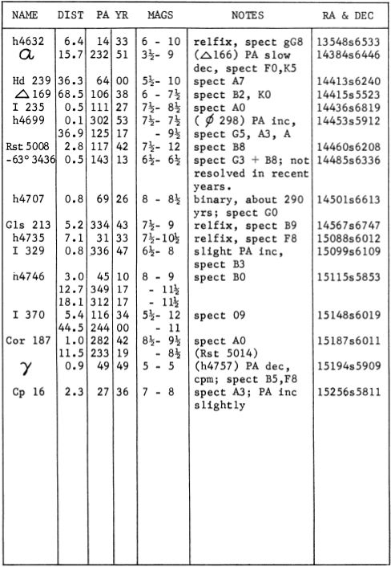

DESCRIPTIVE NOTES
描述性注释
ALPHA Mag 3.18; spectrum F0 Vp; position 14384s 6446. Alpha Circini is approximately 65 light years distant and has an actual luminosity of about 17 suns (absolute magnitude +1.7). The annual proper motion is 0.31” in PA 217°; the radial velocity is about 4 miles per second in recession.
ALPHA Mag 3.18；频谱F0 Vp; 位置14384s6446。Alpha Circini距我们约65光年，实际光度约为17个太阳（绝对值+1.7）。PA 217°的年度固有运动为0.31英寸；在衰退中，径向速度约为每秒4英里。
The 9th magnitude companion at 15.7” is a K5 star, sharing the proper motion of the primary, and maintaining the same separation since the first measurements were made in 1837. The PA is decreasing slowly, from 244° to 232° between 1837 and 1951. Projected separation = 320 AU.
15.7英寸高的9级伴星是K5星，共享主星的正确运动，并且自1837年进行首次测量以来保持相同的间隔。PA逐渐减小，从1837年至1951年的244°下降至232°预计分离= 320 AU。
LIST OF DOUBLE AND MULTIPLE STARS
双星和多星清单

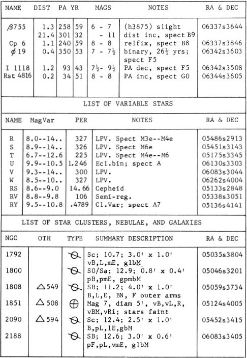
ALPHA Name-PHACT or PHAET. Mag 2.64; spectrum B8 Ve. Position 05378s3406. The computed distance is about 140 light years; the actual luminosity about 145 times that of the Sun (absolute magnitude -0.6). The star has an annual proper motion of 0.025”; the radial velocity is 21 miles per second in recession.
ALPHA名称-PHACT或PHAET。马格2.64; 频谱B8 Ve。位置05378s3406。计算出的距离约为140光年；实际光度约为太阳的145倍（绝对值-0.6）。恒星的年度固有运动为0.025英寸；在衰退中，径向速度为每秒21英里。
The 11th magnitude companion at 13.5” is evidently not physically connected with the primary; the separation is increasing slowly from 11.6” in 1900.
显然，在11．5英寸处的11级伴星没有与主星物理连接；间隔从1900年的11.6英寸缓慢增加。
BETA Name-WEZN. Mag 3.12; spectrum K1 III. The position is 05492s3547. The distance of this star is approximately the same as Alpha Columbae, about 140 light years. The computed luminosity is then about 90 times that of the Sun (absolute magnitude 0.0). The annual proper motion is 0.40” in PA 7°; the radial velocity is 54 miles per second in recession.
测试版名称-WEZN。马格3.12; 频谱K1 III。职位是05492s3547。这颗恒星的距离大约与Alpha Columbae相同，大约140光年。计算出的光度约为太阳的90倍（绝对值0.0）。PA 7°的年度固有运动为0.40英寸；在衰退中，径向速度为每秒54英里。
MU Mag 5.16; spectrum 09.5 V; sometimes given as B0. Position 05441s3219. Mu Columbae is a famous “Runaway Star”, one of three known early type stars which appear to be moving out at high speeds from the nebulous region of Orion. All three stars seem to be at about the same distance as the Orion Association, and have apparently been ejected from that region during the last few million years, possibly by some process connected with the explosion of supernovae. The other two stars are 53 Arietis and AE Aurigae, both identified by abnormally high space velocities. AE Aurigae is the most interesting of the three; its rapid passage through the heavens is presently carrying it through the large diffuse nebulosity IC 405, and the structure of the nebulosity is evidently being greatly altered by the star’s intense radiation. Mu Columbae itself has an annual proper motion of about 0.025” in a direction slightly east of due south; the true space velocity is about 74 miles per second.
亩马格5.16; 频谱09.5 V; 有时称为B0。位置05441s3219。Mu Columbae是著名的“逃亡之星”，是三颗已知的早期类型恒星之一，这些恒星似乎正在以快的速度从Orion的模糊区域移出。这三颗恒星似乎与猎户星座协会的距离大致相同，并且显然是在过去的几百万年中从该区域弹出的，可能是由于与超新星爆炸有关的某些过程。另外两颗恒星是53 Arietis和AE Aurigae，两者均由异常高的空速确定。AE Aurigae是这三种中最有趣的一种。目前，它的快速穿过天堂使它穿过大型弥漫性星云IC 405，而星云的结构显然由于恒星的强烈辐射而大大改变了。Mu Columbae本身的年度适当运动方向为约0.025英寸，该方向略微位于应向南的东侧。真实的空间速度约为每秒74英里。
For a diagram of the plotted paths of all three stars refer to AE Aurigae (page 288).
有关所有三颗星的绘制路径的图表，请参阅AE Aurigae（第288页）。
LIST OF DOUBLE AND MULTIPLE STARS
双星和多星清单


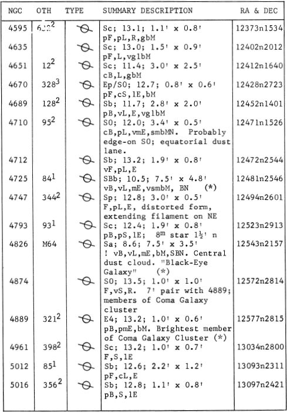
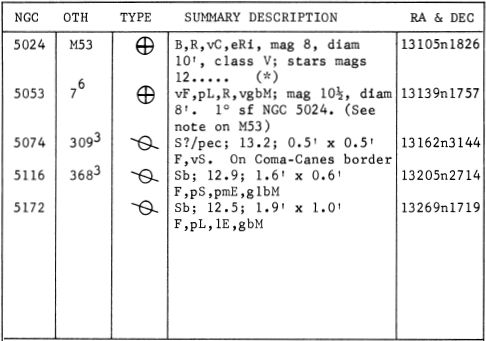
DESCRIPTIVE NOTES
描述性注释
ALPHA (42 Comae) Mag 4.23; spectrum F5 V. Position 13076n1748. Double star, discovered by F.G. W.Struve in 1827. This is a close and rather difficult binary system, but of special interest from the rare circumstance that the orbit is seen almost exactly edge-on; the two stars thus appear to move back and forth in virtually a straight line, with a nearly constant PA. The period is 25.85 years, with the apparent separation varying from practically zero to a maximum of about 0.9”. The semimajor axis of the orbit is 0.67”; the eccentricity is 0.5. Owing to the orientation of the orbit with respect to the Solar System, the time of apparent closest approach (1949) does not coincide with true periastron passage (1963).
阿尔法（42 Comae）Mag 4.23; 频谱F5V。位置13076n1748。双星，由FGWStruve于1827年发现。这是一个封闭且相当困难的双星系统，但由于罕见的情况是轨道几乎完全位于边上而引起特殊关注。因此，两颗星似乎以几乎恒定的PA来回直线移动。期限为25.85年，表观间隔从几乎为零到最大约0.9英寸不等。轨道的半长轴为0.67英寸；偏心率为0.5。由于轨道相对于太阳系的定向，明显最接近的时间（1949年）与真正的周星体通过（1963年）并不吻合。
Although T.W.Webb speaks of the two stars as “making an occultation about every 13 years” there is no real evidence that either star actually eclipses the other. From computations by H.Haffner (1948) and F.Pavel (1949) it now appears that the orbit is inclined just one-tenth of a degree from the edge-on position, implying that no real eclipse can occur. The two stars are nearly identical in size, type, and brightness; the magnitudes are both 5.1 and both spectra are F5 V. Each star is about 3 times as ‘ luminous as the Sun, and the mean separation of the pair is close to 10 AU, about the separation of Saturn and the Sun.
尽管TWWebb称这两颗星为“每13年掩星一次”，但没有真正的证据表明两颗星实际上使另一颗星黯然失色。根据H.Haffner（1948）和F.Pavel（1949）的计算，现在看来轨道仅倾斜了十分之一。从边缘位置的角度，表明没有真正的日食发生。两颗星的大小，类型和亮度几乎相同；它们的大小均为5.1，两个光谱均为F5V。每颗恒星的亮度约为太阳的3倍，这对恒星的平均间隔接近10 AU，大约是土星与太阳的间隔。
The distance of the system is approximately 65 light years, the annual proper motion is 0.45” in PA 287°, and the radial velocity is 10½ miles per second in approach.
该系统的距离约为65光年，PA 287°中的年度固有运动为0.45英寸，进近时径向速度为每秒10½英里。
THE COMA STAR CLUSTER One of the best known galactic star clusters, the Coma Berenices Star Cluster is a conspicuous scattered group of naked-eye stars, centered about midway between Alpha Canum and Beta Leonis, near 12220n2600. The cluster is not listed in the NGC or in Messier’s catalog, but is sometimes referred to by its number in the catalog list of Melotte - “Mel 111”. Covering an area about 5° in diameter, the cluster contains, as its brightest members, the fifth magnitude stars 12, 13, 14, 16, and 21 Comae. About thirty fainter stars have been identified as probable members, and a few others may await discovery. The bright stars 15, 18, and 7 Comae do not appear to be physical members of the group, but the star 31 Comae, some 5° from the cluster center, is probably a member. The information in the table below has been compiled from the Yale “Catalogue of bright Stars” (1964).
昏迷星团彗星Berenices星团是最著名的银河星团之一，是一群明显散布的裸眼星团，中心位于Alpha Canum和Beta Leonis之间的中点，附近12220n2600。该群集未在NGC或Messier的目录中列出，但有时在Melotte的目录列表中以“ Mel 111”的编号来引用。该星团覆盖直径约5°的区域，作为其最亮的成员包含第五等星12、13、14、16和21个彗星。大约有三十颗较暗的恒星已被确定为可能的成员，还有几颗可能正在等待发现。明亮的恒星15、18和7彗星似乎不是该组的物理成员，但是距星团中心约5°的恒星31彗星可能是其中的一员。
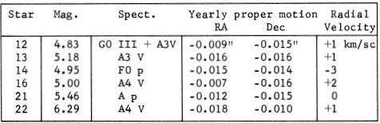
As a cluster, the Coma group is at its best in a pair of good binoculars, but is completely lost in the much narrower field of the telescope, which can show only a small portion at any one moment. G.P.Serviss spoke of noting a “curious twinkling, as if gossamers spangled with dewdrops were entangled there. One might think the old woman of the nursery rhyme who went to sweep the cobwebs out of the sky had skipped this corner, or else that its delicate beauty had preserved it even from her housewifely instinct. . “ T.W.Webb remarked that such a group obviously requires only distance to become a nebula to the naked eye.
作为一个群集，彗星组在使用一副好的双筒望远镜中处于最佳状态，但在望远镜的狭窄视野中却完全迷失了，望远镜在任何时候都只能显示一小部分。GPServiss说到注意到“一个奇怪的瞬间，仿佛散布着露珠的游丝被缠绕在那里。也许有人以为是那个押韵的老妇人，她把蜘蛛网从天上扫了过去，或者跳过了这个角落，或者甚至它的精致美感甚至保留了她家庭主妇的本能。。TWWebb指出，这样一个小组显然只需要距离就可以成为肉眼的星云。

THE COMA BERENICES STAR CLUSTER. The members of this nearby cluster are scattered over the entire field of this 13-inch telescope photograph.
COMA BERENICES星团。这个附近星团的成员分散在这张13英寸望远镜照片的整个视野中。
Lowell Observatory
洛厄尔天文台
The cluster is named in honor of Berenice II of Egypt, who was the Queen of Ptolemy III (246 - 221 BC). In one of the most appealing star legends we are told of the Queen’s vow to sacrifice her famed “amber tresses” in the temple of Aphrodite at Zephyrium, following the king’s safe return from battle. After the offering mysteriously vanished from the temple, the court astronomer Conon convinced the royal couple that the lost tresses had been transformed by the ¡gods into a constellation, and enshrined forever among the stars. The Roman poet Catullus (about 60 BC) refers to this legend when he speaks of
该集群的命名是为了纪念埃及的贝伦尼斯二世，他是托勒密三世女王（公元前246年至221年）。在最吸引人的明星传说之一中，我们得知女王的誓言，在国王从战斗中安全返回之后，在Zephyrium的阿芙罗狄蒂神庙中牺牲了她著名的“琥珀色发辫”。祭品从圣殿中神秘消失后，宫廷天文学家科农（Conon）说服了王室夫妇，迷失的发辫已被神转变为星座，并永久地奉献在星空之中。罗马诗人卡图卢斯（大约公元前60年）在谈到这个传说时
“the consecrated offering of Berenice’s golden hair, which the divine Venus placed, a new constellation among the ancient ones, preceding the slow Bootes, who sinks late and reluctantly into the deep ocean...“
“神圣的维纳斯将贝伦尼斯的金色头发献祭，在古老的星座中形成了一个新的星座，在缓慢的布特斯之前，它们沉入了深深而又无情的深海中……”

In the coins of Berenice, we find some of the most exquisite coin portraits which have come down to us from the ancient world, particularly in the large gold octadrachms and decadrachms dating from the early days of the reign of Ptolemy III. “During this reign..... Egypt had command of the sea”, states Professor Barclay V.Head in his monumental work Historia Numorum (1911) “and her empire embraced many of the maritime districts of Asia Minor, even extending across the Aegean into Thrace. Hence the appearance of Egyptian influence at mints like Ephesus and Ptolemais-Lebedus. In the absence of specific local and other marks, the Ptolemaic coins issued in these regions can seldom be attributed with certainty,...” Prof. Head suggested, however, that the much-admired gold octadrachm of Berenice was probably minted at Ephesus on the west coast of Asia Minor, famous as the site of the great Temple of Diana, one of the ancient Seven Wonders. The respected German authority K.Regling dated this same coin, on the basis of a study of die-styles, to 258 BC, the year of the marriage of the young Berenice of Cyrene to the future Ptolemy III. The ancient city of Berenice, named for the queen, is still in existence as the modern Benghazi in Libya, capital and chief port of the province of Cyrenaica.
在贝伦尼采的硬币中，我们发现了一些从古代世界传下来的最精美的硬币肖像，尤其是在托勒密三世统治初期的大型八面金币和十足金币。Barclay V.Head教授在他的纪念性作品Historia Numorum（1911年）中说：“ 在位期间……埃及掌握着大海的统治权。她的帝国包围了小亚细亚的许多海域，甚至遍布整个小海域。爱琴海进入色雷斯。因此，埃及的影响出现在以弗所和托勒迈斯-Lebedus。在没有特定的本地和其他标记的情况下，在这些地区发行的托勒密硬币很难确定。”然而，海德教授建议说，备受推崇的贝伦尼采金八面体可能是在以弗所铸造的。小亚细亚的西海岸，以古老的七大奇观之一的戴安娜神庙而闻名。根据对模具样式的研究，受人尊敬的德国当局K.Regling将同一枚硬币的日期定为公元前258年，即年轻的Cyrene的Berenice嫁给未来的托勒密三世的那一年。以女王的名字命名的贝伦尼斯古城仍然是作为现代的班加西人存在的，位于利比亚，是塞里尼亚卡省的首府和主要港口。
Before the days of Berenice, however, the star group seems to have been regarded as a part of the constellation Leo, marking the tuft of hair at the end of the Lion’s tail. The Arabian names, Al Halbah and Al Dafirah refer to this identification and have been translated “the Coarse Hair” or “The Tuft”. Eratosthenes, however, in the 3rd Century BC, refers to the group as “Ariadne’s Hair” though in another passage he does connect it with the Egyptian Berenice. In various star maps of the late Middle Ages the cluster is identified as a rose-wreath or ivy-wreath, and occasionally as a Sheaf of Wheat held in the hands of Ceres or Virgo. These identifications seem to date back to a time when Coma was considered a part of the constellation Virgo. According to R.H.Allen, the astronomer Tycho Brahe “set the question at rest in 1602 by cataloguing it separately, adopting the early title as we have it now.”
然而，在贝伦尼斯（Berenice）时代之前，这个星团似乎已被视为狮子座的一部分，标志着狮子尾巴末端的一簇簇毛发。阿拉伯名字，Al Halbah和Al Dafirah请参阅此标识，并已翻译为“粗发”或“簇绒”。然而，公元前3世纪的Eratosthenes将该小组称为“ Ariadne的头发”，尽管他确实在另一段中确实将其与埃及Berenice联系了起来。在中世纪晚期的各种星图中，星团被识别为玫瑰花环或常春藤花环，偶尔也被识别为谷蜡粉握在谷神星或处女座手中。这些标识似乎可以追溯到Coma被视为处女座星座的一部分的时候。RHAllen认为，天文学家第谷·布拉赫（Tycho Brahe）“在1602年通过单独分类将问题搁置一旁，采用我们现在已有的早期标题。”
At a distance of about 250 light years, the Coma group is one of the nearest of all the star clusters; probably only the Ursa Major Group and the Hyades in Taurus are closer. Cluster members may be identified by the annual proper motion of the group, about 0.02” in P.A. 218°, and by the fact that the radial velocity of the members averages nearly zero. Any star with a high radial velocity is thus immediately disqualified. In one of the first really comprehensive studies of the group, R.J.Trumpler (1938) identified 37 stars as true cluster members on the basis of both proper motion data and radial velocity measurements. The most luminous members, as 14 and 16 Comae, have about 50 times the luminosity of the Sun. The faintest stars accepted as members are about 1/3 the brightness of the Sun. Spectral types range from A3 to about G9. As a standard of comparison, our Sun at the distance of the Coma Cluster would appear as a star of magnitude 9.2.
在大约250光年的距离上，彗星组是所有星团中最接近的星团之一；可能只有Ursa Major Group和Taurus的Hyades离得更近。可以通过该组的年度适当运动（PA 218°中约0.02英寸）以及该组成员的径向速度平均接近零这一事实来识别组成员。因此，具有高径向速度的任何恒星都会立即被取消比赛资格。在该小组的第一批真正全面的研究中，RJTrumpler（1938）在适当的运动数据和径向速度测量的基础上，将37颗恒星确定为真正的星团成员。发光最强的成员，例如14和16个彗星，大约有是太阳光度的50倍。被接受为成员的最微弱的恒星大约是太阳亮度的1/3。光谱类型从A3到大约G9。作为比较的标准，在昏迷星团附近的太阳将显示为9.2级的恒星。
There are eight known spectroscopic binary stars in the Coma Cluster, with orbital elements presently available for several of the brighter ones. The bright star 12 Comae is the most interesting of these. It is a spectroscopic binary with a period of 396.49 days, but there is also a distant visual companion of the 8th magnitude at 66” in PA 167°, almost certainly a true cluster member. The spectrum of 12 Comae is composite, GO III + A3 V; the spectrum of the visual companion is about F8. In addition, about 0.5° to the southeast is the binary Σ1639, with a computed period of some 600 years and a semimajor axis of about 1”. The orbit has an eccentricity of about 0.9 and the spectrum of the brighter star is about F0.
在昏迷星团中有八颗已知的光谱双星，目前有一些较亮的恒星具有轨道元素。明亮的恒星12 Comae是其中最有趣的。它是一个光谱学的双星，周期为396.49天，但在PA 167°中也有遥远的视觉伴侣，在66“处8级，几乎可以肯定是真正的星团成员。12 Comae的光谱是合成的，GO III + A3 V；视觉伴侣的光谱大约是F8。此外，二进制Σ1639向东南约0.5°，计算周期约为600年，半长轴约为1英寸。轨道的偏心率约为0.9，明亮恒星的光谱约为F0。
The Coma Cluster contains no giant stars, though the H-R Diagram (below) shows that the brightest members are just beginning to evolve toward the giant stage. The total mass of the group is probably under 100 solar masses. One of the peculiar features of the cluster is the apparent lack of fainter stars; the main sequence seems to terminate abruptly at apparent magnitude 10½, which corresponds to an absolute magnitude of about 6. Fainter and redder dwarf stars, actually the commonest stellar types, seem to be missing completely in the Coma group. If we compare this cluster with the famous Pleiades, it seems relatively poor in stars and only about a quarter as thickly populated, although the volumes of the two clusters are nearly equal. The sparseness of the Coma group suggests the possibility that the cluster may be gradually dispersing due to the small total mass. The computed star density is about one star per 10 cubic parsecs, a value very near the theoretical lower limit for stable clusters. In terms of age, the Coma group appears to be older than the Pleiades, but younger than Praesepe (M44) in Cancer or the Hyades Cluster in Taurus. (For a discussion of cluster age-dating, refer to M13 in Hercules)
昏迷星团没有巨星，尽管HR图（下图）显示最亮的成员才刚刚开始向巨星阶段发展。该小组的总质量可能低于100太阳质量。该星团的独特特征之一是明显缺乏较暗的恒星。主要序列似乎突然终止于表观强度10½，这对应于大约6的绝对强度。昏迷的和较矮的红矮星实际上是最常见的恒星类型，在彗星组中似乎完全消失了。如果我们将该星团与著名的P宿星进行比较，虽然两个星团的体积几乎相等，但它的恒星似乎相对较差，只有大约四分之一的人口稠密。昏迷组的稀疏性表明，由于总质量较小，群集可能会逐渐分散。计算出的恒星密度约为每10立方秒1颗恒星，这个值非常接近稳定星团的理论下限。就年龄而言，昏迷组的年龄似乎比the宿星的年龄要大，但比巨蟹星座的金牛座或金牛座的海德斯星团还年轻（M44）。（有关群集年龄约会的讨论，请参阅Hercules中的M13）
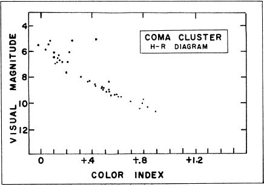
M53 (NGC 5024) Position 13105n1826. A rich globular star cluster which forms a pair of 1° separation with the more unusual cluster NGC 5053. M53 itself lies 1° northeast of the binary Alpha Comae, and was first observed by J.E.Bode in February 1775. He referred to it as “a new nebula, appearing through the telescope as round and pretty lively”; the use of the last term suggests some hint of resolution. Messier’s independent discovery occurred just two years later, in February of 1777; he found it “round and conspicuous” but “without stars” and compared it afterwards with the comet of 1779. Bright and well condensed, the cluster is an easy object for the small telescope, appearing as a round nebulous spot in a three-inch glass, but resolving into a wonderful swarm of tiny star images with larger instruments. Partial resolution usually requires a 6-inch telescope. In the greatest telescopes M53 is more than worthy of Webb’s description: “a brilliant mass of minute stars, blazing in the center.” John Herschel spoke of the radiating curves and streams of stars which adorn the outer edges, an appearance which is seen in many other bright globulars as well. Sir William Herschel, with his great reflector, spoke of M53 as “one of J the most beautiful sights I remember to have seen in the heavens. The cluster appears under the form of a solid ball consisting of small stars quite compressed into a blaze of light with a great number of loose ones surrounding it and distinctly visible in the general mass. Similar in appearance to M10”. Admiral Smyth saw M53 as “a mass of minute stars 11-15 mag. and from thence to gleams of star-dust, with stragglers.... and pretty diffuse edges..” K.G.Jones (1968) rates it as “certainly one of the most beautiful” of the globulars. “It consists of a brilliant nucleus about 2’ in diameter, surrounded by a dusky halo of light that gives it a glittering gem-like appearance. The background is dark but glimpses of numerous, faint stars can be obtained in clear conditions.”
M53（NGC 5024）位置13105n1826。一个富裕的球状星团，与较不寻常的星团NGC 5053形成一对1°的间隔。M53本身位于双星Alpha Comae的东北1°，并由JEBode于1775年2月首次观察到。他将其称为“ a新星云，通过望远镜显得圆润而生动。” 最后一词的使用暗示了一些解决方法。梅西耶（Messier）的独立发现发生在仅仅两年后的1777年2月。他发现它“圆形且引人注目”，但“没有星星”，随后将其与1779年的彗星进行了比较。明亮且凝结良好，该星团是小型望远镜的简单物体，在三英寸的圆形星云中出现玻璃，但可以使用大型仪器解析成一团奇妙的微小恒星图像。部分分辨率通常需要6英寸望远镜。在最伟大的望远镜中，M53的价值不亚于韦伯的描述：“一堆明亮的微小恒星，在中心闪耀。”约翰·赫歇尔谈到装饰着外缘的辐射曲线和恒星流，这种现象在还有许多其他亮球状。威廉·赫歇尔爵士（Sir William Herschel）凭借其出色的反光镜，将M53称为“我记得在天堂见过的最美丽的风景之一”。该星团以实心球的形式出现，实心球由小恒星组成，这些恒星被压缩成一团光亮，周围散布着许多散乱的星团，并且在整体中清晰可见。外观类似于M10”。史密斯海军上将将M53视为“一颗质量为11-15的微小恒星。从那里到星尘的微光，散落着……散布的边缘。” KG 琼斯（1968）将该球评定为“无疑是最美丽的球状球之一”。“它由直径约2'的明亮核组成，周围是昏暗的光晕，使其具有宝石般闪闪发光的外观。背景是黑暗的，但在晴朗的条件下也可以瞥见许多微弱的恒星。”

GLOBULAR STAR CLUSTERS IN COMA BERENICES.The bright M53 I is separated by 1° from its fainter neighbor NGC 5053.
昏迷中的球形星团。明亮的M53 I与较暗的邻居NGC 5053相隔1°。
I Mt.Wil6on and Palomar Observatories
我在威尔士山和帕洛玛天文台
The total photographic magnitude of M53 is about 8.7, the extreme diameter about 14’, and the integrated spectral type is F4. The cluster lies at a distance of about 65,000 light years; the resulting total luminosity is about 200 thousand times the Sun. Radial velocity studies show an approach velocity of about 70 miles per second. Some 45 variable stars are known in M53.
M53的总摄影量约为8.7，最大直径约为14'，综合光谱类型为F4。该星团位于约65,000光年的距离。产生的总光度约为太阳的20万倍。径向速度研究表明，进近速度约为每秒70英里。在M53中，大约有45个变星。
One degree to the southeast is the peculiar cluster NGC 5053, an unusual object which from its appearance could be classified as either a very loose globular or a very rich galactic cluster. It was discovered by Sir William Herschel in 1784, and may be detected in an 8-inch glass as a faint hazy spot of about magnitude 10½. It contains no dense nucleus of stars, and the faint members are widely separated even at the cluster center. Resolution can be achieved only with rather large telescopes.
向东南一度是奇特星团NGC 5053，这是一个不寻常的物体，从其外观上可以分为非常松散的球状星团或非常丰富的银河星团。它是由威廉·赫歇尔爵士（Sir William Herschel）于1784年发现的，并且可能在8英寸的玻璃中被发现为大约1½量级的模糊朦胧斑点。它不包含密集的恒星核，即使在星团中心，微弱的成员也被广泛隔开。只有使用相当大的望远镜才能实现分辨率。
The classification of this system as a globular is supported by the color-magnitude diagram and the presence of short-period pulsating variables of the RR Lyrae type. The population is about 3400 stars down to the 21st magnitude, decidedly sparse for a globular cluster. With an actual diameter of close to 100 light years, the resulting density is evidently not much more than 0.3 star per cubic parsec. The distance of the cluster seems to be comparable to that of M53; in fact the studies of the variables in the two groups suggest that NGC 5053 is probably slightly nearer to us than its brighter neighbor. The best present figure is about 55,000 light years, which gives the cluster a total luminosity of some 16,000 suns. This is one of the lowest luminosities derived for any globular cluster; the great Omega Centauri, for comparison, shines with nearly the light of a million suns. (Refer also to NGC 5139 in Centaurus and M13 in Hercules)
颜色大小图和RR Lyrae类型的短周期脉动变量支持该系统分类为球状。人口下降到21级，大约3400颗恒星，稀疏成球状星团。由于实际直径接近100光年，因此所产生的密度显然不超过0.3星形/立方秒差距。群集的距离似乎与M53的距离相当；实际上，对两组变量的研究表明，NGC 5053可能比其明亮邻居更接近我们。目前最好的数字是约55,000光年，这使该星团的总光度约为16,000太阳。这是从任何球状星团获得的最低的亮度之一。相比之下，伟大的欧米茄半人马座 几乎以一百万个阳光照耀。（另请参阅半人马座的NGC 5139和大力神的M13）
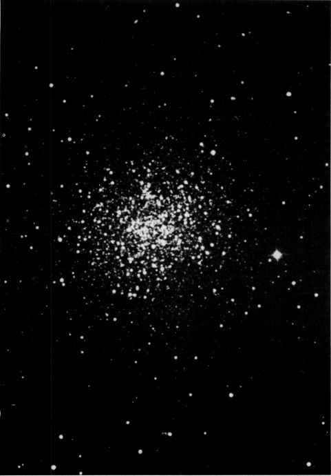
NGC 5053. The unusual globular star cluster in Coma Bere-I nices, photographed with the 48-inch Schmidt telescope at Palomar.
NGC5053。在帕洛玛用48英寸的施密特望远镜拍摄了在Coma Bere-I的不寻常球状星团。
M64 (NGC 4826) Position 12543n2157. The Black-Eye Galaxy, a large oval spiral of the 8th magnitude and measuring about 7½’ X 3½’ in size, easily located about 1° ENE from the star 35 Comae. M64 was discovered by J.E. Bode on April 4, 1779, and was recorded merely as looking like a “small nebulous star”. Messier found it in March 1780 and thought it to be about half the brightness of M53. Observers today will find both objects visible in good field glasses. Admiral Smyth called M64 “a conspicuous nebula, magnificent both in size and brightness, being elongated in a line N.p. & S.f. and blazing to a nucleus”. In the Shapley-Ames Catalogue it is rated among the dozen brightest spirals in the entire heavens; this suggests that it is not a member of the great Virgo Galaxy Cluster which is centered some 9° away, or at least that it is considerably closer than most of the other galaxies in this part of the sky.
M64（NGC 4826）位置12543n2157。黑眼星系是一个第八级的大椭圆形螺旋形，大小约为7½'X3½'，距恒星35彗星约1°ENE。M64由JE Bode在1779年4月4日发现，并被记录为仅看起来像“小星云”。梅西埃（Messier）在1780年3月发现了它，并认为它只是M53亮度的一半。今天的观察者将在良好的野外镜中发现这两个物体。史密斯海军上将称M64“是一个明显的星云，在大小和亮度上都非常壮观，在Np和Sf线中拉长并燃烧成核。” 在《 Shapley-Ames目录》中，它被评为整个天堂中最明亮的十二个螺旋之一。这表明它不是伟大的处女座星系团的成员，该星系团的中心约有9°，
The structure of M64 is somewhat unusual, and the galaxy has been classified as type Sa by some authorities, type Sb by others. The spiral arms show a beautifully smooth and uniform texture with no trace of resolution into star clouds or knots of nebulosity. Separating and defining the arms are thin, dusky bands which appear similarly smooth and soft-textured. In the region of the central nucleus, however, a huge dust cloud suddenly makes its appearance, bordering the entire north and east side of the oval central mass. The dust cloud shows much fine detail on photographs made with great telescopes, and breaks up into an intricate region of mixed dark and luminous material as it rims the near side of the central hub. D’Arrest thought the center partly resolvable, while Lord Rosse interpreted the mottling as a “close cluster of well-defined little stars”. The visibility of the dark mass is naturally a controversial point among observers, but it is definitely within the capabilities of a good 6 or 8-inch glass; J.H. Mallas has detected it in a 4-inch refractor. The observation of such details requires very dark clear skies, and the observer must keep his eyes well dark-adapted. In the study of such things, the intergalactic traveller may also temporarily ignore the usual rule against using high-power oculars on nebulae and galaxies; a somewhat higher magnification in this case may help to darken the field and increase the visibility of the “black eye” of M64.
M64的结构有些不寻常，某些权威将星系归类为Sa类型，其他权威将其归类为Sb。螺旋臂显示出平滑而均匀的美丽纹理，没有丝毫的分辨率分辨成星云或星云。分开并定义手臂的是细细的，暗淡的带子，它们看起来类似地光滑且质地柔软。然而，在中心核区域，突然出现了巨大的尘埃云，与椭圆形中心块的整个北侧和东侧接壤。尘埃云在用大望远镜拍摄的照片上显示出很多精细的细节，并在围绕中心轮毂的近侧时，分成混合了深色和发光材料的复杂区域。D'Arrest认为中心可以部分解决，而罗塞勋爵（Lord Rosse）则将这种杂乱无章的感觉解释为“定义明确的小恒星的紧密簇”。暗质量的可见性在观察者中自然是一个有争议的话题，但是它绝对在6或8英寸优质玻璃的能力之内。JH Mallas已在4英寸折射器中检测到它。观察这些细节需要非常黑暗的晴朗天空，并且观察者必须使他的眼睛适应黑暗。在里面研究此类事物后，星际旅行者还可能会暂时忽略通常的规则，即禁止在星云和星系上使用高倍镜。在这种情况下，较高的放大倍率可能有助于使视野变暗并增加M64“黑眼”的可见度。
The exact distance of M64 is not precisely determined but appears to be in the range of 20 - 25 million light years; the red shift of the system is about 225 miles per second, about a third the average value for members of the Virgo Galaxy Cluster, The apparent size of about 7.5” then corresponds to about 48,000 light years, and the total luminosity is about 13 billion times the sun (absolute magnitude -20.5). E.Holmberg, in his Catalogue of External Galaxies, however, adopts a much greater distance, of 13.5 megaparsecs, or close to 44 million light years; this would double the value given above for the linear diameter, and quadruple the total derived luminosity. At the present time, the smaller distance appears to fit better the currently accepted value (1976) for the Hubble Constant. The light of the system is somewhat yellower than that of many spirals, and the integrated spectral class is about G7. Whatever the exact distance, there is general agreement that M64 is one of the more massive and more luminous galaxies, and is certainly among the most noteworthy objects of its type for small telescopes. As of 1976, no supernovae have yet been recorded in this galaxy.
M64的确切距离尚未精确确定，但似乎在20-2500万光年的范围内；系统的红移约为每秒225英里，约为处女座星系团成员平均值的三分之一。约7.5英寸的表观大小相当于约48,000光年，总光度约为130亿乘以太阳（绝对值-20.5）。E.Holmberg在他的《外部星系目录》中，但是，它采用的距离要大得多，为13.5兆帕，或接近4400万光年；这将使上面给出的线性直径的值翻倍，并使总的发光度翻两番。目前，较小的距离似乎更适合当前接受的哈勃常数值（1976年）。该系统的光线比许多螺旋灯的光线略微发黄，并且集成的光谱类别约为G7。不管确切的距离是多少，人们普遍认为M64是质量更大，发光度更高的星系之一，并且无疑是小型望远镜最引人注目的对象之一。截至1976年，该星系中尚无超新星记录。
M85 (NGC 4382) Position 12228nl828. One of the bright members of the Virgo Galaxy Cluster, the great aggregation of external systems which is centered some 5° to the south. The chief facts concerning this very remarkable cluster are given in the constellation section on Virgo; the most notable members lying north of the border in Coma are: M85, M88, M98, M99, M100, and NGC 4565.
M85（NGC 4382）位置12228nl828。处女座银河星系群中最聪明的成员之一，是外部系统的巨大聚集，它以南约5°为中心。关于这个非常杰出的星团的主要事实在处女座的星座部分给出。位于昏迷边界以北的最著名的成员是：M85，M88，M98，M99，M100和NGC 4565。
M85 is, as T.W.Webb says, a “fair specimen of many nebulae in this region”. It was discovered by Mechain in 1781 and was described by Messier in the same year as “a nebula without star, above and near to the ear of Virgo.... this nebula is very faint.” M85 appears to most cameras and to the eye as a normal elliptical galaxy about 3’ X 2’ in size, magnitude about 10½, elongated nearly north to south. There is a strong concentration of luminosity toward the center, but no telescope has shown resolution into stars. Plates made at Palomar, however, show faint elongations or tufts of material at the north and south tips of the system, either the vague beginning of a spiral pattern or the last surviving remnant of one. From this appearance the classification has been changed to “SO” in many modern catalogues.
正如TWWebb所说，M85是“该地区许多星云的正常标本”。它是由Mechain在1781年发现的，并在同年被Messier描述为“在处女座耳朵上方和附近的无星云。...这个星云非常微弱。” M85在大多数相机和眼睛是一个正常的椭圆星系，大小约为3'X 2'，大小约为10.5，几乎从北向南延伸。朝向中心的光度集中度很高，但是没有望远镜显示出分解为恒星的分辨率。然而，在帕洛玛（Palomar）制造的印版在系统的北端和南端显示出微弱的伸长率或簇状材料，要么是螺旋形图案的模糊开始，要么是最后一个残存的残余物。从此外观，许多现代目录中的分类已更改为“ SO”。

SPIRAL GALAXY M64. The famous “Black-Eye Galaxy”. This I photograph was made with the 61-inch reflector of the U.S. ! Naval Observatory at Flagstaff, Arizona.
螺旋星系M64。著名的“黑眼星系”。我拍的这张照片是用美国的61英寸反光板制成的！亚利桑那州弗拉格斯塔夫的海军天文台。
OFFICIAL US. NAVY PHOTOGRAPH
官方美国。海军摄影
The corrected red shift of M85 is about 450 miles per second; according to be best current value for the Hubble relationship, this implies a distance of about 44 million light years. E.Holmberg (1964) has derived a slightly closer distance of about 41 million light years, and finds a total mass of about 100 billion solar masses; the total luminosity is close to absolute magnitude -20.5. The 3’ apparent size corresponds to about 40,000 light years at the accepted distance. A supernova was recorded in this galaxy in 1960.
M85的校正红移约为每秒450英里；根据哈勃关系的最佳当前值，这意味着约有4,400万光年的距离。E.Holmberg（1964）得出的距离稍微更近了约4100万光年，发现的总质量约为1000亿太阳质量。总光度接近绝对值-20.5。3'视在尺寸对应于可接受距离的约40,000光年。1960年在该星系中记录了超新星。
The faint barred spiral NGC 4394 lies in the same field, 7.8’ to the east.
淡淡的螺旋状NGC 4394位于同一区域，向东7.8'。
M88 (NGC 4501) position 12295n1442. A bright, nicely symmetrical galaxy of the multiple-arm type, oriented about 30° from the edge-on position, and measuring about 5.5’ X 2.5’. This is one of Messier’s discoveries, found March 18, 1781, and described with the usual terse phrase “nebula without star”. Admiral Smyth found it to be a “long elliptical nebula...pale white..... and with its attendant stars forms a pretty pageant.... the N.part is brighter than the S.” Lord Rosse in 1850 found it to be of spiral form, while modern photographs reveal many closely packed whorls curving about the bright and elongated central hub; the central nucleus is almost starlike. The general appearance resembles M63 in Canes, but is apparently a more distant object.
M88（NGC 4501）位置12295n1442。一个明亮的，对称的多臂星系，与边缘对开位置成30°角，约5.5'X 2.5'。这是梅西耶（Messier）的发现之一，发现于1781年3月18日，并用通常的简洁短语“无星云”来描述。史密斯海军上将发现它是“椭圆形长星云...苍白.....并且伴随着恒星形成相当漂亮的选美.... N部分比S亮。”罗塞勋爵在1850年发现它是螺旋形的，而现代摄影作品则显示出许多密密麻麻的螺纹，围绕明亮而细长的中央轮毂弯曲。中央核几乎是星形的。外观类似于Canes中的M63，但显然是较远的物体。
M88 is one of the notable spirals of the Virgo-Coma Galaxy Cluster, and lies near the northern end of a bright chain of objects which form a sweeping 3Q curve toward the southwest. This chain of galaxies is evidently the center or nucleus of the entire vast cluster, but the majority of the members lie to the south of the Coma border, in Virgo. For identification charts of this area, refer to the Virgo section of this Handbook. The Skalnate-Pleso Atlas also charts nearly all the galaxies listed on pages 663-667, and the voyager in this fabulous region may explore island universes by the dozens. The intergalactic traveler, however, must learn to observe with the mind as well as the eye, since the galaxies reveal their full splendor only to the more sensitive eye of the camera.
M88是处女座-科马星系团的引人注目的螺旋之一，位于明亮的物体链的北端附近，这些物体形成一条向西南倾斜的3 Q曲线。这条星系链显然是整个庞大星团的中心或核，但大多数成员位于处女座的昏迷边界以南。有关此区域的标识图，请参阅本手册的处女座部分。Skalnate-Pleso地图集也绘制了第663-667页上列出的几乎所有星系的图表，而这个神话般的地区的旅行者可能会探索数十个岛屿。但是，星系间的旅行者必须学会用眼睛和眼睛进行观察，因为星系只向相机的较敏感的眼睛显示出其全部的光彩。
M88 has a much larger red shift than the two other galaxies described previously, M64 and M85. Taken at face value, the figure of about 1280 miles per second (corrected for the solar motion) would seem to place this system far beyond many of the bright spirals of the Virgo group. Yet, from other studies, M88 is believed to be at about the same distance as M85; E.Holmberg adopts a distance of about 12.5 megaparsecs, or about 41 million light years; the resulting true diameter is about 60,000 light years and the computed absolute magnitude about -21. Up to 1976, no supernovae have been observed in this galaxy.
M88的红移比之前描述的其他两个星系M64和M85大得多。从表面上看，每秒约1280英里的数字（针对太阳运动进行了校正）似乎使该系统远远超出了处女座群体的许多明亮旋涡。然而，根据其他研究，M88被认为与M85的距离大致相同；E.Holmberg的距离约为12.5兆帕，即约4,100万光年。最终的真实直径约为60,000光年，计算出的绝对大小约为-21。直到1976年，在该星系中还没有发现超新星。
K.G.Jones (1968) considers M88 one of the best of the Virgo Group galaxies for the small telescope, and finds it seemingly brighter than its reported magnitude of 10½. “It will stand magnifying power well, and with averted vision, a considerable amount of faint detail can be made out from time to time.”
KGJones（1968）认为M88是小型望远镜中处女座星系中最好的星系之一，并且发现它看起来比报道的10.5高。“它具有很好的放大能力，而且如果避开视线，可以不时做出大量微弱的细节。”
A little more than 1° to the ESE is the position of one of the mysterious missing Messier objects, M91, at 12350n1402. The discoverer, in March 1781, described it as a “nebula without star...its light even fainter than M90”. j Although Shapley and others have theorized that M91 may have been a true comet that got away, it seems more likely that it was merely a duplicate observation of one of the other objects in the region, with perhaps an erroneous position. The nearby galaxy NGC 4571 has been suggested as a probable candidate; O.Gingerich on the other hand, found that a duplicate observation of M58 (about 2° to the south in Virgo) was the most probable explanation. Questions as these may never be settled with absolute finality.
与ESE略大于1°的位置是神秘失踪的Messier物体之一M91，位置为12350n1402。该发现者于1781年3月将其描述为“没有恒星的星云……它的光甚至比M90还暗”。j尽管Shapley和其他人从理论上说M91可能是一颗真正的彗星，但是它似乎只是对该区域其他物体之一的重复观测，可能位置错误。有人建议附近的星系NGC 4571是可能的候选星系。另一方面，O.Gingerich发现，最可能的解释是对M58的重复观测（处女座以南约2°）。诸如此类的问题永远都不可能绝对解决。
M98 (NGC 4192) Position 12113n1511. A large and much-elongated galaxy measuring about 8’ x 2’ and located ½° west of the 5th magnitude star 6 Comae. This is another of Mechain’s discoveries, found in 1781, and confirmed by Messier in the same year; the noted comethunter described it as “a nebula without star, of an extremely faint light, above the northern wing of Virgo...” William Herschel in 1783 found it to be “a large extended fine nebula. Its situation shows it to be M.Messier’s 98th; but from the description it appears that that gentleman has not seen the whole of it, for its feeble branches extend above a quarter of a degree.... my field of view will not quite take in the whole nebula”. Smyth thought it .”large, but rather pale.... on keeping a fixed gaze it brightens up toward the centre.”
M98（NGC 4192）位置12113n1511。一个大型且细长的星系，大小约为8'x 2'，位于5号星6彗星以西½°。这是Mechain的另一项发现，发现于1781年，并于同年被Messier确认；著名的彗星猎人威廉·赫歇尔（William Herschel）在1783年将其描述为“在处女座北翼上方的无星云，极微弱的光线的星云……”。它的情况表明它是Messier的第98位；但是从描述中看来，绅士并没有看到全部，因为其微弱的分支延伸了超过四分之一度。...我的视野不会完全吸收整个星云。” 史密斯认为它是“大而苍白的……在保持固定的注视时，它朝着中央变亮了。”
Photographs show M98 to be a nearly edge-on spiral, probably of type Sb, the long dimension oriented from NNW to SSE. The central region has a total magnitude of about 11, with a small nearly stellar nucleus; the faint and fine-structured spiral arms sweep out for vast distances at the north and south ends of the galaxy. Curiously, M98 is one of the few galaxies in the Virgo-Coma region that does not show a red shift; according to an extensive list published by M.L.Humason, N.U.Mayall, and A.R.Sandage (1956) the corrected radial velocity is about 125 miles per second in approach! It is difficult to know how to interpret such an anomalous result. Ordinarily a blue shifted galaxy would be an excellent candidate for membership in the Local Group of Galaxies. Studies of photographs and photometry of the system, however, indicate that the distance must be close to 35 million light years, somewhat closer than most of the members of the Virgo group; if a true member, it would be necessary to conclude that an occasional galaxy may have a random velocity so large as to over-compensate for the recession of the group as a whole. This circumstance would seem to make it unwise to base galaxian distances solely on the observed red shift.
照片显示M98是近乎边缘的螺旋形，可能是Sb型，其长尺寸从NNW到SSE。中心区域的总大小约为11，几乎没有恒星核。微弱且结构细密的旋臂在银河的南北两端扫了很长一段距离。奇怪的是，M98是处女座-科马地区少数几个没有出现红移的星系之一。根据MLHumason，NUMayall和ARSandage（1956）发布的广泛清单，进近时校正后的径向速度约为每秒125英里！很难知道如何解释这样的异常结果。通常，蓝移星系将是本地星系组成员的绝佳候选人。研究系统的照片和光度法，表明距离必须接近3500万光年，比处女座的大多数成员都近一些；如果是真正的成员，则有必要得出结论，偶然的星系可能具有很大的随机速度，以至于过度补偿了整个群体的衰退。这种情况似乎使仅根据观测到的红移来建立星系距离是不明智的。
If the derived distance of about 35 million light years is correct, M98 has an actual diameter of about 80 thousand light years and an absolute magnitude of about -21 which makes it more or less equal in luminosity to M88. The integrated spectral type is GO. E.Holmberg finds a total mass of about 130 billion solar masses for this galaxy. Up to 1976 no supernovae have been recorded in the system.
如果得出的大约3500万光年的距离是正确的，则M98的实际直径约为8万光年，并且绝对值约为-21，这使它的亮度与M88大致相等。积分光谱类型为GO。E.Holmberg发现该星系的总质量约为1300亿太阳质量。直到1976年，该系统中还没有记录到超新星。
The bright round spiral M99 lies about 1.3° distant toward the ESE; another faint spiral, NGC 4237, is about 1° away, toward the NE.
明亮的圆形螺旋M99与ESE的距离约为1.3°；另一个微弱的螺旋形NGC 4237向NE倾斜约1°。
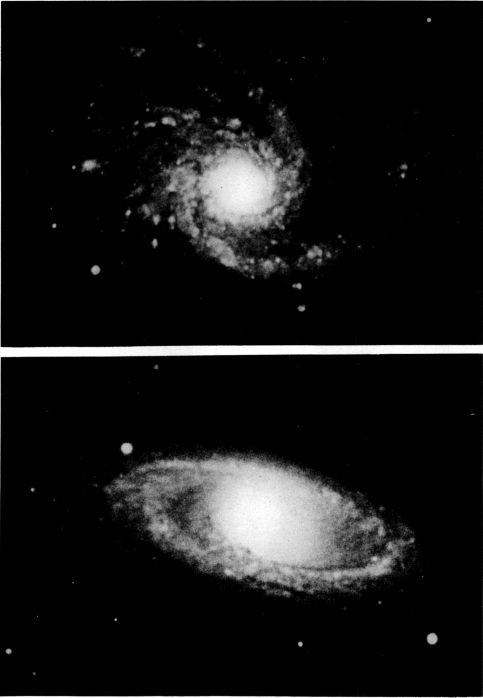
GALAXIES IN COMA BERENICES. Top: The fine open spiral M99. Below: The more compact spiral NGC 4274.
昏迷中的星系。上：细开口螺旋M99。下图：更紧凑的螺旋NGC 4274。
Palomar Observatory 200-inch telescope photographs.
帕洛玛天文台200英寸望远镜的照片。

SPIRAL GALAXY M100.The largest spiral of the Virgo Galaxy Cluster, photographed with the 200-inch telescope.
螺旋星系M100：用200英寸望远镜拍摄的处女座星系团最大的螺旋星系。
Palomar Observatory
帕洛玛天文台
M99 (NGC 4254) Position 12163n1442. A bright round spiral of type Sc, called by R.H. Allen the “Pinwheel Nebula” though this name is more often applied to the great M33 in Triangulum. M99 is located just 50’ southeast of the star 6 Comae, and about 1.3° distant from M98. It was discovered by Mechain in 1781 and confirmed by Messier the same year; he found it a “nebula without star, of a very pale light, nevertheless a little clearer than the preceding, M98.” D’Arrest described it as “large, round, with vividly sparkling light; nucleus more or less resolvable.” M99 seems to have been the second galaxy to be recognized as a spiral; Lord Rosse in 1848 found it “spiral with a bright star above; a thin portion of the nebula reaches across this star and some distance past it.”
M99（NGC 4254）位置12163n1442。明亮的圆形Sc型，被RH Allen称为“风车星云”，尽管该名称更常用于Triangulum中的M33。M99位于6号彗星东南方50'，距M98约1.3°。它于1781年由Mechain发现，并于同年由Messier确认；他发现它是“没有恒星的星云，它的光线很浅，但是比之前的M98清晰一些。”德阿雷斯特形容它为“大而圆的，充满了闪烁的光芒。M99似乎是第二个被认为是旋涡的星系。1848年，罗塞勋爵（Lord Rosse）发现它“呈螺旋状，上面有一颗明亮的星星；一小部分星云穿过这颗恒星，并经过该恒星。
M99 is a nearly circular, face-on spiral of magnitude 10½, some 4’ in apparent size. The spiral pattern is very well defined, although somewhat asymmetric, with an unusually far-extending arm on the west side; the arms are beautifully marked by a series of bright star clouds and nebulous regions. This system has sometimes been called a “three-branch spiral” although there are only two major arms. The supposed third arm actually consists of a number of short segments which radiate out from one of the main arms on the northeast side. Thin dust lanes may be traced deep into the bright central mass, and there is a small, almost stellar nucleus. Unlike its neighbor M98, this galaxy has one of the largest red shifts of any member of the Virgo Cloud, about 1490 miles per second. Supernovae have appeared in M99 in 1967 and 1972.
M99是近乎圆形的，面朝上的螺旋，幅度为10½，表观尺寸为4'。螺旋形非常清晰，尽管有些不对称，但在西侧有一个异常延伸的臂。胳膊上有一系列明亮的星云和星云状区域，标志精美。尽管只有两个主要部门，但该系统有时被称为“三分支螺旋”。所谓的第三臂实际上是从东北侧主要臂之一辐射出来的许多短段组成。细的尘埃带可以追溯到明亮的中央物质的深处，并且有一个小的恒星状核。与它的邻居M98不同，这个星系具有处女座云中任何成员中最大的红移之一，每秒约1490英里。超新星分别于1967年和1972年出现在M99中。
The probable distance of the system is about 45 to 50 million light years, though the red shift alone would imply a much larger distance. The true diameter would seem to be about 50,000 light years, and the computed absolute magnitude about -21. E.Holmberg finds a total mass of about 50 billion solar masses; the integrated spectral type is G2.
该系统可能的距离约为45到5000万光年，尽管仅红色偏移就意味着更大的距离。真实直径似乎约为50,000光年，计算出的绝对震级约为-21。E.Holmberg发现总质量约为500亿太阳质量。积分光谱类型为G2。
M100 (NGC 4321)position 12204n1606. The largest spiral of the Virgo-Coma Galaxy Cluster, located near the center of the large triangle formed by M85, M88, and M98. This is another of the galaxies found by Mechain in 1781, and observed by Messier only a few weeks later; Messier found M98, M99, and M100 “very difficult to recognize because of their feeble light; one can observe them only in good weather and near meridian passage.” Sir William Herschel found M100 to be about 10’ in apparent size, and thought that the bright central mass consisted of “a small bright cluster of supposed stars.” To Admiral Smyth the galaxy appeared “pearly white; this is a large but pale object of little character, though it brightens from its attenuated edges toward the centre and is therefore thought to be globular”. The spiral form appears to have been first detected by Lord Rosse in 1850.
M100（NGC 4321）位置12204n1606。处女座-科马星系团的最大螺旋，位于由M85，M88和M98形成的大三角形的中心附近。这是由发现的另一个星系1781年的Mechain，并在几周后由Messier观察；梅西耶发现M98，M99和M100“由于光线微弱而很难辨认；威廉·赫歇尔爵士发现M100的表观大小约为10'，并认为明亮的中央质量由“一小撮明亮的假定恒星组成”。史密斯海军上将银河系显示为“珍珠白色”；这是一个大而苍白的小物体，尽管它从其衰减的边缘向中心变亮，因此被认为是球状的。” 螺旋形似乎是罗斯勋爵在1850年首次发现的。
In the small telescope, M100 appears as a round glow about 5’ in diameter with a total magnitude of about 10½. On photographs taken with great telescopes this spot of structureless haze is wonderfully transformed into one of the most impressive spirals in the whole region. M100 is an Sc system, oriented not quite face-on; a large number of secondary arms and segments fill the spaces between the two chief spiral arms, and a complex system of dust lanes carries the spiral pattern all the way into the actual nucleus of the galaxy. Bright nebulous regions ornament the spiral arms like so many pearls on a string, and some of the star clouds appear to be partially resolved on 200-inch telescope plates, showing individual supergiant stars. Supernovae have appeared in this galaxy in 1901, 1914, and 1959.
在小型望远镜中，M100表现为直径约5'的圆形辉光，总大小约为10½。在用大望远镜拍摄的照片上，这个无结构的雾度被完美地转换为整个区域中最令人印象深刻的螺旋之一。M100是一个Sc系统，面向面不大；大量的副臂和节段填充了两个主旋臂之间的空间，而复杂的尘埃带系统将旋涡图案一直带入银河系的实际核中。明亮的星云状区域像许多串珍珠一样装饰着螺旋臂，并且某些星云似乎在200英寸望远镜板上被部分分解，显示出单个超大恒星。在1901、1914和1959年，超新星出现在这个星系中。
According to A.Sandage (1962) the major spiral arms of M100 have an average thickness of nearly 3000 light years, about twice the estimated thickness of the arms in our own Galaxy. M100 is another of those systems in which the observed red shift (about 960 miles per second) seems to give too great a distance; from observations of the giant stars of the spiral arms, M100 appears to be about 40 million light years distant. This makes the true linear diameter about 110,000 light years, closely comparable to the great Andromeda Galaxy M31. The total luminosity is close to 20 billion times the Sun (absolute magnitude about -21) and the computed total mass is about 160 billion solar masses. Apparently owing to the number of high-temperature giants in the spiral arms, M100 is somewhat bluer than M85 or M98; the integrated spectral type is F5.
根据A.Sandage（1962）的说法，M100的主要螺旋臂平均厚度接近3000光年，约为我们银河系中估计臂厚度的两倍。M100是其中观察到的红移（每秒约960英里）似乎距离太大的那些系统中的另一个。根据对旋臂巨星的观察，M100距离我们约有4000万光年。这使得真实的线性直径大约为110,000光年，可以与伟大的仙女座星系M31媲美。总光度接近太阳的200亿倍（绝对值约为-21），计算出的总质量约为1600亿太阳质量。显然由于螺旋臂中的高温巨人数量的缘故，M100比M85或M98略蓝。积分光谱类型为F5。

NGC 4565. A perfect example of an edge-on spiral galaxy. Lowell Observatory photograph made with the 13-inch wideangle telescope.
NGC4565。边缘螺旋星系的完美示例。洛厄尔天文台用13英寸广角望远镜拍摄的照片。
NGC 4565 (HV 24) Position 12339n2616. The largest of the edgewise spiral galaxies, and undoubtedly the most famous object of its type. It is located 1.7° east of the star 17 Comae, and less than 3° from the North Galactic Pole. The galaxy is possibly an outlying member of the Virgo Galaxy Cluster, though it lies some 13° north of the main concentration.
NGC 4565（HV 24）位置12339n2616。最大的边缘螺旋星系，无疑是同类星系中最著名的。它位于17号彗星以东1.7°，距北银河极不到3°。尽管银河系位于主星系以北约13°，但它可能是处女座星系团的外围成员。
NGC 4565 is an interesting object for the small telescope, and appears as a bright narrow streak in a good 6-inch glass. With a 10-inch and dark skies it is a perfect little needle of light which can be traced out to nearly its full photographic diameter of 15’. At the central hub the thickness is about 1.4’, and the total magnitude is about 10½. The very small bright nucleus is mentioned in the NGC catalog as a “central star”. Lord Rosse (1855) described the system as “a beautiful object, very well seen in the finding eyepiece; the whole nebula is much broader at nucleus than elsewhere, narrowing off suddenly, and the nucleus projects forward into the dark space...” Rosse’s drawing was made with his 6-foot reflector and shows the dark absorbing lane running the full length of the system. Such drawings, of course, convey no hint of the true complexity of bright and dark material which is revealed by modern photography. These dark bands of absorbing matter appear to be a standard feature of spiral galaxies, and are prominent in other similar systems such as NGC 891 in Andromeda and NGC 4594 in Virgo. A similar absorption lane in our own Galaxy is undoubtedly the cause of the “Great Rift” in the Milky Way.
NGC 4565是小型望远镜的有趣对象，在6英寸好的玻璃中看起来像一条狭窄的条纹。在10英寸的黑暗天空中，它是一个完美的小光针，几乎可以追溯到其完整的15'摄影直径。在中心轮毂处，厚度约为1.4'，总大小约为10½。NGC目录中将非常小的亮核称为“中心星”。Rosse勋爵（1855）将系统描述为“一个美丽的物体，在目镜中可以很好地看到；整个星云的原子核比其他地方宽得多，突然缩小，原子核向前伸入黑暗空间……”罗塞的画作是用他的6英尺反射镜绘制的，显示了在整个系统。这样的图纸，当然，不能暗示现代摄影所揭示的明暗材料的真正复杂性。这些吸收物质的暗带似乎是旋涡星系的标准特征，并且在其他类似系统中也很突出，例如仙女座的NGC 891和处女座的NGC 4594。我们银河系中类似的吸收路径无疑是银河系“大裂谷”的原因。
Radial velocity measurements of NGC 4565 show a red shift (corrected) of about 750 miles per second, comparable to typical members of the Virgo Group. The large apparent size, however, seems to indicate that the galaxy is much closer than the Virgo Cluster, and the degree of resolution seems to point to the same conclusion. If the distance is about 20 million light years, the apparent size of 15’ then corresponds to about 90,000 light years, which seems quite reasonable, A distance much greater than about 30 million light years seems unlikely, as the true diameter then becomes much greater than any other spiral known. The total light received from the galaxy is equal to about 3 billion suns. (See also NGC 891 in Andromeda and NGC 4594 in Virgo)
NGC 4565的径向速度测量显示每秒约750英里的红移（校正），与处女座组的典型成员相当。大型外观尺寸，然而，似乎要表明，星系比室女座星系团非常接近，并且分辨率的程度似乎要指向了同样的结论。如果距离约为2000万光年，则15'的视在大小对应于大约90000光年，这似乎是相当合理的。因为真正的直径会变得更大，所以距离大于3000万光年的距离似乎不太可能比任何其他已知的螺旋形。从银河系接收到的总光线约等于 30亿个太阳。（参见也 NGC 891在仙女座和 NGC 4594在处女座）
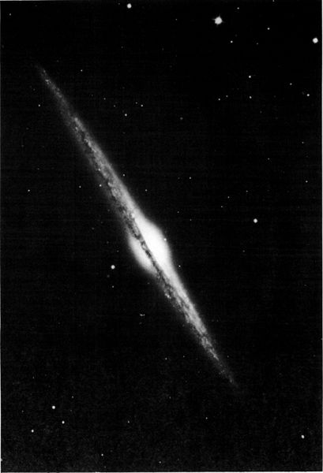
GALAXY NGC 4565. The most famous of the edge-on spirals, photographed with the 200-inch reflector at Palomar.
GALAXY NGC4565。最著名的边缘螺旋，是在Palomar用200英寸反射镜拍摄的。
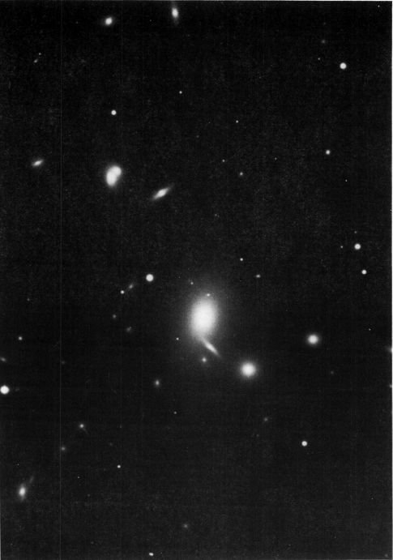
CENTRAL PORTION OF THE COMA GALAXY CLUSTER, photographed with the 200-inch telescope. This print is centered on the bright elliptical galaxy NGC 4889.
昏迷星系团的中央部分，用200英寸望远镜拍摄。此照片以明亮的椭圆星系NGC 4889为中心。
Palomar Observatory
帕洛玛天文台
NGC 4889 The brightest member of a very remote and very rich cluster of galaxies, located in the northeast corner of the constellation at 12577n2815, about 2.3° west of Beta Comae. This very distant group should not be confused with the well-known Virgo Cluster which lies some 10 times closer, and which includes many of the bright galaxies in Coma.
NGC 4889，是一个非常遥远且非常丰富的星系团中最亮的一个，位于该星座的东北角12577n2815，位于Beta Comae以西约2.3°。这个遥远的群不应与距离更近十倍的著名的处女座星团相混淆，其中包括彗星中的许多明亮星系。
NGC 4889 and 4874 are the only two members of the Coma Cluster of Galaxies which are likely to be detected in most amateur telescopes, though owners of larger reflectors may find it interesting to record some of the fainter members with long-exposure photography. NGC 4889 is a giant elliptical system of the 13th magnitude, while the slightly fainter NGC 4874, about 7¼’ to the west, is usually classified as type SO. The majority of the other members are 15th magnitude and fainter.
NGC 4889和4874是在大多数业余望远镜中可能被发现的唯一两个昏迷星系团成员，尽管较大反射镜的所有者可能会发现用长时间曝光摄影来记录一些较暗的成员很有趣。NGC 4889是第13级的巨大椭圆系统，而略微微弱的NGC 4874（在西约7¼'处）通常被归类为SO型。其他大多数成员都在15级及以内。
A survey by F.Zwicky (1957) identified 804 galaxies brighter than magnitude 16.5 (pg) within 160’ of the cluster center, and 29,951 galaxies brighter than 19.0 within 6°. A large proportion of these fainter objects may be very distant background systems, but the true cluster population is probably at least 1000 galaxies. This vast swarm of island universes lies at an estimated distance of nearly 400 million light years. The full diameter of the group is at least 3° and the richest central portion is about 1° across. At the adopted distance, these dimensions correspond to about 20 million and 7 million light years, respectively. The central “core” of the Coma Cluster is thus not much more than twice the size of the Local Group of Galaxies, but is incomparably richer; the total mass must exceed that of the Local Group by a factor of at least 50. A very rich cluster of galaxies in Corona Borealis has a similar degree of concentration, and many other such aggregations are now known as a result of the Palomar Sky Survey made with the 48-inch Schmidt camera. All these groups are at chillingly vast distances; some are among the most remote objects ever identified.
F.Zwicky（1957）进行的一项调查发现，在星团中心160'内，有804个星系的亮度比16.5（pg）级高，在6°范围内，有29,951个星系的亮度比19.0级高。这些较暗的物体中很大一部分可能是非常遥远的背景系统，但真正的星团总数可能至少是1000个星系。如此庞大的岛屿宇宙群估计距离将近4亿光年。该组的整个直径至少为3°，最丰富的中央部分的直径约为1°。在所采用的距离处，这些尺寸分别对应于大约2000万光年和700万光年。因此，昏迷星团的中心“核心”的大小不超过本地星系组的两倍，但比其丰富得多。总质量必须超过本地组的质量至少50倍。北极光晕中非常丰富的星系团具有相似的集中度，由于使用48英寸施密特相机进行的帕洛玛天空调查，现在还知道许多其他此类聚集。所有这些群体都相距甚远。有些是有史以来最遥远的对象之一。
The red-shift of the Coma Galaxy Cluster is close to 4250 miles per second; the value for NGC 4889 being a little less than the mean, while that of NGC 4874 is a little greater. (Refer also to the Galaxy Cluster in Corona Borealis)
昏迷星系团的红移接近每秒4250英里；NGC 4889的值略小于平均值，而NGC 4874的值略大于平均值。（另请参阅北极光的银河星团）

SPIRAL GALAXY NGC 4725. The supernova which appeared in this galaxy in 1940 is indicated by the marker in the lower print.
螺旋星系NGC4725。1940年出现在该星系中的超新星由下部标记中的标记指示。
Mt.Wilson and Palomar Observatories
威尔逊山和帕洛玛天文台
LIST OF DOUBLE AND MULTIPLE STARS
双星和多星清单


NGC 6726-6727-6729 Position 18583s3657. A complex field of mixed bright and dark nebulosity, remarkable for its content of erratic nebular variable stars of the T Tauri type, and located in a region of heavy obscuration about 7½° south of Zeta Sagittarii. The brightest portion is the double nebulosity NGC 6726 and 6727, two roughly circular patches in contact forming a “figure 8” pattern measuring about 2’ x 1.3’, oriented NE-SW, and adorned around the edges by many wispy nebulous filaments. The SW section is illuminated by an A-type star of magnitude 7.2, but the NE section surrounds the erratic variable TY CorA which has varied from 8.8 to about 12.5. The spectral type, about B2, is one of the earliest known for any nebular variable; E.Hubble and W.J.Luyten, however, have classed it somewhat later, B9 or early A. Observations are rendered difficult by the light of the nebulosity.
NGC 6726-6727-6729位置18583s3657。复杂的明暗混合星云场，以T Tauri型不稳定的星云可变恒星的含量而著称，并位于约7½°的重遮盖区域Zeta人马座以南。最亮的部分是双重雾状NGC 6726和6727，两个大致呈圆形的斑块相接触，形成尺寸约为2'x 1.3'的NE-SW定向的“图8”图形，并在边缘周围饰有许多纤细的雾状细丝。SW部分由A级7.2级的恒星照亮，但NE部分围绕着不稳定的变量TY CorA，其变化范围从8.8到大约12.5。频谱类型大约为B2，是任何星云变量中已知最早的一种。但是，E.Hubble和WJLuyten将其归类为B9或A早期。由于模糊性使得观测变得困难。
About 4.7’ to the SE lies the most interesting portion of the nebulosity, the small comet-like wisp NGC 6729, about 1.3’ in length, containing as a nucleus the erratic variable star R CorA. Star and nebula form a combination reminiscent of Hubble’s Nebula NGC 2261 in Monoceros and its illuminating star R Mon. Variations in the light of the nebula generally follow the fluctuations of the star, but there are also peculiar changes in the shapes of varijous nebular details, often too rapid to be physically real, and evidently attributable to changing light and shadow effects. R CorA has a spectral class of about F5 and the extreme range is over 3 magnitudes. The variations, first detected by J.Schmidt in 1866, are generally unpredictable but the star sometimes shows changes of up to 2 magnitudes within a few days. About 1.3 ‘ to the SE, in the cometary “tail” of NGC 6729, lies the fainter variable T CorA; it shows similar variations with a total range of about 11.7 to 13.5. The spectral type is close to FO. A fourth variable in the field is S CorA, located at virtually the same declination as R, but 43 seconds preceding in RA. It has a range of 10.8 to about 12.5. The spectral type is near dG but with many emission lines; the spectral features are very similar to those of the famous nebular variable T Tauri. Stars of the type are main sequence stars and dwarfe rather than giants, and are believed to be among the youngest known stars. (Refer also to T Tauri and R Monocerotis) 
SE约4.7'处是星云中最有趣的部分，它是彗星状的小彗星状NGC 6729，长约1.3'，包含不稳定的变星R CorA作为核。恒星和星云形成了令人联想起哈勃在Monoceros中的星云NGC 2261及其照明恒星R Mon的组合。星云的光线变化通常随恒星的波动而变化，但是各种星云状细节的形状也有奇特的变化，通常太快而不能物理地表现出来，显然归因于光影效应的变化。R CorA的光谱等级约为F5，极限范围超过3个量级。最初由J.Schmidt在1866年发现的变化通常是无法预测的，但恒星有时会在几天内显示出2级的变化。距东南约1.3英寸，在NGC 6729的彗星“尾巴”中，有一个微弱的变量T CorA。它显示了相似的变化，总范围约为11.7至13.5。光谱类型接近FO。该字段中的第四个变量是S CorA，其磁偏角实际上与R相同，但在RA中领先43秒。它的范围是10.8到大约12.5。光谱类型接近dG，但有许多发射线。光谱特征与著名的星云变量T Tauri的光谱特征非常相似。这种类型的恒星是主序恒星和矮星，而不是巨星，并且被认为是已知的最年轻的恒星之一。（另请参阅T Tauri和R Monocerotis）的磁偏角实际上与R相同，但在RA之前43秒。它的范围是10.8到大约12.5。光谱类型接近dG，但有许多发射线。光谱特征与著名的星云变量T Tauri的光谱特征非常相似。这种类型的恒星是主序恒星和矮星，而不是巨星，并且被认为是已知的最年轻的恒星之一。（另请参阅T Tauri和R Monocerotis）的磁偏角实际上与R相同，但在RA之前43秒。它的范围是10.8到大约12.5。光谱类型接近dG，但有许多发射线。光谱特征与著名的星云变量T Tauri的光谱特征非常相似。这种类型的恒星是主序恒星和矮星，而不是巨星，并且被认为是已知的最年轻的恒星之一。（另请参阅T Tauri和R Monocerotis）
NEBULOUS REGION IN CORONA AUSTRALIS. Top: The field of NGC 6726 & 6727 photographed with the 40-inch reflector at Lowell Observatory. Below: Variations in NGC 6729, recorded with the 100-inch reflector at Mt.Wilson Observatory.
澳大利亚冠冕的阴暗区域。上图：在洛厄尔天文台用40英寸反射镜拍摄的NGC 6726和6727场。下图：用威尔逊山天文台的100英寸反射镜记录的NGC 6729的变化。
LIST OF DOUBLE AND MULTIPLE STARS
双星和多星清单

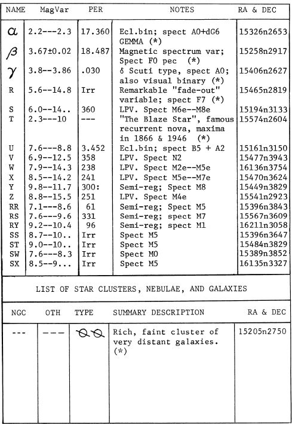
ALPHA Name-GEMMA or ALPHECCA. Mag 2.23 (slightly variable). Spectrum AO V + dG6. Position 15326n2653. This is the brightest star in the Northern Crown, approximately 75 light years distant and about 45 times the brightness of our Sun. The annual proper motion is 0.15”; the radial velocity is about 1 mile per second in recession.
ALPHA名称-GEMMA或ALPHECCA。Mag 2.23（略有变化）。频谱AO V + dG6。位置15326n2653。这是北冠上最明亮的恒星，距离我们约75光年，是我们太阳亮度的45倍。年度适当运动为0.15英寸；在衰退中，径向速度约为每秒1英里。
Gemma is a spectroscopic binary with a period of 17.359907 days. The components have a moderately eccentric orbit (0.38) and are separated by a mean distance of some 17 million miles. As an eclipsing system the star is not of great interest to the visual observer, since the depth of the eclipse light curve is only about 1/10 magnitude. Primary eclipse is annular, the small G-star passing in transit across the face of the bright primary. Facts of interest about the two stars are given in the table.
Gemma是光谱双星，周期为17.359907天。这些分量具有一个中等偏心轨道（0.38），并且相隔约1,700万英里的平均距离。作为日食系统，由于月食光曲线的深度仅为大约1/10量级，因此对于视觉观察者来说，恒星并不是很重要。初蚀是环形的，小的G星在传递过程中穿过明亮的初乳。表中列出了有关两颗星的有趣事实。

BETA Name-NUSAKAN. Mag 3.66; spectrum F0 p. Position 15258n2917. The distance of Beta Coronae is approximately 100 light years; the resulting luminosity is about 25 times that of the Sun. The annual proper motion is 0.19”; the radial velocity is 10½ miles per second in approach. The star shows very nearly the same space motion as the Hyades Cluster in Taurus, and is probably an outlying member of that group.
测试版名称-NUSAKAN。马格3.66; 频谱F0 p。位置15258n2917。Beta Coronae的距离约为100光年；产生的光度约为太阳的25倍。年度适当运动为0.19英寸；进近时径向速度为每秒10½英里。这颗恒星显示出的空间运动几乎与金牛座的海德斯星团相同，并且可能是该星团的离群成员。
Beta Coronae is a spectroscopic binary star with a period of 10.496 years; the presence of a third body of low mass has been suspected. The spectrum of the primary is unusual for the strength of the lines of the rare -earths elements, and resembles the spectrum of the “magnetic variable” Alpha Canum Venaticorum. And, like Alpha Canum, Beta Coronae has a remarkably intense magnetic field which varies periodically, with a reversal of polarity, in a cycle of 18½ days. The light changes-if any-are not yet accurately measured, but evidently cannot exceed a few hundredths of a magnitude. (Refer also to Alpha in Canes Venatici)
Beta Coronae是一个光谱双星，周期为10.496年。怀疑存在第三块低质量物体。初级元素的光谱对于稀土元素谱线的强度是不寻常的，类似于“磁性变量” Alpha Canum Venaticorum的光谱。并且，像Alpha Canum一样，Beta日冕具有非常强的磁场，该磁场以极性反转的方式周期性地变化，周期为18½天。光的变化（如果有的话）尚未被精确测量，但显然不能超过百分之几十分之一。（另请参阅Canes Venatici的Alpha）
GAMMA Mag 3.85; spectrum AO IV. Position 15406n 2627. The distance is about 140 light years, and the actual luminosity about 40 times that of the Sun. The annual proper motion is 0.11”; the radial velocity is 6 miles per second in approach.
GAMMA Mag 3.85；频谱AO IV。位置15406n2627。距离约为140光年，实际光度约为太阳的40倍。年度适当运动为0.11英寸；进近时径向速度为每秒6英里。
Gamma Coronae is a close visual double with a period of 91 years, discovered by F.G.W.Struve in 1826. Since the orbit is inclined only 6° from the edge-on position, the PA changes very little because of orbital motion. P.Baize (1953) finds that periastron occurred in 1931; the semimajor axis of the system is about 0.74” and the eccentricity is 0.42. Individual magnitudes are 4.2 and 5.6; the true separation of the stars averages about 30 AU. The primary is a δ Scuti type variable with a period of about 43 minutes, and a spectroscopic binary of uncertain period.
Gamma Coronae是由FGWStruve在1826年发现的，具有91年的近视双星。由于轨道从边缘位置仅倾斜了6°，所以由于轨道运动，PA的变化很小。P.Baize（1953）发现珍珠岩发生于1931年。系统的半长轴约为0.74英寸，偏心距为0.42。个别幅度为4.2和5.6；恒星的真正分离平均约为30 AU。主要变量是周期约为43分钟的δScuti类型变量，以及不确定周期的光谱双星。
ETA Mag 5.02; spectrum G2 V. Position 15211n 3028. Eta Coronae is a well-observed binary system which has completed more than three revolutions since discovery by F.G.W.Struve in 1826. It is a rather close pair for small telescopes, but may be divided with fairly high powers on a good 6-inch glass throughout much of its orbit. The period is 41.56 years with the widest separation of about 1.0” occurring in 1951, 1993, etc. The individual magnitudes are 5.7 and 6.0; both stars are very nearly twins of our Sun in size, mass, and luminosity. An orbit computation by A.Danjon (1938) gives the system an eccentricity of 0.28 and a semimajor axis of 0.84” or about 13 AU. A third component, at 58”, is not a physical member of the system.
ETA Mag 5.02；光谱G2V。位置15211n3028。Eta Coronae是一个观测良好的双星系统，自1826年FGWStruve发现以来已完成了超过三转。对于小型望远镜来说，它是一个相对较近的对，但在高倍率下可能会分开。整个轨道上都装有一块6英寸的优质玻璃杯。这个时期是41.56年，最远的分离发生在1951年，1993年等，大约是1.0英寸。个体震级分别是5.7和6.0；震级分别是5.7和6.0。在大小，质量和亮度方面，两颗恒星几乎都是我们太阳的双胞胎。A.Danjon（1938）进行的轨道计算使系统的偏心率为0.28，半长轴为0.84“或大约13 AU。位于58英寸的第三个组件不是系统的物理成员。
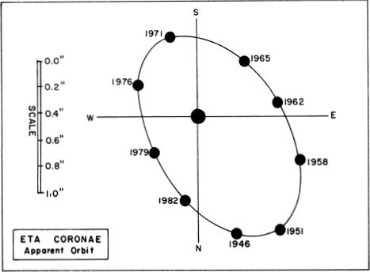
The computed distance of Eta Coronae is about 50 light years; the annual proper motion is 0.24” in PA 146°; the radial velocity is 4 miles per second in approach.
SIGMA Mag 5.36; spectrum F8 + dGl. The position is 16128n3359. This is an attractive binary star for the small telescope, the separation increasing steadily from 1.3” at discovery by F.G.W.Struve in 1827. The exact period is uncertain, and values ranging from 340 years up to about 1600 years have been computed. The shorter periods are not compatible with the newest observations; a recent orbit by K.Strand gives the period as about 1160 years, with periastron occurring about 1828 when the two stars were some 30 AU apart. Maximum separation of about 13” will occur about 500 years from now. Strand’s orbit has an eccentricity of 0.80 and a semimajor axis of 7.3”; the mean separation of the stars may be about 150 AU. T.W.Webb says of this pair “a great divergence as to colors”, evidently from the attempt to detect a color contrast where virtually none exists! The two stars are of very similar type, and the total light of the system is about 3 times that of the Sun. The primary is a spectroscopic binary with a period of 7.974 days and a total mass of about 1.7 suns. In addition, Sigma Coronae has a very distant proper motion companion which lies 12’ away toward the southwest. This is LTT 14836, a red dwarf of the 13th magnitude, about 400 times fainter than the Sun. The projected separation from the AB pair is 15,000 AU. In addition to this star, there is also an optical companion of the 10th magnitude which was 44” distant in 1836; the separation is increasing from the proper motion of the bright pair.
适马马格5.36; 频谱F8 + dGl。位置是16128n3359。对于小型望远镜来说，这是一颗吸引人的双星，在1827年FGWStruve发现时，其间隔从1.3英寸稳步增加。确切的时间段是不确定的，并且已计算出从340年到大约1600年的范围。较短的时间段与最新的观测值不兼容；K.Strand的最新轨道给出的周期约为1160年，周星发生在1828年，这时两颗恒星相距约30 AU。从现在开始大约500年后，最大间隔约为13英寸。股线的偏心率为0.80，半长轴为7.3英寸；恒星的平均间隔可能约为150 AU。TWWebb说这对“颜色上的差异很大”，显然是通过检测几乎没有颜色对比的尝试！两颗恒星的类型非常相似，该系统的总光线约为太阳的三倍。主要的是光谱双星，周期为7.974天，总质量约为1.7个太阳。此外，Sigma Coronae还有一个很远的适当运动伴侣，它位于西南方向12'处。这是LTT 14836，是第13级的红矮星，比太阳暗淡约400倍。与AB对的预计分离距离为15,000 AU。除了这颗恒星外，还有一个10级的光学伴星，它在1836年相距44英寸；与亮对的正确运动之间的距离越来越大。主要的是光谱双星，周期为7.974天，总质量约为1.7个太阳。此外，Sigma Coronae还有一个很远的适当运动伴侣，它位于西南方向12'处。这是LTT 14836，是第13级的红矮星，比太阳暗淡约400倍。与AB对的预计分离距离为15,000 AU。除了这颗恒星外，还有一个10级的光学伴星，它在1836年相距44英寸；与亮对的正确运动之间的距离越来越大。主要的是光谱双星，周期为7.974天，总质量约为1.7个太阳。此外，Sigma Coronae还有一个很远的适当运动伴侣，它位于西南方向12'处。这是LTT 14836，是第13级的红矮星，比太阳暗淡约400倍。与AB对的预计分离距离为15,000 AU。除了这颗恒星外，还有一个10级的光学伴星，它在1836年相距44英寸；与亮对的正确运动之间的距离越来越大。与AB对的预计分离距离为15,000 AU。除了这颗恒星外，还有一个10级的光学伴星，它在1836年相距44英寸；与亮对的正确运动之间的距离越来越大。与AB对的预计分离距离为15,000 AU。除了这颗恒星外，还有一个10级的光学伴星，它在1836年相距44英寸；与亮对的正确运动之间的距离越来越大。
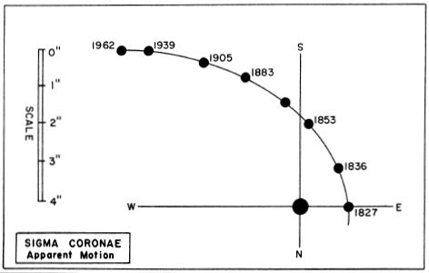
The computed distance of Sigma Coronae is close to 70 light years; the annual proper motion is 0.30” in PA 252°, and the radial velocities (somewhat different owing to the orbital motion of the stars) are 6½ and 10½ miles per second, both in approach.
Sigma Coronae的计算距离接近70光年；在PA 252°时，年度固有运动为0.30英寸，径向速度（由于恒星的轨道运动而有所不同）均为每秒6½和10½英里。
R Position 15465n2819. A very remarkable irregular variable star, discovered by the English observer E.Pigott in 1795. It is the typical example of a rare class of variables which remain at maximum throughout most of their cycle. For several years at a time this star shines with a nearly constant brightness of near 6th magnitude. Then it will suddenly begin to fade, and within a few weeks will have fallen to almost any magnitude between 7 and 15, but normally about 12½. The minimum usually lasts for several months. At times it may last for a year or two, and on at least one occasion the star remained below normal for 10 years. During a minimum the light is not constant, but fluctuates erratically. This star is often called the “ideal irregular variable” since the changes seem to follow no predictable pattern.
R位置15465n2819。这是一颗非常引人注目的不规则变星，由英国观察家E.Pigott于1795年发现。这是稀有类变量的典型示例，这些变量在整个周期的大部分时间内都保持最大值。连续数年，这颗恒星一直以接近恒定的6级亮度发光。然后它会突然开始消失，并且在几周内将下降到7到15之间的几乎任何幅度，但通常约为12½。最低期限通常持续数月。有时它可能持续一两年，并且至少有一次恒星保持低于正常水平10年。在最小值期间，光线不是恒定的，而是不稳定地波动。该恒星通常被称为“理想的不规则变量”，因为这些变化似乎没有遵循可预测的模式。
R Coronae has been well observed during the past 150 years, and selected sections of the light curve are shown on pages 703 and 704. The deep minima of 1917, 1938, and 1949 may be studied as standard examples of the curious activity of this star. The light curves of the three minima are like “reverse novae”; the fall is quite rapid and the return to normal is much slower, with occasional relapses. At other times there are “short minima” like those of 1903 and 1924, and “intermediate minima” like the ones of 1905 and 1923. Perhaps most interesting are the rare periods of strong oscillation, such as the one lasting from 1908 to 1912. The ten-year minimum of 1863-1873 is another example; the star seemed unable to return to normal after its decline in late 1863, and oscillated strongly for a number of years. On one occasion, in 1870, it rose to nearly 6th magnitude, but then fell immediately to 14th. In contrast, the magnitude remained virtually constant for the ten-year period 1924-1934. Activities of R Coronae in recent years have been more typical; it faded in the summer of 1962, returned to 6th magnitude at the end of the year, and declined again early in 1963. In autumn of that year the star was near 14th; it brightened to 10th in 1964, but during most of 1965 was again at 14th. In December of 1965 it began to brighten and eventually reached 7th magnitude toward the end of summer 1966. A rapid fading to 13th occurred in October, but by the end of the year the magnitude was back to about 7½.
在过去的150年中已经很好地观察到了R Coronae，并且在703和704页上显示了光曲线的选定部分。1917、1938和1949年的极小最小值可以作为该恒星好奇活动的标准示例进行研究。 。三个极小值的光曲线就像“逆向新星”。下降非常迅速，恢复正常的速度要慢得多，偶尔会复发。在其他时候，有像1903年和1924年这样的“短期极小值”，还有像1905年和1923年这样的“中间极小值”。也许最有趣的是稀有的强烈振荡时期，例如从1908年到1912年持续的时期。另一个例子是1863-1873年的十年最低值。在1863年末下降之后，这颗恒星似乎无法恢复正常，并在几年中强烈振荡。在1870年的某个时候，它上升到接近第6级，但随后立即下降到第14位。相反，在1924-1934年的十年期间，幅度实际上保持不变。近年来，R Coronae的活动更为典型。它在1962年夏天褪色，到年底又恢复到6级，并在1963年初再次下降。在那年秋天，恒星接近14号。它在1964年升至第10位，但在1965年的大部分时间里再次升至第14位。1965年12月开始增亮，并最终在1966年夏末达到第7级。10月迅速衰减到第13级，但到了年底，强度又回到了约7级。近年来，R Coronae的活动更为典型。它在1962年夏天褪色，到年底又恢复到6级，并在1963年初再次下降。在那年秋天，恒星接近14号。它在1964年升至第10位，但在1965年的大部分时间里再次升至第14位。1965年12月开始增亮，并最终在1966年夏末达到第7级。10月迅速衰减到第13级，但到了年底，强度又回到了约7级。近年来，R Coronae的活动更为典型。它在1962年夏天褪色，到年底又恢复到6级，并在1963年初再次下降。在那年秋天，恒星接近14号。它在1964年升至第10位，但在1965年的大部分时间里再次升至第14位。1965年12月开始增亮，并最终在1966年夏末达到第7级。10月迅速衰减到第13级，但到了年底，强度又回到了约7级。½。

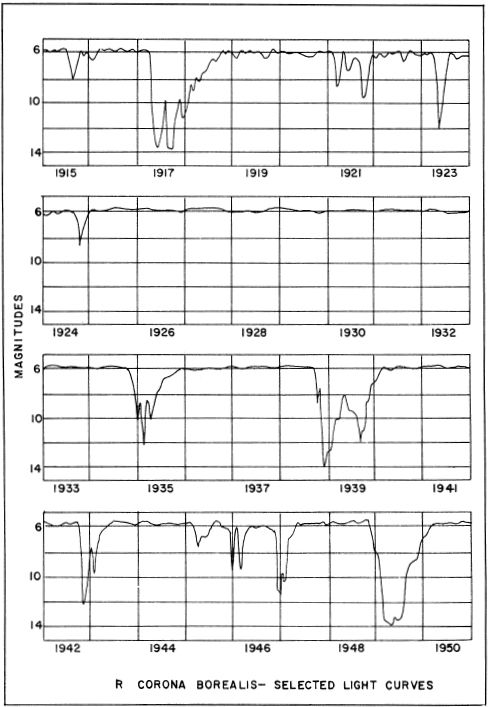
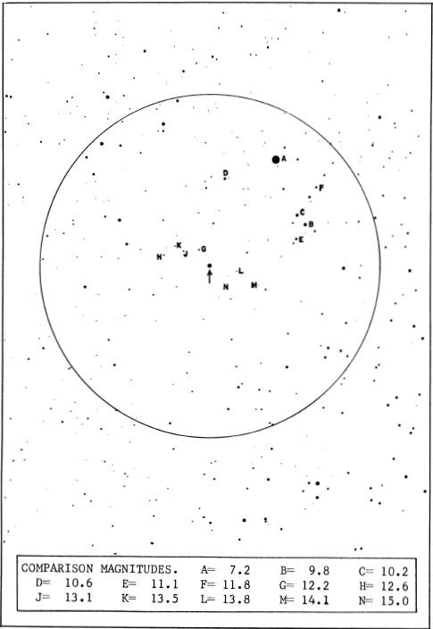
R CORONAE BOREALIS. Identification field, made from a 13-I inch telescope plate at Lowell Observatory. Circle diameter = 1° with north at the top. Limiting magnitude about 14.
R CORONAE BOREALIS。识别区域由洛厄尔天文台的13英寸英寸望远镜板制成。圆直径= 1°，顶部朝北。极限幅度约为14。
R Coronae has a peculiar spectrum, classified by various authorities as type F, G, or occasionally M. The most recent observations suggest that the spectrum is basically that of a supergiant of near F7, but peculiar in showing stong absorption bands caused by carbon in the star’s atmosphere. According to spectroscopic analysis the composition of the atmosphere appears to be about 67% carbon and only 33% hydrogen and other elements. These observations have suggested a theory that the light variations are due to the emission of clouds of carbon, the material condensing into a “soot cloud” around the star and effectively obscuring the light. As the cloud clears or is reabsorbed into the star, the light returns to normal. This theory also considers R Coronae to be an ancient star which has consumed most of its hydrogen, and is now operating on the helium-to-carbon cycle. A study of the spectrum appears to support the suggestion by showing that the star is indeed hydrogen-poor; what we see may be, in fact, chiefly a helium “core”, the outer hydrogen having been consumed or ejected into space.
R Coronae具有奇特的光谱，被各种权威机构归类为F，G或偶尔的M。最近的观察结果表明，该光谱基本上是F7附近的超巨星的光谱，但在显示碳中的碳引起的条带吸收带方面具有独特性。星星的气氛。根据光谱分析，大气的成分似乎是约67％的碳，只有33％的氢和其他元素。这些观察结果提出了一种理论，即光的变化是由于碳云的散发所致，该材料散布在恒星周围的“烟灰云”中并有效地遮挡了光。随着云被清除或重新吸收到恒星中，光线恢复正常。这个理论还认为R Coronae是一颗消耗大量氢的古老恒星，并正在以氦-碳循环运行。对光谱的研究似乎表明这颗恒星确实贫氢，似乎支持了这一建议。实际上，我们看到的可能主要是氦“核”，外部的氢已被消耗或喷射到太空中。
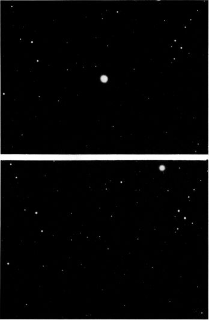
R CORONAE BOREALIS. The remarkable variable is shown in its normal state (top) in May 1940, and during a deep minimum (below) in June 1964. The photographs were made with the 13-inch telescope at Lowell Observatory.
R CORONAE BOREALIS。在1940年5月的正常状态（上）和1964年6月的最小值（下）中，显示了这个显着的变量。这些照片是用13英寸望远镜在洛厄尔天文台拍摄的。
Very little is known about the distances and actual luminosities of the R Coronae type stars. If the spectrum of a normal F7 supergiant may be used as a standard the absolute magnitude may be in the range of -4.4 to -5.0; the corresponding distance is then about 4,000 to 5,000 light years. These results imply that the star is at a very great distance above the plane of the Galaxy, at least 2500 light years. R Coronae is evidently a Population II star and a member of the great spherical halo which encloses the Galaxy; this finding agrees with other evidence that R Coronae is an ancient star.
对于R Coronae型恒星的距离和实际光度知之甚少。如果正常F7超级巨人的光谱可用作标准，则绝对大小可能在-4.4到-5.0的范围内；那么相应的距离约为4,000至5,000光年。这些结果表明，恒星距离银河系平面的距离非常大，至少有2500光年。R Coronae显然是II族恒星，并且是包围银河系的巨大球形晕的成员。这一发现与R Coronae是一颗古老恒星的其他证据相吻合。
There appear to be only two direct trigonometrical parallaxes recorded in the literature for this star; an attempt made with the 60-inch, at Mt.Wilson some years ago yielded 0.04”; while a more recent measurement obtained at Allegheny gave 0.012”. The resulting distances (82 and 270 light years) are not only discordant, but would also seem to be unacceptably small; the reason for these peculiar discrepancies is not yet understood, but is does not seem likely that the star can be much closer than a few thousand light years. Rho Cassiopeiae is another star which present similar problems.
在这颗恒星的文献中似乎只记录了两个直接的三角视差。几年前在威尔逊山尝试使用60英寸的尝试产生了0.04英寸；而最近在阿勒格尼（Allegheny）获得的测量结果为0.012“。由此产生的距离（82和270光年）不仅不协调，而且似乎也无法接受。这些特殊差异的原因尚不清楚，但似乎不太可能使恒星比几千光年更近。Rho Cassiopeiae是另一颗存在类似问题的恒星。
The annual proper motion of R Coronae is 0.02”; the radial velocity is about 15 miles per second in recession. Other stars of this rare class are: RY Sagittarii, S Apodis, SU Tauri, XX Camelopardi, and RS Telescopii.
R Coronae的年度固有运动为0.02英寸；在衰退中，径向速度约为每秒15英里。这个稀有星类的其他明星有：RY人马座，S Apodis，SU Tauri，XX Camelopardi和RS Telescopii。
T Position 15574n2604. This is the “Blaze Star”, the best known example of a recurrent nova. This remarkable star is now of the 10th magnitude, but on two occasions in the past century it has suddenly risen to 2nd magnitude and then faded away again. There are 6 other stars known which have undergone more than one nova outburst, but T Coronae Borealis is by far the brightest one on record. The only other which reaches naked-eye visibility is RS Ophiuchi.
T位置15574n2604。这就是“炽星”，这是复发性新星的最著名例子。这颗杰出的恒星现在的大小为10级，但是在过去的一个世纪中，它两次突然升至2级，然后又消失了。已知还有其他6颗恒星爆发了不止一次新星爆发，但是迄今为止，T Coronae Borealis是最亮的一颗。RS Ophiuchi是唯一达到肉眼可见性的天线。
The first observed outburst of T Coronae occurred on the night of May 12, 1866, and the star when noticed was about the same brightness as Alpha Coronae, magnitude 2.2. The maximum magnitude of about 2.0 was reached the same night and the star began to fade rapidly, falling below naked-eye visiblity in only 8 days. By June 7 it had dimmed to its former state of low luminosity. About 100 days after maximum the star brightened again to magnitude 8½ and remained at that brightness about 90 days before beginning its final decline.
T Coronae首次观测到的爆发发生在1866年5月12日晚上，当被注意到时，这颗恒星的亮度大约与2.2级Alpha Coronae相同。达到大约2.0的最大幅度夜晚，恒星开始迅速褪色，仅用8天就跌落到肉眼之下。到6月7日，它已经变暗到以前的低亮度状态。最大值之后约100天，该恒星再次变亮至8½级，并在开始最终下降之前约90天保持该亮度。
With the spectroscope, Huggins detected bright lines of hydrogen in the light of the nova, and stated that these appeared to be superimposed upon a normal spectrum which resembled that of the Sun. This was the first spectroscopic examination of a nova.
霍金斯用分光镜在新星的光下检测到氢的亮线，并指出这些亮线似乎叠加在类似于太阳的正常光谱上。这是对新星的第一次光谱检查。
Because of its unusually short maximum and comparatively small amplitude, some astronomers hesitated to accept T Coronae as a normal nova. Its light increase at the maximum amounted to only 2500 times, whereas most typical novae increase more than 10,000 times as they rise to maximum. A second peculiarity was the shortness of the outburst; the star faded to the pre-nova level in less than a month, while a typical nova usually requires a number of years to reach that stage. Much later it was pointed out that a few other novae-U Scorpii in 1863 and RS Ophiuchi in 1898-had shown a similar behavior. When U Scorpii exploded for the second time in 1906, and RS Ophiuchi also staged a repeat performance in 1933, it seemed likely that T Coronae would also prove to be a recurrent nova. On the night of February 9, 1946, this theoretical prediction was spectacularly verified as T Coronae flared up again, reach-the 3rd magnitude, and soon subsided, almost exactly as it had done some 80 years before. For a short time it was a conspicuous object to the naked eye.
由于其异常短的最大值和相对较小的振幅，一些天文学家犹豫不决地接受了T Coronae作为正常新星。它的最大照度增加只有2500倍，而最典型的新星随着照度增加而增加超过10,000倍。第二个特点是爆发时间短。这颗恒星在不到一个月的时间内就褪色到了新星爆发前的水平，而典型的新星通常需要数年才能达到该阶段。后来又指出，其他一些新星-U Scorpii（1863年）和RS Ophiuchi（1898年）也表现出类似的行为。当U Scorpii在1906年第二次爆炸，而RS Ophiuchi也在1933年上演了一次重复演出时，T Coronae似乎也可能被证明是一颗反复出现的新星。1946年2月9日晚上，T Coronae再次爆发，升至3级，并很快平息，几乎完全像80年前所做的那样，这一理论预测得到了惊人的验证。在短时间内，这是肉眼明显的物体。
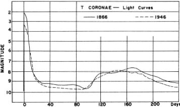

T CORONAE BOREALIS. Identification field, from a 13-inch telescope plate obtained at Lowell Observatory. Circle diameter = 1° with north at the top; limiting magnitude about 14. Bright star at top is Epsilon Coronae, mag 4.15.
T CORONAE北极星。识别场，来自洛厄尔天文台获得的13英寸望远镜板。圆直径= 1°，顶部朝北；极限星等约为14。顶部的亮星是Epsilon Coronae，mag 4.15。
It is likely that the star was already past the maximum when discovered at magnitude 3.2. By the following evening it had fallen to 3.6, and the decline thereafter proceeded rapidly at about 0.5 magnitude per day, compared with about 0.63 magnitude per day in 1866. The light curve was a virtual duplicate of the earlier explosion, and the secondary maximum, 100 days after the main outburst, also repeated itself faithfully. It is interesting to note that T Coronae is the only fast nova, and the only recurrent nova, in which a strong secondary maximum appears. In RS Ophiuchi a weak secondary maximum may be detected, but the phenomenon is most pronounced in the ordinary novae DQ Herculis (1934) and T Aurigae (1891).
当恒星在3.2级被发现时，它可能已经超过了最大值。到第二天傍晚，它下降到3.6，然后下降迅速，以每天约0.5个量级的速度进行，而1866年每天下降约0.63个量级。光度曲线实际上是早期爆炸的次要值，是次要最大值，主爆发后100天，也忠实地重复了一次。有趣的是，T Coronae是唯一的快速新星，也是唯一的循环新星，其中出现了强次要最大值。在RS Ophiuchi中，可能会检测到较弱的次要最大值，但这种现象在普通新星DQ Herculis（1934）和T Aurigae（1891）中最为明显。
The outstanding feature of T Coronae at the 1946 outburst was the enormous expansion velocity, which has not been equalled by any other nova, the supernovae alone excepted. The outer layers of the star showed an expansion rate of about 2700 miles per second. This was the highest velocity ever measured in our Galaxy with the exception of the two supernova remnants “Cassiopeia A” and Tycho’s Star of 1572. This is a difficult feature to explain, in view of the fact that T Coronae and the other repeating novae do not show the large magnitude range of the classical or ordinary novae, and are therefore sometimes regarded as relatively feeble objects. This conclusion, however, now appears to be much in error. Recent studies of T Coronae indicate a distance of about 2600 light years; this gives an absolute magnitude of -8.4 at maximum and an actual luminosity of some 200,000 suns. This is quite comparable to the luminosities deduced for many of the normal novae, and is decidedly superior to some. The smaller range seems to result from the greater brightness of the star at minimum, some 40 or 50 times the brightness of the Sun. Most of the normal novae appear to have minimal luminosities equal to or fainter than that of the Sun. A study of RS Ophiuchi leads to a rather similar result. The recurrent nova WZ Sagittae, however, seems to be a white dwarf which attains a luminosity of a mere 25 suns at maximum. So it appears that the stars classed as recurrent novae are not necessarily members of a true physical group. These facts complicate the problem of determining the place of these stars in the picture of stellar evolution. But, before considering such questions, another fact must be presented. The spectrum of T Coronae is peculiar and shows a dual or composite nature. There is little doubt that the star is a close double. At minimum the spectrum is type M, but during an outburst the M-spectrum is overpowered by the nova-spectrum. A similar situation exists in such variable stars as Z Andromedae and R Aquarii; the so-called “symbiotic variables”. In the case of T Coronae the radial velocity is found to vary in a cycle of 227.6 days, supplying additional evidence for binary motion.
T电晕在1946年爆发时的突出特征是巨大的膨胀速度，这是其他任何新星都没有的，仅超新星除外。恒星的外层显示出每秒约2700英里的膨胀率。这是我们银河系中测得的最高速度，除了两个超新星遗迹“仙后座A”和第谷的1572年之星。这很难解释，因为T Coronae和另一个重复出现的新星确实存在不能显示古典或普通新星的大幅度范围，因此有时被视为相对微弱的天体。但是，这个结论现在看来有很多错误。T Coronae的最新研究表明，该距离约为2600光年。绝对值为-8。最多4个，实际发光度约200,000个太阳。这可与许多正常新星推断出的光度相当，并且绝对优于某些新星。较小的范围似乎是由于恒星的最低亮度更高而引起的，该亮度至少是太阳亮度的40或50倍。大多数正常的新星似乎都具有与太阳相同或较弱的最小光度。对RS Ophiuchi的研究得出了相当相似的结果。然而，复发的新星WZ射手座似乎是白矮星，其最大发光度仅为25个太阳。因此看来，归类为复发新星的恒星不一定是真实物理群的成员。这些事实使确定这些恒星在恒星演化过程中的位置的问题变得复杂。但是，在考虑这些问题之前，必须提出另一个事实。T Coronae的光谱奇特，显示出双重或复合性质。毫无疑问，这颗恒星是接近的两倍。光谱至少是M型，但在爆发期间，M光谱会被新光谱压倒。Z Andromedae和R Aquarii等变星也存在类似情况。所谓的“共生变量”。对于T型日冕，发现径向速度以227.6天为周期变化，这为二元运动提供了补充证据。Z Andromedae和R Aquarii等变星也存在类似情况。所谓的“共生变量”。对于T型日冕，发现径向速度以227.6天为周期变化，这为二元运动提供了补充证据。Z Andromedae和R Aquarii等变星也存在类似情况。所谓的“共生变量”。对于T型日冕，发现径向速度以227.6天为周期变化，这为二元运动提供了补充证据。

The red star seems to be normally the brighter of the pair. The visual brightness of the blue component is possibly one or two magnitudes fainter; thus the true light range of the nova component may be about 10 magnitudes. In a study of the system, R.P.Kraft (1963) finds that the masses of the two stars must be at least 2.1 and 2.9 solar masses for the blue and red stars, respectively. The red star, of class gM3, has a diameter of about 120 million miles; the computed orbit places the blue star virtually in contact with the outer edges of the red giant. In technical language, the red star fills the “inner Lagrangian point” of the system, and material must be passing across to go into orbit around the blue star or to fall into it. It is tempting, though perhaps somewhat premature, to speculate that in this phenomenon we have the whole key to the mystery of nova outbursts.
红星似乎通常是这对中的亮点。蓝色分量的视觉亮度可能会暗淡一到两个数量级；因此，新星分量的真实光范围可能约为10个量级。在对该系统的研究中，RPKraft（1963）发现，对于蓝色和红色恒星，两颗恒星的质量必须分别至少为2.1和2.9太阳质量。gM3类的红星直径约为1.2亿英里；计算的轨道实际上将蓝星放置与红色巨人的外缘接触。用技术语言来说，红色恒星充满了系统的“内部拉格朗日点”，并且必须经过物质才能进入围绕蓝色恒星的轨道或使其坠落。尽管可能有些为时过早，但人们很容易猜测，在这种现象中，我们掌握了新星爆发之谜的全部关键。
Erratic fluctuations in the light of the system have been measured by various observers, and are attributed to minor outbursts of the blue star. As far as is known, the red star is stable. These fluctuations appear to have increased in violence just before the outburst of 1946, and reached a total amplitude of two magnitudes. An unusually low minimum was reported just before the explosion. If this pattern is characteristic of T Coronae a similar behavior in the future may provide advance notice of the next maximum. The observed maxima have been so short that it is quite possible some have been missed. The star deserves continuous attention.
系统的光线不稳定波动已由不同的观察者进行了测量，并归因于蓝星的轻微爆发。据了解，红星是稳定的。这些波动似乎在1946年爆发之前就已经在暴力中加剧，并达到了两个数量级的总和。据报道爆炸前的最小值极低。如果这种模式是T Coronae的特征，那么将来类似的行为可能会提前通知下一个最大值。观察到的最大值太短了，很有可能已经错过了一些最大值。恒星值得持续关注。
THEORIES OF RECURRENT NOVAE. From the binary nature of T Coronae, RS Ophiuchi, SS Cygni and other similar freaks of the heavens, some astronomers have been led to postulate a new theory of nova formation, attributing the outbursts of the SS Cygni stars and the recurrent novae to the same basic process. The theory assumes that these stars are all close binaries in which one component is a hot dwarf which is nearing the white dwarf state and is at least partially degenerate. The other component is a larger and cooler star of more normal type. The outbursts of the dwarf star are triggered in some way by an interchange of material; the simplest picture assumes merely that the instability of the hot dwarf is pushed past the critical point by accretion of material from the companion. Current studies of SS Cygni and U Geminorum seem to indicate that the real circumstances are probably somewhat more complicated and may very well defy interpretation for some time yet. But if duplicity is not an essential feature in all nova-type stars, it is at least an important factor in a number of the best-studied examples. Another fascinating possibility is that the recurrent novae form an intermediate stage between the SS Cygni stars and the true full-scale novae. If so, it may be that all novae are recurrent, though the intervals between explosions may be hundreds or thousands of years. (For a review of novae in general refer to Nova Aquilae 1918. See also DQ Herculis, T Aurigae, GK Persei, and CP Puppis. The SS Cygni stars are described under SS Cygni and U Geminorum.)
递归新星理论。由于T Coronae，RS Ophiuchi，SS Cygni和其他类似天体的二元性质，一些天文学家被认为是推测新星形成的新理论，这归因于SS Cygni恒星的爆发和周期性新星的爆发。基本过程。该理论假设这些恒星都是近距离双星，其中一个成分是热矮星，该热矮星接近白矮星状态，并且至少部分退化。另一个组成部分是更普通的类型的更大，更冷的恒星。矮星的爆发是由某种物质的交换以某种方式触发的。最简单的图景仅假设矮星的不稳定性通过伴随物的积聚而被推到临界点之上。目前对SS Cygni和U Geminorum的研究似乎表明，实际情况可能稍微复杂些，并且可能会在一段时间内无视解释。但是，如果不是所有新星型恒星都没有双重特征，那么它在许多研究得最好的例子中至少是一个重要因素。另一个引人入胜的可能性是，周期性新星形成了SS Cygni星和真正的全尺寸新星之间的中间阶段。如果是这样，可能是所有新星都复发了，尽管 另一个引人入胜的可能性是，周期性新星形成了SS Cygni星和真正的全尺寸新星之间的中间阶段。如果是这样，可能是所有新星都复发了，尽管 另一个引人入胜的可能性是，周期性新星形成了SS Cygni星和真正的全尺寸新星之间的中间阶段。如果是这样，可能是所有新星都复发了，尽管爆炸之间的间隔可能是数百年或数千年。（有关新星的综述，请参考Nova Aquilae1918。另请参见DQ Herculis，T Aurigae，GK Persei和CPPuppis。SSCygni星在SS Cygni和U Geminorum中有描述。）
LIST OF RECURRENT NOVAE. As of 1967, the following seven stars constitute the complete list of known recurrent novae. For data refer to the respective constellations:
应急新星清单。截至1967年，以下七颗星构成了已知复发新星的完整列表。有关数据，请参考相应的星座：
T Coronae Borealis (1866, 1946). RS Ophiuchi (1898, 1933, 1958, 1967). U Scorpii (1863, 1906, 1936, 1979. T Pyxidis (1890, 1902, 1920, 1944, 1967). WZ Sagittae (1913, 1946, 1978). VY Aquarii (1907, 1962). V1017 Sagittarii (1901, 1919, 1973).
T Coronae Borealis（1866，1946）。RS Ophiuchi（1898、1933、1958、1967）。U Scorpii（1863，1906，1936，1979. T Pyxidis（1890，1902，1920，1944，1967）。WZ Sagittae（1913，1946，1978）。VY Aquarii（1907，1962）。V1017 Sagittarii（1901，1919， 1973）。
CORONA BOREALIS GALAXY CLUSTER A very rich cluster of distant galaxies, called by some astronomers a “super-galaxy”, one of the most remarkable of all such aggregations. It is located in the southwest corner of the constellation at 15205n2750. In the cluster are more than 400 galaxies, all concentrated in an area of the sky half a degree wide, about the apparent width of the Moon. Most of the galaxies of this group appear to be of the elliptical type, and the brightest members have apparent magnitudes of about 16½, placing them far beyond the reach of the usual amateur telescope. The cluster is extremely remote; recent investigations have shown that it must be at least four times more distant than was believed when E.Hubble wrote his ”Realm of the Nebulae” in 1936. The best present estimate of the distance is between 1 and 1.3 thousand million light years while the red shift in the spectra of these remote systems implies a recession velocity of about 13,000 miles per second, or about 1/14 the velocity of light.
冠冕星系团一个非常丰富的遥远星系团，被某些天文学家称为“超级星系”，是所有此类星团中最引人注目的之一。它位于星座的西南角15205n2750。在星团中有超过400个星系，所有星系都集中在半月宽的天空区域，大约相当于月球的宽度。这一组中的大多数星系似乎都是椭圆型的，最亮的星系的视星等约为16½，这使它们远远超出了普通业余望远镜的范围。集群非常遥远；最近的研究表明，距离必须至少比E.Hubble在1936年撰写“星云的境界”时所认为的距离大四倍。目前最好的距离估计值在1到1之间。
The Corona Borealis Galaxy Cluster is very similar to the rich aggregation in Virgo, but is at a much greater distance and consequently much fainter and more compact. Members of the Corona Cluster average about 6.1 magnitudes fainter than members of the Virgo group, implying a distance factor of about 16½; this is in good agreement with the difference in radial velocities, which amounts to about 17 times. (Refer also to the Coma Galaxy Cluster, and the Virgo Galaxy Cluster)
日冕北极星系星团与处女座中的丰富星团非常相似，但是距离更远，因此更暗淡和紧凑。电晕星团的成员比处女座的成员平均弱6.1个数量级，这意味着距离因子约为16.5。这与径向速度的差异（约17倍）非常吻合。（另请参阅昏迷的银河星系和处女座的银河星系）

CENTRAL PORTION OF THE CORONA BOREALIS CLUSTER OF GALAXIES. The brightest members are about 16th magnitude. Photograph made with the 100-inch reflector at Mt. Wilson Observatory.
星系冠状星团的中央部分。最亮的成员大约是16级。使用位于山顶的100英寸反射镜拍摄的照片 威尔逊天文台。
LIST OF DOUBLE AND MULTIPLE STARS
双星和多星清单


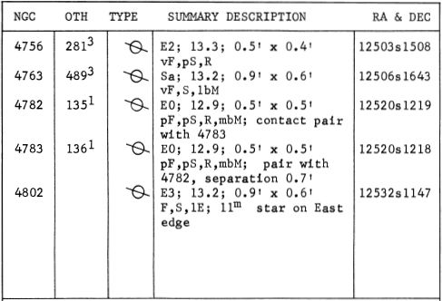
DESCRIPTIVE NOTES
描述性注释
BETA Mag 2.66; spectrum G5 III. Position 12318s2307. The computed distance is about 110 light years and the actual luminosity about 85 times that of the Sun. Beta Corvi has an annual proper motion of 0.06”; the radial velocity is 4½ miles per second in approach.
BETA Mag 2.66；频谱G5 III。位置12318s2307。计算出的距离约为110光年，实际光度约为太阳的85倍。Beta Corvi的年度适当动量为0.06英寸；进近时径向速度为每秒4½英里。
GAMMA Name-GIENAH. Mag 2.58; spectrum B8 III. The position is 12132s1716. The star is some 450 light years distant, giving a computed luminosity of some 1200 suns (absolute magnitude -3.1). The annual proper motion is 0.16”; the radial velocity is about 2½ miles per second in approach.
GAMMA名称-GIENAH。魔力2.58; 频谱B8 III。职位是12132s1716。这颗恒星距离我们约450光年，因此可以计算出约1200个太阳的光度（绝对值-3.1）。年度适当运动为0.16英寸；进近时径向速度约为每秒2½英里。
DELTA Name-ALGORAB. Mag 2.95; spectrum A0 V or B9.5 V. Position 12273s1614. Delta Corvi is an easy double star for the small telescope, first observed by J. Herschel and J.South in 1823. There has been no change in either the separation or PA of the pair in the last 140 years, although the physical association is proven by the common proper motion of 0.26” per year in PA 235°. Most observing lists have called the colors “yellowish and pale lilac”; occasionally “white and orange”. The small star, magnitude 8.4, has a spectral type of dK2 and an actual luminosity of about half that of the Sun. The projected separation of the pair is about 900 AU.
DELTA名称- ALGORAB。马格2.95; 频谱A0 V或B9.5 V.位置12273s1614。德尔塔·科维（Delta Corvi）是小型望远镜的易用双星，最早是由J. Herschel和J.South于1823年观察到的。在最近的140年中，这对望远镜的分离度或PA均未发生变化。年，尽管在PA 235°中每年0.26英寸的正常正常运动证明了这种物理联系。大多数观察表都将颜色称为“淡黄色和淡紫色”。偶尔是“白色和橙色”。8.4级小恒星的光谱类型为dK2，实际光度约为太阳的一半。该对的预计间隔约为900 AU。
Delta Corvi is approximately 125 light years distant, which gives the primary a luminosity of about 75 suns. Radial velocity measurements of the system show a speed of about 5½ miles per second in recession.
三角洲科尔维（Delta Corvi）的距离大约为125光年，这使原色的光度约为75个太阳。该系统的径向速度测量显示，在衰退期间，速度约为每秒5.5英里。
EPSILON Mag 2.99; spectrum K3 III. Position 12075s2221. The statistics on Epsilon Corvi are: Distance about 140 light years, actual luminosity about 100 times the Sun, absolute magnitude -0.2, annual proper motion 0.07”, radial velocity about 3 miles per second in recession.
爱普生 Mag 2.99; 频谱K3 III。位置12075s2221。Epsilon Corvi的统计数据是：距离约140光年，实际光度约是太阳的100倍，绝对值-0.2，年适运动0.07英寸，在衰退中径向速度约为每秒3英里。
NGC 4038 Position 11593sl835. The “Ring-Tail Galaxy”, a spiral (?) of rather peculiar structure, sometimes regarded as a gravitationally interacting pair of galaxies or an actual collisional system. It is located about 3.7° WSW from Gamma Corvi. On short exposure photographs the object resembles a reversed question-mark, an irregular loop about 2’ in length. The curved northern rim of the loop is the brightest portion and consists of many bright and dark patches - probably star clouds and masses of dust. There is no central nucleus and no readily apparent spiral pattern. The extension to the south, sometimes identified by a separate NGC number (4039) is fainter but has much the same appearance, resembling the mottled central mass of an irregular galaxy or a barred spiral.
NGC 4038位置11593sl835。“环尾星系”是结构非常特殊的螺旋形（？），有时被视为是引力相互作用的一对星系或实际的碰撞系统。它与Gamma Corvi位于西南偏西3.7°。在短时间曝光的照片上，物体类似于反向问号，长度约为2'的不规则环。弧形的弧形北部边缘是最明亮的部分，由许多亮暗的斑点组成-可能是星云和大量尘埃。没有中央核，也没有明显的螺旋形。向南延伸，有时由一个单独的NGC编号（4039）标识，虽然较暗，但外观几乎相同，类似于不规则星系或螺旋星状的斑驳中央质量。
Long-exposure photographs completely transform the appearance of the object, revealing details which have excited much speculation. The main mass and the southern extension appear as two large luminous elliptical blobs, fused together at their eastern tips, and from the area where they join are seen two long curving filaments reaching out for enormous distances. The northern filament can be traced out about 5’ and the southern one for more than 10’ in a great sweeping curve which first reaches south but then curves to point nearly due west. On the assumption that NGC 4038 is actually a collisional system, these odd structures are often referred to as “tidal filaments”, but it is possible that electric and magnetic fields also play a part in their formation. A strange galaxy in Cancer, NGC 2623, has a very similar appearance (photo on page 343). Like many other peculiar galaxies, the Ring-Tail is a source of radio radiation, first detected in 1957.
长时间曝光的照片完全改变了物体的外观，揭示了引起许多猜测的细节。主要块体和南部延伸物表现为两个大的椭圆形发光斑点，在它们的东部尖端融合在一起，从它们相连的区域可以看到两条长长的弯曲细丝伸出很远的距离。在一条大的弯曲曲线中，可以发现北部的细丝约5'，而南部的细丝则可以追溯到10'以上，该曲线先到达南部，然后再弯曲，指向几乎正西。假设NGC 4038实际上是一个碰撞系统，这些奇怪的结构通常被称为“潮汐细丝”，但电场和磁场也可能在其形成中起作用。巨蟹座的一个奇怪的星系，NGC 2623，具有非常相似的外观（第343页的照片）。
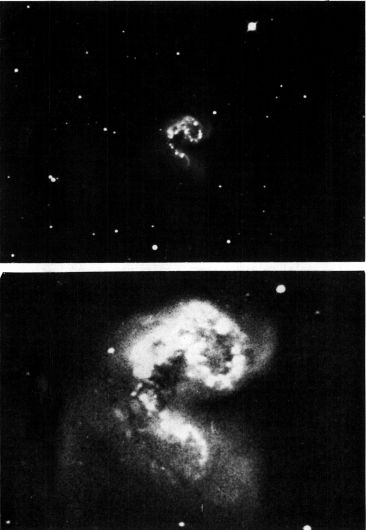
THE RING-TAIL GALAXY (NGC 4038) in CORVUS. This peculiar system is shown here (top) on a plate made with the Lowell 42-inch reflector, and (below) with the McDonald 82-inch reflector.
环形尾翼银河系（NGC 4038）在乌鸦座。此特殊系统在此（上）显示在用Lowell 42英寸反射镜制成的板上，（在下面）用McDonald 82英寸反射镜制成。
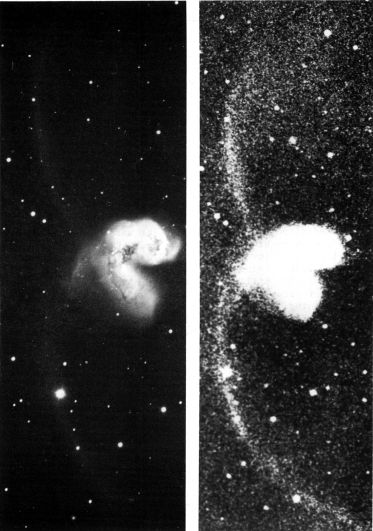
THE RING-TAIL GALAXY. Photographs of NGC 4038 obtained at Palomar Observatory with the 48-inch Schmidt camera. The long extending filaments are shown in the print at right in which the contrast has been artificially increased.
环尾银河系。使用48英寸Schmidt相机在Palomar天文台获得的NGC 4038的照片。右图显示了长丝，其中对比度已被人为增加。
The red shift of the system is about 910 miles per second, and the computed distance is close to 90 million light years. This gives the main body an actual diameter of some 100,000 light years; the total luminosity appears to be about 20 billion times that of the Sun.
该系统的红移约为每秒910英里，计算出的距离接近9000万光年。这使主体的实际直径约为100,000光年。总的光度似乎是太阳的200亿倍。
Radial velocity measurements at various points across the system have been made by E.M. and G.R.Burbidge (1966); they find that “the velocity field departs strongly from anything like a regular rotation of two galaxies, or of a single object”. Still, it is uncertain that this system actually represents a collision of two galaxies; a process of fissioning has also been suggested. V.Ambartsumian has shown that the number of double galaxies is too great to be explained by a capture or collision process; he concludes that the majority were actually formed as doubles. The tidal filaments of NGC 4038, however, probably imply that some strong interaction is occurring here between two systems, if not an actual collision. H.Shapley (1943) has called attention to the fact that another peculiar galaxy (NGC 4027) lies only 0.7° distant, to the SW; the two systems are “almost certainly physically associated, or have been”. This probable companion system resembles a onearm spiral with its single tail curving to the north and east, in the general direction of the Ring-Tail. The projected separation of the two systems is about a million light years, which implies that the interaction-if anymust have occurred at some distant time when the separation was much less. These two objects possibly form one of those intriguing double systems which are linked by luminous bridges and filaments, though in this case the presumed “connecting filament” fades out-perhaps becoming too faint to be recorded-after covering less than a third of the intervening distance. Systems of this type may also be related to “eruptive galaxies” as NGC 5128 and M82.
EM和GRBurbidge（1966）在整个系统的各个点进行了径向速度测量。他们发现“速度场与诸如两个星系或单个物体的规则旋转之类的东西强烈偏离”。但是，尚不确定该系统是否实际代表了两个星系的碰撞；还提出了裂变过程。V.Ambartsumian表明，双星系的数量太大，无法用捕获或碰撞过程来解释。他得出结论，多数人实际上是双打。但是，NGC 4038的潮汐细丝可能暗示着这两个系统之间发生了强烈的相互作用，即使不是实际的碰撞也是如此。H.Shapley（1943）提请注意以下事实：另一个奇特的星系（NGC 4027）与西南偏南仅相距0.7°。这两个系统“几乎肯定在物理上相关，或者曾经”。这种可能的陪伴系统类似于单臂螺旋，其单尾巴在环尾方向上向北和向东弯曲。预计这两个系统的分离大约是一百万光年，这意味着相互作用（如果有必要的话）必须在相隔很小的远距离发生。这两个物体可能构成了由发光桥和灯丝连接的有趣的双重系统之一，尽管在这种情况下，假定的“连接灯丝”褪色了，可能变得太微弱而无法记录，因为覆盖了不到三分之一的中间物体距离。这种类型的系统也可能与NGC 5128和M82等“爆发星系”有关。这种可能的陪伴系统类似于单臂螺旋，其单尾巴在环尾方向上向北和向东弯曲。预计这两个系统的分离大约是一百万光年，这意味着相互作用（如果有必要的话）必须在相隔很小的远距离发生。这两个物体可能构成了由发光桥和灯丝连接的有趣的双重系统之一，尽管在这种情况下，假定的“连接灯丝”褪色了，可能变得太微弱而无法记录，因为覆盖了不到三分之一的中间物体距离。这种类型的系统也可能与NGC 5128和M82等“爆发星系”有关。这种可能的陪伴系统类似于单臂螺旋，其单尾巴在环尾方向上向北和向东弯曲。预计这两个系统的分离大约是一百万光年，这意味着相互作用（如果有必要的话）必须在相隔很小的远距离发生。这两个物体可能形成了由发光桥和灯丝连接的有趣的双重系统之一，尽管在这种情况下，假定的“连接灯丝”褪色了，可能变得太微弱而无法记录，因为覆盖了不到三分之一的中间物体距离。这种类型的系统也可能与NGC 5128和M82等“爆发星系”有关。沿环尾方向。预计这两个系统的分离大约是一百万光年，这意味着相互作用（如果有必要的话）必须在相隔很小的远距离发生。这两个物体可能构成了由发光桥和灯丝连接的有趣的双重系统之一，尽管在这种情况下，假定的“连接灯丝”褪色了，可能变得太微弱而无法记录，因为覆盖了不到三分之一的中间物体距离。这种类型的系统也可能与NGC 5128和M82等“爆发星系”有关。沿环尾方向。预计这两个系统的分离大约是一百万光年，这意味着相互作用（如果有必要的话）必须在相隔很小的远距离发生。这两个物体可能形成了由发光桥和灯丝连接的有趣的双重系统之一，尽管在这种情况下，假定的“连接灯丝”褪色了，可能变得太微弱而无法记录，因为覆盖了不到三分之一的中间物体距离。这种类型的系统也可能与NGC 5128和M82等“爆发星系”有关。这两个物体可能形成了由发光桥和灯丝连接的有趣的双重系统之一，尽管在这种情况下，假定的“连接灯丝”褪色了，可能变得太微弱而无法记录，因为覆盖了不到三分之一的中间物体距离。这种类型的系统也可能与NGC 5128和M82等“爆发星系”有关。这两个物体可能形成了由发光桥和灯丝连接的有趣的双重系统之一，尽管在这种情况下，假定的“连接灯丝”褪色了，可能变得太微弱而无法记录，因为覆盖了不到三分之一的中间物体距离。这种类型的系统也可能与NGC 5128和M82等“爆发星系”有关。
LIST OF DOUBLE AND MULTIPLE STARS
双星和多星清单
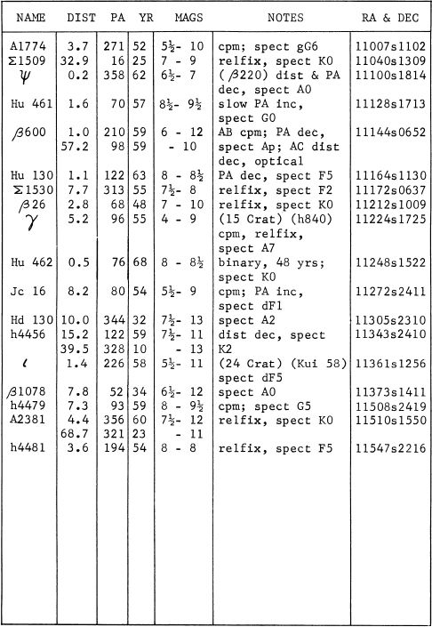
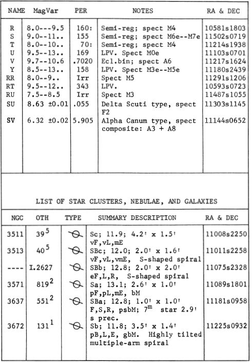
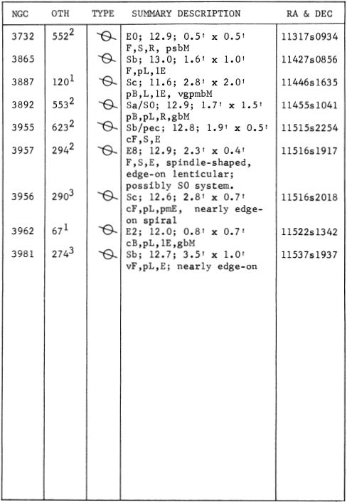
LIST OF DOUBLE AND MULTIPLE STARS
双星和多星清单

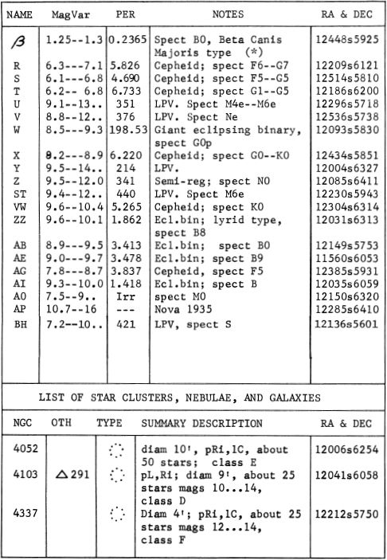

DESCRIPTIVE NOTES
描述性注释
ALPHA Name-ACRUX, although the star is often called simply “Alpha Crucis”. Position 12238s6249. This is the 14th brightest star in the sky; magnitude 0.87; spectrum Bl IV and B3. Acrux is the star at the foot of the Southern Cross. Midnight culmination occurs about March 28.
ALPHA名称-ACRUX，尽管该星通常被简称为“ Alpha Crucis”。位置12238s6249。这是天空中第14颗最明亮的星星；幅度0.87; 频谱B1 IV和B3。Acrux是南十字星脚下的明星。午夜高潮发生在3月28日左右。
Acrux is a brilliant double star, one of the very finest of the heavens, and first noted as such, according to R.H.Allen, by “some Jesuit missionaries sent by King Louis XIV to Siam in 1685”. Both components are highly luminous B-type “helium stars” of magnitudes 1.39 and 1.86, with actual luminosities of about 3000 and 1900 suns; the computed absolute magnitudes are -3.9 and -3.4. Each star seems to be a spectroscopic binary, but the published periods of 59.3 and 56.0 days have been questioned recently at Radcliffe Observatory by A.D.Thackeray (1974) who finds the brighter star to have a period of 75.769 days, while the evidence for duplicity in the other star still remains very uncertain. The visual pair, separated by about 4½”, form a long-period binary with extremely slow orbital motion. The only change detected since discovery is a very small decrease in the separation, which was 5.4” in 1826; the PA may also have decreased slightly in the last century, but not by more than a few degrees. The present projected separation of the pair is about 500 AU, or a little more than six times the distance across the Solar System.
Acrux是一颗璀璨的双星，是最出色的天堂之一，据RHAllen所说，“最早的一位耶稣会传教士在1685年被路易十四国王派往暹罗”。这两个成分都是高度发光的B型“氦星”，其强度分别为1.39和1.86，实际发光度约为3000和1900个太阳。计算的绝对大小为-3.9和-3.4。每颗恒星似乎都是光谱双星的，但是ADThackeray（1974）最近在拉德克利夫天文台对59.3和56.0天的发布时间提出了质疑，他发现更亮的恒星具有75.769天的时间，而在恒星中存在双重性的证据另一颗星仍然非常不确定。视觉对，相距约4½”，形成了一个周期很长的二进制文件，其轨道运动极其缓慢。自发现以来，唯一检测到的变化是间隔的很小减小，在1826年为5.4英寸。功率放大器在上个世纪也许也有小幅下降，但幅度不超过几度。该对目前的预计间隔约为500 AU，或者是整个太阳系距离的六倍多。
Acrux lies at a computed distance of about 370 light years. The annual proper motion is 0.04”; the radial velocities of the two stars differ somewhat owing to their orbital motion around a common center of gravity; the measurements give 6% and ½ miles per second, both in approach. The star is a member of a large moving group of which Beta, Delta, and Zeta Crucis are other members. A number of stars in Scorpius and Centaurus show about the same proper motion and apparently form a large moving association. (For details concerning this group, refer to “Scorpio-Centaurus Association” under Scorpius)
Acrux的计算距离约为370光年。年度适当运动为0.04英寸；两颗恒星的径向速度由于绕共同重心的轨道运动而有所不同。测量结果均为每秒接近6％和½英里。这颗恒星是一个大型移动成员的成员，其中Beta，Delta和Zeta Crucis是其他成员。天蝎座和半人马座中的许多恒星显示出相同的适当运动，并且显然形成了一个巨大的运动联系。（有关该组的详细信息，请参阅Scorpius下的“ Scorpio-Centaurus Association”）
BETA Mag 1.28 (slightly variable). Spectrum B0.5 or BO IV. Position 12448s5925. This is the 20th brightest star in the sky, marking the end of the eastern arm of the Southern Cross. Midnight culmination occurs about April 2.
BETA Mag 1.28（略有变化）。频谱B0.5或BO IV。位置12448s5925。这是天空中第20个最明亮的恒星，标志着南十字星东臂的尽头。午夜高潮发生在4月2日左右。
Beta Crucis is approximately 490 light years distant and about 5800 times the luminosity of the Sun. (Absolute magnitude about -4.6). The annual proper motion is 0.05”; the radial velocity is 12 miles per second in recession.
Beta Crucis距离我们大约490光年，是太阳光度的5800倍。（绝对值约为-4.6）。年度适当运动为0.05英寸；在衰退中，径向速度为每秒12英里。
The star is a pulsating variable of the Beta Canis Majoris type, with a primary period of 5h 40.5m; the light range, however,is only about 0.06 magnitude. There is also an 11th magnitude companion at 44”, discovered by R.T.Innes in 1901, probably not a true physical companion. The projected separation of the two stars is some 6900 AU.
恒星是贝塔犬大马贝里斯类型的脉动变量，主周期为5h 40.5m。然而，光范围仅为0.06量级。RTInnes在1901年发现了一个11级的伴星，其高度为44英寸，可能不是真正的物理伴星。两颗星的预计分离距离约为6900 AU。
GAMMA Mag 1.67; spectrum M3 II; position 12284s 5650. This is the 28th brightest star in the sky, marking the top of the Southern Cross. Gamma Crucis is a giant with an absolute magnitude of about -2.5, similar in general type to Antares but not so large or brilliant. The distance is about 220 light years and the actual luminosity about 900 times that of the Sun. The star has an annual proper motion of 0.27” in PA 175°; the radial velocity is 13 miles per second in recession.
GAMMA Mag 1.67；频谱M3 II; 位置12284s5650。这是天空中第28最亮的恒星，标志着南十字星的顶部。伽玛·克鲁西斯（Gamma Crucis）是绝对大小约为-2.5的巨人，一般类型与安塔雷斯（Antares）类似，但没有那么大或那么辉煌。距离约为220光年，实际光度大约是太阳的900倍。恒星在PA 175°的年度固有运动为0.27英寸；在衰退中，径向速度为每秒13英里。
The star GC 17055, magnitude 6.4, spectrum A2, is located 111” distant (1919). This star, however, does not share the proper motion of Gamma itself and the separation is now increasing from the southward motion of the primary star.
光谱A2的星际GC 17055（大小为6.4）位于111英寸远（1919年）。但是，这颗恒星本身并不具有伽玛运动本身的正确运动，并且与主恒星向南运动的距离现在越来越大。
DELTA Mag 2.82; spectrum B2 IV. Position 12125s5828. This star marks the west arm of the Southern Cross. The computed distance is about 570 light years, leading to a true luminosity of about 1900 suns. Delta Crucis shows an annual proper motion of 0.04”; the radial velocity is 15½ miles per second in recession.
三角洲 Mag 2.82; 频谱B2 IV。位置12125s5828。这颗星标志着南十字星的西臂。计算出的距离大约为570光年，从而导致大约1900个太阳的真实光度。Delta Crucis的年正常运动量为0.04英寸；在衰退中，径向速度为每秒15.5英里。
NGC 4755 Position 12506s6005. The Kappa Crucis star cluster, a brilliant and beautiful galactic cluster ranking among the finest and most spectacular objects of the southern Milky Way. The popular name “Jewel Box” was derived from Sir John Herschel’s statement that this cluster produced upon him the impression of a superb piece of jewelry. The 50 or so brightest members are all compressed into a space about 10’ in diameter, or approximately 25 light years. The brightest stars are supergiants and include some of the most luminous stars known in our Galaxy. According to a study at Radcliffe Observatory in 1962, the 10 brightest cluster members have the following apparent magnitudes and spectra:
NGC 4755位置12506s6005。Kappa Crucis星团是一颗璀璨而美丽的银河星团，位于银河南部最精美，最壮观的物体之中。流行的名称“珠宝盒”源自约翰·赫歇尔爵士（Sir John Herschel）的说法，即这一簇簇对他产生了精湛珠宝的印象。这50个左右最亮的成员全部被压缩到直径约10'或约25光年的空间中。最明亮的恒星是超巨星，其中包括我们银河系中已知的一些最发光的恒星。根据1962年拉德克利夫天文台的一项研究，最亮的10个星团成员具有以下视在大小和光谱：
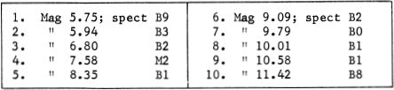
With the exception of #4, all the brighter members are B-stars, with absolute magnitudes ranging from -7.5 to about -1.8. These figures have been corrected for a light loss of 1.3 magnitudes through space absorption. Star #1 thus has a true luminosity of about 80,000 suns, and star #2 about 75,000 suns. Star #4 is a red supergiant, located near the center of the cluster. The computed absolute magnitude of the star is about -5.7 and the true luminosity is about 16,000 suns, more or less the equal of Betelgeuse (Alpha Orionis). Another supergiant, of type Al, some 10’ from the edge of the main cluster, is very probably a member. This star (HD 111613) is magnitude 5.7, giving a true luminosity of about 83,000 suns.
除＃4外，所有更亮的成员都是B星，绝对星等的范围是-7.5至-1.8。这些数字已针对因空间吸收而造成的1.3级光损失进行了校正。因此，第一颗恒星的真实发光度约为80,000个太阳，而第二颗恒星的真实发光度约为75,000个太阳。星星＃4是红色超巨星，位于星团中心附近。计算出的恒星绝对大小约为-5.7，真正的光度约为16,000个太阳，或多或少等于Betelgeuse（Alpha Orionis）。另一个超级巨人，类型为Al，距离主星团边缘约10'，很可能是成员。这颗恒星（HD 111613）的大小为5.7，真实发光度约为83,000太阳。

THE MILKY WAY IN CRUX. A striking portion of the Galaxy, in the vicinity of the Southern Cross, showing the dark “Coal Sack” Nebula.
曲折中的银河系。银河系的一个引人注目的部分，在南十字星附近，显示出黑暗的“煤袋”星云。
Boyden Station, Harvard Observatory
哈佛天文台博登站

THE JEWEL BOX. Star Cluster NGC 4755, photographed with the 60-inch reflector at the Boyden Station of Harvard College Observatory. This brilliant galactic cluster is one of the show objects of the Southern Milky Way.
珠宝盒。星团NGC 4755，用60英寸反射镜在哈佛大学天文台的博登站拍摄。这个璀璨的银河系星团是南方银河系的表演对象之一。
These luminosities are based on a derived distance of about 7700 light years, from recent studies at Radcliffe; published distances are very discrepant, owing to heavy obscuration in the region. The rich central mass of the cluster appears to be about 25 light years in diameter with outliers scattered over a 50-light-year area. The radial velocity is about 11 miles per second in approach.
这些亮度基于Radcliffe的最新研究得出的约7700光年的距离。由于该地区的严重遮盖，公布的距离非常不符。簇的丰富中心质量看起来大约为25光年，离群值分布在50光年的区域。进近时径向速度约为每秒11英里。
NGC 4755 is one of the youngest star clusters known and appears to be comparable in type and age to the fine Double Cluster in Perseus. The presence of highly luminous supergiants indicates an age of probably not more than a few million years for either cluster. The Perseus group also resembles NGC 4755 in the possession of red supergiants, evidently objects of large mass which have already evolved away from the main sequence and are now nearing the point of ending the hydrogen-burning reaction which powers the majority of the stars. The bright blue stars of NGC 4755 will presumably begin their own evolutionary expansion in the near astronomical future.
NGC 4755是已知的最年轻的星团之一，其类型和年龄似乎与英仙座中的双星团相当。高发光超级巨星的存在表明两个集群的年龄可能不超过几百万年。珀尔修斯集团也类似于NGC 4755，它拥有红色超巨星，显然是质量很大的物体，它们已经脱离了主序，并且现在接近结束为大多数恒星提供动力的氢燃烧反应的终点。NGC 4755的亮蓝星大概会在不久的天文数字时代开始其自身的演化扩展。
The cluster lies in a rich and remarkable region of the heavens, well worth exploring with low power telescopes and instruments of the “rich-field” type. Immediately to the south, the star clouds are obscured by the vast dark blot called the “Coal Sack”, certainly the most famous of the naked-eye dark nebulae. (It is one of the quaint oddities of astronomical nomenclature that the Jewel Box should lie next to the Coal Sack.) Measuring about 7° x 5° across, the Coal Sack appears as a nearly starless spot just east of Alpha Crucis, and was noticed by Portuguese navigators in the 16th century. This is possibly the nearest of the dark nebulosities, believed to be no more than 500 or 600 light years distant, and some 60 or 70 light years in diameter. Many curious dark lanes and channels ornament the surrounding region. (See photographs, pages 731 and 734)
该星团位于天堂丰富而引人注目的区域，非常值得使用低功率望远镜和“富视场”类型的仪器进行探索。紧接着向南的是，被称为“煤袋”的巨大深色斑点掩盖了星云，这当然是最著名的裸眼暗星云。（珠宝盒应位于煤袋旁边，这是天文术语的古怪之处之一。）煤袋的尺寸约为7°x 5°，在Alpha Crucis以东几乎是无星点，在16世纪被葡萄牙航海家注意到。这可能是最接近的暗雾状星云，据信距离不超过500或600光年，直径约60或70光年。许多奇特的黑暗车道和通道装饰着周围地区。（查看照片，
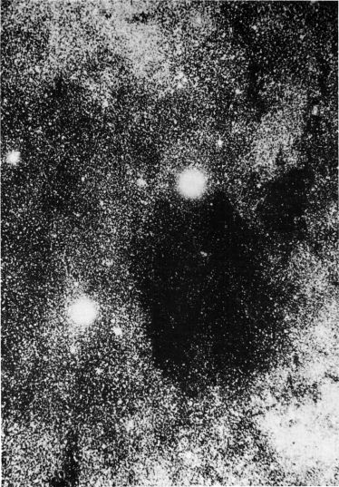
THE COAL SACK. One of the curious features of the Southern Milky Way, this great dark cloud appears as a black blot against the star clouds of Crux.
煤袋。南部银河系的奇特特征之一，这朵巨大的乌云显得像黑色斑点，紧贴着克鲁斯的星云。
Harvard College Observatory
哈佛大学天文台
LIST OF DOUBLE AND MULTIPLE STARS
双星和多星清单
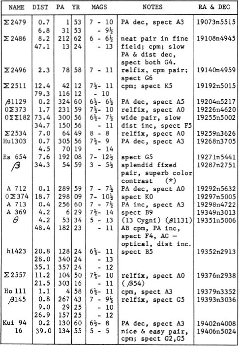

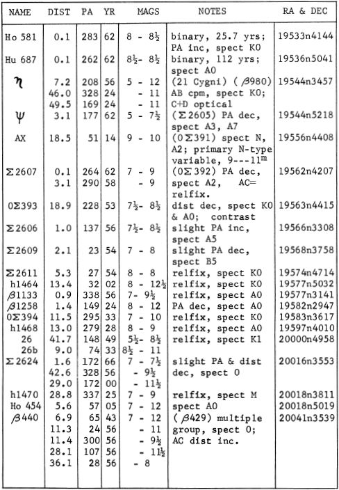


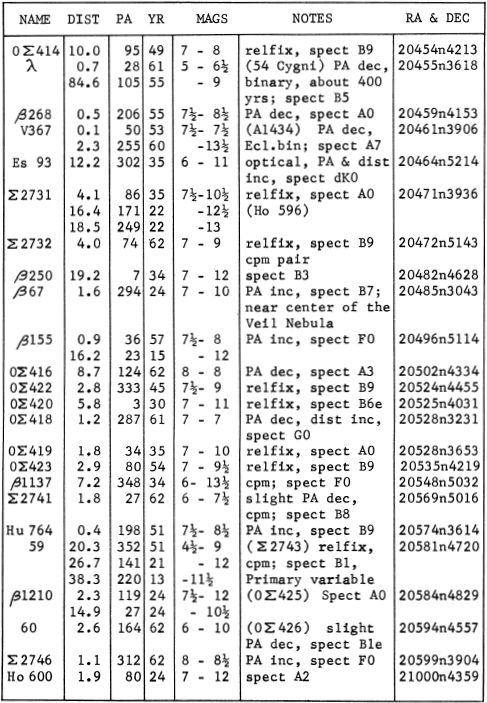
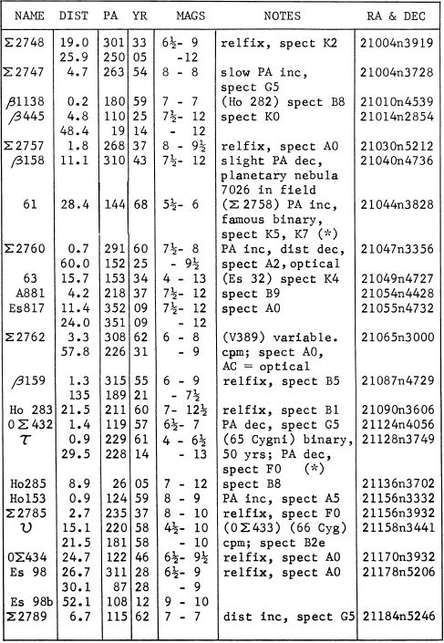


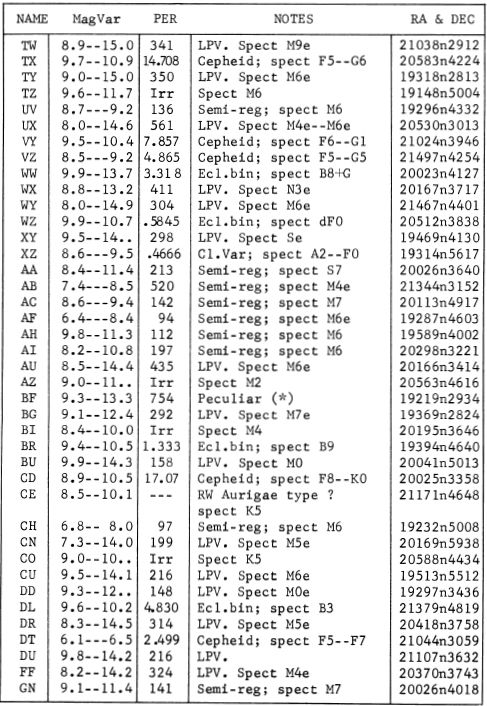
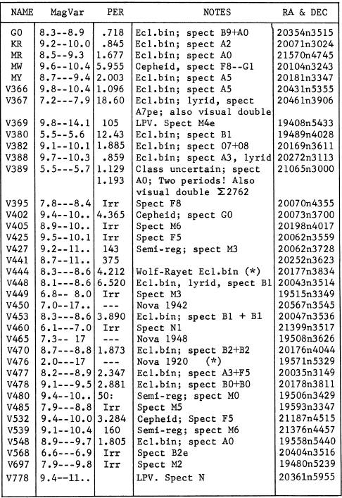
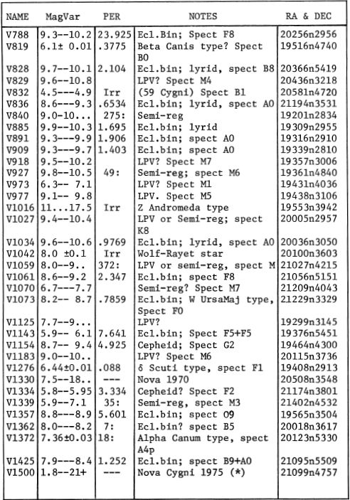

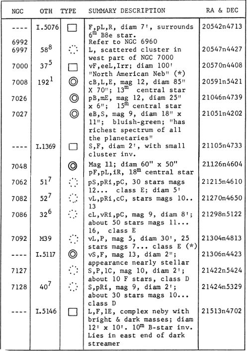

“These are the last days of the waning year;
High in the west now stands Deneb,
Great Star of the Cross.....”
“这是衰落的一年的最后日子；
现在在西部的高处
是十字架的伟大之星Deneb .....”
ALPHA Name-DENEB. An older name, “Arided”, is now nearly obsolete. Deneb is the 19th brightest star in the sky; magnitude 1.26, spectrum A2 Ia. The star is located at the top of the Northern Cross at 20397n4506; the star also marks the Swan’s tail in the mythological outline of Cygnus. Midnight culmination (opposition date) is about August 1. Deneb is the faintest of the three 1st magnitude stars which outline the well known “Summer Triangle”, consisting of Vega, Deneb, and Altair.
ALPHA名称-DENEB。较早的名称“ Arided”现在几乎已过时。Deneb是天空中第19最亮的恒星；幅度1.26，频谱A2 Ia。该恒星位于北十字星的顶部，编号为20397n4506；在天鹅座神话轮廓中，星星还标志着天鹅的尾巴。午夜高潮（反对日期）大约是8月1日。Deneb是三颗1级恒星中最暗淡的一颗，它们概述了著名的“夏季三角”，包括Vega，Deneb和Altair。
The name of the star is from Al Dhanab al Dajajah, which in Medieval Arabic signifies “The Hen’s Tail”; on antique star globes it also appears as Denebadigege and Deneb Adige. Other Denebs are found in the heavens in such cases where a mythological beast requires a proper name for his tail; Denebola for Beta Leonis and Deneb Kaitos for Beta Ceti are two well known instances. Another Arabic name for Alpha Cygni, according to R.H.Allen, was Aridif from Al Ridf, the Hindmost, another allusion to its location in the Tail of the Swan. The identification of Cygnus with some sort of bird, though not necessarily a swan, was quite common in the ancient world; in various writings it is mentioned as a flying eagle, a hen, a partridge, or a pigeon; a star-bird of some sort called Urakhga appears in Babylonian writings, and may be the original of the Rukh or Roc of Arabian legend. On some of Bayer’s charts of the early 17th century it is called “Gallina”. But probably more inspiring to the star pilgrims of the western world is the identification of Deneb as the Star of the Cross, particularly at the Christmas season when the great figure of the Northern Cross assumes an increasingly vertical position in the western sky. James Russell Lowell in his New Year’s Eve, 1844, speaks of
星星的名字来自Al Dhanab al Dajajah，在中世纪阿拉伯语中表示“母鸡的尾巴”。在古董明星地球仪上，它也显示为Denebadigege和Deneb Adige。在这样的情况下，在神兽的尾巴上需要一个专有名称的情况下，在天空中还会发现其他Denebs。五帝期Beta莱奥尼斯和天津四开拓史的土司空两个众所周知的实例。对天鹅座阿尔法另一个阿拉伯名字，根据RHAllen，是Aridif从铝Ridf，最显眼的地方，是它在天鹅尾巴中的位置的另一个暗示。在古代世界，用某种鸟类（不一定是天鹅）来识别天鹅座是很普遍的事。在各种著作中，它被称为飞鹰，母鸡，a或鸽子；在巴比伦的著作中出现了一种名为Urakhga的恒星鸟，可能是阿拉伯传奇Rukh或Roc的原始作品。在拜耳17世纪初的某些图表上，它被称为“ Gallina”。但对于西方世界的朝圣者而言，更令人鼓舞的是将丹妮卜（Deneb）认定为十字架之星，特别是在圣诞节季节，北十字的伟人在西方天空中的位置越来越垂直。詹姆斯·罗素·洛厄尔（James Russell Lowell）在1844年的除夕中谈到
“The Lyre whose strings give music audible
“里拉琴的弦使音乐听得见
To holy ears, and countless splendors more,
为了圣洁的耳朵，还有无数的辉煌，
Crowned by the blazing Cross high-hung o’er all;”
由炽热的克罗斯高空所有人加冕；”
Deneb is one of the greatest supergiant stars known, and is probably equalled only by Rigel among all the 1st magnitude stars. The actual luminosity is computed to be about 60,000 times that of the Sun, and the absolute magnitude about -7.1. Deneb probably has a mass of about 25 solar masses. At a distance estimated to be nearly 1600 light years the star is one of the most remote of all the bright stars. Our sun at the same distance would appear as a telescopic star of magnitude 13.3. The annual proper motion is about 0.003”; the radial velocity about 3 miles per second in approach. Deneb is an early “Sirian” or hydrogen-type star, with a surface temperature of 9700°K; the true diameter may be about 60 times that of the sun.
Deneb是已知的最伟大的超巨星之一，在所有1级恒星中可能仅与Rigel相等。计算得出的实际光度约为太阳的60,000倍，绝对量约为-7.1。Deneb的质量可能约为25太阳质量。距离估计将近1600光年这颗恒星是所有明亮恒星中最遥远的一颗。我们在相同距离处的太阳将显示为13.3级的伸缩恒星。年度适当运动量约为0.003英寸；进近时的径向速度约为每秒3英里。Deneb是早期的“ Sirian”或氢型恒星，表面温度为9700°K。真实直径大约是太阳直径的60倍。
Deneb shows a variable radial velocity with a semiregular period of about 11.7 days; there is also evidence for a slight variability of about 0.05 magnitude. Other A and F-type supergiants show similar variations, which are attributed to pulsation or large-scale turbulence in the star’s atmosphere.
Deneb显示出一个可变的径向速度，其半规则周期约为11.7天。也有证据表明大约有0.05个数量级的细微变化。其他A型和F型超巨星也表现出相似的变化，这归因于恒星大气中的脉动或大规模湍流。
As one of the most luminous of supergiants, Deneb has recently been used as a test case in an attempt to detect spectral changes resulting from a star’s evolution. From studies by C.Hayashi and R.C.Cameron (1962) it now appears that a very massive star may require only about 20 thousand years to evolve from type A to the red-giant type M, with a consequent change in temperature of about 0.3° per year. This steady decrease in temperature should produce definite changes in the spectrum which might be detected in an interval of well under a century. M.H. and W.Liller (1964) have studied spectra of Deneb obtained from 1887 to 1964 and have detected one definite change -a strengthening of the so-called “H-line” of ionized calcium, relative to the nearby “Hε“ line of hydrogen. The greater part of this change, however, evidently occurred in the early years of this century, suggesting that the explanation lies in some sort of temporary atmospheric activity or long-period cycle. At present there appears to be no definite change attributable to stellar evolution in the spectrum of Deneb or of any other star.
作为最发光的超级巨星之一，Deneb最近被用作测试用例，以尝试检测由于恒星演化而引起的光谱变化。根据C.Hayashi和RCCameron（1962）的研究，现在看来，一颗非常大的恒星从A型演化到红巨星M型可能只需要大约2万年的时间，因此温度的变化约为0.3°/°。年。温度的这种稳定下降将在光谱上产生确定的变化，可以在不到一个世纪的间隔内检测到。MH和W.Liller（1964）研究了从1887年到1964年获得的Deneb光谱，并发现了一个确定的变化-相对于附近的Hε线，所谓的钙离子“ H线”得到了增强。氢。但是，这种变化的大部分 显然发生在本世纪初，这说明这种解释是基于某种暂时的大气活动或长期周期。目前，似乎没有确定的变化可归因于Deneb或任何其他恒星的光谱中的恒星演化。
Deneb is often considered to be the chief source of illumination of the huge “North American Nebula” NGC 7000 which lies 3° to the east. (Refer to page 811)
Deneb通常被认为是巨大的“北美星云” NGC 7000的主要照明光源，该星云位于东方3°。（请参阅第811页）
About 1.8° to the SE lies the star 56 Cygni (mag 5.1, spectrum A4m), a suspected novalike variable, based on a single observation by James L.Kuhns of Savannah, Georgia. On the morning of July 12, 1973, he reported an object of magnitude 1.5 whose position appeared to coincide with 56 Cygni; by the next evening the star was observed to be in its normal 5th magnitude state.
根据佐治亚州萨凡纳的詹姆士·库恩斯（James L.Kuhns）的单次观测，恒星56 Cygni（mag 5.1，A4m光谱）与东南约1.8°。1973年7月12日上午，他报告了一个1.5级的物体，其位置似乎与56个Cygni重合。到第二天晚上，该恒星被观测到处于其正常的5级状态。
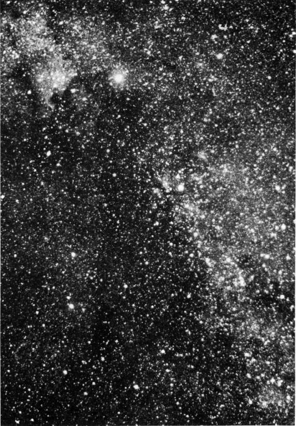
STAR CLOUDS IN CYGNUS. Deneb and the North American Nebula are at upper left. Photographed with a 50mm Takumar lens in red light by David Healy of Manhasset, New York.
天鹅座的星云。Deneb和北美星云位于左上方。纽约Manhasset的David Healy用红色的50mm Takumar镜头拍摄。
BETA Name-ALBIREO. Mag 3.09; spectrum K3 II; located at the foot of the Northern Cross at 19287n2751. The name appears to have originated in a mis-translation of the term ab ireo in the 1515 edition of Ptolemy’s star catalogue called the Almagest. The original Arabian name, according to R.H.Allen, was Al Minhar al Dajajah, or the “Hen’s Beak”. On Riccioli’s maps it appears as Menkar Eldigiagieh, or occasionally as Hierzim.
测试版名称-ALBIREO。马格3.09; 频谱K3 II; 位于北十字脚下的19287n2751。这个名字似乎起源于托勒密1515年版星表中名为amagest的ab ireo的误译。根据RHAllen的说法，阿拉伯最初的名字是Al Minhar al Dajajah，或“母鸡的喙”。在Riccioli的地图上，其显示为Menkar Eldigiagieh，或有时显示为Hierzim。
Albireo is one of the most beautiful double stars in the sky, considered by many observers to be the finest in the heavens for the small telescope. The brighter star is a golden yellow or “topaz”, magnitude 3.09, spectrum K3; the “sapphire” companion is magnitude 5.11, spectrum B8 V. The separation is 34.3”, an easy object for the low power telescope. Even a pair of good binoculars, if steadily held will split the pair. Albireo is noted for its superb color contrast, best seen with the eyepiece slightly displaced from the sharpest focus. Miss Agnes Clerke (1905) called the tints “golden and azure”, giving perhaps “the most lovely effect of color in the heavens”. For the average amateur telescope there is probably no pair so attractive, though the color effect seems to diminish in either very small or very large telescopes, or with too high a magnification. No more than 30X is required on a good 6-inch to show this superb pair as two contrasting jewels suspended against a background of glittering star-dust. The surrounding region is wonderfully rich, and for wide-angle telescopes the star clouds to the NE are probably unequalled in splendor in the entire heavens.
Albireo是天空中最美丽的双星之一，许多观察家认为它是小型望远镜中天堂中最好的双星。明亮的星星是金黄色或“黄玉”，星等，光谱K3，值为3.09；“蓝宝石”伴星的震级为5.11，光谱为B8V。间隔为34.3英寸，这是低倍望远镜的简单对象。即使稳固地握住一副好的双筒望远镜，也会将其分开。阿尔比雷奥（Albireo）以其出色的色彩对比而著称，目镜与最清晰的焦点略有偏离，这是最好的选择。艾格尼丝·克莱克小姐（1905年）称这些色彩为“金色和蔚蓝”，也许“给人以天堂中最美丽的色彩效果”。对于普通的业余望远镜来说，可能没有一对如此吸引人，尽管无论是很小的望远镜还是很大的望远镜，色彩效果似乎都消失了，或放大倍数过高。一个好的6英寸显示器不需要超过30倍才能显示这对精湛的珠宝，因为两个对比鲜明的珠宝悬挂在闪闪发光的星尘背景下。周边地区异常丰富，对于广角望远镜来说，东北地区的星云在整个天堂中都堪称无与伦比。
Albireo is believed to be a physical pair, although no evidence of orbital motion has been detected since the first observations of F.G.W.Struve in 1832. The computed distance is 410 light years, the resulting actual luminosities are 760 and 120 suns. The annual proper motion is about 0.01”; the radial velocities are 14½ and 11 miles per second for the two stars, both in approach.
尽管自1832年FGWStruve首次观测以来没有发现轨道运动的证据，但Albireo被认为是物理对。计算出的距离为410光年，因此产生的实际光度为760和120太阳。年度适当运动量约为0.01英寸；这两颗恒星的径向速度分别为每秒14½和11英里。
Albireo A has a composite spectrum and evidently consists of two stars too close for telescopic resolution; the spectrum of the unseen companion is either late B or early A-type. The 5th magnitude visual component is also very interesting to the spectroscopist, showing a hydrogen emission spectrum. The projected separation of the visual pair is about 4400 AU, or just over 400 billion miles. This is of course a minimum value; the true separation may obviously be much greater if one star is somewhat more distant than the other. It is worth contemplating, in any case, the fact that at least 55 solar systems could be lined up, edge-to-edge, across the space that separates the components of this famous double!
Albireo A具有复合光谱，显然由两颗太近的恒星组成，无法进行望远镜的分辨。看不见的伴侣的频谱是晚期B型或早期A型。光谱学家还非常感兴趣的是5级视觉分量，它显示了氢发射光谱。视觉对的预计间隔约为4400 AU，即略超过4000亿英里。当然，这是最小值。如果一颗恒星比另一颗恒星稍远，那么真正的分隔显然会更大。在任何情况下，都值得考虑的事实是，至少有55个太阳能系统可以在将这个著名的双星组件分隔开的空间中以边对边的方式排列在一起！
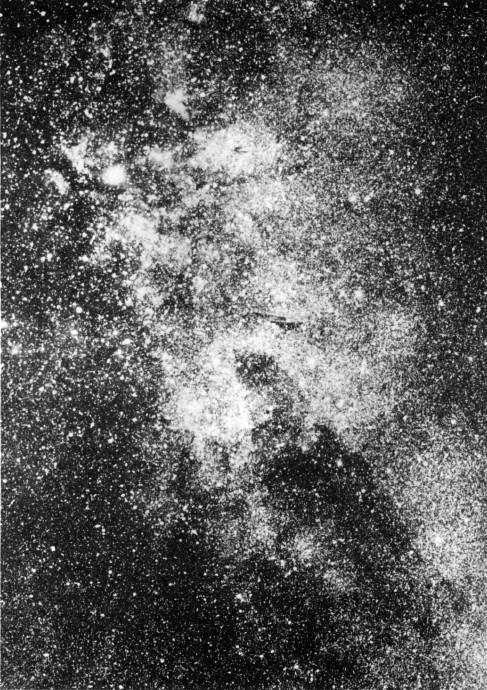
THE CYGNUS STAR CLOUD. This is one of the most spectacular regions of the Milky Way, just north and east of Beta Cygni. Gamma Cygni is at upper left.
天鹅星云。这是银河系最壮观的地区之一，就在Beta Cygni的北部和东部。Gamma Cygni在左上方。
Lowell Observatory photograph
洛厄尔天文台照片
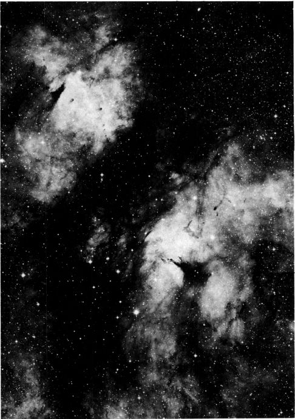
NEBULOSITY NEAR GAMMA CYGNI. A curious region of bright and dark nebulosity, about a degree east of Gamma Cygni. Palomar Observatory 48-inch Schmidt photograph.
GAMMA CYGNI附近的秘密。伽马西格尼以东约度的一个明暗云雾状奇异区域。Palomar天文台48英寸的施密特照片。
GAMMA Name-SADR. Mag 2.23; spectrum F8 Ib; position 20204n4006. The computed distance of this star is about 750 light years, giving a true luminosity of some 5800 suns. (Absolute magnitude about -4.6). Gamma Cygni shows an annual proper motion of a mere 0.001”, and a radial velocity of 4½ miles per second in approach. The star marks the intersection of the two arms of the Northern Cross. There are fine Milky Way fields throughout the region, especially in the direction of Beta Cygni. The area around Gamma itself contains vast stretches of faint diffuse nebulosity whose intricate details may be studied only on the photographic plate. The curious field shown on page 756 lies about a degree east of Gamma.
GAMMA名称-SADR。马格2.23; 频谱F8 Ib; 位置20204n4006。这颗恒星的计算距离约为750光年，给出了约5800个太阳的真实光度。（绝对值约为-4.6）。伽玛·西格尼（Gamma Cygni）的年正常运动幅度仅为0.001英寸，进近时的径向速度为每秒4½英里。恒星标志着北十字两臂的相交处。整个地区都有优良的银河系田地，特别是在Beta Cygni方向。伽玛自身周围的区域包含大量微弱的弥漫性雾状星云，其复杂的细节只能在照相板上研究。第756页所示的奇异场位于伽马以东约1度。
Between Beta and Gamma Cygni lies the great Cygnus Star Cloud, a superb region for study with a small telescope or even a pair of binoculars. The stars are richer here than in any similar area of the sky, and present a glorious sight in the rich-field telescope. Webb says “Its low-power fields are overpowering in magnificence.” Sweep the area with a low power wide-angle eyepiece, and notice the huge numbers of stars, groups, and clusters, and the occasional dark gaps caused by clouds of non-.luminous material.
在Beta和Gamma Cygni之间是巨大的天鹅座星云，这是一个极好的区域，可使用小型望远镜甚至双筒望远镜进行研究。这里的星星比天空的任何类似区域都要丰富，并且在丰富视野的望远镜中展现出辉煌的景象。韦伯说：“它的低功率视野太强大了。”用低功率广角目镜扫描该区域，注意有大量的恒星，星团和星团，以及偶尔由非云层造成的暗隙。发光材料。
It is in Cygnus that the belt of dark dust clouds known as the “Great Rift” begins; it runs from Cygnus to Centaurus and apparently divides the Milky Way into two parallel streams. The obscuring clouds of the Great Rift lie at an average distance of 4 or 5 thousand light years and in the Sagittarius region they prevent any direct observation of the nuclear regions of our Galaxy. The star clouds of Cygnus, however, evidently mark out a portion of one of the spiral arms of our Galaxy, lying some 7000 light years away.
在天鹅座，被称为“大裂谷”的黑尘云带开始了。它从天鹅座流向半人马座，显然将银河系分为两个平行流。大裂谷的云层平均距离为4或5千光年，在人马座地区，它们无法直接观察我们银河系的核区域。但是，天鹅座的星云显然标记出了距我们约7,000光年的银河系旋臂之一的一部分。
At 142” from Gamma lies a 10th magnitude companion, probably not physically related to the primary. This small star was found to be a close double by S.W.Burnham in 1878; the separation is about 2” and the individual magnitudes are 10 and 11.
从伽玛（Gamma）到142英寸处有一个10级伴星，可能与主星在物理上不相关。SWBurnham在1878年发现这颗小恒星是近两倍；间隔约为2英寸，单个幅度为10和11。
DELTA Mag 2.87; spectrum B9 or A0 III. Position 19434n4500. The computed distance is about 270 light years, and the actual luminosity about 400 times that of the Sun. (Absolute magnitude -1.7). Delta Cygni shows an annual proper motion of 0.06”; the radial velocity is 12½ miles per second in approach.
三角洲 Mag 2.87; 频谱B9或A0 III。位置19434n4500。计算出的距离约为270光年，而实际的光度约为太阳的400倍。（绝对值-1.7）。三角洲Cygni的年度正常运动为0.06英寸；进近时径向速度为每秒12½英里。
The star is a rather difficult binary, discovered by F.G.W.Struve in 1830. It may be regarded as a fairly severe test for a 3-inch or 4-inch telescope. The small companion lies virtually on the first diffraction ring of the primary and is thus often obscured except at times of very steady seeing. Owing possibly to this circumstance the companion has often been rated as only 8th magnitude, whereas current measurements show that the true value is near 6½. There appears to be no published spectral class for the small star in the literature, but observers have generally agreed that the color appears bluish. J.H.Mallas (1967) finds the components “blue-green and blue”.
这颗恒星是一个相当困难的双星，由FGWStruve于1830年发现。对于3英寸或4英寸望远镜，它可能被认为是相当严格的测试。小伴侣几乎位于原色的第一个衍射环上，因此除非经常观察，否则通常会被遮盖。可能由于这种情况，同伴通常被定为仅8级，而当前的测量结果表明，真实值接近6½。在文献中似乎没有公开的关于小恒星的光谱分类，但是观察者普遍同意，该颜色看起来是带蓝色的。JHMallas（1967）发现“蓝绿色和蓝色”成分。

Orbital elements for the system are still uncertain, and periods of between 300 years and 540 years have been computed. The separation has been increasing somewhat from a minimum of 1.5” in 1875, and is probably now approaching the maximum. An orbit by Jackson (1920) gave the period as 321 years, but more recent computations by E.Rabe (1961) give about 537 years, with periastron in 1890. According to Rabe’s results, the semimajor axis of the system is 2.56” and the eccentricity is 0.30; the projected mean separation of the pair is some 220 AU.
该系统的轨道要素仍然不确定，已经计算出300年到540年之间的周期。从1875年的最小距离1.5英寸开始，分隔距离有所增加，现在可能正在接近最大距离。杰克逊（1920）的轨道给出了321年的周期，但是E.拉贝（1961）的最新计算给出了大约537年，并于1890年发生了周星变。根据拉贝的结果，该系统的半长轴为2.56”，而偏心率为0.30；该对的预计平均间隔约为220 AU。
EPSILON Name-GIENAH. Mag 2.46; spectrum K0 III. Position 20442n3347. The star is at a distance of about 75 light years; the actual luminosity is about 40 times that of the Sun. Epsilon Cygni has an annual proper motion of 0.48” in PA 48°; the radial velocity is about 6 miles per second in approach.
EPSILON名称-GIENAH。马格2.46; 频谱K0 III。位置20442n3347。这颗恒星的距离约为75光年。实际的光度大约是太阳的40倍。Epsilon Cygni在PA 48°中的年度适当运动为0.48英寸；进近时径向速度约为每秒6英里。
Epsilon is probably a spectroscopic binary, but the period is undetermined. A 12th magnitude field star is sometimes listed as a companion, but the two stars form only an optical pair. The separation was 38” in 1878 but is gradually increasing from the proper motion of the bright star, and was 55” in 1960. However, Epsilon Cygni does have a much fainter physical companion which shares the proper motion of the primary. Designated LTT 16072, it is a red dwarf of the 15th magnitude, 78” distant, nearly due west.
Epsilon可能是光谱双星，但周期不确定。有时将第12级视场恒星列为伴星，但两颗恒星仅形成光学对。间隔在1878年为38英寸，但从明亮恒星的适当运动逐渐增加，在1960年为55英寸。但是，Epsilon Cygni确实有一个较弱的物理伴侣，共享原初的适当运动。名称为LTT 16072，是第15级的红矮星，相距78英寸，近西边。
Epsilon marks the eastern arm of the Northern Cross. The irregular variable T Cygni lies in the field, about ½° to the northeast.
厄普西隆（Epsilon）标志着北十字的东侧。不规则变量T Cygni位于野外，与东北约½°。
ZETA Mag 3.20; spectrum G8 II. Zeta Cygni is located at 21108n3001. The computed distance is about 390 light years; the actual luminosity is about 600 times that of the Sun. (Absolute magnitude -2.2) The annual proper motion is 0.06”; the radial velocity is 10½ miles per second in recession.
ZETA Mag 3.20; 频谱G8 II。Zeta Cygni位于21108n3001。计算出的距离约为390光年；实际的光度大约是太阳的600倍。（绝对值-2.2）年度适当运动为0.06英寸；在衰退中，径向速度为每秒10½英里。
One degree to the west lies the visual double Σ2762; the primary of this pair is the unusual variable star V389.
视觉双重Σ2762向西1度。这对中的主要是不寻常的可变星V389。
MU Mag 4.45; spectrum F6 V and dF3. Position is 21419n2831. Mu Cygni is a close visual binary with a computed period of 4½ or 5 centuries. It was discovered by Sir William Herschel about 1780, when the separation was 6”. In the next century the two stars gradually grew closer together and reached a minimum separation of 0.55” in 1937. The distance is now again increasing, and in 1961 was 1.8” in PA 285°. The individual magnitudes are 4.7 and 6.1, and both components appear to be normal main sequence stars of very similar type. The total luminosity of the system is about 5 times that of the Sun.
MU Mag 4.45；频谱F6 V和dF3。位置是21419n2831。Mu Cygni是一个紧密的视觉二进制文件，计算周期为4½或5个世纪。它是由威廉·赫歇尔爵士（Sir William Herschel）于1780年发现的，当时分隔为6英寸。在下一世纪，两颗星逐渐靠近，并在1937年达到最小间隔0.55英寸。现在距离再次增加，在1961年，PA 285°为1.8英寸。单个星等分别为4.7和6.1，两个分量似乎都是非常相似类型的正常主序星。该系统的总光度约为太阳的5倍。
The best recent orbital computation is probably that made by T.Jastrzebski (1960) and based upon 180 years of recorded observations of the pair. He obtains a period of 444 years, a semimajor axis of 4.24”, and an eccentricity of about 0.62. Periastron was in 1965. The mean true separation of the components is about 85 AU.
最近最好的轨道计算可能是T.Jastrzebski（1960）进行的，并且基于对这对卫星180年的记录观测。他获得了444年的时间，半长轴为4.24英寸，偏心率约为0.62。Periastron于1965年。平均各组分的真实分离度约为85 AU。
Mu Cygni is approximately 65 light years distant, and shows an annual proper motion of 0.34” in PA 132°; the radial velocity is about 11 miles per second in recession.
Mu Cygni距我们大约65光年，并且在PA 132°上显示每年0.34英寸的适当运动；在衰退中，径向速度约为每秒11英里。
In addition to the orbiting pair there is an 11th magnitude optical companion at 48½”whose distance from the primary is increasing, and a 6th magnitude field-glass companion at 204” in PA 51°, also not a true physical member of the system. This latter star is also known as Es 521, and has its own 14th magnitude companion at 14’ in PA 270°.
除了在轨轨道对之外，在距原边的距离为48½英寸处还有一个11级的光学伴星，在PA 51°处有一个204级的6级视场玻璃伴侣，这也不是系统的真正物理成员。 。后者的恒星也被称为Es 521，在PA 270°处14'处具有其自身的14级伴星。
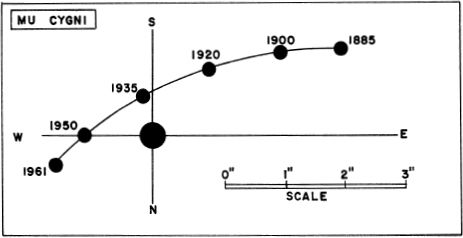
TAU Mag 3.74; spectrum FO IV. Position 21128n3749. Tau Cygni is a close visual binary star, discovered by A.G.Clark in 1874. An orbit by Van Biesbroeck gives the period as 49.8 years with retrograde motion, and periastron occurring in 1939. Although visual observers have estimated a difference of about 4 magnitudes between the components, modern measurements show that the true magnitudes are about 3.8 and 6.4. According to the orbit computations (plotted below) the semimajor axis is 0.85” and the eccentricity is about 0.24. The true separation of the pair is about 20 AU, comparable to Uranus and the Sun.
TAU Mag 3.74；频谱FO IV。位置21128n3749。Tau Cygni是近距离可见的双星，由AGClark于1874年发现。VanBiesbroeck的轨道使该周期为49.8年，发生逆行运动，并在1939年发生了星云。尽管视觉观察者估计两个分量之间的差约为4个量级。 ，现代测量结果表明，真实震级约为3.8和6.4。根据轨道计算（如下图所示），半长轴为0.85英寸，偏心率约为0.24。该对的真正分离约为20 AU，与天王星和太阳相当。
Tau Cygni is approximately 75 light years distant, giving an actual luminosity of about 15 suns. The primary shows radial velocity changes in the short period of 0.1425 days. At first attributed to rapid binary motion, the variations are now thought to originate in some type of pulsation in the atmosphere of a single star. The radial velocity is about 13 miles per second in approach, and the annual proper motion is 0.46” in PA 15°.
Tau Cygni距我们约75光年，实际发光度约为15个太阳。原边显示在0.1425天的短时间内径向速度变化。起初归因于快速的双星运动，现在人们认为这种变化是源自单颗恒星大气中某种类型的脉动。进近时径向速度约为每秒13英里，PA 15°中的年度适当运动为0.46英寸。

The 13th magnitude star at 29” (1914) is not a physical member of the system, and the separation is increasing from the proper motion of Tau itself. However, at the much larger distance of 88” in PA 185° lies a 12th magnitude star which is a true member of the system; it is an M-type red dwarf of about 1/170 the solar luminosity. The orbital period around the double primary is estimated to be about 45,000 years; the projected separation at present is just over 2000 AU.
距离29英寸（1914年）的13号恒星不是系统的物理成员，并且距Tau自身的适当运动的距离正在增加。然而，在PA 185°处88英寸的更大距离处，是一颗12级恒星，它是系统的真正成员。它是太阳光度的1/170的M型红矮星。围绕双原发的轨道周期估计约为45,000年。目前预计的分离量刚刚超过2000 AU。
CHI Variable. Position 19486n3247. This is the second of the long-period variable stars to be discovered, found by Gottfried Kirch in 1686. The star is located about 60% of the way along a line drawn from Gamma Cygni to Beta Cygni, or some 2½° SSW from Eta Cygni. The star is the brightest and most easily observed of the long-period variables, with the exception of the famous Mira (Omicron Ceti) and is often visible to the naked eye at maximum, reaching a brightness of 4th or 5th magnitude; the maximum recorded brightness is about 3.5. At minimum the star nearly always drops to below 12th magnitude, and cannot be identified among the many faint stars in the region without a detailed chart of the field. The whole area is sprinkled with myriads of distant stars, appearing like a background of luminous dust. Except when near minimum, Chi Cygni stands out vividly against this background like a glowing red beacon. The color is stronger than that of Mira, but does not, of course, equal the N-type stars.
气变量。位置19486n3247。这是第二次发现的长周期变星，由戈特弗里德·基希（Gottfried Kirch）于1686年发现。这颗恒星位于从伽玛Cygni到Beta Cygni或Eta约2½°SSW的直线上约60％的位置。西格尼 除了著名的米拉（Omicron Ceti）外，恒星是长周期变量中最亮，最容易观察到的恒星，肉眼通常最多能看到它，亮度达到4级或5级。记录的最大亮度约为3.5。至少，恒星几乎总是下降到12级以下，如果没有详细的视野图，就无法在该区域的许多微弱恒星中识别出恒星。整个区域散布着无数遥远的恒星，看起来像发光的尘埃背景。除非接近最小值 Chi Cygni在这种背景下生动地脱颖而出，就像发光的红色信标一样。颜色比Mira的颜色要强，但当然不等于N型星。
Miss Agnes Clerke (1905) referred to Chi Cygni as “a variable in the neck of the Swan, which Bayer, ignorant of its changing character, set down in his maps as of the fifth magnitude. It still retains the name he gave it of “X Cygni”. Missed by Gottfried Kirch in July 1686, it reappeared October 19, and subsequently disclosed to his vigilant watch fluctuations even wider than those of the ‘wonderful’ star in Cetus. It descends below the thirteenth and rises nearly to the fourth magnitude, sometimes indeed stopping short when barely visible to the naked eye, but more commonly remaining lucid for a couple of months. Nor is its course much better regulated as regards time. ‘Errors’ up to forty days often attach to its phases, and the attempt to correct them by the introduction of cyclical terms has proved only partially successful. The period, estimated at 402 days by Kirch, now averages 406. Olbers noticed that it had been steadily lengthening down to 1818 and is lengthening still...... As usual in such cases, the ascent to maximum is much more rapid than the descent from it, occupying at present about 171 days.”
Agnes Clerke小姐（1905年）称Chi Cygni为“天鹅脖子上的一个变量，拜耳不知道其变化的特征，在其第5级时就将其放置在他的地图中。它仍然保留了他给它的名字“ X Cygni”。它于1686年7月由Gottfried Kirch错过，于10月19日重新出现，随后向他警惕的手表透露了起伏幅度甚至超过了Cetus“奇妙”星的起伏。它下降到第十三级以下，上升到第四级，有时甚至在肉眼几乎看不到时会停下来，但更清晰的是保持了几个月。关于时间，它的过程也没有得到更好的调节。长达四十天的“错误”通常会附在其各个阶段，而通过引入周期性术语来纠正错误的尝试仅被证明部分成功。该时间由基尔希（Kirch）估计为402天，目前平均为406天。奥尔伯斯（Olbers）注意到，这一时间一直在稳定延长至1818年，并且仍在延长……下降了下来，目前约有171天。”
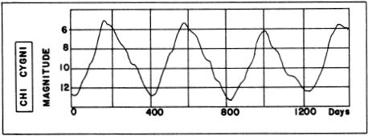

CHI CYGNI. The star is shown here on May 24, 1931 (top) and August 30, 1940 (below), Lowell Observatory photographs made with the 13-inch telescope.
CHI CYGNI。这颗恒星在1931年5月24日（上图）和1940年8月30日（下图）上显示，这是用13英寸望远镜拍摄的洛厄尔天文台的照片。
Chi Cygni has an abnormally large range in brightness, averaging about 3000 times, and occasionally exceeding 10,000 times. The mean period at present is 407 days, with considerable differences from one cycle to the next. A true red giant, the actual size probably compares with that of Mira, and is undoubtedly at least several hundred times the diameter of our Sun. It is also one of the coolest stars yet identified, with a temperature of less than 1900°K at minimum. The spectral class is given as M6e by some authorities, and S7e by others.
Chi Cygni的亮度范围异常大，平均约为3000倍，偶尔会超过10,000倍。目前的平均周期为407天，从一个周期到下一个周期有相当大的差异。一个真正的红色巨人，实际大小可能与Mira相当，并且无疑至少是我们太阳直径的数百倍。它也是迄今确定的最凉的恒星之一，最低温度低于1900°K。某些主管部门将频谱类别指定为M6e，其他权威机构将频谱类别指定为S7e。
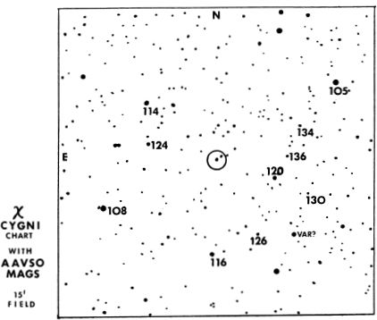

CHI CYGNI. Identification chart, made from a 13-inch telescope plate obtained at Lowell Observatory. Circle diameter = 1° with north at the top; limiting magnitude about 14.
CHI CYGNI。标识图，是从洛厄尔天文台获得的13英寸望远镜板制成的。圆直径= 1°，顶部朝北；限制幅度约为14。
The only trigonometric parallax recorded for this star appears to be one obtained at Van Vleck Observatory some years ago; the value of 0.014” gives a distance of about 235 light years. A somewhat greater distance, perhaps 300 to 400 light years is implied by the computed absolute magnitude at maximum, believed to be in the -1 to -2 range. Chi Cygni shows an annual proper motion of 0.05”; the radial velocity is about 1 mile per second in approach. (Refer also to Omicron Ceti)
记录到的这颗恒星唯一的三角视差似乎是几年前在Van Vleck天文台获得的。0.014英寸的值给出的距离约为235光年。计算的最大绝对值暗示了一个更大的距离，也许是300到400光年，被认为是在-1到-2范围内。Chi Cygni的年度正常运动为0.05英寸；进近时径向速度约为每秒1英里。（另请参阅Omicron Ceti）
31 (Omicron-1 Cygni) Position 20120n4635. Mag 3.76; spectrum gKl or K2 II. This is the primary star of a fine wide color-contrast group which forms a very attractive sight for the low power telescope. The 5th magnitude star 30 Cygni lies 338” distant, and a closer companion of the 7th magnitude is 107” away. Both stars are noticeably bluish (spectra A3 and B5) and contrast strongly with the bright golden tint of the primary. The group is probably only an optical one. 31 Cygni itself shows no measurable proper motion or parallax; the radial velocity is about 4½ miles per second in approach. For 30 Cygni the catalog values are: Annual proper motion = 0.01”; radial velocity 12 miles per second in approach; parallax = .002”.
31（Omicron-1 Cygni）位置20120n4635。马格3.76; 光谱gK1或K2 II。这是一个精细的宽色差群的主要恒星，对低倍率望远镜形成了非常吸引人的景象。一颗5级恒星30 Cygni位于338英寸远，而一颗7级恒星则距离107英寸。两颗星都明显带蓝色（光谱A3和B5），并与原色的明亮金色形成强烈对比。该小组可能只是一个光学小组。31 Cygni本身没有可测量的适当运动或视差；进近时径向速度约为每秒4½英里。对于30个Cygni，目录值为：年度适当运动= 0.01英寸；进近时的径向速度为每秒12英里；视差= .002”。
The primary star is an eclipsing variable (V695) with the long period of 10.42 years or 3802.84 days, and a magnitude range (photographic) of 4.9 to 5.3. The K-star is an orange giant with a diameter of about 150 suns; it is evidently surrounded by a huge gaseous “corona” more than double the size of the star itself. The spectral type of the small star is given by various authorities as B3, B5, or B8; the Arizona-Tonantzintla Catalogue (1965) has B3 V. The B-star may be about 5 times the size of the Sun. From the spectra, the total light of both stars is computed to be about 500 times the light of the Sun.
初级恒星是一个蚀变变量（V695），具有10.42年的长时间或3802.84天，其大小范围（照片）在4.9至5.3之间。K星是一个橙色的巨人，直径约150个太阳。它显然被巨大的气态“电晕”所包围，是恒星自身大小的两倍多。小星星的光谱类型由各种权威机构指定为B3，B5或B8；（Arizona-Tonantzintla Catalog（1965））的B3 V级星为B星，大约是太阳的5倍。根据光谱，计算出两颗恒星的总光约为太阳光的500倍。

The two stars are 1.2 billion miles apart, and the orbit is oriented nearly edge-on, so that the smaller blue star is totally eclipsed by the giant once in each revolution. This phenomenon begins with an “atmospheric eclipse” in which the radiation of the small star must come through gradually deeper layers of the giant’s atmosphere. Total eclipse lasts for 63 days; the atmospheric eclipses each last about 2½ months. Dates of beginning of totality are: January 10, 1962, June 9, 1972, etc.
这两颗恒星相距12亿英里，并且轨道几乎处于边缘定位，因此较小的蓝恒星在每次旋转中一次都完全被巨星黯然失色。这种现象始于“日食”，其中小恒星的辐射必须穿过逐渐变深的巨型大气层。日全食持续63天；每个月食持续约2½个月。总计开始的日期是：1962年1月10日，1972年6月9日，等等。
32 (Omicron-2 Cygni) Position 20139n4735. Magnitude 3.97; spectrum K3 Ib + A3. This is a giant binary system and an eclipsing variable of small amplitude. The primary is a K-giant probably about 200 times the size of the Sun; it is a low temperature yellow-orange star surrounded by a deep and extensive atmosphere. Orbiting the star at a distance of some 550 million miles is the smaller bluish companion, apparently a normal A-type star about 5 times the size of the Sun. The period of the pair is 3.15 years or 1148 days. From the derived luminosities, the distance of the system appears to be in the range of 500 to 600 light years. 32 Cygni shows an annual proper motion of only 0.007% and a radial velocity of about 8½ miles per second in approach. The total absolute magnitude may be about -3.5.
32（Omicron-2 Cygni）位置20139n4735。大小3.97; 光谱K3 Ib + A3。这是一个巨大的二进制系统，并且振幅小。主要的是一个K型巨人，大约是太阳大小的200倍。它是低温橙黄色的恒星，周围环绕着深深的大气层。较小的带蓝色的伴星绕着恒星旋转，距离约5.5亿英里，显然是一颗普通的A型恒星，大约是太阳大小的5倍。货币对的期限为3.15年或1148天。根据得出的光度，系统的距离似乎在500到600光年的范围内。32 Cygni表示，进近时的年度固有运动仅为0.007％，径向速度约为每秒8½英里。总的绝对大小可以是大约-3.5。
Total eclipse occurs when the smaller star passes behind the giant, and is preceded and followed by the usual “atmospheric eclipses” lasting a little more than a month each. Totality lasts 11 days. The first such eclipse of 32 Cygni was observed at the University of Michigan Observatory on November 1, 1949, when it was discovered that the light of the A-star had vanished from the spectrum. It began to reappear about 10 days later, and the now familiar spectral changes made it possible to picture the “rising” of the eclipsed star above the giant’s atmosphere, a process which took more than a month to complete. This system is very similar to the star 31 Cygni, which lies only 1° away, to the south, and also to the well known Zeta Aurigae. Comparison of the light curves and spectra would suggest that 32 Cygni has the more extensive atmosphere, and that the eclipses are nearly grazing while those of Zeta Aurigae are nearly central. The photographic range of 32 Cygni is 5.3 to 5.6.
当较小的恒星从巨星后面经过时，就会发生全蚀，然后是通常的“大气蚀”，前后每次持续一个多月。总计持续11天。1949年11月1日，在密歇根大学天文台观察到了32次Cygni的首次月蚀，当时发现A星的光从光谱中消失了。大约10天后，它开始重新出现，现在熟悉的光谱变化使得可以对黯淡的恒星在巨人大气层上方“上升”，这一过程耗时一个多月才完成。该系统与南半球31 Cygni恒星非常相似，南半球也与著名的Zeta Aurigae相距仅1°。通过比较光曲线和光谱，可以看出32 Cygni的大气范围更广，并且日食几乎处于放牧状态，而Zeta Aurigae的日食则处于中心位置。32 Cygni的摄影范围是5.3至5.6。
Just 45’ to the east and slightly north lies the very red N-type variable U Cygni, its ruddy glow forming a striking contrast with a 7.8 mag bluish star 65” distant.
东侧和北侧仅45'处是非常红色的N型变量U Cygni，其红润的光辉与7.8 mag蓝的恒星65“形成了鲜明的对比。
61 Position 21044n3828. A very famous and noteworthy double star, particularly suited for small instruments, and historically one of the most interesting objects in the heavens. The components are in very slow orbital revolution, requiring some 7 centuries to complete. Computed periods of 720 and 691 years have been quoted in many current texts; the most reliable modern orbit, however, is probably that derived by E.de Caro and G. Veca (1948) which gives a period of 653 years. The components were closest (11”) in 1650, and will reach their maximum separation of 34” around the year 2100 AD. Other orbit elements are: Semimajor axis = 24.3”; eccentricity = 0.40; and periastron in the year 1676. Facts of interest about the two stars are given in the table:
61位置21044n3828。一颗非常著名且引人注目的双星，特别适用于小型乐器，并且是历史上最有趣的物体之一。这些组件的轨道旋转非常缓慢，需要大约7个世纪才能完成。当前的许多文献中都引用了720年和691年的计算周期。但是，最可靠的现代轨道可能是E.de Caro和G. Veca（1948）得出的，其周期为653年。组件在1650年最接近（11“），并将在公元2100年左右达到最大间隔34”。其他轨道元素是：半长轴= 24.3英寸；偏心率= 0.40; 以及1676年的天文星云。有关两颗星的有趣事实在下表中给出：
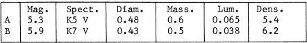
Both components show a fine orange tint in the small telescope, and both are dwarf stars, smaller and fainter than the Sun, with absolute magnitudes of +7.8 and +8.4. The average separation is about 84 AU.
这两个组件在小型望远镜中都显示出橙色的细微色调，并且都是矮星，比太阳还小和暗，绝对星等为+7.8和+8.4。平均间隔约为84 AU。
6I Cygni became famous as early as 1792, when Piazzi detected the abnormally large proper motion of 5.22” per year (PA = 52°) and christened it “The Flying Star”. The first measurements of the star as a double, however, seem to have been made by F.G.W.Struve in 1830. In 1838 the star was chosen by F.W.Bessel for the first successful attempt to measure the actual distance of a star by trigonometrical methods. Bessel was able to detect and measure the tiny parallax of about 0.29”, and calculated the distance to be 10.3 light years. The presently accepted value is 11.1 light years. Among all the naked-eye stars 61 Cygni is the fourth nearest to the Earth; probably only Sirius, Alpha Centauri, and Epsilon Eridani are closer. The large proper motion is thus partly a result of the relatively small distance, combined with a rather high space velocity. The radial velocity of the system is 38 miles per second in approach.
6I Cygni早在1792年就闻名于世，当时Piazzi发现每年5.22英寸的异常大的正常运动（PA =52度）并将其命名为“飞行之星”。但是，FGWStruve在1830年首次对恒星进行了两次测量。1838年，FWBessel选择了该恒星，这是首次成功尝试通过三角函数法测量恒星的实际距离。贝塞尔能够检测和测量约0.29英寸的微小视差，并计算出该距离为10.3光年。当前接受的值为11.1光年。在所有裸眼星中，西格尼星（Cygni）中的61位是距地球最近的第四位；可能只有天狼星（Sirius），半人马座（Alpha Centauri）和埃普西隆（Epsilon）Eridani更近。因此，较大的固有运动部分是由相对较小的距离以及较高的空速引起的。系统进近时的径向速度为每秒38英里。
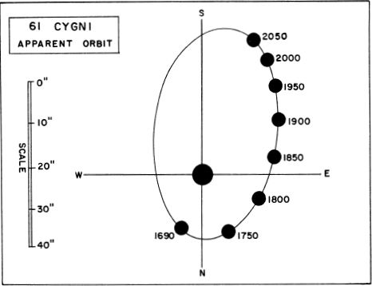
In addition to the two visible components of this famous binary, there is an unseen third body, detected by small systematic variations in the orbits of the visible pair. This object, now called 61 Cygni C, is of greatest interest since it is only some 8 times as massive as our greatest planet Jupiter, and there is some question as to whether it should be regarded as a star or a planet. It revolves with one of the visible stars, apparently the A-component, in a period of 4.8 years. Its actual size is not known, but theoretical calculations suggest that it may be less than a tenth the diameter of our Sun. In any case, an object of such small mass would be expected to be non-luminous.
除了这个著名的双星的两个可见分量之外，还有一个看不见的第三体，可以通过可见对轨道的系统微小变化来检测。现在被称为61 Cygni C的这个物体引起了极大的兴趣，因为它的质量只有我们最大的木星木星的8倍左右，因此对于将其视为恒星还是行星存在一些疑问。它与其中一颗可见恒星（显然是A分量）一起旋转，历时4.8年。它的实际大小未知，但是理论计算表明它可能小于太阳直径的十分之一。无论如何，如此小质量的物体都是非发光的。

61 CYGNI. The noted binary is shown here in 1916 and 1948; illustrating the proper motion over an interval of 32 years. These photographs were made with the 42-inch reflector at Lowell Observatory.
61 CYGNI。1916年和1948年在此处显示了该二进制文件。说明间隔32年的正确运动。这些照片是用洛厄尔天文台的42英寸反射镜拍摄的。
The existence of the mysterious dark companion was first detected by K.A.Strand at Dearborn Observatory in 1942. In an article in “Sky & Telescope” for December 1956 further information on this interesting object is given as follows:
1942年，KAStrand在迪尔伯恩天文台首次发现了神秘暗伴侣的存在。1956年12月，在《天空与望远镜》的一篇文章中，有关这个有趣物体的更多信息如下：
“Dr.Strand has now completed fourteen additional years of observation and analysis that confirm the existence of the dark companion. It moves with a period of 4.8 years... its mass is 0.008 that of the Sun, or only 8 times the mass of Jupiter. Dr.Strand pointed out that the unseen 61 Cygni C could be regarded either as an exceptionally small star or as a planetary companion.”
斯特兰德博士现在已经完成了十四年的观察和分析，证实了黑暗伴侣的存在。它的运动周期为4.8年...它的质量是太阳的0.008，仅是木星质量的8倍。斯特兰德博士指出，看不见的61 Cygni C可能被视为极小的恒星或行星伴侣。”
It is interesting to note that similar bodies seem to exist in several other star systems. The fourth nearest of the stars, Lalande 21185 in Ursa Major, is a famous case; the unseen companion has a period of about 8 years and a mass of about 1/100 that of the Sun. Perhaps the most remarkable of such objects is the unseen companion to the second nearest star, Barnard’s Star in Ophiuchus. According to P.van de Kamp (1963) the invisible body has a mass of about 1½ times the mass of Jupiter, and a period of 24 years. There seems to be no doubt that such a body should be called a planet.
有趣的是，在其他几个恒星系统中似乎也存在类似的天体。排名第四的恒星是Ursa Major的Lalande 21185，这是一个著名的案例。看不见的伴星的周期约为8年，质量约为太阳的1/100。这些物体中最引人注目的也许是与第二近的恒星，蛇夫座的巴纳德恒星看不见的伴侣。据P.van范德坎普（1963）无形的身体有一个质量约1 ½木星质量倍，并在一段24年。毫无疑问，这样的物体应该被称为行星。
These unseen companions are all less massive than any known star. The smallest stellar masses actually observed are those of the binary L726-8 (UV Ceti system) where each component has a mass of 40 times that of Jupiter, or a total of 0.08 the solar mass for the system. For Ross 614b and Krueger 60b the figures are 0.08 and 0.14 the solar mass, respectively. Up to 1966 these were the least massive stars known. but it is likely that such objects as Proxima Centauri and Van Biesbroeck’s Star in Aquila have even smaller masses. In the most extreme cases, where the masses are 0.02 or less, the “star” would be unable to sustain any nuclear reactions in its interior, and would never become self-luminous. Thus there is some theoretical justification for considering objects of still smaller masses as planets, rather than true stars. (Refer also to Barnard’s Star in Ophiuchus, and Lalande 21185)
这些看不见的同伴都没有任何知名的恒星那么大。实际观测到的最小恒星质量是二元L726-8（UV Ceti系统）的质量，其中每个成分的质量是木星质量的40倍，或者该系统的太阳质量总计0.08。对于Ross 614b和Krueger 60b，数字分别为太阳质量的0.08和0.14。直到1966年，这些都是已知的质量最小的恒星。但像Proxima Centauri和Van Biesbroeck的《天鹰座之星》这样的物体的质量可能更小。在最极端的情况下，质量等于或小于0.02，“恒星”将无法维持其内部的任何核反应，并且永远不会自发光。因此，将质量较小的天体视为行星而不是真正的恒星有一些理论上的证明。
P (34 Cygni) Magnitude 4.88; spectrum Bl eq. Position 20159n3753. Sometimes called “Nova Cygni #1. This is a remarkable variable which might be called a “permanent nova”. It was first seen in the year 1600 as a 3rd magnitude star where none had been noticed before. Possibly the earliest well-documented observation was that made by the Dutch astronomer and mathematician Willem Blaeuw of Amsterdam, in August 1600. An astronomical globe made by Blaeuw about 1640, and now in the Museum of National Literature in Prague, contains an inscription referring to the star, as follows:
P（34 Cygni）幅度4.88; 频谱Bl eq。位置20159n3753。有时称为“ Nova Cygni＃1。这是一个了不起的变量，可以称为“永久新星”。它最初是在1600年被视为三等星，以前从未有人注意到。最早有据可查的观测是由荷兰天文学家和数学家威廉·布莱乌（Willem Blaeuw）于1600年8月所做的观察。布莱乌（Blaeuw）于1640年左右制作的天文地球仪，现在在布拉格的国家文学博物馆中，都包含有一个题词。星星，如下所示：
“The new star in Cygnus that I first observed on August 8, 1600, was initially of the 3rd magnitude. I determined its position.... by measuring its distance from Vega and Albireo. It remains in this position but now is no brighter than 5th magnitude.”
“我于1600年8月8日首次观测到的天鹅座新星最初为3级。我通过测量它与Vega和Albireo的距离来确定它的位置。它保持在这个位置，但现在不比第5级亮。”
The star remained bright for about 6 years, then faded gradually, reaching 6th magnitude in 1620, and dropping below naked-eye visibility in 1626. From 1626 to 1654 it remained invisible, but brightened again about 1655 and eventually rose to magnitude 3.5 where it remained until 1659. Three years later it had vanished again, but rose once more in 1665 and after numerous fluctuations became steady at 5th magnitude in 1715. It has remained at that brightness ever since.
这颗恒星保持了大约6年的亮度，然后逐渐衰落，在1620年达到6级，并在1626年降至肉眼可见度以下。从1626年到1654年，它一直不可见，但在1655年再次变亮，最终升至3.5级。一直保持到1659年。三年后，它又消失了，但在1665年又一次上升，在1715年无数次波动稳定在5级之后，一直保持这种亮度。
In spite of its popular title, there seems to be no real reason to class P Cygni among the true novae; modern studies suggest instead that it is one of the high-luminosity ejection variables as typified by the enigmatic Eta Carinae. C.P.Gaposchkin refers to it as “a bright star which underwent something akin to shell activity when it brightened to 3rd magnitude in 1600”. The evidence for a surrounding expanding shell is still evident in the strange spectrum of the star; the emission lines are bordered on their violet edges by sharp absorption lines, and the spectral peculiarities seem to imply that the outer regions of the shell are expanding more rapidly than the inner. The acceleration is most probably caused by radiation pressure and the star seems to be losing about 1/100,000 of its mass each year in this way.
尽管冠名很高，但似乎没有真正的理由将P Cygni列为真正的新星。相反，现代研究表明，它是高亮度射出变量之一，以神秘的Eta Carinae为代表。CPGaposchkin将其称为“一颗明亮的恒星，它在1600年增至3级时经历了类似于壳活动的事情”。在奇怪的恒星光谱中仍然可以看到围绕着膨胀壳的证据。发射线在它们的紫色边缘上被尖锐的吸收线所包围，并且光谱的特殊性似乎暗示着外壳的外部区域比内部区域更快地膨胀。加速极有可能是由辐射压力引起的，而这种恒星似乎每年以这种方式失去质量的大约1 / 100,000。
The star is evidently very remote, but the true distance is not well known. A distance of about 3000 light years has been tentatively accepted for some years, but has recently been challenged on the basis of studies of galactic structure. It seems that the star may be a member of the Cygnus star cloud which marks one of the spiral arms of the galaxy, and the distance might then be as much as 7000 light years, raising the apparent absolute magnitude to -6.8. After a further correction for absorption the true absolute magnitude would be something like -8.9, which would make the star one of the most luminous objects known, even in its present state. The peculiar “nova” Eta Carinae is one of the few objects which attained a comparable luminosity, and which may be a very similar type of star.
这颗恒星显然很遥远，但是真正的距离却并不为人所知。约3000光的距离几年来已被初步接受，但最近在银河结构研究的基础上受到了挑战。看来这颗恒星可能是天鹅座星云的成员，它标志着银河系的旋臂之一，距离可能多达7000光年，从而将表观绝对星等提高到-6.8。经过进一步的吸收吸收校正后，真实的绝对大小将约为-8.9，这将使该恒星成为已知的最发光的物体之一，即使在其当前状态下也是如此。奇特的“新星” Eta Carinae是获得可比的光度的少数几个物体之一，并且可能是非常相似的恒星。
The measured annual proper motion of P Cygni is 0.01”; the radial velocity is about 5½ miles per second in approach. (Refer also to Eta Carinae)
测得的P Cygni的年度固有运动为0.01英寸；进近时径向速度约为每秒5.5英里。（另请参阅Eta Carinae）

P CYGNI FIELD. Circle diameter = 1°. Comparison magnitudes are: A= 7.1; B= 7.2; C= 7.4; D= 8.2; E= 8.6; F= 9.0; G= 9.3; H= 9.6; J= 10.1; K= 10.8.
P CYGNI场。圆直径= 1°。比较幅度为：A = 7.1；B = 7.2；C = 7.4；D = 8.2；E = 8.6；F = 9.0；G ＝ 9.3；H ＝ 9.6； H ＝ 9.6。J = 10.1；K = 10.8。
Y Position 20501n3428. Spectrum 09.5 or BO IV. Y Cygni is a massive binary system, claimed by a few authorities to be the equal of A0 Cassiopeiae and UW Canis Majoris; it is, at any rate a gigantic system by any other standards. The star is located approximately 1.3° NE of Epsilon Cygni, and consists of two giant 0 or B-stars orbiting each other in a period of 2.99633 days, mutually eclipsing each other at every revolution. The light variations were first detected by S.C.Chandler at Harvard in 1886.
Y位置20501n3428。频谱09.5或BO IV。西格尼（Y Cygni）是一个巨大的二元系统，一些权威人士称其等同于A0卡西皮亚科和UW Canis Majoris；无论如何，它是任何其他标准的巨大系统。这颗恒星位于厄普西隆Cygni的NE附近，为1.3°，由两颗绕星运行的大的0或B恒星组成，绕地周期为2.99633天，每旋转一圈便相互遮盖。光线变化最早是由SCChandler在1886年在哈佛发现的。
Each star is some 5 million miles in diameter and possibly about 5000 times more luminous than the Sun; current studies suggest an absolute magnitude of about -4.5 for each star and a diameter of about 5.9 times that of the Sun. From the orbital elements the computed masses are 17.3 and 17.1 times the solar mass, and the separation of the components (center-to-center) is just over 12 million miles. The orbit has the rather small eccentricity of 0.13. From the derived luminosities the distance of Y Cygni may be something like 9000 light years. R.O.Redman (1930) has found some evidence for a third body in the system. (See also A0 Cassiopeiae and UW Canis Majoris)
每颗恒星的直径约为500万英里，其发光能力可能是太阳的5000倍。当前的研究表明，每颗恒星的绝对大小约为-4.5，直径约为太阳的5.9倍。从轨道元素算出的质量是太阳质量的17.3倍和17.1倍，并且各组成部分（中心到中心）的距离刚刚超过1200万英里。轨道的偏心率很小，为0.13。根据得出的光度，Y Cygni的距离可能约为9000光年。RORedman（1930）发现了系统中第三个物体的一些证据。（另请参阅A0蟹足科和UW马尼斯犬）
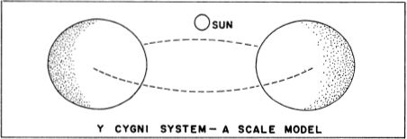
SS Position 21407n4321. A peculiar dwarf variable star of the U Geminorum type, discovered by Miss L.D.Wells at Harvard in 1896. It is the brightest known example of a class of stars called “cataclysmic variables” or “dwarf novae”, and presents the entertaining and intriguing spectacle of frequent novalike explosions which occur very suddenly, several times a year. The star is normally of the 12th magnitude, but at intervals which vary between 20 and 90 days it suddenly brightens to the 8th magnitude. The light increase thus amounts to about 40 times and is usually accomplished in a period of scarcely more than a day or two. The average interval between the outbursts is approximately 51 days. For observers with small telescopes, SS Cygni is the classic example of this erratic variety of star, and certainly the most rewarding object of its type. The total number of recorded observations of the star is now close to 100,000, and it is believed that not a single maximum has been missed since discovery in 1896.
SS位置21407n4321。LDWells小姐于1896年在哈佛大学发现的一种奇异的U Geminorum矮变星。它是已知的最明亮的一类恒星，被称为“催化变星”或“矮新星”，并呈现出有趣而引人入胜的奇观。频繁的新星状爆炸，每年突然发生几次。恒星通常为12级，但间隔在20到90天之间，突然变亮为8级。因此，光的增加总计约为40倍，通常在几乎不超过一两天的时间内完成。两次爆发之间的平均间隔约为51天。对于使用小型望远镜的观察者来说，SS Cygni是这种恒久变化的恒星的经典例子，并且无疑是同类望远镜中最有价值的天体。


SS CYGNI. The famous “dwarf nova” is shown here during one of its frequent explosions, in July 1960. These photographs were made with the 13-inch telescope at Lowell Observatory.
SS CYGNI。在1960年7月的一次频繁爆炸中，这里显示了著名的“矮新星”。这些照片是用洛厄尔天文台的13英寸望远镜拍摄的。
SS Cygni exhibits two types of maxima: a wide maximum of about 18 days duration, and a narrow maximum of some 8 days duration. The two types usually occur alternately, though at times two maxima of the same type will occur in succession. Both types are shown on the accompanying light curves. A third type of maximum, called “anomalous”, occurs at rarer intervals; it is wide and rather symmetrical in outline, with a comparatively slow rise to maximum.
SS Cygni表现出两种最大值：持续时间约18天的宽最大值和持续时间约8天的窄最大值。两种类型通常交替出现，尽管有时同一类型的两个最大值会连续出现。两种类型都显示在随附的光曲线上。第三种最大值称为“异常”，发生的间隔较少。它很宽，轮廓相当对称，上升到相对缓慢。
SS Cygni has a peculiar spectrum, resembling class G at minimum, but with a continuous background which gains greatly in intensity during an outburst. From spectroscopic observations made at Mt.Wilson in 1956, it is now known that SS Cygni is actually a binary star. One component is a yellowish dwarf of the solar type which has been classed as dG5, the other is a hot bluish star which is definitely underluminous and may be related to the white dwarfs. It has been classed as “sdBe”. The two stars complete their orbital revolution in the astonishingly short period of 0.276244 days, or slightly over 6½ hours. This is one of the shortest orbital periods known, and implies that the components must be of abnormally small size and revolve nearly in contact.
SS Cygni具有独特的光谱，至少类似于G级，但具有连续背景，在爆发时强度会大大提高。从1956年在威尔逊山进行的光谱观察，现在知道SS Cygni实际上是双星。一个成分是太阳类型的淡黄色矮星，已被分类为dG5，另一个成分是炽热的蓝色恒星，其绝对发光，可能与白矮星有关。它已被分类为“ sdBe”。这两颗恒星在惊人的0.276244天（即略超过6½小时）内完成了轨道旋转。这是已知的最短轨道周期之一，这意味着这些组件的尺寸必须异常小，并且几乎在接触时旋转。
Current studies suggest that each component may have about half the mass of the Sun, and that the diameters may be about 0.9 and 0.1 the solar diameter, for the yellow and blue stars respectively. The surface-to-surface separation is believed to be 100,000 miles or less. At the present time these figures are somewhat uncertain. During an outburst the faint spectrum of the yellow star is more or less obliterated by the strong, nearly continuous spectrum of the hot star, which at this time resembles class A0. The blue star seems to be erratically variable even at minimum, since rapid fluctuations have been recorded by several observers. Some of these variations show a wavelike period of 2 or 3 hours, while others last less than 10 minutes. The average amplitude, in both cases, is on the order of 0.2 magnitude.
当前的研究表明，对于黄色和蓝色恒星，每个分量的质量可能约为太阳的一半，并且直径可能分别约为太阳直径的0.9和0.1。认为表面间的距离为100,000英里或更短。目前，这些数字尚不确定。在爆发期间，黄星的微弱光谱或多或少地被热星的强，近乎连续的光谱所遮盖，此时的光谱类似于A0级。蓝星即使在最小的情况下也似乎是不稳定的，因为一些观察者已经记录到了快速的波动。其中一些变化显示2到3个小时的波浪形周期，而其他变化持续不到10分钟。在两种情况下，平均幅度都在0.2量级。
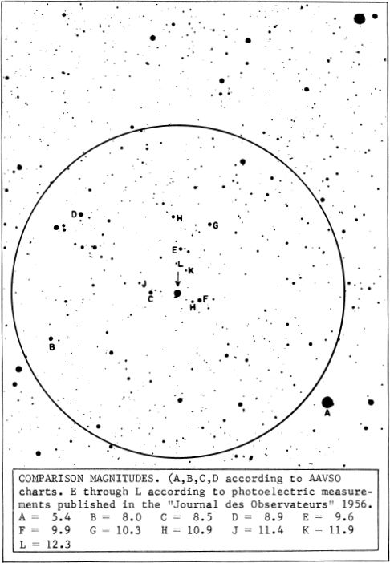
SS CYGNI-Identification chart made from a 13-inch telescope plate at Lowell Observatory. Circle diameter = 1° ; north is at the top. Limiting magnitude about 14. Bright star “A” is 75 Cygni, magnitude 5.4.
洛厄尔天文台的13英寸望远镜板制作的SS CYGNI识别表。圆直径= 1°；北部在顶部。极限星等约为14。亮星“ A”为75 Cygni，星等为5.4。
The bluish star is the component usually thought to be responsible for the novalike behavior of SS Cygni. However, the correctness of this view has recently been questioned following a study by W.Krzeminski (1965) of the very similar star U Geminorum. In this system the two stars form an eclipsing binary system which makes it possible to gain more information concerning the physical characteristics - sizes, separation, etc. - than in the case of SS Cygni. Krzeminski finds evidence that the outbursts of U Geminorum probably originate in the redder component - in some manner which is still not at all clear - rather than in the blue dwarf. If further research supports this view, a new picture of these stars will begin to emerge, a picture in which the red component is possibly “triggered” to violent flares by some effect connected with the nearby hot companion.
蓝星是通常被认为与SS Cygni的新星行为有关的成分。但是，W.Krzeminski（1965）对非常相似的恒星U Geminorum的研究之后，这种观点的正确性最近受到质疑。在这个系统中，两颗恒星形成了一个黯淡的双星系统，这使得有可能获得有关物理特性（大小，间距等）的更多信息。-比SS Cygni的情况要好。Krzeminski发现证据表明，Geminorum的爆发可能是由红色部分引起的-某种程度上仍不清楚，而不是蓝色矮人。如果进一步的研究支持这种观点，这些恒星的新图片将开始出现，其中的红色成分可能会通过与附近热伴的某种影响而“触发”为剧烈的耀斑。
W.J.Luyten (1965) has measured an annual proper motion of 0.12” for SS Cygni, the largest motion so far recorded for any star of this type. Evidently the star is at no great distance. A parallax determination by K.Strand agrees well with an earlier determination by P.P.Parenago and B.V.Kukarkin, and leads to a distance of 90 or 100 light years. Resulting absolute magnitudes for the system are:
WJLuyten（1965）测量到SS Cygni的年固有运动为0.12英寸，这是迄今为止记录到的任何此类恒星的最大运动。显然，这颗星星距离不远。K.Strand的视差测定与PPParenago和BVKukarkin的较早测定非常吻合，并导致了90或100光年的距离。系统的绝对绝对值是：
At minimum: +9.5 (Luminosity = 0.0145 X Sun)
至少：+9.5（光度= 0.0145 X太阳）
At maximum: +5.6 (Luminosity = 0.5236 X Sun)
最多：+5.6（光度= 0.5236 X太阳）
The blue component thus appears to have an absolute magnitude fainter than 10, which places it virtually in the realm of the white dwarfs. Even at maximum the luminosity is only about half that of our Sun. Similar results have been obtained for another well-known star of the type, U Geminorum, and it is now certain that these stars are a few thousand times fainter than the true novae and the recurrent novae. But this does not rule out the possibility that the three types of exploding stars form some sort of developmental sequence, or at least that the same general process is operating in all cases. The central question, of course, remains: In which direction would such an evolution proceed? Is SS Cygni on its way to becoming a full scale nova? Or is it now dying out after having been one at some time in the past? Or are the SS Cygni outbursts much less violent than those of the classical novae merely because the stars are much less massive? If so, it may be that the various types of stellar explosions are produced by a similar mechanism, but do not necessarily form an evolutionary sequence.
因此，蓝色分量的绝对量级似乎小于10，这实际上使它处于白矮星的境界。即使最大，其光度也仅是我们太阳光度的一半。对于另一颗著名的U Geminorum型恒星，也获得了相似的结果，现在可以确定这些恒星比真正的新星和复发的新星微弱数千倍。但这并不排除三种类型的爆炸恒星形成某种发育序列的可能性，或至少相同的一般现象。流程在所有情况下都在运行。当然，中心问题仍然是：这样的演变将朝哪个方向进行？SS Cygni是否正在走向全面的新星？还是在过去某个时候就消失了呢？还是仅仅因为恒星的质量就不那么大，SS Cygni的爆发就比传统新星爆发的暴力少了？如果是这样，可能是各种类型的恒星爆炸是通过类似的机制产生的，但不一定形成进化序列。
Several investigators have pointed out that the SS Cygni stars display a “period-luminosity relationship” in which the stars with longer average periods show the greater range in magnitude during an outburst. This relation has been extended to cover the recurrent novae, though with uncertain success, since only 7 stars of the type are now known, and only a few have been thoroughly studied. But from the available data, it seems that the relationship holds true reasonably well. This implies that these two classes of exploding stars are members of the same physical group, since the total amount of energy released in a given interval of time seems to be a constant. Whether the full-scale novae follow the same rule is an unsolved question.
一些研究人员指出，SS Cygni星表现出“周期-光度关系”，其中平均周期较长的星在爆发期间表现出更大的幅度范围。这种关系已经扩展到涵盖复发的新星，尽管取得了不确定的成功，因为现在仅知道该类型的7个恒星，并且只对其中的几个进行了彻底的研究。但是从现有的数据来看，这种关系似乎是正确的。这意味着这两类爆炸恒星是同一物理组的成员，因为在给定的时间间隔内释放的总能量似乎是一个常数。完整的新星是否遵循相同的规则是一个尚未解决的问题。
A fact of great interest is the binary nature of SS Cygni, a characteristic which seems to be shared by all other stars of the type. U Geminorum is apparently a very similar system; SS Aurigae and AE Aquarii are other well studied examples. In such stars as Z Andromedae and R Aquarii, a hot bluish dwarf appears to be mated with a red giant. These “symbiotic stars” are represented also among the recurrent novae such as T Coronae and RS Ophiuchi, both known to be close binary systems. The great similarity in all these systems is unlikely to be coincidental, and it appears almost certain that the outbursts are in some way related to the presence of a close companion. This was first suggested for the variations of AE Aquarii, not strictly a true SS Cygni type star, but clearly a member of the same general physical group. (Refer also to U Geminorum, SS Aurigae, SU Ursa Majoris, AE Aquarii, T Coronae Borealis, RS Ophiuchi, and WZ Sagittae. For an account of novae in general, see Nova Aquilae 1918)
一个非常有趣的事实是SS Cygni的双星性质，这一特征似乎被该类型的所有其他恒星所共有。U Geminorum显然是一个非常相似的系统；SS Aurigae和AE Aquarii是其他经过充分研究的示例。在Z Andromedae和R Aquarii等恒星中，一个炽热的蓝矮星似乎与一个红色巨星交配。这些“共生星”也出现在周期性新星中，例如T Coronae和RS Ophiuchi，它们都被称为近距离双星系统。所有这些系统之间的巨大相似性不太可能是偶然的，并且几乎可以肯定的是，爆发在某种程度上与亲密伴侣的存在有关。最初是针对AE Aquarii的变体提出的，这并不是严格意义上的真正的SS Cygni型恒星，而是显然属于同一常规物理组的成员。（另请参阅U Geminorum，SS Aurigae，SU Ursa Majoris，AE Aquarii，T Coronae Borealis，RS Ophiuchi和WZ Sagittae。有关新星的一般信息，请参见新星天鹰座1918年）
BF Position 19219n2934. A peculiar variable star belonging to the rare class called “symbiotic stars”, of which R Aquarii seems to be the prototype. The variations in brightness often occur in a fairly regular cycle of about 750 days, though on occasion the star has remained nearly constant for as long as 6 years (1929-1935) The range during any one cycle is about a magnitude, but the mean brightness varies from one cycle to the next so that the total amplitude is about 4 magnitudes.
BF位置19219n2934。属于稀有类别的奇特变星称为“共生星”，R Aquarii似乎是其中的原型。亮度的变化通常在大约750天的相当规则的周期内发生，尽管有时恒星在近6年（1929-1935年）内几乎保持恒定，但任何一个周期的范围大约都是一个数量级，但平均值亮度从一个周期到下一个周期变化，因此总振幅约为4个量级。
The star is easily located in the field of the bright star 2 Cygni, which is magnitude 4.9. In the chart below, the portions of the circle represent the usual 1° field, with north at the top. The total magnitude range of BF itself is about 9.3 to 13.
恒星很容易位于明亮的恒星2 Cygni的视场中，其强度为4.9。在下面的图表中，圆圈的各个部分代表通常的1°场，北为顶部。高炉本身的总大小范围约为9.3至13。
Like all the symbiotic stars, the spectrum is composite, the brighter star showing a B-type spectrum with emission lines. The companion is a red giant of type M4. Most of the variations are attributed to the B-star, whose spectrum normally dominates, but it is likely that the red star varies also. The star grows bluer as it brightens.
像所有共生恒星一样，光谱是复合的，明亮的恒星显示带有发射线的B型光谱。伴侣是M4型的红色巨人。大多数变化归因于B星，其光谱通常占主导地位，但红色星也可能会变化。恒星变亮时变蓝。
The spectrum shows many complex irregularities which are difficult to interpret. The bright lines change in intensity and displacement in a sudden and unpredictable manner. Both stars appear to be imbedded in a diffuse nebulosity whose spectral features vary greatly in intensity. The computed density of the cloud is much higher than that of a typical planetary nebula, and is comparable to that of a nova shell; its radius may be about 10,000 times that of the Sun. The cloud has presumably originated in outbursts of the B-star, suggesting the possibility of some connection with the novae. (Refer also to R Aquarii and Z Andromedae)
光谱显示出许多难以解释的复杂不规则现象。亮线以突然且不可预测的方式改变强度和位移。两颗恒星似乎都埋在弥散的星云中，其光谱特征在强度上变化很大。计算得出的云密度远高于典型的行星状星云，并且可以与新星壳相媲美。它的半径大约是太阳的10,000倍。推测云是起源于B星的爆发，这表明可能与新星有某种联系。（另请参阅R Aquarii和Z Andromedae）
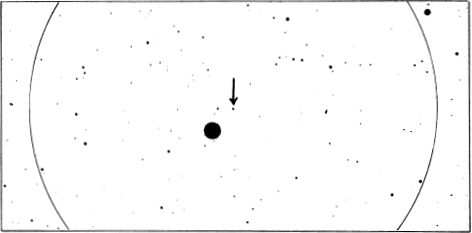

V444 Position 20177n3834. An eclipsing binary system of special interest, one of the few binaries known in which one component is a Wolf-Rayet star. It was the first such case to be discovered, found in 1937 by O.C.Wilson and identified as an eclipsing system by S. Gaposchkin in 1940. The period of revolution is 4.21238 days and the eclipses are partial with the rather small amplitude of 0.3 magnitude. As in many giant binaries of this type, there is some uncertainty about the actual sizes and masses of the components, due to a distortion of the radial velocity measurements by moving gas streams encircling the stars. From a summary of current evidence the following table has been compiled:
V444位置20177n3834。一种具有特殊意义的日食双星系统，是已知的少数几个其中一个成分是沃尔夫-雷耶特星的双星之一。这是第一个被发现的此类案例，由OCWilson于1937年发现，并在1940年被S. Gaposchkin识别为日蚀系统。旋转周期为4.21238天，日蚀是局部的，幅度很小，为0.3级。像在许多此类大型双星中一样，由于移动绕着恒星流的气流引起的径向速度测量值的失真，因此组件的实际大小和质量存在一些不确定性。根据当前证据的汇总，已编制了下表：

The two stars are about 17 million miles apart, the total absolute magnitude of the system is -5.0, and the computed distance is about 4900 light years. The W-star is naturally the unusual member of the pair, and the system has been much studied by astronomers interested in the peculiar features of the Wolf-Rayet stars. These strange objects show spectra characterized by many broad bright bands, revealing the existence of a large and turbulent shell of expanding gas surrounding the star. Wolf-Rayet stars are highly luminous and undoubtedly rather massive stars; they are also among the hottest stars known. The brightest member of the class is the 2nd magnitude star Gamma Velorum.
两颗星相距约1,700万英里，系统的总绝对大小为-5.0，计算出的距离约为4900光年。W恒星自然是这对恒星中不寻常的成员，并且对该系统进行了很多研究，他们对Wolf-Rayet恒星的特殊特征感兴趣。这些奇特的物体显示出具有许多宽亮带特征的光谱，表明存在围绕恒星的膨胀气体的大型湍流壳。Wolf-Rayet恒星是高度发光的，无疑是相当大的恒星。他们也是最著名的明星之一。该等级中最亮的成员是二等星Gamma Velorum。
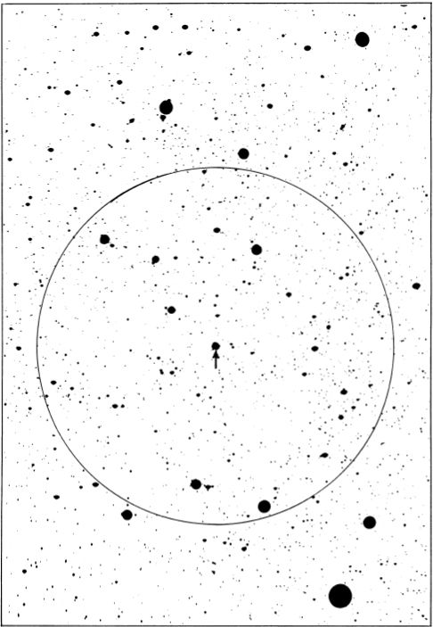
V444. Identification field, from a Lowell Observatory 13-inch telescope plate. Circle diameter = 1° with north at the top. The bright star at lower right is the famous novalike variable P Cygni.
V444。来自洛厄尔天文台13英寸望远镜板的识别场。圆直径= 1°，顶部朝北。右下角的亮星是著名的新星状变星P Cygni。

In the system of V444 Cygni, the W-star has a computed diameter of about 2.3 suns, but is surrounded by a gaseous shell about 3 times the size of the star itself. This shell is luminous and partially transparent, and is in turn enclosed by an outer thinner shell of rarified material, about 8 times the size of the star. At the time of primary eclipse the W-star partially occults the 0-star in an eclipse lasting about 24 hours. Half a revolution later there occurs a secondary eclipse when the 0-star is seen in front of the W-star. The secondary eclipse has a duration of about 12 hours and an amplitude of about 0.15 magnitude. A schematic model for the system is shown in the diagram above. (Refer also to Gamma Velorum)
在V444 Cygni系统中，W星的计算直径约为2.3个太阳，但被气态壳包围，其大小约为恒星本身的3倍。这个壳是发光的并且是部分透明的，并且依次被稀有材料的外部较薄壳包围，该壳的厚度约为恒星的8倍。在初食时，W-star在持续约24小时的日食中部分掩盖了0-star。半圈后，当在W星的前面看到0星时，发生次食。次蚀的持续时间约为12小时，振幅约为0.15级。上图中显示了该系统的示意性模型。（另请参阅Gamma Velorum）
V476 Nova Cygni 1920, sometimes called Nova Cygni #3. Position 19571n5329. A bright nova, first seen on August 20, 1920, when it had attained magnitude 3.5; it reached maximum brightness of 1.8 some four days later. Subsequently, its image was found on a plate taken at Copenhagen on August 16. No earlier photograph shows any star brighter than 15th magnitude in the place of the nova. This indicates a rise of at least 13 magnitudes, corresponding to a light increase of 160,000 times within a few days.
V476 Nova Cygni 1920，有时也称为Nova Cygni＃3。位置19571n5329。1920年8月20日首次观测到的明亮新星，强度达到3.5级。它达到了1.8的最大亮度四天后。随后，在8月16日在哥本哈根拍摄的一块板子上发现了它的图像。没有更早的照片显示有任何比这颗新星亮的恒星比15级更亮。这表明至少增加了13个量级，相当于几天内增加了160,000次。
The computed distance of Nova Cygni is about 4000 light years, the maximum luminosity about 250,000 times that of the Sun, and the absolute magnitude at maximum about -8.7. The light curve classes V476 Cygni as a “fast nova”. After reaching peak brightness it began to decline at the rate of 0.29 magnitude per day, and had faded to below naked-eye visibility by the middle of September. Spectroscopic measurements revealed the existence of an expanding gas cloud around the star, growing at the rate of about 390 miles per second. This cloud was ultimately detected visually in 1944, and appeared as a nebulous disc about 4.3” in width. The star itself was then an object of magnitude 15½, with an 0-type spectrum showing some bright lines. A further fading appears to have taken place in the last 15 years; the apparent magnitude in 1962 was no brighter than 17. (For a general review of nova facts and theories, refer to Nova Aquilae 1918)
新星Cygni的计算距离约为4000光年，最大光度约为太阳的25万倍，最大绝对值约为-8.7。光曲线将V476 Cygni归类为“快速新星”。达到峰值亮度后，它开始以每天0.29幅值的速度下降，到9月中旬已经下降到肉眼能见度以下。光谱测量表明，恒星周围存在膨胀的气体云，其增长速度约为每秒390英里。最终在1944年从视觉上检测到了这朵云，并以约4.3英寸宽的星云状盘出现。恒星本身就是一个15½大小的物体，其0型光谱显示出一些亮线。在过去的15年中，似乎又发生了衰落；
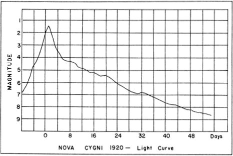

NOVA CYGNI 1920. The field of V476 Cygni, traced from a 13-inch telescope plate at Lowell Observatory. Circle diameter = ½° with north at the top. Stars to about 16th magnitude are shown.
1920年的NOVA CYGNI。来自Lowell天文台的13英寸望远镜板上的V476 Cygni场。圆直径= ½°，顶部为北。显示了大约16级的恒星。
V1500 Nova Cygni 1975. Position 21099n4757. The bright nova which flared up in the Cygnus Milky Way in August 1975, reaching a magnitude of 1.8 and becoming the brightest nova seen from the Earth since Nova Puppis in 1942. The position was about 5° ENE from Deneb and just 1° ENE from 63 Cygni, less than a degree from the Galactic Equator. Eventually becoming slightly brighter than Polaris, the new star was first seen by hundreds of persons all around the world on August 29, when it had attained 3rd magnitude. According to a summary of the observations reported in Sky and Telescope in October 1975, the earliest known visual sighting of the new star was probably made by Mr. Kentaro Osada in Japan at about 12h U.T. on August 29; the star was then magnitude 3.0 and brightening rapidly. During the next six hours it increased by nearly a magnitude. On the evening of August 29 it was close to 2nd magnitude, and was independently discovered by scores of observers throughout the U.S., including N.G. Thomas of Lowell Observatory who noted the presence of the strange star in Cygnus while camping out in Arizona’s Havasu Canyon. The following evening the star attained its maximum brilliancy of magnitude 1.8.
V1500 Nova Cygni1975。位置21099n4757。1975年8月在天鹅座银河中爆发的明亮新星，强度达到1.8，成为自1942年新星皮皮斯以来地球上观测到的最明亮的新星。位置大约是Deneb的5°ENE，而Deneb的1°ENE。 63 Cygni，不到银河赤道学位。最终，它变得比北极星略亮，这颗新星于8月29日在世界上数百人中首次见到，当时达到了3级。根据1975年10月《天空和望远镜》中报道的观测结果摘要，最早见到的新恒星可能是日本的Osada健太郎先生在大约12 小时时发现的。UT在8月29日；恒星的星等为3.0，并迅速增亮。在接下来的六个小时内，它增加了近一个数量级。8月29日晚上，它接近2级，并且被美国各地数十名观察员独立发现，包括洛厄尔天文台的NG托马斯（NG Thomas），他注意到天鹅座中存在这颗奇怪的恒星，同时在亚利桑那州的哈瓦苏峡谷露营。第二天晚上，恒星达到了最高亮度1.8级。

Prediscovery photographs of the region showed that the star had been fainter than magnitude 9.6 (photo-visual) on the evening of August 27; twenty-four hours later it had reached 7.5, and within another eight hours it had become a naked-eye object of about 3rd magnitude and was still brightening hour by hour.
该区域的发现前照片显示，该恒星在8月27日晚上比9.6级（照片可见）微弱。24小时后，它达到了7.5，在另外8小时内，它变成了大约3级的肉眼物体，并且仍在逐小时照亮。
When older photographic plates of the region were examined, it became evident that Nova Cygni was an exploding star of exceptionally great magnitude range. No pre-outburst image at all appears on the Lowell 13-inch telescope plates which reach to about magnitude 17.3. On 48-inch Schmidt camera plates at Palomar, no image brighter than 21st magnitude appears near the position. The range of at least 19 magnitudes corresponds to a difference of 40 million times in brightness, the greatest range ever observed for a nova, exceeding even Nova Puppis 1942 which had an 18 magnitude range. The rise of at least 19 magnitudes, in fact, suggests a supernova, though all other evidence indicates that the star was an ordinary “classical” nova. The light curve, spectrum, and expansion rates were all reasonably normal. According to G.de Vaucouleurs (1975) a study of all the data suggests a maximum absolute magnitude of about -9.5, equal to about 500,000 times the luminosity of the Sun, certainly one of the most luminous normal novae on record. Allowing for an obscuration of about 1 magnitude, the derived distance is about 5000 light years. I.S.McLean of the University of Glasgow (1976) found a somewhat higher absolute magnitude of about -10.1; this would decrease the computed distance to about 3700 light years.
当检查该地区较旧的照相板时，很明显新星Cygni是一个异常巨大的爆发星。洛厄尔13英寸望远镜板上根本没有爆发前图像，达到约17.3的大小。在Palomar的48英寸Schmidt照相板上，在该位置附近没有出现比21st幅值更亮的图像。至少19个量级的范围对应于亮度相差4000万倍，这是新星观测到的最大范围，甚至超过了具有18个量级范围的Nova Puppis 1942。实际上，至少有19个量级的上升表明是超新星，尽管所有其他证据表明该恒星是普通的“经典”新星。光曲线，光谱和膨胀率都相当正常。根据G。de Vaucouleurs（1975）对所有数据的研究表明，最大绝对量约为-9.5，约等于太阳光度的500,000倍，这无疑是有史以来最发光的正常新星之一。考虑到约1个量级的遮挡，得出的距离约为5000光年。格拉斯哥大学的ISMcLean（1976年）发现绝对值大约更高，为-10.1。这会将计算出的距离减少到大约3700光年。格拉斯哥大学的麦克莱恩（McLean）（1976）发现绝对值大约更高，为-10.1。这会将计算出的距离减少到大约3700光年。格拉斯哥大学的麦克莱恩（McLean）（1976）发现绝对值大约更高，为-10.1。这会将计算出的距离减少到大约3700光年。
The expansion velocity of the nova-shell, measured just before maximum, was about 1200 miles per second, quite comparable to other bright novae. The strong intensity of the hydrogen-alpha radiation at this time produced a rosy or orange tint reported by many observers of the star. This has been seen also in many other novae; the color was quite striking in the 1967 outburst of the recurrent nova RS Ophiuchi.
正好在最大值之前测得的新星壳的膨胀速度约为每秒1200英里，与其他明亮的新星相当。此时强的氢-α辐射强度产生了许多恒星观测者报告的玫瑰色或橙色调。在其他许多新星中也可以看到这一点。在1967年复发性新星RS Ophiuchi爆发时，这种颜色非常醒目。
Following peak brilliancy, Nova Cygni began to fade rapidly; by the evening of September 3 it was down to 4th magnitude, and two days later had fallen to 5th. The fading thereafter continued steadily; in December 1976 the star was at magnitude 12.0, while a measurement made in early January 1977 gave 12.4. The fading is expected to continue for a number of years.
光彩夺目之后，新星Cygni开始迅速褪色。到9月3日晚上，它降到了4级，两天后降到了5级。此后，衰减逐渐稳定；1976年12月，恒星的星等为12.0，而1977年1月上旬的测量结果为12.4。衰落预计将持续数年。
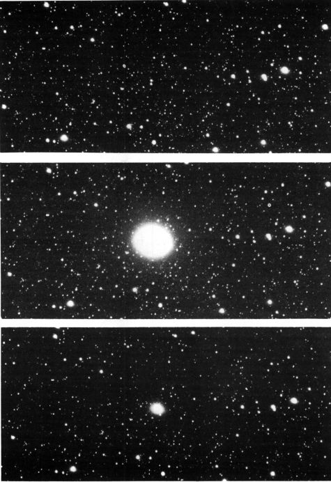
NOVA CYGNI 1975, photographed at Lowell Observatory with the 13-inch telescope. The three photographs were made on August 26, 1940; August 30, 1975; and September 26, 1975.
1975年的NOVA CYGNI，用13英寸望远镜在洛厄尔天文台拍摄。这三张照片是在1940年8月26日拍摄的；1975年8月30日；和1975年9月26日。
The unusually great amplitude of Nova Cygni 1975 is the outstanding feature of this star, and has excited much speculation. Most novae are believed to be extremely close double stars in which at least one of the components is a degenerate or semi-degenerate dwarf; this star is gradually accreting matter from the close companion. For many years this matter, chiefly hydrogen, may remain inert on the surface of the white dwarf, since the temperature and pressure are not sufficient to “ignite” any nuclear reactions. Eventually, however, the temperature at the bottom of the hydrogen layer reaches the nuclear ignition point, and the star then “goes nova”, blasting the entire outer shell into space. Obviously, this chain of events can occur repeatedly, which suggests that all novae may be recurrent, though the interval between outbursts may be many centuries. As of 1976, seven recurrent novae are actually known, with periods averaging several decades; in the eruptive dwarf variable stars such as SS Cygni and U Geminorum, a similar process seems to be occurring on a much smaller scale.
1975年新星Cygni异常大的振幅是这颗星的突出特征，并引起了很多猜测。多数新星被认为是非常接近的双星，其中至少一个成分是退化的或半退化的矮星。这颗星星正在逐渐从亲密伴侣身上吸取物质。多年来，由于温度和压力不足以“点燃”任何核反应，该物质（主要是氢）可能在白矮星的表面上保持惰性。但是，最终，氢层底部的温度达到了核点火点，然后恒星“变新星”，将整个外壳爆炸到太空中。显然，这一系列事件可以重复发生，这表明所有新星可能都是复发性的，尽管爆发之间的间隔可能长达几个世纪。到1976年为止，实际上已经知道了7个复发新星，平均周期为几十年。在诸如SS Cygni和U Geminorum的喷发矮化变星中，似乎正在以较小的规模发生类似的过程。
The abnormally great ranges of Nova Cygni 1975 and Nova Puppis 1942 may indicate that these stars are “virgin novae” which have not previously exploded. The very smooth and rapid decline also suggests the possibility that Nova Cygni, unlike many other novae, was a single star; as it is the mutual interaction of the nova-component and its companion which is thought to produce the oscillations and “flickerings” seen in many nova light curves. If the novastar had no companion, then the accreted material was presumably collected from interstellar gas and dust clouds. From the known distribution of the interstellar material, it seems that only about 1% of nova outbursts could be triggered in this way. However, in January 1977, Nova Cygni was showing oscillations of up to 0.5 magnitude in a period of about 3 hours, thus apparently rendering all such speculations obsolete. (For a survey of novae in general, refer to Nova Aquilae 1918. See also Nova Persei 1901, Nova Pictoris 1925, Nova Herculis 1934, and Nova Puppis 1942. Supernovae are treated under “Tycho’s Star” in Cassiopeia.)
Nova Cygni 1975和Nova Puppis 1942的异常大范围可能表明这些恒星是“原生新星”，以前没有爆炸过。非常平稳和迅速的下降也表明，新星Cygni与许多其他新星不同的是，它是单颗恒星。因为正是新星组分及其伴星的相互作用，导致了许多新星光曲线中所看到的振荡和“闪烁”。如果这颗新星没有伴侣，那么据推测是从星际气体和尘埃云中收集到这种物质。从星际物质的已知分布来看，似乎只能以这种方式触发约1％的新星爆发。但是，在1977年1月，新星Cygni在大约3个小时的时间内显示出高达0.5级的振动，因此，显然所有这些推测都已过时。（有关一般新星的调查，请参考Nova Aquilae1918。另请参见Nova Persei 1901，Nova Pictoris 1925，Nova Herculis 1934和Nova Puppis1942。超新星在仙后座中以“ Tycho's Star”处理。）
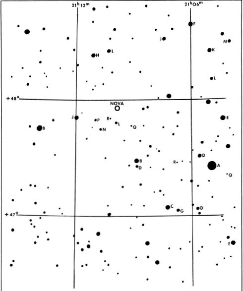
NOVA CYGNI 1975 IDENTIFICATION FIELD, adapted from a preliminary AAVSO Chart. Bright star “A” is 63 Cygni, Mag 4.56, spectrum K4. Comparison star magnitudes (AAVSO) are: B= 6.5; C= 7.0; D= 7.3; E= 7.6; F= 7.8; G= 7.9; H= 8.0; J= 8.6; K= 8.9; L= 9.0; M= 9.1; N= 9.7; P= 9.8; Q= 10.3; R= 10.5. (See detailed chart on page 792)
NOVA CYGNI 1975标识字段，改编自初步的AAVSO图表。明亮的恒星“ A”是63 Cygni，Mag 4.56，光谱K4。比较星等值（AAVSO）为：B = 6.5；C = 7.0；D = 7.3；E = 7.6; F = 7.8；G = 7.9；H ＝ 8.0； H ＝ 8.0。J = 8.6；K = 8.9；L = 9.0；M = 9.1；N = 9.7；P = 9.8；Q = 10.3；R ＝ 10.5。（请参阅第792页的详细图表）

NOVA CYGNI 1975 IDENTIFICATION CHART, from a Lowell Observatory 13-inch telescope plate. The circle is 1° in diameter with north at the top. Limiting magnitude about 16.
洛瓦天文台13英寸望远镜盘上的NOVA CYGNI 1975鉴定表。圆的直径为1°，顶部为北。极限幅度约为16。
CYGNUS X-l Position 19565n3504. One of the strongest sources of X-ray energy in the sky, and thought to be probably the most convincing candidate for a “black hole”. It was among the first interstellar X-ray sources detected, during the experiments made from an Aerobee rocket launching in June 1962; by 1965 it was known that the Cygnus source was variable, Cygnus X-1 was thus a prime target of NASA’s UHURU satellite, launched in December 1970, and designed specifically to detect and measure X-ray sources in the sky. Within a few months it was shown that the source displayed very large changes in X-ray intensity on a time-scale of less than 50 milliseconds. The very rapid variability suggested that the source was something of unusually small dimensions, probably a gravitationally collapsed object, but the lack of any strong radio emission seemed to imply that Cygnus X-1 was not a supernova remanant. Radio emission from this mysterious object has, however, been detected in recent years; it appears to have “turned on” in March 1971 while at the same time the observed X-ray emission decreased by a factor of three.
CYGNUS X1位置19565n3504。天空中X射线能量最强大的来源之一，被认为可能是“黑洞”最有说服力的候选人。在1962年6月发射的Aerobee火箭进行的实验中，它是最早发现的星际X射线源之一。到1965年，人们知道天鹅座的来源是可变的，天鹅座X-1因此成为NASA UHURU的主要目标该卫星于1970年12月发射，专门设计用于检测和测量天空中的X射线源。在短短几个月内，显示出该源在不到50毫秒的时间尺度上显示出很大的X射线强度变化。极快的可变性表明该源的尺寸异常小，可能是引力坍塌的物体，但是缺乏任何强大的无线电发射似乎暗示着天鹅座X-1并非超新星遗留物。但是，近年来已经发现了来自这个神秘物体的无线电辐射；它似乎在1971年3月“打开”，同时观察到的X射线发射减少了三倍。
With the position accurately measured, the coincidence of the source with a visible 9th magnitude star was soon demonstrated. The star, HDE 226868 or BD+34°3815, lies slightly less than 0.5° ENE from Eta Cygni; it may be located easily in small telescopes, and is marked with a superimposed circle on the photograph on page 795. The star is a very hot and luminous supergiant of spectral type about BO Ib; a precise spectral type of 09.7 lb has also been published. Further studies of the star soon showed that HDE 226868 is a single-line spectroscopic binary with a period of 5.599823 days and an orbital inclination of about 27°; the radial velocity varies from about 42 miles per second in approach to 46 miles per second in recession. This visible star has a surface temperature close to 30,000°K and a computed absolute magnitude of about -6. The expected mass of such a star is in the range of 20-30 suns; from the derived luminosity the distance of Cygnus X-1 appears to be 2.0 to 2.5 kiloparsecs, or 6500 to 8000 light years.
通过精确测量位置，很快证明了源与可见的9级星的重合。恒星HDE 226868或BD + 34°3815距埃塔·西格尼（Eta Cygni）稍小于0.5°ENE。它可能很容易放在小型望远镜中，并且在第795页的照片上标记有叠加的圆圈。这颗恒星是一个非常热的发光超巨星，光谱类型约为BO Ib。精确的光谱类型09.7 lb也已经发布。对该恒星的进一步研究很快表明，HDE 226868是单线光谱双星，周期为5.599823天，轨道倾角约为27°。径向速度从接近时的每秒42英里变化到衰退时的每秒46英里。该可见星的表面温度接近30,000°K，计算出的绝对量约为-6。这种恒星的预期质量在20到30个太阳之间。根据得出的光度，天鹅座X-1的距离似乎为2.0至2.5千帕秒，或6500至8000光年。
Studies of the system in 1973 have established the existence of a strongly heated stream of gas, passing from the B-star to the unseen component; the X-ray energy originates in this tremendously hot stream as it falls into the unseen something which orbits the visible star. From the known orbital elements, the mass of the unseen body would seem to be at least 10 solar masses, and is more likely in the range of 15 to 20. A normal star of this mass should be detectable in the combined spectrum of the pair, but a “normal star”, in any case, appears to be ruled out by the very rapid variations of the X-ray source, which imply that the source is something of very small dimensions, almost certainly less than a hundred miles in diameter. As the derived mass is well above that considered possible for any white dwarf or neutron star, the most likely interpretation at present (1976) is that the unseen something is a completely collapsed body or “black hole”. The existence of such bizarre objects has been debated on and off since 1798, when Pierre Laplace showed that, from the principles of gravitational theory, it was possible to imagine a body of such mass and density that the escape velocity would exceed the velocity of light. Such a body would logically be invisible, since light itself could not escape the very strong gravitational field. From a formula given in 1916 by K.Schwarzschild, it can be shown that a mass of one sun, to achieve this “black hole” state, would need to be compressed down to a sphere about 3.6 miles in diameter. For the Earth, the Schwarzschild radius is slightly under one centimeter. According to current ideas, a “black hole” should be the end-product of a sufficiently massive star which has exhausted its nuclear energy sources, allowing gravitational contraction to “take over”. Stars of up to about 1.25 solar mass merely become conventional white dwarfs; stars of up to about 3.2 solar masses probably go through a supernova explosion and leave a neutron star as a remnant; so it is among the stars of masses greater than about 3.2 suns that we expect to find candidates for the “black hole” state. In addition to Cygnus X-1, the possible existence of a black hole has been suggested in such odd binary systems as Beta Lyrae, Epsilon Aurigae, and SV Centauri. (Refer to page 413) Even the existence of “miniblack holes” has been postulated, and it has been suggested that the famous Tunguska Meteorite of June 30, 1908 might have been such a body, a particle smaller than a dust grain but weighing billions of tons. Many such entertaining speculations will be found in current books on the subject.
1973年对该系统的研究确定了存在强烈的气体流，该气体流从B星流向看不见的部分；X射线能量落入极热的气流中看不见的东西绕可见恒星运行。从已知的轨道元素来看，看不见的物体的质量似乎至少为10太阳质量，并且很可能在15至20的范围内。在该对的组合光谱中应该可以检测到该质量的正常恒星但是，无论如何，“正常恒星”似乎都被X射线源的快速变化所排除，这暗示着该X射线源的尺寸非常小，几乎可以确定其直径小于一百英里。由于派生质量远高于任何白矮星或中子星认为的可能质量，因此目前（1976年）最可能的解释是，看不见的东西是一个完全坍塌的物体或“黑洞”。自1798年以来，皮埃尔·拉普拉斯（Pierre Laplace）证明了这种奇异物体的存在是断断续续的，当时皮埃尔·拉普拉斯（Pierre Laplace）根据引力理论的原理，可以想象这样一个质量和密度的物体，其逃逸速度将超过光速。从逻辑上讲，这样的物体是不可见的，因为光本身无法逃脱非常强的引力场。根据K.Schwarzschild在1916年给出的公式，可以证明，要实现这种“黑洞”状态，需要将一个太阳质量压缩为直径约3.6英里的球体。对于地球，施瓦兹希尔德半径略小于一厘米。根据目前的想法，“黑洞”应该是一颗已经耗尽核能的足够大质量恒星的最终产物，允许重力收缩“接管”。高达约1.25太阳质量的恒星仅会成为常规的白矮星。高达约3.2太阳质量的恒星可能经历了超新星爆炸，并留下了中子星作为残余；因此，我们期望它是质量大于约3.2太阳的恒星中的一员，我们希望找到“黑洞”状态的候选者。除天鹅座X-1外，有人还建议在诸如Beta Lyrae，Epsilon Aurigae和SV Centauri这样奇特的二元系统中存在黑洞。（请参阅第413页）甚至假设存在“迷你黑洞”，并且有人认为1908年6月30日著名的通古斯陨石可能是这样的物体，比尘埃颗粒小但重数十亿吨。
FIELD OF CYGNUS X-l. The visible object HDE 226868 is marked near left center. Bright star at right is Eta Cygni. Lowell Observatory photograph made with the 13-inch telescope in blue light.
天鹅座X1。可见对象HDE 226868被标记在左中心附近。右边的明亮星星是Eta Cygni。洛厄尔天文台用13英寸望远镜在蓝光下拍摄的照片。

NEBULAE IN CYGNUS. Top: The curious “Crescent Nebula” NGC 6888. Below: A nebulous field 1° ESE from Gamma Cygni. Lowell Observatory photographs in red light with the 13-inch telescope.
天鹅湖的星云。上图：好奇的“新月星云” NGC6888。下图：来自伽玛·西格尼的1°ESE的星云场。洛厄尔天文台用13英寸望远镜拍摄红光。
STAR CLUSTERS IN CYGNUS. Top: NGC 6819, about 7° west of Gamma Cygni. Below: NGC 6866, about 4.7° NW from Gamma. Lowell Observatory photographs with the 13-inch camera.
天鹅座的星团。上：NGC 6819，位于伽玛西格尼以西约7°。下图：NGC 6866，距伽马约4.7°西北。洛厄尔天文台用13英寸相机拍照。
STAR CLUSTERS IN CYGNUS. Top: The compact cluster M29 which lies near Gamma Cygni. Below: The large scattered group M39 is located about 9° ENE from Deneb. Lowell Observatory photographs with the 13-inch telescope.
天鹅座的星团。上图：紧凑型星团M29，位于Gamma Cygni附近。下图：较大的分散群M39位于距Deneb约9°ENE的位置。洛厄尔天文台用13英寸望远镜拍摄照片。
M29 (NGC 6913) Position 20222n3821. A small and visually rather indistinguished star cluster located in a rich and crowded area of the Cygnus Milky Way about 1.7° SSE from Gamma Cygni. Discovered by Messier in July 1764, it appears in small telescopes as a trapzoid-shaped knot of a dozen or so 8th-9th magnitude stars; the group measures about 5’ with a few outliers increasing the total size to possibly 7’ or 8’. M29 lies in a heavily obscured region of the Galaxy where interstellar absorption produces an estimated 3 magnitudes of dimming. In studies of polarization in the cluster, W.A.Hiltner (1954) found that the density of dust within the cluster is nearly 1000 times the mean value for the Galaxy; evidently M29 might be a rather striking cluster if it could be seen “in the clear”. The brightest members are all B-type stars; the stellar population resembling M36 in Auriga, which, however, is much nearer to the Solar System. Current studies suggest a distance of about 7200 light years for M29, agreeing very well with the early estimates of R.J.Trumpler in 1930. This gives M29 an actual diameter of about 15 light years and a total luminosity of about 50,000 suns.
M29（NGC 6913）位置20222n3821。一个小型且视觉上看不清的恒星簇，位于天鹅座银河系的一个拥挤和拥挤的区域，距伽玛西格涅约1.7°SSE。它是由梅西耶（Messier）在1764年7月发现的，它在小型望远镜中看起来像是一个梯形的结，由十几个八度至九度的恒星组成。该组的大小约为5'，有一些异常值将总大小增加到了7'或8'。M29位于银河系的一个被严重遮盖的区域，星际吸收会产生大约3个大小的变暗。WAHiltner（1954）在对星团中的极化进行研究时发现，星团中的尘埃密度几乎是银河系平均值的1000倍。如果可以“清楚地”看到M29，显然它可能是一个相当引人注目的集群。最亮的成员都是B型星；类似于奥里加（Auriga）M36的恒星种群，但是它更靠近太阳系。当前的研究表明，M29的距离约为7200光年，与1930年RJTrumpler的早期估计非常吻合。这使M29的实际直径约为15光年，总光度约为50,000太阳。
M39 (NGC 7092) Position 21304n4813. A large but very loose-structured galactic star cluster located some 9° ENE from Deneb, easily found in binoculars but too large and sparse a group to make a good telescopic object, though T.W.Webb called it a “grand open cluster” and Smyth found it a “splashy field of stars”. Discovery is often credited to Le Gentil in 1750, but P.Doig (1925) quotes a statement made by J.E.Gore that this cluster was noted by Aristotle as a cometary appearing object about 325 BC.
M39（NGC 7092）位置21304n4813。一个大型但非常松散的银河星团位于距德纳（Deneb）约9°ENE的位置，很容易在双筒望远镜中找到，但太大而稀疏，无法构成一个好的望远镜物体，尽管TWWebb称其为“大开星团”，而史密斯（Smyth）发现了它一个“星空飞溅的领域”。1750年，发现通常归功于Le Gentil，但P.Doig（1925）引用了JEGore的说法，即该星团被亚里士多德注意到是公元前325年的彗星出现对象。
E.G.Ebbighausen (1940) determined the annual proper motion of the group to be about 0.024” in PA 222°; the radial velocity is about 8½ miles per second in approach. From these criteria, some 30 stars are now accepted as true cluster members. The 12 brightest stars are all A or B-type, scattered over a field more than ½° in diameter. In 1953 studies by H.L.Johnson and H.F.Weaver gave a distance of about 800 light years, which gives the cluster a true diameter of about 7 light years. From the H-R diagram of M39 it is found that virtually all the members are main sequence objects, but that the few brightest stars appear to be just at the point of beginning their evolution toward the giant stage. A comparison of many cluster diagrams shows that M39 is probably somewhat younger than the Coma Berenices cluster but older than the Pleiades.
EGEbbighausen（1940）确定该小组在PA 222°的年度适当运动约为0.024英寸。进近时径向速度约为每秒8½英里。根据这些标准，现在已经接受了大约30星作为真正的星团成员。12个最亮的恒星均为A或B型，散布在大于½°的视野中在直径上。HLJohnson和HFWeaver在1953年进行的研究得出的距离约为800光年，这使星团的真实直径约为7光年。从M39的HR图中发现，实际上所有成员都是主要的序列对象，但是最亮的几颗星似乎正处于开始向巨型阶段发展的时刻。对许多星团图的比较表明，M39可能比Coma Berenices星团年轻，但比the宿星更老。
THE VEIL NEBULA. The complete arc of this famous nebula is shown in this photograph made with the 48-inch Schmidt at Palomar. NGC 6992 is the bright mass at the left; NGC 6960 and the bright star 52 Cygni are at the right edge.
面纱星云。在帕洛玛用48英寸的施密特拍摄的这张照片中显示了这个著名星云的完整弧线。NGC 6992是左侧的明亮质量；NGC 6960和明亮的恒星52 Cygni位于右边缘。
NGC 6960 Two NGC 6992 wonderful lace-like gaseous nebulae, forming together the “Bridal Veil Nebula” in Cygnus, one of the most striking objects in the heavens on long-exposure photographs taken with great telescopes. The nebula was discovered visually by William Herschel in 1784 with his 18-inch reflecting telescope. NGC 6992 is often called the “Filamentary Nebula” and NGC 6960 the “Network Nebula”; however these names are often used indiscriminately and are sometimes used in referring to either portion or to both objects together.
NGC 6960两个NGC 6992奇妙的类似花边的气态星云，在天鹅座形成了“面纱星云”，这是用大望远镜拍摄的长时间曝光照片中天堂中最引人注目的物体之一。1784年，威廉·赫歇尔（William Herschel）用18英寸反射望远镜在视觉上发现了星云。NGC 6992通常被称为“丝状星云”，而NGC 6960通常被称为“网络星云”；但是，这些名称经常被不加区分地使用，有时有时用于同时指代任一部分或两个对象。
NGC 6992 is located at 20543n3130 and is visible in a 6-inch or 8-inch glass with low power, looking like a miniature Milky Way in itself in the field. It appears as a faint curved arc like a ghostly white rainbow, over one degree in length. A very dark clear night and a wide-field eyepiece of low power are absolutely essential for the detection of this difficult object. About 2½° to the WSW is NGC 6960, appearing as another faint narrow arc of nebulosity crossing the field of the 4th magnitude star 52 Cygni which is located at 20436n3032. This nebulosity is a difficult and indistinct object in a 6-inch glass. A third main nebulous mass lies about 2° directly west of NGC 6992; it is the faintest of the three segments and remains unnumbered. It cannot be detected visually in small telescopes.
NGC 6992位于20543n3130处，可在低功率的6英寸或8英寸玻璃中看到，看起来像是野外的微型银河系。它看起来像一条微弱的弧形，像幽灵般的白色彩虹，长度超过一度。对于检测这个困难的物体，绝对黑暗的夜晚和低倍率的广角目镜是必不可少的。与WSW 约2½°的是NGC 6960，它是另一个微弱的星云状窄弧，横越位于20436n3032的4级恒星Cygni的场。在6英寸的玻璃杯中，这种模糊不清的物体很难辨认。第三个主要的星云团位于NGC 6992的正西约2°处；这是三个细分中最弱的一个，并且仍未编号。在小型望远镜中无法从视觉上检测到它。
It is a curious fact, however, that the brightest portion of the Veil Nebula, NGC 6992, may be seen faintly but unmistakably in 7X50 binoculars. This has been accomplished by numerous observers, and is due to the very low magnification and great light concentrating power of such an instrument. Some of the filamentary structure may be seen visually with large telescopes, but the finest details may be seen only on the photographic plate.
然而，一个奇怪的事实是，在7X50双筒望远镜中可能隐隐约约地看到了面纱星云的最亮部分，NGC 6992。这是由许多观察者完成的，这是由于这种仪器的放大率很低且聚光能力强。用大型望远镜可以看到一些丝状结构，但最好的细节只能在照相板上看到。
The peculiar filamentary structure, resembling frost patterns or fine lace, makes this nebula one of the most noted of all such objects, and therefore of special interest to the amateur, even though the direct view through the small telescope will show nothing of its true splendor. Kelvin McKready, in his “Beginner’s Star Book” described the nebula as seeming like “the long and shelving undulations of a thin cataract of light, as it slips from star to star in its shining fall through space”. Some fantastically beautiful photographs of the Veil have been obtained in color by W.C.Miller at Palomar Observatory; these show that the hues of various filaments range from blue to white to red, according to the temperature. One of these photographs appears in the Life Nature Library book “The Universe” with the caption “The Veil Nebula, a diaphanous filigree of star-spangled red, white and blue”. These colors, however, cannot be seen visually in even the largest telescopes because of the extremely low intensity of the light.
奇特的丝状结构，类似于霜状图案或细花边，使该星云成为所有此类物体中最著名的物体之一，因此，即使通过小型望远镜直接观察也不会显示出其真正的辉煌，对此业余爱好者特别感兴趣。 。凯尔文·麦克卡迪（Kelvin McKready）在他的《初学者的星际书》中形容星云看起来像“一束稀薄的白内障的漫长而搁置的起伏，因为它在闪耀的空间中从一个星星滑到另一个星星”。WCMiller在Palomar天文台的彩色照片中获得了一些梦幻般美丽的面纱照片。这些结果表明，根据温度的不同，各种灯丝的色调从蓝色到白色再到红色。这些照片之一出现在生命自然图书馆的书“宇宙”的标题为“面纱星云，一种由星状红色，白色和蓝色组成的透明花丝”。但是，由于光线的强度极低，因此即使在最大的望远镜中也看不到这些颜色。

WESTERN PORTION OF THE VEIL NEBULA. NGC 6960 and the star 52 Cygni, photographed with the 60-inch reflector at Mt. Wilson Observatory.
面膜痣的西部部分。NGC 6960和恒星52 Cygni，是在山顶用60英寸反射镜拍摄的。威尔逊天文台。

I DETAILS IN THE VEIL NEBULA. A region in NGC 6960, just south of 52 Cygni, showing the filamentary structure. Mt. Wilson Observatory 60-inch reflector photograph.
我在面纱星云中详细说明。NGC 6960中位于Cygni 52以南的一个区域，显示出丝状结构。公吨。威尔逊天文台60英寸反射镜照片。
FILAMENTARY STRUCTURE IN THE VEIL NEBULA. A portion of NGC 6992, photographed with the 61-inch astrometric reflector at the Flagstaff Station of the U.S. Naval Observatory.
面膜中的丝状结构。NGC 6992的一部分，是在美国海军天文台弗拉格斯塔夫站用61英寸天文反射镜拍摄的。
OFFICIAL U.S. NAVY PHOTOGRAPH
官方美国海军摄影
The visible portions of the Veil appear to be segments of an expanding wreath-like gas cloud some 2.6° in diameter, often called the Great Cygnus Loop. The distance of the nebula is still somewhat uncertain, but an average of several estimates gives about 1500 light years as the probable value. The nebulosity on this basis is about 70 light years in diameter, and is expanding at about 0.06” per year. This suggests that the gas cloud had its origin in a great explosion, probably a supernova outburst, in the distant past. At the present rate of expansion the cloud would have required over 150,000 years to attain its present diameter. However, it seems certain that the rate of expansion has decreased to a fraction of its original value. A supernova cloud begins its growth at a rate of more than 1000 miles per second, but the largest radial velocity measured in the Veil is less than 45 miles per second. The deceleration may have been caused chiefly by resistance from gas and dust clouds in the region. There is no doubt that the Veil is expanding into a dusty region and sweeping up the interstellar material as it does so. The sky within the loop is noticeably clearer than the area outside, as evidenced by the difference in the number of faint stars visible in the two regions. This effect is plainly seen on the photograph on page 802.
面纱的可见部分似乎是直径约2.6°的环状花环状气体云的扩张部分，通常被称为大天鹅环。星云的距离仍然有些不确定，但是几项估计的平均值给出了大约1500光年的可能值。在此基础上，星云的直径约为70光年，并以每年约0.06英寸的速度增长。这表明气体云的起源是在遥远的过去发生的一次巨大爆炸中，可能是超新星爆发。以目前的扩张速度，云将需要超过150,000年才能达到目前的直径。但是，似乎可以肯定的是，膨胀率已降至其原始值的一小部分。超新星云以每秒1000英里以上的速度开始增长，但是在面纱中测得的最大径向速度小于每秒45英里。减速可能主要是由于该地区的气体和尘埃云的阻力引起的。毫无疑问，面纱正在扩展到一个尘土飞扬的区域，并在扫除星际物质时将其扫除。这两个区域内可见的微弱恒星数量不同，证明了环内的天空明显比外部区域晴朗。从照片上可以清楚地看到这种效果。从这两个区域可见的微弱恒星数量差异可以证明这一点。从照片上可以清楚地看到这种效果。从这两个区域可见的微弱恒星数量差异可以证明这一点。从照片上可以清楚地看到这种效果。802页。
Allowing for the deceleration of the nebulosity, the explosion of the supernova is estimated to have occurred possibly 30 to 40 thousand years ago. The Veil Nebula, like all other known supernova remnants, is a source of radio radiation, but a much weaker source than the famous Crab Nebula in Taurus whose age is only 900 years. Radio emission from the Veil was first detected by D.Walsh and R.H.Brown at Jodrell Bank in England.
考虑到星云的减速，超新星的爆炸估计可能发生在30至4万年前。像所有其他已知的超新星遗迹一样，面纱星云是无线电辐射的源头，但比金牛座只有900岁的著名蟹状星云要弱得多。来自面纱的无线电辐射首先是由英格兰乔德雷尔银行的D.Walsh和RHBrown检测到的。
NORTH CENTRAL PORTION OF THE VEIL NEBULA. Details in the faint nebulosity between NGC 6960 and 6992, photographed with the Cross ley Reflector at Lick Observatory.
面膜星云的中北部部分。NGC 6960和6992之间微弱的雾状细节，由利克天文台的Cross ley Reflector拍摄。
The source of illumination of the nebula is still something of a mystery. Spectrum analysis shows that the light is fluorescence, but the exciting star has not been identified; neither is there any star near the center of the loop displaying post-nova characteristics. The western segment of the Veil appears to be drifting past the 4th magnitude star 52 Cygni, but the star is known to be a foreground object and has no connection with the nebula. R.Minkowski has suggested that the post-nova may be a very close companion to one of the stars within the loop, most probably the double star GC 29071 or /367 which lies near the apparent center of the ring. The primary of this pair has a spectral type of about B7, and cannot be the source of light of the Veil, but there is a faint companion of the 10th magnitude about 1.6” distant, discovered by S.W. Burnham in 1875. The spectrum of the companion has not been obtained, so that its identification as the ancient source of the Veil is still conjectural. If it is not the former nova, some other unseen companion may be.
星云的照明源仍然是个谜。光谱分析表明该光是荧光，但尚未识别出令人兴奋的恒星。在环中心附近也没有任何恒星显示出新星后的特征。面纱的西段似乎正在漂移经过第4级恒星52 Cygni，但已知该恒星是前景物体，与星云无关。R.Minkowski建议，后新星可能与环中的一颗恒星非常接近，可能是双星GC 29071或/ 367它位于环的明显中心附近。该对的初级光谱类型约为B7，不能作为面纱的光源，但是有一个微弱的伴侣，它的第10个量级约为1.6英寸远，由伯纳姆（SW Burnham）在1875年发现。伴侣尚未获得，因此其作为面纱的古老来源的鉴定仍是推测性的。如果不是以前的新星，可能还有其他看不见的伴侣。
The fine filamentary structure of the Veil Nebula is its outstanding feature, and has not yet been fully explained. The thickness of a typical filament ranges from 500 or 700 AU up to about 2000 AU; the apparent widths being from 1” to 5”. It is possible that some of the filaments are actually thin sheets of gas seen edge-on; a similar sheet if seen from the front would possibly be undetectable because of low surface brightness. The expansion of the cloud into the interstellar medium probably plays a part in the formation of filaments, which may be largely shock-front phenomena. Electromagnetic forces must also be considered. The Russian astronomer V.G.Fessenkov has obtained photographs with the 50-centimeter Maksutov camera at Alma Ata in Central Asia, seemingly resolving some of the filaments into chains of stars. The existence of the majority of these chains does not seem to be verified by the fine photographs taken with larger telescopes in America. On the whole, the evidence seems doubtful, and the estimated mass of the Veil does not seem to be nearly sufficient for the formation of large groups of stars.
面纱星云的细丝结构是其突出的特征，尚未得到充分解释。典型的灯丝厚度范围为500或700 AU至最大2000 AU；表观宽度为1英寸至5英寸。有些细丝实际上是边缘观察到的薄薄的气体薄片。如果从正面看，类似的纸张可能由于表面亮度低而无法检测。云团向星际介质中的膨胀可能在细丝形成过程中发挥了作用，细丝的形成很大程度上可能是冲击前现象。还必须考虑电磁力。俄罗斯天文学家VGFessenkov用50厘米的Maksutov照相机在中亚的Alma Ata拍摄了照片，看似将一些细丝分解成恒星链。这些链条中大多数的存在似乎没有得到美国大型望远镜拍摄的精美照片的证实。总体而言，证据似乎令人怀疑，而且估计的面纱质量似乎不足以形成大群恒星。

COMPARISON OF TWO FILAMENTARY NEBULAE. Top: The Veil Nebula in Cygnus, NGC 6960--6992. Below: The faint nebula S147 in Taurus. Palomar Observatory 48-inch Schmidt telescope photographs.
两种丝状星云的比较。上图：天鹅座的面纱星云，NGC 6960--6992。下图：金牛座的微弱星云S147。帕洛玛天文台48英寸施密特望远镜的照片。

THE VEIL NEBULA. NGC 6992 is at top; NGC 6960 below. This photograph gives some impression of the appearance in the 10 or 12-inch telescope.
面纱星云。NGC 6992在顶部；NGC 6960以下。这张照片给人以10英寸或12英寸望远镜外观的印象。
Lowell Observatory photograph
洛厄尔天文台照片

NGC 7000. The North American Nebula in Cygnus, photographed in red light with a 200mm Takumar lens by David Healy of Manhasset, New York.
NGC7000。天鹅座的北美星云，由纽约Manhasset的David Healy用200mm Takumar镜头在红光下拍摄。
A very similar, but much fainter filamentary nebula in Taurus is known as S147; this too is believed to be a supernova remnant, comparable in size and age to the Veil. It consists entirely of an intricate network of fine thread-like filaments forming a ring about 2° x 3° in size. A third object is identified with the radio source Vela X. The similarity in these objects invites speculation about the future history of the Crab Nebula; perhaps in 50,000 years it will have developed the fine filamentary structure now so admired in the Veil. (Refer also to NGC 1952 in Taurus. For a survey of supernovae, refer to Tycho’s Star in Cassiopeia)
金牛座的一个非常相似但更暗淡的丝状星云被称为S147。这也被认为是超新星遗迹，其大小和年龄与面纱相当。它完全由复杂的细丝状细丝网络组成，形成约2°x 3°的环。用无线电源Vela X标识了第三个物体。这些物体的相似性引发了人们对蟹状星云未来历史的猜测；也许在50,000年内，它会发展出现在面纱中如此令人敬佩的细丝结构。（另请参阅金牛座的NGC1952。有关超新星的调查，请参阅《仙后座》中的第谷的《星》）
NGC 7000 Position 20570n4408. The North American Nebula, a vast cloud of mixed nebulosity, dust and stars, named by Dr.Max Wolf, and considered one of the outstanding features of the northern Milky Way. It lies some 3° east of Deneb and may be detected with the naked eye as a region of increased brightness in the Cygnus Milky Way. Binoculars show an irregular glow more than in diameter with the “North American” shape becoming unmistakable on a clear night. Perhaps the best view of the unusual outline is obtained with a 3 or 4-inch rich-field telescope and a wide-angle eyepiece. The dark Gulf of Mexico stands out clearly and the Pacific coast can be traced from Canada to Mexico. In larger instruments the outline is invariably lost because of reduction in size of the field and lack of contrast.
NGC 7000位置20570n4408。北美星云是由Max Wolf博士命名的由混合星云，尘埃和恒星组成的巨大云团，被认为是北银河系的显着特征之一。它位于Deneb以东约3°处，用肉眼可能会被天鹅座银河系中亮度增加的区域检测到。双筒望远镜显示出不规则的辉光，其直径大于直径，并且“北美”形状在晴朗的夜晚变得清晰无误。使用3英寸或4英寸的富视野望远镜和广角目镜，也许可以获得不寻常轮廓的最佳视图。黑暗的墨西哥湾非常明显，从加拿大到墨西哥都可以追溯到太平洋海岸。在较大的仪器中，轮廓总是会丢失，因为视野变小并且缺乏对比度。
The main mass of the nebula has a mottled appearance, which in the region of the “Atlantic coast” develops into an amazing pattern of shreds and streamers of nebulosity, both bright and dark. Still farther out in the “Atlantic” this same pattern reappears even more strikingly in the detached nebulous island IC 5067, often called the “Pelican Nebula”. The entire face of the pelican appears on red-sensitive plates as a virtual cascade of fine wisps and streamers, flowing out toward the southeast. The north portion of the nebula is traversed by several beautifully defined narrow tendrils of dark nebulosity, sharply outlined against the glowing background. About 1½ to the south, in the detached region IC 5068, is a remarkable field where numerous streamers and filaments intersect at right angles to produce an intricate cross-weave pattern which surely challenges explanation. In the North American Nebula itself the most remarkable region is found in “Mexico and Central America” where bright and dark masses meet to produce many a striking effect. Among specific details we must mention the splendid bright rim nebula which lies on the “Pacific coast” like a silver-lined cloud, and the gauzy semi-transparent veil of dark nebulosity which streams southward from the Gulf region to pass across the southern portion of “Mexico”. Many of these details are even more striking on the beautiful color photographs obtained at Palomar Observatory; the prevailing color being a rich red which reaches its greatest intensity in the bright-rim feature just noted.
星云的主要部分呈斑驳的外观，在“大西洋沿岸”地区发展成令人惊异的星状碎片和飘带，无论是明暗的。在“大西洋”中更远的地方，这种相同的模式在引人注目的星云岛IC 5067（通常称为“鹈鹕星云”）中更为显着。鹈鹕的整个面孔在红色敏感的板上出现，像一束细密的小束状飘带的虚拟串流，向东南方向流出。星云的北部被数个定义精美的深色星云的狭窄卷须穿过，在发光的背景下轮廓清晰。约1½向南，在分离区域IC 5068上，是一个引人注目的领域，众多的飘带和细丝以直角相交以产生错综复杂的交织图案，这无疑对解释提出了挑战。在北美星云本身中，最引人注目的区域是“墨西哥和中美洲”，明亮和黑暗的物质汇合在一起，产生了许多惊人的效果。在特定的细节中，我们必须提到位于“太平洋海岸”上的灿烂明亮的边缘星云，像一排排银色的云朵，还有深色星云的薄纱半透明面纱，它从海湾地区向南流过，穿过了墨西哥的南部。 “墨西哥”。在帕洛玛天文台获得的精美彩色照片中，这些细节中的许多甚至更为醒目。
NGC 7000. The North American Nebula, one of the striking features of the northern Milky Way. This photograph was made with a 4-inch lens by Alan McClure.
NGC7000。北美星云，北部银河系的显着特征之一。这张照片是由Alan McClure用4英寸镜头拍摄的。
DETAILS IN NGC 7000. The southern portion of the North American Nebula, showing the “Mexico” and “Central America region.”
NGC 7000中的详细信息。北美星云的南部，显示“墨西哥”和“中美洲地区”。
100-inch telescope, Mt.Wilson Observatory
威尔逊山天文台100英寸望远镜
The 1st magnitude star Deneb has traditionally been considered to be the chief source of the illumination of the Nebula, though it is likely that many stars in the region are contributors to the effect. The loose galactic star cluster NGC 6997 lies within the nebulosity, but is not definitely known to be at the same distance. The Nebula itself is estimated to be about 1600 light years distant, which agrees well with the computed distance of Deneb. However, the true separation of star and nebula cannot be much less than 70 light years. The nebula itself is some 45 light years in diameter.
传统上认为1级恒星Deneb是星云照明的主要来源，尽管该地区可能有许多恒星是造成这种现象的原因。散布的银河星团NGC 6997处于星云内，但并不确定其处于相同的距离。估计星云本身的距离约为1600光年，这与Deneb的计算距离非常吻合。但是，恒星和星云的真正分离不能少于70光年。星云本身直径约45光年。
CYGNUS A Position 19578n4035. This is one of the best known radio sources, first detected by radio telescopes long before it was actually identified optically. Although it is the second strongest radio soure in the sky, no bright visual object appears at that position. The mystery was partly solved at Palomar Observatory in 1951, when 200-inch telescope plates revealed an unusual galaxy now believed to be between 500 and 700 million light years distant. The object appears as a pair of fuzzy 18th magnitude images about 2” apart. The spectrum shows gaseous emission lines, and the object was at first thought to show us a direct collision between two giant galaxies. Such a collision would not affect the billions of stars in the two galaxies, since they are separated by relatively enormous distances, but the gaseous and nebulous matter would be heated to incredible temperatures. The passage of the two galaxies through each other would require about a million years.
天鹅座位置19578n4035。这是最广为人知的无线电源之一，很久以前它就被光学望远镜真正地光学识别了。尽管它是天空中第二强的无线电辐射源，但在该位置没有明亮的视觉对象出现。1951年，帕洛玛天文台解决了这个谜团，当时200英寸望远镜的望远镜板揭示了一个不寻常的星系，现在人们认为它距我们有500至7亿光年。该对象显示为一对相距约2英寸的模糊18级图像。光谱显示出气体的发射线，最初认为该物体是向我们展示两个巨大星系之间的直接碰撞。这样的碰撞不会影响两个星系中数十亿颗恒星，因为它们之间的距离相对较大，但是气态和雾状物质会被加热到令人难以置信的温度。两个星系彼此之间的通过大约需要一百万年。

CYGNUS A, This unusual galaxy is one of the greatest known sources of radio radiation in the Universe.
天鹅座A，这个不寻常的星系是宇宙中最著名的无线电辐射源之一。
Palomar Observatory 200-inch telescope
帕洛玛天文台200英寸望远镜
This interpretation of Cygnus A as a colliding galaxy system now appears rather doubtful. It has been suggested that the object is not a double galaxy at all, but possibly a single one with a dark central band, resembling the odd NGC 5128 in Centaurus. Also, the radio waves do not come from the visible nuclei, but from two large and invisible “lobes” about 100” apart, on either side of the optical object. These lobes are probably connected with a strong magnetic field, but it is not known what processes are operating in this galaxy to produce such strange phenomena and create one of the greatest known radio transmitters in the universe. As of 1963, it appears impossible that the observed amount of energy can be generated by colliding galaxies, and astronomers have begun to look elsewhere for an explanation. Several other strong radio sources have now been identified with optically visible objects resembling Cygnus A; these appear to be abnormal galaxies which are undergoing violent outbursts of material from their nuclear regions. Among the nearby examples are such unusual systems as NGC 5128 in Centaurus, M82 in Ursa Major, M87 in Virgo, and NGC 1275 in Perseus. The outpourings of material in these systems seems to involve masses of several million suns. Explosions on this scale may result from the formation of a “hyperstar” or contracting gas cloud of several million solar masses in the central region of a galaxy. Such a hyper-massive object could never condense into a stable superstar, it seems, but would go into a state of gravitational collapse, become violently unstable, and eventually blow itself apart. The idea of hyperstars brings to mind some of the seemingly fantastic speculations concerning the so-called “quasars”, strong radio sources which look stellar in appearance but show enormous red-shifts. According to one school of thought, it is possible that the peculiar galaxies, radio galaxies, and quasars are all basically the same type of object, powered by the same mechanism. Too little is known at present to permit much more to be said. (For an account of quasars, refer to 3C273 in Virgo)
现在，将天鹅座A解释为碰撞的星系系统似乎令人怀疑。已经提出，该物体根本不是双星系，而是可能是一个具有暗中心带的单个星系，类似于半人马座中的奇异NGC 5128。而且，无线电波不是来自可见核，而是来自光学对象两侧的两个相距约100英寸的大且不可见的“波瓣”。这些波瓣可能与强磁场有关，但尚不知道该星系中正在发生哪些过程来产生这种奇怪的现象，并创造出宇宙中最知名的无线电发射器之一。截至1963年，似乎不可能通过碰撞星系产生观测到的能量，天文学家已开始将目光投向别处以作解释。现在已经发现了其他几个强无线电源，它们具有类似于天鹅座A的光学可见物体。这些似乎是异常星系，正在从其核区猛烈爆发物质。附近的例子包括不寻常的系统，例如半人马座的NGC 5128，大熊座的M82，处女座的M87和英仙座的NGC 1275。这些系统中的物质倾泻似乎涉及数百万个太阳的质量。这种爆炸可能是由在银河系中心区域形成数百万太阳质量的“超星”或收缩的气体云造成的。看起来，这样一个超大质量的物体永远不会凝结成稳定的巨星，但会进入重力坍塌的状态，变得极度不稳定，并最终使其破裂。巨星的想法让我想到了一些关于所谓“类星体”的看似奇妙的猜测，类星体是强大的无线电源，在外观上看起来很恒星，但显示出巨大的红移。按照一种观点，奇特的星系，射电星系和类星体可能基本上都是同一类型的物体，并由相同的机制提供动力。目前，人们所知还不足以允许说更多。（有关类星体的说明，请参阅处女座中的3C273）目前，人们所知还不足以允许说更多。（有关类星体的说明，请参阅处女座中的3C273）目前，人们所知还不足以允许说更多。（有关类星体的说明，请参阅处女座中的3C273）
LIST OF DOUBLE AND MULTIPLE STARS
双星和多星清单


DESCRIPTIVE NOTES
描述性注释
BETA Double star. Magnitude 3.78; spectrum F5 III or IV. Position 20352n1425. Beta Delphini is a close and rapid binary, generally a difficult object, but discovered, surprisingly, with an aperture of only 6 inches, by the indefatigable S.W.Burnham in August 1873. The two stars are magnitudes 4.0 and 4.9 and revolve in their orbit in a period of 26.65 years with periastron in late 1957. Greatest apparent separation of the pair occurs at PA 356° as in 1949; the stars are then 0.65” apart. Closest approach is near 90° as in 1959, when the components narrow down to about 0.2”. Orbital elements according to Finsen (1938) are given here: Semi-major axis = 0.48” = about 20 AU at the adopted parallactic distance of 125 light years; eccentricity = 0.35; inclination = 62°. The total light of the system for the same distance is about 36 times the luminosity of the Sun. Beta Delphini shows an annual proper motion of 0.11”; the radial velocity is 14 miles per second in approach.
测试版双星。大小3.78; 频谱F5 III或IV。位置20352n1425。Beta Delphini是一个近而快速的双星，通常是一个困难的物体，但令人惊奇的是，它的孔径只有6英寸，是由不朽的SWBurnham在1873年8月发现的。两颗恒星分别是4.0和4.9级，并绕其轨道公转。这对卫星在1957年末发生了26.65年的高周变。与1949年一样，该对的最大视距发生在PA 356°。然后，星星分开0.65英寸。最接近的方法是在1959年接近90°，此时组件缩小到大约0.2英寸。根据Finsen（1938）给出的轨道元素如下：在采用125光年的视距时，半长轴= 0.48英寸=约20 AU。偏心率= 0.35; 倾角= 62°。在相同距离下，系统的总光线约为太阳光度的36倍。Beta Delphini的年度适当运动值为0.11英寸；进近时径向速度为每秒14英里。
The curious names “Sualocin” and “Rotanev” for Alpha and Beta Delphini, spell in reverse the name of Nicholas Venator (the Latinized version of Niccolo Cacciatore) the valued assistant of Piazzi at Palermo Observatory. The names, according to R.H.Allen, first appeared for these stars in the Palermo Catalogue of 1814.
阿尔法和贝塔·德尔菲尼分别为“ Sualocin”和“ Rotanev”这两个奇特的名字，反过来拼写了尼古拉斯·维纳托尔（尼古洛·卡卡蒂亚托尔的拉丁化版本）的名字，皮亚齐在巴勒莫天文台的重要助手。根据RHAllen的说法，这些名字首次出现在1814年的巴勒莫目录中。
DELPHINUS. The entire pattern of the Dolphin appears in this print, centered on β Delphini. The interloper is Comet West 1975n, photographed with the Lowell Observatory 5-inch camera on April 7, 1976.
DELPHINUS。海豚的整个图案都出现在此照片中，以βDelphini为中心。闯入者是1975年西彗星，于1976年4月7日用洛厄尔天文台5英寸相机拍摄。
NORTHERN PORTION OF DELPHINUS. The four bright stars below center are γ>,α,δ and β . Near the top of the print, the j brightest star is Nova Delphini 1967, near maximum in late October 1967. (See page 828) Lowell Observatory photograph
德尔福的北部部分。中心下方的四个亮星为γ>，α，δ和β。在照片顶部附近，最亮的j星是1967年的新星德尔菲尼，在1967年10月下旬接近最大。（请参阅第828页）洛厄尔天文台照片

Alpha and Beta are the brightest members of a little lozenge-shaped asterism some 2.7° in length, lying about 14° NE of Altair. The group includes Alpha (mag 3.77, B9), Beta (3.78, F5), Gamma (3.91, K2+F8), and Delta (4.53, Am). A few degrees to the south, the star Epsilon (3.98, B6) completes the mythological outline of Delphinus, the Dolphin. How much of this group may be a true physical association remains debatable. Beta, Epsilon, Eta and Zeta all show about the same radial velocity (about 12 miles per second in approach) while Epsilon and Zeta show a nearly identical proper motion, but Beta has a larger motion than the other three. Gamma also seems disqualified on the basis of a much larger motion than the others; whereas Alpha has only about 1/3 the radial velocity of Beta and Epsilon. A table of data for the brighter stars in the area is given on the following page according to figures published in the Yale Catalogue of Bright Stars. The reader may make his own analysis as to the probability of any true physical group existing among these stars. The computed distances also seem discordant.
Alpha和Beta是菱形形状的星点中最亮的成员，长度约为2.7°，位于Altair的NE约为14°。该组包括Alpha（mag 3.77，B9），Beta（3.78，F5），Gamma（3.91，K2 + F8）和Delta（4.53，Am）。南下几度的恒星Epsilon（3.98，B6）完成了海豚Delphinus的神话轮廓。到底有多少人是真正的身体联系尚有待商.。Beta，Epsilon，Eta和Zeta都显示出大致相同的径向速度（进近速度约为12英里/秒），而Epsilon和Zeta则显示出几乎相同的固有运动，但是Beta的运动比其他三个要大。伽玛似乎也由于比其他人大得多的议案而被取消资格；而Alpha仅具有Beta和Epsilon径向速度的1/3。根据耶鲁大学“亮星目录”中发布的数据，下一页提供了该区域中亮星的数据表。读者可以对这些恒星中存在任何真实物理群的可能性进行自己的分析。计算出的距离似乎也不协调。
Delphinus, in legend, is the Dolphin which carried the Greek poet Arion safely to shore at Tarentum, allowing him to escape from his enemies. The figure of the youth on the dolphin appears on a classic series of silver didrachms issued at Tarentum in southern Italy about 370 BC, where Arion was identified with Taras, the traditional founder of the city. (Figures 1 and 4)
传说中的Delphinus是海豚，将希腊诗人Arion安全地运送到Tarentum，使其得以从敌人中逃脱。海豚上的青年人物出现在公元前370年意大利南部塔伦图姆（Tarentum）发行的一系列经典的银色德拉克姆斯上，在那里，阿里昂（Arion）被确定为该市的传统创始人塔拉斯（Taras）。（图1和图4）

The dolphin also appears prominently on the splendid coins of Syracuse in Sicily, dating from 480 BC (Figure 2) and about 410 BC (Figure 3). Most notable are the magnificent silver decadrachms designed by Euainetos and Kimon to commemorate the great victory over the Athenians in 413 BC. This issue has been rightfully considered the supreme example of the art of coinage, and possibly the most beautiful coin of all time:
海豚也出现在西西里岛锡拉丘兹（Syracuse）灿烂的硬币上，可追溯到公元前480年（图2）和约410 BC（图3）。最著名的是由Euainetos和Kimon设计的宏伟的银色十年代，以纪念公元前413年对雅典人的伟大胜利。这个问题被公认为造币艺术的最高典范，并且可能是有史以来最美丽的硬币：

Delphinus is mentioned by Chaucer as Delphyn; it is Dauphin in France and Delfino in Italy; to the Latins it was Delphis or Delphin. Ovid referred to the constellation as Amphitrite, the Goddess of the Sea; the Greeks called it Vector Arionis, while Riccioli has it labeled Hermippus on his star charts. According to R.H.Allen the Hindus knew it as Shi-shu-mara or Zizumara, the Porpoise; to the Arabians however it was Al Ka’ ud, the Riding Camel. In early Hebrew tradition it was sometimes identified with the Great Fish of Jonah, while early Nestorian Christians identified it with the Cross of Christ. Delphinus is also popularly called “Job’s Coffin” though the origin of this name does not appear to be known today.
乔uc（Chaucer）称Delphinus为Delphyn; 它是法国的多芬（Dauphin）和意大利的德尔菲诺（Delfino）；对拉丁人来说是Delphis或Delphin。奥维德（Ovid）将该星座称为海神女神（Amphitrite）；希腊人称它为Vector Arionis，而里乔利（Riccioli）则在他的星图上将它标记为Hermippus。根据RHAllen，印度教徒知道这一点作为施书-马拉或Zizumara，海豚; 对阿拉伯人来说，却是骑骆驼Al Ka'ud。在希伯来早期的传统中，有时将其识别为约拿大鱼，而早期的内斯托里亚基督徒则将其识别为基督的十字架。德尔菲努斯也被普遍称为“乔布斯棺材”，尽管这个名字的起源在今天似乎并不为人所知。

GAMMA Mag 3.91;spect K2 IV and F8 V. Position 20444n1557. The most attractive double star in Delphinus, located at the NE corner of the diamondshaped pattern formed by Alpha, Beta, Gamma and Delta. Gamma is a physical pair of 10” separation, magnitudes 4.3 and 5.1, easy in any good small telescope and first noted by F.G.W.Struve in 1830. The components show a common proper motion of 0.20” per year in PA 189° but the relative alignment of the two stars has changed by only 5° in the last 130 years. Color estimates for the pair have ranged from South’s “white and yellowish” to Gore’s “reddish-yellow and greyish lilac”. Modern observers generally find both stars yellowish, the fainter star often appearing slightly tinged with green.
GAMMA Mag 3.91;检查K2 IV和F8 V.位置20444n1557。Delphinus中最吸引人的双星，位于由Alpha，Beta，Gamma和Delta形成的菱形图案的NE角。伽玛是一对10英寸的物理对，分别为4.3和5.1，可在任何好的小型望远镜中轻松观测到，最早由FGWStruve于1830年注意到。这些组件在PA 189°中通常显示每年0.20英寸的正常运动，但相对运动在过去的130年中，两颗恒星仅改变了5°。这对鞋的颜色估计范围从南方的“白色和淡黄色”到戈尔的“红色-黄色和灰色丁香”。现代观察者通常会发现这两个恒星都呈黄色，而较暗的恒星通常看起来略带绿色。
Trigonometric and spectroscopic parallaxes agree in giving a distance of about 100 light years; the resulting absolute magnitudes of the stars are +1.8 and +2.6, equal to luminosities of 16 and 8 suns. Gamma Delphini shows an approach radial velocity of 4.5 miles per second, and the projected separation of the two stars is just over 300 AU.
三角视差和光谱视差相差约100光年。恒星的绝对绝对大小为+1.8和+2.6，等于16个和8个太阳的光度。Gamma Delphini显示进场径向速度为每秒4.5英里，两颗恒星的预计分离距离刚好超过300 AU。
In the same field with Gamma Delphini, about 15’ to the south and slightly west, lies the closer but fainter double star 2725. The components of this pair have shown a PA increase of about 10° since 1830, about twice the orbital motion observed for Gamma itself. The two doubles appear to be at approximately the same distance from us, but are evidently not physically related since Σ2725 has a smaller proper motion in a different direction: 0.14” per year in PA 50°.
在与伽玛·德尔菲尼（Gamma Delphini）相同的场中，更靠近但更暗的双星位于2725，向南偏西，稍稍偏西。自1830年以来，这对星系的组件显示出PA增大了约10°，约为观察到的轨道运动的两倍对于伽玛本身。这两个双打距离我们的距离大约相等，但显然在物理上没有关联，因为Σ2725在不同方向上具有较小的固有运动：每年在PA 50°中为0.14英寸。
V Position 20455n1909. A long period pulsating red variable star of the Mira class, discovered by Fleming at Harvard in 1891. It is located about 3° north of the bright double star Gamma. V Delphini is remarkable for its unusually large range of about 9 magnitudes, over 4000 times in light intensity between maximum and minimum. The light curve shows large differences in brightness from one maximum to the next; sometimes the star nearly reaches 8th magnitude while at another cycle it may scarcely exceed 13th. Observers must therefore expect to find the star totally invisible on occasion; at a low minimum it may be beyond the range of any but the greatest telescopes. The minimum of August 1900 was 17.1 as observed at Yerkes with the 40-inch refractor; this was probably the faintest minimum ever recorded visually for any of the regularly observed long period variables. The spectral type of the star varies from M4 to about M6, and shows the usual bright lines of hydrogen which are characteristic of stars of the class. V Delphini has an estimated absolute magnitude of about -2 at maximum, indicating a distance of nearly 5000 light years. As in the case of most of the variables of abnormally large range, the period is noticeably longer than average, about 534 days. (Refer also to Omicron Ceti)
V 位置20455n1909。弗拉明（Fleming）于1891年在哈佛发现的米拉级恒星脉动红色变星。它位于明亮的双星伽玛以北约3°。V Delphini之所以出众，是因为它的异常大范围约为9个量级，最大和最小之间的光强度超过4000倍。光曲线从一个最大值到另一个最大值显示出很大的亮度差异。有时，恒星几乎达到第8级，而在另一个周期，它几乎不会超过第13级。因此，观察者必须期望偶尔发现这颗恒星完全不可见。最低限度下，它可能超出了最大望远镜的范围。1900年8月的最低值是使用40英寸折射镜在Yerkes观察到的17.1。对于任何经常观察到的长期变量，这可能是最直观的最低记录。恒星的光谱类型从M4到大约M6不等，并显示出通常的氢亮线，这是该类恒星的特征。V Delphini的最大绝对绝对值估计为-2，表明距离接近5000光年。与大多数异常范围大的变量一样，该周期明显长于平均值，约为534天。（另请参阅Omicron Ceti）与大多数异常范围大的变量一样，该周期明显长于平均值，约为534天。（另请参阅Omicron Ceti）与大多数异常范围大的变量一样，该周期明显长于平均值，约为534天。（另请参阅Omicron Ceti）

V DELPHINI. Identification field made from a plate obtained with the 13-inch telescope at Lowell Observatory. North is at the top; circle diameter = 1o. Limiting magnitude about 15.
德尔菲尼 由用Lowell天文台的13英寸望远镜获得的板块制成的识别场。北部在顶部；圆直径= 1 o。极限幅度约为15。
HR Nova Delphini 1967. Position 20401n1859. A very unusual nova, remarkable for its slow development and a maximum lasting more than a year; consequently one of the most widely observed modern novae. The star was first noticed by the experienced English amateur and comet discoverer G.E.D.Alcock on July 8,1967, as an object of magnitude 5.6; pre-discovery photographs of the region showed that the nova had been magnitude 6.7 on June 25 and about 6.0 on July 3. A check of older patrol plates revealed a star of magnitude 11.9 at the exact position; this object had apparently varied slightly for a number of years and the spectral type was 0 or B. No previous maximum was found in a check of plates made from 1890 to 1966, so the star is probably not a recurrent nova. The rise to 5th magnitude required about 30 days.
HR Nova Delphini1967。职位20401n1859。一种非常不寻常的新星，以其缓慢的发育和最大的持续超过一年的时间而著称；因此，是最广泛观察到的现代新星之一。1967年7月8日，这位经验丰富的英国业余爱好者和彗星发现者GEDAlcock首次注意到了这颗恒星，其大小为5.6；该地区的发现前照片显示，该新星在6月25日的星等为6.7，7月3日的星体为约6.0。多年以来，这个天体显然略有变化，其光谱类型为0或B。在检查1890年至1966年制作的板块时没有发现以前的最大值，因此该恒星可能不是复发的新星。上升到第五级大约需要30天。
During the first six months of its career, the nova remained near maximum light with slight variations. In August 1967 it brightened about half a magnitude to 5.0 and in mid-September it rose still further to 4.6, followed by a slight fading to 5.1 in mid-October. After another slight increase to 4.8 in early November the star brightened rapidly to its ultimate peak magnitude of 3.5 in mid-December. Following this outburst the star began a pattern of oscillations with well defined maxima occurring at intervals of about 10 days; in March and April 1968 the activity became more erratic with changes of more than half a magnitude occurring from one night to the next. The fluctuations died away in June 1968 and the nova, then at 6th magnitude, began to fade steadily but slowly. In March 1969 it was still magnitude 8.3; by 1975 it was close to 11.5.
在其职业生涯的前六个月中，新星保持接近最大光照，并略有变化。1967年8月，它增亮了大约一半，达到5.0，9月中旬又进一步升至4.6，随后在10月中旬略微下降到5.1。在11月初再次略微增加到4.8之后，恒星迅速变亮至12月中旬的最终峰值3.5。爆发之后，恒星开始以大约10天的间隔出现明确定义的最大值的振荡模式。1968年3月和4月，活动变得更加不稳定，从一个晚上到下一个晚上发生了超过一半大小的变化。波动在1968年6月消失了，然后是6级的新星开始稳定而缓慢地衰减。1969年3月，它仍然是8.3级；到1975年，这一比例接近11.5。
Although the range of only 7 magnitudes seems unusually small, the normal spectral features of a nova were present, including evidence for 4 sets of expanding gaseous shells with velocities of 325, 380, 420 and 485 miles per second. The distance is not accurately known so the true luminosity of the star is uncertain, but it is generally thought that the very slow novae are considerably less luminous than the very fast ones such as Nova Aquilae 1918 which show a single sharp maximum and a rapid decline. Perhaps the star most closely resembling HR Delphini was DO Aquilae (1925) which had a long flat maximum lasting for some 200 days.
尽管只有7个量级的范围看起来异常小，但它具有正常的光谱特征，包括4组膨胀气态壳的证据，速度为每秒325、380、420和485英里。距离的精确度未知，因此恒星的真实光度尚不确定，但是通常认为，非常缓慢的新星的发光要远小于诸如“新天鹰座1918”之类的非常快的新星，后者显示出一个尖锐的最大值和一个快速下降的趋势。 。最类似于HR德尔菲尼（HR Delphini）的恒星可能是DO Aquilae（1925），其最大持续时间长达200天。
NOVA DELPHINI 1967. The star is shown in its normal 12th magnitude state in August 1937, at at maximum in October 1967. Lowell Observatory 13-inch telescope photographs.
1967年的NOVADELPHINI。1937年8月以正常的十二等星状态显示该恒星，1967年10月最多显示该恒星。洛厄尔天文台13英寸望远镜拍摄。

NOVA DELPHINI Identification chart, from a 13-inch telescope plate made at Lowell Observatory. Circle diameter =1°, North is at the top; limiting magnitude about 15.
NOVA DELPHINI标识图，来自洛厄尔天文台制造的13英寸望远镜板。圆直径= 1°，北方在顶部；限制幅度约为15。
NGC 7006 Position 20591nl600. An exceedingly remote globular star cluster, probably the farthest object of its type with the exception of the well known NGC 2419 in Lynx, which may actually be an extra-galactic object. NGC 7006 appears to be about 150,000 light years from the center of our Galaxy and some 185,000 light years from the Solar System. This is almost comparable to the distances of the Magellanic Clouds and suggests that these two clusters might possibly be regarded as extra-galactic objects.
NGC 7006位置20591nl600。极遥远的球状星团，可能是该类型中最远的天体，但Lynx中众所周知的NGC 2419除外，后者实际上可能是银河外天体。NGC 7006似乎距我们银河系中心约15万光年，距太阳系约185,000光年。这几乎可以与麦哲伦星云的距离相提并论，这表明这两个星团可能被视为银河系外的物体。
Despite its vast distance, NGC 7006 is visible in a 6-inch telescope as a fuzzy spot of magnitude 11.5, about 1’ in apparent size. The diameter increases to about 2.2’ on long exposure photographs, giving a true size of about 120 light years. This is one of the most difficult of all globulars to resolve, since even the brightest members are of the 16th magnitude. Allowing for a certain loss of light through absorption by interstellar dust, the true luminosity of the cluster appears to be about 130,000 times that of the Sun, and the absolute magnitude is near -8. The integrated spectral type is Fl. This cluster shows a very large radial velocity of 215 miles per second in approach.
尽管NGC 7006距离较远，但在6英寸望远镜中仍可看到大小为11.5的模糊点，视点大小约为1'。在长时间曝光的照片上，直径增加到约2.2'，真实大小约为120光年。这是所有小球中最难解析的球之一，因为即使最亮的成员也位于第16级。由于星际尘埃吸收了一定的光，该星团的真实光度似乎是太阳的130,000倍，绝对值接近-8。积分光谱类型为F1。该星团在进近中显示出非常大的径向速度，每秒215英里。
Harlow Shapley, in his book “Star Clusters” (1930) pointed out the interesting fact that the extreme dimensions of our Galaxy are indicated by the extent of its globular cluster system. Shapley’s observations of eleven RR Lyrae type stars in NGC 7006 showed it to be about five times as remote as M3 or M5, certainly the most distant globular known at the time. On the other side of the Galaxy the most distant system appears to be NGC 2298 in Puppis; the separation of these two globulars must be slightly over a quarter of a million light years. The size of the Galaxy is thus more than doubled when these clusters are used as boundary markers! The validity of this approach, however, now appears somewhat doubtful owing to the recent discovery of a number of other very distant and extremely faint globulars on the Palomar 48-inch Sky Survey plates. Some of these are evidently true intergalactic objects, so it now appears possible to regard NGC 7006 and 2419 as either the most distant members of the Galaxy or the nearest of the intergalactic clusters. (Refer also to NGC 2419 in Lynx and M13 in Hercules)
Harlow Shapley在他的《星团》（1930年）一书中指出了一个有趣的事实，即银河系的极端尺寸由其球状星团系统的范围来表示。Shapley在NGC 7006中观测到11颗RR天琴座型恒星的观测表明，它的距离大约是M3或M5的五倍，M3或M5肯定是当时已知的最遥远的球状星。在银河的另一边，最遥远的系统似乎是Puppis的NGC 2298；这两个小球的间隔必须略超过一百万光年的四分之一。因此，当这些星团用作边界标记时，Galaxy的大小将增加一倍以上！但是，由于最近在Palomar 48英寸“天空测量”板块上发现了许多其他非常遥远且极其微弱的球状体，因此这种方法的有效性似乎有些可疑。其中一些显然是真正的银河系天体，因此现在似乎有可能将NGC 7006和2419视为银河系中最遥远的成员或银河系中最接近的星系。（另请参阅Lynx中的NGC 2419和大力神中的M13）

NGC 7006 in DELPHINUS. One of the most remote globular star clusters, photographed with the 48-inch Schmidt Camera at Palomar Observatory.
DELPHINUS中的NGC 7006。最遥远的球形星团之一，由帕洛玛天文台的48英寸施密特相机拍摄。
LIST OF DOUBLE AND MULTIPLE STARS
双星和多星清单


BETA Variable. Position 05332s6231. Beta Doradus is a bright cepheid variable star, one of the half dozen brightest stars of the class in the entire heavens, but almost unknown among North American observers owing to its position in the far southern sky. It is located about 8° north of the Large Magellanic Cloud and about 12° SW from Canopus. The star is visible to the naked eye during every part of its cycle; the magnitude range is 3.8 to 4.7 visually, and 4.5 to 5.7 photographically. Beta Doradus has a precise period of 9.84235 days, and the spectral class varies from F6 Ia at maximum to about G5 at minimum. These variations greatly resemble those of the pulsating star Delta Cephei, the standard star of the class, to which the reader is referred for a brief review of the cepheid variables. Convenient comparison stars for Beta Doradus are: Delta Doradus= 4.34
测试版变量。位置05332s6231。贝塔多拉多斯（Beta Doradus）是一颗明亮的造父变星，是整个天空中六颗最明亮的恒星之一，但由于它位于最南端的天空，因此在北美观察家中几乎是未知的。它位于大麦哲伦星云以北约8°，距Canopus约12°SW。恒星在其周期的每个阶段都可以用肉眼看到它。视觉范围介于3.8至4.7，摄影范围介于4.5至5.7。Beta Doradus的精确周期为9.84235天，光谱类别从最大的F6 Ia到最小的G5不等。这些变化极大地类似于脉动星三角星Cephei（同类的标准星），读者可以参考它来简要回顾造父变星。Beta Doradus的方便比较星是：
Zeta Doradus = 4.71
Zeta Doradus = 4.71
Eta-2 Doradus= 4.88
埃塔2多拉德斯= 4.88
Lambda Doradus= 5.13
Lambda Doradus = 5.13
Gamma Pictoris= 4.50
Gamma Pictoris = 4.50
The cepheid period-luminosity relation (See page 591) implies an absolute photographic magnitude of about -3.5 for the star at midrange, and a peak visual luminosity of nearly 7000 suns; the resulting distance is close to 1700 light years. Beta Doradus shows a very small annual proper motion of less than 0.01”; the radial velocity is about 4 miles per second in recession. S.Gaposchkin (1958) reports a secondary fluctuation in the light curve of the star, an effect which causes some cycles to be as much as 0.2 magnitude higher than others. (See also Delta Cephei)
造父星的周期-光度关系（请参阅第591页）暗示恒星在中距离的绝对摄影量约为-3.5，并且峰值可见光度接近7000太阳。由此产生的距离接近1700光年。Beta Doradus的年度正常运动很小，小于0.01英寸；在衰退中，径向速度约为每秒4英里。S.Gaposchkin（1958）报告说，恒星的光曲线发生了二次波动，这种效应导致某些周期比其他周期高0.2个数量级。（另请参阅德尔塔·塞菲）
THE LARGE MAGELLANIC CLOUD (NUBECULA MAJOR) One of the nearest of the external galaxies, a famous irregular system which appears to the naked eye like a detached Milky Way star cloud, and bright enough to be visible even in full moonlight. It is located at RA 5h 20m, Dec -69°. The Large Cloud and its fainter companion-the Small Cloud in Tucanawere discovered by Portuguese seamen in the 15th century and later named in honor of Ferdinand Magellan. Owing to their position in the far southern sky, the Clouds are not accessible to observers in the U.S.; much of our knowledge concerning them has resulted from observations made with the 74-inch reflectors at Mt.Stromlo in Australia and at Radcliffe in South Africa.
大麦哲伦星云（主要麦哲伦云）一个最近的外星系，它看起来像一个脱离银河系恒星云肉眼著名的非正规制度，明亮，足以在充分月光照到。它位于12月-69°RA 5h 20m。大云及其微弱的伴侣-Tucanawere的小云在15世纪被葡萄牙海员发现，后来为了纪念费迪南德·麦哲伦而命名。由于其在最南端的天空中的位置，美国的观察者无法接近“云”。我们对它们的很多知识都是来自在澳大利亚的斯特罗姆山和南非的拉德克利夫使用74英寸反射镜进行观察的结果。
The Magellanic Clouds are irregular galaxies, members of the Local Group, and close enough to be regarded as possibly satellites of the Milky Way. According to recent studies (1965) the Large Cloud is at a distance of about 190,000 light years, and the Small Cloud about 200,000. The two Clouds are some 22° apart in the sky, corresponding to an actual separation of about 80,000 light years, center to center. These are the nearest of the external galaxies, with the single exception of a nearby system discovered by radio studies in 1975, lying about 70,000 light years away some 8° NE from Betelgeuse in Orion. This dwarf galaxy, now the nearest system known to our Milky Way, has been given the appropriate-and irreverent-name of Snickers.
麦哲伦星云是不规则的星系，是本地群的成员，并且距离足够近，足以被认为是银河系的卫星。根据最近的研究（1965年），大云距离约190,000光年，小云距离约20万。两朵云在天空中相距约22°，相当于中心到中心的实际间隔约为80,000光年。这些是最接近的外部星系，唯一的例外是1975年通过无线电研究发现的附近系统，该系统位于距猎户座Betelgeuse约8°NE约70,000光年的地方。这个矮星系，现在是我们银河系已知的最接近的系统，已经被赋予了“ 士力架”的适当名称。
The Large Cloud is a gigantic system, rivalling an average spiral galaxy in size and luminosity. The central core or bar measures over 20,000 light years in length and the outer haze of stars and clusters increases the total size to at least 50,000 light years. Through the telescope the Cloud is revealed as a marvelous aggregation of stars, nebulae, groups, and clusters, including some supergiant stars which exceed anything known in our own Galaxy, and vast gas and dust clouds where new stars are even now in the process of formation. This remarkable galaxy is an astronomical treasure-house, a great celestial laboratory for the study of the growth and evolution of the stars. The Clouds are at least 10 times closer than the Andromeda Galaxy M31, and a 20-inch telescope used on the Clouds is the equal of the 200-inch used on the Andromeda System.
大云是一个巨大的系统，在大小和光度方面可以与平均旋涡星系相媲美。中央核或棒的长度超过20,000光年，而恒星和星团的外部雾度将总大小增加到至少50,000光年。通过望远镜，云层被揭示为奇妙的恒星，星云，群和团簇聚集，其中包括一些超大恒星，它们超过了我们自己的银河系中已知的一切，还有巨大的气体和尘埃云，甚至在此过程中新星也正在形成编队。这个非凡的星系是一个天文宝库，是研究恒星生长和演化的绝佳天体实验室。云层比仙女座星系M31至少近十倍，云层上使用的20英寸望远镜等于仙女座系统上使用的200英寸望远镜。

THE MAGELLANIC CLOUDS. The Large Cloud (below) and its smaller companion, photographed with a 3-inch lens at the Southern Station of Harvard Observatory in South Africa.
麦哲伦云。大云（下）和它的较小伴星，用3英寸镜头在南非哈佛天文台南站拍摄。
The true shape and classification of the Large Magellanic Cloud is an interesting question. Although it is often classed simply as “irregular” the elongate core strongly resembles the central “bar” of a barred spiral galaxy. There is some evidence for the beginning of a spiral pattern at the ends of the bar, and wide-angle photographs record a faint curved streamer extending some 20° to the NW, seemingly an incipient spiral arm. This unusual feature points out in a direction away from the center of our own Galaxy, and measures something like 50,000 light years in length. The discovery of this faint spiral pattern in the Cloud is extremely interesting to astronomers studying the problems of the dynamics and evolution of galaxies. The Cloud seems to show us a very early stage in the development of a large barred spiral galaxy.
麦哲伦星云的真实形状和分类是一个有趣的问题。尽管通常将细长核简单地归类为“不规则”，但细长核却非常类似于禁止旋涡星系的中央“棒”。有一些证据表明，在棒的末端出现了螺旋形图案，广角照片记录了一条微弱的弯曲飘带，该飘带向西北方向延伸了大约20°，看似是一个初期的螺旋臂。这个不寻常的特征指出了它偏离我们银河系中心的方向，其长度约为50,000光年。对于研究星系动力学和演化问题的天文学家来说，在云中发现这种微弱的螺旋形模式非常有趣。云团似乎向我们展示了一个大型禁止旋涡星系发展的非常早期的阶段。
Studies made in 1964 confirm an earlier suspicion that the Cloud is actually a much-flattened system whose plane lies about 40° or 50° from the edge-on position. The total mass of the Large Cloud is estimated to be about 10% the mass of our own Galaxy, or about 25 billion suns. With an absolute magnitude of about -18 the Cloud shines with the total light of some 2 billion suns.
1964年进行的研究证实了更早的怀疑，即云实际上是一个高度扁平的系统，其平面与边缘位置的夹角约为40°或50°。估计大云的总质量约为我们自身银河的质量的10％，即约250亿个太阳。云层的绝对强度约为-18，它的总光线约为20亿个太阳。
Radial velocity measurements reveal a motion of about 170 miles per second in recession, but this is almost entirely the result of the motion of the Sun around the center of our own Galaxy. Applying this correction, we find that the Large Cloud is not measurably changing its distance from the Milky Way system, but is very likely in orbit about it in some multi-million year period. It also appears that the Small Cloud forms a gravitationally revolving pair with its larger neighbor. The two Clouds seem to be loosely linked by a number of scattered stars and clusters, and radio observations indicate that the gaseous halo surrounding each cloud is extensive enough to merge gradually into that of the other. Within this common envelope, the more striking condensations of dust and gas appear to be distributed rather unevenly. The Small Cloud may contain as much gas as the Large one, but appears to be relatively free of obscuring dust clouds, and contains only a few nebulous regions. In the Large Cloud, the most striking areas are the great glowing “H-II regions” where vast complexes of nebulosity are illuminated by groups of supergiant stars.
径向速度测量揭示了在衰退中每秒约有170英里的运动，但这几乎完全是太阳绕我们银河系中心运动的结果。应用此校正，我们发现大云并没有明显改变其与银河系之间的距离，但是很可能在数百万年的时间内围绕它运行。看起来小云还与其较大的邻居形成了引力旋转对。这两朵云似乎由许多散落的星和星团松散地联系在一起，无线电观测表明，每朵云周围的气态晕足够广泛，可以逐渐融合到另一朵云中。在这个共同的范围内，灰尘和气体的凝结现象更加不均匀。小云可能包含与大云一样多的气体，但似乎相对没有遮盖的尘埃云，并且仅包含几个星云区域。在大云中，最引人注目的区域是发光的“ H-II区”，巨大的星云群被超巨型恒星群照亮。
THE LARGE MAGELLANIC CLOUD. One of the nearest members of the Local Group of Galaxies. The bright object near the top is the vast Tarantula Nebula NGC 2070. Photograph in the light of hydrogen with the Mt.Wilson 10-inch refractor.
大麦哲伦云。星系本地组织最近的成员之一。顶部附近的明亮物体是巨大的塔兰图拉毒蛛星云NGC2070。氢与威尔逊山10英寸折射镜合照。

OUTER REGIONS OF THE MAGELLANIC CLOUD. Many outlying star groups, clusters, and nebulous regions are shown in this photograph, made at the southern station of Harvard Observatory.
麦哲伦云的外部区域。这张照片是在哈佛天文台南站拍摄的，显示了许多离群星团，星团和星云状区域。
SPIRAL STRUCTURE IN THE LARGE MAGELLANIC CLOUD. A mosaic photograph obtained with the 2-inch Aero-Ektar lens at Mt. Stromlo in Australia.
大型麦哲伦云中的螺旋结构。使用2英寸Aero-Ektar镜头拍摄的马赛克照片。Stromlo在澳大利亚。
A survey of the giant stars in the Large Cloud strikingly illustrates the great richness of this neighboring galaxy. There are at least 200,000 stars brighter than absolute magnitude -1.5 (600 times the light of the Sun) and at least some 15,000 which exceed absolute magnitude -4.0 (3600 times the luminosity of the Sun). For the true supergiants the survey is essentially complete. There are about 750 stars in the Cloud which exceed absolute magnitude -6.5 (36,000 times the solar luminosity). The most brilliant of these stars - usually claimed to be the most luminous star known at present anywhere in the Universe - is the famous star S Doradus, the chief star of the cluster NGC 1910. The cluster is located on the northern rim of the central bar of the cloud (See photograph, page 844) and is a brilliant aggregation nearly 250 light years in diameter, containing over 100 giant and supergiant stars. S Doradus is a variable of a peculiar sort, with an odd spectrum rather resembling that of P Cygni; the spectral type is near A0, but with bright hydrogen lines. The apparent brightness changes irregularly from magnitude 8.4 to about 9.5; the mean luminosity thus averages about 500,000 times the light of the Sun, and has occasionally exceeded one million times. However it should be remembered that there is no positive proof that S Doradus is actually a single star; it is very possible that we are dealing with a double or multiple system.
对大云中的巨大恒星进行的一项调查惊人地表明了该邻近星系的丰富性。至少有200,000颗恒星比绝对量级-1.5（太阳光的600倍）亮，至少有15,000个恒星比绝对量级-4.0（太阳光度3600倍）亮。对于真正的超级巨人，调查基本上已经完成。云中大约有750颗恒星，它们超过了绝对值-6.5（是太阳光度的36,000倍）。这些恒星中最灿烂的星-通常被称为目前在宇宙中任何地方已知的最发光的恒星-是著名的恒星S Doradus，它是NGC 1910星团的主要恒星。该星团位于中央星团的北缘云条（参见照片，第844页），是一个近250光年的明亮聚集体，包含100多个巨超恒星。S Doradus是一个奇特的变量，其奇数谱与P Cygni的谱相似。光谱类型接近A0，但氢线明亮。表观亮度从8.4级到9.5级不规则变化；因此，平均光度平均约为太阳光的500,000倍，偶尔超过一百万倍。但是，应该记住，没有任何积极的证据证明S Doradus实际上是一颗恒星。我们很有可能正在处理双重或多重系统。
In a study of over 1100 plates in the Harvard collection, S.Gaposchkin (1943) obtained a light curve which could be interpreted as that of an eclipsing binary with a period of 40»2 years, an eccentricity of 0.4, and showing primary minima in 1900 and 1940, and secondary minima in 1890 and 1930. The two minima differ only slightly in depth, with an amplitude of about 0.65 magnitude. Each minimum lasts for over three years. The chief difficulty in the interpretation lies in the abnormally large diameters required to explain the length of the eclipses; Gaposchkin derived diameters of 1400 and 1260 times the Sun for the two stars, and masses of 60 and 55 suns. At the present time, the validity of the eclipsing binary interpretation remains uncertain, although the expected minimum occurred reasonably on schedule in the late 1960’s; the star returned to normal in 1973. S Doradus, in any event, shows other variations which cannot be attributed to eclipses, changes of 0.3 magnitude were clearly evident between 1910 and 1930. In recent years the star has shown a gradual fading, following its return from the deep minimum of 1940, and has occasionally surrendered its title of “most luminous star”‘ to one of the other super-luminaries in NGC 1910.
在对哈佛收集的1100多个板块进行的研究中，S.Gaposchkin（1943）获得了一条光曲线，该光曲线可以解释为周期为40»2年，偏心率为0.4并显示出极小最小值的双星日食。在1900年和1940年，第二个极小值在1890年和1930年。两个极小值在深度上仅略有不同，幅度大约为0.65级。每个最低期限持续三年以上。解释的主要困难在于解释日食长度所需的异常大的直径。Gaposchkin得出两颗恒星的直径分别是太阳的1400和1260倍，质量分别为60和55个太阳。目前，日蚀二元解释的有效性尚不确定，尽管预期的最小值在1960年代后期合理地按计划发生了。
S DORADUS. Top: The position of cluster NGC 1910 in the large Magellanic Cloud. Below: The cluster, with the super-luminous star encircled.
S多拉多斯。上图：NGC 1910星团在麦哲伦星云中的位置。下图：团簇，上面有超亮的恒星。
Boyden Station, Harvard Observatory
哈佛天文台博登站

There are eight other stars in the Large Cloud which are brighter than the 10th apparent magnitude, and which must therefore exceed the Sun in luminosity by a factor of 250,000 times. Four of these objects are blue supergiants, and four are red supergiants, rapidly evolving stars which must possess masses near the theoretical limit. As a standard of comparison, it may be remembered that our Sun, at a distance of 190,000 light years, would appear as a star of magnitude 23.6. It is almost overwhelming to realize that these enormous supergiants must be greatly outnumbered by stars of the solar type and fainter which cannot be seen at all at such a distance; that for every bright giant there must be thousands of ordinary stars which go undetected;and that the total population of the Cloud must therefore be at least 25 or 30 billion stars.
大云中还有另外八颗恒星，它们的亮度比第10个视星等还要大，因此它们的光度必须比太阳高25万倍。这些物体中有四个是蓝色超巨星，四个是红色超巨星，它们是快速演化的恒星，其质量必须接近理论极限。作为比较的标准，可以记住我们的太阳在190,000光年的距离处将显示为23.6级的恒星。几乎压倒性地意识到，这些巨大的超巨星必须远远超过太阳型恒星和微弱恒星，而在这样的距离下根本看不到这些恒星。对于每个明亮的巨人，必须有成千上万颗未被检测到的普通恒星；因此，云的总数量必须至少为25或300亿颗恒星。
The study of variable stars in the Clouds is a fascinating chapter in astronomical history. With the 24-inch Bruce refractor at Harvard’s Arequipa station in Peru, early photographic studies of the Magellanic Clouds were begun in 1899. Many variables were detected on the Bruce plates by Henrietta Leavitt of the Harvard Staff. In 1906 a published catalog listed 808 variables in the Large Cloud and 969 in the Small Cloud. Light curves and periods were eventually derived, and these stars are known today to be typical cepheids of Population I, comparable in type and luminosity to the cepheids in our own Galaxy. It was the finding of such pulsating stars in the Small Cloud which led to the discovery of the period-luminosity relation for cepheid variables, and gave astronomers the key to the measurement of vast stellar distances. (Refer to page 591) 
云中变星的研究是天文学史上令人着迷的一章。在秘鲁哈佛大学阿雷基帕站的24英寸布鲁斯折射仪上，麦哲伦星云的早期摄影研究始于1899年。哈佛工作人员的Henrietta Leavitt在布鲁斯板上发现了许多变量。1906年，已发布的目录列出了大云中的808个变量和小云中的969个变量。最终得出了光的曲线和周期，这些星今天被称为人口I的典型造父变星，其类型和光度与我们自己星系中的造父变星相当。正是在小云中发现了这样的脉动恒星，才发现了造父变星的周期-光度关系，这为天文学家提供了测量巨大恒星距离的关键。（请参阅第591页）
STAR CLUSTERS IN THE LARGE MAGELLANIC CLOUD. Above: The stellar association NGC 1936 photographed at Mt.Stromlo. Below: The globular clusters NGC 1978 and NGC 1866, photographed at the southern station of Harvard Observatory.
麦哲伦星空中的星团。上图：恒星协会NGC 1936在斯特罗姆洛山拍摄。下图：球状星团NGC 1978和NGC 1866，在哈佛天文台南站拍摄。
At the distance of the Clouds, the search for the fainter RR Lyrae type stars (cluster variables) is more difficult, and has been unsuccessful until relatively recently. Such stars, at apparent magnitude 19.5, are at the limit of detection with either of the two 74-inch reflectors of the southern hemisphere. In the years between 1951 and 1958 a study at Radcliffe finally identified a number of RR Lyrae type stars associated with the cloud’s globular star clusters. Thus all speculation concerning their supposed absence in the Magellanic Clouds is now ended. This also demonstrates that the Clouds are not absolutely pure Pop.I systems, as has sometimes been claimed. Several novae have been seen in the Cloud as well, and the luminosities are comparable to those in our own Galaxy.
在距离云层较远的地方，寻找较弱的RR Lyrae型恒星（集群变量）更加困难，直到最近才成功。这些南半球的两个74英寸反射镜中的任何一个，显然处于19.5级的恒星处于探测极限。在1951年至1958年之间的几年中，在Radcliffe进行的一项研究最终确定了许多与云的球状星团相关的RR天琴座型恒星。因此，所有关于它们在麦哲伦星云中缺失的猜测现在都结束了。这也证明了云并不是绝对纯的Pop.I系统，有时有人声称。在云中也可以看到一些新星，其光度与我们自己的银河系中的光度相当。
The cluster NGC 1910, mentioned in connection with the super-luminous star S Doradus, is only one of a vast multitude of clusters which ornament the Large Cloud. In a survey made in 1960, Shapley and Lindsay listed some 700 open clusters, a number of them connected with nebulous regions. Some of these aggregations are so enormous that the term “cluster” is probably inapplicable; they are more nearly comparable to the large “associations” such as the whole Orion complex in our own Galaxy. One of these objects is concentrated in the nebulosity NGC 1936; this is the group which Shapley has called “Constellation I”. This great association has a diameter of about 500 light years and a total mass of about 24,000 solar masses, plus another 60,000 solar masses in the ionized gases of the surrounding nebulosity. In addition, radio observations indicate that a mass of about 5 million suns is present in the form of neutral hydrogen, in a region 1000 light years in diameter centered on the association. From these gas clouds, new stars are being formed, and it is an exciting fact that the several hundred members of Constellation I are all blue giants. Six stars of the group have luminosities higher than 100,000 suns (absolute magnitude -7.7). Here undoubtedly, is one of the regions of space where stars are born.
关于超发光恒星S Doradus提到的NGC 1910星团只是装饰大云的众多星团之一。在1960年进行的一项调查中，Shapley和Lindsay列出了约700个开放星团，其中许多与星云区域相连。这些聚合中的一些是如此之大，以至于“集群”一词可能不适用。它们几乎可以与大型“协会”（例如我们自己的银河系中的整个Orion建筑群）相媲美。这些物体之一集中在NGC 1936的星云中。这是谢普利（Shapley）称为“星座I”的组。这种巨大的联系的直径约为500光年，总质量约为24,000太阳质量，再加上周围雾状的电离气体中的另外60,000太阳质量。此外，无线电观测表明，在以缔合为中心的直径为1000光年的区域中，以中性氢的形式存在约500万个太阳。从这些气云中，新的恒星正在形成，令人振奋的事实是，星座一号的数百名成员都是蓝色巨人。该组中的六颗星的亮度高于100,000个太阳（绝对值-7.7）。毫无疑问，这里是恒星诞生的空间区域之一。
In additon to the open clusters of the Large Cloud, about 60 clusters of the globular type have been identified and the majority seem to have stellar populations similar to the globulars of our own Galaxy. A few, however, are distinctly abnormal, resembling globulars in appearance, but containing bright blue stars and showing a color-magnitude diagram suggesting a galactic cluster. It is tempting to identify these objects as “newborn” globulars, but it is not certain that the full explanation is quite that simple. The brightest globular in the Large Cloud is NGC 1866, shown on page 846. This cluster is one of the anomalous “blue” types, and also differs from an orthodox globular by containing at least a dozen classical cepheid variables.
除大云的开放星团外，还鉴定出约60个球状星团，大多数星团的数量类似于我们银河系的球状星团。但是，有一些明显异常，外观类似于球状，但含有明亮的蓝色恒星，并显示出表明银河系星团的色度图。试图将这些物体标识为“新生的”球状体很诱人，但是不确定完整的解释是否如此简单。大云中最亮的球状体是NGC 1866，如第846页所示。该星团是异常的“蓝色”类型之一，并且与正统球状星团的区别还在于它至少包含十二个经典造父变星。
Turning now to the diffuse nebulae, there are at least 50 examples bright enough to be visible in the Cloud with moderate telescopic equipment. Some 400 planetary nebulae have been recognized, and one peculiar object which from its appearance and strong radio emission is a probable supernova remnant. It is a ring-shaped nebulosity about 71 in diameter with a central knot of faint stars. It is #70 in a list of nebulae in the Magellanic Clouds published by K.G.Henize in 1956, and is located well away from the main mass of the Cloud, to the north, at 05434s6755. Though the appearance is suggestive of a planetary nebula, the computed diameter of over 400 light years makes such an identification extremely unlikely. The most probable explanaation for such an object is the explosion of a supernova, which must have occurred in the very distant past.
现在来看弥漫性星云，至少有50个例子足够明亮，足以通过中等望远镜设备在云中看到。已经认识到大约400个行星状星云，从它的出现和强大的无线电发射来看，一个奇特的物体很可能是超新星残留物。是约7 1的环形雾状直径大，中央有微弱的恒星结。它在1956年由KGHenize出版的麦哲伦星云中的星云列表中排名第70，位于远离云的主要部分的北部，地点为05434s6755。尽管外观暗示行星状星云，但计算出的超过400光年的直径使得这种识别极为不可能。对于这种物体，最可能的解释是超新星的爆炸，这一定是在很遥远的过去发生的。
THE TARANTULA NEBULA. Among the 50 or so bright diffuse nebulae which appear scattered across the face of the Large Magellanic cloud, one object stands forth without an equal; not only in the Cloud, but, as far as we know, in the entire Universe. NGC 2070, also called “30 Doradus”, the Great Looped Nebula, or the Tarantula Nebula, is visible to the naked eye at a distance of 190,000 light years. If such an object were as close to us as the Orion Nebula. it would cover some 30° of the sky, and shine with a total brightness three times greater than that of Venus. The diameter of the Tarantula is some 800 light years, while the outer streamers increase the total size to about 1800 X 1700 light years. From radio observations the total mass is known to approach 500,000 solar masses, and to a radio telescope the Tarantula stands out more clearly than any other feature of the Cloud. This nebula is extremely complex in form with much structural detail in the shape of extending filaments and streamers. In the center lies a cluster of over 100 supergiant stars, covering an area some 100 light years in diameter. In this vast nebula, as in Shapley’s “Constellation I”, the drama of star birth and evolution is taking place before our eyes.
塔兰图拉星云。在大约50个明亮的弥散星云中，这些星云似乎散布在麦哲伦星云的整个表面上，其中一个物体无与伦比地突出。不仅在云中，而且据我们所知，在整个宇宙中。NGC 2070，也称为“ 30 Doradus”，大环状星云或狼蛛星云，用肉眼可以看到190,000光年的距离。如果这样的物体像猎户座星云一样靠近我们。它会覆盖大约30°的天空，并且总亮度是金星的三倍。塔兰图拉毒蛛的直径约为800光年，而外部拖缆将总尺寸增加到约1800 X 1700光年。根据无线电观测，已知总质量接近500,000太阳质量，塔兰图拉毒蛛在射电望远镜中比云的其他特征更加突出。这个星云的形式极为复杂，具有许多细丝和延伸的细丝状的结构细节。中心是由100多个超巨星组成的星团，其直径约100光年。在这个巨大的星云中，就像夏普利的《星座一号》一样，恒星诞生和进化的戏剧正在我们眼前发生。
THE RING NEBULOSITY IN THE LARGE MAGELLANIC CLOUD. The I position is indicated in the upper photograph; the close-up of the Great Ring was obtained with the 74-inch telescope at Radcliffe Observatory.
大麦哲伦云中的环空。I位置显示在上方的照片中；大环的特写镜头是使用拉德克利夫天文台的74英寸望远镜获得的。

THE TARANTULA NEBULA. NGC 2070, the greatest known diffuse nebula, and the most striking single feature of the Large Magellanic Cloud.
塔兰图拉星云。NGC 2070是已知最大的弥散星云，也是麦哲伦星云最引人注目的单个特征。
Radcliffe Observatory, 74-inch reflector
拉德克利夫天文台，74英寸反射镜
The Tarantula is the largest diffuse nebula known anywhere in the Universe. Our own Galaxy contains nothing comparable, but similar objects on a slightly smaller scale are known in a few other external galaxies. The nebulosity NGC 604 in the “Pinwheel” Galaxy M33 is one of the better known examples. It is, of course, much more distant than the Tarantula, but the true size is still only about half as great. (Refer also to the Small Magellanic Cloud in the constellation of Tucana) 
塔兰图拉毒蛛是宇宙中任何地方已知的最大的弥散星云。我们自己的银河中没有可比的东西，但是在其他一些外部星系中，我们知道规模较小的相似物体。“风车” Galaxy M33中的星云NGC 604是较著名的示例之一。当然，它比塔兰图拉毒蛛（Tarantula）更远，但是真实大小仍然只有塔兰图拉毒蛛的一半左右。（另请参阅图卡纳星座中的小麦哲伦星云）
RADIO OBSE RVATIONS reveal the common hydrogen envelope of the two Magellanic Clouds.
无线电观测值揭示了两个麦哲伦星云的共同氢包络线。
Wavelength = 21 centimeters
波长= 21厘米
STAR FIELD IN THE LARGE MAGELLANIC CLOUD. A brilliant field near the Tarantula Nebula, showing great numbers of supergiant stars.
麦哲伦星空中的星空。塔兰图拉毒蛛星云附近的一片明亮的田野，显示出大量的超巨星。
Southern Station, Harvard Observatory
哈佛天文台南站
LIST OF DOUBLE AND MULTIPLE STARS
双星和多星清单


DESCRIPTIVE NOTES
描述性注释
ALPHA Name-THUBAN, from the Arabic name for the entire constellation. Mag 3.64; spectrum AO III. Position 14030n6437. Thuban is easily located about midway between the bowl of the Little Dipper and the famous double star Mizar at the bend of the Great Dipper’s handle. The measured parallax of Thuban indicates a distance of about 215 light years, giving an actual luminosity of about 135 times that of the Sun. (Absolute magnitude -0.5)
ALPHA名称-THUBAN，来自整个星座的阿拉伯名称。马格3.64; 频谱AO III。位置14030n6437。Thuban位置便利，位于北斗七星（Little Dipper）手柄弯头的小北斗星（Little Dipper）碗和著名的双星Mizar之间。测得的Thuban视差表明距离约为215光年，实际发光度约为太阳的135倍。（绝对值-0.5）
Thuban is a spectroscopic binary with a period of 51.38 days; the components move in an orbit of 0.38 eccentricity, with a separation of about 20 million miles. The brighter star has a somewhat unusual spectrum showing strong lines of silicon. Thuban shows an annual proper motion of 0.055”; the mean radial velocity of the system is about 10 miles per second in approach. The star has been suspected of variability by various observers in the past, but there appears to be no present evidence for any real light changes. Admiral Smyth, however, writing in 1844, stated that the star had been “suspected of variability, for Ptolemy, Ulugh Beigh, and Lacaille mark it as of 3rd magnitude; and Pigott as a bright 4th; Tycho Brahe, Hevelius, and Bradley rank it of the 2nd; and although marked of the latter size in the British Catalogue, Mr. Baily found that in the original entries it is designated once of the 3rd, and once of the 4th. I have had it in view many times, and always looking like a small third; though Baron de Zach but shortly before classed it as 2.3.” On Johann Bayer’s charts of 1603 the symbol for Thuban is larger than that of Gamma Draconis, though Gamma now outshines’ Thuban by about 1.4 magnitudes.
Thuban是光谱双星，周期为51.38天；这些组件以0.38的偏心距运动，相距约2000万英里。较亮的恒星光谱有些不寻常，显示出很强的硅线。图班显示每年的适当运动为0.055英寸；系统的平均径向速度为接近每秒10英里 过去，各种观测者都怀疑这颗恒星具有可变性，但目前尚无任何真实光线变化的证据。然而，史密斯海军上将在1844年写道，该恒星“被怀疑存在变异性，因为托勒密，乌鲁格·比利和拉卡耶将其标记为三等星；皮格特（Pigott）排名第四 第谷·布拉赫（Tycho Brahe），赫维留斯（Hevelius）和布拉德利（Bradley）排名第二。尽管在英国目录中标有后者的尺寸，但贝利先生发现，在原始条目中，它被指定为第3次和第4次。我已经看过很多次了，总是看起来只占三分之一。尽管扎克男爵（Baron de Zach）不久前被列为2.3。”在约翰·拜耳（Johann Bayer）1603年的图表中，图班的符号大于伽玛·德拉科尼斯（Gamma Draconis）的符号，
The most famous and often-mentioned fact about Thuban is that it was the Pole Star some 4800 years ago, during the “Old Kingdom” period of Ancient Egypt. According to a recent calculation, Thuban was nearest to the true Pole about 2830 B.C.; the minimum distance being less than 10’. This date coincides closely with the beginning of the great age of the pyramid builders of the 4th Dynasty, and much has been written about the probable connection between this star and the Great Pyramid of Khufu at Gizeh, the most gigantic, puzzling, and mathematically perfect structure of the ancient world. It is undoubtedly true that the wonderfully accurate orientation of the pyramid was achieved by observations of the stars, and it appears that the descending passage of the pyramid was constructed to point directly at Thuban as the star passed below the true Pole at its lower culmination, but the purpose of this alignment still remains obscure. The modern traveller, particularly the astronomically minded one, is still touched by the awe which the pyramid has inspired in all ages. Charles Barns, author of “1001 Celestial Wonders” (1929) described his sensations during a visit to Khufu’s gigantic tomb:
关于塔班的最著名和最经常被提及的事实是，它是大约4800年前的古埃及“旧王国”时期的极星。根据最近的计算，塔班族距公元前2830年最接近真极。最小距离小于10'。这个日期与第四代金字塔建造者伟大时代的开始正好吻合，关于这颗星与吉泽（Kizeh）的胡夫大金字塔之间可能存在联系的文章很多，这是最庞大，令人费解和数学上完美的古代世界的结构。毫无疑问，金字塔的精确定向是通过观察星星而实现的，看起来金字塔的下降通道被构造为直接指向Thuban，因为恒星在其较低的顶点处经过了真正的极点下方，但这种对准的目的仍然不明确。现代旅行者，尤其是天文思维的旅行者，仍然受到金字塔在各个年龄段所激发的敬畏感动。查尔斯·巴恩斯（Charles Barns）是《 1001天体奇观》（1001 Celestial Wonders）（1929）的作者，他在参观胡夫巨大的坟墓时描述了他的感想：
“I myself, some years ago, crept down into the sepulchral chambers deep in the solid masonry of this most ancient of tomb observatories, and gazing obliquely up through the murky rift, beheld a rectangular patch of blue Egyptian sky where Thuban once reigned in solemn grandeur-a thrilling moment!” Certainly erroneous, however, is the popular supposition, often repeated, that the star could have been seen by day from the interior of the pyramid. Actual tests, made from the bottoms of deep wells and chimneys have shown that even 1st magnitude stars cannot be detected by the unaided eye under such conditions.
“几年前，我本人潜入这个最古老的古墓观测所的坚固砌体中的墓室深处，斜着注视着那间漆黑的裂隙，看到一片矩形的埃及蓝色天空，图班曾在此庄严地统治过宏伟的-惊险的 然而，一个普遍的假设是错误的，而且经常被重复，这种假设是每天都可以从金字塔内部看到这颗恒星。从深井和烟囱的底部进行的实际测试表明，在这种条件下，肉眼甚至无法检测到1级恒星。
The probable connection between Thuban and the Great Pyramid is a topic of great interest to astronomers and historians alike, since it offers the dramatic possibility of fixing the precise date of the pyramid’s construction through astronomical calculation. In a fascinating discussion of this problem, written in 1912, Percival Lowell pointed out that the descending passage of the pyramid is oriented toward a point 3° 34’ below the Pole, the location which Thuban would have occupied, allowing for refraction, some 645 years before or after the time of its closest approach to the true Pole. Lowell in this way obtained two possible dates: 3400 B.C. or 2140 B.C. Newer calculations of the time of the nearest approach of Thuban to the Pole now permit a slight revision of these figures, giving us a choice of 3475 B.C. or 2185 B.C. Lowell himself pointed out that the more recent date “is negated by what we know of Egyptian history, and we are thus left with the other..”
塔班和大金字塔之间的可能联系是天文学家和历史学家都非常感兴趣的话题，因为它为通过天文学计算确定金字塔构造的确切日期提供了巨大的可能性。在1912年写的关于这个问题的精彩讨论中，珀西瓦尔·洛厄尔指出，金字塔的下降通道朝向极点以下3°34'，这是Thuban会占据的位置，允许折射，大约645。最接近真正极点的时间之前或之后的几年。洛厄尔（Lowell）这样获得了两个可能的日期：公元前3400年或2140年。
The puzzling feature of the problem now becomes evident; both dates are completely incompatible with the presently accepted chronology of the 4th Dynasty. The reign of Khufu is placed by the majority of modern archeologists somewhere in the period 2700-2600 B.C. Professor John A. Wilson of the Oriental Institute of the University of Chicago dates the beginning of the 4th Dynasty at about 2650 B.C. and the reign of Khufu about 50 years later. According to Wilson, these dates are probably accurate to within 75 years. In any case, it does not appear even remotely possible that the chronology can be in error by a margin so enormous as 800 years, or that the reign of Khufu can be pushed back to the supposedly pre-Dynastic Egypt of 3475 B.C. Wherein, then, lies the error? The possibility that the pyramid has shifted, or the alignments changed, appears to be ruled out by modern measurements which show that the orientation is still phenomenally accurate. The maximum error, on the east side, is only 5.5 minutes of arc. Evidently, no measureable shifting of the land or of the pyramid has occurred since the days of construction. Three possibilities then remain:
问题的令人困惑的特征现在变得明显了；这两个日期都与目前公认的第四王朝年代完全不符。大多数现代考古学家在公元前2700年至2600年间将胡夫王朝统治于某个地方，芝加哥大学东方学院的约翰A.威尔逊教授于公元前4650年开始了第四王朝的统治，而胡夫王朝则在此任职。大约50年后 根据威尔逊的说法，这些日期可能准确到75年之内。在任何情况下，似乎都不大可能错误地将时间顺序错误地误导了800年之久，或者似乎无法将胡夫王朝的统治推回到公元前3475年的朝代埃及时代。 ，是错误所在？金字塔移动或路线改变的可能性，似乎已被现代测量所排除，这些测量表明方向仍然非常精确。在东侧的最大误差仅为5.5分钟。显然，没有明显的土地或土地流转自建设以来，金字塔就已经出现了。然后剩下三种可能性：
1. The astronomical evidence is accepted; the date of construction is then fixed at about 3475 B.C. or some 800 years before the time of Khufu. Egyptologists find no historical or archeological evidence to support this theory.
1.天文证据被接受；然后将建造日期定为公元前3475年或胡夫时代之前的约800年。埃及学者没有发现任何历史或考古证据来支持这一理论。
2. The archeological evidence is accepted; the pyramid was constructed during the reign of Khufu and therefore dates to about 2600 B.C. The supposed alignment of the descending passage toward Thuban must then be dismissed as a meaningless coincidence; in Khufu’s time Thuban was very near the true Pole, but the passage itself pointed toward an apparently blank piece of sky some 3° below.
2.考古证据被接受；金字塔是在胡夫王朝统治期间建造的，因此可追溯到公元前2600年。必须将朝塔班（Thuban）的下降通道的对齐视为无意义的巧合，然后予以废除；在胡夫时代，图班非常接近真正的极点，但是通道本身指向了一个大约3度以下的空白天空。
3. The only remaining possibility, which would reconcile both views, is the supposition that the Egyptian architects were aware of the fact of precession, and that the pyramid was aligned on a spot where Thuban had been at some date in the past considered highly significant, or where it would be at some expected time in the future.
3.剩下的唯一可能使两种观点一致的假设是，埃及建筑师意识到进动的事实，并且金字塔与图班在过去某个时候被认为具有重大意义的地点对齐。 ，或者将来的某个预期时间。
In this maze of conflicting facts and contradictory opinions, the author will, I hope, be excused for giving the last word to an astronomer. Lowell wrote: “We are not here dealing with conjectures as to when a certain king or dynasty can be made to fit into a general chronological scheme by the relics it has left us of itself. Calculations from known astronomic data can tell us to an exactness guaged only by the size of the opening of the passage as seen from below precisely when the pyramid was built, with only the choice above described. For that such a pointing can be but the sport of chance, the whole structure of the pyramid emphatically denies..”
我希望，在这种矛盾的事实和矛盾的观点的迷宫中，作者被原谅为天文学家说了最后一句话。洛厄尔写道：“在这里，我们不处理有关何时可以通过遗留给我们自己的遗物使某个国王或王朝适应一般的时间顺序的推测。根据已知的天文数据进行的计算只能告诉我们精确性，而准确度取决于通道的开口大小，如在建造金字塔时从下面精确看到的那样，仅采用上述选择。因为这样的指向只是机会的运动，金字塔的整个结构强烈地否认了。”
BETA Name-RASTABAN. Mag 2.78; spectrum G2 II. Position 17293n5220. The computed distance of this star is some 300 light years; the actual luminosity about 600 times that of the Sun. (Absolute magnitude about -2.1) Beta Draconis shows an annual proper motion of 0.02” and the radial velocity is 12 miles per second in approach.
测试版名称-RASTABAN。马格2.78; 频谱G2 II。位置17293n5220。这颗恒星的计算距离约为300光年。实际的光度大约是太阳的600倍。（绝对值约为-2.1）Beta Draconis的年正常运动值为0.02英寸，进近时的径向速度为每秒12英里。
A faint companion, estimated to be of the 14th magnitude, but now measured photoelectrically at about 11.5, was discovered by S.W.Burnham in 1889. The two stars probably form a physical system, separated by about 370 A.U.
SWBurnham于1889年发现了一个微弱的伴星，估计其星等为14级，但现在以光电方式测量为约11.5。两颗星很可能形成一个物理系统，相隔约370 AU
GAMMA Name-ELTANIN. Mag 2.22; spectrum K5 III. Position 17554n5130. The distance of the star is about 110 light years; the actual luminosity about 145 times that of the Sun. (Absolute magnitude -0.4) The star shows an annual proper motion of 0.025” and the radial velocity is 16 miles per second in approach.
GAMMA名称-艾丹宁。马格2.22; 频谱K5 III。位置17554n5130。恒星的距离约为110光年；实际光度约为太阳的145倍。（绝对大小-0.4）恒星在进近时显示每年的固有运动为0.025英寸，径向速度为每秒16英里。
A rich mythology surrounds this star due to its position in the head of the Dragon; R.H.Allen states that a number of temples in Ancient Egypt were oriented toward it. It was also through observations of Gamma Draconis that the discovery of the aberration of light was made by Bradley in 1729. Recent photoelectric measurements reveal a slight variability of the star with a total range of 0.08 magnitude.
由于它在龙的头部中的位置，因此有丰富的神话围绕着它。RHAllen指出，古埃及的许多庙宇都针对它。也是通过对伽玛·德拉科尼斯（Gamma Draconis）的观测发现的，布拉德利（Bradley）在1729年发现了光像差。最近的光电测量表明，该恒星略有变化，总范围为0.08量级。
Several faint optical companions to the star are listed by R.G.Aitken, including a 13th magnitude star at 21”, two stars of magnitude 12.5 at 48” and 56”, and a star of 11.4 at 97”.
RGAitken列出了该恒星的一些微弱的光学伴星，包括13英寸21“的恒星，两颗12.5 48和56”的恒星以及11.4的97“的恒星。
DELTA Mag 3.06; spectrum G9 III. Position is 19125n6734. The distance of this star is about 120 light years, giving an actual luminosity of 75 times that of the Sun and an absolute magnitude of +0.2. Delta Draconis shows an annual proper motion of 0.13”; the radial velocity is 15 miles per second in recession.
三角洲 Mag 3.06; 频谱G9 III。位置是19125n6734。这颗恒星的距离约为120光年，实际发光度是太阳的75倍，绝对大小为+0.2。Delta Draconis的年正常运动量为0.13英寸；在衰退中，径向速度为每秒15英里。
ZETA Mag 3.20; Spectrum B6 III. The position is 17086n6547. Zeta Draconis is computed to be about 600 light years distant. The actual luminosity is 1500 times that of our Sun, the absolute magnitude about -3.2. The annual proper motion is 0.025”; the radial velocity is 8 miles per second in approach.
ZETA Mag 3.20; 频谱B6 III。位置是17086n6547。Zeta Draconis被计算为相距约600光年。实际的光度是太阳的1500倍，绝对值约为-3.2。年度适当运动为0.025英寸；进近时径向速度为每秒8英里。
ETA Mag 2.74; spectrum G8 III. The position is 16233n6138. Eta Draconis is approximately 75 light years distant; the actual luminosity is about 40 times that of the Sun, and the absolute magnitude is about +0.9. The measured annual proper motion is 0.06” and the radial velocity is about 8 miles per second in approach. The star is a close double and not an easy object owing to the large difference in brightness between the components. There has been no definite change in separation or P.A. since discovery in 1843. The projected separation of the pair is about 125 A.U. and the faint companion is a dwarf of spectral type dKl with about one-fourth the solar luminosity.
ETA Mag 2.74；频谱G8 III。位置是16233n6138。Eta Draconis距离我们约75光年。实际的亮度大约是太阳的40倍，绝对值大约为+0.9。进近时测得的年度固有运动为0.06英寸，径向速度约为每秒8英里。由于恒星之间的亮度差异很大，所以恒星是接近的双星而不是容易的物体。组件。自1843年发现以来，分离度或PA并没有确定的变化。该对的分离距离约为125 AU，微弱的伴星是光谱类型为dK1的矮星，其太阳光度约为四分之一。
The closer double star Σ2054 lies in the same field, about 11’ to the north.
距离更近的双星Σ2054位于同一领域，向北约11'。
IOTA Name-ED ASICH. Mag 3.30; spectrum K2 III. Position 15238n5908. The computed distance of the star is about 100 light years, the actual luminosity about 45 times that of the Sun, and the absolute magnitude about +0.8. The annual proper motion is only 0.01”; the radial velocity is 6.5 miles per seoond in approach.
IOTA名称-ED ASICH。马格3.30; 频谱K2 III。位置15238n5908。算出的恒星距离约为100光年，实际光度约为太阳的45倍，绝对量约为+0.8。年度适当运动只有0.01英寸；进近时的径向速度为每英里6.5英里。
MU Mag 5.06; spectrum dF6; position 17043n5432. The distance of the star is about 100 light years; the total luminosity is about 8 times that of our Sun. Mu Draconis shows an annual proper motion of 0.11” and a radial velocity of 10 miles per second in approach.
MU Mag 5.06；频谱dF6; 位置17043n5432。恒星的距离约为100光年。总光度大约是我们太阳的8倍。Mu Draconis在进场中显示出每年0.11英寸的适当运动和每秒10英里的径向速度。
This star is a long period binary, first seen by W. Herschel in 1779. Although the period is still uncertain, and published values range from 650 to 4000 years, recent computations by A.Fantoli (1957) indicate a probable period of about 1090 years with an eccentricity of 0.57 and a semi-major axis of 5.2”. Periastron occurred in 1934 when the apparent separation was just over 2”, corresponding to a projected separation of about 70 A.U. During the last 180 years the P.A. of the pair has decreased through an arc of about 180°, or close to 1° per year. The observed arc, however, is only the periastron end of an elongated ellipse and the orbital motion in the next few centuries will become noticeably slower as the separation of the two stars steadily increases. The predicted positions up to 1990 are shown in the orbital diagram opposite.
这颗恒星是一个长周期的双星，最初是由W. Herschel于1779年发现的。尽管该周期仍不确定，并且公布的值介于650至4000年之间，但A.Fantoli（1957）的最新计算表明其大概周期约为1090偏心率为0.57年，半长轴为5.2英寸。Periastron发生在1934年，当表观间隔刚好超过2英寸时，对应的预计间隔约为70 AU。在过去的180年中，该对的PA下降了大约180°的弧度，或每年接近1° 。但是，观测到的弧只是细长椭圆的围星尾，随着两个恒星的间隔稳定增加，接下来的几个世纪的轨道运动将明显变慢。相反的轨道图中显示了到1990年的预测位置。
In the Mu Draconis system, the two visible stars are of nearly equal magnitude and both spectra are dF6. There is evidence for the existence of a third star in the system with a period of about 3 years, a mass of 0.6 Sun, and an orbit 3 AU in radius with an eccentricity of about 0.4. In addition, a 13th magnitude companion at 14” was discovered by S.W.Burnham in 1889. The AB-C system, sometimes listed under Burnham’s catalog number β1088, is a physical triple as the faint star is now known to share the proper motion of the bright pair; the A-C projected separation is about 400 AU, with a very slowly decreasing PA. A dwarf star of uncertain type, the faint companion has a computed luminosity of about 1/190 that of the Sun.
在Mu Draconis系统中，两个可见恒星的大小几乎相等，两个光谱均为dF6。有证据表明，系统中存在第三颗恒星，其周期约为3年，质量为0.6太阳，半径为3 AU的轨道，偏心率约为0.4。此外，在14”一个13级的同伴被SWBurnham于1889年的AB-C系统，有时根据Burnham的目录编号列出发现β 1088，是一种物理三重作为微星是目前已知共享的适当运动一对 AC预计分离约为400 AU，PA下降非常缓慢。昏暗的伴星是不确定类型的矮星，其计算的光度约为太阳的1/190。

NU (24 + 25 Draconis) Position 17312n5513. This is the faintest of the four stars which form the little quadrangle marking the head of Draco. A fine wide double star with common proper motion, Nu Draconis is one of the easiest pairs in the sky for very small telescopes, and is generally divisible in good binoculars. The magnitudes are 4.95 and 4.98; both spectra are close to A5 but peculiar for the unusual strength of the metallic lines. The primary is a spectroscopic binary with a period of 38.5958 days. At a distance of about 120 light years the apparent separation of 62” corresponds to a projected separation of about 2300 AU. No change in either angle or separation has been detected since the early measurements of F.G.W.Struve in 1833. Each star has a luminosity of about 11 suns. Nu Draconis shows an annual proper motion of 0.15 seconds of arc; the radial velocity is 9.5 miles per second in approach.
NU（24 + 25 Draconis）位置17312n5513。这是形成标记Draco头部的小四边形的四颗星中最暗的。Nu Draconis是一颗细小且宽广的双星，具有正常的正常运动，是非常小的望远镜在天空中最容易的一对，并且在优质双筒望远镜中通常可以被整除。大小为4.95和4.98；两个光谱都接近A5但因金属线的强度异常而异。主要是光谱双星，周期为38.5958天。在约120光年的距离处，表观间距为62英寸，对应的投影间距约为2300 AU。自从1833年FGWStruve的早期测量以来，没有发现角度或间隔的变化。每颗恒星的发光度约为11个太阳。Nu Draconis的年正常运动幅度为0.15秒。进近时径向速度为每秒9.5英里。
26 Magnitude 5.24; spectrum GO or G1 V. Position 17345n6155. An interesting triple star system consisting of a close binary pair and a distant proper motion companion. The close pair, discovered by S.W.Burnham in 1879, has an orbital period of 74.16 years according to a computation by R.G.Hall (1949). The semi-major axis of the orbit is 1.5” or about 21 AU, with an eccentricity of 0.19. Periastron occurred in 1949. The individual magnitudes are 5.3 and 8.1, though the faint star seems 9th or 10th to most visual observers. This star is a fairly close neighbor in space at a distance of about 45 light years, and shows an annual proper motion of 0.57” in PA 154°. From the computed orbit the masses are found to be 0.84 and 0.72 the solar mass, and the absolute magnitudes are +4.5 and +7.3. The brighter star is a main sequence object very much like our Sun; the companion is a red dwarf.
26大小5.24; 频谱GO或G1 V.位置17345n6155。一个有趣的三星系统，由一个紧密的双星对和一个远距的适当运动伴侣组成。根据RGHall（1949）的计算，SWBurnham在1879年发现了这对近距离对，其轨道周期为74.16年。轨道的半长轴为1.5英寸或21 AU，偏心率为0.19。Periastron发生在1949年。尽管对于大多数视觉观察者来说，这颗微弱的恒星似乎是第9或第10，但其个体大小分别为5.3和8.1。这颗恒星是距离空间约45光年的一个相当近的邻居，并且在PA 154°处显示每年0.57英寸的适当运动。从计算出的轨道中，发现质量为太阳质量的0.84和0.72，绝对大小为+4.5和+7.3。明亮的恒星非常像我们的太阳，是主要的序列物体。伴侣是红矮星。

At a distance of 12.3’ in PA 162° is the third member of the system, detected through a comparison of proper motion plates in 1921. It is a star of magnitude 9.9, spectrum dM1, computed absolute magnitude about +9.2. Although this star shares the motion of the binary pair, no sign of orbital revolution is to be expected; the separation from the AB pair is estimated to be about 0.17 light year! The radial velocity of the whole system is 7.8 miles per second in approach.
在PA 162°处12.3'处是系统的第三个成员，通过在1921年对适当的运动板进行比较来检测到。它是9.9星，光谱dM1的恒星，计算出的绝对幅值为+9.2。尽管这颗恒星具有双星对的运动，但是没有轨道旋转的迹象。与AB对的距离估计约为0.17光年！整个系统的径向速度在进近时为7.8英里/秒。
Σ2398 (ADS 11632) Position 18425n5930. This is one of the closest double stars to our Solar System, a red dwarf pair which might be called a miniature copy of 61 Cygni. It is located about 1° west and slightly north from the bright optical color contrast pair Omicron Draconis. It was first measured by F.G.W.Struve in 1832 when the separation was about 12” in PA 134°. This had increased to 15.3” in PA 163° in 1962, according to measurements by Van den Bos. Orbital elements of the system are still uncertain. W.Rabe in 1958 obtained a period of 346 years with periastron in the year 2113 AD; the orbit has a semi-major axis of 11.8” and an eccentricity of 0.55. These elements are subject to considerable revision since the observed arc constitutes only a small portion of the entire orbit. To illustrate the uncertainty in the elements, an orbit computation by J.Hopmann in 1954 gave a period of about 2500 years, with a semi-major axis of 44.4”. Evidently, it will not be possible to compute a definitive orbit until the star has been observed for a great many years.
Σ2398（ADS 11632）位置18425n5930。这是距太阳系最近的双星之一，这是一对红色矮星，可能被称为61 Cygni的缩影。它位于明亮的光学彩色对比对Omicron Draconis的西约1°处，稍北。它是由FGWStruve于1832年首次测量的，当时在134°C时分离距离约为12英寸。根据Van den Bos的测量，到1962年，PA 163°的温度已增加到15.3英寸。该系统的轨道要素仍然不确定。1958年，拉贝（W.Rabe）在2113年获得了346年的蠕变期；轨道的半长轴为11.8英寸，偏心率为0.55。由于观察到的弧仅构成整个轨道的一小部分，因此对这些元素进行了相当大的修改。为了说明元素的不确定性，霍普曼（J.Hopmann）在1954年进行的一次轨道计算得出的周期约为2500年，半长轴为44.4英寸。显然，在观测到恒星很多年之前，不可能计算出确定的轨道。
The distance of this system is 11.3 light years, virtually the same as 61 Cygni; the annual proper motion is 2.28” in PA 324°. There is a large difference in the radial velocities of the two stars, owing to the orbital motion; the measured values are 0.6 and 8.4 miles per second, both in recession. Facts of interest concerning the two stars are given in the following table.
该系统的距离为11.3光年，与61 Cygni几乎相同；PA 324°的年度固有运动为2.28英寸。由于轨道运动，两颗恒星的径向速度存在很大差异。在衰退期间，测量值分别为每秒0.6和8.4英里。下表列出了有关这两颗星的有趣事实。

NGC 6543 Position 17588n6638. A small bright planetary nebula located almost exactly at the north pole of the Ecliptic, about midway between Delta and Zeta Draconis. This is one of the dozen or so most conspicuous planetaries in the sky, appearing nearly stellar with low magnifications but revealing a blurred disc with higher powers. T.W.Webb, using a 3-inch telescope gives its diameter as 15”; H.D.Curtis at Lick Observatory (1918) measured it as 22” x 16” with the longer dimension oriented toward PA 35°. Lick photographs show it as a helix with two turns, the luminous shells of gas overlapping in a curious manner so as to give a vague impression of intertwining spiral arms. A somewhat similar effect is seen in the much larger Helical Nebula (NGC 7293) in Aquarius. The surface brightness of NGC 6543 is very high, and Curtis found that all the main features were recorded in a tensecond exposure at the Lick 36-inch refractor. “An exposure of a few minutes burns out all the detail in the central portion.”
NGC 6543位置17588n6638。一个小的明亮的行星状星云，几乎恰好位于黄道的北极，大约在三角洲和Zeta Draconis之间。这是天空中大约十二个最显眼的行星之一，以低倍放大显示几乎恒星，但显示出具有较高放大倍率的模糊圆盘。TWWebb使用3英寸望远镜，其直径为15英寸；利克天文台（1918）的HDCurtis将其测量为22英寸x 16英寸，其较长的方向朝向PA 35°。舔舔的照片显示它是一个带有两个转弯的螺旋线，气体的发光壳以一种奇怪的方式重叠，从而给人以模糊的印象，缠绕在一起的螺旋臂。在水瓶座更大的螺旋星云（NGC 7293）中也可以看到类似的效果。NGC 6543的表面亮度非常高，柯蒂斯（Curtis）发现，所有主要特征都是在Lick 36英寸折射仪上经过10秒的曝光记录下来的。“几分钟的曝光会耗尽中心部分的所有细节。”
DEEP SKY OBJECTS IN DRACO. Top: The planetary nebula NGC 6543. Below: The edge-on galaxy NGC 5866.
德拉科的深空物体。上图：行星状星云NGC6543。下图：边缘星系NGC 5866。
Lick Observatory photographs
里克天文台照片
The appearance in the small telescope is very much as Webb described it- “a luminous disc, much like a considerable star out of focus”. The total magnitude is about 8.5 and the central star is about 9.5 visually and 10.2 photographically; the star is, however, not easy to distinguish in the bright mass of nebulosity. The description in Norton’s Atlas is “very bright, oval disc, like a star out of focus, bluish, with a central 9.6 magnitude star”. To Admiral Smyth also the color appeared distinctly bluish - a “very fine pale blue”. Others see the tinge as more of a bluish-green, becoming strikingly vivid in large telescopes The distinctive color is the result of the radiation of doubly ionized oxygen, at 5007 and 4959 angstroms, the socalled “forbidden lines” characteristic of many of the planetary nebulae.
小型望远镜的外观非常像韦伯所描述的那样：“一个发光的圆盘，就像一颗焦距很大的恒星”。总大小大约是8.5，中心星在视觉上大约是9.5，摄影上大约是10.2；然而，恒星在明亮的星云中很难区分。诺顿地图集上的描述是“非常明亮的椭圆形圆盘，像一颗散焦，偏蓝的恒星，中央有一颗9.6级恒星”。对史密斯海军上将来说，颜色也明显偏蓝-“非常精细的淡蓝色”。其他人则将其色调看成是蓝绿色，在大型望远镜中显得格外生动。独特的颜色是5007和4959埃双重离子化氧辐射的结果，这是许多行星所特有的所谓“禁线”星云。
Photographs obtained at Palomar Observatory with the 48-inch Schmidt telescope reveal that the nebula is centered in an extremely faint shell or ring of gas about 4’ in diameter, the outer edges showing a serrated or scalloped appearance with several small bright condensations of material on the west side. This large diffuse wreath probably represents a very ancient outburst or period of gas ejection in the central star, ages before the onset of the activity which created the present nebula.
使用48英寸施密特望远镜在Palomar天文台获得的照片显示，星云位于直径约4'的极其微弱的气体壳或环中，其外边缘呈锯齿状或扇贝状外观，并在表面上出现了几处明亮的物质凝结西侧。这个大的散布花环可能代表着中央恒星非常古老的爆发或气体喷射时期，该年龄早于产生当前星云的活动开始之前。
NGC 6543 was the first object of its kind to be analyzed with the spectroscope, by William Huggins, on August 29, 1864. This observation solved the riddle of the nebulae “at a single glance” since Huggins saw immediately that the spectrum was that of a tenuous luminous gas, rather than a mass of unresolved stars as some observers had expected.
1864年8月29日，NGC 6543是第一个由威廉·哈金斯用分光镜分析的同类物体。这一观测结果“一目了然”解决了星云之谜，因为哈金斯立即看到光谱是一种微弱的发光气体，而不是一些观察家所期望的大量未解析的恒星。
The distance, as in the case of all the planetaries, is not precisely known, various catalogs offering values ranging from 500 to over 1000 parsecs. In his listing of the brighter planetaries, C.R.O’Dell (1963) gives a distance of about 3200 light years for NGC 6543, making the true diameter about 20,000 AU or nearly one-third of a light year. The fainter outer shell is some 3.5 light years in diameter, and the central star is a super-hot 0-type dwarf with a computed temperature of about 35,000°K and a luminosity of nearly 100 times the Sun. (Refer also to M57 in Lyra, NGC 7293 and NGC 7009 in Aquarius, and NGC 7662 in Andromeda)
就像所有行星一样，该距离尚不清楚，各种目录提供的值范围从500到1000帕秒。在他的较亮行星的清单中，CRO'Dell（1963）为NGC 6543给出了约3200光年的距离，使真实直径约为20,000 AU或近三分之一光年。较暗的外壳直径约3.5光年，而中央恒星是一个超热的0型矮星，其计算温度约为35,000°K，其光度约为太阳的100倍。（另请参阅天琴座的M57，水瓶座的NGC 7293和NGC 7009，以及仙女座的NGC 7662）

SPIRAL GALAXY NGC 5985 in DRACO. A fine multiple-arm spiral, photographed with the 61-inch astrometric reflector at the U.S. Naval Observatory in Flagstaff, Arizona.
德拉科的螺旋星系NGC 5985。在亚利桑那州弗拉格斯塔夫的美国海军天文台，用61英寸天文反射镜拍摄的精细多臂螺旋。
GALAXIES IN DRACO. Top left: The many-armed spiral NGC 6643. Top right: The more compact spiral NGC 3147. Below: A nearly edge-on system, NGC 5907. Palomar Observatory
德拉科的星系。左上：多臂螺旋NGC6643。右上：更紧凑的螺旋NGC3147。下：近边缘系统NGC5907。帕洛玛天文台
LIST OF DOUBLE AND MULTIPLE STARS
双星和多星清单

DESCRIPTIVE NOTES
描述性注释
DELTA Position 21120n0948. Magnitude 4.49; spectrum F7 V. Delta Equulei is a noted double star whose period was for many years the shortest known for any visual binary. It was discovered by O.Struve in 1852 and the system has made 19 revolutions in the last 112 years. The orbital period is 5.70 years. Always a close and difficult pair, with a separation never exceeding 0.35”, this star is a fine test object for larger instruments. Widest separation occurs near PA 25° as in 1921 and 1927. According to computations by W.J.Luyten and E.Ebbighausen (1934) the semi-major axis of the orbit is 0.26” and the eccentricity is 0.42; periastron occurs in September 1969.
DELTA位置21120n0948。大小4.49; 频谱F7 V.三角洲Equulei是著名的双星，其周期是许多可见双星中最短的周期。它是由O.Struve在1852年发现的，在过去的112年中，该系统进行了19次革命。轨道周期为5.70年。这颗恒星总是紧密而困难的一对，间距永远不超过0.35英寸，是大型仪器的理想测试对象。最广泛的分离发生在1921年和1927年的PA 25°附近。根据WJLuyten和E.Ebbighausen（1934）的计算，轨道的半长轴为0.26英寸，偏心距为0.42；而偏心距为0.42。围岩发生在1969年9月。
The components of this system are nearly equal in brightness and type, with a total luminosity of about eight times the Sun; the absolute magnitude of each star is close to +4. The actual separation averages about 4.6 AU, or somewhat less than the separation of Jupiter and the Sun. In addition to the orbiting pair, there is a third visible star at 60” distance (1967) discovered in 1833 when the separation was 27”. This star, of the 10th magnitude, has no real connection with Delta, and the distance is steadily widening from the proper motion of Delta itself.
该系统的组件在亮度和类型上几乎相等，总发光度大约是太阳的八倍。每颗恒星的绝对大小接近+4。实际的平均间隔约为4.6 AU，或略低于木星与太阳的间隔。除了这对绕行轨道外，还有另外一颗可见星在60英寸距离（1967），于1833年发现，当时间隔为27英寸。这颗恒星的数量级为10，与Delta并没有真正的联系，并且距离Delta本身的适当运动也在逐渐扩大距离。
The computed distance of Delta Equulei is about 55 light years and the pair shows an annual proper motion of 0.31” in PA 172°. The radial velocity is 9 miles per second in approach, the figure varying somewhat as the two stars move in their orbits. (At the present time, the shortest period known for any visual binary is 1.725 years for the star Wolf 630 or BD-8°4352 in Ophiuchus. Another star, B427 in Sagittarius has a period of 2.68 years) 
计算出的Delta Equulei距离约为55光年，这对货币对显示PA 172°的年度固有运动为0.31”。进近时径向速度为每秒9英里，该数字随两颗恒星在其轨道中的移动而有所不同。（目前，蛇蝎中的Wolf 630或BD-8°4352恒星最短的视觉双星周期为1.725年。射手座的B427恒星为2.68年）
EPSILON Magnitude 5.29, spectrum F5 IV; position 20566n0406. Epsilon Equulei is a close binary star with a third more distant component, discovered by F.G.W.Struve in 1835. The apparent orbit of the closer pair is a very narrow and elongated ellipse, oriented only 3° from the edge-on position; the apparent separation varies from 0.1” to a maximum of 1.1” in an orbital period of 101 years. Periastron occurs in 1920. According to an orbit computation by Van den Bos (1933) the semi-major axis is 0.66” or about 40 AU; the eccentricity is 0.70. The 7th magnitude star at 10.9” is a physical member of the system (mag 7.2, spectrum dF4) at a projected separation of 670 AU from the bright pair. The estimated distance of the whole system is about 200 light years; the annual proper motion is 0.19” in PA 218° and the radial velocity is 11 miles per second in recession.
爱普生大小5.29，频谱F5 IV；位置20566n0406。Epsilon Equulei是一颗密闭的双星，具有更远的三分之一的分量，由FGWStruve在1835年发现。近距离对的视在轨道是一个非常窄且细长的椭圆形，与边缘对开的位置仅3°定向。在101年的轨道周期内，表观间隔从0.1英寸到最大1.1英寸不等。Periastron发生在1920年。根据Van den Bos（1933）进行的轨道计算，半长轴为0.66英寸或大约40 AU。偏心率为0.70。10.9“处的7级星是系统的物理成员（mag 7.2，光谱dF4），与亮对的预计间隔为670 AU。整个系统的估计距离约为200光年。年度固有运动为0。
LIST OF DOUBLE AND MULTIPLE STARS
双星和多星清单


ALPHA Name-ACHERNAR, “The Star at the End of the River”; Magnitude 0.53; Spectrum B5 IV or V; Position 01359s5730. This is the 9th brightest star in the sky, lying at the very southernmost extremity of the constellation Eridanus; so far south in fact that it is never seen in most of the United States. From the lower parts of Florida and Texas it may be observed on autumn evenings, a short distance above the southern horizon. Opposition date (midnight culmination) is October 20.
ALPHA名称-ACHERNAR，“河尾的星星”；大小0.53; 频谱B5 IV或V; 位置01359s5730。这是天空中第9颗最明亮的恒星，位于Eridanus星座的最南端。实际上，到目前为止，它在美国大部分地区从未见过。在佛罗里达州和德克萨斯州的下部，可以在秋天的傍晚观察到，距离南部地平线不远。异议日期（午夜最高点）是10月20日。
Achernar is a star of the “Orion” type, a very hot and luminous bluish giant. It is located at a distance of about 120 light years and has an actual luminosity of about 650 times that of our Sun; the surface temperature is close to 14,000°K. From the known spectral type and the total luminosity, the actual diameter is estimated to be about 7 times the size of the Sun. The annual proper motion of the star is about 0.01”; the radial velocity is 11.5 miles per second in recession.
阿彻纳尔（Achernar）是“猎户座”（Orion）类型的一颗恒星，这是一个非常炽热，发光的蓝巨星。它位于约120光年的距离，实际光度约为我们太阳的650倍；表面温度接近14,000°K。根据已知的光谱类型和总发光度，实际直径估计约为太阳大小的7倍。恒星的年度固有运动约为0.01英寸；在衰退中，径向速度为每秒11.5英里。
BETA Name-CURSA. Magnitude 2.79; spectrum A3 III. Position 05054s0509. The star is located some 3° northwest of Rigel in Orion. Cursa is about 80 light years distant and has an actual luminosity of about 40 times that of our Sun. (Absolute magnitude = +0.8.) The annual proper motion is 0.12”; the radial velocity is 5 miles per second in approach.
测试版名称-CURSA。大小2.79; 频谱A3 III。位置05054s0509。这颗恒星位于猎户座里格尔（Rigel）西北约3°。柯萨（Cursa）距离我们约80光年，其实际光度约为我们太阳的40倍。（绝对值= +0.8。）年度适当运动为0.12英寸；进近时径向速度为每秒5英里。
The wide double star 66 Eridani is in the same low-power field. Refer to page 882.
宽大的双星66 Eridani处于同一低功率领域。请参阅第882页。
GAMMA Name-ZAURAK. Magnitude 2.98; Spectrum M0 III Position 03557s1339. This star is also known as 34 Eridani. The distance is about 260 light years; the annual proper motion about 0.13”, and the radial velocity about 37 miles per second in recession. Gamma Eridani has an actual luminosity of some 330 times that of the Sun; the computed absolute magnitude is -1.5.
GAMMA名称-ZAURAK。大小2.98; 频谱M0 III位置03557s1339。这颗星也被称为34 Eridani。距离约为260光年；在衰退时，每年适当的运动约为0.13英寸，径向速度约为每秒37英里。Gamma Eridani的实际光度大约是太阳的330倍；计算的绝对大小为-1.5。
The small companion at 53” was first observed by J. Herschel in 1834; it evidently has no real connection with the bright star.
J. Herschel于1834年首次观察到53“的小伴侣；它显然与这颗明亮的星星没有真正的联系。
EPSILON Magnitude 3.73; spectrum K2 V. Position EPSILON 03306s0938. One of the nearest of the nakedeye stars, probably ranking third on the list; only Alpha Centauri and Sirius are known to be closer. At a distance of 10.8 light years the star is just a shade nearer than 61 Cygni. Epsilon Eridani has about a third the luminosity of our Sun (absolute magnitude +6.1) and the diameter and mass are about .9 and 0.75 the solar value, respectively. The star shows a large proper motion of 0.97” annually in PA 271°; the radial velocity is 9 miles per second in recession. This is one of the nearest stars which is reasonably comparable to our Sun in type and luminosity.
EPSILON幅度3.73; 频谱K2 V.位置EPSILON 03306s0938。一颗最接近的裸眼星星，可能排名第三。已知只有阿尔法·半人马座（Alpha Centauri）和小天狼星（Sirius）距离更近。在10.8光年的距离里，恒星的阴影比61 Cygni还要近。Epsilon Eridani的光度约为太阳的三分之一（绝对值+6.1），直径和质量分别为太阳值的0.9和0.75。恒星在PA 271°处显示每年0.97英寸的大固有运动；在衰退中，径向速度为每秒9英里。这是离我们最近的恒星之一，在类型和光度上可以与我们的太阳相媲美。
In an analysis of 860 plates made at Sproul Observatory, P.van de Kamp (1973) finds evidence for an unseen companion to the star, with an orbital period of 25 years, and a semi-major axis of 7.7 AU. The orbital eccentricity is 0.5 and the computed mass of the companion is less than 0.05 Sun, definitely among the smallest stellar masses known. (Refer also to Tau Ceti and Epsilon Indi) THETA Name-ACAMAR, Double star, combined magnitude 2.90; spectrum A3 V and A2. Position 02564s 4030. An attractive pair, the components differing by about one magnitude in brightness, and forming a common proper motion pair with a constant separation of 8.2”. E.J.Hartung (1968) refers to this as “a brilliant white pair, one of the gems of the southern sky”. According to R.H.Allen, the star was considered by Baily to have possibly decreased in luminosity since ancient times, since Ptolemy (about 130 AD) ranked it as first magnitude.
P.van de Kamp（1973）在对Sproul天文台制作的860块板块进行的分析中，发现了这颗恒星看不见的伴星的证据，其轨道周期为25年，半长轴为7.7 AU。轨道偏心率为0.5，伴星的计算质量小于0.05 Sun，绝对是已知的最小恒星质量中的一个。（另请参阅Tau Ceti和Epsilon Indi）THETA名称-ACAMAR，双星，合并星等2.90；频谱A3 V和A2。位置02564s4030。一对有吸引力的组件，其亮度相差大约一个数量级，并形成一个恒定间隔为8.2英寸的常见固有运动对。EJHartung（1968）将其称为“一对灿烂的白色对，是南方天空的瑰宝之一”。根据RHAllen的说法，自托勒密（约公元130年）将其列为第一等星以来，Baily认为该星的光度可能自古以来就已经降低。
Very slow orbital motion may be indicated by the slight change in PA: from 82° in 1835 to 88° in 1952; the period evidently must amount to many thousands of years, and the projected separation of the pair is about 285 AU. Direct parallax measurements indicate a distance of about 115 light years; the individual luminosities are then about 50 and 20 suns; the absolute magnitudes are +0.6 and 4-1,6. The annual proper motion is only 0.08”; the radial velocity of the primary is about 7 miles per second in recession (slightly variable) and that of the companion about 12 miles per second, also in recession. Evidently the brighter star is a spectroscopic binary, but the period is unknown.
PA的微小变化可能表明轨道运动非常缓慢：从1835年的82°到1952年的88°；该时间段显然必须长达数千年，而该对的预计分离距离约为285 AU。直接视差测量表明距离约为115光年。各个光度分别约为50和20个太阳。绝对大小为+0.6和4-1,6。年度适当运动只有0.08英寸；在衰退时，初级的径向速度约为每秒7英里（略有变化），在衰退时，同伴的径向速度约为每秒12英里。显然，较亮的恒星是光谱双星，但周期未知。
OMICRON 2 (40 Eridani) Magnitude 4.48; Spectrum K1 V. Position 04130s0744. A remarkable triple star system, containing the classic example of a white dwarf star for the small telescope. The apparent separation of the AB pair, discovered by William Herschel in 1783, is 82.8”, corresponding to an actual separation of about 400 AU or nearly 40 billion miles. Since the PA has changed by only 2° since the first accurate measures in 1836, the period of this very wide binary is uncertain but is estimated to be some 7000 to 9000 years. At a distance of only 16 light years this is the 8th nearest of the naked eye stars (See list on page 640) and shows the very large annual proper motion of 4.08” in PA 213°. The true space velocity is about 62 miles per second, and the radial velocity is 25 miles per second in approach.
OMICRON 2（40 Eridani）幅度4.48；频谱K1 V.位置04130s0744。引人注目的三星系统，其中包括小型望远镜的白矮星的经典例子。由威廉·赫歇尔（William Herschel）在1783年发现的AB对的表观分离距离为82.8英寸，对应于大约400 AU或近400亿英里的实际分离距离。自从1836年首次精确测量以来，功率放大器仅发生了2°的变化，因此这种非常宽的二值化周期不确定，但估计约为7000至9000年。在仅16光年的距离内，这是裸眼星中最接近的第八位（请参阅第640页的列表），并且在PA 213°中显示4.08英寸的非常大的年度固有运动。进近时，真实空间速度约为每秒62英里，径向速度约为每秒25英里。
The companion star is itself a visual double for higher powers, detected by O.Struve in 1851. It consists of a remarkable combination; a white dwarf (B) and a red dwarf (C) forming a binary pair with a separation of 7.6” (1961) and an orbital period of about 248 years. According to computations by Van den Bos the semi-major axis of the system is 6.89” or about 34 AU with periastron in 1848; the eccentricity is 0.40. At present the BC separation is increasing toward a maximum of 9” about 1990; the orbital motion is retrograde.
伴星本身是更高倍率的视觉双星，由O.Struve在1851年发现。一个白矮星（B）和一个红矮星（C）形成一个双星对，相距7.6英寸（1961年），轨道周期约为248年。根据Van den Bos的计算，该系统的半长轴为6.89英寸，即1848年围星团的约34 AU。偏心率为0.40。目前，不列颠哥伦比亚省的分离距离正在增加，到1990年约为9英寸；轨道运动是逆行的。
The “C” component, a faint red dwarf, is noted for its unusually small mass of only 0.2 the solar mass. Only three visible stars are definitely known to have smaller masses: UV Ceti, Ross 614B in Monoceros, and Krueger 60B in Cepheus. The “B” component is, however, the most interesting member of the system, being the only white dwarf star which can honestly be called an easy object for the small telescope. It was the first star of the type to be recognized, in 1910. (Although Sirius B was discovered in 1862, and is a much more famous star, a satisfactory spectrum was not obtained until 1915.) The diameter of Omicron Eridani B is computed to be about 17,000 miles, or just a little more than twice the size of the Earth. From the orbital elements, the mass is known to be nearly half that of the Sun; as a result the average density of this star is about 65,000 times that of the Sun. Its substance weighs nearly 2 tons to the cubic inch. This is about 90 thousand times the density of water; the surface gravity on such a body would be about 37,000 times that of the Earth.
“ C”成分是微弱的红矮星，其质量异常小，仅为太阳质量的0.2。绝对只有三颗可见的恒星质量较小：UV Ceti，Monoceros中的Ross 614B和Cepheus中的Krueger 60B。但是，“ B”部分是系统中最有趣的成员，是唯一的白矮星，可以被诚实地称为小型望远镜的简易天体。它是1910年被认可的第一颗此类恒星。（尽管Sirius B于1862年被发现，并且是更著名的恒星，直到1915年才获得令人满意的光谱。）计算了Omicron Eridani B的直径。大约17,000英里，或略大于地球大小的两倍。从轨道元素来看，质量大约是太阳质量的一半。结果，这颗恒星的平均密度约为太阳的65,000倍。其物质重达2吨至立方英寸。这大约是水密度的9万倍。这样的物体的表面重力大约是地球的37,000倍。

OMICRON 2 ERIDANI—The Proper Motion over a 31 year Interval. The Total Displacement is I26”. From Lowell Observatory photographs.
OMICRON 2 ERIDANI-间隔31年的正确运动。总排量为I26”。来自洛厄尔天文台的照片。
DEEP SKY OBJECTS IN ERIDANUS. Top: The wide double Omicron I 2 Eridani AB, photographed at Lowell Observatory. Arrow indicates the white dwarf. Below: The fine spiral galaxy NGC 1232 as portrayed with the 200-inch telescope, Palomar.
厄立特里亚的深空物体。上图：宽幅的双重Omicron I 2 Eridani AB，在洛厄尔天文台拍摄。箭头指示白矮星。下图：由200英寸望远镜Palomar描绘的精细旋涡星系NGC 1232。
The fantastic density of a white dwarf star, which once seemed quite unbelievable, is now known to be perfectly compatible with present knowledge of the structure of matter. White dwarfs are “dying stars” which have consumed their nuclear fuel supplies and are no longer producing energy. The great density is the result of gravitational contraction, which in these stars is unopposed by any internal nuclear reactions. (For a summary of facts and statistics concerning white dwarf stars, refer to the article on Sirius B in the constellation Canis Major) e (82 Eridani) (LFT 277) Magnitude 4.28; Spectrum G5 V. Position 03179s4316. This small star is mentioned here for its unusually large proper motion of 3.14” annually in PA 76°. Only 20 light years distant, the star closely resembles our own Sun but is somewhat smaller and about 70% as bright. The computed absolute magnitude is +5.3. 82 Eridani shows a radial velocity of about 52 miles per second in recession; the true space velocity is about 80 miles per second.
白矮星的梦幻般的密度，这曾经似乎令人难以置信，但现在已知与物质结构的现有知识完全相容。白矮星是“垂死的恒星”，它们消耗了核燃料供应，不再生产能源。巨大的密度是引力收缩的结果，引力收缩在这些恒星中不受任何内部核反应的影响。（有关白矮星的事实和统计信息的摘要，请参见“犬座”星座中关于天狼星B的文章）e（82 Eridani）（LFT 277）幅度4.28；频谱G5 V.位置03179s4316。这里提到的这颗小星星是由于其在PA 76°中每年以3.14英寸的异常大的正常运动运动而出现的。这颗恒星距离我们只有20光年，非常类似于我们自己的太阳，但稍小一些，亮度约为其70％。计算的绝对大小为+5.3。82 Eridani在衰退中显示出每秒约52英里的径向速度；真实的空速约为每秒80英里。
R and S Spectra G4 and F0. Positions 04531s1630 and 04576s1237. The variability of these two stars was originally reported by B.Gould in 1879, but apparently never confirmed; it is uncertain that either star is actually variable.
R和S光谱G4和F0。位置04531s1630和04576s1237。这两个恒星的变异性最初是由B.Gould于1879年报道的，但显然从未得到证实。不确定任何一颗恒星实际上都是可变的。

SPIRAL GALAXY NGC 1300 in ERIDANUS. One of the most perfect examples of a barred spiral. This photograph was made with the 200-inch reflector at palomar Observatory.
螺旋星系NGC 1300（爱国者）。禁止螺旋线的最完美示例之一。这张照片是用帕洛玛天文台的200英寸反射镜拍摄的。
LIST OF DOUBLE AND MULTIPLE STARS
双星和多星清单


DESCRIPTIVE NOTES
描述性注释
ALPHA Magnitude 3.86; Spectrum F8 IV; position 03099s2912. Alpha Fornacis is a long period binary, first measured by J.Herschel in 1835 when the separation was 5.3” in PA 310°. During the next century the pair closed in to about 0.9” and then began to widen out again; a measurement by Van den Bos (1963) gave the separation as 1.9” in PA 295°. Period and orbital elements are still uncertain as shown by the differences in the results obtained by Woolley and Van den Bos:
ALPHA幅度3.86；频谱F8 IV; 位置03099s2912。Alpha Fornacis是一种长周期二元化合物，由J.Herschel于1835年首次测量，当时在PA 310°中的分离距离为5.3英寸。在下一世纪，货币对收窄至约0.9英寸，然后又开始扩大。Van den Bos（1963）的测量在PA 295°中的分离值为1.9“。Woolley和Van den Bos获得的结果差异表明，周期和轨道元素仍然不确定：
The faint star has an apparent magnitude of about 7, but has been suspected of variability by Innes, Van den Bos and others. In 1895 and in late 1925 it was a faint and very difficult object, while in 1913 and again in 1917 it could not be detected at all by the experienced observer R.T. Innes. The range appears to be at least two magnitudes and the star in recent years seems to have remained near maximum light, with a photometrically determined magnitude of 6.47.
这颗昏暗的恒星的视星等约为7，但因因斯，范登博斯等人怀疑其会发生变化。在1895年和1925年末，这是一个微弱而非常困难的物体，而在1913年和1917年又一次，经验丰富的观察员RT Innes根本无法探测到。该范围似乎至少为两个量级，并且近年来这颗恒星似乎仍保持接近最大光，以光度法确定的量级为6.47。
Parallax measurements give the distance as about 40 light years; the resulting absolute magnitudes are +3.5 and about +6.5, the primary being a subgiant with about 3 times the solar luminosity. The annual proper motion is 0.72” in PA 27°; the radial velocity is 12.5 miles per second in approach.
视差测量得出的距离约为40光年。最终的绝对大小为+3.5和大约+6.5，主要是太阳光亮度的3倍的亚次体。PA 27°的年度固有运动为0.72英寸；进近时径向速度为每秒12.5英里。
S Position 03441s2433. The suspected variability of this star appears to rest upon the observations of Hartwig, Holetschek, and Abetti in March 1899. The star was then claimed to be about magnitude 5.5, but no variations have been detected since. Spectrum F8; present magnitude 8.5.
S位置03441s2433。1899年3月，对这颗恒星的可疑变异似乎是基于对Hartwig，Holetschek和Abetti的观测。当时据称该恒星约为5.5级，但此后未发现任何变异。频谱F8; 目前的数量级8.5。
FORNAX GALAXY CLUSTER This is a compact group of 18 bright galaxies and a number of fainter ones, located on the border of Fornax and Eridanus at about 3h 35m -35°40’. If an ocular with a one-degree field is centered at this position it is possible to include nine galaxies in the view at one time. These nine objects are marked by the symbol (*) in the following list of members: NGC 1316
FORNAX星系团这是一个由18个明亮星系和一些微弱星系组成的紧凑组，位于Fornax和Eridanus的边界处，距约3h 35m -35°40'。如果具有一度视野的目镜位于此位置的中心，则可以一次在视图中包含九个星系。在以下成员列表中，这9个对象用符号（*）标记：NGC 1316
NGC 1317
NGC 1317
NGC 1326
NGC 1326
NGC 1341
NGC 1341
NGC 1350
NGC 1350
NGC 1351
NGC 1351
NGC 1365
NGC 1365
NGC 1374*
NGC 1374 *
NGC 1379*
NGC 1379 *
NGC 1380*
NGC 1380 *
NGC 1381*
NGC 1381 *
NGC 1387*
NGC 1387 *
NGC 1399*
NGC 1399 *
NGC 1404*
NGC 1404 *
NGC 1427
NGC 1427
NGC 1386*
NGC 1386 *
NGC 1389*
NGC 1389 *
NGC 1437
NGC 1437
The last three objects listed actually lie across the Fornax border, in Eridanus. For descriptive data, refer to pages 885 and 886.
列出的最后三个对象实际上位于Eridanus的Fornax边界上。有关描述性数据，请参阅第885和886页。
The brightest galaxy of the Fornax group is the 10th magnitude object NGC 1316 which appears to be an elliptical or SO galaxy, although it is listed in the Shapley-Ames Catalogue as a spiral of uncertain classification. This peculiar system is identified with the strong radio source called “Fornax A”. Resembling the unusual galaxy NGC 5128 in Centaurus, the system has sometimes been regarded as a pair of colliding galaxies. Modern photographs show that this interpretation is almost certainly incorrect; the object is evidently a single elliptical or SO system spotted with a number of dust clouds and dark lanes. NGC 1275 in Perseus has a very similar appearance, and it now seems that violent outbursts of some sort have occurred in the nuclei of such galaxies, releasing great clouds of gaseous material. Masses of several hundred million suns may be involved in outbursts on this scale.
Fornax组中最亮的星系是第十等星体NGC 1316，它似乎是椭圆星系或SO星系，尽管它在Shapley-Ames目录中被列为不确定分类的螺旋。这个独特的系统被称为“ Fornax A”的强大无线电源所标识。该系统类似于半人马座中不寻常的星系NGC 5128，有时被认为是一对碰撞星系。现代摄影表明，这种解释几乎可以肯定是错误的。该对象显然是单个椭圆或SO系统，上面散布着许多尘云和黑暗车道。珀尔修斯的NGC 1275具有非常相似的外观，现在看来在此类星系的核中发生了某种剧烈的爆发，释放出大量气态物质云。

GALAXY NGC 1365 in FORNAX. One of the most prominent members of the Fornax Galaxy Cluster and a fine example of a barred spiral.
FORNAX中的GALAXY NGC 1365。Fornax银河星系群中最杰出的成员之一，也是禁止螺旋形旋转的典范。
Radcliffe Observatory photograph.
拉德克利夫天文台的照片。
In the “Atlas of Southern Galaxies” (Cordoba, 1968) NGC 1316 is referred to as “a spheroidal object of smooth distribution of brightness and ellipticity E2.5. A chain of dark globules symmetrically aligned with respect to the nucleus produces an absorption estimated to be less than 0.05 magnitude in the total photographic magnitude, whose revised value is 9.56. The maximum diameter of these clouds of obscuring material is 10” of arc. Using special photographic techniques, H.Arp has detected faint extensions of this object whose structure is related to the radio distribution. ... “ The observations give a distance modulus of about 31 magnitudes for the galaxy, corresponding to a distance of 17 megaparsecs or some 55 million light years. A companion galaxy, NGC 1317, lying 6’ to the north, is a rather tight spiral with a very luminous center; it is very probably somewhat more distant than NGC 1316.
在“南方星系地图集”（科尔多瓦，1968年）中，NGC 1316被称为“亮度和椭圆率E2.5平滑分布的球体”。相对于原子核对称排列的一串暗球产生的吸收估计在总照相幅值中小于0.05幅，其修正值为9.56。这些遮盖物云的最大直径为10英寸弧度。H.Arp使用特殊的摄影技术，检测到该物体的微弱延伸，其结构与无线电分布有关。...”这些观测结果为银河系提供了大约31个量级的距离模量，相当于17兆帕秒的距离或大约5500万光年。一个位于北面6'处的伴星系NGC 1317是一个非常紧密的螺旋，中心非常明亮。
Second in brightness in the Fornax Cluster is the nearly spherical system NGC 1399, an E0 galaxy of magnitude 10.9 with a small bright nucleus. The fainter elliptical NGC 1404 lies in the same field, 8’ to the south.
在Fornax星团中，亮度排名第二的是近球体系统NGC 1399，这是一个E0星系，大小为10.9，具有一个小的亮核。较暗的椭圆形NGC 1404位于同一场，向南8'。
Third in brightness in the group is the wonderful barred spiral NGC 1365, probably the finest object of its type in the southern sky. The bright central bar, measuring about 3’ in length, has an actual extent of some 45,000 light years, while the long faint curving spiral arms sweep out for even greater distances at both ends of the bar. With a computed absolute magnitude of about -20, this is one of the most luminous of all known barred spirals. A supernova was recorded in the system in 1957. (Mean redshift of the Fornax Galaxy Cluster = 1080 miles per second)
亮度排名第三的是美妙的条纹螺旋NGC 1365，它可能是南方天空中同类物体中最好的。明亮的中心杆长约3'，其实际范围约为45,000光年，而细长的弯曲螺旋臂在杆的两端扫出更大的距离。计算出的绝对量约为-20，这是所有已知的禁止螺旋中最发光的一种。1957年在系统中记录了超新星。（Fornax星系团的平均红移=每秒1080英里）
PECULIAR GALAXIES IN FORNAX. Top: The strong radio source NGC 1316. Below: The “Fornax System”, one of the nearby dwarf elliptical members of the Local Group of Galaxies.
FORNAX中的特殊星系。上图：强大的无线电源NGC1316。下图：“ Fornax系统”，是银河系本地群附近矮人椭圆形成员之一。
FORNAX SYSTEM Position 02370s3440. In addition to the members of the Fornax Galaxy Cluster (Page 899) the constellation also contains a very peculiar galaxy called the “Fornax System”, an example of a freak type of galaxy which may actually be fairly common in the Universe, but almost impossible to detect at distances beyond the Local Group. Another similar object has been discovered in Sculptor, and is called the “Sculptor System”; both were discovered at Harvard in 1938.
FORNAX系统位置02370s3440。除了Fornax银河系星团（第899页）的成员外，该星座还包含一个非常特殊的星系，称为“ Fornax系统”，这是一种怪胎型星系的示例，实际上在宇宙中可能相当普遍，但几乎不可能以检测超出本地组的距离。在雕刻家中发现了另一个类似的对象，称为“雕刻家系统”。两者都是1938年在哈佛发现的。
These objects are spherical swarms of exceedingly faint stars, somewhat resembling our own globular clusters except for the great difference in size, brightness, and density. The Fornax System for example, is roughly 50 times the size of the largest globular cluster, but is still far beyond the reach of any amateur telescope because of its extremely low density and open structure. Even with powerful instruments it was first detected as a mere hazy spot on the negative, resembling an imperfection on the plate rather than the true image of a real celestial object. The brightest individual stars were only 19th magnitude! The outline of the system is elliptical, oriented NE-SW, with a major diameter of about one degree. The distribution of the stars is very uniform, with no nuclear condensation and no nebulosity. Five faint globular star clusters, however, appear to be members of the system. The brightest of these is NGC 1049, with an apparent visual magnitude of 12.9 and an integrated spectral type of F0; it is the brightest object right of center in the photograph opposite. Partial resolution of this cluster has been achieved with the 200-inch telescope. The other four globulars of the Fornax System have apparent magnitudes of 13.7, 13.9, 14.1, and 16.6. A study of these clusters leads to a distance of about 630,000 light years. It is an interesting thought that if the Fornax System was at the distance of the great Andromeda spiral M31 its group of five globulars could be detected, but the galaxy itself would not be seen at all!
这些物体是非常微弱的恒星组成的球形群，除了大小，亮度和密度上的巨大差异外，它们与我们自己的球状星团有些相似。例如，Fornax系统的尺寸约为最大球状星团的50倍，但由于其密度极低且结构开放，因此仍远远超出任何业余望远镜的范围。即使使用功能强大的仪器，它也首先被检测为负片上仅仅是模糊的点，类似于板上的瑕疵，而不是真实天体的真实图像。最明亮的单个恒星只有19级！该系统的轮廓是椭圆形的NE-SW，主直径约为1度。恒星的分布非常均匀，没有核凝结，也没有星云。五个微弱的球形星团，但是，似乎是系统的成员。其中最亮的是NGC 1049，其视觉大小为12.9，积分光谱类型为F0。它是对面照片中最亮的物体。使用200英寸望远镜已经实现了该星团的部分分辨率。Fornax系统的其他四个球面的大小分别为13.7、13.9、14.1和16.6。对这些星团的研究得出的距离约为630,000光年。一个有趣的想法是，如果Fornax系统位于巨大的仙女座螺旋M31的距离处，则可以检测到由五个小球组成的组，但根本看不到星系本身！它是对面照片中最亮的物体。使用200英寸望远镜已经实现了该星团的部分分辨率。Fornax系统的其他四个球面的大小分别为13.7、13.9、14.1和16.6。对这些星团的研究得出的距离约为630,000光年。一个有趣的想法是，如果Fornax系统位于巨大的仙女座螺旋M31的距离处，则可以检测到由五个小球组成的组，但根本看不到星系本身！它是对面照片中最亮的物体。使用200英寸望远镜已经实现了该星团的部分分辨率。Fornax系统的其他四个球面的大小分别为13.7、13.9、14.1和16.6。对这些星团的研究得出的距离约为630,000光年。一个有趣的想法是，如果Fornax系统位于巨大的仙女座螺旋M31的距离处，则可以检测到由五个小球组成的组，但根本看不到星系本身！
The Fornax System is now recognized as a member of the Local Group of Galaxies, at about three times the distance of the Magellanic Clouds. Some facts about this phantom galaxy are given here: Total apparent magnitude about 9; diameter = 65’ or 15,000 light years; total luminosity about 20 million suns; absolute magnitude= -13.5.
现在，Fornax系统被认为是本地星系组的成员，其距离是麦哲伦星云的三倍。有关此幻影星系的一些事实在此处给出：总视星等约为9；直径= 65'或15,000光年；总光度约2000万个太阳；绝对大小= -13.5。
DEEP SKY OBJECTS IN FORNAX. Top left: The barred spiral galaxy NGC 1398. Top right: Another barred system, NGC 1097. Below: The peculiar nebula NGC 1360, usually classed as a planetary.
深深的天空物体。左上方：禁止旋涡星系NGC1398。右上方：另一个禁止旋涡系NGC1097。下：奇特星云NGC 1360，通常归类为行星。
Palomar Observatory photographs
帕洛玛天文台照片
LIST OF DOUBLE AND MULTIPLE STARS
双星和多星清单


ALPHA Name-CASTOR, “The Horseman”. The 23rd brightest star in the sky; magnitude 1.59; spectrum Al V and A5. Position 07314n3200. Opposition date (midnight culmination) is about January 12.
阿尔法名字导师，“骑士”。天空中第23最亮的星星；幅度1.59; 光谱A1V和A5。位置07314n3200。异议日期（午夜最高点）约为1月12日。
Castor and Pollux form a prominent pair just 4½° apart; Castor is the northern star and the slightly fainter of the two, shining with a diamond whiteness in contrast to the bright golden tint of Pollux. The sparkling pair have since remote times suggested the concept of Heavenly Twins; in Greek legend they were the sons of Leda and Zeus, and Stars”are referred to in various writings as the “Twin Laconian the Spartan Twins, the Ledaean Lights or Ledaean Stars, the Gemini Lacones or Geminum Astrum. The Roman poet Manilius in his Astronomica, composed probably during the reign of Augustus, calls them Phoebi Sidus in reference to the legend that the Twins were under the protection of the god Apollo; in other ancient Latin writings they are called the Ledaeum Sidus or Ledaei Juvenes. In Rome they were titled the Dioscuri- the Sons of Zeus, and honored as the guardians of the Eternal City.
Castor和Pollux形成了显着的一对，相距仅4½°。蓖麻是北方的恒星，两者之间略微暗淡，与钻石的白金色形成鲜明对比，闪闪发亮的钻石白度。闪闪发光的一对自远古时代起就提出了“天堂双胞胎”的概念。在希腊传说中，他们是丽达与宙斯，和儿子星”在各种著作中被称为“双子Laconian的斯巴达双胞胎，在Ledaean灯或Ledaean明星，在双子座Lacones或Geminum标志着Astrum。罗马诗人马尼利乌斯在他的天文学著作中，大概是在奥古斯都统治时期创作的，称他们为菲比·西杜斯关于双胞胎在阿波罗神的保护下的传说；在其他古代拉丁著作中，它们被称为Ledaeum Sidus或Ledaei Juvenes。在罗马，他们分别题为Dioscuri-宙斯的儿子，被誉为永恒之城的监护人。

The Heavenly Twins are depicted frequently on coins of the ancient Greek and Roman world. They appear on fine silver tetradrachms of the Greek kings of Bactria, on coins minted in Bruttium in Southern Italy in the 3rd century BC, on the tetradrachms of Rhegium, and on silver denarii of the early Roman Republic, dating from about 265 BC. The Twins are traditionally shown as two youths on horseback, charging at full gallop; often the design includes two stars placed over the heads of the figures to indicate their heavenly nature. The coin shown in Figure 2 above is a silver tetradrachm minted by King Eucratides of Bactria about 170 BC. In the Phoenician city of Tripolis (modern Tripoli in Lebanon, about 85 miles north of Tyre on the Mediterranean coast) an extremely attractive series of silver tetradrachms were issued showing the heads of the Twins in classic style; the specimens shown in figures 1 and 3 were minted about 100 BC.
天堂双胞胎经常在古希腊和罗马世界的硬币上描绘。它们出现在公元前三世纪在意大利南部的不列颠诸王的精制银制四分卫硬币上，在公元前三世纪在意大利南部的布鲁特铸造的硬币上，在Rhegium的四分卫硬币上以及在大约公元前265年的早期罗马共和国的银制硬币上出现。传统上将双胞胎显示为两个年轻人在马背上疾驰而过。通常，设计在人物的头顶上放两颗星，以表示它们的天性。图2所示的硬币上面是公元前170年由Bactria的Eucratides国王铸造的银四龙草。在腓尼基的特里波利斯市（黎巴嫩的现代黎波里，地中海沿岸的提尔以北约85英里），发行了一系列极具吸引力的银色四面银饰，展示了双胞胎的头颅经典风格。图1和图3所示的标本大约在公元前100年铸造。

CASTOR AND POLLUX, Castor, visually the fainter of the two stars, appears brighter on the photographic plate, owing to its bluer color.
从视觉上看，两颗星星中的暗淡的蓖麻蓖麻（CASTOR AND POLLUX）由于其颜色较蓝，在照相印版上显得更亮。
In the Greek world, Castor and Pollux were venerated by mariners, and were invoked for protection against storms and the perils of the seas. In the legend of the Argonauts we find them guiding and protecting the adventurers in their quest for the Golden Fleece. Shelley’s version of the Homeric Hymn to Castor and Pollux refers to this ancient tradition:
在希腊世界中，Castor和Pollux受到水手们的崇敬，并被召唤来抵御风暴和海洋的危险。在Argonauts的传说中，我们发现他们在寻求金羊毛的过程中指导和保护冒险家。雪莱的《向蓖麻和北河三部曲的荷马赞美诗》中提到了这一古老的传统：
“When wintry tempests o’er the savage sea
“当寒冷的暴风雨席卷野海时
Are raging, and the sailors tremblingly call
怒不可遏，水手们颤抖地呼唤
On the Twins of Jove with -prayer and vow......”
在乔夫的双胞胎中-prayer和誓言 …… ”
The electrical glow sometimes seen in a ship’s rigging in stormy weather, and often called “St.Elmo’s Fire” was in classical times associated with the guiding spirit of the Twins, and called the Ledaean Lights. In the early Christian scripture Acts of the Apostles (XXVIII, 11) Paul states that on the final portion of his journey to Rome in 62 AD, “we departed in a ship of Alexandria which had wintered in the isle, whose sign was Castor and Pollux......” though modern translators of the Scriptures differ as to whether the ship’s name was the Castor and Pollux, or if the account means that the ship’s figurehead was a statue of the Twins.
在暴风雨的天气中，有时会在船只的操纵装置中看到电光，通常被称为“圣艾尔莫之火”，在古典时期与双胞胎的指导精神相关联，被称为Ledaean Lights。保罗在早期的基督教徒使徒行传（XXVIII，11）中说，在他于公元62年前往罗马的最后旅程中，“我们离开了一艘在小岛过冬的亚历山大船，其标志是卡斯特和Pollux ……”，尽管现代圣经译者在船名是Castor和Pollux方面还是在说法上是否表示船的head是双胞胎雕像方面有所不同。
In Roman legend the Twins were honored by a place in the heavens as a “reward for their brotherly love, so strongly manifested while on Earth”. In some versions of the story, however, only Pollux was immortal, and he generously traded his heavenly place periodically with his mortal brother. Another tradition makes Castor the son of Leda and Tyndareos of Sparta; according to this version Castor was a brother of both Clytemnestra and Helen of Troy. On some antique star maps the Twins are identified with Apollo and Hercules; occasionally with Romulus and Remus, the legendary founders of Rome. O.Seyffert in his Dictionary of Classical Antiquities (1882) states that a “considerable temple was built to them near the Forum (414 BC) in gratitude for their appearance and assistance at the Battle of Lake Regillus twelve years before. In this building, generally called simply the Temple of Castor, the Senate often held its sittings. It was in their honor too, that the solemn review of the Roman equites was held on the 15th July..... At Athens too they were honored as gods under the name of Anakes (Lords Protectors).... They are the ideal types of bravery and dexterity in fight.......the tutelary gods of warlike youth.... “
在罗马传说中，双胞胎在天上被授予“对他们的兄弟之爱的奖励，这种爱在地球上如此强烈地体现出来”。但是，在该故事的某些版本中，只有Pollux是不朽的，他定期与他的凡人兄弟慷慨地换掉了自己的天堂。Castor的另一种传统使他成为Leda和Sparta的Tyndareos的儿子。根据这个版本，卡斯特是克吕泰涅斯特拉和特洛伊海伦的兄弟。在一些古董星图上，双胞胎被标识为阿波罗和大力神；偶尔与罗马的传奇创始人Romulus和Remus在一起。塞弗特（O.Seyffert）在他的“古典古物词典”（1882）指出，在论坛（公元前414年）附近为他们建造了一座可观的庙宇，以感谢他们在湖战中的出现和协助 十二年前的Regillus。在这座通常被简单称为卡斯特神庙的建筑中，参议院经常举行会议。也是为了纪念他们，7月15日举行了对罗马教皇的庄严审查。.....在雅典，他们也被奉为Anakes（领主保护者）之名的神灵。勇敢和灵巧的战斗理想类型 ....... 好战青春的守护神神。...”
Arabian astronomers called them Al Tau’aman, or the Twins, and Al Burj al Jauza, the Constellation of the Twins while Castor was Al Ras al Taum al Mukaddim, the Head of the Foremost Twin. Some Medieval Arabian maps, however, show them as a pair of Peacocks. The Babylonian astrologers called the pair Mastab-ba-galgal, the “Great Twins”, while Castor was an object of special veneration in Assyria under the title Son of the Supreme Temple. In India they were Acvini, “The Horsemen”, though in western tradition it is Castor who is identified as a horseman; Pollux excelled at boxing. Both brothers were believed to guide Roman armies to victory, a tradition made famous in western literature by Lord Macaulay’s account of the famous Battle of Lake Regillus in his Lays of Ancient Rome. Another well known reference to Castor and Pollux occurs in Tennyson’s Maud:
阿拉伯天文学家称它们为Al Tau'aman（即双胞胎），以及Al Burj al Jauza，是双胞胎的星座，而Castor是Al Ras al Taum al Mukaddim，最重要的双胞胎头。但是，一些中世纪阿拉伯地图将它们显示为一对孔雀。巴比伦的占星家称这对“大双胞胎”为Mastab-ba-galgal，而Castor是亚述特别崇拜的对象，头衔是至尊圣殿的儿子。在印度，他们是阿克维尼（Acvini）“骑马者”，尽管在西方传统中被确定为骑马者的是卡斯特。Pollux擅长拳击。据信，这两个兄弟都是罗马军队的胜利者，这是麦克雷勋爵在其《古罗马时代》中对著名的雷吉斯湖之战的描述在西方文学中广为流传的传统。另一个关于Castor和Pollux的著名参考出现在Tennyson的Maud中：
“It fell at the time of year,
“它在一年中的某个时候下降了，
When the face of night is fair on the dewy downs,
当夜幕降临在露水时，
And the shining daffodil dies, and the Charioteer
闪亮的水仙花死了，战车兵死了
And starry Gemini hang like glorious crowns
星光灿烂的双子座像光荣的皇冠一样悬挂
Over Orion’s grave low down in the west,
在猎户座西部最深处的坟墓上，
That like a silent lightning under the stars
就像星空下无声的闪电
She seemed to divide in a dream from a band of the blest... ”
她似乎梦in以求的是从最辉煌的乐队中分离出来的……”
Castor is located at a distance of 45 light years and has a total luminosity of about 36 times that of our Sun. The annual proper motion is 0.20” in PA 238°; the radial velocity is about 3 miles per second in recession.
蓖麻位于距太阳45光年的距离，其总光度约为太阳的36倍。PA 238°的年度固有运动为0.20英寸；在衰退中，径向速度约为每秒3英里。
This star is probably the finest double in the north sky for a fair-sized glass. It was probably resolved first by G.D.Cassini as early as 1678, but not re-discovered until J.Bradley began his series of measurements in March 1718. In the years between 1719 and 1759, a change of about 30° was noted in the PA, In 1803, Sir William Herschel announced that the components form a system in which the two stars are gravitationally connected and revolve about each other in space. According to R.H.Allen, however, this possibility had been suggested by the Reverend John Michell as early as 1767. Castor, in any case, was the first true physical binary to be recognized, and the first object beyond our own Solar System in which the force of gravitation was shown to be operating, as it does in the planetary system.
对于一颗中等大小的玻璃杯，这颗星可能是北方天空中最好的一颗。它可能最早由GDCassini于1678年解决，但直到J.Bradley在1718年3月开始他的一系列测量后才重新发现。在1719年至1759年之间，在PA中注意到30°。1803年，威廉·赫歇尔爵士宣布，这些组件形成了一个系统，在该系统中，两颗恒星在重力作用下相互连接并在空间中相互旋转。然而，根据RHAllen的说法，约翰·米歇尔牧师早在1767年就提出了这种可能性。在任何情况下，蓖麻都是第一个被识别的真实物理双星，也是我们太阳系以外第一个物体，其中力引力被证明是有效的，就像行星系统一样。
The two stars visible in the amateur telescope, Castor A and B, are magnitudes 2.0 and 2.8; their period of revolution is about 4 centuries and their mean separation approximately 90 AU or about 8.4 billion miles, a little more than the distance across the entire Solar System. The I pair was widest (6.5”) in 1880; they have since been slowly closing their separation toward a minimum of about 1.8” (about 55 AU) at periastron about 1965. The exact period and orbital elements are not precisely determined. In most current texts, the period of 380 years, derived by K.A. Strand some 30 years ago, is still quoted; more recent calculations by P.Muller (1956) and W.Rabe (1958) are compared in the following table.
在业余望远镜中可见的两颗恒星A和B，分别为2.0和2.8级。它们的旋转周期约为4个世纪，其平均间隔约为90 AU或约84亿英里，略大于整个太阳系的距离。1880年，I对最大（6.5英寸）。自那时以来，他们一直在大约1965年的星云周围缓慢地将它们的距离缩小到最小约1.8英寸（约55 AU）。确切的周期和轨道要素尚未精确确定。在当前的大多数文献中，仍然引用了大约30年前由KA Strand推导出的380年的期限；下表比较了P.Muller（1956）和W.Rabe（1958）的最新计算。
The orbital motion is retrograde, with an inclination of about 115°, or about 25° from the edge-on position. A third faint star (Castor C) accompanies the main pair at a separation of 72.5” in PA 164°. It is magnitude 9.1 and is in slow orbital revolution around the rest of the system in a period probably exceeding 10,000 years.
轨道运动是逆行的，与边缘开启位置之间的倾斜度约为115°或25°。第三对微弱的恒星（铸星C）与主对星体在PA 164°处相距72.5英寸。它的强度为9.1级，并在大约10,000年的时间内绕着系统的其余部分进行缓慢的公转。
The interesting fact about Castor is that each of the three visible stars is itself a spectroscopic binary; the entire system of six components forming one of the most remarkable examples of a multiple star in the heavens. From spectroscopic analysis, the following picture of the system has been developed.
关于卡斯特的一个有趣的事实是，三个可见恒星中的每个恒星本身都是光谱双星。整个系统由六个部分组成，是天堂中多颗星最显着的例子之一。通过光谱分析，已开发出该系统的以下图片。
CASTOR A, Magnitude 1.99, consists of two stars revolving in a rather eccentric elliptical orbit with a period of 9.2128 days, eccentricity 0.499, separated by about 4 million miles. The components are both A-type main sequence stars, nearly identical in size and luminosity, each about twice the diameter of the Sun and 12 times its brightness. The total mass of the system is about 3.2 solar masses.
1.99级的CASTOR A由两颗绕着一个偏心椭圆形轨道旋转的恒星组成，它们的周期为9.2128天，偏心率为0.499，相距约400万英里。这些成分都是A型主序列恒星，大小和光度几乎相同，每个恒星约为太阳直径的两倍，是其亮度的12倍。该系统的总质量约为3.2太阳质量。
CASTOR B, magnitude 2.85, consists of two stars revolving in a nearly circular orbit in a period of 2.9283 days, with a separation computed to be less than 3 million miles. The spectral classes are both A5 or possibly slightly later. Each star is about 1.5 times the solar diameter and approximately 6 times the solar luminosity; the total mass of the system is 2.3 solar masses.
2.85级的CASTOR B由两颗恒星组成，它们在2.9283天的周期内以近乎圆形的轨道旋转，其间隔小于300万英里。光谱类别均为A5或稍晚一些。每颗恒星约为太阳直径的1.5倍，约为太阳光度的6倍；系统的总质量为2.3太阳质量。

CASTOR C, also designated YY Geminorum, is a faint red dwarf, located at the immense distance of about 100 billion miles from the main pair A&B. At this distance of more than 1000 AU the star is still gravitationally associated with the rest of the system, but the orbital motion is so slow that no period can yet be derived; as a guess it may be something like 10,000 years or more.
CASTOR C，也称为YY Geminorum，是一个微弱的红矮星，位于距主要配对A＆B约1000亿英里的远处。在超过1000 AU的距离上，恒星仍在重力作用下与系统的其余部分相关联，但是轨道运动是太慢了，以至于无法得出任何周期；大概是10,000年或更久。
Castor C is of special interest to the astronomer since it is a spectroscopic double in which the orbit lies very nearly in the line of sight, the components therefore eclipsing each other as they revolve. Both of the stars are red dwarfs; a revised spectral class of dK6 now replaces the earlier estimate of dM1. The stars revolve with an orbital velocity of 70 miles per second, completing one orbit in 0.8143 days, or about 19.5 hours. Their separation is 1.67 million miles, and the visual range during an eclipse is 9.1 to 9.6.
蓖麻C对天文学家特别感兴趣，因为它是光谱双星，其中轨道几乎几乎位于视线内，因此各个组件在旋转时相互遮盖。两颗星都是红矮星。修订后的dK6光谱等级现在替代了dM1的早期估算。恒星以每秒70英里的轨道速度旋转，在0.8143天（约19.5小时）内完成了一个轨道。它们之间的距离为167万英里，日食时的可视范围为9.1至9.6。

Below: The relative sizes of the six components of Castor with the Sun for comparison. To complete this scale model the separations between the various components should be as follows:
下图：Castor与太阳的六个组件的相对大小，以进行比较。要完成此比例模型，各个组件之间的分隔应如下：
Al----A2 = 2.3 inches
Al ---- A2 = 2.3英寸
Bl----B2 = 1.7 inches
Bl ---- B2 = 1.7英寸
A---- B = 340 feet
A ---- B = 340英尺
C1---C2 = 0.9 inch
C1 --- C2 = 0.9英寸
AB---C = 4500 feet
AB --- C = 4500英尺

Gemini lies on the east edge of the winter Milky Way and the fields of Castor and Pollux are rich in numerous faint and distant stars. At least 5 very faint galaxies lie within 1° of Castor, but are beyond the range of the small telescope. The difficult double star Rho Geminorum is 1° to the west, and another close pair, Σ175 is just 1° south. The radiant point of the Geminid meteor shower is quite close to Castor, at about 7h28m +33°; the maximum is December 10-12 each year.
双子座位于冬季银河系的东边缘，Castor和Pollux的田地上有许多微弱而遥远的恒星。至少有5个非常微弱的星系位于Castor的1°以内，但超出了小型望远镜的范围。困难的双星Rho Geminorum向西1度，而另一个近距离配对Σ175向南1度。双子座流星雨的辐射点非常接近蓖麻，大约7 h 28 m + 33°；每年最多12月10日至12日。

CASTOR AND POLLUX, photographed with the 13-inch camera at Lowell Observatory. Castor is at top, Pollux below. Each star is shown in blue light (left) and in red light (right)
CASTOR AND POLLUX，在洛厄尔天文台用13英寸相机拍摄。蓖麻在顶部，北河在下面。每颗星均以蓝灯（左）和红灯（右）显示

DELTA GEMINORUM and PLUTO. The new planet (arrow) is shown here shortly after discovery at Lowell Observatory, in February 1930. Date of Photograph is March 4, 1930.
三角洲和普卢托。1930年2月，在洛厄尔天文台发现后不久，这里显示了新行星（箭头）。照片的拍摄日期是1930年3月4日。
BETA Name-POLLUX, from the Greek Polluces or BETA Polledeuces, the “Boxer” or “Pugilist”. The 17th brightest star in the sky; magnitude 1.16, spectrum KO III. Position 07423n2809, about 4½° SSE from Castor. Opposition date (midnight culmination) is January 15. The star, although designated Beta, is actually brighter than Alpha Geminorum (Castor) and it has been suggested that one of these stars has changed in luminosity in the last few centuries.
BETA名称-POLLUX，来自希腊语Polluces或BETA Polledeuces，是“义和团”或“ 拳师 ”。天空中第17最亮的星星；振幅为1.16，频谱为KO III。位置07423n2809，距Castor约4½°SSE。反对日期（午夜最高点）是1月15日。该恒星尽管被指定为Beta，但实际上比Alpha Geminorum（Castor）更亮，并且有人提出，其中一颗恒星的光度在最近几个世纪中发生了变化。
The distance of Pollux is about 35 light years; very close to the standard 10-parsec distance for calculating absolute magnitudes; thus the apparent and absolute magnitudes of the star are nearly the same. Pollux is a star of the Arcturian type, yellowish in color, with a surface temperature of about 4500°K; luminosity about 35 suns, and actual diameter about eleven times the sun. The star shows an annual proper motion of 0.62” in PA 265°, and a radial velocity of 1.9 mile per second in recession; the true space velocity is about 19 miles per second.
Pollux的距离约为35光年。非常接近用于计算绝对大小的标准10秒差距；因此，恒星的视在大小和绝对大小几乎相同。Pollux是Arcturian类型的恒星，颜色微黄色，表面温度约为4500°K。光度约为35个太阳，实际直径约为太阳的11倍。这颗恒星在PA 265°上显示出0.62英寸的年度固有运动，在后退时径向速度为每秒1.9英里。真实的空间速度约为每秒19英里。
Aitken’s “ADS” Catalog lists a number of faint companions to Pollux, but it is now known that none of them are physically related to the bright star. There is a 10th magnitude star at 201” and another at 234” (1923 measurements) but both separations are increasing from the proper motion of the primary. The closer star, however, is itself a double, and probably a physical pair. Designated β580, it has a separation of 1.4”, magnitudes 9 and 12, a rather difficult object.
艾特肯（Aitken）的“ ADS”目录列出了一些与Pollux暗淡的伴星，但现在知道它们与亮星在物理上都不相关。在201“处有一颗10级的恒星，在234''处有另一颗恒星（1923个测量值），但两者的间隔都随着原边的正确运动而增加。然而，较近的恒星本身是双星，可能是物理对。指定为β580，它的间距为1.4英寸，幅度为9和12，这是一个相当困难的物体。
GAMMA Name-ALHENA or ALMEISAM. Magnitude 1.93; Spectrum A0 IV. Position 06348n1627. The computed distance of this star is 105 light years; the true luminosity about 160 times that of the Sun, and the absolute magnitude about -0.7. The annual proper motion is 0.07”; the radial velocity is 7.7 miles per second in approach.
GAMMA名称-ALHENA或ALMEISAM。大小1.93; 频谱A0 IV。位置06348n1627。这颗恒星的计算距离为105光年。真实的光度大约是太阳的160倍，绝对值大约为-0.7。年度适当运动为0.07英寸；进近时径向速度为每秒7.7英里。
DELTA Name-WASAT. Magnitude 3.51; spectrum F0 IV; position 07171n2205. Delta Geminorum is an interesting binary of very slow motion, the faint companion having been first measured by the elder Struve in 1829. The small star is a K6 dwarf of about one-ninth the luminosity of the Sun. In the last 130 years the PA between the stars has increased by only 20°; the present separation (1964) is 6.3” in PA 218°. According to preliminary orbit calculations by Hopmann (1959) the period of this pair is on the order of 1200 years, with periastron around the year 1437 AD. Hopmann’s orbit has a semi-major axis of 6.898” and an eccentricity of 0.11. The primary star is probably a close binary itself, since there are small variations in the measured radial velocity. The present projected separation of the components is about 95 AU.
DELTA名称-中央报。大小3.51; 频谱F0 IV; 位置07171n2205。三角洲Geminorum是一个非常慢的运动的有趣的双星，这微弱的伴星是由长老Struve于1829年首次测量的。小恒星是K6矮星，大约是光度的九分之一。太阳的。在过去的130年中，恒星之间的PA仅增加了20°；目前的间距（1964）在PA 218°中为6.3英寸。根据霍普曼（Hopmann）（1959）的初步轨道计算，这对卫星的周期约为1200年，周线约为公元1437年。霍普曼轨道的半长轴为6.898英寸，偏心率为0.11。主恒星本身可能是一个接近的双星，因为测得的径向速度变化很小。目前预计的成分分离约为95 AU。
It was near Delta Geminorum that the ninth planet of the Solar System, Pluto, was discovered at the Lowell Observatory in February 1930. Curiously, the planet Uranus was also in Gemini, near the star Eta Geminorum, at the time of its discovery by Herschel in 1781.
在Delta Geminorum附近，太阳系的第九颗行星冥王星于1930年2月在洛厄尔天文台被发现。奇怪的是，天王星行星也在赫歇尔发现时也在Eta Geminorum恒星附近的Gemini中。在1781年。
The distance of Delta Geminorum is computed to be about 53 light years; the actual luminosity is about 8 times that of the Sun, and the absolute magnitude is +2.5. The star shows an annual proper motion of 0.02”; the radial velocity is 1.5 mile per second in recession.
经计算，Delta Geminorum的距离约为53光年。实际的亮度大约是太阳的8倍，绝对值是+2.5。恒星的年度固有运动为0.02英寸；在衰退中，径向速度为每秒1.5英里。
EPSILON Name-MEBSUTA. Magnitude 2.98; spectrum G8 Ib. Position 06408n2511. This is a supergiant G star at a distance of about 1100 light years. It has an absolute magnitude of about -4.6 and an actual luminosity of 5700 times that of the Sun. The annual proper motion is only 0.015”; the radial velocity is about 6 miles per second in recession. The 9th magnitude companion at 110” is probably not physically related to the primary; no relative motion has been detected since discovery.
EPSILON名称-MEBSUTA。大小2.98; 频谱G8 Ib。位置06408n2511。这是一颗超巨星G星，距离约1100光年。它的绝对大小约为-4.6，实际亮度是太阳的5700倍。年度适当运动仅为0.015英寸；在衰退中，径向速度约为每秒6英里。110“处的9级伴星可能与主星在物理上无关；自发现以来未检测到相对运动。
Epsilon Geminorum was occulted by Mars on April 7,1976, an extremely rare occurrence.
Epsilon Geminorum于1976年4月7日被火星掩埋，这是极为罕见的事件。
ZETA Position 07011n2039. One of the brightest of the cepheid variable stars, a pulsating giant with a period of 10.15172 days, discovered by J.Schmidt from observations made between 1844 and 1847. The photographic range is from 4.4 to 5.2 with a spectral change of F7 Ib at maximum to G3 Ib at minimum. There are several peculiarities about this star. The light curve is distinctly abnormal, with a symmetrical shape, so that the times of rise and fall are nearly equal; and there is a noticeable “hump” on the ascending branch. Recent studies show that the period is decreasing at the rate of about 3.6 seconds per year. For visual observers, the stars Kappa Geminorum (mag 3.57) and Upsilon (mag 4.07) closely match the maxima and minima of Zeta.
ZETA位置07011n2039。造父变星中最亮的一颗，是脉动巨星，周期为10.15172天，由J.Schmidt在1844年至1847年之间的观测中发现。摄影范围为4.4至5.2，光谱变化最大为F7 Ib至少到G3 Ib。关于这颗星有几个特点。光曲线明显异常，具有对称的形状，因此上升和下降的时间几乎相等。并且有一个明显的在上升分支上“驼峰”。最近的研究表明，该周期以每年约3.6秒的速度减少。对于视觉观察者来说，Kappa Geminorum（mag 3.57）和Upsilon（mag 4.07）的恒星与Zeta的最大值和最小值非常匹配。
The distance of the star is computed to be about 1500 light years; the visual luminosity at maximum is about 5700 times that of the Sun. The annual proper motion is less than 0.01”; the radial velocity averages 4 miles per second in recession.
恒星的距离经计算约为1500光年。视觉亮度最大约为太阳的5700倍。年度适当运动小于0.01英寸；在衰退中，径向速度平均为每秒4英里。

The 8th magnitude star at 96.5” is not a true companion to Zeta, and the distance is increasing from its proper motion of 0.12” per year, much greater than the motion of Zeta itself. There is also another optical companion of the 11th magnitude at 87.7” in PA 84°.
96.5英寸的8号星并不是Zeta的真正伴侣，并且距其每年0.12英寸的适当运动的距离正在增加，远大于Zeta自身的运动。在PA 84°中，还有另一个88.1英寸处的11级光学伴侣。
ETA Name-PROPUS. Magnitude 3.33 (slightly variable); Spectrum M3 III. Position 06119n2231. Eta Geminorum is a well known double star, though difficult for telescopes smaller than 12 inches in aperture. The companion, of magnitude 6.5, was first seen by S.W.Burnham in 1881; the separation was then 1.0” in PA 301°. In the last 80 years the pair has widened somewhat, and a measurement by Van den Bos in 1962 gave 1.5” in PA 266°. The small star is a G8 subgiant with a luminosity of about 7 times the Sun.
ETA名称-提案。大小3.33（稍有变化）; 频谱M3 III。位置06119n2231。埃塔·吉米诺鲁姆（Eta Geminorum）是众所周知的双星，尽管对于孔径小于12英寸的望远镜来说比较困难。伯恩汉姆（SWBurnham）于1881年首次看到同伴，身高6.5级。然后在PA 301°中分离为1.0英寸。在过去的80年中，该货币对有所扩大，由Van den Bos在1962年进行的测量得出PA 266°为1.5“。小恒星是G8子星，其光度约为太阳的7倍。
The red giant primary is a semi-regular variable with an average period of 233 days and a range of about 0.9 magnitude; the variability was discovered by J.Schmidt in 1844. The star is also a spectroscopic binary with a long period of 2983 days or 8.2 years; the unseen companion is believed to be another M-giant of probably somewhat later spectral type. An analysis of the light curve indicates that faint minima may recur near the same phase of the 8-year cycle of revolution; thus it seems possible that the two stars form an eclipsing system. All three stars lie within a cloud of cool gas at least 300 AU in diameter.
红色巨原虫是半规则变量，平均周期为233天，范围约为0.9；可变性是由J.Schmidt在1844.这颗恒星也是一个光谱双星，具有2983天或8.2年的长周期。看不见的伴星被认为是另一个M-giant，可能是稍晚一些的光谱类型。对光曲线的分析表明，微弱的极小值可能会在8年旋转周期的同一阶段附近再次出现。因此，似乎两颗星形成了一个日蚀系统。所有三颗星都位于直径至少300 AU的冷气云中。
The computed distance of Eta Geminorum is about 200 light years, the actual luminosity about 160 times that of the Sun, and the absolute magnitude about -0.7. The annual proper motion is 0.07”; the radial velocity is 11.5 miles per second in recession.
Eta Geminorum的计算距离约为200光年，实际光度约为太阳的160倍，绝对量约为-0.7。年度适当运动为0.07英寸；在衰退中，径向速度为每秒11.5英里。
The planet Uranus was located near Eta Geminorum at the time of its discovery by William Herschel in March 1781.
1781年3月，威廉·赫歇尔发现天王星时，它位于埃塔·吉米诺鲁姆附近。
MU Magnitude 2.86; Spectrum M3 III. Position 06199n2233. Mu Geminorum is an irregular variable star of small range; the maximum amplitude appears to be less than 0.2 magnitude. The star is about 160 light years distant; the actual luminosity is about 145 times that of the Sun and the absolute magnitude about -0.6. The annual proper motion is 0.13”; the radial velocity is 34 miles per second in recession.
MU幅度2.86; 频谱M3 III。位置06199n2233。Mu Geminorum是一个小范围的不规则变星；最大幅度似乎小于0.2幅度。恒星距离我们约有160光年。实际的亮度大约是太阳的145倍，绝对值大约是-0.6。的年度适当运动为0.13英寸；在衰退中，径向速度为每秒34英里。
Aitken’s “ADS” Catalog lists a distant companion of the 10th magnitude, 122” distant in PA 141°, This star, which probably has no real connection with Mu itself, is a close double with a separation of 0.8” and a slowly diminishing PA.
艾特肯（Aitken）的“ ADS”目录列出了一个距离为10级的遥远伴侣，在PA 141°处相距122英寸。这颗恒星可能与Mu本身没有真正的联系，是接近的双星，相距0.8英寸，而PA则逐渐减小。
XI Magnitude 3.38; spectrum F5 IV. Position 06425n1257. The computed distance is about 65 light years, the actual luminosity about 13 times that of the Sun, and the absolute magnitude +2.0. Xi Geminorum shows an annual proper motion of 0.22” in PA 210°; the radial velocity is 15 miles per second in recession.
XI幅值3.38; 频谱F5 IV。位置06425n1257。计算出的距离约为65光年，实际光度约为太阳的13倍，绝对值+2.0。Xi Geminorum在PA 210°中的年固有运动为0.22英寸；在衰退中，径向速度为每秒15英里。
U Variable. Position 07521n2208. A remarkable dwarfish variable star discovered by J.R.Hind in 1855. It is the typical example of a rare type of novalike eruptive star sometimes called “cataclysmic variables” or “miniature novae”. The star is normally a 14th magnitude object, but at intervals of several months it undergoes sudden outbursts in which the light increases approximately 100 times. The complete rise from the 14th to the 9th magnitude usually takes not more than two days, and is often accomplished in a mere 24 hours. U Geminorum is thus an exciting object to study, and the field is kept under nearly constant survey by many observers in the hopes of detecting an outburst. The hourly increase in light during a rise to maximum is a fascinating sight to watch. U Geminorum and SS Cygni (See page 774) are the two outstanding examples of this rare type of variable.
U变量。位置07521n2208。JRHind于1855年发现了一颗引人注目的矮星变星。它是罕见的新星状喷发星的典型例子，有时被称为“催化变星”或“微型新星”。恒星通常是第14级的天体，但是每隔几个月，它就会突然爆发，使光增加约100倍。从第14级到第9级的完全上升通常需要不超过两天的时间，并且通常只需24小时即可完成。因此，U Geminorum是一个令人兴奋的研究对象，许多观察者一直对该领域进行持续不断的调查，以期发现爆发。在达到最大值的过程中，每小时的光照增加令人着迷。U Geminorum和SS Cygni（请参阅第774页）是这种罕见类型的变量的两个杰出示例。
For owners of small telescopes without setting circles, U Geminorum is most easily located by first turning the instrument toward the star 85 Geminorum (mag 5.3) located at 07527n2001. From this star, the telescope is slowly moved north about 2.1° using the photographic chart on page 930 as a guide.
对于没有定圈的小型望远镜的拥有者，最容易找到U Geminorum的方法是，先将仪器转向位于07527n2001的85 Geminorum星（mag 5.3）星。从这颗恒星开始，以第930页的摄影图为指南，将望远镜缓慢向北移动约2.1° 。
U Geminorum exhibits two types of maxima which often occur alternately: the “long maximum” of about 17 days duration and the “short maximum” of about 9 days duration. Both types are shown on the accompanying light curves on pg 929. Outbursts occur at an average interval of about 100 days, but the figure has varied between 62 and 257 days in a completely unpredictable manner. Three outbursts of the star were recorded in 1966, and two in 1967; the explosions are thus not as common as those of SS Cygni, but the magnitude range is correspondingly higher.
U Geminorum具有两种经常交替出现的最大值：持续时间约17天的“最大最大值”和持续时间约9天的“最大最大值”。这两种类型都在第929页的随光曲线上显示。爆发的平均间隔为100天，但是这个数字在62天到257天之间变化，完全是无法预测的。1966年记录了3次星状爆发，1967年记录了2次。因此，爆炸不像SS Cygni爆炸那样普遍，但震级范围相应较高。
U Geminorum has a peculiar spectrum showing double emission lines and a background continuum with the energy distribution corresponding to a late type G dwarf. As the light increases to maximum the emission lines weaken and the spectrum appears nearly continuous; the color then is found to resemble class B or A. From observations made at Mt.Wilson it is now known that U Geminorum is actually an extremely close binary system of exceptional interest. The hotter component is a bluish, underluminous star classed as sdBe (subdwarf B-type with emission lines) and the other star is apparently a late type G dwarf or subdwarf. The two stars have one of the shortest orbital periods known, now determined to be 0.177808 day, or about 4.5 hours.
U Geminorum具有一个特殊的光谱，显示出双发射线和背景连续谱，其能量分布对应于晚期G型矮星。当光增加到最大时，发射线减弱，光谱看起来几乎是连续的。然后发现该颜色类似于B级或A级。从威尔逊山所做的观察，现在可以知道U Geminorum实际上是一个非常有趣的极其紧密的二元体系。较热的成分是被分类为sdBe（带发射线的近矮B型）的蓝色夜光星，而另一颗恒星显然是晚G型矮星或近矮星。这两颗星具有已知的最短轨道周期之一，现在确定为0.177808天，或大约4.5小时。
In a comprehensive study of the star in 1965, W. Krzeminski found that the components form a rapid eclipsing binary system in which the primary minimum lasts approximately 15 minutes; the light diminishing about 0.9 magnitude to a minimum of 14.7. The form of the light curve seems to indicate a total or near-total eclipse, and the extreme shortness of the period implies unusually small diameters for the stars and a separation of only a few hundred thousand miles.
1965年，W。Krzeminski在对这颗恒星的全面研究中发现，这些分量形成了一个快速的日蚀双星系统，其中一次极小值持续约15分钟。光线会减少约0.9幅度，至最小值14.7。光曲线的形式似乎表明日全食或近日全食，周期的极端短暂意味着恒星的直径异常小，相距只有几十万英里。

OUTBURST OF U GEMINORUM. The famous eruptive variable star is shown here in one of its sudden outbursts, in January 1930. These photographs were made with the 13-inch telescope at Lowell Observatory.
超越自然界。1930年1月，这张著名的爆发变星在一次突然爆发中显示。这些照片是用洛厄尔天文台的13英寸望远镜拍摄的。
U Geminorum shows both a smaller proper motion (about 0.04” per year) and a fainter maximum magnitude than SS Cygni, implying that it is at a two or three times greater distance. Parallax measurements indicate a distance of some 300 light years; the resulting absolute magnitudes for the system are:
与SS Cygni相比，U Geminorum既显示出较小的固有运动（每年约0.04英寸），也显示出微弱的最大震级，这意味着它的移动距离是SS Cygni的两倍或三倍。视差测量表明距离约为300光年。系统得出的绝对大小为：
At minimum = +9.1;Luminosity = 0.02 X Sun
至少= +9.1;光度= 0.02 X太阳
At maximum = +4.1; Luminosity =1.9 X Sun
最大值= +4.1; 光度= 1.9 X太阳
The investigations of the very similar star SS Cygni lead to an almost identical result. The individual stars appear to have absolute magnitudes of about +10, which seemingly places the blue component very near the category of white dwarfs. In all the well studied stars of this type, good evidence for binary motion is found, either in the form of composite spectra, periodic variations in radial velocity, or in an eclipse type light curve. The U Geminorum stars thus appear to form a very well defined class of objects. As a working hypothesis we may accept the idea that all these stars are extremely close and rapid binaries in which at least one component is near the white dwarf state. The sudden outbursts are undoubtedly connected in some way with the duplicity of the system, but the exact details are uncertain. It may be that the partly degenerate star is absorbing material from the close companion, as has been suggested; but it is more likely that the actual mechanism of the outbursts is rather more complex than this simple picture suggests. Spectroscopic studies reveal the existence of a rotating cloud or ring of gas around the blue star, and it appears that the explosive increase in light is due not only to the brightening of the star, but to a large increase in radiation from the cloud.
对非常相似的恒星SS Cygni的研究得出了几乎相同的结果。个别恒星的绝对星等似乎约为+10，这似乎使蓝色成分非常接近白矮星的类别。在所有经过充分研究的此类恒星中，均以复合谱，径向速度的周期性变化或日食型光曲线的形式发现了二元运动的良好证据。因此，U Geminorum恒星似乎形成了定义非常明确的一类物体。作为一个可行的假设，我们可以接受这样一个想法，即所有这些恒星都是极其紧密和快速的双星，其中至少一个成分靠近白矮星状态。突如其来的爆发无疑与系统的双重性有关，但具体细节尚不确定。如所建议的，部分退化的恒星可能正在吸收近邻的物质。但是爆发的实际机制可能比这个简单的图片所暗示的更为复杂。光谱学研究揭示了蓝色恒星周围存在旋转的云或气体环，并且似乎爆炸性的光增加不仅是由于恒星变亮，而且是由于云中辐射的大量增加。
The idea that the outbursts of the U Geminorum type stars originate in the bluer component is an assumption which has gone virtually unchallenged until a thorough study of the system was made by W.Krzeminski in 1965. By making extremely accurate measurements of the light variations, Krzeminski found that the eclipses of the system can no longer be detected when the star is undergoing an outburst. Obviously, if the 100-fold rise in light is due to an eruption of the blue star, a drop of some 5 magnitudes should be expected when this flaring object is eclipsed by the companion. Even on the assumption that much of the light increase during an outburst originates in the encircling gaseous ring, and that this ring is never totally hidden during an eclipse, Krzeminski finds that only about 10% of the light increase at time of eruption can be explained by radiation from the hot star and its ring. “The remaining 90% must be attributed to the brightening of the red component. Consequently, the red star must be the seat of the observed eruptions in U Geminorum.”
U Geminorum型恒星爆发是由蓝色部分引起的，这一假设在W.Krzeminski于1965年对系统进行全面研究之前几乎没有受到挑战。通过对光变化进行非常精确的测量，克热敏斯基发现，恒星爆发时，无法再检测到系统的日食。显然，如果光的增加100倍是由于蓝色恒星的喷发引起的，那么当伴随同伴使这个耀眼的物体黯然失色时，应该预期会出现约5个数量级的下降。即使假设爆发期间大部分的光增加来自环绕的气态环，并且在日食期间该环永远不会完全隐藏，Krzeminski发现在喷发时只有大约10％的光增加可以解释受到热星及其环的辐射。“剩余的90％必须归因于红色成分的增亮。因此，红星必须是观察到的U Geminorum火山爆发的所在地。”

U GEMINORUM Field, from a Lowell Observatory 13-inch telescope plate. The circle is 1° in diameter with north at the top. Bright star 85 Geminorum is near bottom of the chart.
来自洛厄尔天文台13英寸望远镜板的U GEMINORUM场。圆的直径为1°，顶部为北。明亮的恒星85 Geminorum位于图表底部附近。
U GEMINORUM FIELD, from a Lowell Observatory 13-inch telescope plate. Circle diameter = 1°; north is at the top. Limiting magnitude about 14.
来自洛厄尔天文台13英寸望远镜板的U GEMINORUM FIELD。圆直径= 1°；北部在顶部。极限幅度约为14。
A tentative schematic model for the system is shown below, based on a summary of current evidence. The two stars are very nearly of equal mass; 1.3 and 1.2 suns for the red and blue components respectively. The blue dwarf is some 700,000 miles from the center of gravity of the system which is located actually within the body of the companion, just beneath its surface. Comparable in size to a typical white dwarf, the bluish star has a diameter of about 0.025 that of the Sun, while the computed diameter of the cooler star is 0.7 times the Sun. The hot dwarf is surrounded by a rotating asymmetrical gaseous ring, of which the brighter portion faces the companion star. Matter is supplied to the ring by the companion, the efficiency of this capture process increasing markedly during an eruption. The outburst itself consists of a rapid increase in the effective radius and surface temperature of the cooler star, brought on in some way, presumably, by the powerful tidal effect of the dense companion. During this process the hotter and deeper layers of the star are exposed. Also, some of this matter goes into orbit around the hot star, temporarily increasing the brightness of the encircling ring, and adding to the total light increase.
基于当前证据的摘要，下面显示了该系统的暂定示意图模型。两颗恒星几乎相等。红色和蓝色分量分别为1.3和1.2。蓝矮星距离系统重心约700,000英里，该系统实际上位于同伴的身体内，就在其表面之下。蓝星的大小与典型的白矮星相当，其直径约为太阳的0.025，而较冷的恒星的计算直径为太阳的0.7倍。热矮星被旋转的不对称气态环所环绕，其较亮的部分面对着伴星。伴侣将物质提供给戒指，在喷发期间，此捕获过程的效率显着提高。爆发本身包括较冷恒星的有效半径和表面温度的快速增加，这大概是由于密集伴侣的强大潮汐作用引起的。在此过程中，恒星的更热更深的层被暴露出来。而且，其中一些物质进入了热星周围的轨道，暂时增加了环绕环的亮度，并增加了总光量。

U Geminorum and SS Cygni are the brightest and best known stars of the class. Among other examples are SS Aurigae, UU Aquilae, X Leonis, SU Ursae Majoris, RU Pegasi, and SW Ursae Majoris. Although about 100 stars of the type have been identified, the majority are very faint objects and only some twenty have been observed with any degree of thoroughness. There is also a small sub-type of which RX Andromedae and Z Camelopardi are the chief examples; these stars show more erratic activity than the classic SS Cygni stars, and also maintain occasional periods of constant brightness at some level between maximum and minimum. In addition, the peculiar star AE Aquarii should be mentioned; it is also more erratic and irregular than any of the true U Geminorum stars, but resembles them physically. It is a close dwarf binary with a period of about 10 hours.
U Geminorum和SS Cygni是同级别中最明亮，最著名的星星。SS Aurigae，UU Aquilae，X Leonis，SU Ursae Majoris，RU Pegasi和SW Ursae Majoris是其他示例。尽管已经鉴定出大约100个这种类型的恒星，但大多数都是非常微弱的天体，并且仅观察到大约20个具有任何程度的彻底性。还有一个小亚型，其中主要有RX Andromedae和Z Camelopardi。这些恒星比经典的SS Cygni恒星表现出更多不稳定的活动，并且偶尔还会在最大和最小之间的某个水平上保持恒定的亮度。此外，还应提及奇特的AE Aquarii星；它也比任何真正的U Geminorum恒星更不稳定和不规则，但在外观上与它们相似。这是一个接近侏儒的二进制文件，周期约10个小时。
Many of the U Geminorum stars display individual peculiarities. SS Aurigae on occasion goes through periods of accelerated activity when numerous short maxima rapidly follow each other at only a fraction of the normal interval. SU Ursae Majoris may act in a similar manner, but at other times has shown “supermaxima” during which the star remains at peak brightness for a time equal to a whole average period. Although the average interval for this star is about 16 days, the period has occasionally been as short as 8 days; this is the shortest interval recorded for any star of the type.
U Geminorum的许多恒星表现出独特的特性。当许多短的最大值很快以正常间隔的一小部分彼此跟随时，SS Aurigae有时会经历加速活动。SU Ursae Majoris可能以类似的方式发挥作用，但在其他时候则显示出“超最大值”，在此期间，恒星保持峰值亮度的时间等于整个平均周期。尽管这颗恒星的平均间隔约为16天，但周期有时短至8天。这是该类型任何恒星记录的最短间隔。
The average interval between maxima is known only roughly for many of the U Geminorum stars, but seems to range from 12 days (AB Draconis) to about 450 days (SW Ursae Majoris). The greatest observed magnitude range approaches 6 magnitudes, and in general the stars of greater range show longer average periods. This “period-brightness relation” is of great theoretical interest, since it seems to link these stars with the recurrent novae, stars which explode with much greater violence but also display proportionately longer periods. It is encouraging to note that the standard examples (T Coronae Borealis, RS Ophiuchi, and WZ Sagittae) are all close binaries, as is the classic full-scale nova DQ Herculis. We thus have three classes of objects to consider: the U Geminorum stars, the recurrent novae, and the full-scale or “classical” novae. What is the relationship of the three types? Do they form an evolutionary sequence? If so, is duplicity an essential feature in all the classical novae, as it appears to be in the other two classes? Will U Geminorum eventually develop into a real nova? Or does the evolution run in the opposite direction, in which case the star was once a nova in the remote past? Finally, is it possible that the evolutionary hypothesis is in error, in which case the three classes may be related only in the sense that the same general mechanism is operating? None of these questions can be definitely answered at the present time.
最大值之间的平均间隔仅对于许多U Geminorum恒星是大致已知的，但似乎介于12天（AB Draconis）到约450天（SW Ursae Majoris）之间。观测到的最大震级范围接近6个震级，并且一般而言，更大范围的恒星显示出更长的平均周期。这种“周期-亮度关系”具有极大的理论意义，因为它似乎将这些恒星与周期性新星联系在一起，这些恒星以更大的暴力力爆炸但显示的周期也更长。令人鼓舞的是，这些标准示例（T Coronae Borealis，RS Ophiuchi，和WZ Sagittae）都是近距离的二进制文件，经典的全尺寸新星DQ Herculis也是如此。因此，我们要考虑三类物体：U Geminorum恒星，轮回新星和满刻度或“经典”新星。这三种类型有什么关系？它们是否形成进化序列？如果是这样，那么重复性是否在所有经典新星中都是必不可少的特征，就像在其他两个类别中一样？U Geminorum最终会发展成真正的新星吗？还是进化方向相反，在这种情况下，恒星曾经是遥远过去的新星？最后，进化论假设是否可能是错误的，在这种情况下，这三个类别可能仅在相同的通用机制正在起作用的意义上相关？目前，这些问题还不能确定。
R.P.Kraft (1961) has suggested that the U Geminorum stars are descendants of the close dwarf binary stars of the W Ursae Majoris type. Studies by Kraft and Luyten in 1966 showed that the two classes of objects have similar masses and periods, are very similarly distributed in space and have comparable motions in the Galaxy. It is suggested that the primary of a W Ursae Majoris system, as it expands in the course of its evolution, loses mass to the companion; the evolution of the primary toward the hot subdwarf state is thus accelerated. In its own subsequent expansion the cooler companion loses mass, some of which forms the ring around the hot primary. At least one W Ursae Majoris type star has shown minor eruptions-perhaps the first symptoms of its coming transformation into a U Geminorum system. (Refer also to SS Cygni, SS Aurigae, SU Ursae Majoris, AE Aquarii, T Coronae Borealis, RS Ophiuchi, and WZ Sagittae. For an account of novae in general, see Nova Aquilae 1918)
RPKraft（1961）认为U Geminorum恒星是W Ursae Majoris类型的近矮双星的后代。Kraft和Luyten在1966年的研究表明，这两类物体具有相似的质量和周期，在空间中的分布非常相似，并且在银河系中具有类似的运动。有人建议，马萨诸塞州Wursae Majoris系统的主要部分会随着其演化过程的扩展而失去质量。这样就加速了原边向热矮相状态的演化。在其自身的后续扩展中，较冷的同伴失去了质量，其中一些形成了围绕热主管道的环。至少有一颗Ursae Majoris型恒星表现出轻微喷发-也许是它即将转变为U Geminorum系统的最初症状。（另请参阅SS Cygni，SS Aurigae，SU Ursae Majoris，AE Aquarii，北极光日冕，RS Ophiuchi和WZ射手座。有关新星的一般信息，请参见新星天鹰座1918年）
M35 Position 06057n2420. A fine galactic star cluster, visible in an opera glass as a nebula, and possibly detectable by a keen eye without optical aid on the best of nights. It is located about 2½° NW from Eta Geminorum. The exact circumstances of the discovery of M35 are obscure, though it is certain that the cluster was known before the time of Messier, who recorded it in 1764. In a list prepared in 1745, the Swiss astronomer de Cheseaux seems to include the object, referring to it as a cluster “above the northern feet of Gemini”. Although no coordinates are given, the identification with M35 appears definite. Messier himself remarked that M35 was shown on the star atlas of John Bevis in 1750, along with a few other bright nebulae and star clusters known at the time including Ml, M11, M13, M31, and M42.
M35位置06057n2420。银河系的星系细密星团，在歌剧玻璃中可见为星云，在夜晚最好的情况下，即使没有光学辅助，也可以用敏锐的眼睛察觉到。它位于大约2½ °来自Eta Geminorum的NW。发现M35的确切情况并不明确，尽管可以肯定该星团是在梅西耶（Messier）于1764年对其进行记录之前就知道的。在1745年编制的清单中，瑞士天文学家德·塞索（de Cheseaux）似乎包括了该天体，将其称为“双子座北麓上方”的星团。尽管没有给出坐标，但是用M35进行的识别是确定的。梅西埃本人指出，1750年，约翰·贝维斯（John Bevis）的星图集上显示了M35，以及当时包括M1，M11，M13，M31和M42在内的其他几个明亮的星云和星团。
STAR CLUSTER M35 in GEMINI. A fine group for the small telescope. The smaller cluster in the field is NGC 2158. Lowell Observatory photograph with the 13-inch telescope.
GEMINI中的STAR CLUSTER M35。小型望远镜的好组合。野外较小的星团是NGC2158。洛厄尔天文台用13英寸望远镜拍摄。
M35 is an excellent object for any small telescope; while particularly effective with a 6 or 8-inch glass with low power, something of its beauty can be appreciated in even a 2-inch instrument. Curving rows of bright stars give an impression of rows of glittering lamps on a chain; fainter stars form a sparkling background with an orange star near the center. S.Raab in his paper “Research on Open Clusters” describes it as “a splendid specimen, a very large thin and circular cluster, without sharply conspicuous condensation. On the contrary, the centre seems to be rather void of stars. In the vicinity of the centre is a gathering of 5 or 6 stars.... the cluster passes imperceptibly into the environs..” Lord Rosse counted 300 stars in the group, out to a radius of 13’. Lassei, observing with a 24-inch reflector, called this cluster “a marvelously striking object-the field of view is perfectly full of brilliant stars, unusually equal in magnitude and distribution over the whole area. Nothing but a sight of the object itself can convey an adequate idea of its exquisite beauty.” W.T.Olcott also classed M35 as one of the finest clusters in the heavens, and several observers have commented on the tendency of the stars to occur in curving rows, reminding one of the bursting of a sky rocket.
M35是任何小型望远镜的绝佳选择；尽管对于低功率的6英寸或8英寸玻璃特别有效，但即使是2英寸的仪器也能欣赏到它的美丽。弯曲成排的明亮的星星，给人以链条上闪闪发光的灯的印象。较暗的恒星与中心附近的橙色恒星形成闪闪发光的背景。S.Raab在其“开放星团的研究”一文中将其描述为“出色的标本，非常大的细而圆形的星团，没有明显的凝结。相反，中心似乎没有星星。在中心附近，聚集了5或6颗恒星。...星团不知不觉地传到了周围。” Rosse勋爵数了300颗恒星，半径为13'。拉西（Lassei）用24英寸反射镜观察，这个星团被称为“惊人的天体”，视野中充满了璀璨的恒星，它们的大小和分布在整个区域上都异常相等。WTOlcott还将M35列为天堂中最好的星团之一，Woportcott也将M35列为天堂中最好的星团之一，并且有几位观察家评论了恒星弯曲成行的趋势，让人想起了空中火箭的爆炸。
An apparent diameter of 30’ is given by Bailey (1908) while H.Shapley (1930) obtained 46’ and a value of 45’ was adopted by W.M.Smart in his study of the cluster. From his observations in 1930 R.J.Trumpler derived a distance of 840 parsecs or about 2700 light years; a more recent study by K.A.Barkhatova (1950) gives 2200 light years. The true diameter of the cluster is about 30 light years; the total brightness is equal to about 2500 suns. Spectral types of the stars range from B3 to GO for main sequence objects; M35 also contains several yellow and orange giants of late G and early K type. The brightest star of the group is a B3 main sequence star with an apparent magnitude of 7.5; the computed absolute magnitude is about -1.7 and the luminosity about 400 times the Sun. The brightest yellow giant is magnitude 8.6 apparent, absolute magnitude about -0.6, and luminosity about 150 times the Sun; the color is equivalent to spectral class KO. Studies of these stars suggest a distance modulus of about 9.2 magnitudes.
Bailey（1908）给出了30'的表观直径，而H.Shapley（1930）获得了46'，WMSmart在研究星团时采用了45'的值。根据他在1930年的观察，RJTrumpler得出了840帕秒的距离或大约2700光年。KABarkhatova（1950）最近的一项研究给出了2200光年。团簇的真实直径约为30光年。总亮度约等于2500太阳。对于主要序列物体，恒星的光谱类型范围从B3到GO。M35还包含G型晚期和K型早期的黄色和橙色巨人。该组中最亮的恒星是B3主序星，其视星等为7.5。计算出的绝对量约为-1.7，光度约为太阳的400倍。最亮的黄色巨人的视级为8.6，绝对大小约为-0.6，光度约为太阳的150倍；颜色等同于光谱等级KO。对这些恒星的研究表明，其距离模量约为9.2级。

STAR CLUSTER M35 in GEMINI, photographed with an 8-inch Celestron telescope by David Healy of Manhasset, New York. The faint cluster at top is NGC 2158.
GEMINI中的STAR CLUSTER M35，由纽约Manhasset的David Healy用8英寸Celestron望远镜拍摄。顶部的微弱簇是NGC 2158。

NGC 2158. The unusually rich galactic cluster appears at upper right; some of the stars of the large group M35 are seen at lower left. Photograph made with a 12½-inch reflector by Evered Kreimer of Prescott, Arizona.
NGC2158。异常丰富的银河星团出现在右上方。在左下角可以看到M35大群的一些恒星。照片具有12制成½由普雷斯科特，亚利桑那州的Evered克赖默英寸反射器。
About half a degree SW of M35 is the rich little galactic cluster NGC 2158, described below.
NGC 2158 Position 06043n2406. A very rich and distant galactic star cluster, located about half a degree southwest of M35, looking like a faint nebulosity in a 6-inch glass, and mentioned in the new edition of Webb’s “Celestial Objects” as a “faint dim cloud of minute stars”. Only some 4’ in diameter, and with a total magnitude of about 11, the brightest individual stars are ±16th magnitude. Inconspicuous in the small telescope, resolvable only in large instruments, and relatively unknown to the amateur until quite recently, this cluster would nevertheless rank among the finest of all galactic clusters if it was as near to us as M35 itself. The unusual richness suggests that NGC 2158 may be a transition case between the galactic clusters and the globulars; the density and symmetrical distribution of stars is almost comparable to some of the less-condensed globulars, but the cluster does not show the degree of crowding toward a thick central mass which usually characterizes the globulars. In a study by H.Arp and J.Cuffey (1962) it was found that the stellar population is intermediate between the normal galactic clusters and the unusually ancient ones such as NGC 188 in Cepheus which have H-R diagrams resembling the globulars. NGC 2158 is thus another addition to the short list of “intermediate-age star clusters” which include NGC 7789 in Cassiopeia and NGC 752 in Andromeda. The three clusters all have very similar color-magnitude diagrams; the diagram for NGC 2158 shows that all stars brighter than absolute magnitude +2.5 have begun evolving toward the giant stage, and the resulting probable age of the group is about 800 million years. The brightest members of the cluster are red giants with absolute magnitudes of about -2.5, comparable to the brightest stars in a typical globular star cluster.
NGC 2158位置06043n2406。一个非常丰富而遥远的银河星团，位于M35西南约半度处，看起来像是6英寸玻璃杯中的微弱星云，在新版的Webb的《天体》中被称为“微弱的分钟云”。星”。直径仅为4'的星，总星级约为11，最亮的单个星为±16级。在小型望远镜中不起眼，只能在大型仪器中分辨，并且直到最近才为业余爱好者所不了解，但如果它与我们一样接近M35本身，它将排在所有银河系星团中最好的星团中。不寻常的丰富性表明NGC 2158可能是银河星团和球状星团之间的过渡情况。恒星的密度和对称分布几乎可以与一些凝结程度较低的小球相媲美，但是星团并未显示出向通常代表小球的厚中心质量的拥挤程度。在H.Arp和J.Cuffey（1962）的研究中，发现恒星种群介于正常的银河星团和异常古老的星团之间，例如Cepheus的NGC 188，它们的HR图类似于球状星团。因此，NGC 2158是“中等年龄星团”候选列表的又一个补充，其中包括仙后座的NGC 7789和仙女座的NGC 752。这三个簇都有非常相似的色度图。NGC 2158的图表显示，所有比绝对量级+2.5亮的恒星已经开始向巨型阶段发展，该小组的最终年龄约为8亿年。该星团中最亮的成员是绝对大小约为-2.5的红色巨人，与典型的球形星团中最亮的恒星相当。
If the classification as a galactic star cluster is retained, in spite of the definite peculiarities, NGC 2158 is one of the most remote of all known clusters. Arp and Cuffey find the distance to be 4900 parsecs, or about 16 thousand light years, more than six times the distance of M35. This places it far out near the outer rim of the Galaxy, and offers some verification of Arp’s suggestion that the “intermediate-age” clusters were formed in the outer regions of the Galaxy where the interstellar material is less dense than in the solar neighborhood, and less rich in the atoms of the metals. (Refer also to NGC 752 in Andromeda and NGC 7789 in Cassiopeia)
如果保留明确的星系星团分类，尽管有一定的特殊性，NGC 2158还是所有已知星团中最遥远的星团之一。阿普（Arp）和库菲（Cuffey）发现距离为4900帕秒，约合1.6万光年，是M35距离的六倍以上。这使它远离银河系的外缘，并提供了对Arp的建议的验证，即“中间年龄”星团是在银河系外层形成的，那里的星际物质密度不如太阳附近。并且金属原子的含量较少。（另请参阅仙女座的NGC 752和仙后座的NGC 7789）
NGC 2392 Position 07262n2101. A small bright planetary nebula discovered by William Herschel in 1787 and located about midway between the stars Kappa and Lambda Geminorum, about 2/3° southeast of the wide double star 63 Geminorum. It was described by John Herschel as a 9th magnitude star exactly in the center of an exactly round and bright atmosphere equally dispersed all around. A small telescope shows it as an 8th magnitude star-like object, distinguishable by its soft fuzzy glow and perceptible disc which measures about 40” across. A ghostly bluish-green color becomes evident with larger telescopes. T.W.Webb in 1852 described this nebula as “quite like a telescopic comet” while Lord Rosse (1850) spoke of it as “a wonderful object as seen with the 6-foot telescope; it has been several times examined and as yet we have not seen the slightest indication of resolvability. The outer ring is seen on a pretty good night completely separated from the nucleus surrounding the brilliant point or star. The light is very bright and always appears to be flickering, owing no doubt to the unsteadiness of the atmosphere. There is a small dark space to the right of the star, which indicates a perforation similar perhaps to that discovered in Nos. 838, 2050, and others. The annular form of this object was detected by Mr. Johnstone Stoney, my assistant, when observing alone...” (Nos. 838 and 2050 are Herschel’s numbers for the planetaries now known as M97 in Ursa Major and NGC 6826 in Cygnus).
NGC 2392位置07262n2101。威廉·赫歇尔（William Herschel）于1787年发现的一颗小型明亮行星状星云，位于恒星Kappa和Lambda Geminorum之间，位于宽双星63 Geminorum东南约2/3°处。约翰·赫歇尔（John Herschel）将其描述为一颗9级的恒星，恰好位于一个均匀圆形且明亮的大气层的中心，周围均匀分布。一台小型望远镜将其显示为一个8级星体，其柔和的模糊辉光和可察觉的圆盘可分辨出约40英寸宽。较大的望远镜会显示出幽灵般的蓝绿色。TWWebb在1852年将这个星云形容为“非常像望远镜彗星”，而罗塞勋爵（1850）则称其为“用6英尺望远镜观察到的奇妙物体；已经对其进行了数次检查，但到目前为止我们还没有看到丝毫可解决的迹象。在一个美好的夜晚可以看到外环，它与围绕亮点或恒星的原子核完全分开。毫无疑问，由于大气的不稳定性，光线非常明亮，并且总是闪烁。恒星右边有一个很小的暗区，这表明它的穿孔可能与在838号，2050年号和其他编号中发现的类似。我的助手约翰斯通·斯通尼先生独自观察时，发现了该物体的环形形状。”（第838号和2050号是赫歇尔的行星编号，这些行星现在在Ursa Major中是M97，在天鹅座中是NGC 6826）。在一个美好的夜晚可以看到外环，它与围绕亮点或恒星的原子核完全分开。毫无疑问，由于大气的不稳定性，光线非常明亮，并且总是闪烁。恒星右边有一个很小的暗区，这表明它的穿孔可能与在838号，2050年号和其他编号中发现的类似。我的助手约翰斯通·斯通尼先生独自观察时，发现了该物体的环形形状。”（第838号和2050号是赫歇尔的行星编号，这些行星现在在Ursa Major中是M97，在天鹅座中是NGC 6826）。在一个美好的夜晚可以看到外环，它与围绕亮点或恒星的原子核完全分开。毫无疑问，由于大气的不稳定性，光线非常明亮，并且总是闪烁。恒星右边有一个很小的暗区，这表明它的穿孔可能与在838号，2050年号和其他编号中发现的类似。我的助手约翰斯通·斯通尼先生独自观察时，发现了该物体的环形形状。”（第838号和2050号是赫歇尔的行星编号，这些行星现在在Ursa Major中是M97，在天鹅座中是NGC 6826）。这表明穿孔可能与在838号，2050年号和其他编号中发现的类似。我的助手约翰斯通·斯通尼先生独自观察时，发现了该物体的环形形状。”（第838号和2050号是赫歇尔的行星编号，这些行星现在在Ursa Major中是M97，在天鹅座中是NGC 6826）。这表明穿孔可能与在838号，2050年号和其他编号中发现的类似。我的助手约翰斯通·斯通尼先生独自观察时，发现了该物体的环形形状。”（第838号和2050号是赫歇尔的行星编号，这些行星现在在Ursa Major中是M97，在天鹅座中是NGC 6826）。
NGC 2392 is an impressive sight in powerful telescopes. The central star, of about 10th magnitude, is first encircled by a bright inner ring 19” X 15” in size; a dark zone divides the inner nebulosity from an outer ring about twice the size, but noticeably fainter. There are several bright condensations in the inner shell which make a pattern resembling a human face; the outer shell evidently suggests a parka-like hood to the imaginative observer since the nebula is popularly called the “Eskimo Nebula”. To the author of this book, the whole nebula irresistibly suggests the classic and unforgettable features of W.C.Fields.
NGC 2392在强大的望远镜中令人印象深刻。首先用大小为19“ X 15”的明亮内圈环绕大约10级的中心恒星；较暗的区域将内雾状度与外环分隔开，大小约为两倍，但明显较暗。内壳上有几处明亮的凝结，形成了类似于人脸的图案。由于星云通常被称为“爱斯基摩人星云”，因此外壳显然为富有想象力的观察者提供了类似风衣的风帽。对于这本书的作者来说，整个星云不可避免地暗示了WCFields的经典而难忘的特征。
PLANETARY NEBULA NGC 2392 in GEMINI. The “Eskimo Nebula” or “Clown-Face Nebula” photographed in red light (top) and ultraviolet (below). Palomar Observatory photographs with the 200-inch reflector.
双子星上的行星状星云NGC 2392。用红光（上）和紫外线（下）拍摄的“爱斯基摩人星云”或“小丑脸星云”。帕洛玛天文台用200英寸反射镜拍照。

STAR CLUSTERS IN GEMINI. Top left: NGC 2266. Top right: NGC 2420. Lowell Observatory photographs. Below: M35 and NGC 2158; photograph by Wendell Shields of Prescott, Ariz.
双子座中的明星聚集。左上方：NGC2266。右上方：NGC2420。洛厄尔天文台照片。下图：M35和NGC 2158；亚利桑那州普雷斯科特的Wendell Shields摄影。
Widely different distances are given for the nebula in standard catalogs, a situation which seems to be true of planetary nebulae in general. The Skalnate Pleso Catalog (1951) has 1370 light years, L.Kohoutek (1962) has 1760 light years, I.S.Shklovsky (1956) has 3000, L.Berman (1937) obtained 2800, and C.R.O’Dell (1963) has 3600 light years. Tentatively accepting a compromise figure of about 3000 light years, the actual diameter is found to be about 36 thousand AU for the outer ring, or about 0.6 light year. The central star, one of the brightest known in any of the planetaries, is an 08 type dwarf with about 40 times the visual luminosity of the Sun; the absolute magnitude may be about +0.7 and the surface temperature about 40,000°K. Very strong radiation from the central star excites the bright fluorescent glow of the nebulosity; the bluish-green tint is produced by two strong spectral lines at 5007 and 4959 angstroms, the so called “forbidden lines” of doubly ionized oxygen.
在标准目录中，星云的距离差别很大，这在总体上似乎适用于行星状星云。Skalnate Pleso Catalog（1951）具有1370光年，L.Kohoutek（1962）具有1760光年，ISShklovsky（1956）具有3000光年，L.Berman（1937）获得2800光年，CRO'Dell（1963）具有3600光年。 。暂时接受约3000光年的折衷数字，发现外圈的实际直径为约3.6万AU，或约0.6光年。中央恒星是所有行星中已知最明亮的一颗，是一颗08型矮星，其视觉亮度约为太阳的40倍。绝对大小可能约为+0.7，表面温度约为40,000°K。中央恒星发出的强烈辐射激发了星云的明亮荧光。
Careful radial velocity measurements of NGC 2392 have revealed that the diameter of the cloud is growing at the rate of about 68 miles per second. At the estimated distance, the expected increase in size amounts to about 1” in 30 years. Curiously, however, although photographs made 60 years apart have been critically compared, no definite increase in size has been detected. The answer to this mystery probably lies in the fact that the apparent edge of the nebula is not the true boundary, but merely marks the edge of the zone of excitation; material continues to expand beyond this radius but can no longer be seen because the distance from the central star has become too great to allow the illuminating process to operate efficiently. F.L. Whipple (1938) has obtained a probable age of only 1700 years for this nebula, making it one of the youngest known. (See also M57 in Lyra, NGC 7662 in Andromeda, etc.)
NGC 2392的仔细径向速度测量表明，云的直径以每秒约68英里的速度增长。按照估计的距离，预计30年后尺寸会增加约1英寸。奇怪的是，尽管对相隔60年的照片进行了严格的比较，但没有发现大小的确定增加。这个谜团的答案可能是这样一个事实，即星云的表观边缘不是真正的边界，而仅仅是标记激发区域的边缘。物质继续膨胀超过此半径，但由于与中心恒星的距离变得太大而无法允许照明过程有效运行，因此不再可见。FL Whipple（1938）对该星云的估计年龄只有1700年，使其成为已知的最年轻的之一。（另请参见天琴座的M57，仙女座的NGC 7662等）
NEBULA IC 443 in GEMINI. This expanding gas cloud is a moderately strong radio source, and is probably a supernova remnant. Palomar Observatory, 48-inch Schmidt telescope.
GEMINI中的NEBULA IC 443。不断扩大的气体云是一个中等强度的无线电源，可能是超新星遗迹。帕洛玛天文台，48英寸施密特望远镜。
LIST OF DOUBLE AND MULTIPLE STARS
双星和多星清单


ALPHA Name-AL NA’IR. Magnitude 1.76; spectrum B5 V. Position 22051s4712. The computed distance is about 65 light years, the actual luminosity about 70 times that of the Sun, and the absolute magnitude +0.2. The annual proper motion is 0.19” in PA 140°; the radial velocity is 7 miles per second in recession. The faint companion star at 28” is probably not a true physical companion to Alpha; projected separation =565 AU.
ALPHA名称-AL NA'IR。大小1.76; 频谱B5V。位置22051s4712。计算出的距离约为65光年，实际亮度约为太阳的70倍，绝对值+0.2。PA 140°的年度固有运动为0.19英寸；在衰退中，径向速度为每秒7英里。28英寸的昏暗同伴星可能不是阿尔法的真正同伴；预计间隔= 565 AU。
BETA Magnitude 2.17; spectrum M3 II; position 22397s4709. The distance of Beta Gruis is approximately 280 light years, giving an actual luminosity of about 800 times that of the Sun, and an absolute magnitude of -2.5. The annual proper motion is 0.13”; the radial velocity is about 1 mile per second in recession. Small magnitude variations have been recorded, with a total range of about 0.1 magnitude.
BETA幅度2.17；频谱M3 II; 位置22397s4709。Beta Gruis的距离约为280光年，给出的实际光度约为太阳的800倍，并且绝对值为-2.5。年度适当运动为0.13英寸；在衰退中，径向速度约为每秒1英里。记录了较小的幅度变化，总范围约为0.1幅度。
GAMMA Magnitude 3.03; spectrum B8 III; position 21509s3736. The computed distance is about 540 light years; the actual luminosity about 1450 times that of the Sun, and the absolute magnitude about -3.1. The star shows an annual proper motion of 0.10”; the radial velocity is 1.2 miles per second in approach.
GAMMA幅度3.03；频谱B8 III; 位置21509s3736。计算出的距离约为540光年。实际光度大约是太阳的1450倍，绝对值大约是-3.1。恒星显示每年适当运动0.10英寸；进近时径向速度为每秒1.2英里。
LIST OF DOUBLE AND MULTIPLE STARS
双星和多星清单


DESCRIPTIVE NOTES
描述性注释
ALPHA Name-RAS ALGETHI. Position 17124n1427. One of the brightest of the irregular variable stars, reddish in color, spectrum M5 II, magnitude 3.1 to about 3.9. The name is derived from the Arabic phrase Ras al Jathiyy, the “Head of the Kneeler”, though the star was also known as Al Kalb al Ra’i, the Shepherd’s Dog. In China it was the Throne of the Emperor. The “Kneeler” is of course the great figure of the boisterous ancient Greek hero and unruly demigod Heracles, the Hercules of the Romans. The star pattern is one of the earliest to be defined and named, and from the most ancient times was identified with great national heroes or gods. In Babylonian lands it was associated with the obscure sun-god Izhdubar, with the mighty hunter Nimrod, and with Gi-il-ga-mes or Gilgamesh of the Flood legend. To the ancient Phoenicians it represented the sea god Melkarth. Eudoxus, in the days of Plato, and Hipparchus (about 140 BC) both refer to it under titles which may be translated as “The Kneeling One” or the “Man on his Knees”, while the Greek poet Aratus (about 260 BC) calls it  or the “Kneeling One” and which seems to mean “the Phantom”. Aratus describes the figure as:
or the “Kneeling One” and which seems to mean “the Phantom”. Aratus describes the figure as:
ALPHA名称-RAS ALGETHI。位置17124n1427。M5 II光谱中最亮的不规则变星之一，颜色偏红，幅度为3.1至3.9。这个名字取自阿拉伯语Ras al Jathiyy， “ 跪着的头”，尽管该星也被称为Al Kalb al Ra'i，牧羊犬。在中国，它是皇帝的宝座。“下跪者”当然是热闹的古希腊英雄和不受控制的半神人赫拉克勒斯（罗马人的大力神）的伟大人物。星形图案是最早定义和命名的图案之一，从最古老的时代开始就被认为是伟大的民族英雄或神灵。在巴比伦的土地上，它与晦涩的太阳神有关伊兹杜巴（Izhdubar）与强大的猎人尼姆罗德（Nimrod），以及洪水传奇的吉尔吉尔加梅（Gi-il-ga-mes）或吉尔伽美什（Gilgamesh）。对于古代腓尼基人来说，它代表了海上神梅尔卡特（Melkarth）。柏拉图时代的Eudoxus和Hipparchus（约公元前140年）都将其称为“跪着的人”或“膝上的人”，而希腊诗人Aratus（约公元前260年）称之为“跪着的人”，而似乎是指“幻影”。Aratus将图描述为：
“Laboring on his knees....
“辛苦了 ……”
.......and his right foot
....... 和他的右脚
is planted on the writhing serpent’s head...”
种植在扭曲的蛇头上……”
Aratus seems to admit, however, that the origin and meaning of the “Kneeling One” has been lost even to the Greeks of his time, for “of it no one can clearly speak”. In art, Heracles is often depicted kneeling in the act of stringing his great bow, and so he appears on a silver coin of wonderfully archaic style (Fig.l) minted at Thebes in Boeotia, north-west of Athens, about 430 BC. His portrait, bearded and wearing a lion-skin headdress, is seen on a fine silver tetradrachm of Camarina in Sicily (Fig.2); the coin dates from about 450 BC.
然而，Aratus似乎承认，“跪下的人”的起源和含义甚至被他那个时代的希腊人所遗忘，因为“其中没有人能清楚地说出”。在艺术中，赫拉克勒斯经常被描绘成跪着打他的大弓，因此他出现在古希腊风格的银币上（图1），铸造于雅典西北部Boeotia的底比斯，大约前430年。在西西里岛的卡马里纳（Camarina）的精美银制四重草上可以看到他的肖像，胡须并戴着狮子皮肤的头饰（图2）。硬币可追溯到公元前450年。

A different style portrait appears on virtually all the coins of Alexander the Great, who claimed descent from Hercules and from Zeus as well. The classic features seen in Fig.4 are thought to be a thinly-disguised portrait of Alexander himself. The reverse of this coin, a silver tetradrachm minted about 330 BC, shows an impressive portrayal of the Olympian Zeus, one of the ancient Seven Wonders. On the famous Shekel of Tyre (Fig.5) Hercules appears as the hybrid god of the Phoenicians, Heracles-Melkarth. This variety, first issued about 126 BC, was the most commonly used silver coin throughout the Judaean world in the 1st Century, and is probably the coin referred to in the New Testament story of the Thirty Pieces of Silver.
在亚历山大大帝的几乎所有硬币上都出现了另一种风格的肖像，亚历山大大帝也声称自己从大力神和宙斯那里来世。图4所示的经典特征被认为是亚历山大本人的一副伪装肖像。该硬币的背面是大约公元前330年铸造的四银银色银币，显示了古代七大奇观之一的奥林匹亚宙斯的令人印象深刻的写照。在著名的轮胎锡克尔上（图5），赫拉克勒斯作为腓尼基人的混合神Heracles-Melkarth出现。这个该硬币最早出现于公元前126年，是1世纪整个犹太世界中最常用的银币，很可能是新约《三十枚银币》故事中提到的硬币。
On ancient Roman coins, and on some issues of Parthia and Bactria, Hercules is usually shown standing, carrying his great club and often a lion-skin shield. The coin shown in Fig.3 is a silver tetradrachm struck by Demetrius of Bactria about 180 BC.
在古罗马钱币上，以及在帕提亚和巴克特里亚的某些期刊上，大力神通常会站着，抬着他的大棍棒，并经常戴狮子皮盾牌。图3所示的硬币是大约公元前180年被细菌界的德米特里（Demetrius）击中的银四面体。
Hercules appears to us as a combination divinity, who gradually assumed the attributes and gained credit for the exploits of other ancient heroes. In Greek tradition he was born in Thebes in Boeotia shortly before the time of the Trojan War; he was the son of Zeus and the mortal woman Alcmene, which aroused the jealousy and enmity of the goddess Hera. Curiously, however, his name seems to mean “The Glory of Hera”; Greek tradition gives his original name as Alceides. He was a great-grandson of the Greek hero Perseus and displayed tremendous strength from his earliest youth. Eventually he came to play a part in many of the epic tales of Greece, including the expedition of the Argonauts, the deliverance of Prometheus from his bondage high atop a crag in the Caucasus, and the legend of the Twelve Labors which suggest some possible connection with the symbolism of the Twelve Signs of the Zodiac.
大力神在我们看来是一种联合神性，他逐渐承担了自己的属性，并因其他古代英雄的功绩而获得赞誉。按照希腊传统，他在特洛伊战争爆发前不久就出生于Boeotia的底比斯。他是宙斯的儿子，也是凡人女人Alcmene的儿子，引起了赫拉女神的嫉妒和仇恨。然而奇怪的是，他的名字似乎意味着“赫拉的荣耀”。希腊的传统名字叫Alceides。他是希腊英雄珀尔修斯（Perseus）的曾孙，从小就表现出巨大的力量。最终，他开始在希腊的许多史诗般的故事中扮演角色，包括远古时代的Argonauts探险队，Prometheus从高加索地区峭壁上方的奴役中解救出来的传说以及《十二工》暗示了与十二生肖十二星座的象征意义的可能联系。
Many of the Labors appear on classic coins. On a fine silver didrachm from Selinus in Sicily, dating from 460 BC (Fig. 6) we see the hero subduing the Cretan Bull; on a classic coin of Heraclea, minted about 360 BC (Fig.7) he is shown battling the Nemaean Lion; while on a silver stater of Stymphalus in Arcadia, dating from about the same year, he is brandishing his club against the attack of the dread Stymphalian Birds. (Fig.8) After these turbulent exploits it is a pleasure to find him in a rare pose on a silver stater from Croton in Bruttium, seated in quiet rest on his lion-skin. The coin (Fig.9) date to about 410 BC.
许多劳方出现在经典硬币上。在西西里岛塞利纳斯（Selinus）上制作的精美的银色德拉科姆（didrachm），可追溯到公元前460年（图6），我们看到英雄制服了克里特岛公牛。他被铸造为公元前360年铸造的Heraclea经典硬币（图7），与Nemaean Lion作战。大约在同一年，在阿卡迪亚的Stymphalus银制雕像上，他挥舞着俱乐部，以防可怕的Stymphalian Birds的袭击。（图8）在经历了这些动荡的攻击之后，很高兴能以罕见的姿势找到他，他来自布鲁顿（Bruttium）克罗顿（Croton）的银质雕像，坐在狮子皮肤上安静的休息处。硬币（图9）的历史可追溯到公元前410年。
It was in the course of the Tenth Labor, the quest of the Cattle of Geryones, that Hercules passed through the Straits of Gibraltar, and set up there the two Pillars of Hercules on the western edge of the known world. On antique charts of the Medieval Age, the spot was traditionally labeled with the legend “Ne Plus Ultra”, meaning “nothing more beyond”. After the discovery of the Americas, and the consequent rise of Spanish power and influence, Spain chose the design of the Pillars of Hercules for its coinage, changing the motto to “Plus Ultra”.
赫拉克勒斯是在第十次劳动的过程中，即对格里昂斯牛的追逐，穿越直布罗陀海峡，并在已知世界的西边建立了两个大力士支柱。在中世纪的古董图表上，该地点传统上标有“ Ne Plus Ultra”的传说，意思是“没有别的”。在发现美洲之后，西班牙权力和影响力随之上升，西班牙选择了大力士支柱作为其造币的设计，将座右铭改为“ Plus Ultra”。

This device and legend is seen here on the large silver 8-real coins of the Spanish colonies, the almost legendary Pieces-of-Eight of pirate lore. Specimen #10 was minted at Potosi, Bolivia, in 1682, while the very interesting coin shown in Fig.11 was a portion of the treasure recovered from the wreck of the Dutch ship Hollandia, which sank off the Scilly Isles in 1743.
在西班牙殖民地的大型银色8真实硬币上可以看到这种装置和传说，这几乎是传说中的八分之一的海盗知识。10号标本于1682年在玻利维亚的波托西铸造，而图11所示的非常有趣的硬币是从荷兰船Hollandia的沉船中回收的宝藏的一部分，该船于1743年从锡利群岛沉没。
Hercules, although potentially immortal, eventually accepted death to end the torment caused by the poisoned robe of Deianira which had been stained with the deadly blood of the centaur Nessus. A funeral pyre was built for him atop Mt. Oeta, from whence he was carried to the Olympian Heavens and welcomed as one of the immortals, causing Atlas, as Bulfinch slyly says, to feel the added weight. Here he was finally reconciled with Hera, and won her daughter Hebe, goddess of eternal youth, as his wife. In the sky he appears in the traditional kneeling pose, with his left foot (Iota Herculis) on the Head of Draco, his head marked by Alpha, and his upraised club, we may imagine indicated by Beta and Gamma. Most modern sky-watchers find it easier to remember the “Butterfly” figure formed by the six stars Beta, Delta, Epsilon, Zeta, Eta, and Pi; the last four outline an uneven quadrilateral called the “Keystone” of Hercules, the guide to locating the fabulous Hercules Star Cluster M13. It may have been a mistake, one might think, to place Hercules in the heavens; Edith Hamilton in her book Mythology speculates that “it is not easy to imagine him contentedly enjoying rest and peace, or allowing the blessed gods to do so either.”
赫拉克勒斯虽然可能是不朽的，但最终接受了死亡，以结束由狄亚尼拉毒袍所造成的折磨，狄恩尼拉毒袍上沾满了半人马涅斯的致命血迹。在他的山顶上为他建造了葬礼堆。厄塔（Oeta）从那里被带到奥林匹亚天堂，并作为神仙之一而受到欢迎，正如布佛芬奇（Bulfinch）狡猾地说的，阿特拉斯（Atlas）感觉到了增加的重量。在这里，他终于与赫拉（Hera）和解，并赢得了女儿永恒的女神希伯（Hebe）作为妻子。在天空中，他以传统的跪姿出现，左脚（Iota Herculis）放在Draco的头部，他的头部以Alpha标记，并且他的俱乐部抬高，我们可以想象Beta和Gamma表示。大多数现代的天空观察者发现，更容易记住由六颗星Beta，Delta，Epsilon，Zeta，Eta和Pi组成的“蝴蝶”形象；最后四个概述了不规则的四边形，称为“大力神”的“梯形失真”，这是定位神话般的大力神星团M13的指南。人们可能会认为，将大力神放在天上是一个错误。伊迪丝·汉密尔顿（Edith Hamilton）在她的《神话》中推测“很难想象他满足于享受安息与安宁，或者让有福的众神也如此。”
The variability of Alpha Herculis was discovered by Sir William Herschel in 1795; the average period of the star appears to be about 90 days, with individual periods varying between rather wide limits. It is also one of the largest known red giant stars, and one of the few whose apparent angular size has actually been measured with the interferometer used on the 100-inch reflector at Mt.Wilson; a value of 0.03” was obtained. To convert this to an actual diameter in miles it is necessary to know the distance to the star. Alpha Herculis, however, is unfortunately too remote to show any measurable trigonometric parallax; in fact all attempts have given a negative parallax which must indicate that the star is more distant than the supposedly “background” stars which are being used as reference objects! This alone indicates a distance well in excess of 300 light years. The spectroscopic parallax method gives a distance modulus of about 5.6 magnitudes, equivalent to some 430 light years; the resulting actual diameter is then just over 400 times the Sun, or about 350 million miles. Although these figures are somewhat uncertain, this seems to be the largest size known for any star visible to the naked eye, with the probable exception of Betelgeuse in Orion, and possibly the “Garnet Star” Mu Cephei. A recent revision of the distance of Betelgeuse increases its computed diameter to over 800 times the size of the Sun, when at maximum. Betelgeuse definitely appears to be the larger of the two, though it is probable that the size of both giants varies during the light cycle.
威廉·赫歇尔爵士（Sir William Herschel）于1795年发现Alpha Herculis的变异性；恒星的平均周期似乎为90天，各个周期的变化范围很广。它也是已知的最大的红色巨星之一，也是为数不多的实际上是用威尔逊山（Mt.Wilson）的100英寸反射镜上使用的干涉仪测量的视角大小的之一；得到的值为0.03”。要将其转换为以英里为单位的实际直径，必须知道到恒星的距离。但是，不幸的是，阿尔法·赫库里斯（Alpha Herculis）太遥远，无法显示任何可测量的三角视差。实际上所有尝试都给了负视差这必须表明该恒星比用作参考对象的所谓“背景”恒星更远！仅此一项就表明距离远超过300光年。光谱视差法给出的距离模量约为5.6个量级，大约相当于430光年。这样得出的实际直径恰好是太阳的400倍，即约3.5亿英里。尽管这些数字尚不确定，但是这似乎是用肉眼可见的任何恒星已知的最大星体，可能是猎户座中的Betelgeuse，也可能是“石榴石之星” Mu Cephei。最近对槟榔距离的修订将其计算直径增加到太阳大小的800倍以上，最多。槟榔显然看起来是两者中较大的一个，尽管在光照周期中两个巨人的大小可能会发生变化。
If the computed distance of about 430 light years is accepted, the actual luminosity of the star is found to be about 830 times the Sun; the absolute magnitude is about -2.5. The annual proper motion is 0.03”; the radial velocity is some 20 miles per second in approach. In its physical characteristics, Alpha Herculis is a typical red giant. With a mass of only a few suns, but a diameter a few hundred times greater, the density works out to less than 0.0000001 the solar density, a virtual vacuum by any ordinary earthly standards. The temperature varies from 2400°K to about 2650°, making this one of the coolest of all known stars. Much of the radiation is emitted in the infrared; if our eyes were sensitive to radiation at all wavelengths, Alpha Herculis would appear as one of the most brilliant stars in the sky.
如果接受计算得出的约430光年的距离，则发现恒星的实际光度约为太阳的830倍；绝对大小约为-2.5。年度适当运动为0.03英寸；进近时径向速度约为每秒20英里。就其物理特性而言，阿尔法·大力神是典型的红色巨人。它的质量只有几个太阳，但直径却大了几百倍，因此密度不到太阳密度的0.0000001，这是任何普通地上标准的虚拟真空。温度范围从2400°K到大约2650°，使之成为所有已知恒星中最凉爽的一颗。大部分辐射是通过红外线发射的；如果我们的眼睛对所有波长的辐射都敏感，那么阿尔法·赫库里斯（Alpha Herculis）就会成为天空中最灿烂的恒星之一。
For the amateur telescope, this is one of the finest colored double stars in the heavens. Mary Proctor, in her delightful book Evenings With the Stars (1924) describes it as “a splendid double when seen with a powerful telescope, the components being orange and emerald green. The writer can never forget the feeling of amazement with which she gazed at this celestial gem through the 12-inch lens at the Yerkes Observatory, nor the exclamation of delight when it was glimpsed by an observer who told her to come quickly and look at Alpha Herculis..... this was one of the redletter day experiences, indelibly recorded in her memory..” The companion is magnitude 5.39 and of a bluish-green hue, a striking contrast with the bright orange of the primary. Since the large star is variable, the pair will be found easier to divide at some times than at others. It is now certain that the two stars form a physical system with a period of something like 4000 years. The separation is at least 700 AU and may be much more if one star is closer to us than the other. The apparent separation of 4.6” has not changed significantly since 1830, but the PA appears to be decreasing slowly at a rate of 7° per century.
对于业余望远镜，这是天堂中颜色最好的双星之一。玛丽·普罗克特，在她的书中令人愉快的晚上与星（1924年）将其描述为“当用强大的望远镜观察时，是出色的双倍，其组成部分是橙色和翠绿色。作者永远不会忘记她在耶克斯天文台（Yerkes Observatory）上通过12英寸镜头凝视着这颗天体宝石的惊奇感，也不会忘记当观察者瞥见它时令她快快来看一下阿尔法的喜悦之感。赫库里斯.....这是她在红字日里的经历之一，在她的记忆中有着不可磨灭的记录。”伴侣是5.39级，蓝绿色调，与小学生的鲜橙色形成鲜明对比。由于大恒星是可变的，因此发现这对星团在某些时候比其他时候更容易分裂。现在可以确定的是，两颗恒星形成了一个物理系统，周期约为4000年。间隔至少为700 AU，如果一颗恒星比另一颗更靠近我们，则可能更大。自1830年以来，表观上的4.6英寸间隔一直没有显着变化，但PA似乎以每世纪7°的速率缓慢下降。

The discovery of the companion is usually credited to Sir William Herschel in August 1779; Herschel himself however, stated that the duplicity of the star had been noted by Nevil Maskelyne about two years earlier.
通常在1779年8月，威廉·赫歇尔爵士（William Herschel）才发现了同伴。不过，赫歇尔本人表示，大约两年前，内维尔·马斯克林（Nevil Maskelyne）注意到这颗恒星的双重性。
The small star, which appears single in even the largest telescopes, is actually a close binary with a period of 51.59 days and a nearly circular orbit (eccentricity of 0.028). The spectrum is composite, G5 III and about F2.
这个小恒星即使在最大的望远镜中也看起来像一颗单颗星，实际上是一个紧密的双星，周期为51.59天，轨道接近圆形（偏心率为0.028）。光谱是合成的，G5 III和大约F2。
An interesting feature of the system is the presence of a vast expanding gaseous shell which clearly originates in the red giant primary, but extends out far enough to actually envelope the companion star. Since the rate of expansion of this shell (about 6 miles per second) exceeds the escape velocity of the system, it is evident that the substance of the star is gradually being dispersed into space, at the rate of about one-millionth of its mass in a thousand years. This is evidently one of the factors in stellar evolution, and it is now known that many other red giants are surrounded by similar expanding clouds. Eta Geminorum, VV Cephei, and Zeta Aurigae are other typical examples.
该系统的一个有趣的特征是存在着巨大的膨胀气态壳，该气壳显然起源于红色巨星的初生恒星，但延伸得足够远，足以实际上包裹着伴星。由于该壳的膨胀速度（每秒约6英里）超过了系统的逃逸速度，因此很明显，恒星的物质正以其质量的百万分之一的速度逐渐分散到太空中。一千年 这显然是恒星演化的因素之一，现在已知许多其他红色巨人被相似的膨胀云团包围。Eta Geminorum，VV Cephei和Zeta Aurigae是其他典型示例。
BETA Name-KORNEPHOROS. Magnitude 2.78; spectrum G8 III. Position 16281n2136. The distance of Beta Herculis is estimated to be about 105 light years; the actual luminosity is then about 65 times that of the Sun and the absolute magnitude about +0.3. The annual proper motion is 0.10”; the radial velocity is 15 miles per second in approach.
测试版名称-KORNEPHOROS。大小2.78; 频谱G8 III。位置16281n2136。Beta Herculis的距离估计约为105光年。那么实际的亮度大约是太阳的65倍，绝对值大约是+0.3。年度适当运动为0.10英寸；进近时径向速度为每秒15英里。
The spectroscope reveals the star to be a close binary with a period of 410.575 days and an eccentricity of 0.550.
分光镜显示该恒星为密闭双星，周期为410.575天，偏心率为0.550。
DELTA Magnitude 3.14; spectrum A3 IV. Position 17130n2454. The distance is about 95 light years, the actual luminosity about 40 times that of our Sun and the absolute magnitude about +0.8. The star shows an annual proper motion of 0.16”; the radial velocity is about 24 miles per second in approach.
三角幅度3.14; 频谱A3 IV。位置17130n2454。距离约为95光年，实际光度约为太阳的40倍，绝对值约为+0.8。恒星显示每年适当运动0.16英寸；进近时径向速度约为每秒24英里。
Delta Herculis is an interesting example of an optical double. The 8th magnitude companion has no real connection with Delta, but merely happens to lie nearly in the same line of sight. The two stars are moving in different directions: Delta almost due south, and the faint star nearly due west. As early as 1824, John Herschel wrote “There can be no doubt of a material change both in position and distance having taken place in this star..... quantities too large to leave any room for doubt. As the change is contrary to what the presumed proper motion of the large star would alone produce, this star merits particular attention”.
Delta Herculis是光学双打的有趣示例。8级伴星与Delta没有真正的联系，只是碰巧几乎位于同一视线内。这两颗恒星朝着不同的方向移动：三角洲的恒星几乎位于南方，而微弱的恒星几乎位于西方。早在1824年，约翰·赫歇尔（John Herschel）写道：“毫无疑问，这颗恒星的位置和距离都发生了重大变化。....数量太大而没有疑问的空间。由于这种变化与大恒星的假定正常运动将单独产生的相反，因此该恒星值得特别注意”。
When measured by F.G.W.Struve in 1830 the separation was 25.8”. By 1960 it had decreased to the minimum value of about 9” in PA 241°; the pair will henceforth continue to widen. The two stars have a peculiar contrast in colors, often described as “greenish and pale violet”; F.G. W.Struve, however, called them “green and ashy white”, while T.W.Webb quoted a variety of color impressions of various other observers, ranging from “pale yellow and bluish-greern” to “usually white and azure” to “pale yellow and ruddy purple”. The spectral class of the small star is dG4; the true color, then, is yellowish or pale orange. Delta itself shows a variable radial velocity and is probably a spectroscopic binary, but no orbit has yet been determined.
用FGWStruve在1830年测量时，间距为25.8英寸。到1960年，它已降至PA 241°的最小值（约9英寸）。此后该货币对将继续扩大。两颗星在颜色上形成独特的对比，通常被描述为“绿色和淡紫色”。然而，FGWStruve称它们为“绿色和灰白色”，而TWWebb引用了其他观察者的各种颜色印象，从“浅黄色和蓝灰色”到“通常为白色和天蓝色”到“浅黄色和红紫色”。 ”。小星的光谱等级为dG4；那么，本色是淡黄色或淡橙色。三角洲本身显示出可变的径向速度，可能是光谱双星，但尚未确定轨道。
ZETA Magnitude 2.81; spectrum GO IV; position 16394n3142. Zeta Herculis is an interesting double star system, discovered by William Herschel in 1782. One of the closer binaries, it is 30 light years distant and has an orbital period of 34.38 years. According to computations by P.Baize (1949) the semi-major axis of the system is 1.369” or about 12 AU; the eccentricity is 0.47, and periastron occurred in late 1967. The apparent separation varies from 0.4” to about 1.6” with the widest separation in 1956 and 1990.
ZETA幅度2.81; GO IV频谱；位置16394n3142。Zeta Herculis是一个有趣的双星系统，由William Herschel于1782年发现。它是距离更近的双星之一，距离我们30光年，轨道周期为34.38年。根据P.Baize（1949）的计算，系统的半长轴为1.369英寸或约12 AU；偏心距为0.47，围岩在1967年末发生。表观分离度从0.4英寸到1.6英寸不等，其中1956年和1990年分离度最大。
The bright star is the classical case of a subgiant in a visual binary system, and is thus of much interest to the students of stellar evolution. Although the mass exceeds that of our Sun only slightly, the star has already evolved to the right of the Main Sequence, and now has about six times the luminosity of the Sun. A few other such cases are now known.
明亮的恒星是视觉双星系统中潜伏者的经典案例，因此对恒星演化的学生非常感兴趣。尽管质量仅略大于我们的太阳，但该恒星已经演化到主序列的右侧，现在的亮度约为太阳的六倍。现在还知道其他一些情况。
The annual proper motion of Zeta Herculis is 0.61” in PA 309°; the radial velocity is 42 miles per second in approach.
ETA Magnitude 3.46; spectrum G7 III or IV. The position is 16412n3901. The distance of this star is about 60 light years; the actual luminosity is about 11 times that of the Sun, and the absolute magnitude about +2.1. The annual proper motion is 0.10”; the radial velocity is 4.5 miles per second in recession.
ETA幅度3.46；频谱G7 III或IV。位置是16412n3901。这颗恒星的距离约为60光年。实际的亮度大约是太阳的11倍，绝对值大约为+2.1。年度适当运动为0.10英寸；在衰退中，径向速度为每秒4.5英里。
This is the nearest naked-eye star to the great globular star cluster M13, located about 2½° toward the south. (Refer to page 978)
这是距离巨大的球形星团M13最近的肉眼星，该星团M13向南约2½°。（请参阅第978页）
MU Magnitude 3.42; spectrum G5 IV; the position is 17445n2745. Mu Herculis is a well-observed triple star system. The star at 34” is magnitude 9.8 and was first detected by William Herschel in 1781. In 1856 it was found to be a close double itself with individual magnitudes of 10.3 and 10.8 and a combined spectral class of dM3. These two faint red dwarfs are in fairly rapid orbital motion in a period of 43.20 years. According to computations by P.Couteau (1960) the semi-major axis of the system is 1.36” with an eccentricity of 0.178; periastron occurs in 1965 and widest separation in 1989. The two stars have actual luminosities 175 and 250 times less than that of the Sun; the 3rd magnitude primary is a subgiant with about three times the solar luminosity. No estimate of period can yet be made for the revolution of the dwarf pair around the bright star; the PA has changed by only 7° since the time of Herschel.
亩大小3.42; 频谱G5 IV; 位置是17445n2745。Mu Herculis是一个观测良好的三星级系统。处于34英寸的恒星为9.8级，并于1781年首次被威廉·赫歇尔（William Herschel）探测到。1856年，它被发现是一颗接近双星的恒星，其单个星级分别为10.3和10.8，组合光谱等级为dM3。这两个微弱的红矮星在43.20年的时间内都以相当快的轨道运动。根据P.Couteau（1960）的计算，系统的半长轴为1.36英寸，偏心率为0.178英寸。周星发生于1965年，最远分离于1989年。两颗恒星的实际光度分别比太阳低175和250倍；第三等初等是一个亚次体，大约是太阳光度的三倍。尚无法估计矮对对绕亮星旋转的周期。自赫歇尔时代以来，功率变化仅7°。
Mu Herculis is 30 light years distant and shows a fairly large annual proper motion of 0.81” in PA 203°; the radial velocity is about 9 miles per second in approach.
Mu Herculis的距离是30光年，在PA 203°上显示出0.81英寸的相当大的年度适当运动；进近时径向速度约为每秒9英里。
It is an interesting comment on the difficulty of making accurate color estimates of double stars, that both Smyth and Webb saw the red dwarf companion of Mu Herculis as “cerulean blue”.
关于对双星进行准确的颜色估计有困难的一个有趣的评论，史密斯和韦伯都认为穆格力克利斯的红矮星伴星是“天蓝色”。
PI Magnitude 3.13; spectrum K3 II; position 17133n 3652. The computed distance is about 400 light years; the actual luminosity about 750 times that of the Sun, and the absolute magnitude -2.4. Pi Herculis shows an annual proper motion of 0.03”; the radial velocity is 16 miles per second in approach.
PI幅度3.13；频谱K3 II; 位置17133n3652。计算出的距离约为400光年；实际的光度大约是太阳的750倍，绝对值是-2.4。Pi Herculis的年度正常运动为0.03英寸；进近时径向速度为每秒16英里。
68 (u Herculis) Position 17155n3309. This is a rapidly revolving eclipsing binary star, discovered by J.Schmidt in 1869. It is a typical “lyrid” type system in which two bright giant stars revolve nearly in contact, mutually eclipsing each other at every revolution and resulting in a continually varying light curve. Maxima of the system are equal (mag 4.7) and the minima alternate between 5.0 and 5.4. The exact period of the system is 2.051027 days and the orbit is nearly circular with the slight eccentricity of 0.053. A distance of about 600 light years has been obtained for this star through the spectroscopic parallax method; this gives a total luminosity of about 360 times that of the Sun. The annual proper motion is only 0.015”; the radial velocity about 12.5 miles per second in approach.
68（u Herculis）位置17155n3309。这是一颗快速旋转的日食双星，由J.Schmidt在1869年发现。它是典型的“里里德”型系统，其中两颗明亮的巨型恒星几乎彼此接触旋转，每转一圈彼此相食，并导致不断变化光曲线。系统的最大值相等（mag 4.7），最小值在5.0和5.4之间交替。该系统的精确周期为2.051027天，轨道几乎呈圆形，偏心率为0.053。通过光谱视差法已经获得了大约600光年的距离。这样的总光度约为太阳的360倍。年度适当运动仅为0.015英寸；进近时的径向速度约为每秒12.5英里。

68 Herculis is a system which resembles the giant pair Beta Lyrae, though on a somewhat smaller scale. Both stars are B-type giants, and are so close to each other as to be distorted into oval shapes by tidal attraction and rapid rotation. Each star is some 5 million miles in diameter and their separation, center-to-center, is just over 6 million miles. The center of gravity of the system is located within the body of the brighter star, about 1.7 million miles from its center.
68 Herculis是一个类似于巨人Beta Lyrae的系统，尽管规模较小。两颗恒星都是B型巨星，彼此非常接近，以至于潮汐吸引和快速旋转使其变形为椭圆形。每颗恒星的直径约为500万英里，其中心之间的分离距离刚刚超过600万英里。该系统的重心位于明亮恒星的主体内，距其中心约170万英里。
The orbit of 68 Herculis is not seen precisely edge-on, but is inclined about 75° from the plane of the sky; the eclipses are thus partial obscurations and each star is about 60% hidden by its companion during each of the eclipses. Slight irregularities in the light curve are caused by reflection and tidal effects.
68 Herculis的轨道并未精确地偏向边缘，而是与天空平面倾斜了约75°。因此，日食是部分遮挡，在每次月食期间，每颗恒星都被其同伴隐藏了60％。光曲线中的轻微不规则是由反射和潮汐作用引起的。
68 Herculis is also the visual double star 0Σ328, discovered by O.Struve in 1847. The companion is magnitude 10.2 and the separation is 4.5” with no appreciable change in the last century. The two stars possibly form a true physical system with a projected separation of 840 AU.
68 Herculis还是视觉双星0Σ328，由O.Struve于1847年发现。伴星为10.2级，间隔为4.5英寸，在上个世纪没有明显变化。两颗星可能形成一个真实的物理系统，预计间隔为840 AU。
95 (Σ2264) Magnitude 4.42; spectra A7 III and G5 III! Position 17594n2136. This is a famous little double star, first measured by F.G.W.Struve in 1829 and notorious among observers for discordant estimates of color. The magnitudes are 5.13 and 5.21; the components have remained relatively fixed for over a century at 6.3” in PA 258°. A brief survey of the supposed color fluctuations of this pair is given by Miss Agnes Clerke (1905) in her popular work “The System of the Stars”, as follows: “Familiar with them as vividly tinted objects, Professor Piazzi Smyth was astonished, on pointing his telescope toward them from the Peak of Teneriffe, July 29, 1856, to perceive them both white. In the following year, nevertheless, they shone as before in “apple green and cherry red”, and were so observed by Admiral Smyth, Dawes, and others. Captain Higgins actually watched these colors fade and then revive in 1862-63, in the course of about a year; but no trace of them has been seen of late; the stars of 95 Herculis are now of an identical pale yellow. Their spectra are not identical. Dr.Vogel, in 1899, classed one as solar, the other as Sirian in type. The history of these stars goes back to 1780 when Herschel observed tham as bluish-white and white; J.Herschel and South called them “bluish-white and reddish” in 1824; Struve, 1828-32, greenish yellow and reddish yellow, in precise agreement with Pickering’s appraisement in 1878. Thus the magnificent tints of orange and green which Secchi admired in 1855, and Piazzi Smyth missed in 1856, were of a transitory character.”
95（Σ2264）幅值4.42; 光谱A7 III和G5 III！位置17594n2136。这是一个著名的小双星，由FGWStruve于1829年首次测量，并因观察者对颜色的不一致估计而臭名昭著。大小分别为5.13和5.21；在PA 258°中，组件在6.3英寸处相对固定了一个多世纪。艾格尼丝·克莱克小姐（1905年）在其流行的作品《星系》中对这对色彩的波动进行了简要调查，如下所示：皮亚兹·史密斯（Piazzi Smyth）教授非常熟悉它们作为生动着色的物体，他从1856年7月29日从特内里夫峰（Teneriffe）的山顶将望远镜指向它们时感到惊讶，将它们都感知为白色。然而，在接下来的一年中，它们像以前一样以“苹果绿和樱桃红”发光，并受到史密斯海军上将，道斯等人的观察。希金斯船长实际上看着这些颜色褪色，然后在大约一年的时间里（1862-63年）恢复了活力。但是最近没有发现它们的踪影。95 Herculis的星星现在是相同的淡黄色。它们的光谱不相同。沃格尔博士（Vogel）于1899年将其分类为太阳能，另一种为Sirian。这些恒星的历史可以追溯到1780年，当时赫歇尔（Herschel）观察到淡褐色为蓝白色和白色。赫歇尔（J.Herchel）和南（South）称他们为“蓝白色和微红色”。斯特鲁夫，1828-32，
To which the modern observer can add only the question: “transitory...or illusionary?” Despite the mass of reports and the reliability of the observers, it seems quite unlikely that color changes of such rapidity could be physically real. Star colors, even in the case of strong contrast pairs, are delicate and elusive; disagreements among the most experienced observers seem the rule rather than the exception. In any case, similar changes have been reported for many other well-known pairs including Gamma Leonis, 70 Ophiuchi, Delta Herculis, Gamma Delphini and Zeta Cancri. None of these stars have shown any noticeable spectral changes which would, necessarily, accompany any real change in color.
现代观察者只能在上面添加一个问题：“暂时性的...还是幻觉的？”尽管有大量的报道和观察者的可靠性，但如此快速的颜色变化在物理上似乎是不可能的。即使在强烈的对比度对的情况下，星色也细腻而难以捉摸。最有经验的观察员之间的分歧似乎是规则，而不是例外。无论如何，已经报道了许多其他著名对的类似变化，包括伽玛·莱昂尼斯，70蛇夫座，三角洲大力神，伽玛·德尔菲尼和泽塔·坎克里。这些恒星中没有一个显示出任何明显的光谱变化，这些变化必然会伴随任何实际的颜色变化。
The estimated distance of 95 Herculis is about 400 light years, giving a projected separation of 775 AU and true luminosities of 120 and 110 times the Sun. Both stars show an annual proper motion of 0.03” and a radial velocity of 18 miles per second in approach. The components are both giant stars of luminosity class III, with computed absolute magnitudes of about -0.4 and -0.3. (See also Gamma Leonis, 70 Ophiuchi, Delta Herculis, and the remarks concerning the color estimates of the companion to Regulus)
95 Herculis的估计距离约为400光年，预计可实现775 AU的分离，真实光度为太阳的120和110倍。两颗恒星在进近时都显示出0.03英寸的年度固有运动和每秒18英里的径向速度。这些分量都是发光度为III级的巨星，计算出的绝对星等约为-0.4和-0.3。（另请参见伽玛·莱昂尼斯（Gamma Leonis），奥菲奇（Ophiuchi），三角洲大力神（Delta Herculis），以及有关轩s狼伴侣颜色估算的说明）
DQ Nova Herculis 1934, one of the brightest novae of the 20th Century. Position 18061n4551, near the Hercules-Lyra border, about midway between Vega and the head of Draco. The nova was first noticed by the British amateur J.P.Prentice, on the night of December 13, 1934. At that time it was of the 3rd magnitude, but slowly brightened to 1st magnitude in time for Christmas, reaching maximum brilliancy of magnitude 1.3 on December 22. Previous to the explosion the star had been a 15th magnitude object; the light increase thus amounted to about 400,000 times. At its estimated distance of about 1200 light years the actual peak luminosity was about 65,000 times that of the Sun; the absolute magnitude was about -7.2.
DQ Nova Herculis，1934年，是20世纪最明亮的新星之一。位置18061n4551，靠近大力神（Hercules）-里拉（Lyra）边界，大约在维加（Vega）和德拉科（Draco）头之间的中间位置。该新星最早是由英国业余JPPrentice于1934年12月13日夜间注意到的。当时该星为3级，但在圣诞节前逐渐变亮为1级，12月22日达到了1.3级的最大亮度。在爆炸之前，恒星是第15级的天体。因此，光的增加总计约为40万次。在估计的大约1200光年的距离处，实际的峰值光度大约是太阳的65,000倍。绝对大小约为-7.2。
The light curve of Nova Herculis was striking for its similarity to that of Nova T Aurigae 1891. Both curves show a long protracted maximum, a sudden drop at about 100 days with a slow recovery to a lower secondary maximum, followed by a very slow fading to the pre-outburst level. Exploding stars of this type have been called “slow novae”. The light curves of the two stars are compared on page 976.
Nova Herculis的光曲线因与Nova T Aurigae 1891的相似而引人注目。两条曲线均显示出较长的长时间最大值，在约100天时突然下降，缓慢恢复至较低的次要最大值，然后逐渐褪色。到爆发前的水平。这种类型的爆炸星被称为“慢新星”。在第976页上比较了两颗星星的光曲线。
Modern observations reveal an oval nebulosity of about 3” in extent, surrounding the star. When photographed in red light, this nebulosity shows several peculiar condensations which have led some to believe that the nova actually split into several parts when it exploded. In the case of Nova Pictoris, which exploded in 1925, a similar appearance has been detected. However, it now seems certain that these objects are merely bright knots of nebulous matter, and not actual fragments of the exploded star. The expansion velocity of the nova-shell of DQ Herculis was measured at 480 miles per second at peak light intensity; a month later it had risen to about 600 miles per second. The highest velocity measured in this nova occurred about 100 days after maximum, just before the great drop in magnitude; some of the hydrogen absorption lines then showed a displacement equivalent to about 1000 miles per second.
现代观测表明，围绕恒星的椭圆形雾状星云的范围约为3英寸。当在红光下拍摄时，这种星云显示出一些奇特的凝结，这使一些人相信这颗新星在爆炸时实际上分裂成几个部分。以1925年爆炸的新星Pictoris为例，发现了类似的外观。但是，现在似乎可以确定这些天体只是星云状物质的明亮结，而不是爆炸恒星的实际碎片。在峰值光强度下，DQ Herculis的新壳的膨胀速度为每秒480英里。一个月后，它上升到每秒约600英里。在这颗新星中测得的最高速度发生在最大值之后约100天，正好是幅度下降之前。
NOVA HERCULIS 1934. The star is shown near maximum (below) in March 1935, and fading to normal (top) about two months later.
1934年的NOVAHERCULIS。1935年3月，恒星显示接近最大值（下图），大约两个月后逐渐消失为正常（上图）。
Lick Observatory photographs.
里克天文台的照片。
A most interesting and significant discovery has been made concerning this nova. In 1954, Dr.M.F.Walker found it to be an eclipsing binary system with a period of only 4 hours and 39 minutes, and a range of 1.3 magnitude in yellow light. This is one of the shortest periods known for any eclipsing double, comparable to the periods of the erratic SS Cygni and U Geminorum stars. Primary eclipse lasts about an hour and is probably total in the sense that the nova star itself may be entirely hidden. A surrounding nebulous disc is eclipsed only partially.
关于这颗新星，有一个最有趣，最重要的发现。1954年，MFWalker博士发现它是一个黯淡的二元系统，周期只有4小时39分钟，在黄光下的作用范围为1.3级。这是已知的两次蚀最短的时期之一，与不稳定的SS Cygni和U Geminorum恒星的时期相当。日食持续约一个小时，就新星本身可能被完全隐藏的意义而言，可能是完全的。周围的星云盘仅部分黯淡。
The light curve of this remarkable system does not repeat exactly time after time, but shows small changes and irregularities. There are also rapid “flickerings” in the light outside of eclipse. In addition, a periodic waver of about 1/20 magnitude has been detected; the period is an incredibly short 71 seconds. Walker has suggested that this oscillation may represent an actual pulsation of the nova-component; this theory is supported by the fact that the oscillation vanishes during eclipse.
这个非凡系统的光曲线不会一次又一次地重复，而是显示出微小的变化和不规则性。蚀外的光线中也有快速的“闪烁”。另外，已经检测到大约1/20量级的周期性波动。这段时间非常短，只有71秒。沃克（Walker）提出，这种振荡可能代表了新星组分的实际脉动。这一理论得到以下事实的支持：在月食期间振荡消失。
The observed star, then, appears to be the nova-component itself, and is a bluish dwarf with an absolute magnitude of about +8. The eclipsing component has not yet been identified spectroscopically, but is considerably fainter than the nova-star and is probably a red dwarf with an absolute magnitude of about +9. The distance between the two stars is something like 200,000 miles, comparable to the separation of the Earth and Moon; the Computed masses are each about 0.25 the solar mass. This is a surprising feature since a degenerate star of such small mass should be quite stable. It seems impossible to explain the outburst of Nova Herculis according to the usual theory of instability and resulting mass loss as the star approaches the white dwarf state. In this case at least, it appears necessary to admit that the nova explosion was in some way connected with the presence of the close companion.
因此，观测到的恒星似乎是新星本身，并且是蓝矮星，绝对星等约为+8。食偏分量尚未在光谱上鉴定，但比新星弱得多，可能是绝对值约为+9的红矮星。两颗恒星之间的距离大约为200,000英里，相当于地球和月球的分离。计算质量分别约为太阳质量的0.25。这是一个令人惊讶的功能，因为质量这么小的简并恒星应该非常稳定。根据通常的不稳定性理论以及当恒星接近白矮星状态时造成的质量损失，似乎无法解释新星大力神的爆发。至少在这种情况下，
The Light Curves of NOCA HERCULIS and NOVA AURIGAE Compared.
比较了NOCA HERCULIS和NOVA AURIGAE的光曲线。
The LIGHT CURVE of the ECLIPSING COMPONENTS of DQ HERC.
的光变曲线中的食组件的DQ HERC。
DQ HERCULIS. Identification chart for Nova Herculis 1934. Circle diameter = 1° with north at the top; limiting magnitude about 15. Chart made from a Lowell Observatory 13-inch telescope plate.
DQ HERCULIS。Nova Herculis 1934的识别图。圆直径= 1°，顶部为北；极限幅值约为15。该图由洛厄尔天文台13英寸望远镜板制成。
The light curve of the components of DQ Herculis is strikingly similar to that of the dwarf eclipsing system UX Ursae Majoris, whose period is only 4 minutes longer; it appears that we are here dealing with two almost identical systems. Also, a number of the nova-like SS Cygni stars are now known to be extremely close binaries, as is the dwarf recurrent nova WZ Sagittae. The latter star has the shortest period now recognized for any eclipsing binary: 81.6 minutes.
DQ Herculis组件的光曲线与矮星日蚀系统UX Ursae Majoris的光曲线极为相似，后者的周期仅延长了4分钟；看来我们在这里处理两个几乎相同的系统。另外，现在也知道许多新星状SS Cygni星和极新星WZ射手座都是近距离双星。后者的恒星现在最短，超过了所有的双食：81.6分钟。
Many interesting questions have been raised about the significance of these facts. Are all nova outbursts triggered by some interaction between close double stars? The question seems reasonably well answered for the SS Cygni stars and possibly for the recurrent novae; nor is DQ Herculis the only known case of duplicity among the full scale novae. Nova T Aurigae (1891) and Nova Aquilae (1918) seem to be rather similar systems. (See also Nova Persei 1901, UX Ursae Majoris, WZ Sagittae, SS Cygni, U Geminorum and AE Aquarii)
关于这些事实的重要性，已经提出了许多有趣的问题。所有新星爆发都是由近距离双星之间的某种相互作用触发的吗？对于SS Cygni恒星和可能的周期性新星，这个问题似乎得到了很好的回答。DQ Herculis也不是全尺寸新星中唯一已知的双重性案例。Nova T Aurigae（1891）和Nova Aquilae（1918）似乎是非常相似的系统。（另请参见Nova Persei 1901，UX Ursae Majoris，WZ人马座，SS Cygni，U Geminorum和AE Aquarii）
M13 (NGC 6205) Position 16399n3633. This is the Great Globular Star Cluster in Hercules, the finest cluster of its type in the north half of the sky and one of the most spectacular telescopic objects in the heavens. It was first mentioned by Halley in 1715, having been discovered the previous year. Charles Messier, coming across it in 1764, described it as a round “nebula containing no stars”, a comment which adequately describes the quality of his telescope. The cluster is located in the “Keystone” of Hercules, about a third of the way along a line drawn from Eta to Zeta. Exploring this region with a pair of good binoculars, the observer should have no difficulty in locating the object, which may sometimes be seen even with the naked eye as a hazy-looking “star” of the 6th magnitude. In the small telescope it appears as a bright roundish nebula about 10’ in apparent size; the diameter, however, is more than doubled on the best photographic plates. A 4 to 6-inch telescope begins to resolve the misty glow into hundreds of tiny star-points, but for a really fine view a 12-inch or larger glass is desirable. In the greatest telescopes the cluster is an incredibly wonderful sight; the vast swarm of thousands of glittering stars, when seen for the first time or the hundredth, is an absolutely amazing spectacle.
M13（NGC 6205）位置16399n3633。这是赫拉克勒斯的大球状星团，是天空北半部同类中最好的星团，也是天堂中最壮观的望远镜天体之一。哈雷（Halley）在上一年被发现后，于1715年首次被提及。查尔斯·梅西耶（Charles Messier）在1764年遇到它时，将其描述为圆形的“不包含恒星的星云”，这一评论充分描述了他的望远镜的质量。该星团位于大力神的“基石”中，沿着从Eta到Zeta的直线的约三分之一。观察者用一副好的双筒望远镜探索该区域，发现物体的位置应该没有困难，即使用肉眼将其视为第六级的朦胧“星”，有时也可以看到它。在小型望远镜中，它看起来像一个明亮的圆形星云，视在大小约为10'。但是，直径是最好的照相底盘的两倍以上。4到6英寸的望远镜开始将雾状的辉光分解成数百个细小的星点，但是要获得真正的美景，最好使用12英寸或更大的玻璃。在最伟大的望远镜中，星团是一个令人难以置信的奇观。当初次或百分百看到时，成千上万的闪闪发光的恒星群绝对是令人惊叹的奇观。在最伟大的望远镜中，星团是一个令人难以置信的奇观。当初次或百分百看到时，成千上万的闪闪发光的恒星群绝对是令人惊叹的奇观。在最伟大的望远镜中，星团是一个令人难以置信的奇观。当初次或百分百看到时，成千上万的闪闪发光的恒星群绝对是令人惊叹的奇观。

THE FIELD OF THE HERCULES STAR CLUSTER. M13 as it appears on a plate made with the 13-inch telescope at Lowell Observatory. The faint galaxy at upper left is NGC 6207.
大力士星团的领域。M13出现在洛厄尔天文台用13英寸望远镜制成的板上。左上方的微弱星系是NGC 6207。
Halley himself, as the discoverer, was also the first to note that M13 “shows itself to the naked eye when the sky is serene and the Moon absent.” Messier, in June 1764, found it “round and brilliant” with a brighter center, but described it as “a nebula which I am sure contains no star” and gave the apparent size as about 6’. J.E.Bode, in 1774, also seems to have found M13 irresolvable, and referred to it as “a very distinguishable nebula which appears as a pretty lively and round nebulous patch. In the centre is a bright nucleus”. Sir William Herschel, with his great reflectors, disclosed the true nature of M13 by resolving it into “a most beautiful cluster of stars exceedingly compressed in the middle and very rich”. Admiral Smyth found it to be “an extensive and magnificent mass of stars with the most compressed part densely compacted and wedged together under unknown laws of aggregation”. To T.W.Webb it was “spangled with glittering points in a 5½-ft. achromatic and becomes a superb object in large telescopes.” Both John Herschel and Lord Rosse noted the curvilinear streams of stars which seem to radiate out into space from the cluster’s outer edges; a similar appearance has been noted in other bright globulars, as M3 and M5.
哈雷本人（作为发现者）也是第一个注意到M13“当天空平静而月亮不见时，肉眼可见的人。” 1764年6月，梅西埃发现它的中心明亮，“圆而明亮” ，但将其描述为“我确定不包含恒星的星云”，其表观大小约为6'。在1774年，JeBode似乎也发现M13无法解决，并称其为“一个非常明显的星云，看起来像一个活泼而圆润的星云状斑块。中心是一个明亮的核。” 威廉·赫歇尔爵士（Sir William Herschel）凭借其出色的反光镜，将M13解析为“在中间非常压缩且非常丰富的最美丽的恒星簇”，从而揭示了M13的本质。史密斯海军上将发现它是“一颗巨大而庞大的恒星，其压缩最紧密的部分在未知的聚集定律下被密集压缩并楔入在一起”。对于TWWebb来说，它“在5½英尺高的地方闪闪发光。约翰·赫歇尔（John Herschel）和罗塞勋爵（Lord Rosse）都注意到曲线的恒星流，它们似乎从星团的外缘辐射到太空中。在其他明亮的球状体中也观察到了类似的外观，例如M3和M5。
“It is the finest of all the clusters in the northern skies,” states Mary Proctor in her book Evenings With The Stars (1924) “and is just visible to the unaided eye on a dark night. With an opera-glass, the cluster presents the appearance of a faint hazy speck, with a little star on each side, but when Herschel examined it with his great reflector, he computed that the ‘speck’ must contain at least fourteen thousand stars. Nowadays, by means of photography, it has been possible to obtain a close-up view, as it were, of what may be termed literally a ball composed of thousands of suns, with outlying streamers curving outward as though wafted by a celestial breeze...... the cluster is a mass of glittering starlight..... A glance at the magnificent photograph of this cluster.... will convey an idea of the wonders of this display far more than any descriptive words. The glamour of the light from these intermingled stars remains for the fortunate observer who has the priviledge of actually seeing them through the giant reflector.” Florence A. Grondal in The Romance of Astronomy (1937) called this cluster “A Treasure-Trove of 50,000 Stars”.
玛丽·普罗克特（Mary Proctor）在她的《星空晚会》中说：“这是北方天空中所有星团中最好的。（1924）“并且在漆黑的夜晚，肉眼只能看到它。装有望远镜的星团看起来像是模糊的朦胧斑点，每侧各有一个小星星，但是当赫歇尔用他的巨大反射镜检查它时，他计算出“斑点”必须至少包含一万四千颗星星。如今，借助摄影技术，就可以获得所谓的近景，它实际上可以说是一个由数千个太阳组成的球，外边的彩带向外弯曲，好像被微风吹拂。 .....星团是一团闪闪发光的星光.....一眼望去，这个星团的壮丽照片....传达的这种奇观的含义远胜于任何描述性的词语。看到他们通过巨大的反光。”佛罗伦萨A. Grondal在天文学的浪漫（1937）称这种集群‘50000颗星的宝库’。

“. ...As if the light of a thousand suns should suddenly appear in the heavens.... such would be the glory of the Eternal One! ”
”。……好像一千个太阳的光突然在天上出现…………这将是永恒者的荣耀！”
Bhagavad-Gita XI, 12
博伽梵歌XI，12
Sir William Herschel had estimated that M13 contained some 14,000 stars, a figure which was more than doubled by actual survey at Mt.Wilson. More than 30,000 star images were counted, down to the 21st magnitude. No very reliable count can be made in the rich central core where the innumerable images merge into a great glowing mass, but it seems certain that the total population cannot be less than a million stars. The total luminosity of M13 is over 300 thousand times the Sun, and the mass is perhaps equal to half a million solar masses. Red giants of the 11th magnitude are the brightest members of the cluster; each of these stars has an actual luminosity of about 2000 suns. As a standard of comparison it may be remembered that the Sun would appear as a 19th magnitude object at the distance of M13. The integrated visual magnitude of the group is +5.7, the absolute magnitude about -8.7.
威廉·赫歇尔爵士（Sir William Herschel）估计，M13包含约14,000颗恒星，与威尔森山的实际调查相比，这一数字增加了一倍以上。计数到30,000颗恒星图像，降至21级。在丰富的中心核中无法算出非常可靠的计数，那里无数的图像合并成一个巨大的发光物质，但是似乎可以肯定总人口不能少于一百万颗恒星。M13的总发光度是太阳的30万倍，其质量可能等于百万分之一的太阳质量。11级的红色巨人是星团中最亮的成员。每颗恒星的实际光度约为2000太阳。作为比较的标准，可以记住，在M13的距离处，太阳将作为第19级物体出现。
The integrated spectral type of the Hercules Cluster is about F5; there are no blue giants known in the group with the possible exception of a single star of type B2, whose membership is uncertain. Clusters such as this are classed as pure Population II systems. A few small patches of obscuring material, however, seem to be present, though it is not known whether these, even if real, actually belong to the cluster. The most prominent of these dark blots may be seen in the photograph on page 985, near the right edge of the central mass. There also appear to be several ill-defined dark lanes at various positions in the cluster; three of these meet on the south-east side of the central core to form a Y-shaped pattern which was noted by Lord Rosse more than a century ago, and which is very evident in medium-size telescopes today.
大力神星团的综合光谱类型约为F5；除了一颗B2型恒星（其成员不确定）外，该小组中没有其他蓝色巨人。这样的集群被归类为纯人口II系统。但是，似乎存在一些小块的遮盖材料，尽管尚不知道这些遮盖材料是否真正属于该簇，即使它们是真实的。在第985页的照片中可以看到这些深色斑点中最突出的斑点，靠近中央质量块的右边缘。在集群中的各个位置上，似乎也出现了几个模糊的暗线；其中三个在中央核的东南侧相遇，形成一个Y形的图案，一个多世纪前的罗塞勋爵就注意到了，在当今的中型望远镜中非常明显。
Only a few variable stars have been detected in M13; in contrast some globulars contain more than a hundred of them. The reason for this difference is still not quite clear. Four cluster-type variables of the RR Lyrae class have been identified with apparent magnitudes of 14.6; at present three cepheids of longer period are known, and a few long period pulsating red stars of the Mira type.
在M13中只发现了几颗变星；相反，一些小球包含一百多个。造成这种差异的原因仍不清楚。已经确定了RR Lyrae类的四个簇类型变量，其表观量级为14.6。目前，已知三个更长周期的造父变星，以及一些长时间周期脉动的Mira型红星。
M13-THE GREAT GLOBULAR STAR CLUSTER IN HERCULES, one of the most splendid objects in the heavens. This photograph was made with a 12½-inch reflector by Evered Kreimer of Prescott, Arizona.
M13-巨大的球形星团，是天堂中最出色的物体之一。该照片是用12制成½由普雷斯科特，亚利桑那州的Evered克赖默英寸反射器。
The distance of the Hercules Cluster has long been given as about 32,000 light years; more recent studies with the 200-inch telescope have revised this figure down to about 25,000 light years or possibly a little less. From the color-magnitude diagram the apparent distance modulus of M13 is about 14.4 magnitudes, equivalent to 24,600 light years; if a light loss of about 0.3 magnitude through space absorption is allowed, the true modulus is reduced to 14.1 magnitudes, or about 21,000 light years. The true distance undoubtedly lies somewhere in this general range; perhaps no greater degree of accuracy can be expected at present. The spectroscope indicates a radial velocity of nearly 150 miles a second in approach. This motion is a combination of at least three different velocities: the rotation of the Galaxy, the Sun’s motion in space, and the revolution of the cluster itself around the galactic center. At present, M13 is about as far from the galactic center as we are (some 30,000 light years) and the period for one galactic revolution would be on the order of 200 million years.
长期以来，大力神星团的距离大约为32,000光年。最近使用200英寸望远镜进行的研究将这一数字修正为大约25,000光年或更短。根据色度图，M13的视距模量约为14.4量级，相当于24,600光年；如果允许通过空间吸收产生约0.3级的光损失，则真实模量将降低到14.1级，即约21,000光年。真正的距离无疑在这个一般范围内。也许目前尚无更高的准确性。分光镜显示进近时每秒的径向速度接近150英里。该运动至少是三种不同速度的组合：银河系的旋转，太阳在太空中的运动，以及星团本身围绕银河系中心的旋转。目前，M13距我们的银河中心约3万光年，一次银河旋转的周期大约为2亿年。
The diameter of the Hercules Cluster is about 160 light years; the figure is necessarily somewhat uncertain owing to the indefinite boundaries of the object and the gradual thinning out of its members in the outer portions. Most of the stars are concentrated in the central core, less than 100 light years in diameter, but some of the outer wanderers extend through a region over 200 light years in extent. The true density of such a cluster is a most interesting question. Photographs give the impression of incredibly thick crowding and suggest that the stars are packed virtually in contact. This is an illusion, due to the vast distance of the group and the merging of the numberless star images. The central region covers an area some 100 light years across, or roughly a million cubic light years in volume. Assuming that a million stars populate this region it is evident that the density is no greater than about one star per cubic light year. In the actual center of the cluster the star density may be several times greater, but in no case would it approach actual crowding. This fact is better understood by constructing an imaginary scale model of the cluster. On such a model the stars would be represented by a million grains of sand, distributed throughout a spherical volume of space some 300 miles in diameter. Each grain would be 0.03 inch in diameter, and separated from the next nearest grain by a distance of three miles! Even in the most closely packed central mass the grains would still be separated from each other by the greater part of a mile. Thus even the globular cluster, which appears to us as the most densely packed mass of stars to be found anywhere in the Universe, is shown to be, by earthly standards, almost empty space.
大力神星团的直径约为160光年。由于物体的边界不确定，并且外部的物体逐渐变薄，因此该图一定有点不确定。大多数恒星集中在中央核中，直径小于100光年，但是一些外游荡者在范围上延伸超过200光年。这样一个簇的真实密度是一个最有趣的问题。照片给人以难以置信的密集拥挤的印象，并暗示恒星实际上是相互接触的。这是一种幻觉，这是由于该组的距离很远并且无数的恒星图像合并在一起。中部地区的面积约100光年，或约一百万立方光年。假设该地区有100万颗恒星，很明显密度不超过每立方光年1颗恒星。在星团的实际中心，恒星密度可能会高出几倍，但在任何情况下都不会接近实际拥挤。通过构建群集的虚拟比例模型可以更好地理解这一事实。在这样的模型上，恒星将由一百万个沙粒代表，它们分布在直径约300英里的球形空间中。每个谷物的直径为0.03英寸，并且与下一个最近的谷物相距三英里！即使在包装最紧密的中央质量中，谷物仍将彼此分开一英里的大部分。因此，即使是球状星团，

GLOBULAR STAR CLUSTER M13. The Hercules Cluster as it appears on a plate made with the 200-inch telescope at Palomar.
球形星团M13。大力神星团出现在帕洛玛用200英寸望远镜制成的盘子上。
NOTABLE GLOBULAR STAR CLUSTERS. Upper Left: NGC 6397 in Ara, probably the nearest to Earth. Upper Right: Omega Centauri, the largest example known. Lower left: M22 in Sagittarius. Lower right: The very remote NGC 2419 in Lynx.
球状星团。左上：Ara的NGC 6397，可能最接近地球。右上：欧米茄Centauri，最大的例子。左下：射手座的M22。右下：Lynx中非常遥远的NGC 2419。
The appearance of the heavens from a point within the Hercules Cluster would be a spectacle of incomparable splendor; the heavens would be filled with uncountable numbers of blazing stars which would dwarf our own Sirius and Canopus to insignificance. Many thousands of stars ranging in brilliance between Venus and the full moon would be continually visible, so that there would be no real night at all on a planet in a globular cluster. Inhabitants of such a planet would probably know nothing of other clusters, of the Galaxy, and of the other galaxies, as their view would be completely blocked by the brilliance of their own skies. To them, the Hercules Cluster would be “the Universe”.
从大力神星团内的某个地方出现的天堂将是无与伦比的辉煌。天堂将充满无数的炽热恒星，这会使我们自己的小天狼星和Canopus相形见in。金星和满月之间成千上万种明亮的恒星将一直可见，因此球状星团中的行星将根本没有真正的夜晚。这样一个星球的居民可能对其他星团，银河系和其他星系一无所知，因为他们的视线将被自己天空的光辉完全遮挡。对他们来说，大力神星团将是“宇宙”。
THE FAMILY OF GLOBULAR CLUSTERS. Approximately 100 similar clusters are now known, seemingly surrounding our Galaxy on all sides. When the distribution of these objects is plotted, it is found that they form a nearly spherical system and that the center of this system is identical with the center of our Galaxy. This discovery was made by Harlow Shapley. It has since been found that other galaxies are accompanied by their own globular cluster families; the Andromeda spiral for example has about 140, and the great elliptical galaxy M87 in Virgo possesses well over a thousand.
球团的家庭。现在已知大约有100个类似的星团，似乎四面围绕着我们的银河系。当绘制这些物体的分布图时，发现它们形成了近乎球形的系统，并且该系统的中心与银河系的中心相同。这个发现是由Harlow Shapley做出的。此后，发现其他星系都伴有它们自己的球状星团家族。例如仙女座螺旋约有140个，而处女座的巨大椭圆星系M87则有上千个。

DISTRIBUTION OF THE GLOBULAR CLUSTERS around the edges of the Galaxy—face-on and edge-on views.
在银河边缘周围的球形集群的分布 -正面和侧面视图。
THE COLOR-MAGNITUDE DIAGRAM for the Hercules Cluster, from observations made at Palomar, McDonald, and Lowell Observatories. Stars fainter than about 18.5 are still Main Sequence objects; giant stars populate the rest of the Diagram. For explanation, refer to text, page 990.
赫拉克勒斯星团的彩色放大倍数图，来自帕洛玛，麦当劳和洛厄尔天文台的观测结果。比约18.5暗的恒星仍然是主序对象；其余的图中充满了巨星。有关说明，请参阅第990页的文字。
Since our Solar System is some 30,000 light years from the Galactic Center, it is evident that the globular clusters should not appear distributed uniformly around the sky, but should appear mainly in the half of the sky which is centered on the galactic nucleus. Such is found to be the case. The region of Sagittarius, Scorpius, Ophiuchus, and Ara is a rich field for the globular cluster hunter; the opposite part of the sky is nearly devoid of them.
由于我们的太阳系距银河系中心约30,000光年，因此很明显，球状星团不应出现在天空周围均匀分布，而应主要出现在以银河系原子核为中心的一半天空中。发现情况就是如此。射手座，天蝎座，蛇夫座和阿拉地区是球状星团猎人的一块富饶的土地。天空的相对部分几乎没有它们。
The greatest of the globular star clusters, and one of the nearest to the Earth, is the magnificent Omega Centauri, some 17,000 light years distant and visible to the naked eye. NGC 104 in Tucana, in the far southern heavens, ranks second in size and brightness. M22 in Sagittarius is another fine example. In the northern sky M5 in Serpens and M3 in Canes Venatici are the two finest globulars after M13 itself. The nearest of the globulars is probably NGC 6397 in Ara, believed to be some 8200 light years distant; the most remote is NGC 2419 in Lynx, some 180,000 light years away, but still visible in amateur telescopes as an 11th magnitude object.
球状星团中最大的一个，也是距离地球最近的球状星团之一，是壮观的欧米茄半人马座，距离我们约有17,000光年，肉眼可见。位于遥远南部天堂的图卡纳（Tucana）的NGC 104的大小和亮度排名第二。射手座的M22是另一个很好的例子。在北部的天空中，塞尔彭斯的M5和Canes Venatici的M3是继M13本身之后的两个最好的小球。最接近的球状星可能是Ara的NGC 6397，据信距它约有8200光年。最遥远的是天猫座的NGC 2419，距离我们约有180,000光年，但在业余望远镜中仍然可以看到它是11级的物体。
Compared with each other, most globulars are nearly identical in appearance except for differences in brightness and apparent size, due chiefly to the difference in distance. The average globular has a star population of at least 100,000, and an absolute magnitude of -7 or -8. A typical diameter is about 150 light years and a typical luminosity is about 100,000 suns. The chief actual difference among globulars is in the richness and degree of condensation which is expressed in twelve classes ranging from the most highly compressed clusters (Class I) to the most loosely condensed ones (Class XII). The Hercules Cluster itself has a moderate degree of condensation, designated Class V.
彼此比较，大多数球状体的外观几乎相同，除了亮度和外观尺寸的差异外，主要是由于距离的差异。平均球状体的恒星总数至少为100,000，绝对大小为-7或-8。典型的直径约为150光年，典型的亮度约为100,000太阳。球状体之间的主要实际差异在于凝结的丰富程度和程度，它以十二种类别表示，从压缩程度最高的星团（I类）到最松散的凝结星团（XII类）。大力神星团本身具有中等凝结度，称为V级。
THEORETICAL CONSIDERATIONS. As previously mentioned, the globular clusters are “Population II” systems, a fact now known to be indicative of great age. To understand why the globulars are regarded as being extremely ancient we must know something about the way in which star types change with time. The simplest way to demonstrate this is by use of the famous “H-R Diagram”, a graph in which stars are plotted by luminosity and spectral type. A typical diagram of this sort is shown on page 84. The vertical coordinate represents actual luminosity in terms of the Sun, with the most luminous stars at the top; the horizontal coordinate represents color, spectral class, or temperature, all of which are obviously interrelated. The hottest stars are plotted at the left and the coolest at the right.
理论上的考虑。如前所述，球状星团是“人口II”系统，现在已知这一事实表明年龄大了。要了解为什么认为球状星体非常古老，我们必须了解恒星类型随时间变化的方式。证明这一点的最简单方法是使用著名的“ HR图”，该图通过亮度和光谱类型绘制恒星。第84页上显示了这种典型图表。垂直坐标表示以太阳为单位的实际光度，其中发光度最高的星星在顶部；水平坐标表示颜色，光谱类别或温度，所有这些显然相互关联。最热的恒星绘制在左侧，最冷的恒星绘制在右侧。
Let us now begin to plot various groups of stars beginning with a “young” star cluster which has existed just long enough so that all its members have reached a stable state. The resulting plot is shown below at left. All these stars are operating on the same nuclear reaction, the hydrogen-helium cycle; therefore the position of each star in this case is determined entirely by its mass, the more massive stars being hotter and more luminous. Thus we see why the plotted stars lie in a narrow band running diagonally across the graph. Bright hot blue stars are in the upper left corner, and faint red cool ones are in the lower right corner. An average star such as our Sun would lie about midway on the band - which from now on we will designate by its proper name - the Main Sequence.
现在让我们开始绘制各个星团的图，这些星团以“年轻”星团开始，星团已经存在了足够长的时间，以致其所有成员都达到了稳定状态。结果图显示在左下方。所有这些恒星都在同一个核反应（氢氦循环）中运行；因此，在这种情况下，每颗恒星的位置完全取决于其质量，质量更大的恒星更热，更发光。因此，我们看到了为什么绘制的恒星位于一条窄带上，该窄带对角线穿过整个图形。左上角是明亮的蓝色热星，右下角是淡红色的冷星。一个普通的恒星，例如我们的太阳，将位于该波段的中间位置-从现在开始，我们将以其适当的名称命名为Main Sequence。

Now as stars become older, their evolution reveals itself by a change of position on the H-R Diagram. Herein lies our clue to determining stellar ages. For our present purpose, we need only remember two main facts: (1) Evolution of a main sequence star causes an expansion which lowers the surface temperature while the total radiation increases; thus the star moves to the right and upward on the H-R Diagram. (2) The most massive stars evolve at the most rapid rate, and are also the first to begin their evolution away from the main sequence. Thus the stars near the top of the diagram will be the first to show any change.
现在，随着恒星变老，它们的演化通过HR图上位置的变化而展现出来。这就是我们确定恒星年龄的线索。为了我们目前的目的，我们只需要记住两个主要事实：（1）主序星的演化会引起膨胀，从而降低表面温度，同时总辐射增加；因此，恒星在HR图上向右和向上移动。（2）最重的恒星以最快的速度演化，并且也是第一个远离主序列开始演化的恒星。因此，图表顶部附近的星星将首先显示任何变化。
Keeping these facts in mind, we refer to Figure 2, which shows the same star group of Figure 1, but after a lapse of some 10 million years. The evolution of the more luminous stars is evident, as we expected, but the rest of the main sequence has shown no change. In Figure 3 the same star group is shown again, after an interval of about 300 million years, and in Figure 4 after about one billion years. In this last diagram, it is apparent that all stars brighter than absolute magnitude +2 have evolved to the right of the main sequence. Finally, in Figure 5, our star cluster is approaching an age of 10 billion years, and the “turn-off” point from the main sequence is near absolute magnitude +4.
牢记这些事实，我们参考图2，该图显示了与图1相同的恒星组，但经过了大约一千万年。正如我们所预期的那样，更发光的恒星的演化是显而易见的，但是其余主要序列没有变化。在图3中，在间隔大约3亿年之后，再次显示了相同的恒星组，在大约10亿年之后，再次显示了图4。在最后一张图中，很明显，所有比绝对量级+2亮的恒星都在主序列的右侧演化。最后，在图5中，我们的星团正处于100亿年的年龄，并且从主序列出发的“熄灭”点接近绝对星等+4。

As we see, the “turn-off” point moves steadily down the main sequence as the star group grows older. This provides a yardstick for the calibration of stellar ages, and some of the calculated results are presented in the brief list which ends this article. But before applying this method to M13, certain difficulties must be acknowledged. To begin with, the fainter stars of the cluster are much too dim for actual spectra to be obtained, and we must instead plot the stars by apparent color and magnitude. The resulting diagram must then somehow be “fitted” to the standard main sequence so that the true position of the turn-off point may be determined. Obviously it is important to know the distance of the cluster as accurately as possible; and in studying some clusters it may be necessary to correct the observations for dimming and reddening of the stars by interstellar dust. Finally, of course, there remains the fundamental problem of converting the known turn-off point to a definite age in years; for this information we must rely on the theoretical astrophysicists who are still adding details to the general picture of stellar evolution as new facts emerge.
如我们所见，随着恒星群变老，“关闭”点在主序列中稳步下降。这为校准星体年龄提供了一个准绳，一些计算结果在本文的简要清单中给出。但是在将此方法应用于M13之前，必须承认某些困难。首先，星团中较暗的恒星太暗，以至于无法获得实际的光谱，因此我们必须按明显的颜色和大小绘制恒星。然后必须以某种方式将生成的图表“拟合”到标准主序列，以便可以确定断开点的真实位置。显然，尽可能准确地知道群集的距离很重要。在研究某些星团时，可能有必要校正星际尘埃使恒星变暗和变红的观测结果。最后，当然，仍然存在一个基本问题，那就是将已知的转折点转换为一定年限。对于这些信息，我们必须依靠理论上的天体物理学家，他们随着新事实的出现仍在为恒星演化的一般情况增加细节。
The most thorough observations of M13 have been made with the 200-inch telescope at Palomar Observatory and with the 82-inch and 42-inch reflectors at McDonald and Lowell Observatories, respectively. The combined results are shown on page 988 and on a smaller scale below (Figure 6) to permit a more direct comparison with Figures 1 through 5. The turn-off point from the main sequence appears to be at about absolute magnitude +4.1; which is believed to indicate an age of about 10 billion years. This is comparable to the ages deduced for many other globulars, and is equalled among the galactic clusters only by M67 in Cancer and NGC 188 in Cepheus. As of 1968 this latter cluster still remains the most ancient star group known. Results for some other clusters are given in the following table.
对M13的最彻底的观察是分别在帕洛玛天文台的200英寸望远镜和麦当劳和洛厄尔天文台的82英寸和42英寸反射镜上进行的。合并的结果显示在988页上，下面以较小的比例显示（图6），以便与图1到图5进行更直接的比较。。来自主序列的关闭点似乎在绝对绝对值+4.1处；据认为这表明年龄约为100亿年。这与许多其他小球的推断年龄相近，并且在银河星系群中只有在癌症中的M67和在Cepheus的NGC 188相等。截至1968年，后者仍然是已知最古老的恒星群。下表列出了其他一些群集的结果。

M92 (NGC 6341) Position 17156n4312. Globular star cluster, discovered by J.E.Bode in December 1777; Messier’s independent discovery occurred in March 1781. This is a beautiful rich globular cluster which in almost any other constellation would be considered a major show object; in Hercules it has been somewhat overshadowed by the splendor of the fabulous M13. The two star clusters are only some 9°apart, M92 lying to the northeast of the greater cluster, and some 6° north of Pi Herculis which marks the northeast corner of the large trapezoid called the “Keystone” of Hercules. M92 is rather easily located in binoculars as a fuzzy starlike object of magnitude 6½, and rather small telescopes permit some resolution of the outer edges. The view in large instruments is stunning beyond words; the countless star images run together into a dazzling central blaze which is equalled by only a few of the globulars. This rich nuclear mass invariably appears burned-out on photographs due to strong over-exposure; so we have here one case, at least, where the eye at the telescope has a distinct advantage over the camera. Lord Rosse, with his great reflector at Parsonstown, Ireland, believed that the nuclear region presented some indication of spiral structure and mentioned the appearance of occasional dark spaces between bright groupings of minute stars. Isaac Roberts, using his 20-inch reflector in 1891, stated that his photographs “showed the cluster to be involved in dense nebulosity, which on the negative almost prevents the stars from being seen through it”... This was, of course, an erroneous impression undoubtedly resulting from the unresolved luminous background of innumerable faint stars.
M92（NGC 6341）位置17156n4312。球状星团，由JEBode在1777年12月发现；梅西埃（Messier）的独立发现发生在1781年3月。这是一个美丽而丰富的球状星团，在几乎所有其他星座中，星团都将被视为主要的表演对象。在大力神（Hercules）中，它被神话般的M13的出色表现所掩盖。两颗星团仅相距约9°，M92位于较大星团的东北，而Pi Herculis以北约6°，这标志着称为Hercules的大梯形的东北角。M92相当容易定位在双筒望远镜中，其大小为6½，相当小的望远镜可以分辨出外边缘。大型仪器的视野令人难以置信。无数的恒星图像一起汇聚到耀眼的中央火焰中，只有少数几个小球才相等。由于强烈的过度曝光，照片中的这种富核量总是看起来已经耗尽。因此至少在这里有一种情况，望远镜的眼睛比照相机有明显的优势。Rosse勋爵在爱尔兰的Parsonstown拥有出色的反射镜，他认为核区域显示出螺旋结构的迹象，并提到了明亮的微弱恒星群之间偶尔出现黑暗空间的现象。艾萨克·罗伯茨（Isaac Roberts）在1891年使用他的20英寸反射镜说，他的照片“显示该星团与密集的星云有关，
GLOBULAR CLUSTER M92. A fine bright globular cluster in Hercules, photographed with the 120-inch reflector at Lick Observatory.
球形集群M92。在力克天文台用120英寸反射镜拍摄的赫拉克勒斯细小球状星团。
According to Sawyer’s “Bibliography of Individual Globular Clusters” (First Supplement, 1963) M92 has an integrated spectral type of F2, a total photographic magnitude of 7.3, and an apparent distance modulus of 15.2 magnitudes, equivalent to a distance of about 35,000 light years. The cluster contains 16 known variable stars, 14 of which are definitely short period pulsating variables of the RR Lyrae type; one object, however, appears to be a short period eclipsing binary resembling W Ursae Majoris. For some reason not fully understood, eclipsing binaries appear to be very rare in globular star clusters; even the great Omega Centauri, with its hundreds of thousands of stars, seems to contain only a single known eclipsing binary system. In all the globulars, short period pulsating variables of the RR Lyrae class outnumber all other types; these stars are thus often called “cluster variable” stars. Periods are generally less than one day, and the spectral types seem restricted to A and F; these stars are usually regarded as a sub-class of the cepheids.
根据索耶的“单个球状星团的参考书目”（第一增刊，1963年），M92具有完整的光谱类型F2，总照相幅值为7.3，视距模量为15.2幅，相当于约35,000光年的距离。该星团包含16个已知的变星，其中14个绝对是RR天琴座型的短周期脉动变星；然而，一个对象似乎是在短时间内使类似于Wursae Majoris的双星黯然失色。由于某些原因尚未完全理解，日食双星在球状星团中非常罕见。即使是拥有数十万颗星的伟大的欧米茄半人马座星团，也似乎只包含一个已知的日食双星系统。在所有球状体中，RR Lyrae类的短时脉动变量数量超过所有其他类型。这些恒星因此通常被称为“集群变量”恒星。周期通常少于一天，并且光谱类型似乎仅限于A和F。这些恒星通常被视为造父变星的子类。
The color-magnitude diagram obtained for M92 by H.Arp, W.Baum, and A.Sandage (1953) shows that the most luminous members are red giant stars with apparent magnitudes of about 12 and absolute magnitudes of about -3; the total luminosity of the cluster is close to 250,000 times the light of the Sun. M92 shows a radial velocity of 73 miles per second in approach.
H.Arp，W.Baum和A.Sandage（1953年）获得的M92的色度图显示，发光最多的成员是红色巨星，其表观星等约为12，绝对星等约为-3；团簇的总光度接近太阳光的250,000倍。M92在进近中显示出每秒73英里的径向速度。
This cluster may be slightly less ancient than the great M13; the position of the turn-off point seems to be a few tenths of a magnitude higher on the H-R Diagram. (Refer to discussion on Page 990)
这个星团的古老程度可能不及伟大的M13。在HR图上，关闭点的位置似乎高了十分之几。（请参阅第990页的讨论）
DISTANT FIELD OF GALAXIES in HERCULES. A very remote group of galaxies, showing a variety of types in a single photograph. Palomar Observatory 200-inch telescope.
遥远的银河系，在大力气。一组非常遥远的星系，在一张照片中显示多种类型。帕洛玛天文台200英寸望远镜。
LIST OF DOUBLE AND MULTIPLE STARS
双星和多星清单
LIST OF STAR CLUSTERS, NEBULAE, AND GALAXIES
星团，星云和星系的清单

LIST OF DOUBLE AND MULTIPLE STARS
双星和多星清单


ALPHA Name-ALPHARD, the “Solitary One”, also known as COR HYDRAE, the “Dragon’s Heart”. Magnitude 1.97; spectrum K3 or K4 III. Position 09251s0826. The star is possibly slightly variable, since there is a spread of about 0.2 magnitude in the measurements. Alphard is at a distance of about 95 light years and has an actual luminosity of about 110 suns; the absolute magnitude is about -0.3. The annual proper motion is 0.04”; the radial velocity is 2.5 miles per second in approach.
ALPHA名称-ALPHARD，“孤独者”，也称为COR HYDRAE，“龙之心”。大小1.97; 频谱K3或K4 III。位置09251s0826。恒星可能会略有变化，因为测量中的散布约为0.2级。Alphard的距离约为95光年，实际发光度约为110太阳。绝对大小约为-0.3。年度适当运动为0.04英寸；进近时径向速度为每秒2.5英里。
There is a 10th magnitude bluish star at 281” in PA 153°; the star has no real connection with Alphard. The triple star 29 Hydrae lies half a degree to the south.
在PA 153°处有一个10级的蓝星，位于281英寸处；这颗星与Alphard没有真正的联系。三星29九头蛇位于南半度。
GAMMA Magnitude 3.02; spectrum G8 III. Position 13162s2254. The computed distance is about 115 light years, the actual luminosity about 65 times that of the Sun, and the absolute magnitude about +0.3. The star shows an annual proper motion of 0.09”; the radial velocity is about 3 miles per second in approach.
GAMMA幅度3.02；频谱G8 III。位置13162s2254。计算出的距离约为115光年，实际亮度约为太阳的65倍，绝对值约为+0.3。恒星的年度正常运动为0.09英寸；进近时径向速度约为每秒3英里。
This is the nearest bright star to the interesting long period variable R Hydrae which lies 2.6° to the east. (See page 1015)
这是距有趣的长期变星R Hydrae最近的亮星，该变星向东2.6°。（请参阅第1015页）
EPSILON Magnitude 3.36; spectrum GO III. Position 08442n0636; the northernmost star in the little circlet which marks the head of Hydra. Epsilon Hydrae is one of the outstanding examples of a multiple star system, with four components visible and a fifth known to exist. The close pair, A and B, were discovered in 1888 by Schiaparelli; they form a rapid binary in direct motion with a period of only 15.3 years and an average separation of about 0.2” or 8½ AU. This pair is not an easy object in any telescope, and is almost impossible to divide even in large instruments when the stars are nearest each other at about PA 10°, or in fact within 60° of this PA. According to orbital computations by B.Adams (1939) the semi-major axis of the system is about 0.21”, the eccentricity is 0.61, and periastron occurs in early 1977. The individual magnitudes are 3.7 and 4.8, the masses are 1.75 and 1.60, and the total luminosity is about 70 times the Sun. The spectral class of the companion is still uncertain.
EPSILON幅度3.36; 频谱GO III。位置08442n0636; 小圆圈中最北端的恒星，标志着九头蛇的头。Epsilon Hydrae是多星系统的杰出例子之一，有四个可见的组件，而已知有五个组件。亲密的一对A和B是1888年由Schiaparelli发现的。它们形成直接运动的快速二进制，周期仅为15.3年，平均间隔约为0.2英寸或8½AU。这对望远镜在任何望远镜中都不是容易的物体，并且即使在大型仪器中，当恒星彼此之间的距离最接近PA 10°时，或者实际上在该PA 60°以内时，这对望远镜几乎也不可能分裂。根据B.Adams（1939）的轨道计算，该系统的半长轴约为0.21英寸，偏心距为0.61，周星发生在1977年初。单个震级为3.7和4.8，质量为1.75和1.60。 ，总光度约为太阳的70倍。伴星的光谱类别仍然不确定。

FIELD OF ZETA HYDRAE, photographed by the author on April 115, 16, and 17, 1977, with a 2.4-inch aerostigmat lens. The moving object at left center is the asteroid Pallas, one of the largest of the minor planets.
ZETA HYDRAE的领域，作者于1977年4月115日，16日和17日拍摄，带有2.4英寸气雾镜。左中心的移动物体是小行星帕拉斯（Pallas），是最大的小行星之一。
The third star, C, at 3.1” is magnitude 7.8 and was discovered by F.G.W.Struve in 1830. It has a spectral type of dF7 and a luminosity which exceeds the Sun only slightly; this star is in slow revolution around the bright pair with a period estimated at 650 years or more. The projected separation of the A-C system is about 130 AU and the stars have shown a steady increase in PA, from 195° in 1830 to 271° in 1960. Finally, the fourth component, D, shares the proper motion of the other stars but no orbital motion has yet been detected; the apparent separation is 19.3” which corresponds to a projected separation of some 825 AU. The star is a K0 dwarf with about 2.5% the luminosity of the Sun.
第三颗星C位于3.1英寸，高度为7.8，由FGWStruve在1830年发现。它的光谱类型为dF7，其光度仅略高于太阳；这颗恒星正在围绕明亮的一对缓慢旋转，其周期估计为650年或更长时间。AC系统的预计分离距离约为130 AU，并且恒星的PA稳定增加，从1830年的195°增加到1960年的271°。最后，第四分量D与其他恒星共享正常的运动，但是尚未检测到轨道运动；表观间隔为19.3英寸，对应于约825 AU的预计间隔。这颗恒星是K0矮星，其太阳光度约为2.5％。
The computed distance of the Epsilon Hydrae system is about 140 light years. All the stars show the same annual proper motion of 0.20”; the radial velocity is about 21.5 miles per second in recession.
Epsilon Hydrae系统的计算距离约为140光年。所有的恒星都显示出相同的0.20英寸年度适当运动；在衰退中，径向速度约为每秒21.5英里。
ZETA Magnitude 3.12; spectrum K0 II or III. The position is 08528n0608. Zeta Hydrae has a computed distance of about 220 light years; this gives an actual luminosity of 230 times the Sun and an absolute magnitude of -1.1. The annual proper motion is 0.10”; the radial velocity is 13.5 miles per second in recession.
ZETA 幅度3.12；频谱K0 II或III。位置是08528n0608。Zeta Hydrae的计算距离约为220光年。这给出了230倍于太阳的实际光度和-1.1的绝对量值。年度适当运动为0.10英寸；在衰退中，径向速度为每秒13.5英里。
This is the brightest star of the six that compose the ring-shaped asterism marking the head of Hydra. The other members are Epsilon, Delta, Rho, Eta, and Sigma.
这是组成九头蛇头部的环形星号中六颗星中最亮的一颗。其他成员是Epsilon，Delta，Rho，Eta和Sigma。
NU Magnitude 3.10; spectrum K3 III. Position 10472s1556. The star is approximately 150 light years distant and has an actual luminosity of about ! 100 times the Sun (absolute magnitude = -0.2.) The star shows an annual proper motion of 0.22” in PA 33°; the radial velocity is very nearly zero.
NU幅度3.10; 频谱K3 III。位置10472s1556。这颗恒星距离我们大约150光年，实际光度大约为！太阳的100倍（绝对大小= -0.2。）恒星在PA 33°处的年度固有运动为0.22英寸；径向速度几乎为零。
PI Magnitude 3.25; spectrum K2 III. Position 14035s2627. The computed distance is about 85 light years, the actual luminosity about 28 times that of the Sun, and the absolute magnitude about +1.2. The annual proper motion is 0.16”; the radial velocity is 16 miles per second in recession.
PI幅度3.25；频谱K2 III。位置14035s2627。计算出的距离约为85光年，实际亮度约为太阳的28倍，绝对值约为+1.2。年度适当运动为0.16英寸；在衰退中，径向速度为每秒16英里。
CHI-1 Magnitude 5.06; spectrum dF4; position 11029s2701. This is a binary system with one of the shortest periods known for any visual pair, but too close for small telescopes. The two stars are magnitudes 5.7 and 5.9 and the average separation of the pair is less than 0.2”. Orbital elements are given by Van den Bos (1957) as follows: Period = 7.4 years; semi-major axis = 0.14” or about 4 AU; eccentricity = 0.28; periastron = January 1968; inclination = 94.7° or less than 5° from the edge-on orientation. The two stars appear to be nearly equal in type and magnitude, with a total luminosity of about 6 suns. Chi-1 Hydrae is approximately 90 light years distant; the radial velocity is about 10 miles per second in recession.
CHI-1幅度5.06；频谱dF4; 位置11029s2701。这是一个二进制系统，对于任何视觉对来说，周期都是最短的之一，但是对于小型望远镜来说，距离太近了。两颗星的大小分别为5.7和5.9，该对的平均间隔小于0.2英寸。Van den Bos（1957）给出了如下轨道元素：周期= 7.4年；半长轴= 0.14英寸或大约4 AU；偏心率= 0.28; 围岩= 1968年1月; 倾斜角度= 94.7°或小于边缘对齐方向的5°。这两颗恒星的类型和大小似乎几乎相等，总光度约为6个太阳。Chi-1 Hydrae距离我们约90光年；在衰退中，径向速度约为每秒10英里。
R Variable. Spectrum gM7e. Position 13270s2301 or about 2.6° east from Gamma Hydrae, which, in turn, is the bright star some 12° south of Spica. This was the third of the long period variable stars to be discovered; the first two were Omicron Ceti (Mira) and Chi Cygni. The discovery of R Hydrae is credited to Maraldi in 1704, though it seems that the star was actually seen by Hevelius as early as 1662, but not recognized as a variable star. This is one of the easiest of the long period pulsating stars for observation by amateurs, often reaching 4th magnitude at maximum. When at minimum it is usually some 250 times fainter, and can be identified only when its position is accurately known. Like Mira itself, R Hydrae is an M-type giant and distinctly reddish in color. In the Arizona-Tonantzintla Catalog (1965) a color index (B-V) of + 1.52 is given; the visual magnitude was 4.98 at the time the measurement was made. The star, unfortunately, appears at its ruddiest when near minimum, the color fading somewhat during the rise to peak luminosity.
[R变量。频谱gM7e。位置13270s2301或Gamma Hydrae以东约2.6°，后者又是Spica以南约12°的亮星。这是有待发现的第三颗长期变星。前两个是Omicron Ceti（Mira）和Chi Cygni。R Hydrae的发现在1704年归功于Maraldi，尽管它似乎早在1662年就被Hevelius看到，但并未被认为是变星。这是业余爱好者最容易观察到的长周期脉动星之一，通常最多达到4级。通常至少是它的约250倍，并且只有在准确知道其位置后才能识别。像Mira一样，R Hydrae是M型巨人，颜色明显偏红。在《 Arizona-Tonantzintla Catalog》（1965年）中，颜色指数（BV）为+ 1.52；进行测量时的视觉大小为4.98。不幸的是，这颗恒星在接近最小值时以最红润的形式出现，在达到峰值发光度时颜色略微褪色。


R HYDRAE. The star is shown here during the bright maximum of March 1977. The comparison plate (top) was made in April 1934. Lowell Observatory photographs with the 13-inch telescope.
R HYDRAE。在1977年3月最明亮的时候显示了这颗恒星。比较板（上图）是1934年4月制作的。洛厄尔天文台用13英寸望远镜拍摄。
A peculiar feature of R Hydrae is an apparent slow shortening of the period which was near 500 days in the early 18th Century. In Aitken’s “ADS” Catalog (1932) it was reported as about 425 days, and has now decreased still further to less than 400 days. R Aquilae and R Centauri are two other cases in which a slow change in period has been detected over an interval of many years. The explanation is not yet known, but is believed to indicate some sort of change in the star’s internal structure; R Hydrae may be passing through a phase where its evolution proceeds with abnormal rapidity.
R Hydrae的一个独特功能是明显缩短了该周期，该周期在18世纪初期已接近500天。在艾特肯（Aitken）的“ ADS”目录（1932）中，报告的时间约为425天，而现在又减少到不足400天。拉奎拉（R Aquilae）和半人马座（R Centauri）是另外两个在许多年的时间间隔内检测到周期变化缓慢的情况。该解释尚不清楚，但据信表明该恒星内部结构发生了某种变化。R Hydrae可能正在经历一个以异常快速性进行进化的阶段。
The estimated distance of the star is about 325 light years; the maximum luminosity is thought to be about 250 times that of the Sun. The star shows an annual proper motion of 0.06”; the radial velocity is 6 miles per second in approach.
这颗恒星的估计距离约为325光年。最大光度被认为是太阳的250倍。恒星显示每年的适当运动量为0.06英寸；进近时径向速度为每秒6英里。
R Hydrae is also the visual double star Ho 381; the 12th magnitude companion having first been measured by G.W. Hough in 1891. No definite change in either separation or PA is reported in the standard catalogs; this suggests the possibility of a true physical system since the PA should have increased by more than 10° in the last 70 years if the small star does not share the proper motion of R itself. The apparent separation is 21”, corresponding to a projected separation of about 2100 AU; if it is at the same distance as R Hydrae the companion must be a dwarf star with about 1/12 the solar luminosity, and an absolute magnitude of +7.5. The spectral type seems undetermined.
R Hydrae还是视觉双星Ho 381；第十二等伴星由GW Hough于1891年首次测量。标准目录中未报告分离度或PA的确切变化；这表明存在一个真正的物理系统的可能性，因为如果小恒星不共享R自身的适当运动，那么在过去70年中，PA应当增加超过10°。表观间距为21”，对应于约2100 AU的预计间距；如果与R Hydrae的距离相同，则伴星必须是矮星，其太阳光度约为1/12，绝对大小为+7.5。光谱类型似乎不确定。
Observers who wish to make magnitude estimates of R Hydrae should note that the brightest field star, marked “SS” on the chart (page 1018) is itself a variable with a range of about 0.3 magnitude and spectral type B9. R.G. Aitken, in the ADS Catalogue, calls it an eclipsing binary of the Algol type, period 8.20 days, with two spectra visible. In the newer Moscow General Catalogue, however, it is merely identified as “Eel.Bin?” and no period is given. SS Hydrae is also a visual double with a 13th magnitude companion at 13”.
希望对R Hydrae进行幅度估计的观察者应注意，在图表上（第1018页）标有“ SS”的最亮视场星本身就是一个变量，范围约为0.3幅度，光谱类型为B9。RG Aitken在《 ADS目录》中将其称为Algol类型的日蚀双星，周期8.20天，可见两个光谱。但是，在较新的《莫斯科总目录》中，它仅被标识为“ Eel.Bin？”，并且没有给出期限。SS Hydrae还是视觉双打，在13英寸处具有13级震级。
R HYDRAE. Identification field from a Lowell Observatory 13-inch telescope plate. The circle diameter is 1° with north at the top; limiting magnitude about 14.
R HYDRAE。洛厄尔天文台13英寸望远镜板的识别场。圆直径为1°，顶部为北。限制幅度约为14。
V Variable. Position 10492s2059, about 5° south of Nu Hydrae. This is a semi-regular red variable star discovered by S.C.Chandler at Harvard in 1888. It is one of the rare “carbon stars” resembling the noted R Leporis and S Cephei; these are all low temperature giants whose spectra show lines of carbon compounds. The spectral type is usually given as N6, but on the newer “carbon-star” classification it would be called C63. (The subscript indicates the relative carbon abundance)
V变量。位置10492s2059，位于Nu Hydrae以南约5°处。这是SCChandler于1888年在哈佛大学发现的半规则红色变星。它是稀有的“碳星”之一，类似于著名的R Leporis和S Cephei。这些都是低温巨人，其光谱显示出碳化合物线。光谱类型通常指定为N6，但在较新的“碳星”分类中，其名称为C63。（下标表示相对碳含量）
V Hydrae appeared in several lists of unusually red stars long before the discovery of its variations in light. Miss Agnes Gierke wrote in 1905 “.... now known as V Hydrae, is No.16 of Lalande’s, No.136 of Schjellerup’s Red Stars, and was recorded by Dr. Copeland at Dunsink, March 22, 1876, as “brown red” and of 7.2 magnitude. But three S years later, Dr. Dreyer found it risen to the sixth magnitude, and of a “most magnificent copper red,” while Birmingham observed it in 1874 as of the eighth, Duner in 1884 as faded to 9.5 magnitude. Its fluctuations are comprised in a nominal period of 575 days.”
V Hydrae早在发现其光变化之前就出现在几列异常红色的恒星中。Agnes Gierke小姐在1905年写道：“ ....现在被称为V Hydrae，是Lalande的第16位，Schjellerup的红星的第136位，并由Copeland博士于1876年3月22日在Dunsink录制为“棕色红色”，幅度为7.2。但是三年后的今天，德雷尔博士发现它升到了第六级，并且是“最宏伟的铜红色”，而伯明翰在1874年观察到它是第八级，而邓纳在1884年观察到它已经退回到9.5级。它的波动包含在575天的标称期内。”
Modern catalogues give the period as about 530 days, but this cycle is superimposed on a much longer fluctuation with a period of about 18 years. Thus the star at one time, as in 1916, may show an unusually high maximum, while some 9 years later, as in 1925, it will show an unusually low minimum. The greatest amplitude of these variations is about 6 magnitudes, or a difference of about 250 times in light intensity. The above light curve shows the recorded variations from 1894 to 1926.
现代目录给出的时间大约为530天，但是这个周期与更长的波动相叠加，周期大约为18年。因此，这颗恒星一次（如1916年）可能显示出异常高的最大值，而大约9年后（如1925年），它则显示出异常低的最小值。这些变化的最大幅度约为6个量级，或光强度相差约250倍。上面的光曲线显示了从1894年到1926年的记录变化。
V HYDRAE. Identification field from a Lowell Observatory 13-inch telescope plate. Circle diameter = 1° with north at the top; limiting magnitude about 14.
V HYDRAE。洛厄尔天文台13英寸望远镜板的识别场。圆直径= 1°，顶部朝北；限制幅度约为14。

V HYDRAE. The unusual color of the star is here illustrated by a comparison of blue and red plates. Photographs made with the 48-inch Schmidt at Palomar Observatory.
V HYDRAE。此处通过比较蓝色和红色板块来说明恒星的异常颜色。在帕洛玛天文台用48英寸的施密特拍摄的照片。
NGC 2548. This galactic cluster in Hydra is now believed to be identical with the missing Messier object M48. This photograph was made with a 5-inch lens. Lowell Observatory
NGC2548。九头蛇中的这个银河星团现在被认为与丢失的梅西耶天体M48相同。这张照片是用5英寸镜头拍摄的。洛厄尔天文台
The absolute magnitude of an N-type variable is believed to be about -1.5 at maximum; this leads to a distance of about 1300 light years for V Hydrae. The star shows an annual proper motion of 0.02”; the radial velocity is 9 miles per second in approach. (For a general account of the long period variables, refer to Omicron Ceti)
N型变量的绝对大小被认为最大约为-1.5；V Hydrae的距离约为1300光年。恒星的年度固有运动为0.02英寸；进近时径向速度为每秒9英里。（有关长期变量的一般说明，请参阅Omicron Ceti）
M48 (NGC 2548) Position 08112s0538. Galactic star cluster, located in a rather isolated position near the western border of Hydra, some 14° southeast of Procyon, and well off the main stream of the Milky Way. M48 has long been regarded as one of the mysterious missing Messier numbers, since no cluster exists at the position he gave, which is 4° north of NGC 2548. Norton’s Atlas, in fact, charts M48 at the spurious Messier position although no cluster of any sort exists at that spot. From Messier’s description there is little doubt that his object is identical with NGC 2548, allowing for a 4° error in the declination. It was discovered by Messier in 1771.
M48（NGC 2548）位置08112s0538。银河星团位于九头蛇西部边界附近，Procyon东南约14°处的一个相当孤立的位置，远离银河干流。M48一直被认为是神秘的缺少的Messier号码之一，因为他所给定的位置（NGC 2548以北4°）不存在任何星团。事实上，诺顿的地图集将M48绘制在虚假的Messier位置，尽管没有星团。该地点存在任何种类。从Messier的描述中，毫无疑问，他的物体与NGC 2548相同，允许磁偏角为4°。它是由梅西耶（Messier）在1771年发现的。
The cluster does not appear to be a particularly well known object though it is easily located in binoculars and the total magnitude of about 5½ suggests naked-eye visibility under good conditions. It is a large group which more than fills a 30’ field; the over-all angular size is about 42’ according to P.Doig (1926) or 38’ according to K.A.Barkhatova (1950). Generally triangular in outline, the cluster is dominated by a central chain-like grouping of ten or so 10th and 11th magnitude stars; several dozen fainter members increase the total population to about 50 stars down to the 13th magnitude. M48 contains three yellow giants of type G or K, but virtually all the other members are A-type main sequence stars; the brightest of these has an apparent magnitude of 8.8 and a spectral class of A2. The true luminosity of this star is about 70 times that of the Sun.
尽管该星团很容易位于双筒望远镜中，并且总大小约为5，但它似乎并不是特别知名的物体。½表示在良好条件下肉眼可见性。这是一个庞大的团体，不仅仅占据了30'的场地；根据P.Doig（1926）的观点，整体角度约为42'，而根据KABarkhatova（1950）的观点则约为38'。该星团的轮廓通常为三角形，由十个左右的十等星和十一等星的中央链状群控制；几十个微弱的成员使总人口增加到大约50星，直到第13级。M48包含三个G或K型黄色巨人，但实际上所有其他成员都是A型主序星；其中最亮的具有8.8的视在强度，光谱等级为A2。这颗恒星的真实光度约为太阳的70倍。
E.G.Ebbighausen has derived a distance of about 1700 light years for M48, in reasonably good agreement with the value of 1530 light years obtained previously by R.J. Trumpler (1930). The resulting true diameter of the group is about 20 light years, and the true luminosity about 1400 times the Sun.
EGEbbighausen已为M48得出了约1700光年的距离，这与RJ Trumpler（1930）先前获得的1530光年的值相当吻合。该组的真实直径约为20光年，真实光度约为太阳的1400倍。
M68 (NGC 4590) Position 12368s2629. Globular star cluster discovered by Messier in 1780; a rich group for large telescopes, not to be compared with such clusters as M13 and M5, but a pleasing object in adequate instruments. To locate, draw an imaginary line from Delta through Beta in Corvus, extend it out 3.8° to the 5th magnitude double star B230, the only naked-eye star in the area. The cluster lies about 0.6° northeast of this star.
M68（NGC 4590）位置12368s2629。1780年由梅西耶（Messier）发现的球状星团；大型望远镜的丰富人群，不能与M13和M5等星团相提并论，但在足够的仪器中是一个令人愉悦的对象。要进行定位，从乌鸦座的Delta到Beta绘制一条假想线，将其延伸3.8°到该地区唯一的裸眼恒星，即5级双星B230。该星团位于该恒星东北约0.6°。
Although Messier found M68 unresolvable, any good modern 6-inch reflector should reveal multitudes of its stellar components, while a 10-inch glass begins to give a hint of the true splendor of the group which undoubtedly contains over 100,000 stars. This is a very rich cluster, the innumerable faint stars gradually concentrating to a thick central mass about 2’ in diameter; the total diameter of the group is about 9’ or slightly over 100 light years. Recent studies of the H-R Diagram of M68 indicate a distance of 46,000 light years. The total luminosity of the cluster is then about 100,000 times the Sun, and the total absolute magnitude about -7.7.
尽管Messier发现M68不可分辨，但任何优质的6英寸现代反射镜都应显示出众多恒星组件，而10英寸玻璃则开始暗示该组的真正辉煌之处，该组无疑包含了100,000多颗恒星。这是一个非常丰富的星团，无数微弱的恒星逐渐集中到直径约2'的厚中心物质。该组的总直径约为9'，或略超过100光年。M68 HR图的最新研究表明，其距离为46,000光年。这样，星团的总光度约为太阳的100,000倍，总的绝对量约为-7.7。
According to Sawyer’s “Bibliography of Individual Globular Clusters” (First Supplement, 1963) M68 contains a total of 38 known variable stars. The integrated spectral type of the cluster is A6; the radial velocity is about 72 miles per second in approach.
根据索耶的“单个球状星团的参考书目”（第一增刊，1963年），M68总共包含38个已知的变星。群集的综合光谱类型为A6；进近时径向速度约为每秒72英里。
M83 (NGC 5236) Position 13343s2937. Large spiral galaxy discovered by Lacaille in 1752; it is located on the Hydra-Centaurus border about 18° south of Spica. This is one of the brightest galaxies of the southern sky, a magnificent system whose dynamic appearance conveys a strong impression of whirling motion. The two principal arms of the spiral pattern form a reversed letter S, and there is a third fainter arm segment starting from the south side of the nucleus and sweeping out toward the southwest. M83 is thus sometimes described as a “three-branch” spiral, while other astronomers, from the structure of the central mass, suggest a classification among the barred types. With a total magnitude of about 8, this is one of the 25 brightest galaxies in the heavens.
M83（NGC 5236）位置13343s2937。拉卡耶1752年发现的大型旋涡星系；它位于斯皮卡以南18°处的九头蛇-半人马座边界上。这是南方天空中最明亮的星系之一，这是一个宏伟的系统，其动态外观传达出强烈的旋转运动印象。螺旋形图案的两个主要臂形成一个反向字母S，并且存在一个第三较弱的臂段，其从原子核的南侧开始并向西南延伸。因此，M83有时被描述为“三分支”螺旋形，而从中央质量的结构来看，其他天文学家建议在禁止类型之间进行分类。这是星空中最亮的25个星系之一，总大小约为8。
DEEP SKY OBJECTS IN HYDRA. Top: The Globular Cluster M68, photographed with the 13-inch telescope at Lowell Observatory. Below: Spiral Galaxy M83, showing the supernova of 1923; Lowell Observatory 42-inch reflector photograph.
九头蛇的深空物体。上图：球状星团M68，由洛厄尔天文台的13英寸望远镜拍摄。下图：螺旋银河M83，显示了1923年的超新星；洛厄尔天文台42英寸反射镜照片。
The spiral arms of M83 are very well defined and are bordered on their inside edges by slender dark dust lanes, an arrangement which appears to be characteristic of many of the nearby spirals. The arms are marked by a rich series of star clouds, a profusion of hot giant stars, and bright clumps of nebulosity. On short exposures the dust lanes can be traced deep into the nuclear regions, and it appears that one dust lane originates in front of the nuclear mass while the other passes behind it. Small but very bright, the nucleus itself measures about 20” across and shows a strong emission spectrum.
M83的螺旋臂定义得非常好，并在它们的内部边缘被细长的深色灰尘通道包围，这种布置似乎是许多附近螺旋的特征。手臂的特征是一系列丰富的恒星云，大量炽热的巨星和明亮的星云团。短暂暴露时，尘埃带可以追溯到核区域的深处，似乎一条尘埃带起源于核物质的前面，而另一条尘埃带则通过核物质的后面。核小但非常明亮，核本身的大小约为20英寸，并显示出很强的发射光谱。
The distance of M83 appears to be fairly well determined, at about 10 million light years. Observations of the giant stars in the spiral arms suggest a modulus of about 27.4 magnitudes, equivalent to 9.8 million light years; S.van den Bergh (1976) has obtained about 8.5 million light years; both results are well below the value implied by the observed red shift of 198 miles per second. The total luminosity of M83 appears to be about 5 billion times the Sun, and the visible diameter about 30,000 light years. M83 is a member of a small group which includes the unusual system NGC 5253 in Centaurus, and NGC 5128, the peculiar radio-galaxy characterized by a strong central dust band. (See page 566)
M83的距离似乎相当确定，大约为一千万光年。对旋臂中巨星的观测表明其模量约为27.4，相当于980万光年。S.van den Bergh（1976）获得了大约850万光年。这两个结果都远低于观察到的每秒198英里的红移所暗示的值。M83的总光度似乎约为太阳的50亿倍，可见直径约为30,000光年。M83是一个小组的成员，该小组包括半人马座中的异常系统NGC 5253和NGC 5128，这是一个以中央强尘带为特征的奇特的射电星系。（请参阅第566页）
M83 has shown a remarkable number of supernovae in the last 50 years. The first of these, an object of the 13th magnitude, was discovered by C.O.Lampland at Lowell Observatory in 1923 (photograph, page 1025); it was located on the northeast side of the galaxy on the outer edge of one of the two major spiral arms. A second fainter supernova appeared in 1950 and a third one in 1957. The fourth known supernova in M83, and the brightest one to date, was detected in July 1968 by J.C.Bennett, an amateur observer of Praetoria, South Africa. Nearly central in the nucleus, the object had an apparent photographic magnitude of about 12; the true absolute magnitude was about -15.3, or close to 100 million times the light of the Sun. The appearance of four supernovae in 50 years is exceptional, since the expected frequency of these outbursts is usually thought to be about one per three hundred years per galaxy. At least one other nearby spiral, however, NGC 6946 in Cepheus, has shown an abnormal frequency of supernovae.
在过去的50年中，M83已显示出数量惊人的超新星。其中第一个，是第13级的天体，由COLampland在1923年在洛厄尔天文台发现（照片，第1025页））; 它位于银河系的东北侧，位于两个主要螺旋臂之一的外边缘。第二次微弱的超新星出现在1950年，第三次是在1957年出现。在1968年7月，南非Praetoria的业余观察员JCBennett发现了M83中第四个已知的超新星，也是迄今为止最亮的超新星。该物体几乎位于原子核的中心，其照相深度约为12。真正的绝对大小约为-15.3，或接近太阳光的1亿倍。在50年中出现了4颗超新星，这是例外，因为通常认为这些爆发的预期频率是每个星系每300年1次。然而，至少另外一个附近的螺旋，即位于仙王座的NGC 6946，显示出异常的超新星频率。

SPIRAL GALAXY M83 in HYDRA. One of the brightest and most impressive galaxies of the southern sky, photographed with the 74-inch reflector at Radcliffe Observatory in South Africa.
HYDRA中的螺旋星系M83。南非天空中最明亮，最令人印象深刻的星系之一，由南非拉德克利夫天文台的74英寸反射镜拍摄。

PLANETARY NEBULA NGC 3242 in HYDRA, showing the inner and outer rings and the central star. This photograph, in red light was made with the 200-inch reflector at Palomar.
HYDRA的行星状星云NGC 3242，显示了内环和外环以及中心星。这张红色的照片是用Palomar的200英寸反射镜拍摄的。
NGC 3242 Position 10224s1823. This is a fine planetary nebula, easily located about 1.8° south of the star Mu Hydrae. In the small telescope it shows as a pale bluish softly glowing disc measuring about 40” x 35”, appearing like a “ghost of Jupiter”. The total magnitude is about 9; the central star is 11.4 visually.
NGC 3242位置10224s1823。这是一个精细的行星状星云，容易位于恒星九头蛇以南约1.8°处。在小型望远镜中，它显示为淡蓝色的柔和发光圆盘，尺寸约为40“ x 35”，看起来像是“木星的幽灵”。总大小约为9；中心星在视觉上是11.4。
A peculiar and interesting structure is shown in larger instruments. There is a bright, strongly elliptical inner ring which strikingly resembles the outline of a human eye; this feature measures 26” x 16” and is oriented southeast to northwest. The “eye” is enclosed by a fainter outer shell of nearly spherical form, some 40” in diameter. In the exact center lies the illuminating star, a hot blue dwarf with a nearly continuous spectrum and a surface temperature of about 60,000°K. Much of the light of the cloud may be termed fluorescence, caused by the strong ultraviolet radiation of the central star. The bluish-green tint is due to the strong emission of doubly ionized oxygen (5007 and 4959 angstroms) but color photographs show that other fainter tints are also present. The surface brightness of the nebula is high, and bears magnifying well. All the main features may be discerned with a good 10-inch glass but the central star always seems fainter than the measured magnitude would indicate. This is generally true of all the planetaries, and illustrates the difficulty of observing a faint star against a background of luminous nebulosity.
大型乐器中显示了一种特殊而有趣的结构。有一个明亮的，强烈椭圆形的内环，非常类似于人眼的轮廓。此功能的尺寸为26“ x 16”，方向为东南到西北。“眼睛”被近乎球形的，直径约40英寸的微弱外壳所包围。确切的中心是发光的恒星，这是一个热蓝矮星，具有近乎连续的光谱，表面温度约为60,000°K。云的许多光可以称为荧光，是由中央恒星强烈的紫外线辐射引起的。蓝绿色色调是由于双重离子化氧气（5007和4959埃）的强烈发射而引起的，但彩色照片显示还存在其他较暗的色调。星云的表面亮度很高，并且可以很好地放大。所有的主要特征都可以用一块10英寸的优质玻璃辨别出来，但中央恒星似乎总是比测得的大小还要暗。所有行星行星通常都是如此，并说明了在发光星云的背景下观察微弱恒星的困难。
The distance of NGC 3242 is not known accurately, though it is undoubtedly among the dozen nearest of the planetaries. The Skalnate Pleso Catalog (1951) has 1900 light years, L.Kohoutek (1961) obtained 2050 light years, and C.R.O’Dell (1963) obtained 3300 light years. The most recent of these determinations would suggest an actual diameter of about 0.6 light year or some 36,000 AU for the nebula, consistent with the results obtained for other bright planetary nebulae such as NGC 7662 in Andromeda and NGC 7009 in Aquarius. The computed luminosity of the central star is about 25 times that of the Sun; the absolute visual magnitude may be about +1.3. (For a summary of facts about the planetary nebulae, refer to M57 in Lyra)
NGC 3242的距离无疑是未知的，尽管无疑在最近的十二个行星之间。Skalnate Pleso Catalog（1951）有1900光年，L.Kohoutek（1961）获得了2050光年，CRO'Dell（1963）获得了3300光年。这些测定的最新结果表明，该星云的实际直径约为0.6光年或约36,000 AU，这与其他明亮的行星状星云（如仙女座的NGC 7662和水瓶座的NGC 7009）获得的结果一致。计算得出的中央恒星的光度大约是太阳的25倍；绝对视觉幅度可能约为+1.3。（有关行星状星云的事实的摘要，请参见天琴座的M57）

GLOBULAR STAR CLUSTER NGC 5694 in HYDRA. One of the most distant globular clusters. Lowell Observatory photograph with the 42-inch reflecting telescope.
HYDRA的球形星团NGC 5694。最远的球状星团之一。洛厄尔天文台用42英寸反射望远镜拍摄的照片。
NGC 5694 Globular star cluster. Position 14367s2619, at the eastern tip of the tail of Hydra, about 1½° SW of the small group consisting of 54, 55, 56, and 57 Hydrae. This pattern is the site of the obsolete asterism Noctua, the “Night-Owl”, which appears on the star charts of E.H.Burritt and on other maps of the early 19th century but is no longer recognized today. The loss of this little asterism might seem unfortunate to astronomers, since no other celestial creature so appropriately honored their profession. There is, however, an Owl Nebula (M97) in the constellation Ursa Major.
NGC 5694球状星团。位置14367s2619，在九头蛇尾巴的东端，是由54、55、56和57 九头蛇组成的小组中约1½ ° SW。这种模式是过时的星空Noctua（ “夜猫头鹰”）的所在地，它出现在EHBurritt的星图和19世纪早期的其他地图上，但今天不再被人们所认识。对于天文学家来说，失去这种小星象似乎是不幸的，因为没有其他天体如此恰当地尊重他们的职业。但是，在大熊星座中有一个猫头鹰星云（M97）。
NGC 5694 is one of the more remote globular star clusters, discovered by Sir William Herschel in May 1784, and first recognized as a globular by C.O.Lampland and C.W. Tombaugh at Lowell Observatory in 1932. W.Baade at Mt. Wilson in 1934 made the first detailed study of the group, obtaining a distance of 39,300 parsecs and a linear diameter of about 35 parsecs. Recent studies at Cerro Tololo indicate a somewhat lesser distance of slightly over 100000 light years; the cluster lies on the far side of the Galactic Center, about 85,000 light years from the Center.
NGC 5694是更遥远的球状星团之一，由威廉·赫歇尔爵士（Sir William Herschel）于1784年5月发现，并于1932年在洛厄尔天文台被COLampland和CW Tombaugh首次识别为球状星团。威尔逊（Wilson）在1934年对该小组进行了首次详细研究，获得了39,300帕秒的距离和约35帕秒的线性直径。塞罗·托洛洛（Cerro Tololo）的最新研究表明，距离略短于100000光年。该星团位于银河中心的另一端，距该中心约85,000光年。
From photometric measurements, the total integrated magnitude (pg) is about 10.9 and the integrated spectral type is A9. With an apparent diameter of less than 2’ this is one of the most difficult clusters to resolve; the ten brightest stars are all about magnitude 16½. No variable stars are known in this cluster. The radial velocity is about 116 miles per second, in approach.
根据光度测量，总积分幅度（pg）约为10.9，积分光谱类型为A9。表观直径小于2'，这是最难解析的星团之一。十颗最亮的恒星大约都是16½。在这个星团中没有变星。进近时，径向速度约为每秒116英里。
From current studies at Cerro Tololo (1976) the lowest possible true space motion for NGC 5694, with respect to the Galactic Center, is 273 km/sec, which is well in excess of the escape velocity for the Galaxy (190 km/sec) at that position. This seems to be one definite case in which an object has a velocity so high as to permit its eventual escape from the Galaxy. Is NGC 5694 perhaps a true intergalactic wanderer, a temporary visitor from another galaxy? Or is it simply a Milky Way cluster which has been accelerated to a high velocity, possibly by passing at some time near a massive body such as one of the Magellanic Clouds? Accurate studies of the cluster’s space motion may ultimately solve this problem. (Refer also to NGC 2419 in Lynx)
根据塞罗·托洛洛（Cerro Tololo，1976年）的最新研究，相对于银河系中心，NGC 5694的最低真实空间运动为273 km / sec，远远超过银河系的逃逸速度（190 km / sec）。在那个位置。这似乎是一个确定的情况，在该情况下，物体的速度如此之高，以至于其最终可能逃离银河系。NGC 5694也许是真正的银河系流浪者，还是另一个星系的临时来访者？还是仅仅是一个银河系星团已经被加速了，可能是在某个时候经过了像麦哲伦星云之一这样的巨大物体附近而被加速了？准确研究星团的空间运动可能最终可以解决这个问题。（另请参阅Lynx中的NGC 2419）

GALAXIES IN HYDRA. Top: The irregular system NGC 3109. Below: The spiral galaxy NGC 3145. Mt.Wilson Observatory photographs made with the 60 and 100-inch reflectors.
水星系中的星系。上图：不规则系统NGC3109。下图：螺旋星系NGC3145。威尔逊山天文台用60英寸和100英寸反射镜拍摄的照片。
LIST OF DOUBLE AND MULTIPLE STARS
双星和多星清单


DESCRIPTIVE NOTES
描述性注释
ALPHA Magnitude 2.84; spectrum F0 V. Position 01572s6149. The star is at a distance of about 30 light years; the actual luminosity is about six times that of the Sun, and the absolute magnitude is +2.9. The annual proper motion is 0.26” in PA 83°; the radial velocity is 4 miles per second in recession.
ALPHA幅度2.84；频谱F0 V.位置01572s6149。这颗恒星的距离约为30光年。实际的亮度大约是太阳的六倍，绝对值是+2.9。PA 83°的年度固有运动为0.26英寸；在衰退中，径向速度为每秒4英里。
BETA Magnitude 2.78; spectrum G1 or G2 IV. Position 00232s7732. This is one of the nearer of the bright stars in space, at a distance of 21 light years. It is a star of the solar type, but about 2.7 times brighter, with an absolute magnitude of +3.7. The annual proper motion is fairly large, at 2.25” in PA 82°; the radial velocity is 13.7 miles per second in recession.
测试版 幅度2.78；频谱G1或G2 IV。位置00232s7732。这是距离我们21光年的太空中较明亮的恒星之一。它是太阳型的恒星，但亮度约是它的2.7倍，绝对大小为+3.7。年度固有运动相当大，在PA 82°时为2.25英寸；在衰退中，径向速度为每秒13.7英里。
GAMMA Magnitude 3.27; spectrum MO II or III. Position 03480s7424. The computed distance is about 300 light years, giving an actual luminosity of about 330 times that of the Sun, and an absolute magnitude of -1.5. The annual proper motion is 0.12”; the radial velocity is 9.6 miles per second in recession.
GAMMA幅度3.27；光谱MO II或III。位置03480s7424。计算出的距离约为300光年，给出的实际光度约为太阳的330倍，并且绝对值为-1.5。年度适当运动为0.12英寸；在衰退中，径向速度为每秒9.6英里。
LIST OF DOUBLE AND MULTIPLE STARS
双星和多星清单


ALPHA Magnitude 3.11; spectrum KO III. Position 20341s4728. The computed distance of the star is 85 light years; the actual luminosity is about 33 times that of the Sun, and the absolute magnitude is +1.1. The star shows an annual proper motion of 0.08”; the radial velocity is 0.7 mile per second in approach.
ALPHA幅度3.11；频谱KO III。位置20341s4728。计算出的恒星距离为85光年。实际的亮度大约是太阳的33倍，绝对值是+1.1。恒星的年正常运动量为0.08英寸；进近时径向速度为每秒0.7英里。
EPSILON Magnitude 4.68; spectrum K5 V. Position 21596s5700. This star is one of the Sun’s nearer neighbors in space, at present the 6th nearest of all the naked-eye stars. Only Alpha Centauri, Sirius, Epsilon Eridani, 61 Cygni, and Procyon are known to be closer. (See list on page 640) Epsilon Indi is located at a distance of 11.4 light years, just a shade more distant than Procyon. The star has an unusually large annual proper motion of 4.69” in PA 123°, among the ten largest motions known. A main sequence K-type star, Epsilon Indi has about 80% of the Sun’s diameter and about 13% the luminosity. The computed absolute magnitude is +7.0. Measurements of the spectrum indicate a radial velocity of 25 miles per second in approach; the true space velocity is about 55 miles per second.
EPSILON幅度4.68; 频谱K5V。位置21596s5700。这颗恒星是太阳在太空中最接近的邻居之一，目前在所有裸眼恒星中排名第六。已知只有阿尔法半人马座，天狼星，埃普西隆·埃里达尼，61 Cygni和Procyon更近一些。（请参阅第640页上的列表）Epsilon Indi位于11.4光年的距离，只是比Procyon更远的阴影。在已知的十个最大运动中，该恒星在PA 123°的异常大的年度固有运动为4.69英寸。Epsilon Indi是K序列的主要序列，Epsilon Indi的直径约为太阳直径的80％，发光度约为13％。计算的绝对大小为+7.0。频谱测量表明，进近时的径向速度为每秒25英里。真实的空速约为每秒55英里。
This is one of the nearest stars which is fairly similar to our own Sun in size and type, one of the few stars where any planetary companions might be within range of detection. Even an object of the mass of Jupiter could not be seen visually at such a distance, but would produce minute perturbations in the star’s motion which could be detected by extremely accurate astrometric plate measurements; this has, in fact, been accomplished in the case of Barnard’s Star in Ophiuchus where at least one planetary companion comparable in mass to Jupiter is now known to exist. Smaller planets will probably remain forever undetected by any optical techniques. A search for possible radio signals from this star and a few others has already been made (Project Ozma), so far with entirely negative results. More recently (1972) the “Copernicus” satellite has searched for possible laser signals from these nearby systems, also without positive results. (See also Tau Ceti and Epsilon Eridani)
这是离我们最近的恒星之一，在大小和类型上与我们自己的太阳非常相似，也是少数几颗行星伴侣可能在检测范围内的恒星之一。在这样的距离下，即使是木星质量的物体也无法在视觉上看到，但会在恒星的运动中产生微小的扰动，而这种扰动可以通过极其精确的天体测量板检测到。实际上，这是在蛇夫的巴纳德之星的情况下实现的，那里已知至少存在质量与木星相当的行星伴侣。较小的行星可能永远不会被任何光学技术探测到。已经从该恒星和其他几个星中寻找可能的无线电信号（Ozma项目），到目前为止，结果完全是负面的。最近（1972年），“ Copernicus”卫星已从附近的这些系统中搜索可能的激光信号，但也没有取得积极的结果。（另请参阅Tau Ceti和Epsilon Eridani）
LIST OF DOUBLE AND MULTIPLE STARS
双星和多星清单


DESCRIPTIVE NOTES
描述性注释
CP Nova Lacertae 1936. Position 22138n5522. A bright and well-observed nova which was first noticed on June 18, 1936, near the Lacerta-Cepheus border, about 1½° south of Epsilon Cephei. The exploding star reached its maximum magnitude of 2.2 on June 20 after an extraordinarily rapid rise from magnitude 15.3. The total light increase was thus about 175,000 times, and was accomplished in three days! This was a typical example of a “fast nova”, strongly resembling Nova Aquilae 1918. At the maximum, spectroscopic observations revealed the violent expansion of the outer layers of the star at the incredible velocity of 2200 miles per second, one of the highest velocities ever measured in our Galaxy. Probably the only star surpassing this record was T Coronae Borealis which at its second outburst in 1946 showed an expansion velocity of 2700 miles per second. (Supernova outbursts, of course, show even higher expansion velocities, but these are cataclysms occurring on an enormously greater scale, and should not be compared with the ordinary or “classical” novae such as CP Lacertae). After passing the maximum, the star began to fade almost immediately. In three weeks it had fallen to 6th magnitude, and within a year had dropped to magnitude 11. The nova is now a faint white star of magnitude 14.8, and is probably still fading slowly. Novae often require a number of years to reach the pre-outburst brightness, though Nova Aquilae reached that level in only seven years and even the “slow nova” T Aurigae (1891) took only fifteen.
CP Nova Lacertae 1936年。位置22138n5522。1936年6月18日，在Lacerta-Cepheus边界附近，大约1½ °首次发现了明亮而观测良好的新星。Epsilon Cephei南部。爆炸恒星在从15.3级异常迅速地上升之后，于6月20日达到其最大级2.2。因此，总光线增加量约为175,000次，并在三天内完成！这是“快速新星”的典型例子，极类似于1918年的新天鹰座。在最大的光谱观测下，它以每秒2200英里的令人难以置信的速度（最高速度之一）剧烈膨胀了恒星外层。在我们的银河系中曾经测量 T Coronae Borealis可能是唯一一个超过该记录的恒星，它在1946年第二次爆发时显示出每秒2700英里的膨胀速度。（超新星爆发当然显示出更高的膨胀速度，但这是发生在更大范围内的大灾难，新星，例如CP Lacertae）。超过最大值后，恒星几乎立即开始褪色。在三周内，它降到了6级，一年之内降到了11级。这颗新星现在是一颗14.8级的微弱白星，并且可能仍在缓慢消失。Novae通常需要很多年才能达到爆发前的亮度，尽管Nova Aquilae仅在7年内就达到了这一水平，甚至“慢新星” T Aurigae（1891）也只用了15年。
The distance of CP Lacertae has been computed to be about 5400 light years; this implies that the actual luminosity at maximum was about 300,000 times that of the Sun; the absolute magnitude was about -8.9. Before the outburst the star was about ½ magnitude brighter than the Sun, and in its present state is still about one magnitude brighter than the Sun would appear at the same distance. Nova Aquilae 1918 also seems to be more luminous than the Sun, while other novae at minimum, such as DQ Herculis (1934) appear to be definitely fainter than the Sun. The validity of these conclusions, of course, depends very much upon the accuracy of the derived distances. (See also Nova Aquilae 1918, DQ Herculis, GK Persei, T Coronae Borealis, etc)
据计算，CP Lacertae的距离约为5400光年。这意味着实际的最大发光度约为太阳的300,000倍；绝对大小约为-8.9。在爆发之前，恒星比太阳亮约½量级，并且在目前状态下，它比在相同距离出现的太阳还要亮约1个量级。1918年的新星天鹰星似乎也比太阳发光，而其他新星，例如DQ Herculis（1934），至少看起来比太阳还暗。当然，这些结论的有效性在很大程度上取决于得出的距离的准确性。（另请参见1918年的Nova Aquilae，DQ Herculis，GK Persei，T Coronae Borealis等）
NOVA LACERTAE 1936. Identification field for CP Lacertae, from a plate made with the 13-inch telescope at Lowell Observatory. Circle diameter = 1° with north at the top; limiting magnitude about 15.5.
NOVA LACERTAE，1936年。从洛厄尔天文台用13英寸望远镜制成的一块板中获得了CP蝎虎科的识别区域。圆直径= 1°，顶部朝北；极限幅度约为15.5。

THE MILKY WAY IN LACERTA. A region of rich star clouds nead the Lacerta-Cygnus border, about 2° east of 80 Cygni. The photograph was made with a 5-inch lens, Lowell Observatory.
莱切塔的银河系。兰卡斯特拉-天鹅座边界位于80 Cygni以东约2°处，周围有丰富的星云区域。这张照片是用5英寸镜头洛厄尔天文台拍的。
LIST OF DOUBLE AND MULTIPLE STARS
双星和多星清单


ALPHA Name-REGULUS, “The Little King”; sometimes called COR LEONIS, “The Lion’s Heart”. The 21st brightest star in the sky; magnitude 1.36, spectrum B7 V. Position 10057n1213. Opposition date (midnight culmination) is February 19.
ALPHA -REGULUS，“小国王”；有时也称为COR LEONIS，“狮子的心”。天空中第21最亮的星星；幅值为1.36，频谱为B7V。位置10057n1213。异议日期（午夜最高点）是2月19日。
The name Regulus is the diminutive form of the Latin \Rex or “king”. According to R.H.Allen the star was known in Arabia as Malikiyy, “the Kingly One”, while in ancient Greece it was “The Star of the King”. Pliny calls it Regia or “The Royal One”; in ancient Babylonia it was Sharru or “The King”; to the even more ancient Akkadians of Mesopotamia it represented Amil-gal-ur, a legendary “King of the Celestial Sphere” who ruled before the Great Flood. The Hindu title Magha signifies the “Mighty” or the “Great One” while the Persian name Miyan seems to mean “The Central One” or “The Star of the Center”. The Latin Cor Leonis is the equivalent of the later Arabian Al Kalb al Asad, “The Heart of the Royal Lion”.
Regulus名称是拉丁\ Rex或“ king” 的小写形式。根据RHAllen的说法，这颗星在阿拉伯被称为Malikiyy， “王者之王”，而在古希腊，它被称为“国王之星”。普林尼（Pliny）称其为Regia或“ The Royal One”；在古代巴比伦尼亚，它是Sharru或“国王”；对于更古老的美索不达米亚阿卡德人来说，它代表了Amil-gal-ur，他是传说中的“天球之王”，曾统治大洪水。印度教徒头衔Magha表示“威武”或“伟大的一员”，而波斯名字Miyan似乎表示“中央一号”或“中心之星”。拉丁文Cor Leonis相当于后来的阿拉伯人Al Kalb al Asad的 “皇家狮子之心”。
Tycho called the star Basilisaus, evidently from the Roman title Basilica Stella. The modern name Regulus, given by Copernicus, seems to have no certain connection with the famous Roman general Regulus, whose heroism so inspired the Romans during the first of the three great struggles with Carthage. Some connection has indeed been asserted by E.H. Burritt in his Geography of the Heavens (1856) but this claim, repeated by a few other writers, has been discounted by R.H.Allen. Regulus was regarded by the ancient Persians as one of the four “Royal Stars” of Heaven, the other three being Aldebaran, Fomalhaut, and Antares.
第谷把星命名为“ Basilisaus”，显然是从罗马头衔“ Basilica Stella”开始的。哥白尼（Copernicus）给出的现代名称Regulus似乎与著名的罗马将军Regulus没有任何联系，Regulus的英雄主义精神在与迦太基（Carthage）进行的三场伟大斗争中的第一次受到了罗马人的启发。埃里·伯里特（EH Burritt）在他的《天堂地理》（1856）中确实断言了某些联系，但是其他一些作家也重复了这一主张，但RH·阿伦（RHAllen）则不予理会。古代波斯人认为Regulus是天堂的四颗“皇家之星”之一，其他三颗分别是Aldebaran，Fomalhaut和Antares。
As the brightest star in Leo, Regulus has been almost universally associated in ancient cultures with the concept of royalty and kingly power. The star lies at the base of the “Sickle of Leo”, a pattern formed by the stars Alpha, Eta, Gamma, Zeta, Mu, and Epsilon, and resembling a large reversed question-mark some 16° high. This configuration was in ancient China the Yellow Dragon though on some other oriental star-maps it appears as a horse or a Great Chariot of Heaven. To modern sky-watchers the Sickle outlines the majestic head and mane of a great westward-facing lion, crouching in the regal pose of the enigmatic Egyptian Sphinx. The origin of the zodiacal lion is somewhat obscure though the Greeks identified it as the famous Nemaean Lion who is said to have originated in the Moon, and whose conquest by Hercules constituted one of the Twelve Labors. To the Egyptians, however, Leo was the House of the Sun, and Pliny stated that the constellation was worshipped because the annual rise of the Nile coincided with the Sun’s entrance into Leo. On the representation of the Egyptian zodiac at the Temple of Denderah, Leo is shown as a Lion standing on an outstretched serpent. Both Leo and the Dog Star (Sirius) were believed to contribute to the heat and storms of summer; Aratus refers to this ancient tradition when he writes:
作为狮子座上最耀眼的明星，Regulus在古代文化中几乎与皇室和王权的观念联系在一起。恒星位于“狮子座镰刀”的底部，“狮子座镰刀”是由Alpha，Eta，Gamma，Zeta，Mu和Epsilon等恒星形成的模式，类似于一个大的反向问号（约16°）。这种配置在中国古代是黄龙，尽管在其他一些东方星图上，它却像是一匹马或天堂的大战车。对于现代的空中观察者来说，镰刀勾勒出一头伟大的朝西狮子的雄伟的头和鬃毛，蹲伏在神秘的埃及狮身人面像中。黄道狮子的起源有些晦涩，尽管希腊人认为它是著名的尼迈斯狮子。据说他起源于月球，赫拉克勒斯的征服构成了十二工队之一。然而，对埃及人来说，狮子座是太阳之宫，普林尼说，这个星座受到了崇拜，因为尼罗河的年度上升与太阳进入狮子座相吻合。在Denderah神庙的埃及十二生肖上，狮子座被示为站立在伸出的蛇上的狮子。人们认为狮子座和狗星（天狼星）都是造成夏季炎热和暴风雨的原因。阿鲁图斯在写道时提到了这一古老的传统：
THE RISING OF THE SICKLE OF LEO is a traditional herald of I the coming of Spring. This photograph was made by the I author with a 1.3-inch Kodak anastigmat lens. I
狮子座的崛起是春天来临的传统先驱。这张照片是由我的作者使用1.3英寸的柯达Anastigmat镜头制作的。一世
“Most scorching is the chariot of the Sun
“最辛苦的是太阳的战车
.....when he begins to travel with the Lion.
..... 当他开始和狮子一起旅行时。
Turbulent north winds then fall on the wide sea
湍急的北风落在广阔的海面上
With all their weight; no time is that
全力以赴；没时间
For oar-sped barques; broad ships be then my choice;
适用于桨桨；那时候我就选择广泛的船只；
O helmsman! Keep the stern before the wind! “
舵手啊！严厉防风！“
A magnificent head of Leo appears on the fine silver coinage of the Greek city of Leontini, as the badge and identifying symbol of the city. The specimen shown here in Figure 1 was struck about 470 BC. A similar type was coined at Cyzicus in Mysia (Fig 2) in the 4th Century BC, and at Cnidus in Caria at approximately the same period (Fig 3). An impressive figure of a walking lion appears on the tetradrachms struck by Mazaeus, Satrap of Babylon in the days of Alexander the Great (Fig 4).
雄伟的狮子座头像出现在希腊城市莱昂蒂尼的精美银币上，作为该城市的徽章和识别标志。图1所示的标本大约在公元前470年被击中。大约在公元前4世纪，在Mysia的Cyzicus（图2）和Caria的Cnidus 创造了相似的类型（图3）。在亚历山大大帝时代，由巴比伦的萨特（Satrap）的马赛厄斯（Mazaeus）击中的四肢动物上出现了令人印象深刻的行走狮子形象（图4）。
Medieval Christians regarded Leo as a symbol of the Lion’s Den of the Book of Daniel; to earlier Hebrews the Lion was the traditional tribal sign of Judah, based on the text of the 49th chapter of Genesis. Babylonian tablets record observations of Regulus dating from about 2100 BC, and it was through a study of such records, and those of Spica, that the Greek astronomer Hipparchus detected the Precession of the Equinoxes, about the year 130 BC. The longitude of Regulus had changed by some 281/4°, or nearly 2 hours of right ascension, since the first observations had been inscribed on the clay tablets of Babylonia, slightly over 2000 years before.
中世纪的基督徒认为狮子座是《但以理书》中狮子的巢穴的象征。根据创世记第49章的文字，对希伯来人来说，狮子是犹大的传统部落标志。巴比伦碑记录了大约公元前2100年对轩ulu的观测，通过对这样的记录以及斯皮卡的记录的研究，希腊天文学家希帕查斯（Hipparchus）在大约公元前130年发现了春分岁差。自从2000年以前在巴比伦的泥板上记录了第一次观测结果以来，轩ulu经度已经发生了大约28 1/4 °的变化，或者说右上升了将近2个小时。
Regulus lies only about half a degree from the Ecliptic, and it is therefore a relatively common sight to find the Moon passing quite close to the star, and now and then to occult it. The bright planets also may appear on occasion very near the star. Regulus was occulted by Venus on July 7, 1959, an exceedingly rare event. According to modern computations, no other occultation of a first magnitude star by Venus will occur for several centuries.
轩星系距黄道仅约半度，因此，发现月球非常靠近恒星并不时进行掩星是一种相对常见的现象。明亮的行星有时也可能出现在恒星附近。1959年7月7日，轩被金星掩盖，这是极为罕见的事件。根据现代计算，几个世纪以来，金星不会再掩盖第一颗恒星。
Regulus is about 85 light years distant, and has an actual luminosity of about 160 times that of the Sun. The computed absolute magnitude is -0.7. Regulus is a late “Orion” or “helium” type star with a surface temperature of about 13,000°K and an estimated diameter of about five times that of the Sun. The star shows an annual proper motion of 0.25” in PA 270°; the radial velocity is about 2.3 miles per second in recession.
轩距我们约85光年，实际光度约为太阳的160倍。计算的绝对量值为-0.7。轩ulu星是一颗晚“猎户座”或“氦”型恒星，其表面温度约为13,000°K，估计直径约为太阳的五倍。恒星在PA 270°处的年度固有运动为0.25英寸；在衰退中，径向速度约为每秒2.3英里。
The small companion star to Regulus is an easy object for the small telescope; it is magnitude 7.9 and 177” from the primary, but shows the same proper motion. The curious remark of Miss Agnes Clerke (1905) that the star appears as “if steeped in indigo” does not appear to be supported by any modern observer, nor by the known spectral type of dKl. J.H.Mallas (1969) calls the color “a deep yellow, almost golden” while E.J.Hartung in his Astronomical Objects For Southern Telescopes (1968) refers to it as “orange-red”. The star is a dwarf with about half the solar luminosity, and the projected separation from Regulus itself is about 4660 AU.
Regulus的小伴星是小型望远镜的简单目标；它距原边的距离为7.9和177英寸，但显示出相同的正确运动。艾格尼丝·克莱克小姐（1905）好奇地指出，这颗恒星看起来像是“如果浸入靛蓝”，这似乎并没有得到任何现代观测者的支持，也没有得到已知的dK1光谱类型的支持。JHMallas（1969）将该颜色称为“深黄色，几乎是金色”，而EJHartung在其《南方望远镜的天文物体》（1968）中将其称为“橙红色”。这颗恒星是一个矮星，太阳光度约一半，与轩Reg星的预计分离距离约为4660 AU。
The faint companion is itself a close double for larger telescopes, the duplicity having been first detected by Winlock at Washington in 1867. With magnitudes of 8 and 13 this is a difficult pair because of closeness, the faintness of the third star, and field glare from Regulus itself. The separation has decreased from 3.9” to about 2.6 since 1867, and the PA appears to be diminishing at the rate of about 7° per century. This third star is a dwarf of uncertain type with about 1/250 the luminosity of the Sun. No orbit computation has been made for the B-C pair, but the period must be many thousands of years.
这个微弱的伴侣本身是大型望远镜的近两倍，它是由温洛克于1867年在华盛顿首次发现的。双星的强度为8和13，由于紧密度，第三颗星的微弱度和视场眩光，因此很难配对。来自轩ulu本身。自1867年以来，分离距离已从3.9英寸降低至约2.6英寸，而PA在大约每世纪7° 第三颗恒星是一个不确定类型的矮星，其太阳光度约为1/250。尚未对BC对进行轨道计算，但周期必须为数千年。
A fourth star, designated “D”, is mentioned in R.G. Aitken’s New General Catalogue of Double Stars (1934) at a distance of 217” from Regulus in PA 274°. This star, of the 13th magnitude, evidently has no real connection with the system, and the separation is slowly decreasing from the proper motion of Regulus itself. The bright primary, in fact, is moving almost directly toward the star D, and the minimum separation of about 14” will occur around the year 2790 AD.
在RG Aitken的《新双星总目录》（1934年）中，距Regulus在PA 274°处217“处提到了第四颗星，称为“ D” 。显然，这颗13级的恒星与系统没有真正的联系，并且与Regulus本身的适当运动之间的距离正在逐渐减小。实际上，明亮的原色几乎几乎直接朝着恒星D移动，大约公元2790年左右将出现最小间隔约14英寸。
Just 20’ from Regulus, almost due north, is the position of the dwarf elliptical galaxy called “Leo I”, one of the members of the Local Group of Galaxies, and among the smallest and faintest galaxies known. Discovered by A.G.Wilson on Palomar 48-inch Schmidt plates in 1950, the Leo I System lies some 750,000 light years distant, but is almost impossible to observe visually in any telescope owing to the extremely low surface brightness. On Lowell Observatory 13-inch telescope plates it appears as a barely perceptible smudge some 10’ in width, slightly elliptical from east to west, and resembling a minor plate defect rather than a real object. Great reflectors reveal it as a rich swarm of countless tiny star images of magnitude 20 and fainter; the longest dimension measures about 28’ and the total photographic magnitude is about 11. With an absolute visual magnitude of about -11, this is one of the least luminous systems known. A “Little Brother” to this system, the Leo II galaxy, lies 97’ north from Delta Leonis but is even smaller and fainter than Leo I, with a total photographic magnitude of about 12.8. Studies of the two systems with 200-inch telescope plates have revealed many RR Lyrae type stars among the members, all close to magnitude 21; hence the distance is known with good accuracy.
距Regulus约20'的地方几乎位于北面，是矮椭圆形星系（称为“狮子座I”）的位置，该星系是本地星系组的成员之一，并且是已知的最小最微弱的星系之一。Leo I系统由AGWilson在1950年在Palomar 48英寸Schmidt板上发现时，距离Io约750,000光年，但由于表面亮度极低，因此几乎不可能在任何望远镜中目视观察。在洛厄尔天文台（Lowell Observatory）的13英寸望远镜板上，看起来像是一块几乎看不见的污迹，宽度约为10'，从东西向稍呈椭圆形，类似于轻微的板块缺陷而不是真实物体。巨大的反射器将其显示为无数的数量级为20和微弱的微小恒星图像的丰富群；最长尺寸约为28'，总照片大小约为11。绝对视觉强度约为-11，这是已知的最少发光系统之一。这个系统的一个“小兄弟”，狮子座II星系，位于莱昂尼塔三角洲以北97'处，但比狮子座I还要小和暗淡，总摄影量约为12.8。对这两个使用200英寸望远镜板的系统的研究表明，成员中有许多RR Lyrae型恒星，都接近21级。因此，可以很好地知道距离。全部接近21级；因此，可以很好地知道距离。全部接近21级；因此，可以很好地知道距离。
BETA Name-DENEBOLA, “The Lion’s Tail”, from the Arabic Al Dhanab al Asad. Other names are Dafirah and Serpha, apparently from Al Sarfah, “The Changer” or “Governer of the Weather”. According to R.H.Allen the Chinese identified it, with several small neighbor stars as Wu Ti Tso, the “Seat of the Five Emperors”. On Bayer’s maps of the early 17th century the star is labeled Wenebaleoid while Schickard has Dhanbol-asadi and Riccioli called it Nebolellesed. The Alfonsine Tables have a similar title, Denebalezeth. In all these names the Deneb portion refers of course to the Lion’s tail.
测试版名称-DENEBOLA，“狮子的尾巴”，来自阿拉伯语Al Dhanab al Asad。其他名称是Dafirah和Serpha，显然来自Al Sarfah，是 “ The Changer”或“天气管理者 ”。根据RHAllen的说法，中国人发现了它，还有几个小邻居饰演五帝之座的武提草。在17世纪初期的拜耳地图上，这颗恒星被标记为Wenebaleoid，而席卡德则将Dhanbol-asadi和Riccioli称为Nebolellesed。阿方西表（Alfonsine Tables）具有类似的名称Denebalezeth。在所有这些名称中，Deneb部分当然是指狮子的尾巴。
Denebola is magnitude 2.14, spectrum A3 V; position 11465nl451. The star is a main-sequence A-type star, very similar to Sirius in lqminosity and type. At a computed distance of 43 light years the actual luminosity is about equal to 20 suns, and the absolute magnitude is about +1.5. The star shows an annual proper motion of 0.51” in PA 256°; the radial velocity is very near zero.
Denebola的震级为2.14，频谱为A3 V；位置11465nl451。这颗恒星是主序A型恒星，在亮度和类型上与小天狼星非常相似。在计算出的43光年的距离下，实际光度大约等于20个太阳，绝对值大约为+1.5。这颗恒星在PA 256°处的年度正常运动为0.51英寸；径向速度非常接近零。
The star has several distant optical companions. A star of magnitude 13 was recorded by S.W.Burnham in 1878, at 77” in PA 344°. A closer star of magnitude 15.5 is 40” distant in PA 346°. A brighter star, “D”, is 264” distant in PA 203°, magnitude 8.5, spectrum F8. Finally, at 1134” in PA 200° is the bright star β6O3, magnitude 5.9, spectrum dA6. This star, which has no real connection with Beta itself, is a rather difficult double, discovered by S.W. Burnham in 1879. The companion of the 10th magnitude, less than 1.0” away, has shown a decrease of PA of about 1° per year during the past 50 years. An orbit computation by P. Baize (1957) gives the following elements: Period = 134 years, Periastron = 1939, semi-major axis = 0.81”, eccentricity - 0.68, inclination = 141°.
恒星有几个遥远的光学伴侣。SWBurnham于1878年在PA 344°处77英寸处记录了一颗13级恒星。在PA 346°中，更近的15.5级恒星距离40英寸。在PA 203°（强度8.5，光谱F8）中，较亮的恒星“ D”距离264”。最后，PA 200°中1134英寸处是明亮的恒星β6O3，大小为5.9，光谱为dA6。这颗恒星与Beta本身没有真正的联系，是一个相当困难的双星，由SW Burnham于1879年发现。距离它不到1.0英寸的第10级伴星显示，PA每年降低约1°在过去的50年中。P. Baize（1957）进行的轨道计算得出以下元素：周期= 134年，Periastron = 1939，半长轴= 0.81“，偏心距-0.68，倾角= 141°。
GAMMA Name-AL GEIBA, probably from an erroneous form of Al Jabbah or Juba, the Lion’s Mane”. Magnitude 1.98; spectra K0 III and G7 III. The position is 10172n2006. This is the brightest star in the curve of the Sickle of Leo, lying some 8° NNE from Regulus.
GAMMA的名称-AL GEIBA，可能是来自Al Jabbah或Juba（狮子的鬃毛）的错误形式。大小1.98; 光谱K0 III和G7 III。职位是10172n2006。这是狮子座镰刀曲线中最亮的恒星，位于距轩ulu之星NNE约8°的位置。
Gamma Leonis is one of the finest double stars in the sky, though rather difficult for low power telescopes owing to the closeness of the pair. Fortunately, as K. McKready points out in his Beginner’s Star Book, the pair is slowly widening and thus becoming increasingly available to small telescopes. Discovered by Sir William Herschel in 1782, it is a binary in slow direct motion with a highly eccentric orbit and a period of some six or seven centuries. Exact orbital elements are still in doubt. The results of studies and computations by three different authorities are compared here; it will be noticed that the orbital period seems to be the most uncertain figure in the table:
伽玛·莱昂尼斯（Gamma Leonis）是天空中最好的双星之一，尽管由于这对望远镜的亲密性，对于低功率望远镜而言相当困难。幸运的是，正如K. McKready在他的《初学者》《星光书》中指出的那样，这对望远镜正在慢慢扩大，因此越来越多地用于小型望远镜。它是由威廉·赫歇尔爵士（Sir William Herschel）于1782年发现的，它是慢速直接运动中的双星，具有高度偏心的轨道，约有六，七个世纪的周期。确切的轨道元素仍然值得怀疑。研究结果并比较了三个不同机构的计算结果；将会注意到，轨道周期似乎是该表中最不确定的数字：
Individual magnitudes for the two stars have been measured photometrically as 2.14 and 3.39. The separation of the components has increased noticeably since the first really accurate measurements by F.G.W.Struve in 1831, and the PA has increased about 16° in the last century. Both components are yellow stars, though the fainter has often been called greenish. Herschel in 1784, however, saw them as white and pale red, Struve in 1837 as golden yellow and reddish, and Admiral Smyth as bright orange and greenish-yellow. C.E.Barns (1929) called them “orange & pale Yellow” whereas W.T.Olcott in his Field Book of the Skies describes them as “yellow and green”. The author of this book has always seen them as a deep golden yellow, tending toward orange, and with very little difference between the two stars. Bright close pairs of this sort are often best seen in twilight or moonlight, which helps to reduce the glare of the stars; Maedler always made his measurements of this star in complete daylight. At present, the orbital motion (page 1063) is very slow as the stars continue to widen toward their maximum separation of about 5” around the year 2100. The expected increase in PA between 1950 and 1980 is only 3°; the projected separation of the pair at the present time (1975) is about 125 AU, or about 1½ times the distance across the entire Solar System.
两颗恒星的个体星等已通过光度法测量为2.14和3.39。自1831年FGWStruve首次进行真正准确的测量以来，组件的分离已显着增加，并且在上个世纪，功率放大器已增加了约16°。这两个成分都是黄色的星星，尽管通常淡淡的绿色被称为绿色。但是，1784年的赫歇尔看到它们为白色和淡红色，1837年的斯特鲁夫则为金黄色和淡红色，史密斯海军上将为亮橙色和绿黄色。CEBarns（1929）称它们为“橙色和淡黄色”，而WTOlcott在他的《天空志》中将它们描述为“黄色和绿色”。本书的作者一直将它们视为深金黄色，趋向于橙色，两星之间的差异很小。这种明亮的近距离配对通常是最好的在暮色或月光下，有助于减少星星的眩光；梅德勒总是在完整的日光下对这颗恒星进行测量。目前，轨道运动（第1063页）非常缓慢，因为恒星在2100年左右继续向最大分离约5英寸的方向扩展。目前（1975年）该对的预计间隔约为125 AU，约为整个太阳系距离的1.5倍。
Gamma Leonis is approximately 90 light years distant; the actual luminosities are about 90 and 30 times that of the Sun, with computed absolute magnitudes of -0.1 and +1.2. The annual proper motion is 0.35” in PA 118°; the radial velocity is 22.6 miles per second in approach.
伽玛·莱昂尼斯（Gamma Leonis）距我们约90光年。实际的光度大约是太阳的90倍和30倍，计算出的绝对量为-0.1和+1.2。PA 118°的年度固有运动为0.35英寸；进近时径向速度为每秒22.6英里。
The ADS Catalogue also lists a third star of the 11th magnitude, which is not, however, a real member of the system. It has a large proper motion of 0.50” per year in a different direction, toward PA 265°; the position (1960) is about 4.9’ from Gamma in PA 290°. Also in the field is the star 40 Leonis (Mag 4.97, spectrum F5) about 22’ south, a subgiant of luminosity class IV. The reported magnitudes for this star are quite discrepant in some early catalogs, and the star has been suspected of variability, though no modern observations have shown any definite changes.
ADS目录还列出了一颗11级的第三颗恒星，但它并不是系统的真正成员。每年向不同方向向PA 265°的移动量为0.50”。位置（1960）距PA 290°中的伽玛约4.9'。同样在该领域中的还有位于南约22'处的40号莱昂尼斯星（Mag 4.97，光谱F5），其发光度为IV级。在某些早期的目录中，据报道该恒星的大小差异很大，尽管没有现代观测显示出任何确定的变化，但该恒星被怀疑具有可变性。
Some 2° to the NW from Gamma Leonis is the radiant point of the famous Leonid Meteors which currently reach their maximum on November 17 each year, and stage more or less spectacular displays at intervals of 33 years. This is the swarm that produced the fabulous meteor shower of November 13, 1833, and the almost equally fine ones of 1799, 1866, and 1966. The Leonids are disintegration products of the Tempel-Tuttle Comet (1866 I) which has a relatively short period of 33.176 years, and whose orbit very nearly intersects that of the Earth. Although some meteors appear each year in November as the Earth crosses their path, the finest displays occur only at third-of-a-century intervals, just after the parent comet has passed. The next great star-shower from the Leonid swarm is expected before dawn on the morning of-November 17 or 18, 1999.
从伽玛·列昂尼斯（Gamma Leonis）到西北偏北约2°是著名的列昂尼德流星（Leonid Meteors）的辐射点，目前每年每年11月17日达到最高点，并以33年为间隔进行或多或少的壮观展示。这是产生1833年11月13日神话般的流星雨的群，以及1799年，1866年和1966年几乎一样好的流星雨。狮子座流星团是Tempel-Tuttle彗星（1866 I）的分解产物，其彗星相对较短周期为33.176年，其轨道几乎与地球的轨道相交。尽管每年11月，随着地球越过某些流星，最好的显示仅在母彗星过去之后的每三个世纪一个间隔出现一次。预计下一个狮子座群的下一个明星将在1999年11月17日或18日凌晨出现。
Several faint galaxies may be found in the vicinity of Gamma Leonis; the close pair NGC 3226 and 3227 lies 50’ to the east.
在伽玛·莱昂尼斯（Gamma Leonis）附近可能发现几个微弱的星系。NGC 3226和3227的近对位于东面50'。
THE LEONID METEOR SHOWER of November 13, 1833, from a con-I temporary print. The Leonid Swarm also produced spectacular displays in 1799, 1866, and 1966.
1833年11月13日的狮子座流星雨，出自con-I临时印刷品。狮子座群队（Leonid Swarm）在1799年，1866年和1966年也制作了引人注目的展览。
DELTA Name-ZOZMA, apparently from the Greek, “The Girdle”. Another name, Duhr, is from the Arabic Al Thahr al Asad, the “Lion’s Back”, which appears in the manuscripts of Ulug Beg. The name Zubra appears on some star maps, from Al Zubrah, “The Mane”, but this name would seem more appropriate for Gamma Leonis. The Chinese name, Shang Siang, has been translated “The High Minister of State”. Delta and Theta together formed the Babylonian Kakkab Kua, the “Stars of the Oracle of the God Kua”; the same pair, according to R.H.Allen, were titled Wadha, “the Wise”, by the star-gazers of ancient Sogdiana. The ancient Egyptian name, Mes-su, might signify either “The Heart of the god Su” or “The Son of Su”.
DELTA名称- ZOZMA，显然是从希腊文，“腰带”。杜尔（Duhr）的另一个名字来自阿拉伯语Al Thahr al Asad，即“狮子的后背”，出现在Ulug Beg的手稿中。该名Zubra它会出现在星图，从铝Zubrah， “鬃毛”，但这个名字会为轩辕十二似乎更合适。中文名称尚香，已被翻译为“国务卿”。Delta和Theta共同组成了巴比伦人Kakkab Kua， “神“的神谕之星”；根据RHAllen的说法，同一对夫妇被古代Sogdiana的观星者称为Wadha， “智者”。古埃及的名字，Mes-su可能表示“苏神”或“苏子”。
Delta Leonis is magnitude 2.55, spectrum A4 V; position 11115n2048. The computed distance is about 80 light years, the actual luminosity about 50 times that of the Sun, and the absolute magnitude +0.6. The star shows an annual proper motion of 0.20” in PA 133°; the radial velocity is 12.4 miles per second in approach. The star shows very nearly the same space motion as Sirius, as is also true of Alpha Ophiuchi, Beta Aurigae, and a number of other bright stars at widely separated locations in the sky. (See page 389)
Delta Leonis的星等为2.55，频谱为A4 V；位置11115n2048。计算出的距离约为80光年，实际亮度约为太阳的50倍，绝对值+0.6。恒星在PA 133°处的年度固有运动为0.20“；进近时径向速度为每秒12.4英里。这颗恒星表现出与天狼星几乎相同的空间运动，就像Alpha Ophiuchi，Beta Aurigae以及许多其他明亮的恒星一样，它们在天空中相距甚远。（请参阅第389页）
The close double star Σ1517 lies about 23’ to the south, and the faint spiral galaxy NGC 3646 is about 2° to the east and slightly south. (On some editions of the Skalnate Pleso Atlas of the Heavens, the number is given by error as 3676)
接近的双星Σ1517位于南约23'，而隐隐的螺旋星系NGC 3646位于东约2°，稍南。（在某些版本的Skatenate Pleso《天堂图集》中，错误地给出了数字3676）
EPSILON Name-RAS ELASED, from the Arabian Al Ras al Asad al Janubiyyahj the “Southern Star of the Lion’s Head”. Magnitude 2.98, spectrum GO II, position 09430n2400. The computed distance is about 340 light years; this gives an actual luminosity of 580 times that of the Sun and an absolute magnitude of -2.1. The annual proper motion is 0.05”; the radial velocity is 3 miles per second in recession.
EPSILON名称由RAS ELASED命名，来自阿拉伯人Al Ras al Asad al Janubiyyahj，“ 狮子头的南方之星”。幅度2.98，频谱GO II，位置09430n2400。计算出的距离约为340光年。这给出的实际光度是太阳的580倍，绝对值是-2.1。年度适当运动为0.05英寸；在衰退中，径向速度为每秒3英里。
ZETA Name-ALDHAFERA, probably through a mistaken translation of another Arabic name originally applied to Epsilon and Mu Leonis. Zeta Leonis is magnitude 3.44, spectrum F0 III, position 10139n2340. Zeta is the bright star which lies a little more than 3½° north from Gamma in the curve of the Sickle of Leo. Zeta is about 130 light years distant, and has a true luminosity of some 50 times that of the Sun. The absolute magnitude is about +0.5 The star has a slight annual proper motion of 0.02”; the radial velocity is 9 miles per second in approach.
ZETA名称-ALDHAFERA，可能是由于错误地翻译了最初应用于Epsilon和Mu Leonis的另一个阿拉伯名称。Zeta Leonis的震级为3.44，频谱为F0 III，位置为10139n2340。Zeta是一颗明亮的恒星，位于狮子座镰刀曲线的距离伽玛以北3½°处。Zeta距离我们约130光年，其真实的光度大约是太阳的50倍。绝对大小约为+0.5。恒星的年度适度运动为0.02英寸；进近时径向速度为每秒9英里。
An optical companion for field glasses, the star 35 Leonis, is located 5.5’ distant in PA 338°. It is magnitude 5.87, spectrum dG2. The two stars do not form a true pair as the proper motion of 35 Leonis is about 10 times larger than that of Zeta, and in a different direction.
35号莱昂尼斯星是野外镜的光学伴侣，位于PA 338°处5.5'距离。幅度为5.87，频谱为dG2。两颗星不是真正的一对，因为35莱昂尼斯的正确运动大约是Zeta的10倍，并且方向不同。
Near Zeta is the small group of galaxies consisting of NGC 3177, 3185, 3190, 3193, and 3187; these are located about midway between Zeta and Gamma Leonis, and are shown in the photograph on page 1080.
Zeta附近是一小群星系，由NGC 3177、3185、3190、3193和3187组成；它们位于Zeta和Gamma Leonis之间的中间位置，如第1080页的照片所示。
ETA (30 Leonis) Magnitude 3.48; spectrum A0 Ib; position 10046n1700. This is the star which joins the blade of the Sickle to the handle, some 5° north of Regulus. Although occupying an important position in the constellation, it appears to have no proper name in any of the standard lists, nor does R.H.Allen mention any in his exhaustive work Star Names and Their Meanings. The star is a highly luminous supergiant of class Ib, probably the most remote of the bright stars of Leo. From the spectral characteristics the absolute magnitude is believed to be about -5.5, or about 13,000 times the luminosity of our Sun. The computed distance is then about 2000 light years; if this star were as close to us as Regulus it would appear nearly three times brighter than Jupiter in our skies, and about six times brighter than Sirius.
ETA（30莱昂尼斯）幅度3.48；频谱A0 Ib; 位置10046n1700。这颗星将镰刀的剑刃与手柄相连，位于轩ulu以北约5°。尽管在星座中占有重要地位，但它似乎在任何标准清单中都没有专有名称，RHAllen在其详尽的著作《星星名称及其含义》中也没有提及。这颗恒星是Ib级的高度发光超级巨星，可能是狮子座明亮恒星中最遥远的一颗。从光谱特征来看，绝对量被认为是-5.5，即我们太阳光度的约13,000倍。这样计算出的距离大约是2000光年。如果这颗恒星像轩Reg般离我们近，它将在我们的天空中显得比木星亮三倍，比天狼星亮六倍。
THETA Name-CH0RT; the versions CHERTAN and COXA are also given. The Medieval Arabian name Al H’aratan seems to have referred to Theta and Delta together. Magnitude 3.34; spectrum A2 V; position 11116n1542. Theta Leonis is approximately 90 light years distant; the actual luminosity is some 30 times that of the Sun. The star shows an annual proper motion of 0.10”; the radial velocity is 4.7 miles per second in recession. The fine group of spiral galaxies M65, M66, and NGC 3628 will be found about 2½° to the SE. (Photograph on page 1074)
THETA名称-CH0RT; 还提供了CHERTAN和COXA版本。中世纪的阿拉伯名字Al H'aratan似乎同时提到了Theta和Delta。大小3.34; 频谱A2 V; 位置11116n1542。Theta Leonis距我们约90光年。实际的光度大约是太阳的30倍。恒星显示每年适当运动0.10英寸；在衰退中，径向速度为每秒4.7英里。旋涡星系M65，M66和NGC 3628的精细群位于SE的大约2½°。（第1074页的照片）
R LEONIS. The star is shown relatively faint (top) in March 1930, and near maximum (below) in March 1977. Lowell Observatory photographs made with the 13-inch telescope.
R LEONIS。这颗恒星在1930年3月相对昏暗（上）显示，而在1977年3月则接近最大（下）。洛厄尔天文台用13英寸望远镜拍摄的照片。
R Variable star. Position 09449n1140. R Leonis is one of the brightest of the long-period variable stars, and the fourth star of the type to be discovered, found by J.A.Koch at Danzig in 1782. In February of that year he noticed that the star was a naked-eye object whereas it had been listed in his own records as a 7th magnitude star only two years earlier. Keeping watch on the star, Koch soon found it fading, and by the spring of 1784 it had declined to 10th magnitude. The following year Koch sent his observations to Bode at the Berlin Observatory. The three other stars of the type then known were Omicron Ceti (Mira), Chi Cygni, and R Hydrae.
R变星。位置09449n1140。R Leonis是长周期变星中最明亮的一颗，也是第四颗被发现的恒星，由JAKoch在1782年在但泽（Danzig）发现。那年2月，他注意到该恒星是肉眼可见的物体。而仅两年前，在他自己的记录中，它被列为7级星。守望着这颗恒星，科赫很快就发现它正在褪色，到1784年春天，它已经下降到了10级。次年，科赫将他的观察结果发送给了柏林天文台的博德。当时已知的其他三颗恒星是Omicron Ceti（Mira），Chi Cygni和R Hydrae。
R Leonis is located about 5° west of Regulus and just half a degree SE from 18 Leonis (Mag 5.6, spect gK4); some 10’ north of the variable and slightly west is 19 Leonis (Mag 6.3, spect A3). R Leonis itself forms a triangle of about 5’ on a side with two stars of magnitudes 9.0 and 9.6 lying to the west; the field is one easily remembered and quickly located, making this one of the most suitable variable stars for amateur observers. Leslie C. Peltier began his notable variable-star career with an observation of R Leonis, on the night of March 1, 1918.
R Leonis位于Regulus以西约5°，距18 Leonis（SE Mag 5.6，spect gK4）仅东南角半度。变量以北约10'，略西偏西是19 Leonis（Mag 6.3，spect A3）。莱昂尼斯（R Leonis）本身在一侧形成一个约5'的三角形，其中两个恒星分别位于西方和西方，分别为9.0和9.6。该领域是一个容易记住和快速定位的领域，这使它成为业余观察者最适合的变星之一。莱斯利·C·佩尔捷（Leslie C.Peltier）于1918年3月1日夜间观察R·莱昂尼斯（R Leonis），开始了他的变星职业生涯。
A pulsating red giant of the Mira class, R Leonis sometimes rises to 5th magnitude at maximum and usually declines to 10th or fainter at minimum. The average period is 312 days. This star is noted for the peculiar intensity of its red light, best described as a rosy scarlet with often a seeming touch of purple. J.R.Hind called it “one of the most fiery-looking variables on our list-fiery in every stage, from maximum to minimum, and is really a fine telescopic object in a dark sky, when its color forms a striking contrast with the steady white light of the 6th magnitude star a little to the north”. To which T.W.Webb adds: “One of the finest of its most mysterious class, which deserves a special investigation, in which amateurs may do good service without costly instruments.”
雷昂尼斯（R Leonis）是米拉（Mira）类的脉动性红色巨人，有时最高会升至5级，通常最低会降至10级或微弱。平均期限为312天。该星以其红光奇特的强度而著称，最好形容为玫瑰色的猩红色，通常带有淡紫色。JRHind称其为“我们名单上最火热的变量之一”每个阶段，从最大到最小，实际上都是黑暗天空中的一个很好的望远镜对象，它的颜色与6级恒星的稳定白光形成了鲜明的对比，向北偏北一点。TWWebb补充说：“它是最神秘的类别中最好的类别之一，值得进行专门的调查，其中业余爱好者无需昂贵的仪器就可以提供优质的服务。”

R LEONIS. Identification field, from a plate made with the 13-inch telescope at Lowell Observatory. Circle diameter = 1° with north at the top; limiting magnitude about 15.
R LEONIS。识别区域，来自用Lowell天文台的13英寸望远镜制成的板块。圆直径= 1°，顶部朝北；限制幅度约为15。
R Leonis is a late M-type giant, the spectrum varying from M7e to about M9 in the course of the cycle. From an estimated distance of about 600 light years, the actual luminosity of the star at maximum would appear to be in the range of 200-260 times that of the Sun; the absolute magnitude is near -1 at peak brightness. The annual proper motion is 0.05”; the radial velocity is 8 miles per second in recession. (For a brief account of the long period variables, refer to Omicron Ceti; page 631)
R Leonis是晚期M型巨人，在循环过程中其光谱从M7e到大约M9不等。从估计的约600光年的距离来看，恒星的最大实际发光度似乎是太阳的200-260倍；在峰值亮度时，绝对值接近-1。年度适当运动为0.05英寸；在衰退中，径向速度为每秒8英里。（有关长期变量的简要说明，请参阅Omicron Ceti；第631页）
WOLF 359 (LFT 750) Position 10541n0719. This is a faint but famous star, discovered photographically by Professor Max Wolf at Heidelberg, and at present the third nearest star known. Only the Alpha Centauri system and Barnard’s Star in Ophiuchus are closer to the Solar System. The distance is 7.75 light years, less than twice the distance of Alpha Centauri. To locate the field, center the telescope about 1.4° northwest of the 5th magnitude star 59 Leonis, then compare the field with the chart on page 1072 where the circle is 1° in diameter. The chart was made from a plate obtained in March 1959, so observers of the future will find it necessary to make a correction for the large proper motion of the star (4.71” annually in PA 235°) which amounts to nearly 8’ in the course of a century. It will be nearly 400 years, however, before the star reaches the edge of the circle drawn on the chart.
WOLF 359（LFT 750）位置10541n0719。这是一颗微弱但著名的恒星，由海德堡的麦克斯·沃尔夫教授通过摄影发现，目前是已知的第三颗恒星。蛇夫座只有阿尔法半人马座系统和巴纳德之星更靠近太阳系。距离是7.75光年，不到半人马座Alpha距离的两倍。要定位该场，请将望远镜居中于5级星59 Leonis西北约1.4°，然后将该场与第1072页的图表进行比较圆的直径为1°。该图是由1959年3月获得的一块板制成的，因此未来的观察者将发现有必要对恒星的大固有运动（PA 235°中每年为4.71英寸）进行校正，该恒星的运动在恒星中接近8'。一个世纪的历程。然而，这颗恒星到达图表上画出的圆圈的边缘将需要近400年的时间。
Wolf 359 is an extremely faint red dwarf, one of the least luminous stars known. It has a spectral type of dM6e and an apparent visual magnitude of 13.66; the true luminosity is about 1/63,000 that of the Sun, and the absolute magnitude is +16.8. Stars of such intrinsic faintness are probably very common in space, but very few are actually known; obviously only the nearby examples can be seen at all. Other well known examples of such miniature stars are Ross 614B in Monoceros, Van Biesbroeck’s Star in Aquila, and Proxima Centauri. These objects all have masses close to 10% of the solar mass; in the case of Ross 614B, whose mass is accurately known from its orbital elements, the mass is 8% that of the Sun. Wolf 359 is probably quite comparable in size and mass; its diameter is estimated to be roughly the size of Jupiter, or about 10% the diameter of the Sun. Like several other extremely faint red dwarf stars, Wolf 359 is now known to be a flare star. Its sudden outbursts appear to be considerably rarer than those of Proxima Centauri and Krueger 60B in Cepheus, and the amplitude does not appear to exceed one magnitude.
狼359是一颗非常微弱的红矮星，是已知的发光度最低的恒星之一。它的光谱类型为dM6e，视在视觉强度为13.66；真实的光度大约是太阳的1 / 63,000，绝对值是+16.8。这种内在隐隐的恒星可能在太空中很常见，但实际上很少有人知道。显然，只能看到附近的例子。这种小型恒星的其他众所周知的例子是Monoceros的Ross 614B，Aquila的Van Biesbroeck的Star和Centauri的Proxima。这些物体的质量都接近太阳质量的10％。就罗斯614B而言，其质量可以从其轨道元素中准确得知，其质量是太阳的8％。Wolf 359的尺寸和质量可能相当。它的直径估计大约是木星的大小，大约是太阳直径的10％。像其他数个极其微弱的红矮星一样，狼359现在被认为是耀斑星。它的突然爆发似乎比塞弗斯的Proxima Centauri和Krueger 60B少，而且振幅似乎不超过一个量级。

WOLF 359. Identification field for the famous red dwarf, from a Lowell Observatory 13-inch telescope plate. Circle diameter = 1°, north at the top, limiting magnitude 15.
WOLF 359.洛厄尔天文台13英寸望远镜板上的著名红矮星的识别场。圆直径= 1°，顶部朝北，限制大小为15。
The radial velocity of the star is 7.8 miles per second in recession; the true space velocity is about 33 miles per second. (Refer also to Proxima Centauri, Krueger 60 in Cepheus, and L726-8 in Cetus)
在衰退中，恒星的径向速度为每秒7.8英里；真实的空间速度约为每秒33英里。（另请参阅Proxima Centauri，Cepheus的Krueger 60和Cetus的L726-8）
M65+ M66 (NGC 3623 and NGC 3627) Mean Position 11170n1320. A fine pair of spiral galaxies lying about midway between the stars Theta and Iota Leonis, about 2½ to the SSE of Theta. They are 21’ apart, and can be seen together in the field of a low-power telescope. Both can be detected in good binoculars on a clear night, and form a rather striking pair in the large 20 X 70mm or 20 X 80 binoculars which are becoming increasingly available to modern sky-watchers. M65 and M66 were discovered by P.Mechain in March 1780; it seems that Messier’s Comet of 1773 passed directly through the field on November 2, 1773, but the two galaxies were not noted by that diligent observer; Mechain theorized that Messier “no doubt missed them because of the light of the comet”. M66 is visually the brighter of the two, with a total magnitude of about 9.7; some observers, however, find M65 actually more conspicuous owing to its more elongated outline.
M65 + M66（NGC 3623和NGC 3627）平均位置 11170n1320。一对美好的螺旋星系，位于Theta和Iota Leonis之间的中间，大约2½到Theta的SSE。它们相距21'，可以在低功率望远镜的领域中一起看到。可以在晴朗的夜晚用优质的双筒望远镜检测到两者，并在大型20 X 70mm或20 X 80双筒望远镜中形成一对醒目的对，这对现代的空中观察者越来越多。M65和M66由P.Mechain在1780年3月发现；看来1773年的梅西埃彗星是在1773年11月2日直接通过该领域的，但是那位勤奋的观察者并未注意到这两个星系。Mechain推论说Messier“无疑是因为彗星的光芒而错过了它们”。M66在视觉上是两者中较亮的一个，总大小约为9.7；但是，一些观察家发现，由于M65的轮廓更细长，因此实际上更加醒目。
Both galaxies may be outlying members of the Virgo Cluster of Galaxies which is centered some 15° away, but they seem to be on the near side of the Virgo group, since the measured red shift (about 380 miles per second) is only about half the mean value for members of the Virgo group. This suggests that M65 and M66, together with a few faint field galaxies, possibly constitute a small independent cluster rather than a sub-cluster of the Virgo Cloud.
这两个星系都可能是处女座星系团的外围成员，中心距大约15°，但它们似乎位于处女座群的近侧，因为测得的红移（每秒380英里）仅约一半处女座组成员的平均值。这表明M65和M66，再加上一些微弱的星系星系，可能构成一个小的独立星团，而不是处女座云的子集群。

THE M66 GROUP IN LEO. M66 is at lower left, M65 at lower right, and NGC 3628 at top. This photograph was made with a 12½-inch reflector by Evered Kreimer of Prescott, Arizona
LEO中的M66组。M66在左下方，M65在右下方，NGC 3628在顶部。这张照片是由亚利桑那州普雷斯科特的Evered Kreimer用12.5英寸反射镜制成的

SPIRAL GALAXY M66 in LEO. A galaxy with a rather thick and asymmetric pattern of spiral arms. U.S.Naval Observatory photograph with the 61-inch reflector.
LEO中的螺旋星系M66。一个星系，具有相当粗且不对称的旋臂图案。USNaval天文台拍摄的61英寸反射镜。
OFFICIAL U.S. NAVY PHOTOGRAPH
官方美国海军摄影

SPIRAL GALAXY M65. A bright, highly tilted spiral in Leo. Photograph made with the 61-inch astrometric reflector of the U.S.Naval Observatory at Flagstaff.
螺旋星系M65。狮子座中明亮的，高度倾斜的螺旋形。使用弗拉格斯塔夫USNaval天文台的61英寸天文反射镜拍摄的照片。
OFFICIAL U.S. NAVY PHOTOGRAPH
官方美国海军摄影
Both galaxies are spirals of class Sb, though rather different in appearance. M66 is an impressive object with its heavy dust lanes and thick spiral arms studded with coarse masses of star clouds. The largest arm, on the SE side, resembles a huge crab’s claw; fainter arms can be traced out for vast distances. Admiral Smyth called this system “a large elongated nebula with a bright nucleus trending N.p. and S.f.” Isaac Roberts, on plates made with his 20-inch reflector in the 1890’s, described it as spiral “with a well-defined stellar nucleus, forming the pole of the convolutions, in which I have counted 14 nebulous star-like condensations”. Lick Publications XIII calls M66 a “very bright, beautiful spiral 8’ x 2½ in PA 180°. Bright, slightly elongated nucleus; the whorls are somewhat irregular and show numerous condensations”.
这两个星系都是Sb类的旋涡，尽管在外观上有很大不同。M66的尘埃通道很重，螺旋臂上布满了粗大的星云，是一个令人印象深刻的物体。SE一侧的最大手臂类似于一条巨大的蟹爪。较弱的手臂可以追踪很远的距离。史密斯海军上将称该系统为“大的细长星云，其核和Np和Sf呈明亮的核趋向明亮”，艾萨克·罗伯茨（Isaac Roberts）在1890年代用他的20英寸反射器制成的板上称其为螺旋形，“具有清晰的恒星核，卷积的极点，其中我算出了14个星云状星云凝结。” 力克出版物XIII将M66称为“ PA 180°中非常明亮，漂亮的螺旋形8'x2½。明亮，核稍伸长；螺纹有些不规则，并显示出许多凝结。”
The companion galaxy, M65, is a more normal system in appearance, somewhat fainter, and with a smooth and regular pattern of spiral coils. A fine narrow dust lane rims the entire east edge, which is undoubtedly the nearer side. Sir William Herschel found M65 “a very brilliant nebula, extended in the meridian, about 12’ long. It has a bright nucleus, the light of which suddenly diminishes on its border, and two opposite faint branches”. Lord Rosse in 1848 identified it as a spiral “resolved very well about the nucleus but no other part”. D’Arrest reported the impression that the system was “resolved into faint stars” with 147X on his telescope, Modern measurements show that M65 is a spiral tilted about 14° from the edge-on position.
伴星系M65在外观上是一个更普通的系统，有些暗淡，并具有平滑且规则的螺旋线圈模式。整个狭窄的东部边缘无疑是一条狭窄的细粉尘巷道，这无疑是较近的一侧。威廉·赫歇尔爵士发现“ M65”是一个非常明亮的星云，在子午线上延伸，长约12'。它有一个明亮的核，其光线在其边界处突然减弱，并且有两个相对的微弱的分支。” 1848年，罗塞勋爵（Lord Rosse）将其识别为螺旋形“很好地解决了原子核，但没有其他部分”。D'Arrest报告说，他的望远镜用147X将该系统“分解为微弱的恒星”。现代测量表明，M65是一个螺旋形螺旋，与边缘位置的倾斜角度约为14°。
In describing the early photographs made of this pair of galaxies, Miss Agnes Clerke (1905) referred to them as “elliptical spirals, analogues of the colossal structure in Andromeda. Photographed by von Gothard in 1888, the one (M65) showed a bright center with four appendages resembling the sails of a windmill; the other (M66), a complex arrangement of envelopes partially surrounding a nucleus, somewhat like the paraboloidal veils flung around the head of a comet near perihelion. These, however, were incomplete views. On Dr.Roberts’ plates, both objects took shape as ovoid formations, composed of closely winding luminous coils thick inlaid, in the case of M66, the chief of the pair, with nebulous condensations.” T.W.Webb refers to the two as merely “two rather faint objects, elongated visually in different directions, in a low-powered field, with several stars”.
在描述这对星系的早期照片时，Agnes Clerke小姐（1905）称它们为“椭圆形螺旋，类似于仙女座中巨大结构的类似物。它由冯·哥德（von Gothard）于1888年摄制，其中心呈明亮的中心，四个附件类似于风车的帆。另一个（M66），是一个复杂的信封结构，部分围绕着一个核，有点像抛物线状的面纱围绕着近日点在彗星的头部上飞来飞去。但是，这些意见不完整。在罗伯茨博士的盘子上，两个物体均呈卵形结构，由紧密缠绕的发光线圈组成，镶嵌成对，以M66为首，并带有雾状凝结。” TWWebb称这两个为“两个相当微弱的物体，在视觉上拉长在不同的方向，低功率的领域，有几颗恒星”。
Just 35’ north of M66 lies a third object, the edge-on galaxy NGC 3628, characterized by a fine narrow dust lane. Larger but fainter than M65 or M66, and not noticed by Messier, it measures some 12’ in length. These three galaxies form a noble group for the small telescope.
在M66以北35'处有第三个物体，即边缘星系NGC 3628，其特征是狭窄的尘埃带。它比M65或M66大但较暗，并且没有被Messier注意到，它的长度约为12'。这三个星系构成了小型望远镜的贵族。
The currently accepted value for the Hubble constant (1976) implies a distance of about 38 million light years for this group, which seems somewhat too large; E.Holmberg has published a figure of about 29 million light years, giving about 50,000 light years as the diameter of M66 and about 60,000 for M65. The absolute magnitude in each case is close to -21; their separation about 180,000 light years.
目前公认的哈勃常数（1976）值意味着该组的距离约为3800万光年，这似乎太大了。E.Holmberg公布的数字约为2900万光年，其中M66的直径为50,000光年，M65的直径为60,000光年。每种情况下的绝对大小都接近-21；它们相距约18万光年。
M95 + M96 (NGC 3351 and NGC 3368) Positions 10413n 1158 and 10442n1205. A pair of bright galaxies lying near the center of Leo, about 9° east of Regulus; their separation is 42’, M95 being the western member of the pair. Both were discovered by P.Mechain in March 1781, and described as “nebula without star”, M95 being recorded as slightly more distinct than M96. Admiral Smyth found M95 to be a “lucid white nebula..... round and bright”, while M96 was “large and pale white”. On modern photographs, M95 is seen to be a fine barred spiral with a bright center and a structure resembling the Greek letter Theta. M96, classed as an Sa system, has a large amorphous central region and a multiple assortment of faint spiral arms. A very faint outer ring, 6’ in diameter, encircles the whole system, contacting the inner pattern on the NW side. The two galaxies appear to be members of the same sub-cluster, sometimes called the “Leo Galaxy Group”, which includes M65 and M66; the presently accepted distance is about 29 million light years, and the corrected red shift about 420 miles per second.
M95 + M96（NGC 3351和NGC 3368）位置10413n 1158和10442n1205。一对位于利奥鲁斯以东约9°的狮子座中心附近的明亮星系；他们的距离是42'，M95是这对球员的西部成员。两者都是由P.Mechain在1781年3月发现的，被描述为“没有恒星的星云”，据记录，M95比M96稍有区别。史密斯海军上将发现M95是“清晰的白色星云……圆而明亮”，而M96是“大而浅白色”。在现代摄影作品中，M95被视为细棒状螺旋，中心明亮，结构类似于希腊字母Theta。M96被归类为Sa系统，具有较大的非晶中心区域和多种微弱的螺旋臂。直径为6'的非常微弱的外圈环绕整个系统，并与NW侧的内部图案接触。这两个星系似乎是同一子集群的成员，有时也称为“狮子座银河集团”，其中包括M65和M66；目前公认的距离约为2900万光年，校正后的红移约为420英里/秒。
About 48’ to the NNE from M96 is the El galaxy NGC 3379 (sometimes called M105) and its two companions NGC 3384 and 3389; the three objects form a little triangle about 8’ on a side. These objects are evidently dynamical members of the M95-M96 group, with a projected separation from the bright pair of about 400,000 light years. (Refer also to M65 and M66, page 1073)
从M96到NNE约48'的地方是El星系NGC 3379（有时称为M105）及其两个伴星NGC 3384和3389；这三个物体在侧面形成一个约8'的小三角形。这些物体显然是M95-M96组的动态成员，与大约40万光年的明亮对预计分离。（另请参阅第1073页的 M65和M66 ）
SPIRAL GALAXIES IN LEO. Top: The barred system M95. Below: The Sa-type spiral galaxy M96.
狮子座的螺旋星系。上：禁止系统M95。下图：Sa型旋涡星系M96。
200-inch telescope, Palomar Obsvt.
200英寸望远镜，Palomar Obsvt。
THE NGC 3190 GROUP IN LEO. The elliptical galaxy 3193 is at I lower left; 3187 at upper left, and 3185 at upper right. North is at the left. Palomar Observatory photograph.
NGC 3190 LEO组。椭圆星系3193位于左下角；左上3187，右上3185。北方在左边。帕洛玛天文台的照片。

SPIRAL GALAXY NGC 2903 in LEO. A bright many-armed spiral photographed with the 120-inch reflector at the Lick Observatory.
LEO中的螺旋星系NGC 2903。利克天文台用120英寸反射镜拍摄了明亮的多臂螺旋。
SPIRAL GALAXY NGC 3521 in LEO. A fine multiple-arm spiral photographed with the 61-inch astrometric reflector of the United States Naval Observatory at Flagstaff, Arizona.
LEO中的螺旋星系NGC 3521。在亚利桑那州弗拉格斯塔夫，用美国海军天文台的61英寸天文反射镜拍摄了一条精细的多臂螺旋。
OFFICIAL U.S. NAVY PHOTOGRAPH
官方美国海军摄影
LIST OF DOUBLE AND MULTIPLE STARS
双星和多星清单

GALAXIES IN LEO MINOR. Top: The interacting pair NGC 3395 and 3396. Below: The barred spiral NGC 3504.
狮子座小星系。上：相互作用的对NGC 3395和3396。下：禁止的螺旋NGC 3504。
Palomar Observatory
帕洛玛天文台
LIST OF DOUBLE AND MULTIPLE STARS
双星和多星清单
DESCRIPTIVE NOTES
描述性注释
ALPHA Name-ARNEB or ARSH. Magnitude 2.58; spectrum F0 Ib. Position 05305s1751. The computed distance of the star is about 900 light years, giving an actual luminosity of about 5700 times that of the Sun. The annual proper motion is less than 0.01”; the radial velocity is 15 miles per second in recession.
ALPHA名称-ARNEB或ARSH。大小2.58; 频谱F0 Ib。位置05305s1751。这颗恒星的计算距离约为900光年，实际发光度约为太阳的5700倍。年度适当运动小于0.01英寸；在衰退中，径向速度为每秒15英里。
A faint companion star, of the 11th magnitude, is probably not a true physical companion; the separation of 35.5” has not changed since the early measurements of John Herschel in 1835. R.H.Allen calls the colors of this pair “pale yellow and gray”. About 1.7° east of Alpha lies the multiple star h3780, also listed as an open cluster under the designation NGC 2017. (See photograph, page 1100)
一颗11级的昏暗伴星可能不是真正的物理伴星; 自从1835年对约翰·赫歇尔（John Herschel）进行早期测量以来，“ 35.5”的间隔一直没有改变。RHAllen称这对颜色为“浅黄色和灰色”。多星h3780在阿尔法以东约1.7°处，也以NGC 2017的名称列为开放星团。（请参见第1100页的照片）
BETA Name-NIHAL. Magnitude 2.85; spectrum G5 III Position 05261s2048. The distance of the star is about 115 light years; the actual luminosity about 70 times that of the Sun. The spectral characteristics suggest an absolute magnitude of +0.1. Beta Leporis shows an annual proper motion of 0.08”; the radial velocity is 8 miles per second in approach.
测试版名称-NIHAL。大小2.85; 频谱G5 III位置05261s2048。恒星的距离约为115光年。实际的光度大约是太阳的70倍。光谱特征表明绝对幅度为+0.1。Beta Leporis的年度适当运动量为0.08英寸；进近时径向速度为每秒8英里。
The star is a close and unequal double, difficult for any but large telescopes. The companion is an 11th magnitude star at 2.5” distance; owing perhaps to the observational difficulties there are large discrepancies in the reported magnitudes of the small star. The Lick Observatory “Index Catalogue of Visual Double Stars” gives the figure as 7.5. A slow decrease in the separation of this pair has been measured since discovery by S.W.Burnham in 1875, and the P.A. has been increasing at the rate of about 40° in the last 55 years. The orbital period remains uncertain, but must be at least several centuries. The color of the small star is described as blue by R.H.Allen, possibly from the effect of contrast with the fine deep yellow tint of the primary. Allen also makes the curious remark, attributed to Holden, that the companion is “suspected to be a planet”, a suggestion which could never have been taken seriously unless the star was thought to be much closer than Alpha Centauri! At the accepted distance the computed luminosity is about 1/25 that of the Sun, a normal luminosity for a dwarf star of about type K.
这颗恒星是近距离且不相等的双星，对于任何大型望远镜来说都很难。伴星是一颗2.5英寸距离处的11级星；也许由于观测困难，所报告的小恒星的大小存在很大差异。里克天文台的“视觉双星索引目录”给出的数字为7.5。自从SWBurnham在1875年发现以来，已经测量到这对分离的缓慢减少，并且在过去55年中，PA一直以大约40°的速率增加。轨道周期仍然不确定，但必须至少几个世纪。RHAllen将小星星的颜色描述为蓝色，这可能是由于与原色的深黄色形成鲜明对比的结果。艾伦（Allen）也对此表示好奇，这归因于霍顿（Holden），认为该同伴“被怀疑是行星”，除非有人认为该恒星比半人马座阿尔法星近得多，否则该建议永远不会被认真对待！在可接受的距离上，计算出的光度大约是太阳的1/25，这是大约K型矮星的正常光度。
GAMMA Magnitude 3.60; spectrum F6 V, Position 05424s2228. Gamma Leporis is a wide double star with a pleasing color contrast, an easy and appealing object for even the smallest telescopes. The components show the same proper motion of 0.47” per year in PA 219°, and are therefore known to form a true physical pair though there is no evidence for orbital motion. The space motion of the pair closely matches that of Sirius, as is also true of a number of other bright stars in various parts of the sky.
GAMMA幅度3.60; 频谱F6 V，位置05424s2228。Gamma Leporis是宽广的双星，具有令人愉悦的色彩对比，即使是最小的望远镜也很容易吸引人。这些部件在PA 219°中显示出相同的每年0.47英寸的正确运动，因此尽管没有轨道运动的证据，但已知形成了真正的物理对。这对行星的空间运动与天狼星的空间运动非常接近，在天空的各个部分，其他许多明亮的恒星也是如此。
The individual magnitudes of the stars are 3.59 and 6.18; spectra F6 V and dK2. Parallax measurements lead to a distance of 29 light years; the apparent separation of 95” then corresponds to about 900 AU. The primary is a main sequence star with about 3 times the solar luminosity; the radial velocity of the system is 6 miles per second in approach.
恒星的个体大小分别为3.59和6.18；光谱F6 V和dK2。视差测量导致29光年的距离；这样，表观距离为95英寸就相当于大约900 AU。主星是一颗主序星，其太阳光度约为太阳的3倍。系统进近时的径向速度为每秒6英里。
As with many color-contrast pairs, descriptions vary considerably. Smyth, strangely enough, reported the companion to be pale green; T.W.Webb called them pale yellow and garnet, while E.J.Hartung in his “Astronomical Objects for Southern Telescopes” (1968) describes them as yellow and orange. “This brilliant wide pair”, says Hartung “makes a beautiful low power object in a field sprinkled with many stars”.
与许多颜色对比对一样，描述也相差很大。奇怪的是，史密斯（Smyth）报告说同伴是浅绿色的。TWWebb称它们为淡黄色和石榴石，而EJHartung在他的“南方望远镜的天文物体”（1968）中将它们描述为黄色和橙色。Hartung说：“这对出色的一对”在散布着许多恒星的领域中创造了一个美丽的低功率物体”。
A possible third component to the Gamma Leporis system was discovered by Van Biesbroeck in 1956; it is a faint red star of the 16th magnitude, 18.8’ distant in PA 67°. This star, however, has a distinctly larger motion (about 0.63” annually) than the bright pair, and a PA about 10° lower; at a separation of at least 9000 AU these differences would give the faint star a relative velocity well in excess of the escape velocity of the system. Evidently the third star cannot be a true member of the Gamma Leporis system, despite the general similarity of the proper motion.
Van Biesbroeck于1956年发现了Gamma Leporis系统的第三个可能成分；它是一颗16级的淡红色恒星，在PA 67°处相距18.8'。然而，这颗恒星的运动明显大于亮对运动（每年约0.63英寸），PA下降了约10°。在相距至少9000 AU时，这些差异将使微弱的恒星的相对速度大大超过系统的逃逸速度。显然，尽管适当运动的一般相似之处，但第三颗恒星不能真正成为伽玛·勒波利斯系统的成员。
Another component, an 11th magnitude star at 45” from Gamma B, is also found to be merely an optical companion which the bright motion pair is presently passing.
还发现另一个分量，即距伽玛B高度45英寸处的第11个星等，仅是光学伴侣，明亮运动对目前正在通过。
EPSILON Magnitude 3.20; spectrum K5 III. Position 05034s2226. The distance of the star is about 170 light years; the actual luminosity about 120 times that of the Sun. The annual proper motion is 0.08”; the radial velocity is less than 1 mile per second in recession.
EPSILON幅度3.20; 频谱K5 III。位置05034s2226。恒星的距离约为170光年。实际的光度大约是太阳的120倍。年度适当运动为0.08英寸；在衰退中，径向速度小于每秒1英里。
MU Magnitude 3.29; spectrum B9 or AOp; Position 05107s1616. The computed distance is about 390 light years, giving an actual luminosity of about 580 times that of the Sun. The star shows an annual proper motion of 0.05”; the radial velocity is 16 miles per second in recession.
MU幅度3.29；频谱B9或AOp; 位置05107s1616。计算出的距离约为390光年，从而得出的实际光度约为太阳的580倍。恒星的年度固有运动为0.05英寸；在衰退中，径向速度为每秒16英里。
17 Magnitude 5.04 (slightly variable). Position 06028s1629. Spectrum given by various authorities as B9, A0, or A2p with superimposed features of gMl. An emission type star or “shell star” related apparently to the erratic nova-like variables or the symbiotic stars. 17 Leporis differs from these classes however, in showing no large changes in light. Variations of about 0.07 magnitude have been measured. Spectroscopic studies reveal a turbulent atmosphere whose outer layers appear to be in a continual state of violent expansion with a velocity of 35-40 miles per second. The spectrum shows wide bright lines and peculiar variations, at times resembling the spectrum of a nova outburst. Several times a year there may be periods of unusual activity, and it is estimated that the star loses about one-millionth of its mass each year in this manner.
17幅度5.04（略有变化）。位置06028s1629。各种权限给出的频谱为B9，A0或A2p，具有gM1的叠加特征。发射型恒星或“壳恒星”显然与不稳定的新星状变量或共生星有关。17然而，Leporis与这些类别有所不同，在光照方面没有太大变化。已经测量到约0.07量级的变化。光谱研究表明，湍流的大气层的外层似乎处于持续的剧烈膨胀状态，速度为每秒35-40英里。该光谱显示出宽亮线和特殊变化，有时类似于新星爆发的光谱。一年中可能有几次不寻常的活动，据估计，这种恒星每年损失的质量约为百万分之一。
Spectral features characteristic of a red giant companion were first noted by A.Slettebak (1950) and it now appears that 17 Leporis is actually a binary system strongly resembling such giant pairs as T Coronae Borealis and Z Andromedae. From the studies of K.G.Widing (1965) and A.P.Cowley (1966) the period of the system appears to be about 260 days, with probable masses of 1.4 and 4.6 suns for the red and blue components, respectively. Accepting a diameter of about 75 suns for the red giant, the computed orbit places the components so near each other that some form of mass exchange must occur; thus it seems that the gaseous shell of the blue star is composed of material ejected by the red companion. A rough periodicity in the system’s major outbursts appear to be correlated with the orbital period of the pair.
A.Slettebak（1950）首次注意到了红色巨伴的特征光谱特征，现在看来Leporis 17实际上是一个二进制系统，非常类似于T Coronae Borealis和Z Andromedae。根据KGWiding（1965）和APCowley（1966）的研究，该系统的周期似乎约为260天，红色和蓝色分量的质量可能分别为1.4和4.6个太阳。这颗红色巨星的直径约为75个太阳，计算出的轨道使这些分量彼此靠近，必须进行某种形式的质量交换。因此，似乎蓝星的气态壳由红色同伴排出的物质组成。系统主要爆发的大致周期性似乎与该对的轨道周期相关。
The distance of the star is uncertain, but the best parallax measurements seem to place it at less than 300 light years. The value of 0.023” reported in the “Yale Catalogue of Bright Stars” (1964) is equivalent to 141 light years, but the spectroscopic features suggest an absolute magnitude of about +0.5 which would imply a somewhat greater distance of about 260 light years. The true luminosity is thus in the range of 60-100 times that of the Sun, fairly comparable to the minimal magnitude of the T Coronae Borealis system. These two binary systems, in fact, seem so similar in type, mass, and period, that some speculation concerning the future career of 17 Leporis seems justified. T Coronae is, of course, the brightest of the recurrent novae, with violent outbursts in 1866 and 1946. We might wonder whether 17 Leporis will eventually develop into a true recurrent nova (with an expected maximum apparent magnitude of about -5!) or whether the star has perhaps already passed through such a stage at some time in the past.
恒星的距离是不确定的，但是最好的视差测量似乎将其置于不到300光年的位置。“明亮的星星耶鲁目录”（1964年）中报告的值为0.023”，相当于141光年，但光谱特征表明绝对量级约为+0.5，这意味着约有260光年的更大距离。因此，真实的光度约为太阳的60-100倍，可与北极光日冕系统的最小光度相当。实际上，这两个二进制系统在类型，质量和周期上似乎是如此相似，以至于对17 Leporis未来职业的某些推测似乎是合理的。当然，T Coronae是周期性新星中最亮的，在1866年和1946年爆发了猛烈的爆发。
The annual proper motion of 17 Leporis is quite small, measured at 0.006”; the radial velocity is about 12 miles per second in recession. (Refer also to T Coronae Borealis, Z Andromedae, R Aquarii, and RS Ophiuchi)
17个Leporis的年度适当运动很小，为0.006英寸；在衰退中，径向速度约为每秒12英里。（另请参阅北极冠日冕，Andromedae Z，R Aquarii和RS Ophiuchi）
R Position 04573s1453. Hind’s “Crimson Star”, a famous long period pulsating red variable. It was first seen by J.R.Hind of London in October 1845, and the variability was detected by Schmidt from observations made between 1852 and 1855. The light range is about 100 times in a period averaging 432 days. At maximum the star may rise to nearly naked-eye visibility, though these periods of greatest brilliancy have been scarce in recent years. The light curve is somewhat abnormal, showing a temporary standstill on the rising branch, about 100 days after minimum.
R位置04573s1453。Hind的“深红色之星”，是著名的长时间脉动红色变量。它是1845年10月由伦敦的JRHind首次发现的，施密特从1852年至1855年之间的观察中发现了这种变化。在平均432天的时间内，光范围约为100倍。尽管近年来这些稀少的光彩灿烂的时期很少出现，但该恒星最多只能升到近乎肉眼可见的能见度。光照曲线有些异常，显示出上升的分支暂时停顿，最短后约100天。
The color of this remarkable star is an intense smoky red, described by various observers as resembling a glowing coal, a ruby, or an illuminated drop of blood.
这颗杰出恒星的颜色是强烈的烟熏红色，各种观察家都将其描述为类似于发光的煤，红宝石或发光的血滴。
R LEPORIS IDENTIFICATION FIELD. The circle is one degree in diameter with north at the top. Limiting magnitude about 14 Chart made from a Lowell Observatory 13-inch telescope plate.
R LEPORIS识别字段。圆的直径为1度，顶部为北。由洛厄尔天文台13英寸望远镜板制作的极限星等图为14。
Hind himself found it “of the most intense crimson, resembling a blood-drop on the background of the sky; as regards depth of color, no other star visible in these latitudes could be compared with it.” E.J.Hartung (1968) mentions it as gleaming “like a crimson jewel in a field well sprinkled with stars” while Miss Agnes Clerke (1905) remarked that even the colors of Antares and Betelgeuse were “mere pale shades” when compared with the wine-red hue of R Leporis. “As with most other variables, however, increase of light brings with it a paling of colour. Near maximum, intense redness gives place, partly through a well-known physiological effect, to a coppery hue. Its spectrum is of the fourth type, with particularly strong absorption of the blue rays, a small proportion of which penetrate its dense veil of carbonaceous vapors.”
欣德本人发现了它，“是最强烈的深红色，就像天空背景上的血滴一样。关于颜色的深度，在这些纬度上看不见其他恒星可以与之相比。” EJHartung（1968）称其为“闪闪发光的”，就像在满是星光的领域中的深红色珠宝一样”，而Agnes Clerke小姐（1905）指出：与R Leporis的酒红色相比较，甚至Antares和Betelgeuse的颜色也只是“淡淡的阴影”。“但是，与大多数其他变量一样，光线的增加也带来了色彩的变化。接近最大程度时，部分通过众所周知的生理作用使强烈的发红产生了铜色。它的光谱属于第四类，对蓝光的吸收特别强，其中一小部分穿透了浓密的碳质蒸气面纱。”
The phrase “spectrum of the fourth type” as used by Miss Clerke, refers to the rare objects later assigned to spectral class N, the “Carbon Stars”. Another class, “R” was created to cover a few stars of rather similar type but having higher temperatures, weaker colors, and a lower carbon content. R Leporis itself is classed as N6, while the star S Camelopardi is a typical example of type R. In recent years, a combining of the two classes has been suggested, into a single class “C”, the Carbon stars, with a sub-script added to indicate the carbon abundance. R Leporis, on this system, is classed as C74.
克莱克小姐使用的“第四类光谱”是指后来分配给光谱类别N的稀有物体，即“碳星”。创建了另一类“ R”，以覆盖几颗类型相似但温度较高，颜色较弱且碳含量较低的恒星。R Leporis本身被归类为N6，而恒星S Camelopardi是R型的典型例子。近年来，这两种类型的结合建议将“碳星”添加到一个“ C”类中，并添加一个下标以指示碳的丰度。在该系统上，R Leporis被分类为C7 4。

In all the stars of the type, the spectra show strong bands caused by carbon compounds, indicating temperatures of 2600° K and cooler. The extreme absorption in the blue and violet portion of the spectrum appears to be due to the abundance of the tri-atomic molecule Carbon-3. The opinion was formerly held that such stars were “dying suns, smothered in absorbing vapors”, but they are now known to be pulsating red giants of the same general type as Mira. However, the view that an N-type star is merely an extreme example of an M-type star, differing only in temperature, is probably incorrect. Current studies seem to confirm real differences in chemical composition and probably indicate a somewhat different evolutionary history.
在所有类型的恒星中，光谱均显示出由碳化合物引起的强能带，表明温度为2600°K或更低。光谱中蓝色和紫色部分的极端吸收似乎是由于三原子分子Carbon-3的丰度所致。以前认为这样的恒星是“垂死的太阳，被吸收的蒸气所窒息”，但现在已知它们正在脉动与Mira相同类型的红色巨星。但是，关于N型恒星只是M型恒星的一个极端例子，只是温度不同，这种观点可能是错误的。当前的研究似乎证实了化学成分的真正差异，并且可能表明其进化历史有所不同。
As none of these stars are sufficiently near to provide accurate parallaxes, the true luminosities are not precisely known. From statistical studies, the maximum absolute magnitude of an N-type star is thought to be in the range of -1.5 to possibly -2.0; this suggests a distance of about 1500 light years for R Leporis. The star shows an annual proper motion of 0.03”; the radial velocity is 20 miles per second in recession. A very similar star in the northern sky, S Cephei, appears to be somewhat more remote, with a computed distance of about 2000 light years. Possibly the nearest star of the type is Y Canum Venaticorum (page 361) whose distance is estimated to be somewhere in the range of 400 to 600 light years.
由于这些恒星都没有足够靠近以提供准确的视差，因此无法精确知道真实的光度。根据统计研究，N型恒星的最大绝对大小被认为在-1.5到可能的-2.0范围内；这表明Le Leporis的距离约为1500光年。恒星的年度固有运动为0.03英寸；在衰退中，径向速度为每秒20英里。北部天空中的一颗非常相似的恒星S Cephei似乎偏远一些，计算出的距离约为2000光年。该类型中距离最近的恒星可能是Y Canum Venaticorum（第361页），其距离估计在400到600光年的范围内。
At the 1963 Spring meeting of the AAVSO, evidence was presented by T.A.Cragg that R Leporis possibly oscillates in two superimposed periods. The similar star V Hydrae, for example, has a period of about 530 days, but this cycle is superimposed upon a longer wave with a period of about 18 years. R Leporis itself appears to have had a number of faint maxima before 1910, then a series of brighter maxima until the late 1940’s followed by another faint series from 1950 to 1963. From 1956 to 1963 the star did not rise above magnitude 9.3, and went to 11.3 on at least two occasions. In 1970 it seemed evident that the maxima were once again increasing in brightness, and the star should now be observed very carefully in all its subsequent cycles. From all the observations compiled to date, it would appear that the longer cycle, if it is real at all, must be at least 20 years, and possibly more than 40.
在1963年AAVSO春季会议上，TACragg提出了证据，R Leporis可能在两个叠加的周期内振荡。例如，类似的恒星V Hydrae的周期大约为530天，但是该周期与大约18年的较长波重叠。R Leporis本身似乎在1910年之前有一些微弱的极大值，然后是一系列更亮的极大值，直到1940年代后期，随后在1950年至1963年又出现了另一个微弱的序列。从1956年到1963年，恒星未升至9.3级以上，因此至少有两次达到11.3。1970年似乎很明显再次增加了亮度，现在应该在随后的所有周期中非常仔细地观察恒星。从迄今为止收集的所有观察结果来看，更长的周期似乎是真的，至少必须是20年，甚至可能超过40年。
R LEPORIS. The exceptionally red color of this star is here illustrated by a comparison of red and blue exposures. The red photograph is at the top.
R LEPORIS。通过对比红色和蓝色曝光，可以说明这颗星星的异常红色。红色照片在顶部。
Palomar Observatory.
帕洛玛天文台。
DEEP SKY OBJECTS IN LEPUS. Top: The globular cluster M79. Below: The spiral galaxy NGC 1832.
深处天体物体。上图：球状星团M79。下图：旋涡星系NGC 1832。
Mt. Wilson and Palomar Observatories
公吨。威尔逊和帕洛玛天文台
(Refer also to S Cephei, V Hydrae, TX Piscium, and Y Canum Venaticorum. The classic long-period variable star Mira is described on page 631)
（另请参阅S Cephei，V Hydrae，TX Piscium和Y Canum Venaticorum。第631页描述了经典的长周期变星Mira）
M79 (NGC 1904)position 05222s2434. Globular star cluster, discovered by Mechain in October 1780 and reobserved by Messier in December of the same year. It lies about 34’ ENE of the double star h3752, which in turn is easily located by drawing an imaginary line from Alpha through Beta Leporis and extending it out 4.4° to the south. M79 is not one of the more brilliant globulars, and becomes a truly impressive object only in rather large telescopes. Sir William Herschel found it “beautiful and extremely rich” in his 20-foot telescope, while both Smyth and Webb observed it as a round “nebula, blazing toward the center”. Some appearance of mottling becomes evident with higher powers, while an 8” to 10” instrument begins to resolve the outer edges into a hazy sprinkling of 14th magnitude stars. Large apertures reveal a rich crowding of images toward the center; the compact central mass measures about 2’in diameter.
M79（NGC 1904）位置05222s2434。球状星团，由Mechain于1780年10月发现，并于同年12月由Messier重新观测。它位于双星h3752的大约34'ENE处，通过绘制一条从Alpha到Beta Leporis的假想线并将其向南延伸4.4°可以轻松定位。M79不是更耀眼的球状星之一，只有在相当大的望远镜中才成为真正令人印象深刻的物体。威廉·赫歇尔爵士在他20英尺的望远镜中发现它“美丽且极其丰富”，而史密斯和韦伯都将其视为圆形的“星云，向中心闪耀”。高功率时会出现一些斑点现象，而8英寸至10英寸的仪器开始将其外边缘分解为朦胧的14级恒星。大光圈使图像向中心大量拥挤；紧凑的中心质量的直径约为2'。
According to Sawyer’s “Bibliography of Individual Globular Star Clusters” (First Supplement, 1963) the full angular diameter of M79 is about 7.8’,equivalent to about 110 light years at the adopted distance. The total integrated magnitude is 8.39, and the combined spectral type is F3. From several color-magnitude studies, the distance modulus appears to be close to 16 magnitudes, giving a true distance of about 50,000 light years; the resulting absolute magnitude is -7.6. This is equivalent to the light of 90,000 suns. Only five variable stars have been detected in M79, a small total compared to the nearly 200 now recognized in the cluster M3 in Canes Venatici. M79, like many globulars, shows a very high radial velocity, 118 miles per second in recession. (For a general account of the globular clusters, refer to M13 in Hercules)
根据索耶的“单个球状星团的参考书目”（第一增刊，1963年），M79的全角直径约为7.8'，在所采用的距离上相当于约110光年。总积分幅度为8.39，组合频谱类型为F3。根据几项色度研究，距离模量似乎接近16个量级，真实距离约为50,000光年。所得的绝对大小为-7.6。这相当于90,000个太阳的光线。在M79行星中，仅检测到五颗变星，与Canes Venatici的M3星团中现已发现的近200颗星相比，总数很小。M79与许多小球一样，显示出很高的径向速度，在衰退中每秒118英里。（有关球状星团的一般说明，请参阅Hercules中的M13）

DEEP SKY OBJECTS IN LEPUS. Top: The multiple star h3780 as photographed with the 13-inch telescope at Lowell Observatory. Below: Galaxy NGC 1964, photographed at Palomar.
深处天体物体。上图：在洛厄尔天文台用13英寸望远镜拍摄的多星h3780。下图：银河NGC 1964，摄于帕洛玛。
LIST OF DOUBLE AND MULTIPLE STARS
双星和多星清单


ALPHA Name-ZUBEN EL GENUBI, “The Southern Claw”; Magnitude 2.75; spectrum A3 with strong metallic lines. Position 14481s1550. Alpha Librae is about 65 light years distant; the actual luminosity is about 25 times that of the Sun, and the absolute magnitude close to +1.2. The star shows an annual proper motion of 0.13”; the radial velocity is 6 miles per second in approach.
阿尔法名字-ZUBEN EL GENUBI，“南方之爪”；大小2.75；光谱A3带有强金属线。位置14481s1550。距天秤座约65光年；实际的亮度大约是太阳的25倍，绝对值接近+1.2。恒星显示每年适当运动0.13英寸；进近时径向速度为每秒6英里。
The field glass companion at 231” is the star 8 Librae (GC 19970); magnitude 5.16, spectrum F5 IV. Despite the wide separation, the two stars show the same proper motion, and undoubtedly form a true physical pair with a projected separation of about 4800 AU.
231英寸的野外玻璃伴侣是8号天秤座（GC 19970）；5.16级，频谱F5 IV。尽管相距很远，但两颗恒星仍显示出相同的正确运动，并且无疑形成了一个真实的物理对，预计相距约4800 AU。
In addition, the primary star is itself a spectroscopic binary of uncertain period. On May 31, 1966 the duplicity of the star was verified photoelectrically by observations made during an occultation of the star by the Moon. Using the 36-inch reflector at Kitt Peak National Observatory in Arizona, H.L.Poss and T.R.Kremser obtained a light curve which revealed the star to be an extremely close double differing by 0.4 magnitude in blue light and separated by about 0.01”. From the estimated masses and apparent separation, the orbital period of the system is expected to be on the order of 20 days.
另外，主恒星本身就是不确定周期的光谱双星。1966年5月31日，月球对恒星进行掩星时的观测以光电方式验证了恒星的双重性。使用位于亚利桑那州基特峰国家天文台的36英寸反射镜，HLPoss和TRKremser获得了一条光曲线，揭示出这颗恒星是非常紧密的双倍体，在蓝光下相差0.4倍，相距约0.01英寸。从估计的质量和视分离度来看，该系统的轨道周期预计为20天左右。
BETA Name-ZUBEN ESCHAMALI, “The Northern Claw”; Magnitude 2.61; spectrum B8 V. Position 15143s0912. The computed distance is about 140 light years; the actual luminosity about 145 times that of the Sun. The annual proper motion is 0.10”; the radial velocity is 21 miles per second in approach.
BETA名称-ZUBEN ESCHAMALI，“北方之爪”；大小2.61; 频谱B8V。位置15143s0912。计算出的距离约为140光年；实际光度约为太阳的145倍。年度适当运动为0.10英寸；进近时径向速度为每秒21英里。
There is a classic controversy over the supposed change in brightness of Beta Librae since ancient times. It is said that Eratosthenes had assigned the star first place among all the stars in Scorpius and Libra. Ptolemy, several centuries later, found it the equal of Antares. R.H.Allen suggests, however, that it may be Antares which has changed. Another mystery concerns the fact that this white star has so often been described as “greenish” or “pale emerald”. Olcott refers to it as “the only naked-eyel star that is green in color”, while T.W.Webb refers to its “beautiful pale green hue”. Star colors are strangely elusive, of course, and there are many such discrepancies in the guidebooks, but modern observers generally agree that the only stars which appear definitely green are the close companions to red stars such as Antares itself. If Beta Librae appears truly greenish-which each observer must decide for himself-it is the only bright single star which does so.
关于自古以来Beta Librae的亮度变化一直存在经典争议。据说Eratosthenes在天蝎座和天秤座的所有恒星中都将恒星排在第一位。几个世纪后的托勒密发现它等于安塔尔人。RHAllen建议，但是，可能是Antares发生了变化。另一个奥秘在于，这个白星经常被描述为“绿色”或“淡绿色”。奥尔科特（Olcott）称其为“唯一的绿色绿色裸眼星”，而TWWebb则称其为“美丽的浅绿色”。星星的颜色很奇怪当然，这些问题难以捉摸，并且指南中有许多这样的差异，但是现代观察家普遍认为，唯一看起来肯定是绿色的恒星是红色恒星的近亲，例如Antares本身。如果Beta Librae看上去确实是绿色的（每个观察者都必须自己决定），那么它将是唯一一颗这样做的明亮恒星。
DELTA Position 14583s0819. A bright eclipsing variable star of the Algol type, discovered by Schmidt in 1859. It has a range of just over one magnitude (4.79 to 5.93 photographic) and a period of 2.32735 days. The fall to minimum requires nearly 6 hours, and the star at primary minimum is about 66% obscured by its larger but fainter companion. Only one spectrum, of type AO or A1 is seen, but the computed surface brightness of the companion corresponds to class G or possibly early K. From a photometric study of the system, the following facts have been derived:
DELTA位置14583s0819。施密特于1859年发现的一颗明亮的，日蚀型的Algol变星。它的射程刚刚超过一个量级（4.79至5.93摄影），周期为2.32735天。降到最低限度需要近6个小时，而处于恒星最低限度的恒星约有66％被较大但较暗的伴星所遮盖。仅看到一个AO或A1类型的光谱，但是所计算出的同伴的表面亮度对应于G类或可能是K早期。从对系统的光度学研究中得出以下事实：

The two stars are about 4.5 million miles apart, and the bright component is about 1.5 million miles from the center of mass of the system. In the light curve we find the usual secondary minimum (about 0.1 magnitude) which occurs when the brighter star partially occults the faint one, and demonstrating that the “dark” star is not truly dark at all, but has a luminosity at least several times that of the Sun. There are also the common ellipticity and reflection effects which prevent the light curve from being entirely flat outside of eclipse. The surface brightness of the fainter star is nearly doubled on the side facing the primary, due to reflected light from the more brilliant component. This effect, combined with the somewhat ovoid shapes of the stars when seen near elongation, causes the total light of the system to increase long after each eclipse is ended.
两颗恒星相距约450万英里，明亮的恒星距系统质心约150万英里。在光曲线中，我们发现通常的次要最小值（大约0.1级）是在明亮的恒星部分掩盖微弱的恒星时发生的，这表明“暗”星根本不是真的很暗，但是至少有几次发光太阳的。还有常见的椭圆度和反射效果，它们会阻止光曲线在日食之外完全平坦。由于来自更明亮的组件的反射光，较暗恒星的表面亮度在面对初级的一侧几乎翻了一番。这种效应，加上接近伸长时的恒星形状，
Trigonometric parallaxes suggest a distance for Delta Librae of 160-200 light years; this is in fair agreement with the distance of about 225 light years derived from the spectroscopic luminosity criteria. The star shows an annual proper motion of about 0.06”; the radial velocity is 24 miles per second in approach.
三角视差表明Delta Librae的距离为160-200光年。这与从光谱发光度标准得出的约225光年的距离完全吻合。恒星显示每年约0.06英寸的适当运动；进近时径向速度为每秒24英里。
IOTA Magnitude 4.66; spectrum AOp; Position 15094s1936. Iota Librae has an unusual spectrum showing strong lines of silicon. The computed distance is about 250 light years, giving an actual luminosity of about 60 times that of the Sun. The annual proper motion is 0.06”; the radial velocity is variable, with a mean value of 7 miles per second in approach.
IOTA幅度4.66; 频谱AOp 位置15094s1936。艾奥塔·天秤座（Iota Librae）具有不寻常的光谱，显示出很强的硅线。计算出的距离约为250光年，给出的实际光度约为太阳的60倍。年度适当运动为0.06英寸；径向速度是可变的，进近时的平均值为每秒7英里。
Iota Librae is a close visual binary, discovered as recently as 1940 by Van den Bos; he obtained a separation of 0.2” in PA 342° and estimated magnitudes of 5.2 and 5.8. By 1959 the separation had decreased to 0.1” in PA 16°, a change of about 1.5° per year. Needless to say, this star is always an extremely difficult pair, resolvable only in large telescopes. Iota Librae, however, has another more distant companion star, 58.6” distant, first measured by Sir William Herschel in 1782. Showing common motion with the primary, this star, of magnitude 9.7, is itself a close double with nearly equal magnitudes and a separation of about 1.9”. The position angle between the components is decreasing slowly and the star is undoubtedly a binary of very long period. Iota Librae, then, is actually a system of four stars, arranged as two close pairs with a vast distance from one pair to the other. The projected separations are: AB= 8 AU; CD= 150 AU; AB-CD= 4600 AU. There appear to be no spectral types available for the CD pair, but the derived luminosity of each star is about half that of the Sun, suggesting main sequence stars of late type G. In the vicinity of Iota Librae, about 1.7° to the southeast, lies the large, dim, and very loose structured globular star cluster NGC 5897 (photograph on facing page)
Iota Librae是近距离的视觉二进制文件，由Van den Bos于1940年发现。他在PA 342°处的距离为0.2英寸，估计幅值为5.2和5.8。到1959年，PA 16°的间距已减小至0.1英寸，每年大约变化1.5°。不用说，这颗恒星总是非常难对，只能在大型望远镜中才能解决。不过，艾奥塔·里伯拉（Iota Librae）还有另一颗距离更远的伴星，即58.6英寸远，由威廉·赫歇尔爵士（Sir William Herschel）于1782年首次测量。这颗恒星为9.7，本身是与原恒星共同运动的恒星，它本身是近似双星，恒星几乎相等，并且分离约1.9英寸。组件之间的位置角逐渐减小，并且恒星无疑是很长周期的双星。那么，Iota Librae实际上是一个由四颗恒星组成的系统，排列成两对紧密的一对，彼此之间的距离很大。预计的间距为：AB = 8 AU; CD = 150 AU; AB-CD ＝ 4600AU。CD对似乎没有可用的光谱类型，但每颗恒星的发光度约为太阳的一半，这表明晚些类型G的主要序列恒星。在Iota Librae附近，向东南约1.7°位于NGC 5897大型，昏暗且非常松散的结构球形球状星团（对页图片）
SIGMA Magnitude 3.31; spectrum M4 III. Position 15011s2505. The parallactic distance is about 60 light years; the actual luminosity about 15 times that of the Sun, and the absolute magnitude +1.9. Sigma Librae shows an annual proper motion of 0.09”; the radial velocity is 2.5 miles per second in approach.
适马 Magnitude 3.31; 频谱M4 III。位置15011s2505。视差距离约为60光年；实际光度大约是太阳的15倍，绝对值+1.9。Sigma Librae的年度正常运动为0.09英寸；进近时径向速度为每秒2.5英里。
This star, on some older atlases, was assigned to the constellation Scorpius, and given the designation Gamma Scorpii.
这颗恒星在某些较旧的地图集上被分配给天蝎座，并被指定为伽玛天蝎座。
48 Magnitude 4.85; position 15554s1408. Spectral type given by various authorities as B3, late B or early A, but peculiar with emission lines and evidently variable. This is the classic example of a “shell star”, first noted during a spectroscopic survey at Harvard, and described in the Henry Draper Catalogue as “peculiar in showing sharply defined hydrogen lines with very wide and ill-defined helium lines”. A suggestion that the star might be a close binary was ruled out by further research. 48 Librae is a blue-white star about 450 times the luminosity of the Sun and about 5 times the diameter. A member of the extensive Scorpio-Centaurus moving group, the star is some 640 light years distant, shows an annual proper motion of 0.03” and a mean radial velocity of about 3.5 miles per second in approach.
48幅值4.85; 位置15554s1408。各种主管部门给定的光谱类型为B3，B晚期或A早期，但具有发射谱线特有且明显可变。这是“壳星”的经典例子，它首先在哈佛大学的光谱学调查中被发现，并在亨利·德雷珀目录中描述为“奇特的特征，显示出清晰界定的氢线以及非常宽且不明确的氦线”。进一步的研究排除了该恒星可能是接近的双星的建议。48天秤座是一颗蓝白色的恒星，大约是太阳光度的450倍，是直径的5倍。这颗恒星是广泛的天蝎座-半人马座运动组的成员，距离该恒星约640光年，在进近时显示每年的固有运动为0.03英寸，平均径向速度为每秒3.5英里。
The star is encircled by an outer shell or ring of turbulent gases which occasionally show violent expansion velocities up to 60 miles per second. Activity of the shell causes large changes in the measured radial velocity which varies from about 15 miles per second in recession to 48 miles per second in approach. Major periods of shell activity have occurred in 1935, 1945, 1952, and 1967. A.B. Underhill (1966) finds that the apparent period of the radial velocity variations has been close to 10 years but “the range of variations was not closely the same in each cycle which has been observed in the years since 1935”. Spectral lines of the shell change not only in position and intensity during periods of strong activity, but also in shape, the asymmetry being especially evident in the lines of hydrogen and the Fe II lines of iron. In 1967 and 1968, when the star again showed strong activity, many spectral lines were distinctly asymmetric. Large differences in the radial velocities of different lines also appeared to imply the presence of numerous shells or rings of gas, expanding at different rates.
恒星被湍流气体的外壳或环包围，偶尔会显示出高达每秒60英里的剧烈膨胀速度。活动机壳会导致测得的径向速度发生较大变化，从后退时的每秒15英里变化到进近时的每秒48英里变化。壳活动的主要时期发生在1935年，1945年，1952年和1967年。ABUnderhill（1966）发现，径向速度变化的表观周期已接近10年，但“变化范围并不完全相同。自1935年以来的每一年都观察到了每个周期”。壳的光谱线不仅在强烈活动期间位置和强度发生变化，而且在形状上也发生变化，这种不对称性在氢谱线和铁的Fe II谱线中尤为明显。1967年和1968年，当恒星再次表现出强烈的活动性时，许多光谱线明显不对称。
NGC 5897. An unusually loose-structured globular cluster with slight central condensation. Palomar Observatory 200-inch telescope photograph.
NGC5897。结构异常松散的球状星团，带有轻微的中央凝结。帕洛玛天文台200英寸望远镜的照片。
According to a study by R.Faraggiana (1969) most of the material comprising the shell is probably confined to a thick equatorial ring. In relatively quiescent times the shell appears to be about twice the diameter of the star, and may be connected in some way with the abnormally large rotational velocity of the star, some 240 miles per second at the equator. The shell is thus a symptom of some sort of stellar instability, but exact details of the process of shell formation are still lacking. As in the case of some other shell stars, there is evidence for chemical stratification in the shell; the Fe II lines, Ti II lines, and the hydrogen absorption features all appear to originate at different levels above the surface. It is also interesting to note that 48 Librae shows at least one distinct emission line, at 6320 angstroms, which remains unidentified; the similar star Zeta Tauri also shows this same mysterious feature and two others as well. Attempts to compare this star with other examples, however, are complicated by the fact that a considerable variety of objects show some type of “shell” activity. 48 Librae appears to be a single star and shows only slight light variations; Omicron Andromedae is probably a close binary, 17 Leporis has a red giant companion, Gamma Cassiopeiae shows large irregular light variations, and P Cygni is a high-luminosity nova-like variable! (See also Zeta Tauri)
根据法拉吉亚纳（R.Faraggiana）（1969）的一项研究，构成壳的大多数材料可能都局限于厚的赤道环。在相对静止的时间内，壳层看起来大约是恒星直径的两倍，并且可能以某种方式与恒星异常大的旋转速度相连，赤道每秒大约240英里。因此，壳是某种恒星不稳定性的症状，但是仍然缺少壳形成过程的确切细节。与其他一些壳星一样，有证据表明壳中会发生化学分层。Fe II线，Ti II线和氢吸收特征似乎都起源于表面上方的不同位置。有趣的是，48天秤座在6320埃处显示出至少一条不同的发射线，仍然不明；相似的明星Zeta Tauri也展现了这一相同的神秘特征，另外两个也展现了这一特征。然而，由于各种各样的物体显示出某种类型的“壳”活动，使得将该恒星与其他示例进行比较的尝试变得很复杂。48天秤座似乎是一颗单颗恒星，只显示出轻微的光线变化；Omicron Andromedae可能是一个接近的二元体，17 Leporis有一个红色的巨伴，Gamma Cassiopeiae显示出很大的不规则光变，而P Cygni是一个高发光度的新星状变体！（另请参见Zeta Tauri）48天秤座似乎是一颗单颗恒星，只显示出轻微的光线变化；Omicron Andromedae可能是一个接近的二元体，17 Leporis有一个红色的巨伴，Gamma Cassiopeiae显示出很大的不规则光变，而P Cygni是一个高发光度的新星状变体！（另请参见Zeta Tauri）48天秤座似乎是一颗单颗恒星，只显示出轻微的光线变化；Omicron Andromedae可能是一个接近的二元体，17 Leporis有一个红色的巨伴，Gamma Cassiopeiae显示出很大的不规则光变，而P Cygni是一个高发光度的新星状变体！（另请参见Zeta Tauri）
LIST OF DOUBLE AND MULTIPLE STARS
双星和多星清单


ALPHA Magnitude 2.28 (slightly variable). Spect Bl or B2 II; some authorities, however, have assigned the star to luminosity class IV. The position is 14386s4710. This star, like many of the other bright stars in this part of the sky, is a member of the large Scorpio-Centaurus moving group. It is also a giant variable of the Beta Canis Majoris type with a period of 0.2599 days. The 14th magnitude companion at 27.6” is probably only a background star, but a modern measurement of the pair should make it possible to accept or reject the possibility of common motion. The most recent observations appear to be those made in 1901!
ALPHA幅度2.28（略有变化）。点B1或B2 II；但是，一些权威机构已将该恒星指定为亮度等级IV。该职位是14386s4710。就像天空中其他许多明亮的恒星一样，这颗星也是大型的Scorpio-Centaurus移动群的成员。它也是Beta Canis Majoris类型的巨大变量，周期为0.2599天。位于27.6英寸处的第14级伴星可能只是背景恒星，但是对这对星际的现代测量应该可以接受或拒绝共同运动的可能性。最近的观测结果似乎是1901年的观测结果！
Alpha Lupi has a computed distance of about 430 light years; the actual luminosity is about 1700 times that of the Sun. The annual proper motion is 0.03” the radial velocity is about 4.5 miles per second in recession.
Alpha Lupi的计算距离约为430光年；实际的光度大约是太阳的1700倍。在衰退中，年度适当运动为0.03英寸，径向速度约为每秒4.5英里。
BETA Magnitude 2.69; spectrum B2 IV. Position 14552s4256. Another member of the great Scorpio-Centaurus moving group. The distance of the star is about 540 light years; the actual luminosity about 1900 times that of the Sun. Beta Lupi shows an annual proper motion of 0.07”; the radial velocity is close to zero.
测试版幅度2.69；频谱B2 IV。位置14552s4256。伟大的天蝎座-半人马座移动小组的另一位成员。恒星的距离约为540光年。实际的光度大约是太阳的1900倍。Beta Lupi的年度适当运动量为0.07英寸；径向速度接近于零。
GAMMA Magnitude 2.80; spectrum B2 V. Position 15318s4100. Gamma Lupi is a close and difficult binary star which reaches a separation of about 1” at widest; the orbit is oriented only 5.5° from the edge-on position which causes the images to fuse together when the components are passing each other, as in 1926. Orbit elements are still somewhat uncertain; the results of two different computations are compared here:
GAMMA幅度2.80; 频谱B2V。位置15318s4100。伽玛卢比是一颗密闭且困难的双星，其最大间隔达到约1英寸。轨道相对于边缘开启位置仅5.5°定向，这导致图像在组件彼此通过时融合在一起，例如1926年。在此比较两种不同计算的结果：

The components of this system appear to be of very similar type, with individual magnitudes of 3.55 and 3.75. At a computed distance of about 570 light years, the total luminosity of the pair is about 1900 times the light of the Sun, and the mean separation corresponds to about 140 AU, or nearly twice the distance across the orbit of Pluto. Gamma Lupi shows an annual proper motion of 0.04”; the radial velocity is 3.5 miles per second in recession.
该系统的组件似乎是非常相似的类型，大小分别为3.55和3.75。以大约570光年的计算距离，该对的光度约为太阳光的1900倍，平均间隔约为140 AU，几乎是冥王星轨道距离的两倍。Gamma Lupi显示每年的适当运动为0.04英寸；在衰退中，径向速度为每秒3.5英里。
DELTA Magnitude 3.24; spectrum B2 IV. Position 15181s4028. Another member of the widely scattered Scorpio-Centaurus moving group. The computed distance is about 680 light years; the actual luminosity close to 1900 times that of the Sun. Delta Lupi shows an annual proper motion of 0.03”; the radial velocity is one mile per second in recession.
三角幅度3.24; 频谱B2 IV。位置15181s4028。广泛分布的天蝎座-半人马座移动小组的另一名成员。计算出的距离约为680光年。实际光度接近太阳的1900倍。Delta Lupi的年正常运动量为0.03英寸；在衰退中，径向速度为每秒1英里。
EPSILON Magnitude 3.36; spectrum B3 IV. Position 15193s4431. Epsilon Lupi is a close binary star in slow retrograde revolution with a period estimated to be at least 700 years. Since the early measurements of 1896, the separation has decreased slightly and the PA has diminished from 282° to 247° in 1960. The third member of the system, at 26.6”, shares the motion of the bright pair. In addition to the three visible stars, the primary is known to be a spectroscopic binary with a period of 0.9014 day; Epsilon Lupi is thus a quadruple system.
EPSILON幅度3.36; 频谱B3 IV。位置15193s4431。Epsilon Lupi是缓慢逆行旋转中的近距离双星恒星，估计周期至少为700年。自1896年进行早期测量以来，间隔略有减小，并且功率放大器在1960年从282°减小到247°。系统的第三个成员26.6英寸共享明亮对的运动。除三颗可见恒星外，主星为光谱双星，周期为0.9014天。因此，Epsilon Lupi是一个四重系统。
The parallactic distance is about 300 light years, giving the bright pair a total luminosity of about 240 suns, and a true separation of some 60 AU. The A-C span of 26.6” corresponds to a projected separation of about 2470 AU. Epsilon Lupi shows an annual proper motion of 0.03”; the radial velocity is about 2.5 miles per second in recession.
视差距离约为300光年，使这对明亮的对的总发光度约为240个太阳，真正的分离度约为60 AU。AC跨度为26.6英寸，对应的预计间隔约为2470 AU。Epsilon Lupi的年度正常运动为0.03英寸；在衰退中，径向速度约为每秒2.5英里。
ZETA Magnitude 3.42; spectrum G8 III. Position 15087s5155. Zeta Lupi is about 90 light years distant; the actual luminosity is 28 times that of the Sun; the annual proper motion is 0.13”; the radial velocity is 6 miles per second in approach.
ZETA幅度3.42；频谱G8 III。位置15087s5155。Zeta Lupi距离我们约90光年；实际光度是太阳的28倍；年度适当运动为0.13英寸；进近时径向速度为每秒6英里。
Recent measurements indicate that a nearby star of magnitude 7.8 shares the proper motion of the primary. It lies 71.9” distant toward PA 249°; the projected separation of this wide pair is about 2000 AU.
最近的测量表明，一颗7.8级附近的恒星共享原初的适当运动。距PA 249°距离71.9英寸；该宽对的预计间隔约为2000 AU。
ETA Magnitutde 3.45; spectrum B2 V. Position 15568s3815. Eta Lupi is another member of the Scorpio-Centaurus moving group, at a computed distance of about 570 light years. The actual luminosity of the star is close to 1000 times that of the Sun; the annual proper motion is 0”04; the radial velocity is 4 miles per second in recession.
ETA Magnitutde 3.45；频谱B2 V.位置15568s3815。埃塔·鲁皮（Eta Lupi）是天蝎座-半人马座移动组的另一名成员，计算出的距离约为570光年。恒星的实际光度接近太阳的1000倍；年度适当运动为0” 04；在衰退中，径向速度为每秒4英里。
For the small telescope the star is an attractive double with a separation of 15.2”, magnitudes 3.5 and 7.5. No change has been measured in this pair since the early measurements of John Herschel in 1834. According to E.J. Hartung (1968) the colors are “white and ashy”. A common motion pair, the projected separation of the components is about 2600 AU.
对于小型望远镜来说，恒星是一个吸引人的双星，其间隔为15.2英寸，分别为3.5和7.5。自从1834年对约翰·赫歇尔（John Herschel）进行早期测量以来，这对鞋就没有变化。根据EJ Hartung（1968）的说法，颜色是“白色和灰白色”。一个常见的运动对，部件的预计间距约为2600 AU。
NOVA 1006 Approximate position 14596s4142. The appearance of this brilliant “new star” is chronicled in a number of medieval records from Europe, China, Japan, and Islamic Egypt. Although the exact position of the object is uncertain, the numerous accounts seem to leave no doubt that a very brilliant object - most probably a supernova - appeared in the vicinity of the star Beta Lupi in the Spring of 1006 A.D. A study of all the records has been made by Bernard R. Goldstein of Yale University, and the reality of the object now seems to be established beyond any reasonable doubt. This star, then, appears to be the earliest historically authenticated supernova outburst observed in our Galaxy, preceding by 48 years the appearance of the famous Taurus supernova of 1054 A.D. which produced the Crab Nebula.
NOVA 1006大约位置14596s4142。来自欧洲，中国，日本和伊斯兰埃及的许多中世纪记录都记载了这个杰出的“新星”的出现。尽管物体的确切位置尚不确定，但无数论断似乎毫无疑问地表明，一个非常辉煌的物体-最有可能是超新星-在公元1006年春天出现在Beta Lupi恒星附近。研究所有记录由耶鲁大学的伯纳德·R·戈德斯坦（Bernard R. Goldstein）制作，现在似乎已经毫无疑问地确定了物体的真实性。因此，这颗星似乎是在我们的银河系中观察到的最早具有历史认证的超新星爆发，在此之前48年，著名的1054年金牛座超新星出现了，该星产生了蟹状星云。
Among the surviving records of the object is a very interesting eye-witness account by the Islamic astrologer Ali ibn Ridwan of Cairo, who first noted the new star on May 1 or possibly the preceding evening:
在该物体的幸存记录中，开罗的伊斯兰占星家阿里·本·里德旺（Ali ibn Ridwan）讲述了一个非常有趣的目击者陈述，他于5月1日或可能是前一天晚上首次注意到了这颗新星：
“..... a spectacle that I saw at the beginning of my education. This.... appeared in the zodiacal sign Scorpio in opposition to the Sun.... it was a large star, round in shape, and its size 2½ to 3 times the magnitude of Venus. Its light illuminated the horizon and it twinkled very much .... its brightness was a little more than a quarter of the brightness of the Moon. It continued to appear.... until the Sun arrived at the zodiacal sign Virgo..... and it ceased appearing suddenly. This apparition was also seen at the time by other scholars just as I have recorded it”.
“ .....我在开始学习时就看到的奇观。这个……出现在与太阳相对的黄道十二宫天蝎座……。它是一个大的圆形恒星，其大小是金星的2.5至3倍。它的光照亮了地平线，闪烁得非常……..它的亮度比月球亮度高出四分之一。它继续出现....直到太阳到达黄道星座处女座.....，它不再突然出现。正如我所记录的那样，当时其他学者也看到了这种幻影。”
The word used by the Egyptian astrologer to designate the object is “nayzak”, a rare Arabic term of Persian derivation which might refer either to stars, meteors, or comets. The accounts, however, appear to leave no doubt that the unknown object had a fixed position with respect to the stars; neither is there any mention of a tail which should have been extremely conspicuous on a comet of such extraordinary brightness.
埃及占星家用来指称天体的词是“ nayzak”，这是波斯语中一个罕见的阿拉伯语术语，可能指恒星，流星或彗星。然而，这些说法似乎毫无疑问地表明了未知物体相对于恒星的位置是固定的。也没有提及在如此超凡亮度的彗星上应该非常显眼的尾巴。
The object is also described in the Chronicles of Ibn al-Athir (13th Century) as follows:
在《伊本·阿提尔纪事》（13世纪）中也描述了该对象，如下所示：
“In that year (396 A.H.) at the new moon of the month Shu’ban, a large star similar to Venus appeared to the left side of the qibla (the direction to Mecca) of Iraq. Its rays on the earth were like the rays of the Moon and it remained until the middle of the month Dhu al-Qa’da when it disappeared...”
“在那年（396 AH）舒班月的新月，一个类似金星的大恒星出现在伊拉克的朝拜（朝麦加的方向）的左侧。它在地球上的光芒就像月球的光芒一样，一直保留到Dhu al-Qa'da月份，直到它消失……”
Another 13th Century account is that of Bar Hebrae-us, which reads as follows in a translation by Professor E.A.W.Budge:
13世纪的另一个描述是Bar Hebrae-us的描述，在EAWBudge教授的翻译中内容如下：
“In A.H. 396 there appeared a star resembling Aphrodite in greatness and splendor in the zodiacal sign Scorpio, its rays revolved and gave out light like that of the moon - it remained four months and disappeared...”
“在AH 396，黄道带星座天蝎座中出现了一颗与阿芙罗狄蒂类似的恒星，它的射线旋转并发出类似于月球的光-它保持了四个月而消失了……”
In the annals of Hepidannus, a monk who lived at St.Gall in Switzerland, the new star was described as being of unusual brightness and visible for three months in the extreme south. In another Arabian record, the “Annales Regum Mauritaniae” of the 14th Century, we read of the appearance of “a wondrous star, excessively brilliant... it lasted for a period of six months and then disappeared. In that year there were strong winds, bursts of lightning, and shattering thunder without rain....” The year of this alarming apparition is again given as A.H. 396.
在生活在瑞士圣加尔（St.Gall）的和尚Hepidannus的纪事中，这颗新星被描述为亮度异常，在最南端的三个月内可见。在另一个阿拉伯唱片中，即14世纪的“ Annales Regum Mauritaniae”，我们读到“一颗奇妙的恒星，过分耀眼……它的出现持续了六个月，然后消失了”。那年有大风，雷电和没有雨的碎雷。……”这一令人震惊的幽灵之年再次定为AH 396。
Far Eastern accounts supply independent confirmation of the new star. In a report presented to the Sung Dynasty emperor at Kaifeng in 1044 A.D. it is stated that “.... at the first watch of the night, on the second day of the fourth month (May 1, 1006) a large star, yellow in color, appeared to the east of K’u Lou in the west of Ch’i Kuan. Its brightness had gradually increased....... According to the star manuals there are four types of auspicious stars, one of which is called ‘Chou-po’, yellow and brilliant.... forboding great prosperity for the State over which it appears.....”
远东账户提供对新星的独立确认。在公元1044年向开封的宋朝皇帝提交的一份报告中说，“ ....在夜间的第一只手表上，在第四个月的第二天（1006年5月1日），黄色在颜色上，出现在气关 它的亮度逐渐增加.......根据星空手册，有四种类型的吉祥星，其中一种被称为“秋宝”，黄色且明亮。...预示着国家的繁荣。它出现了.....”
The nova is mentioned in several places in the official history of the Sung Dynasty, compiled by Toktaga and Ouyang Hsuan, and completed about 1345 A.D. In the chapter dealing with astronomical phenomena it is stated: “...the fourth month of the third year of the Ching-Te reign period (May 6, 1006) a Chou-po star appeared to the south of the Ti lunar mansion, and one degree to the west of Ch’i Kuan...its shape was like that of a half-moon and it shone so brightly that objects could be seen by its light.... it appeared at the east of K’u Lou. During the eighth month (late August to late September) it went below the horizon following the rotation of the heavens. During the eleventh month it was again sighted...” The yellow color of the nova appears to be confirmed by the account of the Buddhist monk Weng Ying (about 1078) who stated that “its bright rays resembled a golden disc...a huge star at the west of the Ti lunar mansion. No one could identify its ‘omen category’. Chou K’o-ming, the Chief Official of the Spring agency said that the star was a Chou-po..... it is said that the color of the Chou-po is golden, its rays brilliant, and peace and prosperity to the State are foretold by its appearance...” This view is at least pleasingly optimistic in contrast to the notions of 14th Century Arabian astrologers, who seemed to have regarded the nova as an alarming portent of divine wrath and diverse calamities.
新星在宋朝的官方历史中曾多次提及，由托克塔加（Toktaga）和欧阳轩（Ouyang Hsuan）共同编写，并于公元1345年左右完成。在有关天文学现象的章节中说：“ ...第三年第四个月清德统治时期（1006年5月6日），在Ti月球大厦的南侧，奇观的西侧以1度的高度出现了一颗Chou-po星。 -月球，它照得如此明亮，以至于它的光可以看见物体。。。它出现在九楼的东边。在第八个月（八月下旬至九月下旬），随着天堂的旋转，它降到了地平线以下。在第十一个月，它再次被发现... “这颗新星的黄色似乎被僧侣翁英（约1078年）的说法所证实，他说：“其明亮的光线类似于金色的圆盘……是Ti月球大厦西侧的一颗巨大恒星。没有人能认出它“预兆类别”。春季社长周高明说，这颗星星是秋波.....据说，秋波的颜色是金色的，光芒灿烂，和平与繁荣与14世纪阿拉伯占星家的观念形成鲜明对比的是，这种观点至少令人愉悦，他们与14世纪阿拉伯占星家的观念相反，后者似乎将新星视为神圣愤怒和灾难的预兆。
THE PROBABLE POSITION OF THE NOVA of 1006 A.D. IS SHOWN ON THIS PORTION OF A CHART FROM NORTON’S STAR ATLAS
AD 1006的NOVA的可能的位置被示出在从图表该部分 Ñ Orton的小号TAR甲TLAS
FIELD OF THE SUPERNOVA OF 1006 AD, from a 48-inch Schmidt Camera plate. The computed position is at the center of the 1/2° circle and stars to about 19th magnitude are shown.
来自48英寸Schmidt相机板的1006 AD超新星领域。计算出的位置位于1/2 °圆的中心，并显示了大约19级的恒星。
Of the Japanese accounts, which confirm the date and approximate position, the following passage from the “Meigetsuki” of Fujiwara (about 1235 A.D.) has been chosen:
在确定日期和大致位置的日本帐户中，从藤原的“ Meigetsuki”（约1235年）中选择了以下段落：
“The second day of the fourth month in the third year of the Kanko reign period of Ichijo-In (May 1, 1006) a large ‘guest star’ resembling Mars, bright and sparkling, appeared after nightfall for successive nights directly south within the Kikan constellation”. Another account mentions that a report on the new star was presented to the Emperor on July 21, 1006, and that offerings were then made to the various shrines in accordance with the Emperor’s decree.
“ Ichijo-In勘光统治第三年第四年第二个月的第二天（1006年5月1日），一个类似火星的大型“来宾星”，明亮而闪闪发光，在夜幕降临之后连续几天晚上在该区域内向南出现。 Kikan星座”。另一个说法提到，关于新星的报告是在1006年7月21日提交给天皇的，然后根据天皇的法令向各个神社供奉了产品。
For the modern observer, the most interesting feature of the medieval records lies in the information concerning the exact position, which offers the possibility of locating the remnant of the star. From the great brilliance and the long period of conspicuous visibility, it appears virtually certain that the star was a supernova, probably of type II, and evidently much closer to the Solar System than either Tycho’s Star of 1572 or Kepler’s Nova of 1604. From the studies of oriental scholars, it seems possible to narrow the position down to an area within a few degrees of the star which we now call Beta Lupi.
对于现代观察者而言，中世纪记录最有趣的特征在于有关确切位置的信息，这为定位恒星的残余物提供了可能性。从巨大的光彩和长时间可见的可见光中，几乎可以肯定该恒星是超新星，可能是II型，并且显然比第谷的1572年星或开普勒的1604年新星更接近太阳系。在对东方学者的研究中，似乎有可能将位置缩小到我们现在称为Beta Lupi的恒星几度以内的区域。
A search of this area by W.Baade with 48-inch Schmidt plates has not revealed any certain trace of a nebulous remnant. According to R.Minkowski (1965) a few isolated features that might be very short faint filaments were found, but judged to be more likely blends of several faint stars. A faint ring-shaped nebula surrounding a 17th magnitude star has been reported near the predicted area by C.Jackson (1965) but has been identified as a planetary nebula, and does not appear to be a logical suspect for a supernova remnant. Another planetary nebula, NGC 5882, lies about 4° from the assumed position, also seems disqualified for the same reasons. The distinguishing feature of a supernova cloud is, of course, the enormous expansion velocity, which makes any connection with the planetary nebulae seem highly unlikely. The Crab Nebula in Taurus, the most conspicuous known supernova remnant, is expanding at a rate of about 600 miles per second, while some of the filaments in the Cassiopeia A cloud have been measured at more than 3500 miles per second. Nothing resembling these objects has been identified near the Lupus position, but at the same time it should be remembered that only the faintest shreds of nebulosity mark the positions of Tycho’s Star, Cassiopeia A, and Kepler’s Star. The vast cloud of the Crab Nebula must then be regarded as a unique type of object, or possibly the illuminating conditions are unusually favorable.
W.Baade用48英寸的施密特板对这一区域进行的搜索未发现任何星云状残留物的痕迹。根据R.Minkowski（1965）的研究，发现了一些孤立的特征，这些特征可能是非常短的微弱的细丝，但被判断为更可能是几颗微弱的恒星的混合物。C.Jackson（1965）在预测区域附近报道了围绕第17级恒星的微弱环状星云，但已将其识别为行星状星云，似乎对超新星残留物似乎没有逻辑怀疑。另一个行星状星云NGC 5882，距离假设位置约4°，出于同样的原因也似乎不符合参赛资格。当然，超新星云的显着特征是巨大的膨胀速度，这使得与行星状星云之间的任何联系似乎都不太可能发生。金牛座的蟹状星云是已知最引人注目的超新星遗迹，它以每秒约600英里的速度扩张，而仙后座A云中的某些细丝的测量速度则超过了每秒3500英里。在狼疮位置附近没有发现类似这些物体的东西，但同时应记住，只有最微弱的星云状碎片标记着第谷星，仙后座A和开普勒星的位置。然后，必须将蟹状星云的广阔云团视为一种独特的物体，
At present, the most promising suspect seems to be the prominent radio-source detected with the 210-foot radio telescope at Parkes, Australia in 1964. According to F.F.Gardner, J.G.Bolton, D.K.Milne, and M.B.Mackey, it is located at 14596s4142, near the Lupus-Centaurus border, about 1½° northeast of Beta Lupi, and less than 1° ENE of Kappa Centauri. The southwest portion of this source was listed previously in the catalogue of Bolton, Gardner, and Mackey (1964) as Source #1459-41. Radio-intensity studies show the source to be roughly round in outline, about 40’ in diameter, with two inner lobes and a definite concentric”shell structure”. Very faint nebulous filaments have now been detected (1976) in the area, on plates made with the 4-meter reflector at Cerro Tololo in Chile. (Refer also to Tycho’s Star in Cassiopeia, Kepler’s Star in Ophiuchus, and the “Crab Nebula” Ml in Taurus)
目前，最有希望的嫌疑人似乎是1964年在澳大利亚帕克斯的210英尺射电望远镜中发现的重要无线电源。据FFGardner，JGBolton，DKMilne和MBMackey称，它位于狼疮附近的14596s4142。 - 半人马座边界，约1½°Beta Lupi的东北方，而Kappa Centauri的ENE不到1°。此源的西南部分以前在Bolton，Gardner和Mackey（1964）的目录中以Source＃1459-41列出。无线电强度研究表明，该放射源的外形大致呈圆形，直径约40'，具有两个内瓣和一个确定的同心“壳结构”。现在，在智利塞罗·托洛洛用4米反射镜制成的板上发现了非常微弱的星云状细丝（1976年）。（另请参阅仙后座的第谷之星，蛇夫座的开普勒星和金牛座的“蟹状星云”毫升）

LIST OF DOUBLE AND MULTIPLE STARS
双星和多星清单


ALPHA Magnitude 3.14; spectrum MO III. Position 09180n3436. From parallactic measurements the distance appears to be about 155 light years, giving an actual luminosity of 110 times that of the Sun, and an absolute magnitude of -0.3. The annual proper motion of the star is 0.22”; the radial velocity is 24 miles per second in recession.
ALPHA幅度3.14；光谱MO III。位置09180n3436。从视差测量来看，该距离似乎约为155光年，实际光度为太阳的110倍，绝对量值为-0.3。恒星的年度固有运动为0.22英寸；在衰退中，径向速度为每秒24英里。
NGC 2419 Position 07348n3900, about 7° north of Castor in Gemini. This is the famous “Intergalactic Wanderer”, the most distant of the Milky Way’s globular star clusters, tentatively classed by some authorities as an extra-galactic object. It was discovered in December 1788 by Sir William Herschel and reobserved in 1833 by John Herschel. A description of the object appears in a list published by Lord Rosse in 1861; although no definite resolution was achieved even in his giant reflector, Rosse suggested that NGC 2419 was probably a globular cluster. This surmise was finally verified at Lowell Observatory in 1922 when C.O.Lampland obtained excellent photographs of the object with the 42” reflector.
NGC 2419位置07348n3900，位于双子座Castor以北约7°。这就是著名的“银河系流浪者”，是银河系球状星团中最远的，被一些权威机构暂时归类为银河系外星体。它于1788年12月由威廉·赫歇尔爵士发现，并于1833年由约翰·赫歇尔重新观测。该物体的描述出现在1861年罗塞勋爵（Lord Rosse）出版的清单中。尽管即使使用他的巨型反射镜也无法获得确定的分辨率，但罗塞建议NGC 2419可能是球状星团。这种推测最终在1922年的洛厄尔天文台得到了验证，当时COLampland用42英寸反射镜获得了该物体的出色照片。
NGC 2419 is located nearly opposite the galactic center where most of the other globulars are found; in fact there is no other globular cluster within 60°. A great distance is suggested also by the small apparent size and the unusual faintness of the individual stars, even the brightest members not quite reaching 17th magnitude. On this basis, H.Shapley (1922) estimated the distance as 50,000 parsecs. A later study of the cluster with the 100-inch telescope at Mt.Wilson identified 36 variable stars in the group, 31 of which are typical short period cluster cepheids of the RR Lyrae class. The apparent magnitude of these stars averages about 19.2; since their true luminosity is known to be in the range of 50-60 suns, the distance can be easily computed. After a slight correction for galactic absorption the resulting values are: 182,000 light years from the Sun, and 210,000 light years from the center of the Galaxy. The distance is comparable to that of the Magellanic Clouds and suggests the possibility that NGC 2419 is an independent intergalactic object. The fact that such clusters do exist is indicated by the discovery of a number of very faint and distant globulars on the 48-inch Palomar Survey plates; some of these objects are definitely more remote than the Magellanic Clouds.
NGC 2419几乎位于银河系中心的对面，在该银河系中心中，大多数其他球状体均位于其中。实际上，在60°范围内没有其他球状星团。较小的表观大小和个别恒星的异常暗淡也暗示了很大的距离，即使最亮的恒星还没有达到17级。在此基础上，H.Shapley（1922）估计距离为50,000秒差距。后来在威尔逊山用100英寸望远镜对星团进行的研究确定了该组中的36个变星，其中31个是RR天琴星系的典型短周期星系造父变星。这些恒星的视星等平均约为19.2；由于已知它们的真实发光度在50至60个太阳之间，因此可以轻松计算距离。对银河吸收进行轻微校正后，结果为：182，距太阳000光年，距银河系中心210,000光年。该距离可与麦哲伦星云相提并论，并暗示了NGC 2419是独立的星际对象的可能性。在48英寸的Palomar Survey平板上发现了许多非常微弱而遥远的球状体，表明存在这样的星团。其中某些对象肯定比麦哲伦星云更遥远。
Despite its vast distance, the cluster can be seen in small telescopes as a small fuzzy spot of the 11th magnitude. This indicates a very high actual luminosity which is suggested also by the unusual richness of the cluster as revealed by photographs made with the 200-inch telescope. The computed absolute magnitude of -8.2 is equivalent to 175,000 suns. The brightest individual stars are red and yellow giants about 360 times the brightness of the Sun.
尽管它的距离很远，但在小型望远镜中仍可将其视为第11级的小模糊点。这表明非常高的实际光度，这也是由200英寸望远镜拍摄的照片所揭示的星团异常丰富所暗示的。计算的绝对值-8.2等于175,000个太阳。最亮的恒星是红色和黄色的巨人，大约是太阳亮度的360倍。
Approximately 100 globular clusters are now known, distributed around the Galaxy on all sides, and virtually all contained within a sphere 65,000 light years in radius centered on the Galactic Center (diagram above). The two chief exceptions are NGC 2419 and NGC 7006 in Delphinus, the latter being located on the far side of the Galaxy, some 150,000 light years from the Galactic Center.
现在已知大约有100个球状星团，分布在银河周围的各个侧面，并且实际上全部包含在以银河系中心为中心（半径为65,000光年）的半径范围内的球体（上图）。这两个主要的例外是位于Delphinus的NGC 2419和NGC 7006，后者位于银河的另一侧，距银河中心约15万光年。
Summary of data on NGC 2419: Total magnitude (pg) 10.9; apparent diameter 2.0’ visual; 7.2’ photographic maximum; linear diameter 380 light years (maximum from photographs); distance modulus about 18.75 magnitudes; integrated spectral type F5; radial velocity= 12 miles per second in recession.
有关NGC 2419的数据摘要：总幅值（pg）10.9；表观直径2.0'视觉; 7.2'摄影最大值 线性直径380光年（照片中的最大值）；距离模量约为18.75量级; 集成频谱类型F5；径向速度= 12英里每秒在衰退中。

NGC 2419 in LYNX. The very remote globular cluster as it appears on a plate obtained with the 42-inch reflector at Lowell Observatory.
LYNX中的NGC 2419。极远的球状星团出现在用洛厄尔天文台的42英寸反射镜获得的板上。
LIST OF DOUBLE AND MULTIPLE STARS
双星和多星清单


VEGA. The region of the 5th brightest star, photographed with the Lowell Observatory 5-inch camera. The bright double star at lower left is Epsilon Lyrae.
VEGA。洛厄尔天文台5英寸相机拍摄的第五颗最亮恒星的区域。左下角的明亮双星是Epsilon Lyrae。
ALPHA Name-VEGA, sometimes WEGA, the “Falling Eagle” or the “Harp Star”. The fifth brightest star in the sky, formerly assigned 4th place, but shown by modern photometric measurements to be slightly fainter than Arcturus. Vega is the brightest of the three stars forming the large “Summer Triangle” consisting of Vega, Deneb, and Altair. Vega is magnitude 0.04; spectrum A0 V, position 18352n3844. Opposition date (midnight culmination) is about July 1.
ALPHA名称-VEGA（有时为WEGA），“ Falling Eagle”或“ Harp Star”。天空中第五颗最明亮的恒星，以前排名第四，但现代光度法测量显示它比Arcturus稍暗。维加是组成大型“夏季三角”的三颗星中最亮的，该三角形由维加，丹尼布和阿尔泰尔组成。Vega是0.04级; 频谱A0 V，位置18352n3844。反对日期（午夜高潮）大约是7月1日。
The name is derived from the Arabic Al Nasr al Waki, “The Swooping Eagle”; the alternate forms of Waghi, Yagieh, and Veka also appear on Medieval charts, where the star and its constellation are depicted as an eagle, vulture, or falcon, often shown bearing a harp or lyre in its beak or talons. The Babylonian Dilgan, the “Messenger of Light”, may be a reference to Vega. Pliny’s title, usually translated “The Harp Star”, is a reference to the legendary 7-stringed lyre of Hermes, later the property of Orpheus, but associated also with a veritable galaxy of gods and heroes including Apollo, Mercury, King Arthur, the Biblical David, and the Greek poet Arion. This is the Lyre whose strings, according to James Russell Lowell “give music audible to holy ears”. For obvious reasons, this celestial music goes virtually unheard anywhere in the modern world. Longfellow in his “Occultation of Orion”speaks of the heavenly lyre:
该名称源自阿拉伯语Al Nasr al Waki， “猛扑之鹰”；瓦吉（Waghi），雅吉（Yagieh）和维卡（Veka）的其他形式也出现在中世纪的图表上，其中的恒星及其星座被描绘成鹰，雕或猎鹰，通常在其喙或爪上带有竖琴或竖琴。巴比伦的狄尔根， “光的使者”，可能是维加的代名词。普林尼（Pliny）的头衔，通常翻译为“竖琴之星”，指的是传说中的7弦爱马仕七弦琴，后来成为奥菲斯（Orpheus）的财产，但也与包括阿波罗，水星，亚瑟王，圣经的大卫，和希腊诗人阿里昂。根据詹姆斯·罗素·洛厄尔的说法，这是里拉琴的弦“听见圣耳的音乐”。由于明显的原因，这种天体音乐在现代世界的任何地方几乎都闻所未闻。朗费罗（Longfellow）在其《猎户座的掩饰》中谈到天琴
“............with its celestial keys,
“ ............ 带有天键，
Its chords of air, its frets of fire,
它的空气弦，火的火焰，
The Samian’s great Aeolian lyre,
萨满的伟大的风神七弦琴，
Rising through all its sevenfold bars,
穿过所有七重杆，
From Earth unto the fixed stars...”
从地球到恒星 ……”
Hafiz of Persia calls it the Lyre of Zurah; to the Medieval Arabs it was Nablon or Nablium, the “Phoenician Harp”, or Al Lura which became the Allore or Alohore of the AVphonsine Tables. The Greek title Cithara is from  , the harp or lyre of the ancient Greek bards; the word “zither” evidently comes from the same root. Aratus, however, titles it the “Little Tortoise” or “Tortoise Shell”, from the legend that Hermes created the first harp from the empty shell of a tortoise. The design of a turtle or tortoise shell on the early silver coins of Aegina very probably relates to this tradition. The Lyre of Orpheus is shown in classic style on the silver tetradrachms of the Chalcidian League, minted at Olynthus in Macedonia about 400 BC. The design was adopted by other Greek cities during the next century; the obverse of these coins usually shows a fine head of Apollo, god of music, poetry, and the arts.
, the harp or lyre of the ancient Greek bards; the word “zither” evidently comes from the same root. Aratus, however, titles it the “Little Tortoise” or “Tortoise Shell”, from the legend that Hermes created the first harp from the empty shell of a tortoise. The design of a turtle or tortoise shell on the early silver coins of Aegina very probably relates to this tradition. The Lyre of Orpheus is shown in classic style on the silver tetradrachms of the Chalcidian League, minted at Olynthus in Macedonia about 400 BC. The design was adopted by other Greek cities during the next century; the obverse of these coins usually shows a fine head of Apollo, god of music, poetry, and the arts.
波斯的哈菲兹（Hafiz）称之为祖拉（Lyrah of Zurah）。对中世纪的阿拉伯人来说，是纳布隆（Nablon）或Na（Nablium）， “腓尼基竖琴”（Phoenician Harp）或铝卢拉（Al Lura），它们成为了AVphonsine表的Allore或Alohore 。希腊文名称Cithara来自古希腊吟游诗人的竖琴或竖琴；“古筝”一词显然来自同一词根。然而，Aratus将其命名为“小乌龟”或“乌龟壳”，传说是爱马仕从乌龟的空壳中制造出第一只竖琴。Aegina早期银币上的乌龟或龟甲设计大概与此传统有关。Orpheus的七弦琴以经典风格显示在哈尔基安盟的银色四重奏中，大约在公元前400年在马其顿的Olynthus铸造。该设计在下一世纪被其他希腊城市采用。这些硬币的正面通常显示出音乐，诗歌和艺术之神阿波罗的头像。
The music of the Lyre, in Greek legend, cast such a spell that Orpheus charmed every living creature with it, even persuading the grim guardians of the Underworld to allow him to rescue his beautiful wife Eurydice from the Land of the Dead. Having been warned to cast no glance upon her until the couple had safely reached the upper world, Orpheus unfortunately lost Eurydice at the last moment by disobeying the fateful order. The story is one of the most popular of the Greek legends, and was the subject of the opera Orpheo ed Euridice by Gluck in 1762, and a ballet by Stravinsky in 1947.
在希腊传说中，七弦琴的音乐发出了这样的咒语，奥菲斯用它吸引了每个活物，甚至说服了黑社会的严酷守护者，让他从死者之地中拯救了他美丽的妻子欧瑞迪斯。在这对夫妇安全到达上层世界之前，一直警告她不要瞥她一眼，不幸的是，奥菲斯在最后一刻因不服从命运的命令而失去了Eurydice。这个故事是希腊传说中最受欢迎的故事之一，是1762年格鲁克（Gluck）的歌剧《奥菲欧（Orpheo ed Euridice）》和1947年斯特拉文斯基（Stravinsky）的芭蕾舞剧的主题。
Vega plays a prominent part in one of the few star-legends which have come down to us from ancient China, the appealing tale of the “Herd-Boy and the Weaving-Girl”. The origin of the story is unknown, though it is mentioned in the Shih Ching or “Book of Songs”, the ancient anthology of poetry of the Chou Dynasty of the 6th century BC; the Shih ching was regarded as a classic in the days of Kung-fu-tze (Confucius) who, according to some scholars, may have had a part in compiling and editing it. This was one of the great classics, incidentally, whose destruction was ordered by the megalomaniac emperor Shih Huang Ti (221-210 BC) who hoped to be immortalized as the builder of the Great Wall, but who is remembered instead by Chinese scholars as “He who burned the books”.
在中国古代少有的星光传说之一中，维加扮演着重要的角色，这是“牧童和织女”的诱人故事。故事的起源是未知的，虽然它在提到诗经或“诗经”，公元前6世纪的周朝的诗歌选集古; 在诗经被视为功夫赐（孔子）是谁，根据一些学者，可能已经在编译和编辑它的一部分的天经典之作。顺便说一句，这是伟大的经典作品之一，它的毁灭是由大千世界皇帝施黄体（Shih Huang Ti，公元前221-210年）所下令的，他希望被永生为长城的建造者，但被中国学者们铭记为“烧书的人”。
Vega, in the legend is the “Weaving-Girl”, while the “Herd-Boy” is Altair and the two stars on either side. The young lovers, lost in “amorous dalliance”, neglected their duties to Heaven, and are now eternally separated by the Celestial River, the impassable barrier of the Milky Way. In China, however, there was always compassion. Once a year, on the seventh night of the seventh moon, the lovers are allowed to meet, when a bridge of birds temporarily spans the River of Stars.
传说中的Vega是“织女”，而“ Herd-Boy”是Altair，两边都是两颗星。年轻的恋人迷失在“繁华的生活”中，而忽略了他们对天堂的责任，如今被永恒的分离。天河，银河系不可逾越的屏障。然而，在中国，总有同情心。每年一次，在第七个月亮的第七个夜晚，当鸟桥暂时跨越星河时，恋人被允许见面。

“On the seventh night of the seventh moon
“在第七个月亮的第七个晚上
Vega glows in radiant splendor
Vega焕发光芒
On the edge of the River of Stars.....”
在星河的边缘 ……”
The most revered poet of Old China, the incomparable Tu Fu of the T’ang Dynasty, mentions the Heavenly lovers in more than one poem. Praised by the perceptive modern critic and poet Kenneth Rexroth for his “sensibility acute past belief”, Tu Fu has an almost supernatural power of evoking an entire landscape in a single line. In the deceptively simple four lines of his Autumn Night, he not only conjures up a perfect mood-picture of the silent night but seems to evoke, through some indefinable magic, the very essence of all Chinese civilization:
古代中国最受尊敬的诗人，唐朝无与伦比的杜甫，在多首诗中都提到了天上的恋人。富有现代感的评论家和诗人肯尼斯·力士乐（Kenneth Rexroth）赞扬他的“敏锐的过去信念”，屠夫几乎具有超自然的力量，可以单行唤起整个景观。在他的《秋夜》中看似简单的四行文字中，他不仅让人联想到了寂静夜晚的完美心情，而且似乎通过某种难以理解的魔法唤起了整个中国文明的精髓：
“Silver candles, autumn night, a cool screen,
“银色的蜡烛，秋天的夜晚，凉爽的屏幕，
Soft silks, a tiny fan to catch the fireflies...
柔软的丝绸，一个捉住萤火虫的小风扇...
On the stone stairs the night breathes cool as water..
在石阶上，夜晚像水一样呼吸凉爽。
I sit and watch the Herd-Boy and the Weaving-Girl..”
我坐着看牧羊人和织女。”
Astronomical allusions occur frequently in the poems of Tu Fu, and in the almost equally evocative poems of the 4th century hermit-poet Tao Yuan Ming and the T’ang Dynasty painter-poet Wang Wei. “In this sapphire night.....I play my flute to the summer moon” writes Tu Fu. “Over the Triple” Gorge the Milky Way pulsates between the stars...” And in another poem he speaks of his visit to the Monastery of Ta-Yun:
天文典故经常出现在土甫的诗歌中，以及在四世纪的隐士诗人陶渊明和唐代画家诗人王伟中几乎同样令人回味的诗中。“在这个夜晚蓝宝石 ..... 我玩 我的笛子夏季月亮”写杜甫。“在三重峡谷上空，银河在星际之间跳动……”在另一首诗中，他谈到了他对塔云修道院的访问：
“...the courtyard lies silent in the deep spring night;
“……庭院在深春的夜晚里一片寂静；
The Northern Crown
北冠
Glitters on the edge of the temple roof
在寺庙屋顶的边缘闪闪发光
Where the iron phoenix soars
凤凰铁飞过的地方
Toward the stars. The murmur of prayers
走向星星。祈祷的杂音
Floats from the temple hall....
从庙堂浮出。...
The echo of ancient bells
古钟的回声
Fades to silence
淡出沉默
Beside my bed...”
在我的床旁边...”
The great friend and friendly rival of Tu Fu was the other immortal T’ang Dynasty poet Li Po. In his thoroughly readable survey of ancient cultures “The Living Past”, Ivar Lissner compares them to “two comets which drift in the Universe and only come into contact every few million years”. Here is Li Po, expressing the ancient Chinese reverence for Nature and that “other heaven and earth beyond the world of men” :
屠夫的好朋友和友好的对手是另一位不朽的唐代诗人李波。在他对古代文化“活着的过去”的详尽阅读中， Ivar Lissner将它们比作“两个在宇宙中漂移并仅每几百万年才接触的彗星”。这是李波，表达了中国古代人对自然的崇敬和“人类世界之外的其他天堂和地球”的表达：
“Here it is night... II stand before the Summit Temple;
“这是夜晚……我站在山顶神庙前；
The stars are almost within reach of my hand...
星星几乎在我手中。
In the awesome silence I speak no word
沉默中我无语
That I disturb not the dwellers of Heaven..”
我不打扰天堂的居民。”
To observers in the Earth’s Northern Hemisphere, Vega reigns as the leader of the “stars of a summer night” and dominates the heavens from its position virtually at the zenith in the evening hours of late July and August. From its sharp blue-white glitter, it has often been called by popular writers “The Arc-light of the Sky”; to the author of this book the color has always seemed distinctly bluer than Sirius. The color is, of course, intensified in the standard visually corrected refractor; the out-of-focus blue light produces a dazzling azure corona around the image. Manilius, writing in the days of Augustus, seems to anticipate the effect of Vega in a modern telescope when he notes that the star “displays a vigorous light and darts surprising rays”. Mary Proctor, in 1924, wrote of seeing Vega through the great refractor at Yerkes Observatory where “its vivid blue blazes and the twirlings of the diffraction rings which surround the great star make it ¡appear a marvel of beauty”. To T.W.Webb, the great star was “a pale sapphire...a lovely gem!” E.J.Hartung, however, calls the color of Vega “a very brilliant pale yellow”, a curious impression which is probably explainable by the very low altitude of the star as seen from his observing station in Australia.
对于地球北半球的观察者来说，维加（Vega）担任“夏日之夜”的领袖，并在7月底和8月下旬的傍晚几乎从天顶的位置统治了天堂。由于其鲜明的蓝白色闪光，它经常被著名作家称为“天空的弧光”。对这本书的作者而言，颜色似乎总是比天狼星（Sirius）更蓝。当然，在标准的目视校正折射镜中会增强颜色。散焦的蓝光在图像周围产生令人眼花a乱的蔚蓝电晕。马尼利厄斯在奥古斯都时代写作，他似乎预料到了维加在现代望远镜中的作用，他指出这颗恒星“显示出强烈的光并射出令人惊讶的光线”。玛丽·普罗克特（Mary Proctor），1924年，“它那鲜亮的蓝色火焰和环绕这颗大恒星的绕射环的旋转使它“看起来像是美丽的奇迹”。对TWWebb来说，这颗伟大的恒星是“一颗苍白的蓝宝石……一颗可爱的宝石！”然而，EJHartung称维加的颜色为“非常明亮的浅黄”，这是一种奇怪的印象，这可能是因为它的高度很低。从他在澳大利亚的观测站看到的星星。
Perhaps the most striking reference to Vega in modern literature appears in the bizarre and colorful Dunsanian fantasy “The Dream-Quest of Unknown Kadath” by the American master of the strange and macabre, Howard P. Lovecraft. In the climactic scene of the tale, the dream-adventurer receives the ultimate revelation from one of the Elder Gods:
美国文学家霍华德·洛夫克拉夫特（Howard P. Lovecraft）的怪诞而丰富多彩的邓萨尼亚式幻想“未知卡达斯的梦想”，也许是现代文学中对维加的最惊人的提及。在这个故事的高潮场景中，梦er以求的冒险者从一位长老神那里得到了最终的启示：
“Look! Through that window shine the stars of eternall night. Even now they are shining above the scenes you have known and cherished, drinking of their charm that they may shine more lovely over the gardens of dream.....Go now. the casement is open, and the stars wait outside...Steer for Vega through the night.....into space toward the cold blue glare of boreal Vega.....
“看！透过那扇窗户，闪耀着永恒之夜的星星。即使是现在，它们仍然闪耀在您所熟悉和珍惜的场景之上，并以他们的魅力喝着它们， 在梦 garden以求的花园上绽放出更多可爱的光芒 ... 现在走。 窗子打开了，星星在外面等着……整夜指引着维加 …… 进入太空，朝着 北方维加的冷蓝色眩光 ……
The stars danced mockingly, almost shifting now and then to form pale signs of doom that one might wonder one had not seen and feared before; and ever the winds of nether howled of vague blackness and loneliness beyond the cosmos....”
星星在嘲笑地跳舞，时不时地移动着，形成了厄运的苍白迹象，使人可能会怀疑， 以前没有见过和担心过。甚至 下空 的狂风都笼罩着模糊不清的黑色和寂寞，超越了宇宙。... ”
Vega is approximately 27 light years distant and has an actual luminosity of about 58 times that of our Sun (absolute magnitude +0.5). Vega is a star of the “Sirian” type, with a surface temperature of about 9200°K, nearly twice as hot as the Sun. Its diameter is estimated to be a little more than 2.7 million miles. Vega has a mass of about 3 solar masses and a density of about 0.2 the solar density. The annual proper motion of the star is 0.35” in PA 36°; the radial velocity is 8.5 miles per second in approach.
Vega距离我们约27光年，实际光度大约是我们太阳的58倍（绝对值+0.5）。Vega是“ Sirian”型恒星，表面温度约为9200°K，几乎是太阳的两倍。它的直径估计超过270万英里。Vega具有约3太阳质量的质量和约0.2太阳密度的密度。恒星在PA 36°的年度固有运动为0.35英寸；进近时径向速度为每秒8.5英里。
During the course of the slowly changing orientation of the Earth’s axis in space (the Precession of the Equinoxes) Vega was the Pole Star some 12,000 years ago and will occupy the position again about the year 12,000 AD. At its closest, Vega is some 41/2° from the true Pole, whereas it is now some 51° distant.
在地球轴在空间中缓慢变化的过程中（春分岁差），维加是大约12,000年前的极星，并将在公元12,000年再次占据位置。最接近的地方，维加距离真实极点约4 1/2°，而现在距离约51°。
It is toward a spot in the general direction of Vega that the Sun-and the entire Solar System-moves in the depths of space at a velocity of 12 miles per second. This position is known as the “Apex of the Sun’s Way”, or simply the “Solar Apex”. Some idea of the vastness of space may be gained from the fact that it would take the Sun over 450,000 years to reach Vega at this speed, even if it were moving directly toward it.
太阳和整个太阳系都以12英里/秒的速度朝着维加的大方向运动。这个位置被称为“太阳之路的顶点”，或简称为“太阳能顶点”。即使太阳直接向着它前进，要花超过450,000年的时间才能到达维加，这一事实可能会使人对空间的广阔有一定的认识。
The exact position of the Solar Apex cannot be very precisely determined, however, since noticeably different results are obtained by using different varieties of stars as reference objects. Using a mere handful of the brighter stars, William Herschel made the first estimate of its position in 1783; his result placed the Apex near Lambda Herculis, about 17° SW of Vega. A.Eddington in 1910, by using some 5000 stars from the Boss Preliminary General Catalogue, placed the Apex near Theta Herculis, about 7° west of Vega. An analysis of nearly 20,000 stars in the Cape Catalogue in 1954 placed the position about 10° more to the south, while W.J.Luyten’s study of over 92,000 stars in the Bruce Proper Motion Catalogues (1941) indicated a position near R Lyrae, about 6° NE of Vega. A preliminary analysis of some 9000 stars in the Lowell Observatory Proper Motion Catalogues again gave a somewhat different result, placing the Apex about midway between Vega and Eta Cygni. Another determination by Luyten (1967) used 25,800 proper motion stars measured on 48-inch Palomar Schmidt plates, and going to a photographic magnitude of 21; these results agreed closely with the Lowell analysis and placed the Apex very near the star 4 Cygni, about midway between Vega and Eta Cygni. The Luyten and Lowell surveys, of course, concentrate chiefly on faint stars of large proper motion; these lists therefore contain a large proportion of high-velocity dwarfs and subdwarfs. If bright naked-eye stars are used-which are virtually all giants-different results must be expected simply because the two classes of objects have different space motions.
但是，由于通过使用不同种类的恒星作为参考对象获得明显不同的结果，因此无法非常精确地确定Solar Apex的确切位置。威廉·赫歇尔只用了几颗明亮的恒星，就对它的位置进行了首次估计，时间是1783年。他的结果将Apex放置在Vega约17°SW的Lambda Herculis附近。爱丁顿（A.Eddington）在1910年，通过使用来自博斯初步大法官的约5000颗恒星 目录，将Apex放在Vega以西约7°的Theta Herculis附近。1954年对Cape Cape目录中近20,000颗恒星的分析表明，该位置向南偏多10°，而WJLuyten对Bruce Proper Motion Catalogs中的92,000多颗恒星的研究（1941年）表明，该位置靠近R Lyrae，约为6°NE维加 对洛厄尔天文台适当运动目录中约9000颗恒星的初步分析再次得出了略有不同的结果，其顶点位于维加和埃塔·西格尼之间。Luyten（1967）的另一项决定是使用48800英寸帕洛玛·施密特（Palomar Schmidt）板上测得的25,800颗适当运动的恒星，其摄影强度为21；这些结果与Lowell分析非常吻合，并将Apex放置在Vega和Eta Cygni之间的中间位置，非常靠近4 Cygni星。当然，Luyten和Lowell的调查 主要集中在适当运动的微弱恒星上；因此，这些清单包含很大比例的高速侏儒和近侏儒。如果使用明亮的肉眼恒星，它们实际上都是巨人，那么仅由于两类物体具有不同的空间运动，就必须期望得到不同的结果。
P.Guthnick and R.Prager (1918) found slight variations in the light of Vega, and observations by E.A.Fath (1935) at Lick Observatory confirmed a range of about 0.4 magnitude with suggestions of a periodicity of some 2 to 3 hours. His measurements were made in blue light with the Lick 12-inch refractor, using Zeta-1 Lyrae as a comparison star. Recent attempts to verify these results have not been successful. E.G.Ebbighausen (1966) found no certain variations as great as 0.01 magnitude, nor any suggestion of short-period variability. Ebbighausen suggests that the error may have resulted from the choice of Zeta-1 Lyrae as the comparison star; this A-type star has a peculiar metallic-line spectrum and has been suspected of variability.
P.Guthnick和R.Prager（1918）在Vega的光照下发现了细微的变化，EAFath（1935）在里克天文台的观测证实了大约0.4震级，并建议大约2至3个小时的周期性。他使用Zeta-1天琴座作为比较星，使用Lick 12英寸折射仪在蓝光下进行测量。最近验证这些结果的尝试均未成功。EGEbbighausen（1966）没有发现最大0.01幅度的某些变化，也没有短期变化的暗示。埃比比豪森（Ebbighausen）提出，误差可能是由于选择Zeta-1天琴座作为比较星而引起的；这颗A型星具有特殊的金属谱线，并且被怀疑具有可变性。
The angular diameter of Vega has been measured with high accuracy with the new stellar intensity interferometer at Narrabri, Australia in July and August 1963. This new instrument employs two large arrays of mirrors, each 22 feet in diameter and composed of some 250 small hexagonal mirrors. The two mirror arrays may be separated by up to 618 feet on a circular track. The plotted results of many measurements gave an angular diameter of 0.0037” for Vega, with a probable error of about 5%. This corresponds to about 3.2 times the solar diameter, or about 2.8 million miles.
1963年7月和8月，在澳大利亚纳拉比（Narrabri）上使用新型恒星强度干涉仪对Vega的角直径进行了高精度测量。这种新仪器使用两个大镜子阵列，每个镜子的直径为22英尺，由大约250个小六角镜组成。在圆形轨道上，两个反射镜阵列最多可分隔618英尺。许多的绘图结果测量得出Vega的角直径为0.0037英寸，可能的误差约为5％。这相当于太阳直径的约3.2倍，即约280万英里。
Vega was the first star to be photographed, on the night of July 16-17, 1850. The historic photograph was made by the daguerreotype process at Harvard Observatory with the 15-inch refractor. The exposure was 100 seconds.
维加（Vega）是1850年7月16日至17日夜间拍摄的第一颗恒星。这幅历史照片是由哈佛天文台采用15英寸折射镜的双凸照相法制作的。曝光为100秒。
Vega has a small bluish companion star of the 10th magnitude, about 1’ distant. There is no real connection between the two stars, and the separation is gradually increasing from the proper motion of Vega itself. It was 43” in 1836, 56” in 1925, and 63” in 1950. According to Webb, the faint star has been detected with a 8½-inch mirror only 30 minutes after sunset. Modern observers will find it not at all difficult with a good 6-inch glass. Vega has another faint optical companion of the 12th magnitude at about 54”; the separation of this A-C pair is also increasing from the motion of Vega itself.
维加有一颗第10级的蓝色伴星，距离大约1'。两颗恒星之间没有真正的联系，并且由于维加本身的适当运动，其距离逐渐增加。它在1836年是43英寸，在1925年是56英寸，在1950年是63英寸。据韦伯说，日落之后仅30分钟，就用8½英寸的镜子检测到了这颗微弱的恒星。现代观察家会发现，使用优质的6英寸玻璃杯并不难。维加还有另一个微弱的光学伴侣，大约为54英寸，为12级。Vega本身的运动也使该AC对的距离增加了。
BETA Name-SHELIAK, from Al Shilyak, one of the many Arabian names for the whole constellation and signifying “The Tortoise”. Magnitude 3.38 (variable); Spectrum B8e p; Position 18482n3318. This star is the typical example of the “lyrid” or “bright-eclipsing” type of variable. The magnitude varies continually in a sinusoidal curve; the maxima are equal (magnitude 3.4) and the minima alternate between 3.8 and 4.1. These variations are due to the mutual eclipses of two unequally bright stars which revolve around their common center of gravity in a period of 12.9079 days. The light variations were first noticed by John Goodricke in 1784.
来自Al Shilyak的BETA名称-SHELIAK，是整个星座中许多阿拉伯名称之一，并表示“乌龟”。大小3.38（可变）; 频谱B8e p；位置18482n3318。该星形是变量“ lyrid”或“ eclipsing”类型的典型示例。幅度以正弦曲线连续变化；最大值相等（幅度3.4），最小值在3.8和4.1之间交替。这些变化是由于两个不等明亮的恒星相互蚀食，它们在12.9079天的时间内围绕它们的共同重心旋转。约翰·古德里克（John Goodricke）于1784年首次注意到光的变化。
The light changes require only slight optical aid or none at all, and are most easily followed by comparing the star with the nearby Gamma Lyrae which is magnitude 3.25. For a few days the two stars will appear of nearly equal brightness, but about every 13 days Beta will fade away to only half the brightness of Gamma. The secondary minimum occurs some six days later; during this phase the star is about 65% as bright as Gamma.
光的变化只需要轻微的光学辅助或根本不需要任何光学辅助，并且最容易跟着将恒星与附近的伽玛天琴座（3.25级）进行比较。几天后，两颗恒星将出现几乎相等的亮度，但是大约每13天，Beta将消失到只有Gamma亮度的一半。次要最小值发生在大约六天后；在此阶段，恒星的亮度约为伽玛的65％。
Beta Lyrae is one of the most frustratingly interesting stars in the sky to the astrophysicist, and has probably been the subject of more studies and investigations than any other star in the heavens with the single exception of our own Sun. In his review of the Beta Lyrae problem, J.Sahade (1966) has stated that Beta Lyrae is an object, if not THE object, which merited more thought and effort from Prof. Otto Struve than any other of the several hundred stars he investigated during his lifetime. The spectrum presents many peculiar features, some of which are not entirely explained even today. Struve in 1957 even suggested the possibility that the spectral type of the primary is not quite the same on opposite sides of the star! The attribution of supergiant status to the star now seems to be definitely an error, as were the unusually large masses of about 80 and 50 suns derived from the radial velocity curves. It is now recognized that the velocity measurements are severely distorted by the moving streams of gas in the system. An accurate distance for the star would at least settle the question of the true luminosity, but Beta Lyrae is too remote for a direct parallax measurement. From observations of the two companion stars, however, a modulus of 7 - 8 magnitudes is indicated; this gives a distance in the range of 800-1300 light years with present evidence favoring the lower value. The star, from these results, has an absolute magnitude of about -4, rather than -7 as was formerly assumed. H.A.Abt, H.M. Jeffers, J.Gibson, and A.R.Sandage (1962) found a distance modulus of 7.1, giving the distance as about 860 light years and the absolute magnitude as -3.9.
Beta天琴座是天文学家最令人沮丧的恒星之一，并且具有 除了我们自己的太阳外，天上的其他恒星可能比其他任何恒星都要进行更多的研究和调查。J.Sahade（1966）在对Beta Lyrae问题的评论中指出，Beta Lyrae是一个对象，即使不是该对象，与他调查的数百颗恒星相比，它值得Otto Struve教授进行更多的思考和努力。在他的一生中。该频谱具有许多独特的功能，即使到今天仍未完全解释其中的一些功能。1957年的斯特鲁夫（Struve）甚至提出了这样的可能性，即原恒星的光谱类型在恒星的相对两侧并不完全相同！现在，超恒星状态归属于恒星似乎绝对是一个错误，从径向速度曲线得出的异常大的质量约为80和50个太阳。现在已经认识到，速度测量值被系统中移动的气流严重扭曲。恒星的准确距离至少可以解决真正的光度问题，但是Beta Lyrae距离太远，无法直接测量视差。但是，从对两个伴星的观察，可以看出模数为7-8。这给出了在800-1300光年范围内的距离，目前的证据表明该值较低。根据这些结果，该恒星的绝对量级约为-4，而不是以前假定的-7。HAAbt，HM Jeffers，J.Gibson和ARSandage（1962）发现距离模数为7.1，距离为860光年，绝对强度为-3.9。恒星的准确距离至少可以解决真正的光度问题，但是Beta Lyrae距离太远，无法直接测量视差。但是，从对两个伴星的观察，可以看出模数为7-8。这给出了在800-1300光年范围内的距离，目前的证据表明该值较低。根据这些结果，该恒星的绝对量级约为-4，而不是以前假定的-7。HAAbt，HM Jeffers，J.Gibson和ARSandage（1962）发现距离模数为7.1，距离为860光年，绝对强度为-3.9。恒星的准确距离至少可以解决真正的光度问题，但是Beta Lyrae距离太远，无法直接测量视差。但是，从对两个伴星的观察，可以看出模数为7-8。这给出了在800-1300光年范围内的距离，目前的证据表明该值较低。根据这些结果，该恒星的绝对量级约为-4，而不是以前假定的-7。HAAbt，HM Jeffers，J.Gibson和ARSandage（1962）发现距离模数为7.1，距离为860光年，绝对强度为-3.9。表示的模量为7-8。这给出了在800-1300光年范围内的距离，目前的证据表明该值较低。根据这些结果，该恒星的绝对量级约为-4，而不是以前假定的-7。HAAbt，HM Jeffers，J.Gibson和ARSandage（1962）发现距离模数为7.1，距离为860光年，绝对强度为-3.9。表示的模量为7-8。这给出了在800-1300光年范围内的距离，目前的证据表明该值较低。根据这些结果，该恒星的绝对量级约为-4，而不是以前假定的-7。HAAbt，HM Jeffers，J.Gibson和ARSandage（1962）发现距离模数为7.1，距离为860光年，绝对强度为-3.9。
STAR FIELD IN LYRA. Beta Lyrae is the brightest object at lower center; Gamma is near the lower left corner. Vega and Epsilon Lyrae are at the top of the print.
莱拉的星际。Beta Lyrae是较低中心的最亮物体。伽玛在左下角附近。Vega和Epsilon Lyrae位于印刷品的顶部。
LOWELL OBSERVATORY
洛厄尔天文台

From these results, our present picture of the system may be summarized about as follows:
The primary star is a brilliant B8 type star of luminosity class II or III, about 19 times the diameter of the Sun and some 3000 times brighter. The companion star has not been detected by the spectroscope, but its computed surface brightness corresponds to spectral type late A or early F. From six-color photometric observations of the system, M.J.S.Belton and N.J.Woolf (1965) have derived a probable spectral type of about A7. From the observed light curve, the diameter of the secondary appears to be about 15 times the size of the Sun. The orbit of the pair is nearly circular, with an eccentricity of 0.024. With a center-to-center separation of about 22 million miles the two stars are so close together that their atmospheres are intermingled, and both components are ellipsoidal in shape as a result of rapid rotation and gravitational distortion. It is not quite certain whether the primary eclipse is annular or partial; secondary eclipse is probably total. According to spectroscopic analysis, the two stars are connected by a great filament of gases along which matter streams at the high velocity of 180 miles per second, from the larger star to the smaller. This flow of matter will gradually tend to equalize the masses of the two stars, and also produce a retarding effect on both bodies which results in a slow lengthening of the period. At present the period is growing longer at the rate of 9.4 seconds annually.
主星是亮度为II或III级的B8型明亮恒星，大约是太阳直径的19倍，而亮度则是3000倍。分光镜尚未检测到该伴星，但其计算出的表面亮度对应于A晚期或F早期的光谱类型。MJSBelton和NJWoolf（1965）通过对该系统的六色光度学观测得出大约为的光谱类型。 A7。从观察到的光曲线来看，次级的直径似乎是太阳大小的15倍。该对的轨道几乎为圆形，偏心率为0.024。两颗恒星的中心距大约为2200万英里，彼此紧密相连，以至于它们的大气相互交织，并且由于快速旋转和引力畸变，两个分量的形状均为椭圆形。目前尚不清楚初食是环状的还是局部的。次蚀可能是总数。根据光谱分析，两颗恒星通过一条巨大的气体细丝相连，气体以每秒180英里的高速从大恒星流向较小恒星。物质的流动将逐渐趋于使两颗恒星的质量相等，并产生一个对两个物体的延迟作用，导致周期延长。目前，这一时期以每年9.4秒的速度增长着。
The gas stream between the two stars produces other effects in the spectrum which are difficult to interpret. Material which is not regained by either star appears to be expanding into space in the form of a vast ever-widening spiral of gas. Thus there is a continual mass loss from the system, a fact of great interest to astronomers studying the problems of stellar evolution. Perhaps the most startling discovery about Beta Lyrae is the finding (1962) that the components do not obey the mass-luminosity relation, the fainter star having at least twice the mass of the bright primary. The exact individual masses are still in doubt. J.Sahade (1966) found probable masses of 9.7 and 19.5 suns; Abt, Jeffers, Gibson and Sandage found 11 and 20.2; Woolf (1965) has a much large mass difference with 2.0 and 11.5. The fainter star, in any case, appears to be clearly underluminous by several magnitudes.
两颗恒星之间的气流在光谱中产生其他难以解释的影响。任何一颗恒星都无法获得的物质似乎正在以不断扩大的巨大气体螺旋形式向太空膨胀。因此，该系统存在持续的质量损失，这是天文学家研究恒星演化问题的极大兴趣。关于贝塔天琴座的最惊人的发现也许是发现（1962年）的发现，即这些成分不服从质量-光度关系，这颗较暗的恒星的质量至少是明亮初生恒星的质量的两倍。确切的个人质量仍然值得怀疑。萨哈德（J.Sahade，1966）发现了大约9.7和19.5个太阳的质量。Abt，Jeffers，Gibson和Sandage找到11和20.2；伍尔夫（Woolf，1965）的质量差异较大，分别为2.0和11.5。无论如何，较暗的星星
During 1959, Beta Lyrae was the subject of an international program of spectroscopic and photometric observations. Variations in the period were confirmed; it was found that the mean orbital period for the year was 12.9355 days, whereas the Moscow General Catalogue (1958) has 12.9079 days, revised to 12.9081 in the newer (1970) edition. Changes in the total light of the system-aside from the eclipse variations-were found, and an over-all fading of about 0.1 magnitude (blue) between 1958 and 1959 was measured. Definite changes in the shape of the light curve were also discovered; in 1959 the rise from primary minimum was much steeper than in 1958. The form of the light curve at primary eclipse also shows clear dissimilarities; some minima show nearly flat bottoms while slight dips and irregularities are evident in others. These changes and differences are undoubtedly caused chiefly by the varying shape and size of the gas cloud surrounding the secondary component.
1959年，Beta Lyrae成为了国际光谱学和光度学观察计划的主题。确认了期间的变化；发现该年的平均轨道周期为12.9355天，而《莫斯科总目录》（1958年）为12.9079天，在较新的版本（1970年）中修订为12.9081天。除了日食变化外，还发现了系统总光的变化，并测量了1958年至1959年之间总体衰减约为0.1级（蓝色）。还发现了光曲线形状的确定变化。在1959年，从一次极小值开始的上升比1958年要陡峭得多。一些最小值显示了几乎平坦的底部，而另一些则显示出轻微的倾斜和不规则。
A possible explanation for the severe underluminosity of the secondary component is the suggestion that much of the mass of the star is in the form of a vast cloud ring, or disc encircling the star. J.Sahade (1958) suggested the probability that the massive secondary component has already passed through the giant stage, having evolved more rapidly than the less massive primary. The present transfer of mass is causing the components to move closer to each other, which in turn accelerates the mass transfer. S.Huang (1963) has pointed out that “the time scale of a close binary in this mode of mass exchange is necessarily short; this explains why Beta Lyrae is an unusual object in the Galaxy. The shortening of the separation will stop only when the masses..... become equal. After this point, a further transfer of mass from the primary to the secondary will reverse the trend and widen the separation. This is the present situation of Beta Lyrae..... According to our interpretation, the phase of drastic exchange of mass..... is now over”.
关于次要分量严重欠发光的一种可能的解释是，该恒星的大部分质量都是巨大的云圈或环绕该恒星的圆盘形式。J.Sahade（1958）提出了大规模次生成分的可能性已经经历了巨大的阶段，它的发展比不那么初级的发展更快。当前的质量传递导致各组件彼此靠近，从而加快了质量传递。S.Huang（1963）指出：“在这种质量交换模式下，紧密二元的时间尺度必然很短；这解释了为什么Beta Lyrae在银河系中是不寻常的物体。仅当质量相等时，间隔的缩短才会停止。此后，质量从初级到次级的进一步转移将逆转趋势并扩大分离。这就是Beta Lyrae .....的现状。根据我们的解释，剧烈交换质量的阶段已经结束。”
The future history of the star, in any case, seems bound to be a curious one. The secondary, presently growing in mass and strongly underluminous, will eventually evolve again to the giant state and start a new cycle of mass-transfer - this time from the secondary to the primary or just the reverse of the present situation. By that time of course, the secondary will outshine the “primary” so that the designations will need to be reversed!
无论如何，这颗恒星的未来历史似乎注定是一个好奇。目前正在大量繁殖并处于高度发光状态的次要生物将最终再次演变为巨型状态，并开始新的质量转移循环-这次是从次要生物向主要生物转移，或者只是当前情况的逆转。当然，到那个时候，第二级将胜过“第一级”，因此名称需要颠倒！
Even stranger than this picture of periodically reversing evolutionary cycles is the suggestion (1972) that the odd secondary component may be a “collapsar” or a socalled “black hole” rather than a real luminous star. A black hole is, of course, the next theoretical step beyond the white dwarf and the neutron star; it is a degenerate mass of such density that not even light can escape the gravitational field. A star of one solar mass, to achieve this state, would need to be compressed into a sphere about 3½ miles in diameter. Although such a body could not be observed directly, there are fairly convincing reasons for accepting their theoretical probability; the odd object Cygnus X-1 is the most convincing candidate at present. In the case of such binary systems as Beta Lyrae and Epsilon Aurigae, the black hole hypothesis can be admitted as only one of several possibilities. (See pages 413 and 793)
有人认为，奇怪的次要分量可能是“ collapsar”或所谓的“黑洞”，而不是真正的发光恒星（1972），这比周期性反转演化周期的图更为奇怪。当然，黑洞是超越白矮星和中子星的下一个理论步骤。它是一种密度如此简并的质量，以至于甚至没有光也无法逃避重力场。要达到此状态，一颗太阳质量的恒星需要压缩成直径约3.5英里的球体。尽管无法直接观察到这样的尸体，但仍有相当令人信服的理由接受其理论可能性；目前，奇异物体天鹅座X-1是最有说服力的候选者。如果使用Beta Lyrae和Epsilon Aurigae这样的二元系统，黑洞假说只能作为几种可能性之一。（请参阅第413和793页）
Of the visual companions to Beta Lyrae (page 1132) only the 7th magnitude star at 46.6” and the 9th magnitude star at 86” seem to be physical members of the system; the other stars listed are evidently optical companions only. The brighter of these two stars is a spectroscopic binary with a period of 4.348 days; only one spectrum, of type B7 V is seen. The absolute magnitude of this star is about 0.0 (luminosity= 80 suns) and the projected separation from Beta Lyrae itself corresponds to about 12,000 AU.
在Beta Lyrae的视觉同伴（第1132页）中，只有46.6英寸的7级星和86英寸的9级星是系统的物理成员。列出的其他恒星显然只是光学同伴。这两个恒星中最亮的是一个光谱双星，周期为4.348天；只能看到一个B7 V型光谱。这颗恒星的绝对大小约为0.0（发光度= 80个太阳），与Beta Lyrae本身的预计分离距离约为12,000 AU。
The annual proper motion of Beta Lyrae is less than 0.01”; the mean radial velocity is 11.5 miles per second in approach.
Beta Lyrae的年度适当运动小于0.01英寸；进近时的平均径向速度为每秒11.5英里。
GAMMA Magnitude 3.25; spectrum B9 III. Position 18571n3237. This is the most suitable star to use as a comparison object for the nearby variable Beta Lyrae, which lies about 1.7° to the west and slightly north. The famous Ring Nebula M57 lies between the two stars, but somewhat closer to Beta.
GAMMA幅度3.25；频谱B9 III。位置18571n3237。这是最适合用作附近变量Beta Lyrae的比较对象的恒星，该变量位于西约1.7°处，稍北。著名的环形星云M57位于两颗恒星之间，但离Beta较近。
Gamma itself has a companion star of the 12th magnitude, discovered by A.G.Clark in 1868, but evidently an optical companion only. There is also a 10th magnitude star at 177” in PA 21°. The computed distance of Gamma is about 370 light years; the actual luminosity about 525 times that of the Sun. The annual proper motion is less than 0.01”; the radial velocity is 13 miles per second in approach.
伽玛本身有一颗12级的伴星，由AGClark于1868年发现，但显然仅是光学伴星。在PA 21°处还有一个177英寸的10级星。伽玛的计算距离约为370光年；实际的光度大约是太阳的525倍。年度适当运动小于0.01英寸；进近时径向速度为每秒13英里。
DELTA Delta 1= Magnitude 5.51; spectrum B3; position 18520n3654. Delta-2= Magnitude 4.52; spectrum M4 II; position 18528n3650. These two stars are separated by 101/2’ and form a wide field-glass pair with noticeable color contrast. They show the same radial velocity of 15½ miles per second in approach, and may form a true physical pair despite their wide separation. The annual proper motion of about 0.01” is too slight to serve as a reliable indicator of common motion. Several other stars ranging from magnitude 7½ to 10 lie in the field and create the appearance of a sparse and scattered cluster. The group has been studied only enough to make its reality fairly certain though the distance of about 800 light years places it among the nearest star clusters.
DELTA Delta 1 =幅度5.51; 频谱B3; 位置18520n3654。Delta-2 =幅度4.52; 频谱M4 II; 位置18528n3650。这两颗星之间的距离为10 1/2'，形成一对宽广的视场玻璃，并具有明显的色彩对比。它们在进近时显示出相同的径向速度，即每秒15.5英里，尽管它们相距很远，却可以形成真正的物理对。大约0.01英寸的年度固有运动太小，不足以作为常见运动的可靠指标。其他几颗从7½到10级不等的恒星位于该场中，形成稀疏且分散的星团外观。尽管仅约800光年的距离将其定位为最近的恒星团，但对其进行的研究仅能使它的真实性相当确定。
O.J.Eggen (1964) has observed about 100 stars in the Delta Lyrae region, and finds a color-magnitude array which suggests a fairly young cluster, comparable in age to the Pleiades. Curiously, Eggen also finds that the space motion of the Delta Lyrae group is identical to that of the Pleiades. This is not a unique circumstance, however, as it has long been known that the Hyades Cluster in Taurus and Praesepe in Cancer share a common space motion. The debate concerning the possible common origin of such clusters has never been definitely resolved.
OJEggen（1964）在Delta Lyrae区域观测到大约100颗恒星，并发现了一个色度级数阵列，该阵列暗示了一个相当年轻的星团，其年龄与the宿星相当。奇怪的是，艾根还发现三角琴天琴群的空间运动与the宿星的运动相同。但是，这并不是唯一的情况，因为人们早已知道，金牛座的海德斯星团和巨蟹座的普拉斯佩星团有共同的空间运动。关于这类星团可能共同起源的争论从未得到明确解决。
The brightest star of the group-Delta-2 -is an M-type variable of small range and uncertain class with an absolute magnitude of about -3 (luminosity= 1300 suns). At a distance of 86” will be found an 11th magnitude companion which is probably not a true physical member of the group. This faint star is itself a close double of 2.2” separation and approximately equal magnitudes. The surrounding region is very attractive for rich-field telescopes. “Glorious field” says Webb.
三角洲2组中最亮的恒星是一个小范围且不确定类别的M型变量，其绝对大小约为-3（光度= 1300个太阳）。在86英寸的距离处会发现一个11级伴星，它可能不是该组的真正物理成员。这颗微弱的恒星本身是2.2英寸间距和近似相等大小的近两倍。周围地区对于富视野望远镜非常有吸引力。韦伯说：“光荣的领域”。
EPSILON Position 18427n3937. (ADS 11635) This is the renowned “Double-double” star, one of the most famous examples of a multiple star in the sky. It is easily located about 11/2° northeast of Vega. Appearing to the average eye as a single star, it may be seen double in an opera glass or by a very keen eye unaided; the wide pair has a separation of about 3.5’. In a good 3-inch glass each of the two stars is found to be a close double itself. The close pairs appear to have been first noticed by Sir William Herschel in August 1779. “A very curious double-double star. At first sight it appears double at some considerable distance, and by attending a little we see that each of the stars is a very delicate double star...” Smyth saw the whole system as “an irregular looking star near Wega, which separates into two pretty wide ones under the slightest optical aid. Each of these two will be found to be a fine binary pair”. The first accurate measurements of the close pairs were made by Struve in 1831 and a fine series of observations has been compiled since that time.
EPSILON位置18427n3937。（ADS 11635）这是著名的“双-双”星，是天空中多星的最著名例子之一。位置便利，约为1 1/2维加东北角。在一般的眼睛看来，它是一颗单颗星，在歌剧玻璃杯中或在非常敏锐的眼睛的帮助下，它可以看到两倍。宽的一对相距约3.5'。在一块3英寸的优质玻璃杯中，两颗星本身彼此接近。一对近距离配对似乎是1779年8月由威廉·赫歇尔爵士首先注意到的。乍一看，它在相当远的距离上看起来像是双星，只要稍加观察，我们就会发现每颗恒星都是非常精致的双星……”史密斯将整个系统看成是“在Wega附近的一颗看起来不规则的恒星，它分裂为在最轻微的光学辅助下，两个相当宽的 这两个中的每个都将是一个很好的二进制对。
The northern component, called Epsilon 1, has a separation of 2.8”, decreasing from 3.2” during the last century. The General Catalogue magnitudes for the two stars are 5.06 and 6.02; the spectra are A2 and A4, and the brighter star is a spectroscopic binary of uncertain period. A change in angle between the components of the visual pair has been evident since the time of Herschel; the decrease in PA has amounted to 21° in the last century. According to a preliminary orbit computation by Guntzel-Lingner (1956) the period of this pair may be about 1165 years with periastron in 2318 AD. The computed orbit has a semimajor axis of 2.78”; an inclination of 138°, and the true separation of the two stars averages about 155 AU.
北部部分称为Epsilon 1，相距2.8英寸，而上个世纪的间隔为3.2英寸。两颗星的一般目录大小分别为5.06和6.02；光谱是A2和A4，明亮的星星是不确定周期的光谱双星。自从赫歇尔时代以来，视觉对各组成部分之间的角度变化已经很明显。在上个世纪，PA下降了21°。根据Guntzel-Lingner（1956）的初步轨道计算，这对卫星的周期可能是大约1165年，并伴有公元2318年的星云。计算出的轨道的半长轴为2.78英寸；倾斜角度为138°，两颗星的真实间隔平均约为155 AU。
The southern pair, Epsilon 2, has a present separation of 2.6”, also with slight decrease since discovery. Since the time of Herschel the PA has decreased by about 74°, or 40° in the last century. The Catalogue magnitudes for the two stars are 5.14 and 5.37; spectra A3 and A5. For this pair, the computed orbit gives a period of 585 years with periastron in 2229 AD; the semimajor axis is 2.95” and the inclination is 120°. The true separation of the two stars averages about 165 AU.
南对，Epsilon 2，目前的间隔为2.6英寸，自发现以来也略有减小。自从Herschel时代以来，PA下降了约74°，即上个世纪40°。两颗星的目录星等分别为5.14和5.37；光谱A3和A5。对于这对卫星，计算得出的轨道为585年，周线为公元2229年。半长轴为2.95英寸，倾角为120°。两颗星的真正分离平均约为165 AU。
There is very little color contrast in this system and modern observers generally find all four stars to be simply “white”. Struve, however, found the components of Epsilon 1 to be “greenish-white and bluish-white” while Herschel thought the fainter star inclined toward a red tint; this was also the impression of Admiral Smyth who reported them as “yellow and ruddy”.
该系统几乎没有颜色对比，现代观察者通常会发现所有四颗星都是“白色”。斯特鲁夫发现Epsilon 1的成分是“绿白色和蓝白色”，而赫歇尔则认为那微弱的恒星偏向红色。这也是史密斯海军上将的报告，称他们为“黄色和红润”。
All the stars share a common proper motion of about 0.06” in PA 14° though there is no sign of orbital revolution in the wide pair (208”) which probably has a period, as Smyth estimated, of “something less than one million years”. Parallax measurements indicate a distance of about 180 light years for the system, giving absolute magnitudes of +1.4 and +2.5 for the components of Epsilon 1, and +1.4 and +1.7 for the stars of Epsilon 2. The true separation of the wide pair is close to 13,000 AU, or 0.2 light year; and the whole gigantic system shows a radial velocity of 17½ miles per second in approach, Epsilon 1 having a slightly higher velocity than Epsilon 2.
所有的恒星在PA 14°共有大约0.06英寸的共同固有运动，尽管在宽对（208“）中没有轨道旋转的迹象，正如史密斯（Smyth）估计的那样，其周期可能小于“一百万年” ”。视差测量表明系统的距离约为180光年，Epsilon 1的分量的绝对量级为+1.4和+ 2.5，Epsilon 2的恒星的绝对量级为+1.4和+1.7。接近13,000 AU，或0.2光年；整个巨大系统在进场时显示出每秒17½英里的径向速度，Epsilon 1的速度略高于Epsilon 2。
There is a curious discrepancy in the masses of the four stars obtained from the computed orbital elements: For Epsilon 1 a total mass of 2.71 suns is found, with individual values of 1.58 and 1.13; this appears completely normal. For Epsilon 2, however, the result is a total mass of 12.86, with individual values of 6.74 and 6.12. As the four stars are all very similar in type and luminosity, it appears impossible to accept the abnormally high masses derived for Epsilon 2. The most likely cause for this error is erroneous orbital elements, always to be expected in systems where only a fraction of the full orbit has actually been traversed by the components. The period of Epsilon 2 is probably significantly longer, and the orbit rather larger, than the best present computations suggest. (Orbit diagrams above are based on the text, page 1152)
从所计算的轨道元素获得的四颗恒星的质量之间存在奇异的差异：对于Epsilon 1，总质量为2.71个太阳，单个值为1.58和1.13；这似乎是完全正常的。但是，对于Epsilon 2，结果为总质量12.86，单个值为6.74和6.12。由于四颗恒星的类型和光度都非常相似，因此似乎无法接受Epsilon 2产生的异常高质量。最有可能造成此错误的原因是错误的轨道元素，在只有一小部分的恒星的系统中总是会出现这种错误整个轨道实际上已被这些组件遍历。与目前最好的计算结果相比，Epsilon 2的周期可能明显更长，并且轨道也更大。（以上轨道图基于文字，第1152页）
RR Variable. Position 19239n4241, near the Lyra-Cygnus border, about a third of the distance from Delta Cygni to Vega. The identification chart on page 1155 shows stars to about 9th magnitude, and includes all the stars in the area which are listed in the BD Catalogue. Grid squares are one degree on a side; north is at the top.
RR变量。位置19239n4241，靠近天琴座-天鹅座边界，大约是三角洲Cygni到Vega的距离的三分之一。第1155页的识别图显示大约9级的恒星，并且包括BD目录中列出的该区域中的所有恒星。网格方格是一侧的一度；北部在顶部。
RR Lyrae is the typical example of a large number of pulsating variable stars which resemble the cepheids but have shorter periods and lower luminosities. In general, they are characterized by periods of less than one day, though a few are known with periods of up to 1.35 days. As they are found in great abundance in many of the globular star clusters, these stars are usually referred to under the designation “cluster variables”. They are not especially rare outside of the globulars, but not one is close enough to be a naked-eye object. RR Lyrae itself is still the brightest known member of the class; it was discovered by W.Fleming at Harvard in 1901.
里拉RR是大量脉动变星的典型例子，这些变星类似于造父变星，但周期较短且发光度较低。通常，它们的特征是少于一天的时间，尽管其中一些具有最长1.35天的时间。由于在许多球状星团中都发现了大量这些恒星，因此这些星通常被称为“集群变量”。它们在球状体的外部并不是特别稀有，但是没有一个人足够近地成为肉眼的物体。RR Lyrae本身仍然是该类中最知名的成员。它是由W.Fleming在1901年在哈佛发现的。
The cluster variables resemble the well known cepheids in the precise regularity of the pulsations and in the general form of the light curve. The rise to maximum is often very rapid, the light of the star increasing to more than double in less than half an hour; the subsequent fading then follows at a more leisurely pace. A typical star of the class has a period of around half a day and a brightness variation of about one magnitude. RR Lyrae has a period of 0.566837 day, and a magnitude variation of 7.1 to 8.0. It is a white star whose spectral class changes from A to F during the light cycle. Owing to certain spectral peculiarities, the exact classification is somewhat arbitrary. In the Moscow General Catalogue (1958) the range was given as A2 to Fl; but in the newer (1970) edition it has been revised to A8---F7. Another peculiarity is that the star appears to be oscillating in at least two superimposed periods; the exact period and shape of the light curve change over successive cycles in an interval of 40.8 days. The maximum magnitude (photographic) may thus vary from 7.2 to 7.8, but variations in the minimum do not exceed 0.13 magnitude. Color measurements show that the star becomes somewhat bluer as it brightens.
簇变量在脉动的精确规律性和光曲线的一般形式方面类似于众所周知的造父变星。上升到最大值通常非常快，在不到半小时的时间内，恒星的光就增加了一倍以上；然后，随后的衰落以更轻松的速度进行。该级别的典型恒星的周期约为半天，亮度变化约为一个量级。RR Lyrae的周期为0.566837天，其大小变化为7.1至8.0。它是一颗白星，其光谱类别在光周期中从A变为F。由于某些光谱特性，确切的分类有些武断。在《莫斯科总目录》（1958年）中，范围从A2到F1。但在较新的版本（1970年）中，已将其修订为A8 --- F7。另一个特点是恒星似乎至少在两个重叠的周期内振荡。光曲线的确切周期和形状会在连续的周期中以40.8天的间隔变化。因此，最大幅值（照片）可以在7.2到7.8之间变化，但是最小值的变化不超过0.13幅值。颜色测量表明，恒星变亮时会变蓝。


When S.I.Bailey published the results of his studies of the variable stars in the great globular cluster Omega Centauri, he reported (1902) that three separate types of light curves seemed to be displayed by the stars. Stars of the shortest periods, under 0.45 day, had a smooth and symmetrical curve of small amplitude which he called type “c”. At about 0.48 day the light curve becomes much steeper, with a sudden rise and a greater amplitude (type “a”). Finally, as the period increases again to about 1.3 day, the light curve becomes less steep and shows a more moderate amplitude. Bailey’s types “a” and “b” appear to form a continuous sequence and are usually considered as a single group by modern astronomers.
当SIBailey发表他对巨大球状星团Omega Centauri中的变星的研究结果时，他报告（1902年），恒星似乎显示出三种不同类型的光曲线。最短周期的恒星，在0.45天以下，具有平滑且对称的小振幅曲线，他称之为“ c”型。在大约0.48天时，光曲线变得很大陡峭，突然上升且振幅更大（类型“ a”）。最终，随着周期再次增加到大约1.3天，光曲线变得不那么陡峭，并且显示出更加中等的振幅。Bailey的“ a”和“ b”类型似乎形成了连续的序列，通常被现代天文学家视为一个整体。

The RR Lyrae stars, then, appear to fall into two well marked groups, when arranged in order of period. Stars of Group I contain the short-period stars of Bailey’s type “c”; while Group II includes his types “a” and “b”. Some typical light curves for the stars of the two groups are shown here, with their periods in days.
然后，按时间顺序排列时，RR Lyrae恒星似乎分为两个标记明显的组。第一组的恒星包含贝利类型“ c”的短周期恒星；第二组包括他的类型“ a”和“ b”。此处显示了两组恒星的一些典型光曲线，其周期以天为单位。

The interesting and valuable fact about the cluster variables is that they all seem to be nearly equal in actual luminosity, regardless of the length of the period. In the Omega Centauri cluster, for example, they all have apparent magnitudes near 14.6, while in the cluster M3 in Canes Venatici they appear in great numbers at magnitude 15.7. Stars of the RR Lyrae type thus seem remarkably identical, all having luminosities of 50 to 65 times that of the Sun, diameters of 6 or 7 times the Sun, and spectral types of A or F. The fact that these stars are very nearly identical in actual luminosity makes them important as distance indicators; a comparison of the apparent and the absolute magnitude (m-M) gives the distance immediately (Table IV, page 67). To use this principle, of course, the absolute magnitude of standard variables must be determined accurately. The formerly accepted value of 0.0 has been found by recent studies to be about half a magnitude too high; present evidence favors a range of about +0.3 to +0.6. Using the value of +0.3 for RR Lyrae itself, the distance is found to be close to 900 light years. These stars, like the better known cepheids, can be used as “measuring sticks” in determining cosmic distances.
关于聚类变量的有趣且有价值的事实是，无论周期长短，它们的实际亮度似乎都几乎相等。例如，在欧米茄半人马座星团中，它们的视星等都在14.6附近，而在星团M3中它们以15.7级的数量大量出现。因此，RR Lyrae型恒星看起来非常相同，它们的亮度是太阳的50至65倍，直径是太阳的6或7倍，光谱类型为A或F。这些恒星几乎是相同的事实在实际的亮度下，它们作为距离指示器很重要；表观和绝对大小（mM）的比较立即给出了距离（表IV，第67页）。当然，要使用该原理，必须准确确定标准变量的绝对大小。最近的研究发现，以前接受的0.0值太高了大约一半。目前的证据倾向于在大约+0.3至+0.6的范围内。使用RR Lyrae本身的+0.3值，发现距离接近900光年。
In connection with this problem, it is interesting to note that although some of the globular clusters contain numerous RR Lyrae stars, others seem to contain none at all; and while they occur in moderate numbers in our own Galaxy, they appear to be relatively scarce in the nearby Magellanic Clouds. In our own Galaxy they are definitely associated with the “halo” component of our stellar system rather than with the spiral arms, and their numbers show a rapid increase toward the central hub of the Galaxy. From these facts, and from their unusually high space velocities ranging up to more than 200 miles per second, the cluster variables may be classed definitely as Population II stars; their distribution in space is very similar to that of the planetary nebulae.
关于这个问题，有趣的是，尽管一些球状星团包含许多RR天琴星，而另一些似乎根本不包含。尽管它们在我们自己的银河系中以中等数量出现，但在附近的麦哲伦星云中却相对稀缺。在我们自己的银河系中，它们肯定与恒星系统的“光晕”组件相关联，而不是与螺旋臂相关联，并且它们的数量向银河系中心枢纽显示出快速增长。根据这些事实，以及它们异常高的速度（高达每秒200英里以上），这些聚类变量可以明确地归类为“人口II”星。它们在空间上的分布与行星状星云非常相似。
Unfortunately, the RR Lyrae stars are not sufficiently brilliant to permit their use as distance indicators for the external galaxies. RR Lyrae, for instance, would appear as an object of magnitude 24½ if removed to the distance of the Andromeda Galaxy M31; the identification of such an object could not be accomplished with any telescope in the world today. It is in our own Galaxy, and particularly in the globular star clusters, that the RR Lyrae stars make themselves valuable as distance indicators. As a matter of fact, it was Baade’s failure to identify RR Lyrae stars in M31 with the 200-inch telescope that first suggested that the accepted distance of 750,000 light years must be a serious under-estimation. Studies of the RR Lyrae stars thus led, though in a negative way, to a major revision of the distance scale of the Universe.
不幸的是，RR天琴星并不足够耀眼，无法用作外部星系的距离指示器。例如，如果将天琴座RR移到仙女座星系M31的距离处，它会成为24½级的物体。当今世界上任何望远镜都无法完成对此类物体的识别。正是在我们自己的银河系中，特别是在球状星团中，天琴座RR恒星才成为有价值的距离指示器。实际上，首先是Baade无法通过200英寸望远镜识别M31中的RR天琴星建议接受的750,000光年的距离必须是严重的低估。RR天琴星的研究因此以负面的方式导致对宇宙距离尺度的重大修改。
The high space velocity of a typical RR Lyrae type star is an interesting feature which demands a word of explanation. The Sun is a Population I member, lying in the plane of the Galaxy, and sharing the rotation of the spiral pattern. Cluster variables are members of the great spherical “halo” component of the Galaxy; they may travel in highly inclined orbits around the galactic center and can cut through the galactic plane at all angles. The high relative velocity is thus a result of the two different motions; to an observer on RR Lyrae it would be the Sun which would be identified as a “high-velocity” star. One of the cluster variables, RZ Cephei, has the highest accurate space velocity measured to date, probably exceeding 400 miles per second. RR Lyrae itself, although about 900 light years distant, shows an annual proper motion of 0.23” in PA 213°.
典型的RR天琴座型恒星的高空速是一个有趣的特征，需要解释一下。太阳是I种群的成员，它位于银河系的平面内，并共享螺旋模式的旋转。聚类变量是银河系中巨大的球形“光晕”部分的成员。它们可以绕银河系中心以高度倾斜的轨道行进，并且可以在所有角度切穿银河系平面。因此，较高的相对速度是两种不同运动的结果。对RR天琴座的观察者来说，太阳将被确定为“高速”恒星。迄今为止，群集变量之一RZ Cephei具有最高的精确空速，可能超过每秒400英里。RR Lyrae本身虽然相距约900光年，但其年度固有运动为0。
DWARF CEPHEIDS. In 1952, the star SX Phoenicis was found by O.J.Eggen to have the abnormally short pulsation period of 79 minutes. Another similar object, CY Aquarii, has a period only slightly longer, 88 minutes. These stars, and a few others, are now known to be definitely inferior to RR Lyrae in size and luminosity. Their position on the H-R diagram (opposite page) also seems to make it plain that they should not be classed among the true RR Lyrae stars. The Harvard astronomer H.J.Smith has grouped them in a separate category which he calls “dwarf cepheids”. These are remarkable objects, smaller and probably denser than the true RR Lyrae stars, several magnitudes fainter in actual luminosity, and with periods all under 0.2 day. Absolute magnitudes range from about +1 to about +5 and spectral classes again seem restricted to types A and F. Evidently related to the dwarf cepheids are a third class of object, the socalled “Delta Scuti” stars. These are also A and F-type stars with lower luminosities than the RR Lyrae stars, but with light curves of very low amplitude and periods of less than 0.2 day. The five best known examples all have absolute magnitudes in the range of +1.4 to +2.2; periods range from 1.3 to 4.7 hours but the amplitudes of the light curves are generally much less than the RR Lyrae stars, seldom reaching 0.3 magnitude. In some of the brightest known examples, the amplitude is less than 0.1 magnitude. Stars of the class include Rho Puppis, Delta Scuti, Delta Delphini, DQ Cephei, and CC Andromedae. The bright stars Beta Cassiopeiae and Epsilon Cephei have recently been identified as probable members of the class; the latter star is especially remarkable for its ultrashort period of 61 minutes; the amplitude of the light curve, however, is only 0.03 magnitude.
矮人头颅。1952年，OJEggen发现了SX腓尼基星，其异常短的脉动周期为79分钟。另一个类似的物体CY Aquarii的时长仅稍长一点，即88分钟。现在，这些恒星和其他几颗恒星的大小和光度绝对不如RR天琴座。它们在HR图上的位置（相反页面）似乎也很清楚地表明，不应将它们归类为真正的RR天琴星。哈佛天文学家HJSmith将它们归为一个单独的类别，他称之为“矮造父变星”。这些是非凡的天体，比真正的RR天琴星更小，甚至可能更密，实际光度低了几个数量级，并且周期都在0.2天以下。绝对幅度在大约+1到大约+5的范围内，并且光谱类别似乎又局限于类型A和F。显然与矮造父变星有关的是第三类天体，即所谓的“ Delta Scuti”星。这些也是A型和F型星，其光度低于RR天琴星，但光度曲线非常低，周期小于0.2天。五个最著名的示例的绝对幅度都在+1.4到+2.2之间；周期从1.3到4.7小时不等，但光曲线的振幅通常比RR天琴座星小得多，很少达到0.3级。在一些最明亮的已知示例中，幅度小于0.1幅度。该级别的明星包括Rho Puppis，Delta Scuti，Delta Delphini，DQ Cephei和CC Andromedae。最近已确定明亮的恒星Beta Cassiopeiae和Epsilon Cephei是该类的可能成员。后一颗星以其61分钟的超短时间特别引人注目；但是，光曲线的幅度仅为0.03幅度。

THE CLASSIFICATION OF THE SHORT PERIOD VARIABLE STARS ON THE H-R DIAGRAM. ABSOLUTE MAGNITUDE SCALE IS AT THE LEFT. POSITIONS OF PRE-NOVAE STARS AND THE CENTRAL STARS OF THE PLANETARY NEBULAE ARE ALSO SHOWN.
人力资源图上短周期变星的分类。绝对的规模宏大。还显示了行星状星云的前新星和中心星的位置。
The relationship between the cluster variables, classical cepheids, dwarf cepheids, and the Delta Scuti stars is best seen by plotting the various types on the H-R diagram (page 1159). The RR Lyrae stars then form a well-marked group of spectral types A and F, lying somewhat above the Main Sequence. Dwarf cepheids average several magnitudes fainter and lie in a band crossing the Main Sequence at about spectral type A8. The Delta Scuti stars, on the other hand, appear to cluster around the spot where the first two types nearly meet on the diagram; this makes it difficult, in many cases, to decide on the correct attribution of a particular star. It has even been proposed that the dwarf cepheids and the Delta Scuti stars form a single sequence with a period-luminosity relation and an inverse amplitude-luminosity relation. A star like CY Aquarii, in this view, would represent the lower end of the sequence, with low luminosity, ultrashort period, but large amplitude; Delta Scuti would represent the upper end of the sequence, with high luminosity, longer period, and only slight variations in light. Studies of the stellar populations, however, seem to cast some doubt on this view and it now appears that the different types of short-period stars have different evolutionary histories. RR Lyrae is known to be in an advanced state of stellar evolution; the abundance of this type of star in the globular clusters is strong evidence for extreme age. This appears to be true also for the shorter period stars we call dwarf cepheids. The Delta Scuti objects, on the other hand, seem to be sub-giants which are beginning their evolution away from the Main Sequence, and probably have a long future history in the sub-giant and giant stage.
群集变量，经典造父变星，矮造父变星和三角洲星际星之间的关系可以通过在HR图上绘制各种类型来最好地看到（第1159页））。然后，RR天琴星形成一个标记明显的光谱类型群A和F，位于主序列上方。侏儒造父变星平均数微弱，并处在与主序列相交的谱带中，光谱类型为A8。另一方面，Delta Scuti恒星似乎聚集在图中前两种类型几乎相遇的位置附近。在许多情况下，这使得很难确定特定恒星的正确归属。甚至有人提出，矮造父变星和达库蒂星形成一个具有周期-光度关系和反振幅-光度关系的单一序列。在这种情况下，像CY Aquarii这样的恒星将代表序列的低端，其发光度低，周期短，幅度大。Delta Scuti将代表序列的高端，具有高亮度，更长的时间，并且光线变化很小。然而，对恒星种群的研究似乎对该观点提出了一些怀疑，现在看来，不同类型的短周期恒星具有不同的演化历史。众所周知，RR Lyrae处于恒星演化的晚期。在球状星团中这类恒星的丰度是极端年龄的有力证据。对于我们称为矮造父变星的短期恒星，这似乎也是正确的。另一方面，Delta Scuti物体似乎是亚巨人，它们从主序列开始演化，并且可能在亚巨人和巨型阶段具有悠久的未来历史。似乎对此观点有些怀疑，现在看来，不同类型的短周期恒星具有不同的演化历史。众所周知，RR Lyrae处于恒星演化的晚期。在球状星团中这类恒星的丰度是极端年龄的有力证据。对于我们称为矮造父变星的短期恒星，这似乎也是正确的。另一方面，Delta Scuti物体似乎是亚巨人，它们从主序列开始演化，并且可能在亚巨人和巨型阶段具有悠久的未来历史。似乎对此观点有些怀疑，现在看来，不同类型的短周期恒星具有不同的演化历史。众所周知，RR Lyrae处于恒星演化的晚期。在球状星团中这类恒星的丰度是极端年龄的有力证据。对于我们称为矮造父变星的短期恒星，这似乎也是正确的。另一方面，Delta Scuti物体似乎是亚巨人，它们从主序列开始演化，并且可能在亚巨人和巨型阶段具有悠久的未来历史。对于我们称为矮造父变星的短期恒星，这似乎也是正确的。另一方面，Delta Scuti物体似乎是亚巨人，它们从主序列开始演化，并且可能在亚巨人和巨型阶段具有悠久的未来历史。对于我们称为矮造父变星的短期恒星，这似乎也是正确的。另一方面，Delta Scuti物体似乎是亚巨人，它们从主序列开始演化，并且可能在亚巨人和巨型阶段具有悠久的未来历史。
In connection with these questions, it may be of some importance to realize, from theoretical studies of stellar structure, that the mass of a typical RR Lyrae star appears to be well below the mass of the Sun. According to an investigation by R.F.Christy (1966) a satisfactory theoretical model for an RR Lyrae star requires a mass of about 0.5 sun. In the entire lifetime of the Galaxy it would seem that there has not been sufficient time for such low mass stars to evolve significantly. Yet, the RR Lyrae stars are known to be in an advanced state of stellar evolution. This flat contradiction seems to require the hypothesis of extensive mass-loss at some time in the past, presumably during an unstable giant stage. A.J.Deutsch (1968) considers that the RR Lyrae stars are descended from main sequence stars of about 1.2 solar mass, suggesting that more than half of the original mass has been ejected into space. According to A.R.Sandage, a star of the type possibly spends about 80 million years in the RR Lyrae stage, undergoing a gradual change in luminosity and a slow decrease in period during this interval. A study of the RR Lyrae stars in the globular clusters also confirms the suspected great age of these stars. In a typical globular cluster H-R diagram, they occur in the socalled “horizontal branch” (refer to pages 366-367 and 990-992) where the stars are known to have evolved past both the main sequence and red giant stages. (Refer also to Delta Cephei, Delta Scuti, RZ Cephei, CY Aquarii, and SX Phoenicis)
关于这些问题，从恒星结构的理论研究中认识到，典型的RR天琴星的质量似乎远低于太阳的质量，可能具有一定的重要性。根据RFChristy（1966）的一项调查，一个令人满意的RR天琴星理论模型需要约0.5个太阳的质量。在银河系的整个生命周期中，似乎没有足够的时间让如此低质量的恒星显着演化。然而，已知RR天琴星处于高级的恒星演化状态。这种扁平的矛盾似乎要求在过去的某个时间（可能是在不稳定的巨人阶段）发生大规模质量损失的假说。AJDeutsch（1968）认为RR天琴星是从质量约为1.2太阳质量的主序星降落的，这表明原始质量的一半以上已被喷射到太空中。根据ARSandage的说法，这种类型的恒星可能在RR天琴座阶段花费约8000万年，在此间隔内，光度会逐渐变化，周期会缓慢减小。对球状星团中的RR Lyrae恒星的研究也证实了这些恒星的可疑年龄。在典型的球状星团HR图中，它们出现在所谓的“水平分支”（请参阅第366-367页和990-992页）中，其中已知恒星已经演化出主要序列和红色巨星阶段。（另请参阅Delta Cephei，
M56 (NGC 6779) Position 19146n3005. Globular star I cluster, located in the southeast part of the constellation, slightly less than midway between Beta Cygni and Gamma Lyrae. This is one of Messier’s discover-lies, found in fact on the same night on which he discovered one of his comets, January 19, 1779. Although Messier was unable to resolve the object with his modest telescope, the lack of motion by January 23 demonstrated its non-cometary nature, and it was marked on Messier’s chart as a “nebula without stars and having little light”. William Herschel in 1784 resolved it into a mass of 11th to 14th magnitude stars; modern observers will find it readily resolvable around the edges with a good 6-inch mirror; the central I Imass requires a somewhat larger aperture. T.W.Webb thought it “perhaps resolvable with a 3.7 inch aperture” which may seem slightly over-optimistic. The field is richly sprinkled with vast numbers of faint and distant stars.
M56（NGC 6779）位置19146n3005。球状I星团位于星座的东南部，比贝塔天鹅座和伽玛天琴座之间的距离略小。这是梅西耶的发现谎言之一，实际上是在他发现其中一颗彗星的那一晚，即1779年1月19日。证明了它的非竞争性质，并且在梅西埃的图表上被标记为“没有恒星且几乎没有光的星云”。1784年，威廉·赫歇尔（William Herschel）将其分解为质量为11至14级的恒星。现代观察者会发现，使用好的6英寸反射镜可以轻松解决边缘周围的问题。中央I Imass需要更大的光圈。TWWebb认为它“也许可以用3解决。“ 7英寸光圈”可能显得有些过分乐观。田野上散布着大量微弱而遥远的恒星。
M56 shows a fairly uniform structure with no very evident central condensation. According to Sawyer’s “A Bibliography of Individual Globular Star Clusters” (First Supplement, 1963) the over-all diameter is about 5’ and the integrated photographic magnitude about 9.55; the integrated spectral type is F5. H.Shapley in 1930 reported only one variable star in M56, but ten additional ones have since been discovered. Color measurements of the stars of M56 suggest an obscuration of about 0.6 magnitude due to interstellar dust; allowing for this effect the true modulus of the cluster seems to be about 15.7 magnitudes; this gives a distance of about 46,000 light years. Not one of the richer clusters, M56 appears to have a true diameter of some 60 light years and a total luminosity of about 90,000 times the Sun. The cluster shows the high radial velocity of 88 miles per second in approach.
M56显示相当均匀的结构，没有非常明显的中心冷凝。根据索耶（Sawyer）的“单个球状星团的参考书目”（第一增刊，1963年），整个直径约为5'，综合照相量约为9.55。积分光谱类型为F5。H.Shapley在1930年报告说M56中只有一颗变星，但此后又发现了十颗。星星的颜色测量M56表明由于星际尘埃而造成的遮挡约为0.6；考虑到这种影响，簇的真实模量似乎约为15.7个数量级。这样的距离约为46,000光年。M56并不是其中一个较丰富的星团，它的真实直径约为60光年，总光度约为太阳的90,000倍。该星团在进近中显示出88英里/秒的高径向速度。
DEEP SKY OBJECTS IN LYRA. Top: The globular cluster M56, photographed with the 13-inch telescope at Lowell Observatory. Below: The Ring Nebula M57, a classic “planetary”.
莱拉的深空物体。上图：球状星团M56，由洛厄尔天文台的13英寸望远镜拍摄。下图：环形星云M57，经典的“行星”。
M57 (NGC 6720) Position 18517n3258. The famous Ring Nebula in Lyra, probably the best known example of a planetary nebula though not the largest nor the nearest object of the type. The term “planetary nebula” is purely descriptive, implying no connection with planets. A typical nebula of this class appears as a glowing disc resembling Uranus or Neptune as seen in a large telescope. M57 is the classic example of the type and the first one to be discovered, found by the French astronomer Antoine Darquier of Toulouse in 1779. Using a telescope of about 3-inch aperture, he described it as a perfectly outlined disc as large as Jupiter, but dull in light and looking like a fading planet. Messier, in observing the comet of 1779, found it a short time later and thought it possibly “composed of very small stars...but with the best telescope it is impossible to distinguish them; they are merely suspected...” Sir William Herschel in 1785 referred to the nebula as “among the curiosities of the heavens.... a nebula that has a regular concentric dark spot in the middle...and is probably a ring of stars. It is of an oval shape, the shorter axis being to the longer as about 83 to 100...” John Herschel found the interior “filled with a feeble but very evident nebulous light: like gauze stretched over a hoop”. Father Secchi, curiously enough, thought he had resolved the nebula into “minute stars, glittering like silver dust”. T.W.Webb found the light apparently “fluctuating and unsteady, like that of some other planetary nebulae; an illusion arising probably from an aperture too small for the object...It is somewhat oval and bears magnifying well.”
M57（NGC 6720）位置18517n3258。天琴座著名的环形星云，可能不是行星型星云中最大或最接近的一个，但它可能是最著名的行星状星云。术语“行星状星云”纯粹是描述性的，暗示与行星没有任何联系。这类典型的星云表现为发光的圆盘，类似于在大望远镜中看到的天王星或海王星。M57是该类型的经典实例，也是法国天文学家图卢兹的安托万·达基尔（Antoine Darquier）于1779年发现的第一个此类磁盘。他使用约3英寸孔径的望远镜将其形容为木星般完美轮廓的圆盘。 ，但光线暗淡，看起来像一颗正在消失的星球。梅西耶在观察1779年的彗星后不久便发现了它，并认为它可能“由很小的恒星组成... 但是用最好的望远镜不可能分辨出它们。它们只是被怀疑的……”威廉·赫歇尔爵士在1785年将星云称为“在天堂的好奇中……在星云中间有规则的同心黑点……可能是一圈环形的星云。”星。它呈椭圆形，短轴较长，大约83到100 ...”约翰·赫歇尔（John Herschel）发现内部“充满了微弱但非常明显的雾状光线：像是纱布缠绕在箍上”。塞基神父很奇怪地认为他已经将星云分解成“微小的恒星，像银尘一样闪闪发光”。TWWebb发现这盏灯显然“像其他行星状星云一样，是波动且不稳定的”。一种错觉，可能是因为该物体的孔径太小而引起的……它有点椭圆，并且放大效果很好。” 它们只是被怀疑的……”威廉·赫歇尔爵士在1785年将星云称为“在天堂的好奇中……在星云中间有规则的同心黑点……可能是一圈环形的星云。”星。它呈椭圆形，短轴较长，大约83到100 ...”约翰·赫歇尔（John Herschel）发现内部“充满了微弱但非常明显的雾状光线：像是纱布缠绕在箍上”。塞基神父很奇怪地认为他已经将星云分解成“微小的恒星，像银尘一样闪闪发光”。TWWebb发现这盏灯显然“像其他行星状星云一样，是波动且不稳定的”。一种错觉，可能是因为该物体的孔径太小而引起的……它有点椭圆，并且放大效果很好。” 它们只是被怀疑的……”威廉·赫歇尔爵士在1785年将星云称为“在天堂的好奇中……在星云中间有规则的同心黑点……可能是一圈环形的星云。”星。它呈椭圆形，短轴较长，大约83到100 ...”约翰·赫歇尔（John Herschel）发现内部“充满了微弱但非常明显的雾状光线：像是纱布缠绕在箍上”。塞基神父很奇怪地认为他已经将星云分解成“微小的恒星，像银尘一样闪闪发光”。TWWebb发现这盏灯显然“像其他行星状星云一样，是波动且不稳定的”。一种错觉，可能是因为该物体的孔径太小而引起的……它有点椭圆，并且放大效果很好。” 威廉·赫歇尔爵士（Sir William Herschel）于1785年将星云称为“天堂的好奇心中……一个星云，中间有规则的同心黑点……可能是一圈恒星。它呈椭圆形，短轴较长，大约83到100 ...”约翰·赫歇尔（John Herschel）发现内部“充满了微弱但非常明显的雾状光线：像是纱布缠绕在箍上”。塞基神父很奇怪地认为他已经将星云分解成“微小的恒星，像银尘一样闪闪发光”。TWWebb发现这盏灯显然“像其他行星状星云一样，是波动且不稳定的”。一种错觉，可能是因为该物体的孔径太小而引起的……它有点椭圆，并且放大效果很好。” 威廉·赫歇尔爵士（Sir William Herschel）于1785年将星云称为“天堂的好奇心中……一个星云，中间有规则的同心黑点……可能是一圈恒星。它呈椭圆形，短轴较长，大约83到100 ...”约翰·赫歇尔（John Herschel）发现内部“充满了微弱但非常明显的雾状光线：像是纱布缠绕在箍上”。塞基神父很奇怪地认为他已经将星云分解成“微小的恒星，像银尘一样闪闪发光”。TWWebb发现这盏灯显然“像其他行星状星云一样，是波动且不稳定的”。一种错觉，可能是因为该物体的孔径太小而引起的……它有点椭圆，并且放大效果很好。” 可能是一圈星星。它呈椭圆形，短轴较长，大约83到100 ...”约翰·赫歇尔（John Herschel）发现内部“充满了微弱但非常明显的雾状光线：像是纱布缠绕在箍上”。塞基神父很奇怪地认为他已经将星云分解成“微小的恒星，像银尘一样闪闪发光”。TWWebb发现这盏灯显然“像其他行星状星云一样，是波动且不稳定的”。一种错觉，可能是因为该物体的孔径太小而引起的……它有点椭圆，并且放大效果很好。” 可能是一圈星星。它呈椭圆形，短轴较长，大约83到100 ...”约翰·赫歇尔（John Herschel）发现内部“充满了微弱但非常明显的雾状光线：像是纱布缠绕在箍上”。塞基神父很奇怪地认为他已经将星云分解成“微小的恒星，像银尘一样闪闪发光”。TWWebb发现这盏灯显然“像其他行星状星云一样，是波动且不稳定的”。一种错觉，可能是因为该物体的孔径太小而引起的……它有点椭圆，并且放大效果很好。” 以为他已经将星云分解成“微小的恒星，像银尘一样闪闪发光”。TWWebb发现这盏灯显然“像其他行星状星云一样，是波动且不稳定的”。一种错觉，可能是因为该物体的孔径太小而引起的……它有点椭圆，并且放大效果很好。” 以为他已经将星云分解成“微小的恒星，像银尘一样闪闪发光”。TWWebb发现这盏灯显然“像其他行星状星云一样，是波动且不稳定的”。一种错觉，可能是因为该物体的孔径太小而引起的……它有点椭圆，并且放大效果很好。”
The Ring Nebula is easily located, about 45% of the distance from Beta to Gamma Lyrae, and slightly south of a line joining them. It may be found with certainty in a 3-inch or 4-inch telescope, the total brightness being about 9th magnitude. A 6-inch telescope is usually needed to see the “ring” appearance clearly, and fairly high powers may be used since the surface brightness is high. With a good 6-inch or 8-inch glass the nebula strikingly resembles a “tiny ghostly doughnut”; the apparent size is about 80” X 60”. The peculiar color, a soft bluish-green, becomes increasingly evident with larger apertures.
环形星云很容易定位，大约是Beta到Gamma Lyrae的距离的45％，并且在连接它们的直线的南边。可以肯定地找到3英寸或4英寸望远镜，总亮度约为9级。通常需要6英寸望远镜才能清楚地看到“环”的外观，并且由于表面亮度较高，因此可以使用相当高的功率。用一块6英寸或8英寸的优质玻璃，星云惊人地类似于“微小的鬼圈甜甜圈”。表观尺寸约为80英寸X 60英寸。较大的光圈使特殊的颜色（柔和的蓝绿色）变得越来越明显。
A faint outer envelope with a wreath-like structure was detected on photographs made by J.C.Duncan with the 100-inch telescope at Mt.Wilson in 1936. The diameter of this outer loop is about 170”. Faint streaks traversing the ring were seen visually by Lord Rosse as early as 1844, and were first photographed with the Crossley reflector at Lick Observatory in 1899. F. Von Hahn in Germany appears to have been the first observer to report the central star of the nebula, about the year 1800. Lick Publications XIII gives the central star a magnitude of 15.4 visual; W.Liller finds a value of 14.2 photovisual while L.Berman reports a figure of 14.4 photographic. However, there is some suspicion that the star may be variable, since it is often a difficult object even in large telescopes. In their list of “The Finest Deep Sky Objects”, J.Mullaney and W.McCall report having glimpsed the central star with the 13-inch Allegheny refractor at 600X. In the summer of 1959, on the other hand, the star did not appear to be as bright as 16th magnitude visually, and was seen only with difficulty through the 40-inch reflector at Flagstaff, Arizona. As the visibility of a faint star embedded in nebulosity is very critically dependent on the seeing conditions, it is still uncertain whether the star is truly variable. The planetary nebula NGC 7662 in Andromeda is another object which contains a suspected variable as its central star.
1936年，JCDuncan用100英寸望远镜在威尔逊山拍摄的照片上发现了一个微弱的，呈花圈状的外部信封。该外部环路的直径约为170英寸。早在1844年，罗斯勋爵就目睹了穿过环的微弱条纹，并于1899年首次在克利克天文台的Crossley反射镜上对其进行了拍摄。德国的冯·哈恩（F. Von Hahn）似乎是第一个报告该环中心恒星的观察者。星云，大约在1800年。Lick Publications XIII为中央恒星提供了15.4视觉大小；W.Liller发现视觉价值为14.2，而L.Berman报告为摄影价值14.4。但是，有人怀疑恒星可能是可变的，因为即使在大型望远镜中，恒星也常常是一个困难的物体。J.Mullaney和W.在他们的“最深的深空天体”列表中。麦考尔报告说，它使用600英寸的13英寸阿勒格尼折射仪瞥见了中央恒星。另一方面，在1959年夏天，从外观上看，该恒星看上去并不像16级那么明亮，只能通过亚利桑那州弗拉格斯塔夫的40英寸反射镜很难看到。由于嵌入星云中的微弱恒星的能见度非常关键地取决于观测条件，因此仍不确定恒星是否真正可变。仙女座星系中的行星状星云NGC 7662是另一个包含可疑变量作为其中心恒星的天体。亚利桑那。由于嵌入星云中的微弱恒星的能见度非常关键地取决于观测条件，因此仍不确定恒星是否真正可变。仙女座星系中的行星状星云NGC 7662是另一个包含可疑变量作为其中心恒星的天体。亚利桑那。由于嵌入星云中的微弱恒星的能见度非常关键地取决于观测条件，因此仍不确定恒星是否真正可变。仙女座星系中的行星状星云NGC 7662是另一个包含可疑变量作为其中心恒星的天体。
In the Ring Nebula, the faint central star is a peculiar bluish dwarf or subdwarf with a seemingly continuous spectrum; the estimated surface temperature is about 100,000°K and the computed density is several thousand times that of the Sun. The position on the H-R diagram (page 1159) seems to indicate that such a star is approaching the end of its history, and its evolution is nearing the white dwarf state. Stars of this type are the hottest known and produce strong ultraviolet radiation which causes bright fluorescence in the rarified gases of the nebula. The typical bluish-green tint of the nebulae, however, is the result of two strong emission lines (5007 and 4959 angstroms) of doubly ionized oxygen, the strange “forbidden lines” at first attributed to a hypothetical element called “nebulium”. As a result of the work of I.S. Bowen (1927) the atomic transitions which produce this radiation are now well understood. In the Bohr model of the atom, the electrons may be imagined as occupying various possible orbits around the atomic nucleus; these orbits represent different energy levels and an electron which has absorbed energy will be raised to a higher level. In the same way, an electron emits energy as it falls to a lower level; since the structure of each type of atom limits the number of possible “transitions” the emitted radiation must appear as certain definite wavelengths in the spectrum. In a gaseous nebula, however, the atoms are absorbing highenergy photons coming from the ultra-hot central stars; in many cases the energy is sufficient to allow electrons to escape the parent atoms entirely. These atoms are then said to be “ionized”. Stray electrons captured by such atoms may land in “metastable states”, energy levels intermediate between the highest possible levels and the lowest or “ground” state. Transitions from the metastable levels are several million times rarer than the common transitions which produce the normal radiations observed in laboratories on Earth. Under the conditions on Earth, the atoms of any gas are in a constant state of mutual collision, and the electrons are ejected from their metastable states before they have a chance to make the transition to the ground state. In the extremely rarified gases of a great nebula, however, atoms may remain undisturbed for so long a time (minutes instead of millionths of a second) that the very rare transitions from the metastable state eventually occur.
在环形星云中，淡淡的中心恒星是奇特的蓝矮星或近矮星，具有似乎连续的光谱。估计的表面温度约为100,000°K，计算出的密度是太阳的几千倍。HR图（第1159页）上的位置似乎表明，这颗恒星正接近其历史的尽头，并且其演化已接近白矮星状态。这类恒星是最炙手可热的，会产生强烈的紫外线在星云稀有气体中引起明亮的荧光。然而，星云的典型蓝绿色色调是两个离子化氧的两个强发射线（5007和4959埃）的结果，奇怪的“禁忌线”最初归因于一种称为“星云”的假想元素。IS Bowen（1927）的工作成果使产生这种辐射的原子跃迁得到了很好的理解。在原子的玻尔模型中，可以想象电子占据了原子核周围各种可能的轨道。这些轨道代表了不同的能级，吸收了能量的电子将被提升到更高的水平。同样，电子在下降到较低水平时会发出能量。由于每种原子的结构都限制了可能的“跃迁”次数，因此所发出的辐射必须在光谱中以某些确定的波长出现。然而，在气态星云中，原子正在吸收来自超热中心恒星的高能光子。在许多情况下，能量足以使电子完全逃脱母体原子。然后，这些原子被称为“电离的”。被此类原子捕获的杂散电子可能会以“可转移状态”着陆，其能级介于可能的最高能级和最低或“基态”之间。与亚稳态相比，这种过渡要比产生地球上实验室所观察到的正常辐射的普通过渡稀有几百万倍。在地球条件下，任何气体的原子都处于恒定的相互碰撞状态，电子在有机会过渡到基态之前就从其亚稳态中释放出来。但是，在巨大星云中极为稀有的气体中，原子可能会保持很长一段时间（数分钟而不是百万分之一秒）的扰动状态，以至于最终发生了亚稳态的非常罕见的跃迁。
THE RING NEBULA M57 in LYRA, photographed in blue light (top) and in yellow (below) with the 200-inch reflector at Palomar Observatory.
莱拉（LYRA）的RING NEBULA M57，在Palomar天文台用200英寸反射镜以蓝色（上）和黄色（下）拍摄。
THE RING NEBULA M57 in LYRA, photographed in green light (top) and red (below) with the 200-inch reflector at Palomar Observatory.
莱拉（LYRA）的RING NEBULA M57，在Palomar天文台用200英寸反射镜以绿光（上）和红色（下）拍摄。
The forbidden lines, then, are not truly “forbidden” at all; they are merely, so to speak, frowned upon severely by the well-behaved atoms in an earthly laboratory. To the eye, in fact, these strange radiations outshine all others in the Ring Nebula. Other colors are also present, but are not seen directly through the telescope because the eye loses sensitivity to color at low light levels. The human eye is most sensitive to wavelengths in the yellow-green portion of the spectrum, and the greenish glow of a bright planetary nebula obliterates any other faint tints that may be present. Some remarkable color photographs of the Ring, the Dumbbell (M2 7 in Vulpecula) and other nebulae have been obtained by W.Miller with the 200-inch telescope; these show spectacular colors which the eye would see if the intensity of the illumination could be sufficiently increased. The dark central portion of the Ring appears to be the bluest portion of the Nebula; the annulus itself grows more yellowish as one proceeds outward, becoming orange and finally reddish near the outer rim. The central portion is dark only by contrast with the bright ring, but shows much nebular detail on long-exposure photographs.
因此，禁行根本不是真正的“禁行”。可以说，它们只是被尘世实验室中行为良好的原子所皱眉。实际上，这些奇怪的辐射在环星云中的所有其他辐射都比其他辐射强。还存在其他颜色，但无法直接通过望远镜看到，因为在弱光下眼睛会失去对颜色的敏感度。人类眼睛对光谱中黄绿色部分的波长最敏感，明亮的行星状星云发出的绿色光芒会掩盖可能存在的任何其他淡淡色调。W.Miller用200英寸望远镜获得了一些有关环，哑铃（在Vulpecula中为M2 7）和其他星云的彩色照片；如果可以充分增加照明强度，这些将显示出人眼可以看到的壮观色彩。环的深色中央部分似乎是星云中最蓝的部分。环形空间随着向外移动而逐渐变黄，变成橙色，最后在外缘附近逐渐变红。中央部分仅与明亮的环形成对比，因此较暗，但在长时间曝光的照片上却显示出许多星状细节。

M57 in LYRA. Probably the best known planetary nebula in the heavens. Palomar Observatory photograph with the 200-I inch reflector.
LYRA中的M57。可能是天堂中最著名的行星状星云。帕洛玛天文台使用200-I英寸反射镜拍摄的照片。
The “ring” appearance itself has usually been interpreted to mean that the nebula has the structure of a hollow shell or bubble of gas; the amount of material lying in the line of sight would be greatest when looking through the edge of the shell, and the center would appear comparatively blank. NGC 7293 in Aquarius shows a very similar appearance, as do many other planetaries. However, it has been pointed out by Minkowski and Osterbrock (1960) that the “shell model” is in many cases inadequate to account for the great difference in brightness between the ring and the center, which in M57 is a ratio of about 20 to 1. They suggest that the ring shape is actually the true form of some of these nebulae, and that some odd-shaped planetaries (as M76 in Perseus) are actually toroidal rings seen edgewise.
“环形”外观本身通常被解释为是指星云具有空心壳或气泡的结构。从壳体边缘看时，视线内的材料量最大，而中心看起来相对空白。水瓶座的NGC 7293与许多其他行星一样，具有非常相似的外观。但是，Minkowski和Osterbrock（1960）指出，“壳模型”在许多情况下不足以说明环和中心之间的亮度差异很大，在M57中，该比例约为20倍。 1.他们认为，环形实际上是其中一些星云的真实形式，并且某些奇形的行星（如英仙座中的M76）实际上是沿边缘看去的环形环。
The distance of the Ring Nebula is not known with any degree of precision, but reasonable calculations have been made from studies of the nature of the illuminating process and the probable absolute brightness of the central star. The distance is currently believed to be well under 2000 light years, and probably closer to 1500. The Russian astronomer I.S.Shklovsky (1957) obtained a distance of 1270 light years, while the value accepted by K.G.Jones as the best modern estimate in his book “Messier’s Nebulae and Star Clusters” was 430 parsecs or about 1400 light years. This distance indicates an actual diameter for the Ring of just 0.5 light year, or about 30,000 AU. The resulting total luminosity of the Ring is about 50 times that of the Sun, and the central star appears to be about a magnitude fainter than the Sun in true luminosity, with an absolute magnitude of about +6.
环形星云的距离尚不精确，但已通过对照明过程的性质和中心恒星可能的绝对亮度的研究进行了合理的计算。目前认为该距离在2000光年以下，甚至可能接近1500光年。俄罗斯天文学家ISShklovsky（1957）获得了1270光年的距离，而KGJones在其著作“ Messier's “星云和星团”是430秒差距或大约1400光年。该距离表明环的实际直径仅为0.5光年，或约30,000 AU。环的最终总发光度约为环的总发光度的50倍。太阳和中央恒星的真实发光度似乎比太阳微弱，绝对强度约为+6。
The total amount of material in M57 is well under one solar mass. The density of a typical planetary nebula is fairly well known from theoretical calculations; according to L.H.Aller (1956) the value is about 10,000 ions per cubic centimeter. A density 1000 times greater would still be considered an excellent vacuum by usual earthly standards . Aller has also studied the chemical abundances of a typical planetary; he finds that for each 10,000 atoms of oxygen, the following elements are present in the proportions given:
M57中的材料总量恰好在一个太阳质量以下。典型的行星状星云的密度从理论计算中是众所周知的。根据LHAller（1956）的说法，该值约为每立方厘米10,000个离子。按普通的尘土标准，密度大于1000倍仍被认为是极好的真空。Aller还研究了典型行星的化学丰度。他发现，对于每10,000个氧原子，以下元素以给定的比例存在：
Hydrogen-17,000,000
氢17,000,000
Helium-1,350,000
氦1,350,000
Oxygen-10,000
氧气10,000
Nitrogen-5,000
氮5,000
Neon-1,500
霓虹灯1,500
Sulfur-900
硫900
Argon-130
氩130
Chlorine-34
氯34
Fluorine-4
氟4
According to R.Minkowski (1962) a total of 672 planetary nebulae have been identified in our Galaxy, including a number of very faint objects discovered during the 48-inch Schmidt Sky Survey at Palomar Observatory. L.Perek and L. Kohoutek listed a total of 704 known in 1963, while the total number listed in their “Catalog of Galactic Planetary Nebulae” (1967) was 1036. Probably at least 10,000 of the objects exist in our Galaxy. The nearest appear as great ghostly shells like NGC 7293 in Aquarius, 15’ in diameter; the most remote appear as tiny stellar points which can be identified only by their peculiar spectra. The smaller planetaries often have a remarkably high surface brightness (NGC 7027 in Cygnus and NGC 6572 in Ophiuchus) and in a number of cases no central star can be detected, apparently because of the “glare” of the nebula!
根据R.Minkowski（1962）的研究，在我们的银河系中总共发现了672个行星状星云，其中包括在Palomar天文台进行的48英寸施密特天空测量中发现的许多非常微弱的天体。L.Perek和L. Kohoutek在1963年列出了704种已知物质，而在他们的“银河系行星状星云目录”（1967年）中列出的总数为1036种。在我们的星系中可能至少存在10,000种物体。最接近的是像幽灵般的大壳，如水瓶座的NGC 7293，直径为15'。最遥远的是微小的恒星点，只能通过其独特的光谱来识别。较小的行星通常具有非常高的表面亮度（天鹅座的NGC 7027和蛇夫座的NGC 6572），并且在很多情况下，由于星云的“眩光”，无法检测到中央恒星！
All planetary nebulae do not display the neat disc or ring shape of M57; many are more or less amorphous and some are quite irregular . Considerable filamentary detail is discernable in all the larger examples, and even the irregular ones usually show some indication of symmetry. Concentric rings separated by dark zones are frequently present; another common appearance is the “zeta” pattern, a Z-shaped structure resembling the form of a barred spiral galaxy. Magnetic fields may also have some connection with these structural patterns. NGC 7293 in Aquarius shows a number of radial streaks on the inner edge of the annulus, each pointing outward from the central star; the appearance suggests a slow expansion of the nebula, which is confirmed also by radial velocity measurements.
所有行星状星云都不显示出M57的整洁圆盘或环形形状。许多或多或少都是非晶态的，有些则是不规则的。在所有较大的示例中，都可以看到相当大的细丝细节，甚至不规则的细丝通常也显示出对称的迹象。经常出现由暗区隔开的同心环；另一个常见的外观是“ zeta”图案，类似于Z字形的螺旋状结构星系。磁场也可能与这些结构图案有关。水瓶座的NGC 7293在环形空间的内边缘显示出许多放射状条纹，每个放射状条纹均指向中心恒星；外观表明星云缓慢扩张，这也可以通过径向速度测量得到证实。
What part does a planetary nebula play in the life history of a star? The problem is still being studied and no complete answer can yet be given. The gaseous shell obviously consists of material ejected from the central star, but the exact details are uncertain. Various investigators have connected them with a wide variety of objects; novae, shell stars, B-type emission stars, Wolf-Rayet stars R Coronae Borealis stars, P Cygni stars, red giants, and white dwarfs. Some of the central stars of the planetaries show continuous spectra; others are class 0 or W, but all are hot and bluish and resemble the post-nova stars.
行星状星云在恒星的生命历史中扮演什么角色？该问题仍在研究中，尚不能给出完整的答案。气态壳显然是由中心恒星喷出的物质组成的，但具体细节尚不确定。许多研究人员将它们与各种各样的物体联系在一起。新星，壳星，B型发射星，Wolf-Rayet星，R Coronae Borealis星，P Cygni星，红色巨星和白矮星。行星的一些中心恒星显示出连续的光谱。其他的则是0级或W级，但都炽热且偏蓝，类似于后新星。
The distribution of the planetaries in our Galaxy definitely classes them as Population II objects. They are found occasionally at great distances above the galactic plane, there is a marked concentration toward the galactic center, and the distribution is very similar to that of the RR Lyrae stars and the globular star clusters. A planetary nebula, in fact, is known to be a member of one globular cluster, M15 in Pegasus. Thus the planetaries appear to be older objects whose central stars are nearing the white dwarf state and shedding excess mass, but quietly rather than explosively. According to one view, the planetary nebula stage may follow the red giant stage, the core of the star contracting suddenly into a hot dense subdwarf following the exhaustion of nuclear fuel, and allowing the tenuous outer layers to expand into space. A connection with the peculiar Wolf-Rayet stars has also been postulated since these active objects are known to be ejecting mass and must be surrounded by nebulae resembling the planetaries, although such nebulae may be too small to be detected visually. Some of the central stars of the planetaries do have spectra resembling Wolf-Rayet stars, but the actual luminosities appear to be very much lower. Absolute magnitudes for the central stars range from about +1 down to about +9; the most luminous ones thus appear to have about the same brilliance as a typical RR Lyrae star, while the faintest ones appear to be very near the white dwarf state. The planetary nebula, then, would seem to be the result of the final period of mass ejection, before the star becomes a true white dwarf.
在我们的银河系中，行星的分布肯定将它们归类为“人口II”物体。偶尔发现它们位于银河平面上方很远的距离，朝向银河中心有明显的浓度，并且其分布与RR天琴星和球状星团的分布非常相似。实际上，行星状星云是飞马座一个球状星团M15的成员。因此，行星似乎是较旧的物体，其中心恒星接近白矮星状态并减少了多余的质量，但安静而不是爆炸性的。根据一种观点，行星状星云阶段可能跟随红色巨星阶段，随着核燃料的耗尽，恒星的核心突然收缩成炽热的致密矮星，并允许脆弱的外层扩展到太空。还假定与奇特的Wolf-Rayet恒星有联系，因为已知这些活动物体正在发射质量，并且必须被类似于行星行星的星云包围，尽管此类星云可能太小而无法从视觉上检测到。行星的一些中心星确实具有类似于沃尔夫·雷耶特星的光谱，但是实际的光度似乎要低得多。中央恒星的绝对数量级范围从大约+1到大约+9；因此，最明亮的恒星似乎具有与典型的RR天琴星一样的亮度，而 行星的一些中心星确实具有类似于沃尔夫·雷耶特星的光谱，但是实际的光度似乎要低得多。中央恒星的绝对数量级范围从大约+1到大约+9；因此，最明亮的恒星似乎具有与典型的RR天琴星一样的亮度，而 行星的一些中心星确实具有类似于沃尔夫·雷耶特星的光谱，但是实际的光度似乎要低得多。中央恒星的绝对数量级范围从大约+1到大约+9；因此，最明亮的恒星似乎具有与典型的RR天琴星一样的亮度，而最弱的人似乎非常接近白矮星状态。因此，行星状星云似乎是在恒星变成真正的白矮星之前的最后一次质量抛射的结果。

OUTER DETAILS OF THE RING NEBULA. A negative print from the photograph made by J.C.Duncan with the 100-inch telescope at Mt. Wilson.
环形星云的外部详细信息。JCDuncan用山上100英寸望远镜拍摄的照片的底片。威尔逊
Spectroscopic studies show that the planetary nebulae are slowly expanding. Plates of M57 made some 60 years apart have shown a barely measurable increase in size of about 0.3”. Several such attempts to measure the rate of expansion by direct comparison of photographs have been made, but the results are often inconclusive. The large planetary M27 in Vulpecula has expanded by about 0.6” in 62 years, but the predicted increase in size from radial velocity measurements is three times greater. In NGC 2392 in Gemini, the doppler shift gives a predicted expansion of 1.0” in only 30 years; yet no definite increase in size has been detected in a 60-year interval. The explanation may lie in the fact that the apparent edge of a planetary does not represent the real boundary, but simply marks the zone where the distance from the central star has become too great to allow the illuminating process to operate efficiently. The material lying inside this zone may be said to be inside an “ionization sphere”; the size of which may itself be changing since it depends upon such factors as the density of the gas and the temperature of the illuminating star. Thus the apparent expansion of a planetary nebula depends upon the relative sizes and expansion rates of both the gas sphere and the ionization sphere.
光谱研究表明，行星状星云正在缓慢扩展。相距约60年的M57钢板的尺寸几乎无法测量到约0.3英寸的增加。已经进行了几次这样的尝试，通过直接比较照片来测量膨胀率，但是结果通常是不确定的。Vulpecula的大型M27行星在62年中扩展了大约0.6英寸，但是从径向速度测量中预测的尺寸增加是其三倍。在双子座的NGC 2392中，多普勒频移仅在30年内就提供了1.0“的预期扩展；但是，在60年的间隔内，没有发现大小的确定增加。这种解释可能是因为行星的视在边缘并不代表真实边界，但仅标记与中心星的距离变得太大而无法使照明过程有效运行的区域。可以说位于该区域内的材料位于“电离球”内；它的大小本身可能会发生变化，因为它取决于诸如气体的密度和照明星的温度之类的因素。因此，行星状星云的表观膨胀取决于气体球和电离球的相对大小和膨胀率。
The spectroscopic expansion velocity found for M57 is some 12 miles per second, implying that the Ring has required only about 20,000 years to attain its present diameter. This is on the assumption that the expansion has proceeded at a fairly constant rate since the beginning. Similar results are obtained for other planetaries, and do not support the suggestion that these objects are simply the remains of ancient novae. It is true that gaseous shells have been observed around a number of bright novae but these displayed enormous expansion velocities and vanished within a few years. The shell of Nova Persei is still visible after 70 years, and the famous Crab Nebula, a supernova remnant, has lasted nearly a thousand years, but these objects do not resemble typical planetary nebulae. Compared with a nova shell, the planetaries seem to be relatively permanent structures; if they are related to novae at all they must be considered exceptionally sluggish examples of nova activity. A further objection is the comparatively large mass of a planetary nebula, some 10% of the mass of the Sun. A nova shell is believed to contain only a few millionths of the mass of the exploding star.
M57的光谱膨胀速度约为每秒12英里，这意味着“环”只需要大约20,000年即可达到其当前直径。这是基于这样的假设：自开始以来，扩张一直以相当恒定的速度进行。其他行星也获得了类似的结果，并不支持这些物体仅仅是古代新星的遗迹的说法。的确，在许多明亮的新星周围已经观察到气态的壳，但是这些壳显示出巨大的膨胀速度，并在几年内消失了。70年后仍然可以看到新星珀塞的壳，著名的超新星遗迹蟹状星云已经存在了近一千年，但是这些天体与典型的行星状星云并不相似。与新星壳相比，行星似乎是相对永久的结构；如果它们完全与新星有关，则必须将它们视为新星活动异常缓慢的例子。另一个反对意见是行星状星云的质量相对较大，约为太阳质量的10％。一颗新星壳被认为仅包含爆炸恒星质量的百分之几。
REPRESENTATIVE PLANETARY NEBULAE
代表行星状星云
NGC 7009, Aquarius
NGC 3195, Chamaeleon
NGC 1501, Camelopardalis
NGC 6543, Draco
NGC 6781, Aquila
NGC 3242, Hydra
NGC 7009，Aquarius
NGC 3195，Chamaeleon
NGC 1501，Camelopardalis
NGC 6543，Draco
NGC 6781，Aquila
NGC 3242，Hydra

REPRESENTATIVE PLANETARY NEBULAE
代表行星状星云
M27, Vulpecula
M97, Ursa Major
IC 4406, Lupus
NGC 246, Ce tus
Sp 1, Norma
NGC 3132 Vela
M27，Vulpecula
M97，Ursa Major
IC 4406，狼疮
NGC 246，Cetus
Sp 1，Norma
NGC 3132 Vela
In a planetary nebula, then, we have a fairly symmetrical ring-shaped or bubble-shaped gas cloud, about half a light year in diameter, formed by mass-ejection from a hot bluish dwarf or subdwarf, but apparently not in a nova-like explosion. These stars are seemingly intermediate in size and density between the normal stars and the true white dwarfs; they are the hottest stars known and are believed to be nearing the final white dwarf state. In some of them the ejection of material still seems to be taking place, while others show no sign of present activity.
那么，在行星状星云中，我们有一个相当对称的环形或气泡状气体云，直径约为半光年，它是由热的蓝矮星或近矮星的质量喷射形成的，但显然不是新星形成的。像爆炸一样。这些恒星的大小和密度似乎介于正常恒星和真白矮星之间。它们是已知最热的恒星，据信它们即将接近最终的白矮星状态。其中有些似乎仍在弹出物质，而另一些则没有现时活动的迹象。
In a study of 65 central stars of planetary nebulae G.O.Abell (1965) found photographic absolute magnitudes of from 0 to about +10, with a mean value near +5; temperatures ranged from 30,000°K up to about 400,000°K, and the computed diameters of the stars varied from less than 0.01 the solar diameter up to nearly the size of the Sun. These results support the conclusion of C.R.O’Dell (1964) that some of the central stars have the dimensions of true white dwarfs, and that the planetary nebula phenomenon probably represents a stage in the evolution of certain stars to the white dwarf state.
在对65个行星状星云中央恒星的研究中，GOAbell（1965）发现摄影的绝对大小从0到大约+10，平均值接近+5；温度范围从30,000°K到大约400,000°K，计算出的恒星直径范围从小于太阳直径的0.01到接近太阳大小。这些结果支持CRO'Dell（1964）的结论，即某些中心恒星具有真白矮星的尺寸，并且行星状星云现象可能代表了某些恒星向白矮星状态演化的阶段。
It is interesting to reflect upon the planetary nebulae which we see today, speculating that they must be ephemeral objects by astronomical standards, and are fated to expand outwards into invisibility in a mere 30 or 40 thousand years. This implies that new ones are forming at the rate of several per year, in order to account for the present estimated total of 10,000 in our Galaxy. The birth of a planetary nebula, then, appears to be about as frequent as a nova outburst, but it is not certain that there is any connection between the two classes of objects, other than the fact that both are the results of some sort of stellar instability. There are, however, a few cases in which a star may be in the process of “growing” a planetary nebula at the present time; the curious star FG Sagittae is perhaps the most noteworthy suspect. Since about 1890 this star has slowly brightened from magnitude 13.7 to about 10; modern observations show that the star is nicely centered in a round nebulous disc about 30” in diameter which, from spectroscopic studies, appears to be a true planetary. The nebula, however, is much too large to have originated in the 1890’s; evidently the star had considerable emission activity at some time in the distant past. Yet, spectroscopic analysis indicates that the eruptive activity is in progress at the present time, so it would seem that the formation of a second gaseous shell is currently underway. The bubble-like shell around the strange nova-like variable Eta Carinae is another possible example though the star itself does not resemble the known nuclei of any of the classic planetaries.
反思我们今天看到的行星状星云，以天文学的标准推测它们必须是短暂的物体，并且注定要在短短的三万至四万年中向外扩展成隐形，这很有趣。这意味着每年要以几成的速度形成新星，以考虑到目前估计我们银河系中的总数为10,000。因此，行星状星云的诞生似乎与新星爆发一样频繁，但是除了这两者都是某种形式的结果这一事实外，尚不能确定这两类天体之间是否存在任何联系。恒星不稳定。但是，在目前的少数情况下，恒星可能正在“生长”行星状星云。好奇的明星FG射手座也许是最值得注意的嫌疑人。自1890年左右这颗恒星已从13.7级逐渐增亮到10级左右；现代观测表明，恒星恰好位于直径约30英寸的圆形星云盘中心，根据光谱学研究，该星盘似乎是真正的行星。然而，星云太大而无法起源于1890年代。显然，在遥远的过去，恒星具有相当大的发射活动。然而，光谱分析表明，喷发活动目前正在进行中，因此似乎第二种气态壳的形成目前正在进行中。尽管恒星本身与任何经典行星的已知核都不相似，但奇怪的新星状变星Eta Carinae周围的气泡状壳是另一个可能的例子。

NGC 6791. An unusually rich galactic star cluster in the Lyra Milky Way, photographed with the 48-inch Schmidt telescope at Palomar Observatory.
NGC6791。天琴座银河系中一个异常丰富的银河星团，用帕洛玛天文台的48英寸施密特望远镜拍摄。
For the modern observer, a considerable number of interesting planetary nebulae are within range of a good amateur instrument, ranging from tiny stellar-appearing objects up to great phantom rings such as NGC 7293 in Aquarius. To identify the more stellar planetaries, the interested observer may experiment with a simple technique that impressively demonstrates their peculiar radiation: merely obtain a small piece of replica diffraction grating and place this between the eyepiece and the observer’s eye. Seen in this way, all the images of stars will be drawn out into narrow colored streaks, but a planetary nebula will appear as a series of discrete individual images, each one indicating a definite wavelength in which the object is radiating. The observer should try this unusual technique on some of the smaller and brighter planetaries, such as NGC 6572 in Ophiuchus or NGC 6210 in Hercules, before attempting to identify more distant nearly stellar examples.
对于现代观察者来说，许多有趣的行星状星云都在一个优秀的业余仪器的范围内，从微小的恒星似的物体到巨大的幻像环，如水瓶座的NGC 7293。为了识别更恒星的行星，感兴趣的观察者可以用一种简单的技术进行实验，该技术可以令人印象深刻地证明其特殊的辐射：只需获得一小块复制衍射光栅并将其放在目镜和观察者的眼睛之间即可。以这种方式看，所有的恒星图像都将被抽成狭窄的彩色条纹，但是行星状星云将显示为一系列离散的独立图像，每个图像都指示物体正在辐射的确定波长。观察者应该在一些较小和明亮的行星上尝试这种不寻常的技术，
To discern the central star of a planetary nebula, a “blinking” technique is sometimes helpful in objects where the total light of star and nebula are about equal. If one gazes directly at the central star, the nebula may seem to vanish; with averted vision the nebula reappears but the star is then lost in the nebulosity. Alternating rapidly from direct to averted vision gives a “blinking” effect which is quite striking in a few objects, as the “Blinking Planetary” NGC 6826 in Cygnus. (For a list of bright planetary nebulae, refer to M27 in Vulpecula)
为了辨别行星状星云的中心恒星，“闪烁”技术有时对恒星和星云总光线大致相等的物体很有帮助。如果一个人直接注视着中央恒星，星云似乎就会消失。视线移开后，星云重新出现，但恒星在星云中消失了。从直接视线到转向视线的快速切换会产生“闪烁”效果，这在某些对象中非常明显，例如天鹅座NGC 6826的“闪烁行星”。（有关明亮的行星状星云的列表，请参阅Vulpecula中的M27）
LIST OF DOUBLE AND MULTIPLE STARS
双星和多星清单

LIST OF DOUBLE AND MULTIPLE STARS
双星和多星清单


BETA (11 Monocerotis) Position 06264s0700. Magnitude 4.60; spectrum B3 Ve. This is a fine triple star, one of the best examples of a true ternary system in the sky for the small telescope. It was discovered by Sir William Herschel in 1781, and was described by him as “one of the most beautiful sights in the heavens”. This is one of the unusual cases where three stars of a system have nearly equal magnitudes; bright pairs with one or more faint and distant companions appear to be more the usual rule in the heavens.
测试版（11 Monocerotis）位置06264s0700。大小4.60; 频谱B3 Ve。这是一颗优质的三重星，对于小型望远镜来说，是天空中真正的三元系统的最好例证之一。它由威廉·赫歇尔爵士（Sir William Herschel）于1781年发现，并被他描述为“天堂中最美丽的景点之一”。这是系统三颗恒星几乎相等大小的不寻常情况之一；与一个或多个微弱而遥远的伴侣组成的明亮对似乎是天堂中更常见的规则。
The AB pair of this system consists of two 5th magnitude stars 7.4” apart; the third “C” component is 2.8” distant from B, and the three stars form a narrow triangle with only the slightest change (if any) since the accurate measurements of F.G.W.Struve in 1831. E.J.Hartung, however, thinks that both separations and angles seem to be increasing very slowly. The Yale “Catalogue of Bright Stars” gives the magnitudes of the three components as 4.50, 5.22, and 5.60; all three stars have spectra of class B3 with emission lines. There is no color contrast in this otherwise beautiful system; all three stars appear brilliantly white.
该系统的AB对由相距7.4英寸的两颗5级星组成；自1831年FGWStruve的精确测量以来，第三颗“ C”分量与B的距离为2.8英寸，三颗星形成了一个狭窄的三角形，其变化很小（如果有的话）。然而，EJHartung认为间隔和角度都似乎增长非常缓慢。耶鲁大学“明亮的星星目录”给出三个分量的大小分别为4.50、5.22和5.60；所有三颗星的光谱都具有发射线的B3类。在这个原本漂亮的系统中，没有色彩对比。所有三颗星均呈现白色。
Beta Monocerotis shows an annual proper motion of about 0.025”and the radial velocity of the system is about 12 miles per second in recession; variations in the radial velocity of the A component suggest that the star may be a close binary. The distance, from trigonometrical parallax measurements, appears to be in the range of 150 to 200 light years, suggesting absolute magnitudes of about +1.0, +1.6, and +2.0 for the three stars. The projected separation of the AB pair is about 400 AU.
Beta Monocerotis表现出每年约0.025英寸的适当运动，并且在衰退中系统的径向速度约为每秒12英里。A分量径向速度的变化表明该恒星可能是密闭的双星。距离三角视差测量的距离似乎在150至200光年的范围内，这表明三颗星的绝对量级分别约为+ 1.0，+ 1.6和+2.0。AB对的预计间隔约为400 AU。
ROSS 614 Position 06269s0246, about 2° north of the coarse cluster NGC 2232. Ross 614 is a faint but notable binary system, containing two of the smallest stellar masses yet discovered. The star was first detected by F.E.Ross at Yerkes Observatory in 1927, through a comparison of plates made in 1907 and 1926. The star has an annual proper motion of 1.00” in PA 131°and is a red dwarf of type dM6e with a visual magnitude of 11.1. At a distance of 13.1 light years this is one of the 25 nearest stars known. The absolute magnitude is 13.1; about 2100 stars of this brightness would be required to equal the luminosity of our Sun. Ross 614 has an estimated diameter of about a third the solar diameter.
ROSS 614位置06269s0246，在NGC 2232粗星团以北约2°处。Ross 614是一个微弱但引人注目的二元系统，其中包含两个尚未发现的最小恒星质量。通过比较1907年和1926年制作的板块，FERoss于1927年首次在耶尔克斯天文台发现了这颗恒星。该恒星在PA 131°的年度固有运动为1.00英寸，是具有可见大小的dM6e型红矮星11.1。在13.1光年的距离内，这是已知的25个最接近的恒星之一。绝对大小为13.1；约2100这种亮度的恒星将需要等于我们太阳的光度。罗斯614的估计直径约为太阳直径的三分之一。
Photographs of Ross 614 have been obtained at the McCormick Observatory since 1932 and at Sproul Observatory since 1938. Careful measurements of the proper motion show a periodic variation, evidently indicating the presence of an unseen companion. In 1950 the period was determined to be 16.5 years. All visual attempts to detect the companion were unsuccessful until the star was observed with the 200-inch telescope at Palomar in March 1955. Dr.W.Baade was able to detect the companion visually and also obtained photographs; the pair then being, as predicted, near its greatest apparent separation of 1.2”.
自1932年以来在麦考密克天文台和1938年以来就在Sproul天文台获得了罗斯614的照片。对适当运动的仔细测量显示出周期性的变化，显然表明存在一个看不见的同伴。在1950年，这一时期被确定为16.5年。直到1955年3月在帕洛玛用200英寸望远镜观察到这颗恒星之前，所有以视觉方式检测到该同伴的尝试都是不成功的。W.Baade博士能够目视检测到该同伴并获得了照片；然后，这对货币就如预期的那样接近其最大的视距1.2”。
The elusive companion is a star of visual magnitude 14.8, revolving about the primary at an average distance of 3.9 AU. Both stars are among the smallest stellar masses yet determined, with 0.14 and 0.08 the mass of the Sun. Ross 614b is very exceptional in this respect, being at discovery the smallest stellar mass known up to that time. At present, only one visible star is known to have a still smaller mass: the binary L726-8 (UV Ceti System) where each star has a mass of 0.04 sun.
难以捉摸的同伴是一颗视星等14.8级的恒星，绕主星旋转的平均距离为3.9 AU。这两颗恒星都是迄今确定的最小恒星质量之一，太阳质量为0.14和0.08。罗斯614b在这方面非常出色，是迄今为止发现的最小的恒星质量。目前，只有一颗可见恒星的质量更小：双星L726-8（紫外线Ceti系统），每颗恒星的质量为0.04太阳。
With a mass of 0.08 that of the Sun, Ross 614B has about 80 times the mass of Jupiter, and a luminosity of 1/63,000 that of the Sun. The absolute magnitude is about +16.8, placing the star among the faintest known. The true diameter may be about 0.1 that of the Sun, or about a third the size of the primary. The radial velocity of the system is 14.4 miles per second in recession; the true space velocity is about 18 miles per second.
Ross 614B的质量是太阳的0.08，是木星质量的80倍，光度是太阳的1 / 63,000。绝对星等约为+16.8，使该星处于已知的最微弱星系之中。真实直径可能约为太阳的0.1倍，或者约为原始直径的三分之一。在衰退中，系统的径向速度为每秒14.4英里；真实的空速约为每秒18英里。
Ross 614 is one of the classic cases where the presence of a close companion was detected before it was actually seen; Sirius and Procyon are other well known examples. At the present time there are a number of nearby stars which show slight periodic perturbations, and which must be attended by unseen companions; some of the computed masses are smaller than any known star. Outstanding among such cases are Lalande 21185 in Ursa Major, whose companion must have about 0.01 the solar mass; 61 Cygni C with a computed mass of 0.008, and the “planetary” companion to Barnard’s Star in Ophiuchus with a mass of 0.0015.
罗斯614是经典案例之一，在真正出现之前就已经检测到亲密伴侣。Sirius和Procyon是其他众所周知的例子。目前，附近有许多恒星表现出轻微的周期性扰动，并且必须有看不见的同伴陪伴。一些计算出的质量小于任何已知的恒星。其中最杰出的是Ursa Major的Lalande 21185，其伴星必须具有约0.01的太阳质量；61个Cygni C，质量为0.008，质量为0.0015的“蛇夫”与蛇夫巴纳德之星的“行星”伴侣。

ROSS 614 Identification chart, made from a Lowell Observatory 13-inch telescope plate. The circle is one degree in diameter with north at the top; limiting magnitude 15.
ROSS 614标识图，由洛厄尔天文台13英寸望远镜板制成。圆的直径为1度，顶部为北。极限幅度15。
PLASKETT’S STAR. The famous high-mass star is encircled on this Lowell Observatory photograph. NGC 2244 is in the low-er right corner; 13 Monocerotis is at upper right.
普拉斯基特之星。洛厄尔天文台的照片上环绕着著名的高质量恒星。NGC 2244在右下角；13 Monocerotis在右上方。
PLASKETT’S STAR ( HD 47129) (BD+6°1309) (GC 8631) Magnitude 6.06, spectrum 08e. Position 06348n0611. Plaskett’s Star is a giant binary system, usually regarded as the most massive pair of stars yet identified in our Galaxy. It was first investigated by J.S.Plaskett of the Victoria Observatory in 1922. Located about 1½°southeast of 13 Monocerotis, the star is very probably a member of the huge aggregation NGC 2244 and its associated nebula NGC 2237, less than 2° distant.
普拉星（ HD 47129）（BD + 6°1309）（GC 8631）幅度6.06，光谱08e。位置06348n0611。Plaskett的恒星是一个巨大的双星系统，通常被认为是我们银河系中尚未发现的最重的恒星。它是由维多利亚天文台的JSPlaskett于1922年首次研究的。该恒星位于13个麒麟座的东南约1½°，很可能是巨大聚集NGC 2244及其相关星云NGC 2237的成员，距离小于2°。
Plaskett’s Star consists of two giant 0-type stars orbiting their common center of gravity in a period of 14.414 days, with a separation estimated to be about 50 million miles. The inclination of the system is uncertain but as no eclipses have been detected the orientation must be far from the edge-on position. This pair resembles Beta Lyrae in the presence of turbulent masses of gas surrounding the components and flowing between them. It is now recognized that such gas streams affect spectroscopic radial velocity measurements, leading to erroneous orbital elements and incorrect masses. Thus the original masses of 90 suns each, derived by Plaskett, are now believed to be spuriously high. According to recent studies (1959) the total mass of the system is probably about 100 solar masses but it is not definitely known whether the stars are nearly equal in mass. J.Sahade in 1961 reported probable masses of 40 and 60 suns for the primary and secondary, respectively. This apparent violation of the mass-luminosity relation is of great interest; Beta Lyrae is another system where the visually brighter star appears to have a smaller mass than the secondary. It is thought that the mutual evolution of the members of such a pair is being strongly affected by the exchange of mass between the stars, leading to the odd situation that the less massive star is at present more advanced in its evolution than the other. In ages to come the situation will gradually reverse; the fainter star will evolve until it outshines the primary, and the designations “primary” and “secondary” will then need to be interchanged!
普拉斯基特的恒星由两颗巨大的0型恒星组成，它们在14.414天的时间内绕着它们的共同重心运行，它们之间的间隔估计约为5000万英里。系统的倾斜度不确定，但由于未检测到日食，因此方向必须远离边缘开启位置。这对组件类似于Beta Lyrae，存在围绕组件并在组件之间流动的湍流气体。现在已经认识到，这样的气流影响光谱径向速度测量，导致错误的轨道元素和不正确的质量。因此，现在认为普拉斯基特派生的每个90个太阳的原始质量很高。根据最近的研究（1959年），该系统的总质量可能约为100太阳质量，但是尚不确定恒星的质量是否几乎相等。1961年，萨哈德（J.Sahade）报告说，一次和二次太阳的质量分别为40和60个太阳。这种明显的违反质量-发光关系的方法引起了极大的兴趣。Beta Lyrae是另一个系统，其中视觉上较亮的恒星似乎质量小于次级恒星。可以认为，这样的一对成员之间的相互演化受到恒星之间质量交换的强烈影响，这导致了一种奇怪的情况，即质量较小的恒星目前比其他恒星更先进。在未来的岁月里，情况将逐渐扭转。较暗的恒星将不断演化，直至胜过初等恒星，
The distance of Plaskett’s Star is not well determined, but is assumed to be at about the same distance as the NGC 2244 group, probably about 2700 light years according to recent studies by W.W.Morgan, W.A.Hiltner, and their associates in 1965. Allowing for some light loss through interstellar absorption, the total luminosity of the star appears to be about 3000 times that of the Sun; the true absolute magnitude is near -4.0. The measured annual proper motion of the star is very slight, less than 0.01”; the radial velocity is about 15 miles per second in recession.
WWMorgan，WAHiltner及其研究人员最近的研究表明，Plaskett恒星的距离尚不确定，但假定与NGC 2244恒星的距离大致相同，大约为2700光年。 于1965年被发现。这颗恒星的总光度大约是太阳的3000倍，考虑到星际吸收造成的一些光损失。真实的绝对大小接近-4.0。测得的恒星年度固有运动非常小，小于0.01英寸；在衰退中，径向速度约为每秒15英里。
Binary systems of this type are extremely rare in space, but can be identified at vast distances because of the very high luminosity. Sir James Jeans spoke of this system as “most massive and absolutely the brightest star whose elements are known with fair certainty. Temperature 28,000°C. Every square centimeter of surface emits sufficient energy to run a locomotive at full speed for millions of years...” (Refer also to Beta Lyrae, A0 Cassiopeiae, UW Canis Majoris, and Y Cygni)
这种类型的二元系统在空间上极为罕见，但由于具有很高的发光度，因此可以在远距离识别。James Jeans爵士称该系统为“质量最大，绝对是最明亮的恒星，其元素具有确定性。” 温度28,000°C。每平方厘米的表面发出足够的能量以使机车全速运行数百万年……”（另请参阅Beta Lyrae，A0 Cassiopeiae，UW Canis Majoris和Y Cygni）
M50 (NGC 2323) Position 07005s0816. A fine open star cluster, located a little more than a third of the way along a line drawn from Sirius to Procyon. This is probably the object discovered by G.D.Cassini some time before 1711 “in the area between Canis Major and Canis Minor”. Charles Messier rediscovered it in April 1772 while observing the comet of that year, and J.E.Bode found it again in 1774 while searching for the reported Cassini object. M50 is easily found in binoculars, and the total integrated magnitude of about 6.3 suggests naked-eye visibility under the best conditions.
M50（NGC 2323）位置07005s0816。一个优良的开放星团，沿着从Sirius到Procyon的直线位于路径的三分之一以上。这可能是GDCassini在1711年之前的某个时候“在大犬座和小犬座之间”发现的物体。查尔斯·梅西耶（Charles Messier）在观察那年的彗星时于1772年4月重新发现了它，而杰伯德（JeBode）在1774年搜寻发现的卡西尼号天体时再次发现了它。M50很容易在双筒望远镜中找到，总积分约为6.3，表明在最佳条件下肉眼可见。
The cluster is a moderately compressed group about 10’ in diameter with many outlying stragglers increasing the apparent size to about 20’ x 15’. Curving arcs of stars give the perimeter a rather heart-shaped outline, nicely high-lighted by a single reddish star some 7’ south of the cluster center. This star, a red M-giant, is not quite the “blood-ruby star” that C.E.Barns described, but still stands out rather prominently against a background of blue and white stellar points. T.W.Webb called the whole group “a brilliant cluster, straggling, J.Herschel says, to 30’ and containing a red star.... in a superb neighborhood where the Creator has ‘sowed with stars the heaven thick as a field’.” J.E.Gore, from star counts on plates obtained by Isaac Roberts in 1893, estimated that the main body of the cluster contained about 200 stars.
团簇是一个直径约10'的中等压缩群，许多散在的散流器将表观大小增加到约20'x 15'。弯曲的弧形弧形为外围提供了一个相当心形的轮廓，在星团中心以南约7'处有一颗红色的恒星很好地突出了该轮廓。这颗恒星是红色的M型巨人，虽然不是CEBarns所描述的“血红宝石星”，但在蓝色和白色恒星点的背景下仍然非常突出。TWWebb称整个团队为“一个明亮的星团，散布在30'的位置，并散布着一颗红星。。。。。。。。。。。。。。 JEGore根据艾萨克·罗伯茨（Isaac Roberts）在1893年获得的板块上的恒星计数，估计星团的主体包含约200颗恒星。

STAR CLUSTER M50 in MONOCEROS. An attractive group for the small telescope. This photograph was made with the 13-inch camera at Lowell Observatory.
MONOCEROS中的STAR CLUSTER M50。小型望远镜的一个吸引人的小组。这张照片是用洛厄尔天文台的13英寸相机拍摄的。
In a study of M50, J.Cuffey (1941) found that a color-magnitude plot of the cluster showed a well-defined main sequence whose brightest members had spectral types of B8, B9, and AO; a few yellow giants of absolute magnitude about -1 were also present. His results indicated that more than 70% of the stars brighter than (red magnitude) 13 are true cluster members, and more than 50% of the fainter stars are cluster members. A.Wallenquist (1959) counted 50 stars as probable members within 7’ of the cluster center.
J.Cuffey（1941）在对M50的研究中发现，该星团的色度图显示了定义明确的主序列，其最亮成员具有B8，B9和AO的光谱类型。还存在一些绝对强度约为-1的黄色巨人。他的结果表明，比（红色星等）13更亮的恒星中有70％以上是真正的星团成员，而较暗的恒星中则有50％以上是星团成员。沃伦奎斯特（A.Wallenquist，1959年）将50颗恒星算入星团中心7'内。
The distance of the group is not precisely known; published values range from about 700 parsecs up to 1100; perhaps the best present compromise is the figure of 910 parsecs accepted by R.H.Garstang in the list of the Messier objects in the British Astronomical Association “Handbook” for 1964. This corresponds to about 2900 light years; the true diameter of the cluster (the 10’ central mass) must then be about 9 light years and the total luminosity about 1600 times the light of the Sun.
该组的距离尚不清楚。发布的值范围从大约700帕秒到1100帕；也许目前最好的折衷方案是RHGArstang在1964年英国天文学协会“手册”中的Messier对象列表中接受的910秒差距。这大约相当于2900光年。那么，星团的真实直径（中心质量为10'）必须约为9光年，总光度约为太阳光的1600倍。
NGC 2237 +2244 Position 06297n0454. A very large and complex wreath-like nebula usually called the “Rosette Nebula”, surrounding a bright galactic star cluster. NGC 2244 is the cluster; it appears in the lower right corner of the photograph on page 1192. The four brightest portions of the nebula were recorded separately in the NGC and given the numbers 2237, 2238, 2239, and 2246 though the entire object is often mentioned in astronomical literature simply as NGC 2237. The nebula is a huge and irregular annulus some 80’ in diameter, and is a rather difficult object for small telescopes. With good binoculars it may usually be detected as a formless aura of soft light encircling the star cluster. Visible to the naked eye under good conditions, the cluster itself is a large roughly rectangular aggregation about 40’ in size containing five 0-type stars, sixteen B-type stars, and an indeterminate number of fainter members. The brightest member, 12 Monocerotis, is a yellow giant of magnitude 5.85, of spectral type K0 III. This star, however, must have an abnormally high luminosity (about 2500 suns) if it is at the same distance as the cluster; either it is a foreground object or the attribution to luminosity class III is very seriously in error. The normal luminosity of a type KO III star is about 30 times that of the Sun.
NGC 2237 +2244位置06297n0454。一个非常大且复杂的花圈状星云，通常称为“玫瑰红星云”，围绕着明亮的银河星团。NGC 2244是群集；它会出现在第1192页的照片的右下角。NGC分别将星云的四个最亮部分记录下来，并给它们指定了数字2237、2238、2239和2246，尽管整个天体在天文学中经常简单地将其称为NGC2237。星云是一个巨大且不规则的环状空间，大约80个直径，对于小型望远镜来说是一个相当困难的物体。使用好的双筒望远镜，通常可以将其检测为环绕恒星团的柔和的无形光环。在良好条件下肉眼可见，星团本身是一个大的大致矩形的聚集体，大小约为40'，其中包含5个0型恒星，16个B型恒星以及不确定数量的微弱成员。最亮的成员是12个麒麟座，是一个黄色巨人，幅度为5.85，光谱类型为K0 III。但是，这颗星 如果与群集的距离相同，则必须具有异常高的亮度（约2500个太阳）；它是前景物体还是亮度等级III的归因严重错误。KO III型恒星的正常光度约为太阳的30倍。
THE ROSETTE NEBULA IN MONOCEROS. The complete annulus is shown in this Palomar Observatory 48-inch telescope plate. The central cluster is NGC 2244.
MONOCEROS的ROSETTE NEBULA。完整的环空显示在此Palomar天文台48英寸望远镜板上。中央群集是NGC 2244。

DETAILS IN THE ROSETTE NEBULA. An enlargement of a portion of the photograph on page 1197, showing tendrils of dark nebulosity and some of the much-discussed “globules”.
结实星云中的细节。第1197页的照片的一部分放大，显示了暗雾状的卷须和一些广为讨论的“小球”。
According to a study by W.W.Morgan and W.A.Hiltner (1965) the distance of the Rosette is probably about 2600 light years, giving the cloud an actual diameter of some 55 light years. This appears to be one of the most massive nebulae known. T.K.Menon (1962) derived a mass of 11,000 suns, agreeing well with an earlier computation (about 10,000 suns) by R.Minkowski in 1949. The nebula shows a wealth of wonderful detail on longexposure photographs. Scattered throughout the shining nebulosity are numerous slender dark lanes and irregular tendrils of obscuring matter; also prominent are many tiny dark spots averaging a few seconds of arc in diameter and known as “globules”. These are present in a number of other dark nebulae, and are suspected to be new stars in the process of formation. B.J.Bok (1970) finds that some of these spherical masses of dark matter have diameters as small as 0.04 of a parsec, or in the range of 7,000 to 10,000 AU. Such an object, slowly contracting under the influence of gravitation, will eventually become a self-luminous star, or perhaps, we may conjecture, an entire Solar System resembling ours. Most of the modern theories of the origin of our planetary system begin with a primeval dust cloud, strongly resembling the globules which we see in the Rosette.
根据WWMorgan和WAHiltner（1965）的一项研究，玫瑰花结的距离可能约为2600光年，这使云的实际直径约为55光年。这似乎是已知的最大质量的星云之一。TKMenon（1962）得出的质量为11,000个太阳，与1949年R.Minkowski的较早计算（大约10,000个太阳）相吻合。星云在长时间曝光的照片上显示出许多奇妙的细节。整个闪烁的星云中散布着许多细长的黑暗车道和遮盖物的不规则卷须。同样引人注目的是许多平均直径为几秒钟的小暗点，称为“小球”。它们存在于许多其他暗星云中，并被怀疑是形成过程中的新恒星。北京 博克（Bok，1970）发现，这些暗物质球形物质中的一些直径小至0.04帕秒差距，或在7,000至10,000 AU范围内。这样的物体在引力的作用下缓慢收缩，最终将成为一颗自发光的恒星，或者，也许我们可以推测，整个太阳系类似于我们的恒星。关于行星系统起源的大多数现代理论都是以原始尘埃云开始的，这与我们在玫瑰花环中看到的小球非常相似。
The enclosed star cluster, NGC 2244, lies in a relatively clear area in the center of the wreath; this clear region may be the result of the exhaustion of the nebulous matter through the formation of the cluster, but Fred Hoyle has also suggested that intense radiation from the newly-formed hot stars would blow away the remaining gases in their vicinity. The spectrum of the Rosette is of the emission type, showing lines of hydrogen, singlyionized oxygen, and the famous “forbidden lines” of doubly ionized oxygen which are also prominent in the spectra of the planetary nebulae. The whole vast cloud is probably deeply embedded in obscuring material, of which the bright nebulosity represents the ionized region excited by the hot stars of the cluster. Also the cluster NGC 2264, about 6° distant, may be physically associated with the Rosette complex; the two fields seem to be linked by a continuous faint nebulosity. (Refer also to NGC 2264, page 1206.)
封闭的星团NGC 2244位于花圈中央相对较净的区域。这个清晰的区域可能是星团形成过程中星云物质耗尽的结果，但弗雷德·霍伊尔（Fred Hoyle）也暗示，来自新形成的热星的强烈辐射会吹走附近的剩余气体。莲座丛的光谱属于发射型，显示出氢，单离子化氧的谱线，以及著名的双离子化氧的“禁忌线”，这在行星状星云的谱图中也很明显。整个广阔的云可能深深地嵌入了模糊的物质中，其中明亮的星云代表了由团簇的热星激发的电离区域。NGC 2264簇大约相距6°，也可能与Rosette络合物物理相关。这两个领域似乎由持续的微弱的星云联系在一起。（另请参阅NGC 2264，第1206页。）
NGC 2244. The central cluster of the Rosette Nebula in Monoceros. The photograph was made with a 12½-inch reflector by Evered Kreimer of Prescott, Arizona.
NGC2244。玫瑰花星云的中央星团。这张照片是由亚利桑那州普雷斯科特的Evered Kreimer用12.5英寸反射镜拍摄的。

STAR FIELD IN MONOCEROS. The large cluster NGC 2264 is at upper left; the Rosette Nebula complex NGC 2237-2244 is at lower right. The circle indicates Hubbies Variable Nebula½ NGC 2261. Lowell Observatory 5-inch camera photograph.
MONOCEROS的星场。大型群集NGC 2264位于左上方；Rosette Nebula复合星系NGC 2237-2244位于右下角。圆圈表示Hubbies VariableNebula½NGC2261。洛厄尔天文台5英寸相机照片。
NGC 2261 Position 06364n0846. This is “Hobble’s Variable Nebula”, a peculiar gaseous nebula enveloping the variable star R Monocerotis. Discovered by Sir William Herschel in 1783, the nebula is rather cometlike in form, with the star located near the southern tip and the “tail” extending northward. The variability of the associated star was discovered by Schmidt at Athens in 1861 and a range of about 2 magnitudes has been established by observations over the last century.
NGC 2261位置06364n0846。这就是“哈勃的可变星云”，它是包裹着可变恒星R Monocerotis的奇特气态星云。威廉·赫歇尔爵士在1783年发现了星云，其形状相当像彗星，恒星位于南端附近，“尾巴”向北延伸。施密特在1861年在雅典发现了伴星的变异性，通过对上个世纪的观测已经确定了大约2个量级的范围。
The total brightness of the nebula is usually about 10th magnitude; the brightest portion being about 1’ in length. Not a difficult object for modern telescopes, the nebula can be studied under fairly high powers since the surface brightness is high. A bluish color is evident in large instruments. R Monocerotis itself, however, is very often a difficult object to observe, and is frequently lost in the bright glow of the nebula.
星云的总亮度通常约为十分之一；最亮的部分的长度约为1'。对于现代望远镜来说，这不是一个难事，但由于表面亮度很高，因此可以在相当高的功率下研究星云。在大型乐器中，蓝色明显。然而，R Monocerotis本身通常是很难观察到的物体，并经常丢失在星云的明亮辉光中。
In the course of comparing photographs in 1916, Dr. E.Hubble found that the nebula itself was variable, not only in size and brightness, but also that various nebular details showed perceptible changes from month to month and even from one night to the next. The nebula was studied for more than 30 years by C.O.Lampland at Lowell Observatory and a valuable series of over 900 photographs was obtained. In some cases the apparent displacement of details in the cloud was found to be as high as 1.0” in four days. No regular periodicity was detected, nor did the changes seem to follow the variations of the star. However, it soon became evident that many of the observed changes could not represent actual motion of nebulous material, since the velocities required would be impossibly high. Photographs show that the same details reappear again and again, after having been obscured or dimmed for an unpredictable period of time. Evidently the observed changes are due to changing light conditions and moving shadows cast on the cloud by dark masses drifting near the illuminating star. A similar phenomenon is known in at least two other nebulae: NGC 1555 in Taurus, and NGC 6729 in Corona Australis. In both cases a peculiar variable star illuminates the cloud. In the case of NGC 2261 itself, Lampland concluded that at the accepted distance, the displacement of 1” in four days almost exactly equalled the velocity of light!
在对1916年的照片进行比较的过程中，E.Hubble博士发现星云本身是可变的，不仅大小和亮度变化，而且各种星云细节在一个月至一个月甚至从一夜到下一夜都显示出明显的变化。 。洛厄尔天文台的COLampland对星云进行了30多年的研究，获得了一系列有价值的900多张照片。在某些情况下，发现云中细节的表观位移在四天内高达1.0英寸。没有检测到规则的周期性，也没有发现变化遵循恒星的变化。但是，很快发现许多观测到的变化不能代表雾状物质的实际运动，因为所需的速度不可能很高。照片显示相同的细节一次又一次地出现，在无法预测的时间内被遮挡或变暗之后。显然，观察到的变化是由于不断变化的光照条件以及由于暗质量在照明恒星附近漂移而在云上投射的移动阴影所致。在至少另外两个星云中也知道类似的现象：金牛座的NGC 1555和南方冠的NGC 6729。在这两种情况下，都有一颗奇特的变星照亮云层。对于NGC 2261本身，Lampland得出结论，在可接受的距离上，四天内1英寸的位移几乎完全等于光速！Taurus的NGC 1555和Corona Australis的NGC 6729。在这两种情况下，都有一颗奇特的变星照亮云层。对于NGC 2261本身，Lampland得出结论，在可接受的距离上，四天内1英寸的位移几乎完全等于光速！Taurus的NGC 1555和Corona Australis的NGC 6729。在这两种情况下，都有一颗奇特的变星照亮云层。对于NGC 2261本身，Lampland得出结论，在可接受的距离上，四天内1英寸的位移几乎完全等于光速！
HUBBLE’S VARIABLE NEBULA. NGC 2261 in Monoceros, photographed with the 100-inch reflector at Mt. Wilson. The star R Monocerotis is located at the southern tip.
哈勃的可变星云。位于Monoceros的NGC 2261，与位于山顶的100英寸反射镜合影。威尔逊 R Monocerotis星位于南端。

NGC 2261. Selected photographs from the Lowell Observatory collection, illustrating the apparent variations in the nebula over a period of more than thirty years.
NGC2261。从洛厄尔天文台收藏的精选照片，展示了三十多年以来星云的明显变化。
The illuminating star, like the nebula, is an unusual object whose exact classification remains highly uncertain. In some catalogs it has been classified as one of the RW Aurigae type stars; others call it a T Tauri type star, and occasionally it is referred to merely as a “very unusual nebular variable”. As early as 1917, V.M.Slipher at Lowell Observatory had found that the object showed a seemingly continuous spectrum with some superimposed bright lines, but not those typical of diffuse nebulae. Spectra of the nucleus and the nebula were virtually identical, and the emission lines resembled those of a nova in the early stages of its development. Slipher suggested that “ the nebula may be shining by reflected light of the pulsating nucleus, and the flow of light-pulses over the nebula causes its observed variations...” In the Moscow General Catalogue (1958) the star is given a spectral range of A to Fe peculiar while in more recent years the observed color suggests a type of late F or early G. To further confuse the situation, it is not at all certain that the various observers have been measuring a “star” in the true sense of the word. The object called R Monocerotis, as seen in great telescopes, is a bright nebulous condensation with perceptible apparent size. Using the Lick Observatory 120-inch reflector in 1968, G.Herbig found this nuclear mass triangular in shape with blunt corners, about 5” in width, and with a tiny stellar point at the southern tip. “At no time during these observations has a normal stellar absorption spectrum been detectable, much less that of a G or K-type star.... the absorption lines present always resemble those of a shell...”
像星云一样，发光的恒星是不寻常的物体，其确切的分类仍然非常不确定。在某些目录中，它被归类为RW Aurigae型恒星之一。其他人称其为T Tauri型恒星，偶尔也仅被称为“非常不寻常的星云变量”。早在1917年，洛厄尔天文台的VMSlipher发现该物体显示出看似连续的光谱，并带有一些叠加的亮线，但不是弥散星云的典型特征。原子核和星云的光谱实际上是相同的，并且在其发展的早期，它们的发射线类似于新星的发射线。斯利弗建议：“星云可能被脉动核的反射光照亮，而在星云上的光脉冲流会引起其观测到的变化…… 在《莫斯科总目录》（1958年）中，该恒星的光谱范围从A到Fe特有，而在最近几年中，观察到的颜色暗示了F晚期或G早期的类型。要使这种情况进一步混乱，根本就不会可以肯定的是，各个观察者一直在真实地衡量“星星”。在大型望远镜中看到的称为R Monocerotis的物体是明亮的雾状凝结，具有明显的视在大小。1968年，G.Herbig使用Lick天文台的120英寸反射器，发现了这种核物质的形状为三角形，角钝，宽度约5英寸，在南端有一个微小的恒星点。“在这些观测中，没有任何时候可以检测到正常的恒星吸收光谱，远没有G或K型恒星的吸收光谱。...吸收线总是类似于壳的吸收线...” 使情况进一步混乱的是，完全不能确定各个观察者是否已经在真正意义上衡量“星星”。在大型望远镜中看到的称为R Monocerotis的物体是明亮的雾状凝结，具有明显的视在大小。1968年，G.Herbig使用Lick天文台的120英寸反射器，发现了这种核物质的形状为三角形，角钝，宽度约5英寸，在南端有一个微小的恒星点。“在这些观测中，没有任何时候可以检测到正常的恒星吸收光谱，远没有G或K型恒星的吸收光谱。...吸收线总是类似于壳的吸收线...” 使情况进一步混乱的是，完全不能确定各个观察者是否已经在真正意义上衡量“星星”。在大型望远镜中看到的称为R Monocerotis的物体是明亮的雾状凝结，具有明显的视在大小。1968年，G.Herbig使用Lick天文台的120英寸反射器，发现了这种核物质的形状为三角形，角钝，宽度约5英寸，在南端有一个微小的恒星点。“在这些观测中，没有任何时候可以检测到正常的恒星吸收光谱，远没有G或K型恒星的吸收光谱。...吸收线总是类似于壳的吸收线...” 就像在大型望远镜中看到的那样，是明亮的星云状凝结，具有明显的视在大小。1968年，G.Herbig使用Lick天文台的120英寸反射器，发现了这种核物质的形状为三角形，角钝，宽度约5英寸，在南端有一个微小的恒星点。“在这些观测中，没有任何时候可以检测到正常的恒星吸收光谱，远没有G或K型恒星的吸收光谱。...吸收线总是类似于壳的吸收线...” 就像在大型望远镜中看到的那样，是明亮的星云状凝结，具有明显的视在大小。1968年，G.Herbig使用Lick天文台的120英寸反射器，发现了这种核物质的形状为三角形，角钝，宽度约5英寸，在南端有一个微小的恒星点。“在这些观测中，没有任何时候可以检测到正常的恒星吸收光谱，远没有G或K型恒星的吸收光谱。...吸收线总是类似于壳的吸收线...”
C.O.Lampland and J.Ashbrook (1948) reported that the “star” always appeared embedded in a small dense knot of nebulosity, distinctly elongated NW to SE. Their study showed that the object was varying in at least two cycles: a longer cycle of about 1 magnitude in the course of a year and shorter fluctuations of a few tenths of a magnitude over an interval of several weeks. The light was near the minimum in 1919, 1930, and 1946; near maximum in 1947 and 1948. The extreme range from 1916 to 1948 was 11.3 to 13.8 (photographic). Measurements by E.E.Mendoza (1966) revealed that the star is a strong emitter of infrared radiation; it is in fact significantly brighter in the infrared than in visual light. According to a theoretical model proposed by F.J.Low and B.J.Smith (1966) R Monocerotis may be a protoplanetary system-a star embedded in a dense cloud of coarse (10 micron) dust grains. More than 99% of the star’s light, on this model, is absorbed by the grains and then re-emitted at infrared wavelengths. The light of the cloud shows strong but variable polarization. R.C.Hall (1964) found the eastern portion of the nebula to be more highly polarized than the western part; the polarization increases with the distance from R Monocerotis, and reaches a maximum of about 34% in the outer regions. According to B.Zellner (1970) the changes in the degree of polarization do not appear to be correlated with changes in the light.
COLampland和J.Ashbrook（1948）报道说，“恒星”总是出现在一个细密的星云状结中，向西北方向明显拉长。他们的研究表明，该物体至少在两个周期内变化：一年中较长的周期大约为1个量级，而在几周的间隔内较短的十分之一量级的波动。光照接近1919、1930和1946年的最小值；接近1947年和1948年的最大值。1916年至1948年的极端范围是11.3至13.8（摄影）。EEMendoza（1966）的测量表明，这颗恒星是强烈的红外辐射发射器。实际上，它的红外光比在可见光下。根据FJLow和BJSmith（1966）提出的理论模型，R Monocerotis可能是一个原行星系统-一颗嵌入粗密（10微米）尘埃颗粒云中的恒星。在该模型上，恒星的99％以上的光被谷物吸收，然后以红外波长重新发射。云的光显示出强而可变的偏振。RCHall（1964）发现星云的东部比西部的偏振更强。极化随着距单角猴的距离增加而增加，并且在外部区域达到最大值约34％。根据B.Zellner（1970）的观点，偏振度的变化似乎与光的变化无关。
The distance of NGC 2261 is not known by direct measurements; A.Van Maanen in 1928 found no detectable parallax, and the associated star is so odd an object that it cannot be used as a reliable distance indicator. It seems very likely, however, that the nebula is an outlying member of the huge NGC 2264 group which is centered only a degree away, and whose distance is fairly well determined at about 2600 light years. If this distance is accepted, the l’ length of the nebula corresponds to about 0.7 light years, and the central star, at maximum, has an actual luminosity of about 15 times that of the Sun. The emission lines give a radial velocity of 12.5 miles per second in recession.
通过直接测量无法得知NGC 2261的距离。范·马南（A.Van Maanen）在1928年没有发现可检测到的视差，而相关的恒星是如此奇特，无法用作可靠的距离指示器。但是，星云很可能是巨大的NGC 2264族的外围成员，该星系的中心仅相距一个度，并且其距离在大约2600光年时是相当确定的。如果接受该距离，则星云的l'长度大约相当于0.7光年，而中心恒星的实际光度最大约为太阳的15倍。放射线在后退时的径向速度为每秒12.5英里。
Hubble’s Variable Nebula was the first object to be photographed with the 200-inch reflector at Palomar Observatory; January 26, 1949.
哈勃望远镜的可变星云是帕洛玛天文台用200英寸反射镜拍摄的第一个物体。1949年1月26日。
NGC 2264 Position 06384n0956. A very large and scattered cluster of about 20 bright stars and over a hundred fainter members, called from its shape the “Christmas Tree” by L.S.Copeland. The group forms a pattern resembling an arrowhead, about 26’ in length, pointing nearly due south. The “tree” is thus seen upsidedown in the sky, but is reinverted to the usual orientation in the astronomical telescope. The cluster is surrounded by a vast but faint nebulosity, and has been the subject of many modern investigations. According to a study by M.F. Walker (1955) the distance of the group is about 2600 light years, giving the true distance across the “arrowhead” as about 20 light years. In a comprehensive study of the cluster in 1965, W.W.Morgan, W.A.Hiltner and their coworkers derived a distance modulus of 9.5 magnitudes, or about 2600 light years, in excellent agreement with the earlier determination. NGC 2264 thus appears to be at very nearly the same distance as the Rosette Nebula; studies of the two H-R diagrams suggest that NGC 2264 is probably at a slightly closer distance. Both objects are evidently members of a vast complex of nebulosity which extends from the Monoceros-Gemini border toward the southwest into the brilliant regions of Orion. R.D.Davies at Jodrell Bank in England has found the entire NGC 2237-2244-2264 complex to be a source of radio radiation.
NGC 2264位置06384n0956。LSCopeland称其为“圣诞树”，是由约20个明亮的恒星和一百多个微弱成员组成的非常庞大且分散的星团。该组形成一个类似箭头的图案，长约26'，几乎指向南。因此，“树”在天空中看起来是颠倒的，但在天文望远镜中又被还原为通常的方向。这个星团被一个巨大但微弱的星云所包围，并且已经成为许多现代研究的主题。根据MF Walker（1955）的研究，该组的距离约为2600光年，给出了穿过“箭头”的真实距离，即大约20光年。在1965年对该星团进行的全面研究中，WWMorgan，WAHiltner及其同事得出的距离模量为9.5个量级，或大约2600光年，与早期的测定非常吻合。因此，NGC 2264看起来与玫瑰花状星云几乎相同；对两个HR图的研究表明，NGC 2264可能距离稍近一些。这两个天体显然都是巨大的星云团的成员，该星云团从Monoceros-Gemini边界向西南延伸到Orion的明亮区域。英格兰Jodrell银行的RDDavies发现整个NGC 2237-2244-2264复合物都是无线电辐射源。
NGC 2264. This large scattered group is shown here with north at the top; invert the photograph to see the “Christmas Tree” outline. Lowell Observatory 13-inch telescope.
NGC2264。这里显示的是分散的大群，顶部是北；翻转照片以查看“圣诞树”轮廓。洛厄尔天文台13英寸望远镜。

[FIELD OF NGC 2264. The bright star S Monocerotis is at the top; the dark Cone Nebula stands out prominently against the southern portion of the nebulosity. The photograph was made with the 48-inch Schmidt camera at Palomar Observatory
[NGC 2264领域。明亮的恒星S Monocerotis位于顶部；黑暗的锥状星云在星云的南部突出突出。这张照片是用Palomar天文台的48英寸Schmidt相机拍摄的
In NGC 2264, the twenty brightest stars have the following magnitudes and spectra:
在NGC 2264中，最亮的二十颗恒星具有以下大小和光谱：
Stars known to be non-members have been excluded from the list. Star numbers are keyed to the identification chart on page 1210.
已知为非会员的明星已从列表中排除。在1210页上，将星号键入识别表。
The brightest star of the cluster is the giant 5th magnitude star S Monocerotis, spectrum 07 IV, a super-hot sun which has been found slightly variable. The greatest observed magnitude range appears to be about 4.2 to 4.6 photographic. This star has a computed absolute magnitude of about -5.0 and an actual luminosity of about 8500 suns. Also designated “15 Monocerotis”, the star is a visual double with a companion of magnitude 8.5 at a distance of 3.0”. Information on more distant companions is given in the list on page 1183.
该星团中最亮的恒星是5级巨星S Monocerotis，其光谱为IV IV，这是一个超高温太阳，发现时会稍有变化。观察到的最大幅度范围似乎是约4.2至4.6摄影。这颗恒星的绝对绝对强度约为-5.0，实际发光度约为8500个太阳。该恒星也被指定为“ 15 Monocerotis”，是一个视觉双星，在3.0距离处具有8.5级伴星。第1183页的列表中提供了有关更远的同伴的信息。
The other members of the cluster are chiefly B and A stars, but the group also includes several yellow giants of types G and K, the brightest of which have luminosities of about 300 suns. M.F.Walker (1956) listed five yellow giants as members of the cluster, but S.Vasilevskis (1965) finds that at least two of these are probably field stars.
该星团的其他成员主要是B和A星，但是该星团还包括G和K型黄色巨星，其中最亮的具有约300个太阳的光度。MFWalker（1956）列出了五个黄色巨人作为星团的成员，但是S.Vasilevskis（1965）发现其中至少两个可能是野外恒星。
The nebulosity which surrounds NGC 2264 is not seen in small telescopes, but is dramatically revealed on longexposure photographs. The brightest portion is a nebulous condensation illuminated by star #7, but the most awesome and spectacularly beautiful section is the famous “Cone Nebula”, located just south of star #2. It appears as a great dark pinnacle some six light years high from north to south, wonderfully outlined against glowing nebulosity, and brilliantly illuminated at its summit; the whole structure forming a picture of such strangeness and splendor that it scarcely seems natural. One must wonder what the ancients would have seen in such a celestial marvel; they who gave us our constellations and the rich mythology of the skies. Had they known of such a wonder could they have called it by any lesser name than “The Throne of God”? Here, as in the Great Orion Nebula, even the modern observer is touched by a strange sensation of having been present at the drama of creation. And, as in the case of the Orion Nebula, this instinctive impression is supported by modern knowledge. The great diffuse nebulae are undoubtedly the regions where star formation is still in progress, and NGC 2264 itself is recognized as one of the youngest clusters known.
在小型望远镜中看不到NGC 2264周围的星云，但在长时间曝光的照片中却能明显看到。最亮的部分是由＃7恒星照亮的星云凝结，但最令人敬畏且最美丽的部分是著名的“锥状星云”，它位于＃2恒星以南。从北到南大约六光年高，它看起来像是一个巨大的黑暗峰峰，其轮廓与发光的星云相映成趣，并在其山顶处闪闪发光。整个结构形成了如此奇特而辉煌的景象，看起来几乎不自然。一个人一定想知道古人会在这样的天体奇观中看到什么；他们给了我们我们的星座和丰富的天空神话。他们是否知道这样的奇迹，可以用比“上帝的宝座”更小的名字来称呼它吗？这里，创作。而且，就像猎户星云一样，这种本能的印象得到了现代知识的支持。毫无疑问，巨大的弥散星云是仍在形成恒星的区域，NGC 2264本身被认为是已知的最年轻的星团之一。

THE CONE NEBULA. This spectacular formation is located in the south-outer regions of NGC 2264. Palomar Observatory photograph in red light with the 200-inch telescope.
锥形星云。这个壮观的地层位于NGC 2264的南外区域。Palomar天文台用200英寸望远镜拍摄红光。
During a study of the cluster by M.F.Walker (1954) it was found that the color-magnitude diagram of the cluster is distinctly unusual. Normal hydrogen-burning stars, as mentioned in various places throughout this book, fall on a well-defined band called the Main Sequence, but as a star group ages, the evolution of the more massive stars carries them away from the main sequence toward the upper right portions of the diagram. In describing the Hercules (M13) Cluster, an explanation of cluster age-dating by this method was given. In NGC 2264, however, a very different effect appears. It is the fainter stars which are displaced from the main sequence, the members later than class AO and fainter than 10th magnitude. Also, a great many of the fainter stars are erratic variables of the T Tauri class. Both of these findings imply extreme youth; the stars still appear to be contracting gravitationally, and have not yet reached the main sequence state. Current studies indicate that the majority of the members of this cluster may not be more than 1 or 2 million years old. (Refer also to M16 in Serpens, NGC 2362 in Canis Major, and the Double Cluster NGC 869+884 in Perseus)
在MFWalker（1954）对星团的研究中，发现星团的色度图明显不同寻常。正如本书中各处所提到的那样，普通的氢燃烧恒星落在一个定义明确的频带上，即主序，但是随着恒星群的年龄增长，质量更大的恒星的演化将其从主序移向恒星。图的右上部分。在描述Hercules（M13）群集时，对使用此方法的群集年龄进行了解释。但是，在NGC 2264中，会出现非常不同的效果。较弱的恒星偏离了主要序列，其成员晚于AO类，而较弱的恒星比第10级高。而且，许多较暗的恒星是T Tauri类的不稳定变量。这两个发现都预示着极端的青年。恒星似乎仍在重力作用下收缩，尚未达到主序状态。当前的研究表明，这个集群的大多数成员可能不超过1或200万岁。（另请参阅Serpens的M16，Canis Major的NGC 2362和Perseus的双星团NGC 869 + 884）

NEBULOSITY NEAR S MONOCEROTIS. The star is the brightest member of the cluster NGC 2264, and is slightly variable.
莫诺斯附近的秘密。恒星是NGC 2264星团中最亮的成员，并且略有变化。
Yerkes Observatory photograph
耶克斯天文台照片

STAR CLUSTERS IN MONOCEROS. Top: The bright elongated group NGC 2301. Below: The more compact cluster NGC 2506. Lowell Observatory photographs with the 13-inch telescope.
MONOCEROS的明星聚集。上图：明亮的细长组NGC2301。下图：更紧凑的星团NGC2506。洛厄尔天文台用13英寸望远镜拍摄。
LIST OF DOUBLE AND MULTIPLE STARS
双星和多星清单

ALPHA Magnitude 2.70; spectrum B3 IV. Position 12342s6852. The computed distance of the star is about 430 light years; the actual luminosity about 1200 times that of the Sun. Alpha Muscae shows an annual proper motion of 0.04”; the radial velocity is 11 miles per second in recession. This star is one of the many members of the extensive Scorpio-Centaurus moving group.
ALPHA幅度2.70; 频谱B3 IV。位置12342s6852。计算出的恒星距离约为430光年。实际的光度大约是太阳的1200倍。Alpha Muscae的年度正常运动为0.04英寸；在衰退中，径向速度为每秒11英里。这颗星是庞大的天蝎座-半人马座移动小组的众多成员之一。
Slight variations of small amplitude have been recorded, both in magnitude and radial velocity. The maximum recorded variation in light appears to be from magnitude 2.66 to 2.73. It is not certain to which class this star should be assigned.
在幅度和径向速度上都记录了小幅度的轻微变化。记录的最大光变化似乎在2.66至2.73的范围内。不确定应该将这颗星分配到哪个等级。
BETA Magnitude 3.06; spectrum B2 V. Position 12432s6750. The star is a fine double of nearly equal magnitudes forming a slowly rotating binary of uncertain period. The separation has been increasing from about 0.6” in 1880 to 1.6” in 1955; the position angle has changed from 317° to 14° in the same interval, in a counter-clockwise direction. Orbital motion during the last century suggests a period of four or five centuries.
测试版幅度3.06；频谱B2V。位置12432s6750。恒星是大小近似相等的细双星，形成不确定周期的缓慢旋转的双星。间隔从1880年的约0.6英寸增加到1955年的1.6英寸；位置角沿逆时针方向以相同间隔从317°变为14°。上个世纪的轨道运动暗示了四个或五个世纪的时期。
The computed distance is about 470 light years; the total luminosity about 580 times that of the Sun. Beta Muscae shows an annual proper motion of 0.04”; the radial velocity (slightly variable) is about 26 miles per second in recession.
计算出的距离约为470光年。总光度约为太阳的580倍。Beta Muscae的年度正常运动为0.04英寸；在衰退中，径向速度（略有变化）约为每秒26英里。
LIST OF DOUBLE AND MULTIPLE STARS
双星和多星清单
LIST OF DOUBLE AND MULTIPLE STARS
双星和多星清单

DESCRIPTIVE NOTES
描述性注释
SIGMA Magnitude 5.46; spectrum FO. Position 20151s8908. This small star is mentioned here only because of its position within 1° of the South Celestial Pole. It is, so to speak, the "Polaris" of the Southern sky, although a much less conspicuous object. The distance from the true pole was 45' in the year 1900. In 1950 this had increased to 58’, and will be 1°03T by the year 2000.
适马 Magnitude 5.46; 频谱FO。位置20151s8908。这里提到这颗小星星只是因为它的位置在南天极1°以内。可以说，它是南方天空的“北极星”，虽然不那么引人注目。从真正的极的距离在1900年1950年这已增至58'为45' ，并将于1°03 牛逼到2000年。
No parallax attempts are reported for the star in the standard catalogs. If the luminosity is normal for a main sequence F0 star, however, the absolute magnitude should be about +2.7, implying a distance of about 120 light years. The annual proper motion is 0.03"; the radial velocity is about 7 miles per second in recession.
在标准目录中未报告该星的视差尝试。但是，如果主序F0星的光度正常，则绝对大小应约为+2.7，这意味着距离约为120光年。每年适当的运动为0.03英寸；在后退时径向速度约为每秒7英里。
LIST OF DOUBLE AND MULTIPLE STARS
双星和多星清单


ALPHA Name-RAS ALHAGUE, “The Head of the Serpent-ALPMA Charmer”. Magnitude 2.09; spectrum A5 III. Position 17326n1236. Distance about 60 light years; actual luminosity about 40 times the Sun. Alpha Ophiuchi shows an annual proper motion of 0.26” in PA 153°; the radial velocity is 7.5 miles per second in recession.
ALPHA名称RAS ALHAGUE，“蛇的头-ALPMA魅力者”。大小2.09；频谱A5 III。位置17326n1236。距离约60光年；实际光度大约是太阳的40倍。Alpha Ophiuchi在PA 153°上的年固有运动为0.26英寸；在衰退中，径向速度为每秒7.5英里。
Alpha Ophiuchi shows the same space motion as the stars of the Ursa Major group; this is also true of a number of other bright stars at widely different positions in the sky. The star is also one of the few nearby stars which shows interstellar absorption lines in its spectrum; this is a very remarkable feature for a star only 60 light years distant.
Alphi Ophiuchi表现出与Ursa Major组的恒星相同的空间运动。天空中不同位置的许多其他明亮恒星也是如此。这颗恒星也是附近少数几颗在其光谱中显示星际吸收线的恒星之一。对于距离仅60光年的恒星来说，这是一个非常了不起的功能。
Careful astrometric measurements show a periodic oscillation in the proper motion of the star, indicating the presence of an unseen companion with a period of about 8.5 years. Computed masses for the two components are 2.4 and 0.6 times the solar mass; the expected magnitude of the companion is about 7, and the true separation of the pair must be close to 6 AU. Widest apparent separation of 0.4” occurs in 1973-1974.
仔细的天文测量表明，恒星在适当运动时会周期性地振荡，这表明存在一个看不见的伴星，伴星的持续时间约为8.5年。这两个分量的计算质量是太阳质量的2.4倍和0.6倍；伴侣的预期大小约为7，而配对的真实间隔必须接近6 AU。1973-1974年间出现的最大视距为0.4英寸。
BETA Name-CHELEB, “The Shepherd’s Dog”. Magnitude 2.77, spectrum K2 III; Position 17410n0435. The computed distance is about 125 light years, giving a true luminosity of about 100 suns. The annual proper motion is 0.16”; the radial velocity is 7 miles per second in approach.
测试版名称-CHELEB，“牧羊犬”。幅度2.77，频谱K2 III；位置17410n0435。计算出的距离约为125光年，从而给出约100个太阳的真实光度。年度适当运动为0.16英寸；进近时径向速度为每秒7英里。
The large sparse galactic star cluster IC 4665 is centered about 1.4° to the northeast.
大型稀疏星系星团IC 4665的中心位于东北约1.4°。
DELTA Magnitude 2.72; spectrum Ml III; position 16117s0334. The computed distance is about 140 light years; the actual luminosity about 130 times that of the Sun. Delta Ophiuchi shows an annual proper motion of 0.16”; the radial velocity is 12 miles per second in approach.
三角幅度2.72; 频谱III 位置16117s0334。计算出的距离约为140光年；实际的光度大约是太阳的130倍。Delta Ophiuchi的年正常运动量为0.16英寸；进近时径向速度为每秒12英里。
EPSILON Magnitude 3.22; spectrum G9 III. Position 16157s0434. The distance is about 90 light years; the actual luminosity about 35 times that of the Sun. Epsilon Ophiuchi shows an annual proper motion of 0.09”; the radial velocity is 6 miles per second in approach. Epsilon and Delta form a wide naked-eye pair with a separation of slightly under 1.5°; Epsilon is the southeast star of the two.
EPSILON幅度3.22; 频谱G9 III。位置16157s0434。距离约为90光年；实际光度大约是太阳的35倍。Epsilon Ophiuchi的年度正常运动为0.09英寸；进近时径向速度为每秒6英里。Epsilon和Delta形成一个宽大的裸眼对，其间距略小于1.5°。Epsilon是两者中的东南星。
ZETA Magnitude 2.57; spectrum 09 or BO V; position 16344s1028. Zeta Ophiuchi has a computed distance of 520 light years; the actual luminosity is close to 4000 times that of the Sun after a correction for light loss through space absorption. The star shows an annual proper motion of 0.02”; the radial velocity is 11.5 miles per second in approach.
ZETA幅度2.57；频谱09或BO V; 位置16344s1028。Zeta Ophiuchi计算出的距离为520光年。经过空间吸收的光损失校正后，实际光度接近太阳的4000倍。恒星的年度固有运动为0.02英寸；进近时径向速度为每秒11.5英里。
The remote globular star cluster MGC 6171 lies 2.8° distant, toward the SSW. This object has been added to the original Messier list in some modern catalogs, and given the number M107.
遥远的球状星团MGC 6171朝向SSW倾斜2.8°。此对象已添加到某些现代目录的原始Messier列表中，并赋予编号M107。
ETA Name-SABIK. Magnitude 2.46; spectrum A2 V; Position 17075s1540. Eta Ophiuchi is about 70 light years distant; the actual luminosity is about 40 times that of the Sun. The annual proper motion is 0.10”; the radial velocity is 0.5 mile per second in approach.
ETA名称-SABIK。大小2.46; 频谱A2 V; 位置17075s1540。Eta Ophiuchi距离我们约有70光年。实际的光度大约是太阳的40倍。年度适当运动为0.10英寸；进近时径向速度为每秒0.5英里。
The star is a close and difficult binary, but an excellent test object for larger telescopes. It was first resolved by S.W.Burnham with the 36-inch refractor at the Lick Observatory in 1889. According to recent computations by Van Biesbroeck (1960) the orbital period is 84 years, and the apparent orbit is a very eccentric ellipse oriented about 7° from the edge-on position. Periastron occurs in 2020 AD. Other orbital elements are: Semi-major axis = 1.06”; eccentricity = 0.89; inclination =97°. The two stars differ by about half a magnitude in brightness, and are probably of very similar spectral types. Individual catalog magnitudes for the components are 2.9 and 3.4. The mean true separation of the components is about 20 AU, about equal to the separation of Uranus and the Sun.
这颗恒星是一个接近且困难的双星，但对于大型望远镜来说却是一个极好的测试对象。它最早是由SWBurnham于1889年在利克天文台用36英寸折射仪解决的。根据范·比斯布鲁克（Van Biesbroeck）（1960）的最新计算，轨道周期为84年，视在轨道是一个非常偏心的椭圆形，其方向为与边缘位置。Periastron发生在公元2020年。其他轨道元素是：半长轴= 1.06英寸；偏心率= 0.89; 倾角= 97°。这两颗星的亮度相差大约一半，并且可能具有非常相似的光谱类型。组件的单独目录大小为2.9和3.4。组分的平均真实分离约为20 AU，大约等于天王星与太阳的分离。
The long-period variable star R Ophiuchi lies 0.8° to the SW.
长周期变星R Ophiuchi与SW呈0.8°。
THETA Magnitude 3.26; spectrum B2 IV; position 17189s2457. The computed distance is about 700 light years; the actual luminosity is about 1900 times that of the Sun. This star, like many other bright stars in this portion of the sky, is a member of the large Scorpio-Centaurus moving cluster. The annual proper motion is 0.02”; the radial velocity is 2 miles per second in approach.
THETA幅度3.26；频谱B2 IV; 位置17189s2457。计算出的距离约为700光年。实际光度约为1900倍太阳的。如同天空的这一部分中的许多其他亮星一样，这颗恒星是大型天蝎座-半人马座移动星团的成员。年度适当运动为0.02英寸；进近时径向速度为每秒2英里。
Theta Ophiuchi is one of the spectral variables of the Beta Canis Majoris type, with a period of 3.37 hours or 0.1405 day. The variations consist of a periodic shift of the spectral lines with an accompanying slight change in the light of 0.02 magnitude. Stars of this type, sometimes called “quasi-cepheids”, are believed to be rather young, massive stars which are just beginning to evolve away from the main sequence. Beta Canis Majoris and Beta Cephei are the two standard examples of the type.
蛇夫座（Theta Ophiuchi）是Major Canis Majoris类型的光谱变量之一，周期为3.37小时或0.1405天。变化包括光谱线的周期性移动，伴随着0.02级光的轻微变化。这种类型的恒星有时被称为“准造父变星”，被认为是年轻的大质量恒星，它们刚刚开始脱离主要序列。Beta Canis Majoris和Beta Cephei是该类型的两个标准示例。
Theta Ophiuchi is located in one of the most awesome regions of the Milky Way amid a vast complex of star clouds. The huge dark mass of the “Pipe Nebula” may be seen with the naked eye a few degrees to the south. Barnard’s peculiar “S-Nebula” lies 1.5° to the north. (Refer to page 1268)
Theta Ophiuchi位于银河系中最令人敬畏的地区之一，周围是繁复的星云。用肉眼向南数度可以看到“管道星云”巨大的暗质量。巴纳德奇特的“ S-星云”位于北纬1.5°。（请参阅第1268页）
KAPPA Magnitude 3.20; spectrum K2 III. Position 16553n0927. This star was suspected of irregular variability by Kopff, with a range of more than half a magnitude. The variability has never been confirmed and the star is listed as “constant” in the Moscow General Catalogue (1970).
KAPPA幅度3.20; 频谱K2 III。位置16553n0927。科普夫怀疑这颗恒星具有不规则的变异性，其射程超过了一半。变异性从未得到证实，该恒星在《莫斯科总目录》（1970）中被列为“恒定”。
The computed distance is about 150 light years; the actual luminosity about 90 times that of the Sun. The star shows an annual proper motion of 0.29” in PA 267°; the radial velocity is 33 miles per second in approach.
计算出的距离约为150光年；实际的光度大约是太阳的90倍。恒星在PA 267°处的年度固有运动为0.29英寸；进近时径向速度为每秒33英里。
NU Magnitude 3.34; spectrum G9 III. Position 17563s0946. Nu Ophiuchi is approximately 140 light years distant, and has an actual luminosity of about 70 times that of the Sun. The annual proper motion is 0.12” and the radial velocity is 7 miles per second in recession.
NU大小3.34; 频谱G9 III。位置17563s0946。Nu Ophiuchi距离我们约140光年，其实际光度约为太阳的70倍。在衰退中，年度固有运动为0.12英寸，径向速度为每秒7英里。
The star is located in a heavily obscured dustladen region of the Milky Way, near the NE edge of a large obscuring cloud. The faint globular cluster NGC 6517 lies one degree to the NE.
这颗恒星位于银河系中一个被严重遮盖的尘埃区，靠近大遮盖云的NE边缘。微弱的球状星团NGC 6517与NE呈1度角。
70 Position 18029n0232. Magnitude 4.01, spectra KO V and dK6. This is one of four stars which form the obsolete V-shaped asterism known as the “Bull of Poniatowski”. The other three stars are 66, 67, and 68.
70位置18029n0232。幅度4.01，光谱KO V和dK6。这是形成过时的V形星号的四颗星之一，被称为“波尼亚托夫斯基牛”。其他三颗星分别是66、67和68。
70 Ophiuchi is one of the best known binary stars, discovered by Sir William Herschel in 1779, and probably among the most thoroughly studied dozen binaries in the heavens. The two components are magnitudes 4.2 and 5.9 and have a noticeable color contrast, described as yellow and red by some observers, gold and violet by others. As with most colored doubles, there are disagreements as to the precise colors, and even suggestions that the tints have changed from time to time. Herschel recorded no color in either component, but Admiral Smyth saw them as “pale topaz and violet” whereas Flammarion in 1879 thought that the fainter star was “rose-colored”. E.J.Hartung (1968) calls them “bright yellow and orange” whereas the author of this book has always seen them as golden and rusty-orange, with a persistent hint of violet in the fainter star.
70 Ophiuchi是最著名的双星之一，由威廉·赫歇尔爵士（Sir William Herschel）于1779年发现，并且可能是天堂中研究最深入的双星之一。这两个分量分别是大小4.2和5.9，并且具有明显的颜色对比，一些观察者将其描述为黄色和红色，其他观察者将其描述为金色和紫色。与大多数彩色双打一样，对于精确的颜色也存在分歧，甚至暗示色调会不时发生变化。赫歇尔在这两种成分中均未记录任何颜色，但史密斯海军上将将其视为“淡黄玉和紫罗兰色”，而弗拉马里翁在1879年认为那微弱的恒星是“玫瑰色”。EJHartung（1968）称它们为“明亮的黄色和橙色”，而本书的作者一直将它们视为金色和生锈的橙色，在较暗的恒星中持续呈现出淡淡的紫罗兰色。
The apparent separation of the pair varies from 6.7” (1933) to 1.7” (1982) in a period of 87.85 years. The true distance between the stars averages about 23 AU, comparable to the separation of Uranus and the Sun. Since the first measurements were made the stars have completed two orbital revolutions. Other orbital elements, according to K.Strand, are as follows: Semi-major axis= 4.55”; eccentricity= 0.50; inclination= 121°; motion retrograde, and periastron in the year 1895. The chief facts about the two stars are given in the table below:
在87.85年的时间里，这对货币对的视距从6.7英寸（1933年）到1.7英寸（1982年）不等。的恒星之间的真实距离平均约为23 AU，与天王星和太阳的间隔相当。自从第一次测量以来，恒星已经完成了两次公转。根据K.Strand的说法，其他轨道元素如下：半长轴= 4.55英寸；偏心率= 0.50；倾角= 121°; 运动逆行，并在1895年发生星云。下表中给出了有关这两个恒星的主要事实：


Both components are dwarf stars, with a total light output of about half that of our Sun. The system is only 16.5 light years distant, and shows a large annual proper motion of 1.13” in PA 167°. The radial velocity is 4.5 miles per second in approach.
这两个成分都是矮星，总光输出约为太阳的一半。该系统距离只有16.5光年，并且在PA 167°处显示出1.13英寸的大的年度适当运动。进近时径向速度为每秒4.5英里。
70 Ophiuchi is one of the few binary systems which is close enough to permit detailed investigations of its orbital motion. For some years it has been claimed that the star shows unexplained irregularities in the motions of the visible pair, indicating the presence of an unseen companion having about 1% the mass of the Sun. Since there are no visible stars known of such a small mass, it has been suggested that the unseen body may be a very massive planet, about 10 times the mass of Jupiter. The nature of such an object, and even the evidence for its existence, has long been a subject for controversy.
70 Ophiuchi是为数不多的二元系统之一，其距离足够近，可以详细研究其轨道运动。多年来，人们一直声称该恒星在可见对的运动中显示出无法解释的不规则性，这表明存在着一颗看不见的伴星，其质量约为太阳质量的1％。由于没有已知的恒星质量这么小的恒星，因此有人建议看不见的天体可能是非常巨大的行星，大约是木星质量的10倍。这种物体的性质，甚至其存在的证据，长期以来一直是一个有争议的话题。
J.H.Madler (1842), W.S.Jacob (1855), T.J.J. See (1896), E.Doolittle (1897) and T.Lewis (1906) are among the earlier observers who found that 70 Ophiuchi showed clear deviations from a Keplerian motion. Computed periods for the unseen body ranged from 6 years to 36 years. Miss Agnes Clerke (1905) stated that “The stars have hitherto so persistently refused to keep to their predicted places that Madler, Jacob, and Sir John Herschel suspected disturbance by an invisible member of their system calculated by Dr. See in 1895 to revolve in a period of thirty-six years..... yet its vagaries of movement are not even thus completely explicable...” She concludes wryly “The mechanism of 70 Ophiuchi has still obscure springs”. In 1937 a detailed analysis of the observations was made by Dr.Strand, who found no real evidence for a third body in the system. He attributed the supposed deviations to systematic errors in measurement. In 1943, however, the question was re-opened by D.Reuyl and E.Holmberg at the McCormick Observatory. In an analysis of astrometric plates made between 1914 and 1942 they found indications of a 17-year perturbation with an amplitude of about 0.015”; the mass of the assumed third body would be about 1% of the solar mass. At present it can only be said that more observations are needed to settle the question of the hypothetical third body. It is highly interesting to note, however, that the computed mass of this object is very near the mass derived for the unseen planet-like body in the 61 Cygni system. (Refer to page 768)
JHMadler（1842），WSJacob（1855），TJJ See（1896），E.Doolittle（1897）和T.Lewis（1906）是较早的观察者，他们发现70个Ophiuchi与开普勒运动明显偏离。看不见的尸体的计算周期从6年到36年不等。艾格尼丝·克莱克小姐（1905年）说：“迄今为止，恒星一直如此坚决地拒绝将其保持在预定的位置，以至于马德勒，雅各布和约翰·赫歇尔爵士怀疑由See博士在1895年计算出的其系统的一个不可见成员的干扰。她花了三十六年的时间……然而，它的运动变化甚至还无法完全解释……”她苦苦地总结道：“ 70蛇夫座的机制仍然使弹簧模糊。” 1937年Strand博士对观察结果进行了分析，他没有发现该系统中存在第三机构的真正证据。他将推测的偏差归因于测量中的系统误差。然而，在1943年，麦考密克天文台的D.Reuyl和E.Holmberg重新提出了这个问题。在对1914年至1942年之间制作的天文板块进行的分析中，他们发现了17年的扰动迹象，振幅约为0.015英寸。假设的第三物体的质量约为太阳质量的1％。目前只能说，需要更多的观察来解决假设的第三主体的问题。值得注意的是，该物体的计算质量非常接近61 Cygni系统中看不见的行星状物体的质量。（请参阅第768页）
U (38 Ophiuchi) Position 17140n0116. Magnitude 5.70 (variable), spectrum B5 V. This is a short period eclipsing binary star, discovered by B.Gould in 1871. It consists of two bright B-type stars of nearly identical size, type, and luminosity, orbiting in a period of 1.677347 day, with a center-to-center separation of about 5.5 million miles. The chief facts about the two components are given in the table:
U（38蛇夫座）位置17140n0116。大小5.70（可变），光谱B5V。这是一个短周期的黯淡双星，由B.Gould在1871年发现。它由两个大小，类型和光度几乎相同的明亮B型恒星组成，它们绕一个周期运行为1.677347天，中心距约为5.5百万英里。下表提供了有关这两个组件的主要事实：
The combined mass of the system is about 10 solar masses, and the stars revolve in almost perfectly circular orbits with velocities of 120 and 110 miles per second. The combined magnitude is normally 5.7 so that the star is usually a naked-eye object. During eclipse the light falls to magnitude 6.7, a light decrease of 2.5 times. There are two minima in the course of each orbit revolution. The distance of the system, from the computed luminosities, appears to be a little more than 1000 light years. The mean radial velocity is 6.5 miles per second in approach; the annual proper motion is 0.02”.
该系统的总质量约为10个太阳质量，恒星以每秒120英里和110英里的速度绕几乎完美的圆形轨道旋转。合并的大小通常为5.7，因此该恒星通常是裸眼物体。在日食期间，光线下降到6.7级，减少了2.5倍。每次公转过程中都有两个最小值。从计算的光度来看，系统的距离似乎略大于1000光年。进近时的平均径向速度为6.5英里/秒；年度适当运动为0.02英寸。
John Herschel, in 1820, found a faint companion star of the 13th magnitude, at a distance of 20” in PA 358°. The star may not be a true physical member of the system. There has been no relative change in separation or angle since discovery.
约翰·赫歇尔（John Herschel）于1820年在PA 358°的20英寸距离处发现了一颗13级的昏暗伴星。 恒星可能不是系统的真正物理成员。自发现以来，间隔或角度没有相对变化。

X OPHIUCHI. Identification field from a 13-inch telescope plate made at Lowell Observatory. The circle is 1° diameter with north at the top. Limiting magnitude about 15.
X OPHIUCHI。洛厄尔天文台（Lowell Observatory）制作的13英寸望远镜板的识别场。圆的直径为1°，顶部为北。极限幅度约为15。
The long-period variable star Z Ophiuchi lies 0.8° distant, toward the ENE.
长周期变星Z Ophiuchi朝着ENE倾斜0.8°。
X Variable. Position 18360n0847. A long-period Mira-type variable star, first observed by T.E.Espin in 1886. It is a pulsating red giant with an average period of 334 days and a magnitude variation of 6 to about 9, which keeps it always within range of a small telescope. The light curve has the peculiarity of a fairly flat and shallow minimum at about 9th magnitude, while the maxima may vary considerably in height. As far back as 1900, this circumstance suggested the presence of a close companion, which would remain visible at a constant magnitude even though the variable itself had faded from sight. In the same year (1900) this expectation was fulfilled at Lick Observatory when W.J.Hussey detected the companion with the 36-inch refractor.
X变量。位置18360n0847。长周期的米拉型变星，最早由TEEspin于1886年观测到。它是一颗脉动的红色巨星，平均周期为334天，其幅度变化为6到9，这使其始终处于小型望远镜的射程范围内。光曲线在第9个量级处具有相当平坦且浅的最小值的特征，而最大值可能会在高度上发生很大变化。早在1900年，这种情况就表明存在一个紧密的同伴，即使变量本身已从视线中消失，该同伴也将以恒定的大小保持可见。同年（1900年），当WJHussey发现36英寸折射仪与之相伴时，里克天文台实现了这一期望。
The companion is a 9th magnitude star located 0.3” from the primary; the position angle was 195° in 1900 but appears to be decreasing at the rate of about 30° in 25 years; the separation has remained fairly constant. The two stars undoubtedly form a binary system, one of the few cases known where a long-period variable is a member of a double star system. Omicron Ceti itself (Mira) is perhaps the only other well established case. Such binary systems are of immense importance to the astrophysicist, since they furnish our only opportunity to make a direct determination of the mass of a Mira-type star. P.W.Merrill (1923) found the spectral class of the companion to be about KO. In an analysis of the system, J.D.Fernie (1959) derived an orbit period of about 560 years, and a distance of about 780 light years. The true separation of the two stars is on the order of 75 AU, and the total mass of the system is about twice a solar mass. Absolute magnitudes found for the components were -0.3 for the M-star at maximum, and +1.1 for the K-star. It is not known definitely which star has the greater mass, but the variable, in any case, cannot be significantly more massive than the Sun. A rather similar result was found for the famous star Mira, and it now appears certain that these stars are not very massive objects as was formerly assumed. Fernie suggests that the long-period variables originate from main sequence stars of types A8 to F5, stars which are only slightly more massive than the Sun. Such pulsating red supergiants as Betelgeuse and Alpha Herculis do indeed appear to have much larger masses, and must be a fundamentally different type of star.
伴星是一颗距离主星0.3英寸的9级星。1900年的位置角为195°，但25年后似乎以30°的速率减小。分离保持相当恒定。毫无疑问，两颗星形成了一个双星系统，这是少数几个已知的情况，其中长周期变量是双星系统的成员。Omicron Ceti本身（Mira）也许是唯一一个公认的案例。这样的二元系统对天体物理学家来说非常重要，因为它们提供了我们唯一机会直接确定Mira型恒星质量的机会。PWMerrill（1923）发现伴侣的光谱等级约为KO。在对该系统的分析中，JDFernie（1959）得出了大约560年的轨道周期，以及大约780光年的距离。两颗恒星的真正间隔约为75 AU，系统的总质量约为太阳质量的两倍。M-star的最大绝对值是-0.3，K-star的最大绝对值是+1.1。尚不确定哪颗恒星具有更大的质量，但是无论如何，该变量的质量不可能比太阳大得多。对于著名的恒星Mira，发现了一个相当相似的结果，现在可以确定这些恒星不是以前假定的非常大的物体。弗尼（Fernie）提出，长周期变量起源于A8至F5型主序恒星，这些恒星的质量仅比太阳大。像Betelgeuse和Alpha Herculis这样的脉动红色超巨星确实确实具有更大的质量，并且必须是根本不同类型的恒星。

X Ophiuchi shows an annual proper motion of 0.02”; the radial velocity is 43 miles per second in approach. (Refer also to Omicron Ceti, Page 631)
Ophiuchi X的年度正常运动为0.02英寸；进近时径向速度为每秒43英里。（另请参见Omicron Ceti，第631页）
RS Position 17475s0642. RS Ophiuchi is a very remarkable recurrent nova, one of seven known stars of the type, and with the exception of T Coronae Borealis, the only one which reaches naked-eye visibility at maximum. Four outbursts have been recorded, in 1898, 1933, 1958, and 1967.
RS位置17475s0642。RS Ophiuchi是一颗非常引人注目的新星，是七颗已知恒星中的一颗，除了北极星T Coronae Borealis以外，唯一一颗达到肉眼能见度的恒星。在1898年，1933年，1958年和1967年记录了四次爆发。
The variations of the star were first detected in 1901, and the star was then listed as an irregular 11th magnitude variable with a total range of about half a magnitude. A check of Harvard plates revealed that a high maximum had been recorded on June 30, 1898, when the star had attained magnitude 7.7; the brightness was then falling, however, and the true maximum probably had occurred several days earlier at about 5th magnitude. Spectroscopic studies showed a typical nova-type spectrum resembling that of Nova Geminorum 1903.
在1901年首次检测到恒星的变化，然后将该恒星列为不规则的11级变数，总范围约为半个量级。哈佛大学的一次检查发现，在1898年6月30日这颗恒星达到7.7级时，记录到了一个最大值。然后亮度下降，然而，真正的最大值可能在几天前以大约5级出现。光谱研究表明，典型的新星型光谱类似于Nova Geminorum 1903。
Except for a minor outburst of about a magnitude in 1900, the variations of the star were small and irregular until the second recorded maximum in 1933. On the night of August 10, 1933, the star began to brighten, and the next evening had attained magnitude 5.8. A further increase to magnitude 4.3 occurred during the next 24 hours. The total range of the nova was thus slightly over 500 times; much less than the observed ranges of T Coronae (2500 times) or WZ Sagittae (4000 times). After passing the maximum the nova began to fade almost immediately, and had decreased by three magnitudes in the first ten days. Within two months it had fallen to 10th magnitude. About 130 days after the outburst, the star began to brighten again, and within 20 days had increased by 0.3 magnitude; after about a month it continued its normal fading to minimum. This slight but definite “secondary maximum” occurred also, with even higher amplitude in the light curve of T Coronae, but has not been observed in any other recurrent nova.
除了1900年的一次小规模爆发外，恒星的变化很小且不规则 直到1933年的第二个最高记录。1933年8月10日晚上，恒星开始增亮，第二天晚上达到5.8级。在接下来的24小时内，进一步增加到4.3级。因此，新星的总射程略超过500倍。远小于观测到的T日冕（2500倍）或WZ射手座（4000倍）的范围。超过最大值后，新星几乎立即开始衰落，并在开始的十天内下降了三个量级。在两个月内，它下降到了第十个等级。爆发后约130天，恒星再次开始变亮，并在20天之内增加了0.3级；大约一个月后，它继续正常衰减到最小。这种轻微但确定的“次要最大值”也发生了，在T Coronae的光曲线中甚至有更高的振幅，
Spectra obtained by Adams and Joy at Mt.Wilson showed characteristic nova features; strong bright bands of hydrogen, fainter emission bands attributed to helium and ionized iron, and a rather strong continuous spectrum which began to fade after the first week. The color of the star was a bright orange-red shortly after maximum due to strong hydrogen (H-alpha) emission. A few days later the first nebular lines had begun to appear. A discovery of great interest was made some six weeks later, when a spectrogram revealed several lines characteristic of the corona of the Sun, and previously seen nowhere else.
威尔逊山的亚当斯和乔伊获得的光谱显示了新星特征。氢的强亮带，归因于氦气和离子化铁的较弱的发射带，以及相当强的连续光谱，该光谱在第一周后开始消失。由于强烈的氢（H-alpha）发射，恒星的颜色在变大后不久就变成了明亮的橙红色。几天后，第一条神经线开始出现。大约六周后，当一个频谱图被发现时，它引起了极大的兴趣。揭示了太阳电晕的几条特征线，以前在其他地方看不到。
RS OPHIUCHI. Identification field for the recurrent nova, from a Lowell Observatory 13-inch telescope plate. The circle is one degree in diameter with north at the top.
RS OPHIUCHI。洛厄尔天文台13英寸望远镜板上的复发性新星的鉴定场。圆的直径为1度，顶部为北。
The third recorded maximum of RS Ophiuchi occurred in the summer of 1958. On July 12 the star was in its normal 11th magnitude state, but on the next evening it had brightened 100 times and had risen to magnitude 6. The maximum was reached on July 14 at magnitude 5.0, and the star then began to fade rapidly at the rate of a third of a magnitude per day. The color was white at maximum but turned strongly red a few days later as H-alpha emission dominated the spectrum. During the first few nights the measured expansion velocity of the nova shell was about 1800 miles per second. There is spectroscopic evidence that the star was surrounded by a nebulous envelope before the outburst occurred, but it is not certain whether this cloud originated in previous outbursts, or whether there is a continuous mass-loss from the star.
RS Ophiuchi的第三次记录最大值发生在1958年夏天。7月12日，该恒星处于正常的11级状态，但在第二天晚上，它变亮了100倍，升至6级。最大的峰值是7月。 14在5.0级时，恒星开始以每天三分之一级的速度快速褪色。颜色最大为白色，但几天后变成强烈红色，因为H-alpha辐射主导了光谱。在头几个晚上，新壳的测得膨胀速度约为每秒1800英里。有光谱学证据表明，在爆发之前，恒星被星云笼罩，但是不确定这颗云是否起源于先前的爆发，或者恒星是否持续存在质量损失。
As one of the two brightest recurrent novae, RS Ophiuchi is an object of great interest, and has probably been the most thoroughly studied star of its type. From the moderate range and the period of about 30 years, the star seems to bridge the gap between the erratic SS Cygni variables and the true full-scale novae. It remains to be determined whether this circumstance is accidental or whether the three types actually form some sort of evolutionary sequence.
作为两个最亮的周期性新星之一，RS Ophiuchi引起了人们极大的兴趣，它可能是同类中研究最深入的恒星。从在大约30年的中等射程范围内，这颗恒星似乎弥合了不稳定的SS Cygni变量和真实的满刻度新星之间的差距。仍然需要确定这种情况是偶然的还是这三种类型是否实际上形成某种进化序列。
From the strength of the interstellar lines in 1933 the distance of RS Ophiuchi was estimated to be at least 3000 light years. At the 1958 outburst a more detailed study of the spectrum indicated a probable distance of about 12,000 light years. The resulting figures for the true luminosity appear in the table below:
根据1933年星际线的强度，RS Ophiuchi的距离估计至少为3000光年。在1958年爆发时，对该光谱进行了更详细的研究，其可能的距离约为12,000光年。真实亮度的最终结果显示在下表中：

These results are rather similar to those obtained for the only other naked-eye recurrent nova, T Coronae. The maximum luminosities of these stars seem comparable to those of the normal "classical" novae, but the observed amplitudes are much less. In the case of T Coronae this peculiarity has been partially explained by the discovery that the star is a close binary; the object we see at minimum is not the actual nova-star, but a larger, cooler companion. Thus the actual range of the nova-component may exceed ten magnitudes. Recent studies indicate that RS Ophiuchi is a very similar system, and that the companion is possibly a larger G-type star. This suggests the possibility that the outbursts of these stars are triggered by some process of interaction or interchange of material between the close components. Since the nova-star itself appears to be a hot subdwarf, the accretion of material from the companion might produce an explosive reaction. In the SS Cygni stars and in the related object AE Aquarii it is almost certain that we are witnessing some process of this sort on a smaller scale. A study of the remarkable star WZ Sagittae may provide additional support of this theory. The star has the normal luminosity of a white dwarf and attains a luminosity of only 25 suns even at maximum; the resemblance to such objects as RS Ophiuchi thus seems to be only superficial. Yet evidence obtained in 1961 clearly indicates that the star is a close binary with a period of only 81.6 minutes; it strongly resembles the SS Cygni stars and the classical novae DQ Herculis and GK Persei as well. The likely conclusion seems to be that the same fundamental process operates in all these stars, and that the nova phenomenon is the result of some type of interaction between two very close stars, at least one of which may be partially degenerate.
这些结果与唯一其他裸眼复发新星T Coronae所获得的结果相当相似。这些恒星的最大光度似乎与正常“经典”新星的光度相当，但观测到的振幅却小得多。在T Coronae的情况下，这一发现已部分解释了这种特殊性恒星是一个接近的双星；我们至少看到的物体不是实际的新星，而是更大，更凉爽的伴侣。因此，新星组分的实际范围可能超过十个量级。最近的研究表明，RS Ophiuchi是一个非常相似的系统，并且伴星可能是更大的G型恒星。这表明这些恒星的爆发可能是由于紧密成分之间的某种相互作用或物质交换过程触发的。由于新星本身似乎是炽热的矮星，因此伴星上的物质积聚可能产生爆炸性反应。在SS Cygni星和相关物体AE Aquarii中，几乎可以肯定的是，我们正在目睹这种规模较小的过程。对非凡恒星WZ射手座的研究可能会为该理论提供更多支持。这颗恒星具有白矮星的正常光度，即使达到最大也只有25个太阳的光度。因此，与RS Ophiuchi之类的对象的相似之处似乎只是表面上的。然而，1961年获得的证据清楚地表明，这颗恒星是一个紧密的双星，只有81.6分钟的周期。它非常类似于SS Cygni恒星，经典新星DQ Herculis和GK Persei。可能的结论似乎是，所有这些恒星都运行着相同的基本过程，而新星现象是两个非常接近的恒星之间某种类型的相互作用的结果，其中至少一个可能是部分退化的。因此，与RS Ophiuchi之类的对象的相似之处似乎只是表面上的。然而，1961年获得的证据清楚地表明，这颗恒星是一个紧密的双星，只有81.6分钟的周期。它非常类似于SS Cygni恒星，经典新星DQ Herculis和GK Persei。可能的结论似乎是，所有这些恒星都运行着相同的基本过程，而新星现象是两个非常接近的恒星之间某种类型的相互作用的结果，其中至少一个可能是部分退化的。因此，与RS Ophiuchi之类的对象的相似之处似乎只是表面上的。然而，1961年获得的证据清楚地表明，这颗恒星是一个紧密的双星，只有81.6分钟的周期。它非常类似于SS Cygni恒星，经典新星DQ Herculis和GK Persei。可能的结论似乎是，所有这些恒星都运行着相同的基本过程，而新星现象是两个非常接近的恒星之间某种类型的相互作用的结果，其中至少一个可能是部分退化的。

RS OPHIUCHI. The star is shown here on the night of its fourth recorded maximum, October 27, 1967. The comparison plate was made in July 1932. Lowell Observatory 13-inch camera plates.
RS OPHIUCHI。这颗恒星在1967年10月27日记录的第四个最高记录夜晚显示。比较板是1932年7月制成的。洛厄尔天文台13英寸摄象机板。
The seven known recurrent novae are given here with the dates of their outbursts: T Coronae Borealis (1866, 1946). RS Ophiuchi (1898, 1933, 1958, 1967). U Scorpii (1863, 1906, 1936, 1979). T Pyxidis (1890, 1902, 1920, 1944, 1967). WZ Sagittae (1913, 1946, 1978). VY Aquarii (1907, 1962). V1017 Sagittarii (1901, 1919, 1973).
这里给出了七个已知的复发新星及其爆发日期：T Coronae Borealis（1866，1946）。RS Ophiuchi（1898、1933、1958、1967）。U Scorpii（1863，1906，1936，1979）。T·皮西迪斯（1890，1902，1920，1944，1967）。WZ射手（1913，1946，1978）。VY Aquarii（1907，1962）。V1017人马座（1901，1919，1973）。
XX Position 17413s0615. An irregular variable star of uncertain type, located about 1.5° WNW from the recurrent nova RS Ophiuchi. It was first studied at Harvard Observatory in 1908, and later christened the “Iron Star” by P.W.Merrill because of the unusual strength of the lines of ionized iron in its spectrum. XX Ophiuchi is normally an object of about 9th magnitude, but fades at unpredictable intervals to about 11th, sometimes remaining faint for as long as two years. Deep minima occurred in 1900, 1921, and 1931. Between 1931 and 1946 the star was observed to remain near peak brightness, showing only small fluctuations which are characteristic of this star when at maximum. The light curve resembles the R Coronae Borealis type stars but has a much smaller amplitude; the spectral peculiarities also appear to place it in a class by itself.
XX位置17413s0615。一颗不确定类型的不规则变星，位于离复发新星RS蛇夫座约1.5°WNW处。它最早于1908年在哈佛天文台进行研究，后来由于其光谱中离子铁的强度异常而被PWMerrill命名为“铁星”。蛇夫座XX通常是大约9级的物体，但以不可预测的间隔衰减到大约11级，有时会消失晕了两年。深极小值出现在1900、1921和1931年。在1931年和1946年之间，观测到的恒星保持在峰值亮度附近，只有极小的波动，这是该恒星最大时的特征。光曲线类似于R型日冕型恒星，但幅度小得多。光谱的特殊性似乎也将其自身置于一类。
The spectrum is of type B with bright hydrogen and metallic lines; the color index at maximum is about equal to spectral type A0. The spectral features, however, show large changes from year to year, one remarkable case being the development of a strong absorption spectrum of ionized titanium in 1925. In the following years the famous “iron spectrum” slowly returned to its original appearance.
光谱为B型，具有明亮的氢和金属线；颜色指数最大值大约等于光谱类型A0。然而，光谱特征每年都在发生很大变化，其中一个显着的例子是1925年电离钛的强吸收光谱的发展。在随后的几年中，著名的“铁光谱”逐渐恢复了其原始外观。
P.W.Merrill in 1960 found that the absorption lines showed approach radial velocities of about 195 miles per second, indicating the presence of a diffuse expanding shell of rarified gases surrounding the star. XX Ophiuchi is possibly related to the erratic “shell stars” such as 48 Librae and 17 Leporis although the large light changes constitute a unique feature. The cause of the occasional periods of fading is still unknown. (Refer also to R Coronae Borealis)
PWMerrill在1960年发现，吸收线的径向速度接近每秒195英里，这表明恒星周围存在稀有气体的扩散膨胀壳。Ophiuchi XX可能与不稳定的“壳星”有关，例如48天秤座和17 Leporis，尽管较大的光线变化构成了独特的特征。偶尔出现褪色的原因仍然未知。（另请参阅R Coronae Borealis）

XX OPHIUCHI. Identification field, from a 13-inch camera plate made at Lowell Observatory. The circle is one degree in diameter with north at the top.
菲奥基二世。标识字段来自洛厄尔天文台制造的13英寸相机板上。圆的直径为1度，顶部为北。
NOVA 1604 AD (V843 0phiuchi) Position 17276s2126. The last example of a supernova in our Galaxy; the fourth to be observed in the past 1000 years. This brilliant new star was first observed on October 9, 1604 when it had already reached a brightness exceeding any other star in the sky. It is interesting to note that the two planets Jupiter and Mars were in conjunction on the same night, only a few degrees from the nova position! Thus the nova was detected immediately. Among the earliest observers were Altobelli in Verona, Clavius in Rome, Capra and Marius in Padua, and Brunowski in Prague. Brunowski notified Kepler, who saw the nova for the first time on October 17, after a spell of cloudy weather. Kepler made a special study of the phenomenon which so closely resembled Tycho’s famous nova of 1572 in Cassiopeia, and the nova is often called Kepler’s Star in his honor.
公元1604年（V843 0phiuchi）位置17276s2126。银河系中超新星的最后一个例子；过去1000年中观察到的第四次。这颗璀璨的新星是在1604年10月9日首次观测到的，当时它的亮度已经超过了天空中的任何其他恒星。有趣的是，木星和火星这两个行星在同一晚相结合，距离新星位置只有几度！因此，新星立即被发现。最早的观察者是维罗纳的Altobelli，罗马的Clavius，帕多瓦的Capra和Marius和布拉格的Brunowski。布鲁诺夫斯基通知开普勒，开普勒在多云的天气过后于10月17日首次看到了这颗新星。开普勒对这一现象进行了专门研究，这一现象与蒂乔在仙后座上1572年著名的新星非常相似，
The nova was as bright as Mars when first seen, but within a few days it had surpassed Jupiter in brilliance and remained for several weeks the outstanding object in the heavens. An analysis of all the observations has been made by W.Baade (1943); he finds that the maximum occurred on October 17 and the peak magnitude was about -2.25. The star was still comparable to Jupiter when it was lost in the twilight sky in November, and at its reappearance in the morning sky in January 1605, Kepler still found it brighter than Antares. Finally, in March 1606 the star vanished from sight, having been visible to the naked eye for some 18 months. A study of the light curve shows that the star was a supernova of Type I, as was Tycho’s Star of 1572. The light curves of the stars are compared on page 506.
这颗新星初见时像火星一样明亮，但几天之内就超过了木星，并在空中保持了好几周的出色表现。W.Baade（1943）对所有观察结果进行了分析。他发现最大值发生在10月17日，峰值幅度约为-2.25。当这颗恒星在11月在暮色的天空中迷失时，它仍可与木星相媲美；开普勒在1605年1月的清晨的天空中重新出现时，仍然发现它比安塔雷斯更亮。最终，在1606年3月，这颗恒星从肉眼消失了，肉眼可见了约18个月。对光曲线的研究表明，这颗恒星是I型超新星，第谷（Tycho）的1572年恒星也是如此。在第506页上比较了恒星的光曲线。
In 1941 an attempt was made at Mt. Wilson to detect the remnant of the supernova with the 100-inch telescope. Red-sensitive plates were used since the star appeared in a heavily obscured region of the sky, deeply embedded in the dust clouds of the southern Milky Way. A faint fanshaped nebulosity, about 40” in extent, was discovered at the expected position, appearing as an irregular mass of filaments and bright condensations; the total integrated magnitude is about 19. Radial velocity measurements on some of the brighter filaments show an approach velocity of 120 miles per second. Fainter outlying wisps may increase the full size of the nebulosity to about 100”. The actual postnova star has not been identified, and must be fainter than 18th magnitude, assuming that a true stellar remnant still exists. A star of about 18.6 magnitude is located near the tip of the fanshaped nebulosity, but its identification as the actual nova-star is still not certain. The spectrum of the nebulosity, obtained at Mt.Wilson, shows features resembling the Crab Nebula in Taurus.
在1941年，有人尝试在 威尔逊用100英寸望远镜探测超新星的残留。由于这颗恒星出现在天空的一个严重遮盖区域，深深地嵌入了银河系南部的尘埃云中，因此使用了对红色敏感的板块。在预期的位置发现了一个淡淡的扇形雾状星云，约40英寸长，表现为不规则的细丝团块和明亮的凝结。总积分强度约为19。在一些较亮的灯丝上进行的径向速度测量显示接近速度为120英里每秒。较弱的外部小束可能会使雾状的整个大小增加到大约100英寸。尚未确定实际的后新星，并且必须比第18级微弱，前提是仍存在真正的恒星残留物。大约18.6级的恒星位于扇形星云的尖端附近，但仍不能确定其是否为真正的新星。在威尔逊山获得的星云光谱显示出类似于金牛座蟹状星云的特征。

I FIELD OF KEPLER’S STAR. Top: A field 40’ wide centered on the nova position. Below: A 2’ circle centered on the nova position, showing some faint remnants of the star to the right of the cross. Mt.Wilson 100-inch telescope photo.
我是开普勒之星。上：以新星位置为中心的40'宽场。下图：以新星位置为中心的2'圆，在十字架的右侧显示了该恒星的一些残影。威尔逊山100英寸望远镜的照片。
The distance of Kepler’s Star is not accurately known, but if the absolute magnitude was about -16, the distance was about 20,000 light years, making no correction for absorption. The true distance may have been much less. (Refer also to Tycho’s Star in Cassiopeia, the Nova of 1006 AD in Lupus, and the “Crab Nebula” Ml in Taurus)
开普勒星的距离未知，但如果绝对大小约为-16，则该距离约为20,000光年，因此无法校正吸收。真实距离可能要少得多。（另请参阅仙后座的第谷之星，狼疮的公元1006年新星，金牛座的“蟹状星云”毫升）
BARNARD’S STAR Position 17554n0424. Barnard’s “Runaway Star” (Munich 15040) (LFT 1385). This is a faint red dwarf star, famous for having the greatest known apparent motion (“proper motion”) of any known star. It was discovered by E.Barnard in 1916 through a comparison of plates made in 1894 and 1916. After the discovery, images of the star were detected by E.Pickeringon Harvard plates made as early as 1888. The annual motion of the star is 10.29” in a direction nearly due north (PA356°) and the star requires 351 years to change its place by one degree in the sky. The positions for various years and predictions for the next century are indicated on the chart on page 1252.
巴纳德之星位置17554n0424。巴纳德的“逃亡之星”（慕尼黑15040）（LFT 1385）。这是一颗微弱的红矮星，以其已知星中已知最大的表观运动（“适当运动”）而闻名。它是由E.Barnard在1916年通过比较1894年和1916年制造的板块而发现的。发现之后，E.Pickeringon哈佛大学的板块早在1888年就检测到了恒星的图像。恒星的年运动为10.29。方向接近北（PA356°），而恒星需要351年才能将其位置在天空中改变1度。第1252页的图表上显示了不同年份的位置和对下一个世纪的预测。
Barnard’s Star is a dM5 red dwarf of apparent magnitude 9.53 and absolute magnitude +13.4. The actual luminosity is about 1/2500 that of the Sun. J.C.Duncan has found the mass to be about 16% that of the Sun and the diameter to be about 140,000 miles; the resulting density is on the order of 40 times the solar density. This is a fairly “cool” star, with a surface temperature of about 3200°K.
巴纳德之星是dM5红矮星，其视星等为9.53，绝对星等为+13.4。实际的光度大约是太阳的1/2500。JCDuncan发现质量约为太阳的16％，直径约为140,000英里；最终的密度约为太阳密度的40倍。这是一颗相当“酷”的恒星，表面温度约为3200°K。
At a distance of 6.0 light years, Barnard’s Star is the second nearest star to our Solar System; only the Alpha Centauri triple system is closer. The large apparent motion is thus a result of the nearness of the star combined with an unusually high space velocity of about 103 miles per second. The radial velocity is rather large also, amounting to about 87 miles per second in approach. Owing to the steady approach, the proper motion of Barnard’s Star is gradually increasing, and will reach 25.6” per year some 8000 years from now. At that time the star will be less than 4 light years distant, and will have brightened to magnitude 8.6.
巴纳德星在6.0光年的距离上是离我们太阳系最近的第二颗恒星；只有Alpha Centauri三元系统更接近。因此，大的视运动是恒星的靠近加上大约103的异常高空速的结果英里每秒。径向速度也相当大，接近时每秒约为87英里。由于采用了稳定的方法，巴纳德之星的适当运动正在逐渐增加，从现在起大约8000年后，每年将达到25.6英寸。到那时，恒星的距离将小于4光年，并且将增亮到8.6级。
P.van de Kamp has announced a periodic variation in the motion of this star, indicating the presence of at least one companion of planetary mass with a period of 24 years and a mean separation of 2.4” or close to 4 AU. From the orbital elements, a mass of 0.0015 solar mass, or about 1½ times the mass of Jupiter, is derived; the orbit has an eccentricity of 0.6; periastron occurred in 1974.
范德坎普（P.van de Kamp）宣布了这颗恒星运动的周期性变化，这表明存在至少一个行星质量伴星，其周期为24年，平均间隔为2.4英寸或接近4 AU。从这些轨道元素中得出质量为0.0015太阳质量，大约是木星质量的1.5倍。轨道的偏心率为0.6；围岩发生在1974年。
THE PATH OF BARNARD’S STAR -1880 to 2040 AD. THE CHART IS 30’ ON A SIDE, MARGINAL MARKS ARE 3’ APART
巴纳德-1880年至2040年的发展历程。侧面是30'的图表，标记为3'APART

BARNARD’S STAR, Identification field from a Lowell Observatory 13-inch telescope plate. The circle is 1° in diameter, north is at the top. The bright star at the extreme left edge is 66 Ophiuchi, magnitude 4.8. Plate made July 1960.
巴纳德之星，来自洛厄尔天文台13英寸望远镜板的识别场。圆的直径为1°，北为顶部。最左边缘的亮星为66蛇夫座，大小为4.8。1960年7月制版。
BARNARD’S STAR, photographed at Lowell Observatory in 1937 (top) and 1960. To identify the two images, refer to the chart on page 1252. The change in position in 23 years amounts to about 4’.
巴纳德之星，分别于1937年（上）和1960年在洛厄尔天文台拍摄。要识别这两个图像，请参阅第1252页的图表。23年的头寸变化约为4'。
If the majority of the stars in the sky had motions as great as Barnard’s Star, the familiar constellation patterns would be altered noticeably in a few centuries. It may indeed seem that such changes should be expected since the entire Galaxy is rotating, the Solar System is drifting through space, and all the stars are moving in various directions with velocities averaging many miles per second. The answer to this puzzle lies in the vast spaces between the stars. A star may be moving at 30 miles a second, but if we must observe it at a distance of several hundred trillion miles, we shall be unable to detect any direct evidence of motion except with the most sensitive measuring instruments used over a period of years. And the star’s naked-eye position will not be noticeably changed, even after centuries.
如果天空中大多数恒星的运动都与巴纳德的恒星一样大，那么熟悉的星座模式将在几个世纪后发生明显变化。由于整个银河系在旋转，太阳系在太空中漂移，并且所有恒星都朝着各个方向移动，平均速度为每秒数英里，因此似乎确实可以预料到这种变化。这个难题的答案在于恒星之间的广阔空间。一颗恒星每秒可能以30英里的速度运动，但是如果我们必须在数百万亿英里的距离内观察它，除非使用了多年来使用的最敏感的测量仪器，否则我们将无法检测到任何直接的运动证据。 。即使经过几个世纪，恒星的裸眼位置也不会明显改变。
A large proper motion thus definitely indicates one thing-that the star is relatively near. Evidently a search for proper motion stars is the simplest way of making a census of the Solar neighborhood and discovering very faint nearby stars which would otherwise go entirely unnoticed. Most of the known white dwarfs and many other faint and unusual nearby stars have been found in this way. Typical examples are UV Ceti, Lalande 21185 in Ursa Major, Wolf 359 in Leo, Ross 614 in Monoceros, Van Biesbroeck’s Star in Aquila, etc.
因此，较大的适当运动肯定表明一件事-恒星相对较近。显然，寻找合适的运动恒星是对太阳附近地区进行普查并发现附近非常微弱的恒星的最简单方法，否则这些恒星将完全不会被注意到。以这种方式发现了大多数已知的白矮星和许多其他微弱且与众不同的附近恒星。典型示例包括UV Ceti，Ursa Major的Lalande 21185，Leo的Wolf 359，Monoceros的Ross 614，Aquila的Van Biesbroeck's Star 等。
The “discovery” of proper motion itself was made by the English astronomer Edmund Halley and announced in 1718. He noticed that the positions of the bright stars Sirius, Arcturus, and Aldebaran were different from the positions given in ancient star catalogs, Arcturus having moved over a degree since the time of Ptolemy. In announcing this discovery and its significance Halley wrote:
适当运动的“发现”本身是由英国天文学家埃德蒙·哈雷（Edmund Halley）于1718年宣布的。他注意到，天狼星，阿克图鲁斯和阿尔德巴拉安的明亮恒星的位置与古代恒星目录中给出的位置不同，阿克图鲁斯已经移动了从托勒密时代开始 哈雷在宣布这一发现及其意义时写道：
“It is scarce credible that the Ancients could be deceived in so plain a matter, three observers confirming each other. Again these stars being the most conspicuous in Heaven, are in all probability nearest to the Earth, and if they have any particular motion of their own, it is most likely to be perceived in them, which in so long a time as 1800 years may show itself by the alteration of their places, though it be utterly imperceptible in the space of a single century of years. Yet as to Sirius, it may be observed that Tycho Brahe makes him 2 minutes more north- erly than we now find him.” Halley also mentioned an observation of an occultation of Aldebaran in March 509 AD which was seen at Athens, and pointed out that the phenomenon was an impossibility unless the declination of the star had been much less at that time.
“几乎没有证据表明古代人能够在如此简单的情况下被欺骗，三名观察员相互证实。同样，这些恒星是天堂中最显眼的，很可能最接近地球，并且如果它们自身有任何特定的运动，则很可能会在它们中被感知到，这可能长达1800年通过改变他们的位置来展示自己，尽管在一个世纪的时间里这是完全不可察觉的。至于小天狼星，也许可以看到第谷·布拉赫（Tycho Brahe）使他向北移动了2分钟，哈雷还提到了对公元509年3月在雅典观察到的Aldebaran掩星的观察，并指出除非当时的恒星倾角大大减小，否则这种现象是不可能的。 。
Modern observations show that the proper motion of Arcturus in 2000 years amounts to about 76’. Sirius moves about 41’ in this interval, and Aldebaran about 7’.
现代观测表明，Arcturus在2000年内的适当运动约为76'。小天狼星在此间隔内移动约41'，而阿尔德巴拉则移动约7'。
The overthrow of the “fixed star” idea created a need for increasingly accurate position determinations so that stellar motions could be detected and measured. A pioneer in this field was Tobias Mayer who in 1760 determined the motions of several stars by comparing his positions with those obtained by O.Romer some 50 years before. In 1792 the first really large motion was discovered by Piazzi; his “Flying Star” was the now famous double star 61 Cygni, with a motion of 5".22 annually. In 1842 a star of the 6th magnitude in Ursa Major was found by Argelander to have a motion of 7".04 annually; this is the star now usually called “Groombridge 1830”. The discovery of a motion of 8".70 was announced in 1897 by Kapteyn. This star (Cordoba 5h 243) is a 9th magnitude object in the southern constellation Pictor, and is still the second largest motion known. It is usually called in honor of the finder “Kapteyn’s Star”.
推翻“固定恒星”的想法导致需要越来越精确的位置确定，以便可以检测和测量恒星运动。该领域的先驱者是托比亚斯·梅耶（Tobias Mayer），他在1760年通过将他的位置与50年前奥·罗默（O.Romer）获得的位置进行比较来确定几颗恒星的运动。1792年，皮亚齐发现了第一个真正的大动作；他的“飞星”是现在著名的双星61 Cygni，每年运动5英寸.22。1842年，Argelander在Ursa Major中发现了一颗6级星，每年运动7英寸.04。这就是现在通常被称为“ Groombridge 1830”的星星。Kapteyn于1897年宣布发现8“ .70运动。这颗恒星（Cordoba 5h 243）是南部Pictor星座中的第9个星体，并且仍然是已知的第二大动作。通常以纪念发现者“卡普汀之星”而称呼它。
Modern proper motion surveys have been made entirely by photography, one of the earliest systematic programs being that begun by Max Wolf in 1906. In more recent years numerous proper motion stars have been discovered by F.Ross and W.J.Luyten, and a proper motion survey of the entire northern sky was begun at Lowell Observatory in 1958. A catalog published by Luyten in 1955 listed all known proper motions exceeding 0.5” per year, a total of 1849 stars. Of these, 369 had motions greater than 1.0” per year, and 62 had motions exceeding 2.0” per year. The list of proper motions exceeding 3.0” annually is quite small, and is given in the table opposite.
现代的适当运动测量完全是通过摄影进行的，最早的系统程序之一是麦克斯·沃尔夫（Max Wolf）于1906年发起的程序。近些年来，F.Ross和WJLuyten发现了许多适当的运动星，并进行了适当的运动测量。 1958年，洛厄尔天文台开始了整个北方的天空。1955年，吕伊滕（Luyten）发布的目录列出了所有已知的每年超过0.5英寸的适当运动，总共有1849颗恒星。其中，有369个动作的运动量每年超过1.0英寸，有62个动作的运动量每年超过2.0英寸。每年超过3.0英寸的适当运动清单非常小，并在对面的表格中列出。
Proper motion catalogs contain “basic data”; facts which may be used in a variety of different studies and investigations, ranging from the discovery of intrinsically faint dwarf stars to the study of the dynamics of the Local Star Cloud and the rotation of the Galaxy. Among the other applications are: the identification of moving star groups such as the Ursa Major Group and the Scorpio-Centaurus Association, the search for additional members to nearby clusters such as the Hyades in Taurus and Praesepe in Cancer, the discovery of expanding star groups such as the Zeta Persei Association, the discovery of unseen companions by means of periodic irregularities in the proper motion, and the identification of high-velocity stars which is of importance in the study of stellar populations. (See also Kapteyn’s Star in Pictor, Groombridge 1830 in Ursa Major, and 61 Cygni)
适当的运动目录包含“基本数据”；可以用于各种不同研究和调查的事实，从发现本质上暗淡的矮星到研究局部恒星云的动力学和银河系自转。在其他之中其应用包括：识别诸如Ursa Major Group和Scorpio-Centaurus Association之类的移动恒星群，寻找附近星团（如Taurus的Hyades和Cancer中的Praesepe）的其他成员，发现诸如Zeta Persei协会，通过适当运动中的周期性不规则现象发现看不见的同伴，以及识别高速恒星，这对研究恒星种群至关重要。（另请参阅Pictor中的Kapteyn's Star，Ursa Major的Groombridge 1830和Cygni 61）
Magnitudes in the table are photographic. Notes in the last column: 1= Invisible companion. 2= White dwarf star. 3= Flare star. Close visual companion.
桌子上的幅度是照相的。最后一栏中的注释：1 =不可见的同伴。2 =白矮星。3 =喇叭星。亲密的视觉伴侣。
M9 (NGC 6333) Position 17162s1828. A small bright globular star cluster located about 3.5° SE from Eta Ophiuchi. It was discovered by Messier in May 1764 and the clusters M1O, M12, and M14 were all found as well within the next few nights. M9 is the smallest cluster of the four, with an apparent diameter variously given as 3’, 4’, or 6’; numerous outliers extent to possibly 8’. To Messier the group appeared as a faint nebula without stars, round and some 3’ across. Sir William Herschel resolved it into a swarm of stars with his 20-foot (focal length) telescope in 1784, and Lord Rosse (1851) thought it “not round; on the south side is an outlying portion separated from the chief portion by a dark passage”. Admiral Smyth called it “a fine object composed of a myriad of minute stars, clustering to a blaze in the centre and wonderfully aggregated with numerous outliers seen by glimpses”.
M9（NGC 6333）位置17162s1828。一小颗明亮的球形星团，位于距厄瓜多尔奥菲奇（Eta Ophiuchi）约3.5°SE处。它是由梅西耶（Messier）在1764年5月发现的，在随后的几个晚上也发现了M10，M12和M14团簇。M9是这四个中的最小簇，其表观直径分别为3'，4'或6'。大量异常值可能达到8'。对梅西埃来说，这群星云看起来像是一个微弱的星云，没有恒星，圆形，大约3'。威廉·赫歇尔爵士（Sir William Herschel）于1784年用他的20英尺（焦距）望远镜将其分解为一大群恒星，而罗塞勋爵（1851）则认为它“不是圆形的；它不是圆形的。在南侧是一个外围部分，与主要部分之间通过一条暗通道隔开。” 史密斯海军上将称其为“由无数微小恒星组成的精美物体，
M9 is evidently one of the nearer globular clusters to the nucleus of our Galaxy, with a computed distance of about 7500 light years from the Galactic Center. The distance from the Solar System is thought to be about 26,000 light years, which gives an extreme diameter of about 60 light years and a total luminosity of about 60,000 times that of the Sun, assuming that about half the light has been absorbed in space. Heavy absorption to the north and west suggests that the cluster may be dimmed by at least a magnitude. Our Sun, as a standard of comparison, would appear as a star of magnitude 19.3 at the distance of M9.
M9显然是距银河系原子核更近的球状星团之一，距银河系中心的距离约为7500光年。与太阳系的距离被认为是大约26,000光年，这假定了大约60光年的极端直径，并且总光度大约是太阳的60,000倍，假设大约一半的光已被吸收在太空中。北部和西部的大量吸收表明该星团可能至少变暗了一个数量级。作为比较的标准，我们的太阳在M9的距离处将显示为19.3级的恒星。
According to H.B.Sawyer (1963) the total integrated photographic magnitude of the cluster is 8.92, and the integrated spectral type is F2. Thirteen variable stars have been identified in the cluster, an increase of one dozen over the single one known in 1947. Like most of the globular clusters, M9 has a very large radial velocity, 134 miles per second in recession.
根据HBSawyer（1963），该星团的总积分摄影量级为8.92，而积分光谱类型为F2。十三颗变星在星团中发现了M9，比1947年已知的单个星团增加了12个。像大多数球状星团一样，M9的径向速度非常大，在衰退时每秒134英里。
GLOBULAR STAR CLUSTERS IN OPHIUCHUS. Top: M9 photographed with the 13-inch telescope at Lowell Observatory. Below: The cluster M1O, photographed with the Lowell 42-inch reflector.
奥菲乌斯的球形星团。上图：在洛厄尔天文台用13英寸望远镜拍摄的M9。下图：用Lowell 42英寸反射镜拍摄的星团M1O。

GLOBULAR STAR CLUSTERS IN OPHIUCHUS. Top: The relatively loose cluster M12, photographed at Lick Observatory. Below: The rich cluster M14, photographed at David Dunlap Observatory in Canada.
奥菲乌斯的球形星团。上图：相对松散的星团M12，在里克天文台拍摄。下图：富星团M14，在加拿大戴维·邓拉普天文台拍摄。
A smaller globular cluster, NGC 6342, lies about 1.2° to the SE, while another, NGC 6356, will be found at approximately the same distance to the NE.
较小的球状星团NGC 6342与东南约1.2°，而另一个球状星团NGC 6356与NE的距离大致相同。
M10 (NGC 6254) Position 16545s0402. Globular star cluster, forming with its neighbor M12 an interesting pair, presenting a fine study in structural contrast. The two clusters lie some 3.4° apart, well north of the main mass of the star clouds of the Ophiuchus Milky Way. Both are bright and easily located in good binoculars and both were discovered by Messier in May 1764.
M10（NGC 6254）位置16545s0402。球状星团与其相邻的M12组成有趣的一对，在结构对比方面进行了很好的研究。这两个星团相距约3.4°，位于蛇夫座天河星云主要星团的北边。两者都很明亮，很容易放在好的双筒望远镜中，并且都是由梅西耶（Messier）在1764年5月发现的。
M10 is a rich cluster of magnitude 7 with an extreme diameter of about 12’ and a bright compressed center. Partial resolution may be achieved with a good 6-inch or 8-inch telescope, although Messier saw it as a “nebula without stars” and J.E.Bode in 1774 called it a “nebulous patch without stars; very pale”. William Herschel first resolved it into a “beautiful cluster of extremely compressed stars” and Admiral Smyth found it “ easily resolvable by moderate means; a rich globular cluster of compressed stars of a lucid white tint, somewhat attenuated at the margin and clustering to a blaze in the centre..” Lord Rosse in 1851 reported a dark lane passing across the cluster above the center, and thought that the upper one-sixth of the cluster was noticeably fainter than the rest.
M10是一个7级的丰富簇，其极端直径约为12'，中心明亮。好的6英寸或8英寸望远镜可以实现部分分辨率，尽管Messier认为它是“没有恒星的星云”，而JEBode在1774年将其称为“没有恒星的星云斑块。非常苍白”。威廉·赫歇尔（William Herschel）首先将其分解为“美丽的极压缩星团”，史密斯海军上将发现它“可以通过中等手段轻易解决；丰富的球形球状星团，呈透明的白色调，边缘略微减弱，并聚簇成中心的火焰。。”罗瑟勋爵（Lord Rosse）于1851年报告说，一条黑道穿过中心上方的星团，并认为上层集群的六分之一比其余的明显暗淡。
H.Shapley (1933) originally derived a distance of about 33,000 light years for M10, but modern studies seem to indicate a smaller distance. T.D.Kinman finds that the group is probably closer than the great M13, and gives it a distance of about 16,000 light years; H.B.Sawyer (1963) has 7 kiloparsecs or about 22,000 light years. The total integrated photographic magnitude of the group is 7.64; the integrated spectral type is GO. Only three variable stars have been reported in this cluster. M10 also has a fairly low radial velocity when compared to some of the velocities measured for other globulars; it is receding at about 43 miles per second.
H.Shapley（1933）最初得出的M10距离约为33,000光年，但现代研究似乎表明该距离较小。TDKinman发现该组可能比伟大的M13更近，并使其距离约16,000光年。HBSawyer（1963）有7千帕秒或约22,000光年。该组的总合摄影像差为7.64；积分光谱类型为GO。在该星团中仅报告了三颗变星。与其他小球测得的某些速度相比，M10的径向速度也较低。它以每秒约43英里的速度后退。
M12 (NGC 6218) Position 16446s0152. A bright globular star cluster, located about 3.4° NW of M10 and discovered by Messier in May 1764. M12 is a slightly larger but somewhat dimmer group than M10, and has a looser structure showing a relatively slight central condensation. As in the case of most globulars, Messier and Bode both found it unresolvable, and the group was first identified as a cluster by Sir William Herschel in 1783. Smyth found it a “fine rich globular cluster with a cortege of bright stars and many minute straggling outliers”. The resolvable mass, Smyth reported, contains several bright spots, evidently clumps of stars, toward the center. K.G. Jones in his book “Messier’s Nebulae and Star Clusters” (1968) mentions that the cluster “seems entangled in a long skein of stars lying roughly E-W” and suggests that this is probably Smyth’s “cortege”. Lord Rosse commented on the outer streams of stars and thought them to show a hint of a spiral arrangement. M12 is not one of the more concentrated globular clusters, but the relatively loose structure does permit more easy resolution in fairly small telescopes, and it is generally a pleasing object in amateur instruments.
M12（NGC 6218）位置16446s0152。明亮的球形星团，位于M10的西北约3.4°，由梅西耶（Messier）在1764年5月发现。M12比M10稍大一些，但稍暗一些，结构较松散，显示出相对较小的中心凝结。与大多数球状星团一样，Messier和Bode都认为它无法解决，威廉·赫歇尔爵士在1783年首次将该星团鉴定为星团。史密斯发现它是“细密的球状星团，上面有明亮的星星和许多分钟的皮质。分散的异常值”。史密斯（Smyth）报告说，可分辨的物质向中心包含多个亮点，显然是星团。公斤 琼斯在他的《梅西埃的星云和星团》（1968年）一书中提到，该星团“似乎纠缠在大约呈EW状的长螺旋形恒星中”，并暗示这可能是史密斯的“紧身衣”。Rosse勋爵评论了恒星的外部流，并认为它们显示出螺旋状排列的迹象。M12不是更集中的球状星团之一，但相对松散的结构确实允许在相当小的望远镜中更容易分辨，并且通常是业余仪器中令人愉悦的对象。
According to Sawyer’s “Bibliography of Individual Globular Star Clusters” (First Supplement, 1963) M12 has a total integrated photographic magnitude of 7.95 and an integrated spectral type of F7. Only one variable star has been identified in the cluster. Published values for the distance of M12 vary from 16,000 to about 24,000 light years; there appears to be a general agreement that it is virtually at the same distance as M10. The true separation of the two clusters is then about 2000 light years; each group must appear as a bright naked-eye object of about 2nd magnitude as seen by the hypothetical inhabitants of the other cluster. M12, like its neighbor, has a fairly low radial velocity, about 10 miles per second in approach.
根据索耶的“单个球状星团的参考书目”（第一增刊，1963年），M12的总综合摄影强度为7.95，光谱类型为F7。在星团中仅识别出一颗变星。M12距离的公布值从16,000到24,000光年不等；似乎已经达成共识，即它实际上与M10的距离相同。那么，这两个星团的真正分离大约是2000光年。每个组必须显示为第二个类的明亮的肉眼物体，如另一类的假定居民所见。M12与其邻居一样，径向速度也很低，进近速度约为每秒10英里。
M14 (NGC 6402) Position 17350s0313. Globular star cluster, located in a rather blank area of Ophiuchus, some 16° south of Alpha. It was discovered by Messier in June 1764, a few days after the discovery of M9 and M10. He found it “a nebula without stars, not large, faint, and round”. William Herschel in 1783 found it easily resolvable and bright with 300X on his 20-foot telescope. John Herschel saw it as a “most beautiful and delicate globular cluster, not very bright, but of the finest star dust, all well resolved, and excessively rich..... all the stars equal. . .15. .16 magnitude”. Isaac Roberts in 1897 obtained one of the earliest high quality photographs of M14 which showed “curves and lines of stars radiating in all directions outward from the dense centre...”
M14（NGC 6402）位置17350s0313。球状星团，位于蛇夫座的一片空白区域，位于阿尔法以南约16°。在发现M9和M10后几天，梅西耶于1764年6月发现了它。他发现它是“一个没有恒星的星云，不大，微弱且不圆。” 威廉·赫歇尔（William Herschel）在1783年发现，在他20英尺的望远镜上，它可以轻松分辨并且明亮300倍。约翰·赫歇尔（John Herschel）认为它是“最美丽，最细腻的球状星团，不是很明亮，但是有最好的星尘，它们都很好地分解了，并且过分富裕.....所有的恒星都是平等的。。.15。.16级”。艾萨克·罗伯茨（Isaac Roberts）在1897年获得了M14最早的高质量照片之一，该照片显示“从密集的中心向各个方向辐射的恒星的曲线和线……”
M14 is one of those globulars which lack a sharp central cendensation, the distribution of light being very smooth across the disc, with a gradual tapering off at the outer edges. Some hint of resolution may be achieved in an 8-inch or 10-inch telescope, but large instruments are required to show the countless members appearing as if the whole field had been powdered with luminous dust. This is evidently a more remote cluster than M10 or M12, and the stars begin to appear in vast numbers at about magnitude 15.5. Long exposure photographs show that the group is not precisely spherical, but distinctly elongated E-W.
M14是缺少锋利的中央凹陷的球状球之一，光在整个椎间盘上的分布非常平滑，外边缘逐渐变细。在8英寸或10英寸望远镜中可能会获得一定的分辨率提示，但是需要大型仪器才能显示出无数的成员，好像整个视野都被粉尘覆盖。显然，这是一个比M10或M12更遥远的星团，并且恒星开始大量出现，数量级约为15.5。长时间曝光的照片显示，该组并非精确地为球形，而是明显细长的电子战。
Again from H.B.Sawyer’s catalog, the following data have been obtained: Total integrated photographic magnitude = 9.44; total integrated spectral type = GO; apparent modulus = 16.7 or about 70,000 light years, but undoubtedly requiring a large correction for light loss due to strong absorption in this very dusty region of the Galaxy. A large number of variable stars have been identified in M14, 72 of these stars having been detected up to 1963. This cluster shows a radial velocity of 77 miles per second in approach.
再次从HBSawyer的目录中获得了以下数据：总的综合摄影强度= 9.44；总积分光谱类型= GO；表观模量= 16.7或约70,000光年，但是由于在银河的这个尘土飞扬的区域强烈吸收，因此无疑需要对光损失进行大的校正。在M14中已经发现了大量的变星，直到1963年，这些变星中有72颗被发现。该星团在进近时显示出每秒77英里的径向速度。
A nova which appeared in M14 in 1938 was detected on a series of plates made with the 74-inch reflector of David Dunlap Observatory between 1932 and 1963. The star, a 16th magnitude object, was apparently recorded well after maximum; the peak brightness may have been as high as 10 or 11. There are only two cases of novae in globular star clusters; the only other known example appeared in the very condensed cluster M80 in Scorpius in 1860.
在1932年至1963年间，用戴维·邓拉普天文台的74英寸反射镜制成的一系列板块上，发现了1938年M14出现的一颗新星。显然，这颗恒星是第16级的天体，记录下来的时间很长。峰值亮度可能高达10或11。球状星团中只有两种新星。唯一已知的其他例子出现在1860年的天蝎座非常凝结的星团M80中。
MI9 (NGC 6273) Position 16595s2611. Globular star cluster, discovered by Messier in June 1764, four days after the discovery of M14. The position is near the Ophiuchus-Scorpius border, about 7° due east from the bright star Antares. M19 was first resolved by Sir William Herschel in 1784; John Herschel called it “a superb cluster resolvable into countless stars 14, 15, 16 magnitude.” The surrounding field is extremely rich; the whole area is literally peppered with innumerable faint stars of the Milky Way. A few degrees to the SE however, lies the huge dark cloud called the “Pipe Nebula”, a virtually starless area several degrees in diameter. This may be the “vacuity” referred to by Admiral Smyth in the vicinity of the group, though K.G.Jones suggests that Smyth’s description may be confused with the cluster M80 in Scorpius which also lies near a dark starless area called by Herschel “a hole in the heavens”. Smyth found the cluster itself “a fine insulated globular cluster of small and very compressed stars of a creamy white tinge and slightly lustrous in the centre”. Two brighter field stars are superimposed on the cluster, on the north side.
MI9（NGC 6273）位置16595s2611。球状星团，由梅西耶（Messier）在发现M14之后四天，于1764年6月发现。该位置靠近蛇夫座-天蝎座的边界，距明亮的恒星安塔雷斯（Antares）向东约7°。M19首先由威廉爵士解决1784年的赫歇尔；约翰·赫歇尔（John Herschel）称其为“可分解为14、15、16级无数恒星的极好的星团”。整个区域散布着无数微弱的银河系恒星。然而，与东南方几度相距的地方是巨大的暗云，称为“管道星云”，这是直径几度的几乎没有恒星的区域。这可能是史密斯海军上将在该小组附近提到的“空位”，尽管KGJones认为史密斯的描述可能与天蝎座的M80星团混淆了，该星团也位于赫歇尔称之为“无孔洞”的黑暗无星区附近。天”。史密斯（Smyth）发现星团本身是“由细小且非常压缩的恒星组成的精细绝缘球状星团，呈乳白色调，中间略带光泽”。
M19 is one of the most oblate globulars, and the flattening of the outline is noticeable even in very small telescopes. H.Shapley estimated that twice as many stars could be counted along the major axis as compared to the minor. The orientation of the longer diameter is nearly N-S; Shapley gives the PA as about 15°. This is one of the clusters which appears to be embedded in the central hub of the Galaxy; the estimated distance from the Galactic Center is about 3000 light years.
M19是最扁圆的球状之一，即使在非常小的望远镜中，轮廓的平坦度也很明显。H.Shapley估计，沿长轴计算的恒星数量是未成年人的两倍。较长直径的方向接近NS；Shapley给出的PA约为15°。这是似乎嵌在银河中央枢纽中的集群之一；距银河中心的估计距离约为3000光年。
H.B.Sawyer (1963) gives the cluster a total integrated photographic magnitude of 8.29 and an integrated spectral type of F5. The cluster appears to be somewhat more remote than M10 or M12, and is also much more heavily obscured, making an accurate distance determination more difficult. Published values range from 20,000 up to about 30,000 light years. Four variable stars have been identified in this cluster. M19 shows a radial velocity of 60 miles per second in recession.
HBSawyer（1963）为该星团提供了总计8.29的综合摄影幅值和F5的综合光谱类型。该星团似乎比M10或M12偏远，并且也被遮盖得更厉害，这使得准确的距离确定变得更加困难。发布的值范围从20,000到大约30,000光年。在这个星团中已经确定了四个变星。M19在衰退中显示每秒60英里的径向速度。
THE MILKY WAY IN OPHIUCHUS The most impressive feature of the summer sky is the vast chain of Milky Way star clouds, stretching from Cygnus to Sagittarius and defining the central plane of our Galaxy. In the southern part of Ophiuchus is one of the most wonderful regions of the Milky Way, lying only a few degrees from the computed position of the actual Galactic Center. The incredibly rich star fields of this area are mottled and streaked by a profusion of intricately shaped dark winding lanes of non-luminous material. E.Barnard found this portion of the sky to be “fuller of strange and curious things than any other regions with which my photographs have made me familiar. It is so extremely puzzling that one attempts a description of it with hesitation. That most of these dark markings which, in a word, ornament this portion of the sky are real dark bodies and not open space can scarcely be questioned”.
费城的银河系夏季天空最令人印象深刻的特征是银河系恒星云的巨大链条，从天鹅座延伸到人马座，并定义了我们银河系的中心平面。在蛇夫座的南部是银河系最奇妙的区域之一，与实际银河系的计算位置仅相距几度中央。这个区域令人难以置信的丰富星空被杂乱无章的黑色形状的无光物质蜿蜒曲折，并斑驳。E.Barnard发现天空的这一部分“比我的照片使我熟悉的任何其他区域都充满了奇怪和好奇的事物。令人非常困惑，以至于人们不敢尝试对其进行描述。简而言之，几乎可以质疑这些装饰在天空这一部分的深色标记是真正的深色物体，而不是开放空间。
DEEP SKY OBJECTS IN OPHIUCHUS. Top left: The oblate globular cluster M19; Top right: The open cluster NGC 6633, both photographed with the Lowell Observatory 13-inch camera. Below: Spiral galaxy NGC 6384, Palomar 200-inch photograph.
奥菲乌斯的深空物体。左上方：扁球形的球状星团M19；右上方：开放星团NGC 6633，均由13英寸的洛厄尔天文台拍摄。下图：螺旋星系NGC 6384，Palomar 200英寸照片。

THE MILKY WAY IN OPHIUCHUS. The view is centered on the elongate dark mass of the Pipe Nebula, which appears in an enlarged version on page 1270. Lowell Observatory photo.
Lacking our present knowledge of the structure of our Galaxy, Barnard could not have been aware than in the Ophiuchus regions we are looking through a vast complex of dust-streaked spiral arms toward the very nucleus of the Galactic System. The gigantic dark lane called the “Great Rift”, so conspicuous to the naked eye, is the same huge equatorial dust band which we see in the edge-on external galaxies. Beyond this Rift, some 30,000 light years away, lies the central hub of the Galaxy. Although the statement has often appeared that the precise position of this hub is in Ophiuchus, the most accurate modern investigations place it just across the border in Sagittarius at position 17424s2859. This position coincides with a strong radio source called “Sagittarius A”, believed to be the actual Galactic Nucleus.
缺乏我们目前对银河结构的了解，巴纳德比在蛇夫座地区更了解的是，我们正在通过大量尘埃斑纹的旋臂向银河系的核心移动。肉眼可见的巨大黑道，称为“大裂谷”，与我们在边缘外星系中看到的巨大赤道尘埃带相同。在距这个裂谷不远的地方，距星光约30,000光年，是银河系的中心枢纽。尽管经常出现这样的说法：该枢纽的确切位置在蛇夫座，但最准确的现代调查表明，它正好位于人马座的边界，在17424s2859的位置。这个位置与强大的射手座射手座A相吻合，射手座A被认为是真正的银河核。
The third magnitude foreground star Theta Ophiuchi is the observer’s guide to the wonders of the Milky Way in this region. Two degrees to the east and below Theta is the enormous black cloud called the “Pipe Nebula”, clearly visible to the unaided eye with a total length of about 7°. The bowl of the Pipe is Barnard’s dark cloud B78, about 2° in diameter, and located just 2° southeast of Theta. The “stem” is a succession of irregular dark masses extending westward, and including B59, B65, B66, and B67. The entire formation is one of the largest of the Milky Way’s dark clouds, outside of those composing the Great Rift. The distance, although somewhat uncertain, is believed to be at least several thousand light years; the full extent of the Pipe must then be several hundred light years.
第三级前景恒星Theta Ophiuchi是该地区银河系奇观的观察者指南。在Theta东部2度以下，是巨大的乌云，称为“管道星云”，肉眼看不见，总长约7°。烟斗的碗是巴纳德（Barnard）的黑云B78，直径约2°，位于Theta东南仅2°。“茎”是一连串不规则的暗质量向西延伸，包括B59，B65，B66和B67。整个编队是银河系中最大的暗云之一，除了构成大裂谷的那些云之外。距离虽然有些不确定，但据信至少为几千光年。这样，管道的整个长度必须为数百光年。
Near the star Rho Ophiuchi, in the extreme southwest corner of the constellation, is another region of strangeness and beauty. The star itself is enmeshed in a vast diffuse nebulosity, IC 4604, too faint to be studied visually. But from this nebulous region a number of dark narrow lanes flow out toward the east, appearing like black tentacles obscuring the starry background. These vacant lanes end near the star Xi Ophiuchi, about 11° distant. Near Xi also is the large and strangely shaped dark cloud B63, thickest at its western end where scarcely a single star shows through over a field half a degree in diameter. This is an extraordinary region, described by Barnard as making a picture almost unequalled in interest in the entire heavens.
在星座西南极角的Rho Ophiuchi星附近，是另一个陌生和美丽的地区。恒星本身就陷入了巨大的弥漫性星云，IC 4604，以至于无法通过视觉进行研究。但是从这个模糊的区域，许多黑暗的狭窄车道向东流出，看起来像黑色的触手，遮盖了星空。这些空旷的车道终止于约11°距离的Xi Ophiuchi星附近。靠近Xi的地方还有大而形状怪异的暗云B63，在其西端最厚，几乎没有一颗恒星穿过直径为半度的磁场。这是一个非凡的地区，巴纳德（Barnard）形容这幅画使人们对整个天堂的兴趣几乎无与伦比。
A few degrees north of Theta Ophiuchi is a field where the numerous dark markings assume some of their most curious shapes. The best known of these is undoubtedly the dark “S-Nebula”, B72, a degree and a half north of Theta and slightly east. Difficult to detect visually except in very low power wide-angle instruments, it is revealed on photographs as a perfect S about 30’ in length, winding snake-like across the massed star clouds; the southernmost loop is the widest portion but does not appear to be totally obscuring the stars as a few faint stellar points lie sprinkled across the dark coils. These may, of course, be foreground objects. Half a degree to the SW is another smaller dark mass about 8’ across which appears totally blank; it may be seen near the upper right edge of the photograph on page 1269. This formation is perhaps one of the dark “globules” which appear in some of the diffuse nebulae; they are small rounded dense clouds with radii as small as a few thousand AU, and are often considered to be new stars in the process of formation.
在Theta Ophiuchi以北几度的地方，许多深色标记呈现出它们最奇特的形状。其中最著名的无疑是深色的“ S-星云”，B72，位于西塔以北半度，稍东。除了在非常低功率的广角仪器中之外，很难通过视觉进行检测，它在照片上显示为长度约为30'的完美S，在蜿蜒的星云上蜿蜒曲折。最南端的环是最宽的部分，但似乎并没有完全遮住恒星，因为一些暗淡的恒星点散布在黑暗的线圈上。这些当然可以是前景对象。与西南偏半度是另一个较小的暗块，大约8'，整个黑块看上去完全空白。在第1269页的照片的右上边缘附近可能会看到它。这种形成也许是出现在某些弥散星云中的黑暗“小球”之一。它们是半径为几千澳大利亚元的圆形小密云，通常被认为是新的恒星形成过程。
In her “Bibliography of Individual Globular Star Clusters” (1957) H.B.Sawyer states that Ophiuchus contains 20 globular star clusters, the greatest number found in any constellation. Sagittarius and Scorpius are in second and third place with totals of 17 and 8. Thus more than one third of the known globulars are contained in three of the constellations, all located in the same portion of the sky! The explanation, of course, is that this region marks the direction of the Galactic Center, toward which these clusters tend to concentrate. (Refer also to the section “The Milky Way in Sagittarius”.
HBSawyer在她的“个体球状星团参考书目”（1957年）中指出，蛇夫座包含20个球状星团，在任何星座中发现的数目最多。射手座和天蝎座分别排在第二和第三位，分别为17和8。因此，在三个星座中都包含超过三分之一的已知球状体，它们全部位于天空的同一部分！当然，这种现象的解释是该区域标志着银河系中心的方向，这些星团倾向于向该方向发展。（另请参阅“射手座的银河系”部分。

DARK NEBULA B72 in OPHIUCHUS. Barnard’s “S-Nebula” in the Ophiuchus Milky Way. This view was obtained with the 100-inch reflector ot Mt.Wilson Observatory.
OPHIUCHUS的深色星云B72。巴纳德在蛇夫座银河系中的“ S-星云”。该视图是使用威尔逊山天文台的100英寸反射镜获得的。
DARK NEBULA B78 in OPHIUCHUS. This dark formation forms the bowl of the “Pipe Nebula”, shown in its entirety on page 1266. Photograph by Barnard with the 10-inch Bruce camera.
OPHIUCHUS的DARK NEBULA B78。这种深色结构形成了“管道星云”的碗状结构，如第1266页所示。Barnard用10英寸布鲁斯相机拍摄的照片。
LIST OF DOUBLE AND MULTIPLE STARS
双星和多星清单


ALPHA Name-BETELGEUSE or BETELGEUX. Magnitude 0.70 (variable); Spectrum M2 Ia; position 05525n 0724. The name of the star is usually translated “The Armpit of the Giant” or the “Arm of the Central One”; it has also been called “The Martial Star”, evidently from its ruddy color. The tint is usually described as golden orange or deep topaz; although this is one of the most famous of the red giant stars, the color is actually more orange than truly “red”. The exotic word padparadasohah, used in India to designate the rare orange sapphire, might be an appropriate name for Betelgeuse; the approximate meaning is something like “The Royal Jewel of the Lotus Blossom”. The star should be compared with the white blaze of Rigel in order to appreciate the color contrast. Betelgeuse is the 11th brightest star in the sky. Opposition date (midnight culmination) coincides closely with the date of the Solstice on December 21.
ALPHA名称-BEELGEUSE或BETELGEUX。大小0.70（可变）; 频谱M2 Ia; 位置05525n0724。恒星的名称通常被翻译为“巨人的腋窝”或“中央一臂”。它的颜色也很红，因此也被称为“武术之星”。色调通常被描述为金橙色或深黄玉。尽管这是最著名的红色巨星之一，但颜色实际上比真正的“红色”更橙色。在印度用来表示稀有橙色蓝宝石的外来词padparadasohah可能是Betelgeuse的合适名称。大概的意思是“莲花的瑰宝”。应该将星星与Rigel的白色火焰进行比较，以欣赏色彩对比。槟榔是天空中第11最亮的恒星。反对党的日期（午夜高潮）与12月21日的冬至非常吻合。
The “Giant” referred to in the name is of course the Great Hunter or Celestial Warrior Orion, most brilliant of the constellations, and visible from every inhabited part of the Earth. As is also the case with Hercules, the figure of Orion has been associated in virtually all ancient cultures with great national heroes, warriors, or demigods. The origin of the name Orion is obscure, though some classical scholars have suggested a connection with the Greek Arion, or more probably the Greek word which means simply “warrior”. Pindar calls the constellation Oarion. The British orientalist Robert Brown, Jr., thought to find its origin in the Akkadian Uru-Anna, the “Light of Heaven”, though the title is also used in early Babylonian writings as a name of the Sun-god. According to R.H.Allen, the constellation was the “Armed King” Caomai to the early Irish, Orwandil to the Norsemen, and Ebuorung to the ancient Saxon tribes. Ovid and Hyginus refer to it as Urion which might suggest that the mighty Hunter was regarded also as some variety of star-god. That foremost authority on Hobbit-lore, J.R.R.Tolkien, tells us that the constellation was known in the Third Age of Middle-earth as Menelvagor, “The Swordsman of the Sky”.
名称中的“巨人”当然是伟大的猎人或天体猎户猎户座，是星座中最辉煌的，在地球上每个有人居住的地方都可以看到。就像大力神一样，猎户座的形象在几乎所有古代文化中都与伟大的民族英雄，战士或半神人联系在一起。尽管一些古典学者建议与猎户座（Arion）或更可能是希腊文单词（仅表示“战士”）之间存在联系，但猎户座（Orion）这个名字的由来还是不清楚的。品达将星座称为天狮。英国东方主义者小罗伯特·布朗（Robert Brown，Jr.）认为起源于阿卡德（Akkadian）乌鲁·安娜（Uru-Anna），“天堂之光”，尽管该名称在巴比伦早期的著作中也被用作太阳神的名称。根据RHAllen的说法，这个星座是早期爱尔兰人的“武装国王” 考迈，对北欧人的Orwandil，对古代撒克逊部落的依布隆。奥维德（Ovid）和海因格斯（ Hyginus）称它为Urion，这可能暗示着强大的猎人也被视为某种星神。关于霍比特人知识的最高权威JRRTolkien告诉我们，这个星座在中土世界第三世纪被称为Menelvagor， “天空的剑客”。
In contrast to Hercules, who has a very definite personality and is credited with a detailed series of exploits, Orion seems to us a vague and shadowy figure. In Greek myth he was simply a great and powerful hunter, a son of Neptune, and possibly of a somewhat boastful disposition, as he is said to have claimed dominion over every living creature. Homer refers to him as the tallest and most beautiful of men. He had come to love the divine huntress Diana, but was unintentionally slain by an arrow from her bow, at the instigation of her brother Apollo. In another version of the story, Orion was killed by the sting of the deadly scorpion sent by Juno to punish him for his arrogant pride, nevertheless he was honored by a place in the heavens, and the fatal scorpion was placed in the exact opposite part of the sky so that it could never threaten him again. Orion is the giant who is said to have pursued the Pleiades, particularly Merope, and was consequently blinded by the angry Oenopion, King of Chios. On the advice of Vulcan, however, Orion climbed to the top of a great mountain on or near the isle of Lemnos, where, as he faced the rising sun, his sight was restored. The Greek historian Diodorus, writing in the days of Julius Caesar, tells us that Orion was credited with having built the great harbor-dam at Messana, and the Promontory of Pelorum, in Sicily.
与赫拉克勒斯非常有个性，并拥有一系列详尽的功绩相比，猎户座在我们看来似乎是一个模糊而隐蔽的人物。在在希腊神话中，他只是一个伟大而强大的猎人，是海王星的儿子，可能还有某种自夸的气质，据说他宣称对每个生物都有统治权。荷马称他为男人中最高，最美丽的男人。他曾经爱上了神圣的女猎手戴安娜（Diana），但在哥哥阿波罗（Apollo）的煽动下，无意中被弓上的箭杀死。在故事的另一个版本中，猎户座因朱诺派出的致命蝎子的刺伤而被杀，以惩罚他以自高自大为荣，尽管如此，他还是在天堂中占有一席之地，而致命的蝎子被放置在正对面天空，以至于再也不会威胁到他。据说猎户座是追捕the宿星的巨人，尤其是梅洛普，因此被愤怒的希俄斯国王奥尼波翁蒙蔽了双眼。然而，在瓦肯人的建议下，猎户座爬到了伦诺斯岛上或附近的一座大山顶上，在那里，当他面对冉冉升起的太阳时，他的视线得以恢复。希腊历史学家狄奥多鲁斯（Diodorus）在尤利乌斯·凯撒（Julius Caesar）时代写作，

“Over the edge of the world now comes forth
“现在出现在世界边缘
Great Orion.... Hunter of the Stars.
伟大的猎户星座。
Behold the gleaming star-fire of his sword! “
看哪他的剑闪闪发光的星光！“
According to Thomas Hyde in the 17th century, a very popular Arabian name for Orion was Al Bahadur, “The Strong One”; better known is the Arabian name Al Jabbar, “The Giant”, obviously derived from the older Syriac Gabbara, the Jewish Gibbor. These names, in turn, are the source of another name, which appears in Longfellow’s “Occultation of Orion”:
根据托马斯·海德（Thomas Hyde）在17世纪的说法，猎户座（Orion）一个非常流行的阿拉伯名字是Al Bahadur，“强者”。阿拉伯名称Al Jabbar更为人所共知， “巨人”，显然来自较古老的叙利亚加巴拉犹太长臂猿。这些名称反过来又是另一个名称的来源，该名称出现在Longfellow的“猎户座掩饰”中：
“Begirt with many a blazing star,
“有很多耀眼的明星，
Stood the great giant Algebar,
站在伟大的巨人阿尔及巴尔，
Orion, hunter of the beast!
猎户座，猎兽！
His sword hung gleaming by his side,
他的剑在他的身边闪闪发亮，
And on his arm, the lion’s hide
在他的手臂上，狮子的皮
Scattered across the midnight air
散落在午夜的空气中
The golden radiance of its hair..”
头发的金色光芒。”
Equally well known is Tennyson’s allusion to the glittering constellation in the opening passages of the prophetic Locksley Hall, a poem famous also for containing one of the most exquisite tributes to the Pleiades to be found in English literature:
坦尼森（Tennyson）对预言洛克斯利音乐厅（Locksley Hall）开头通道中闪闪发光的星座的暗示同样广为人知，这首诗也因包含对英国文学中最著名的des宿星之一而著名：
THE CONSTELLATION OF ORION as photographed with a wide-angle Tessar lens of 10-inch focus. Rigel and the stars of the Belt appear prominently.
用10英寸焦点的广角Tessar镜头拍摄的猎户星座。Rigel和地带星辰突出。
Mt.Wilson Observatory.
威尔逊山天文台。
“Many a night from yonder ivied casement, ere I went to rest,
Did I look on great Orion, sloping slowly to the west.
我是否看过 了向西缓缓倾斜的伟大猎户座。
Many a night I saw the Pleiads, rising thro’ the mellow shade,
很多晚上，我看到the宿星， 从柔和的阴影中升起，
Glitter like a swarm of fireflies tangled in a silver braid.”
闪闪发光的萤火虫闪烁 着银色的辫子。”
Orion in classical times was associated with wintry storms, a tradition mentioned in Babylonian myths, and in still older Hindu legend. Polybius, in the 2nd century BC, attributes the destruction of the Roman squadron during the First Punic War to the fact that the fleet unwisely sailed with the rising of Orion. Hesiod, in the same vein, speaks of the appearance of the Great Hunter as a turbulent time when the winds battle with thunderous sound.... and the sullen sea lies hidden in sable cloud... Virgil, Pliny, and Horace all speak of Orion with adjectives that may be translated “The Bringer of Clouds”, the “Stormy One”, or “He Who Brings Peril to the Seas”. Even Milton, in the 17th century, continues the ancient tradition when he writes in Paradise Lost of the time
猎户座在古典时期与寒冷的暴风雨有关，这是巴比伦神话和更古老的印度教传说中提到的传统。波利比乌斯（Polybius）在公元前2世纪将第一次中古战争中罗马中队的破坏归因于舰队在猎户座（Orion）的崛起下不明智地航行。赫西奥德，在同样的精神，讲大猎人的外观作为动荡时期的时风以雷鸣般的声音战斗....而隐藏在黑色的云阴沉海谎言......维吉尔，普林尼和霍勒斯都讲Orion的形容词，可以翻译为“云的使者”，“风雨如磐的人”或“将危险带入海洋的人”。甚至在17世纪的弥尔顿（Milton）在他的《失落的天堂》中写作时，也延续了古老的传统
“when with fierce winds Orion arm’d
“风急的时候猎户座
Hath vexed the Red-sea coast, whose waves
哈斯（Hath）困扰着红海海岸，海浪汹涌
o’erthrew Busiris and his Memphian chivalry...”
o'erthrew Busiris和他的孟菲斯骑士……”
The familiar reference to Orion and the Pleiades in the Book of Job (Ch. XXXVIII) has generated much debate, and it is not at all certain that the popular King James translation is the correct one:
在《约伯记》（Ch。XXXVIII）中对猎户座和the宿星的熟悉提及引起了很多争论，并且不能肯定流行的King James翻译是正确的：
31. Canst thou bind the sweet influence of the Pleiades, or loose the bands of Orion?
31.您能束缚the宿星的甜蜜影响，还是放松猎户座的束缚？
32. Canst thou bring forth Mazzaroth in his season? Or canst thou guide Arcturus with his sons?
32. 您能在他的季节带出Mazzaroth吗？还是您可以带领Arcturus和他的儿子们一起去？
In the New English Bible, the “Bands of Orion” appear simply as “Orion’s Belt”, the enigmatic Mazzaroth is now interpretated as a reference to the whole cycle of the Zodiac, while the translation “Arcturus with his sons” may be an outright error, and is replaced by “Aldebaran and its train”. Other authorities have suggested that the passage actually refers to the Great Bear, which in some ancient writings is regarded as being under the guardianship of Arcturus.
在《新英文圣经》中，“猎户座的带子”简单地表示为“猎户座的腰带”，神秘的马扎洛斯现在被解释为黄道十二宫的整个周期，而翻译“阿克图鲁斯与他的儿子”可能是一个彻头彻尾的故事。错误，并由“ Aldebaran及其培养”。其他当局建议该段落实际上是指“大熊”，在某些古代著作中，大熊被视为在阿克图鲁斯的监护下。
Orion, under the name of Sahu, was one of the most important sky figures to the ancient Egyptians, and was regarded as the soul or incarnation of the great god of the afterworld, Osiris. On wall reliefs at the Temple of Denderah, he is shown journeying through the heavens in his celestial boat, followed by Sothis (Sirius) who is identified as the Soul of Isis, and is shown as a kneeling cow with a star between her horns. In some of the oldest writings which have come down to us from ancient Egypt, the Pyramid Texts of the late 5th Dynasty, the King is promised a celestial journey to the realms of Orion:
猎户星座（Orhu）以萨胡（Sahu）的名字命名，是古埃及人最重要的天空人物之一，被视为来世大神奥西里斯（Osiris）的灵魂或化身。在登德尔神庙的墙上浮雕上，他被指示出乘着天体船穿越天堂，其次是索西斯（Sirius），他被认为是伊希斯的灵魂，被描绘成跪着的牛，两角之间有星星。在古埃及传给我们的一些最古老的著作中，即第五王朝后期的金字塔文本，国王被允诺进入了猎户星座的天界之旅：
“The Great One has fallen.... His head is taken by Re, his head is lifted up.... Behold, he has come as Orion..... Behold, Osiris has come as Orion, Lord of Wine in the festival.... he who the sky conceived and the dawn-light bore. 0 king, the sky conceives you with Orion; the dawn-light bears you with Orion.... by the command of the gods do you live.... with Orion you shall ascend from the eastern regioni of the sky; with Orion you shall descend into the western \region of the sky.....Sothis, pure of thrones, shall guide you on the goodly roads which are in the sky in the Field of Rushes.....”
“伟大的一下降....他的头采取的是重， 他的头抬起....看哪，他已经来到猎户 ..... 看哪，奥西里斯来了猎户座，在葡萄酒的主节日。。。他是天空孕育而来的黎明。0王，天空与猎户座一起孕育着您；黎明的光与猎户座一起向您袭来。...在众神的命令下，您活着....与猎户座一起，您将从天空的东部升起；与猎户座一起，您将进入 天空的西部\ ...这样，纯净的宝座，将指引 您在匆匆的田野中天空中的美好道路上 ……。
References to Orion occur also in the famous Book of the Coming Forth by Day, or Book of the Dead, which dates back to the very earliest period of Egyptian history. In a late version, the Papyrus of Ani, which is at least 3000 years old, the text promises the scribe Ani that he shall enter the heavenly regions, and become one with Orion. Sir W.M.Flinders Petrie, in his contribution to that monumental archeological compendium Wonders of the Past, refers to Orion (or Sahu) as “a star god of the myth-strewn firmament”; the accompanying photograph shows Orion as a tall and stately figure whose headdress features a five-pointed star. In the Denderah reliefs, Orion more closely resembles the traditional portrayals of Osiris.
关于猎户座的故事也出现在著名的《日复一日的书》或《死者之书》中，该书可以追溯到埃及历史的最早时期。在较晚的版本中，至少有3000年历史的Ani纸莎草纸，向文字抄写员Ani保证，他将进入天堂，并与Orion成为一体。WMFlinders Petrie爵士在对那不朽的考古纲要《过去的奇观》所做的贡献中，将猎户座（或萨胡岛）称为“神话般苍穹的星辰之神”。随附的照片显示猎户座是一个高大庄重的人物，头饰上有五角星。在登德尔（Denderah）浮雕中，猎户座（Orion）更类似于奥西里斯（Osiris）的传统写照。
In the sky, Orion appears as the legendary Warrior or Hunter, with his shoulders marked by Alpha and Gamma, his knees by Beta (Rigel) and Kappa, and his great jeweled Belt by the striking row of three bright stars Delta, Epsilon, and Zeta. Below the Belt, the nebulous gleam of Theta and Iota Orionis outline the great Sword of Orion. Beneath his feet crouches Lepus, the Hare; following him are his two dogs, Canis Major and Canis Minor. Orion, like Hercules, is usually depicted with a lion-skin shield, held high on one arm as Orion faces the thundering charge of Taurus, the Bull, whose baleful red eye, Aldebaran, glares down from the V-shaped Hyades group, the Bull’s Head. The significance of the Orion-Taurus combat does not appear to be made clear in any ancient legend; the purely symbolic interpretation is the obvious one, that the two constellations represent the eternal conflict of good and evil. But this interpretation, aside from its triteness, does not seem supported by any of the ancient myths; the Bull was never regarded as a symbol of evil anywhere in the classical world; on the contrary it was venerated as the embodiment of strength, power, and virility, and was an object of worship in more than one ancient cult. Picasso uses the figure of the Bull in a painting which has become perhaps one of the best known classics of modern art, Guernica, but even here the Bull appears as the incarnation of blind, destructive, crushing force, rather than deliberate evil.
在天空中，猎户座以传奇的战士或猎人的身份出现，他的肩膀由Alpha和Gamma标记，膝盖由Beta（Rigel）和Kappa标记，并且他的伟大珠宝围绕着三颗明亮的恒星Delta，Epsilon和Zeta。在传送带下方，Theta和Iota Orionis的朦胧光芒勾勒出了猎户座大剑。脚下蹲着野兔勒普斯。跟随他的是他的两只狗，Canis Major和Canis Minor。猎户座（Orion）像大力神（Hercules）一样，通常戴着狮子皮盾牌，高举在一只手臂上，因为猎户座面对着金牛座（Taurus）的迅雷冲锋，公牛的残害红眼Aldebaran从V型海德斯（Hyades）群中低垂。公牛的头。在任何古老的传说中，猎户座-金牛座战斗的意义似乎都没有清楚地表明。纯粹的象征性解释是显而易见的，两个星座代表着善与恶的永恒冲突。但是，这种解释除了陈词滥调外，似乎没有任何古代神话所支持；在古典世界的任何地方，公牛从未被视为邪恶的象征；相反，它被尊为力量，力量和活力的体现，是不止一个古老教派的崇拜对象。毕加索在一幅画中使用了公牛的形象，这也许已成为现代艺术中最著名的经典之一，格尔尼卡（Guernica），但即使在这里，公牛也表现为盲目的，破坏性和压迫性的化身，而不是故意的邪恶。

ORION and SIRIUS appear (top) on the ancient Egyptian wall reliefs at Denderah. Below: A section of the Vth Dynasty I Pyramid Texts from the tomb of King Unas at Sakkara.
ORION和SIRIUS出现在登德尔（Denderah）的古埃及墙浮雕上（顶部）。下图：第V代王朝的一部分，金字塔是萨卡卡拉乌纳斯国王墓中的文字。
BETELGEUSE. A “close-up” photograph of one of the largest known stars. The original plate, in red light, was made with the 13-inch camera at Lowell Observatory.
槟榔。一张已知最大的恒星的“特写”照片。最初的红光板是用洛厄尔天文台的13英寸相机制作的。
The name Betelgeuse is from the Arabic Beit Algueze or Bed Elgueze, very corrupted forms of Ibt al Jauzah, the “Armpit of the Giant” or “Arm of the Central One”. R.H. Allen lists a variety of other Arabic names as Al Mankib, “The Shoulder”, Al Dhira, the “Arm”, and Al Yad al Yamna, “The Right Hand”. Students of Arabic, however, believe that the original name, Al Jauzah, or Yad al Jawza, did not refer to a “giant” but was a term used for a sheep marked with a central spot or belt; a fair translation might then be “The Front Leg of the White-belted Sheep”. The present author believes, however, that star-watchers will continue to see a celestial giant in the great figure of Orion; the sheep unfortunately lacks heroic grandeur. The Alfonsine Tables call the star Beldengenze, while Riccioli has it labeled Bectelgeuze. The Sanskrit name, Bahu,simply means “The Arm”, and the Coptic Klaria signifies “The Armlet”. The Hobbits of Middle-earth, according to Tolkien, knew it as “Borgil” from an elvish word meaning “Fire-star”.
Betelgeuse这个名字来自阿拉伯语的Beit Algueze或Bed Elgueze，这是Ibt al Jauzah的非常腐败的形式， “巨人的堡垒 ”或“中部堡垒 ”。艾伦（RH Allen）列出了其他各种阿拉伯名称，如Al Mankib（ “肩膀”），Al Dhira（ “手臂”）和Al Yad al Yamna（ “右手”）。但是，使用阿拉伯语的学生相信原始名称Al Jauzah或Yad al Jawza，没有提到“巨人”，而是一个带有中央斑点或腰带的绵羊的名词；那么，一个合理的翻译可能是“白带羊的前腿”。然而，本作者认为，观星者将继续在猎户座伟大人物中看到天体巨人。不幸的是，这只绵羊缺乏英雄气概。该Alfonsine的表叫星Beldengenze，而里乔利有它标记Bectelgeuze。梵文名称Bahu仅表示“手臂”，而科普特克拉丽亚语则表示“手臂”。根据托尔金（Tolkien）的说法，中土的霍比特人称其为“ Borgil”，意为“火星”。
The star has also found a place in the modern mythology of H.P.Lovecraft, for in the tales of his Cthulhu Mythos, Betelgeuse is the home of the “Elder Gods”, the infinitely wise beings of cosmic power who once dwelt on Earth, ages before the coming of Man. Betelgeuse was also the subject of a musical tone-poem by Gustav Holst, better known as the creator of the superbly evocative symphonic suite called The Planets.
这位巨星还在HPLovecraft的现代神话中找到了一席之地，因为在他的克苏鲁神话中，贝特尔格斯是“长老之神”的故乡，这是宇宙力量的无限智慧的存在者，曾经居住在地球上，早于地球人的到来。Betelgeuse还是古斯塔夫·霍尔斯特（Gustav Holst）创作的音乐口气诗的主题，而古斯塔夫·霍尔斯特（Gustav Holst）被称为“行星”（The Planets），是令人回味无穷的交响曲集的创造者。
Betelgeuse is the only marked variable among the 1st magnitude stars. The light changes were probably first noticed by Sir John Herschel in 1836. In his Outlines of Astronomy, published in 1849, he wrote “The variations of Alpha Orionis, which were most striking and unequivocal in the years 1836--1840, within the years since elapsed became much less conspicuous...” In 1849 the variations again began to increase in amplitude, and in December 1852 it was thought by Herschel to be “actually the largest star in the northern hemisphere”. In 1894 it was again near its peak brilliance. During the 20th century the star has shown particularly high maxima in 1925, 1930, 1933, 1942, and 1947, while during the decade 1957-1967 only slight and uncertain variations were detected. The main period appears to be about 5.7 years, but there may be shorter superimposed periods which vary between 150 and 300 days. When at maximum the star sometimes rises to magnitude 0.4 when it appears not greatly inferior to Rigel; in 1839 and again in 1852 it was thought by some observers to be nearly the equal of Capella. Observations by the AAVSO indicate that Betelgeuse probably reached magnitude 0.2 in 1933 and again in 1942.
槟榔是1级恒星中唯一显着的变量。约翰·赫歇尔爵士（Sir John Herschel）于1836年首次注意到了光的变化。在他的《天文学纲要》中于1849年出版，他写道：“阿尔法猎户座的变种在1836--1840年间最为醒目和明确，在过去的几年中变得不那么明显了……” 1849年，变种再次开始增加。于1852年12月被赫歇尔认为是“实际上是北半球最大的恒星”。1894年，它再次达到了辉煌的顶峰。在20世纪，这颗恒星在1925、1930、1933、1942和1947年表现出特别高的最大值，而在1957-1967年这十年间，只发现了微小且不确定的变化。主周期大约为5.7年，但可能会有较短的叠加周期，介于150天和300天之间。当恒星看起来最大程度地不如Rigel时，恒星有时会升至0.4级。在1839年和1852年又一次，一些观察家认为它几乎等于Capella。AAVSO的观测结果表明，槟榔可能在1933年和1942年再次达到0.2级。
At minimum brightness, as in 1927 and 1941, the magnitude may drop below 1.2, a change of light intensity of about 2 times. Betelgeuse is an irregularly pulsating red supergiant; studies with the spectroscope reveal that the diameter of the star may vary by about 60% during the whole cycle, a difference considerably larger than the radius of the Earth’s orbit! The star is one of the largest known, and among the naked-eye stars probably holds first place. It is believed to be at least the size of the orbit of Mars and at maximum diameter may possibly equal the orbit of Jupiter. The formula for calculating the diameter appears in many standard texts; to obtain the result in miles the equation is given in the following form:
在最小亮度下（如1927和1941年），幅度可能会下降到1.2以下，这是光强度的大约2倍。槟榔是不规则脉动的红色巨人。用分光镜进行的研究表明，在整个周期中，恒星的直径可能会发生约60％的变化，这一差异远大于地球轨道的半径！该恒星是已知的最大恒星之一，在裸眼恒星中可能排名第一。据信至少是火星轨道的大小，并且最大直径可能等于木星的轨道。出现计算直径的公式在许多标准文本中；为了获得以英里为单位的结果，方程式以以下形式给出：
D here is the diameter in miles; d= the apparent angular size in seconds of arc; and π= the annual parallax in seconds of arc. Since both d and π are subject to a certain margin of error it is evident that the calculated diameter will be only reasonably accurate but not absolutely exact. The apparent angular size varies from 0.034” to 0.054” according to the best interferometer measurements, and the parallax is about 0.006”. Inserting these values in the equation gives a diameter ranging between 480 and 800 million miles, or from 550 to 920 times the size of the Sun. These figures are considerably larger than previous estimates which have appeared in many texts; the difference is due to a recent revision of the distance of Betelgeuse which is now estimated to be about 520 light years. This star was also the first to have its diameter measured by means of the beam interferometer invented by A.A.Michelson and first tested in 1920. The theory and use of this instrument is explained in optical texts; basically it consists of a system of mirrors which can be moved to the opposite ends of a long beam mounted across the mouth of the telescope. The end mirrors both receive the light of the star and direct in into the main tube, thus increasing the effective aperture of the telescope by 8 times or more. When the images from the two end mirrors are superimposed in the field of the telescope, a pattern of interference fringes is created. As the mirrors are moved alternately toward and away from each other the pattern is seen to change and vanishes entirely at one point. The separation of the mirrors required to cancel out the interference fringes is carefully measured, and an optical formula then gives the diameter of the light source, in fractions of a second of arc.
D是直径，以英里为单位；d =以弧秒为单位的视在角度大小；π=弧度秒的年视差。由于d和π都具有一定的误差范围，因此很明显，计算出的直径将仅是合理准确的，而不是绝对准确的。根据最佳的干涉仪测量结果，视在角度大小从0.034英寸到0.054英寸不等，视差约为0.006英寸。将这些值插入等式后，直径范围将介于480到8亿英里之间，或者是太阳大小的550到920倍。这些数字比许多文本中以前的估计要大得多；差异是由于最近修订了Betelgeuse的距离现在估计约为520光年。这颗恒星也是第一颗通过AAMichelson发明并于1920年进行测试的光束干涉仪测量其直径的方法。基本上，它由一个反射镜系统组成，该反射镜系统可以移动到安装在望远镜嘴上方的长光束的相对两端。端镜既接收星光，又直接进入主管，因此将望远镜的有效孔径增加了8倍或更多。当两个端镜的图像叠加在望远镜的视野中时，会产生干涉条纹图案。当镜子交替地朝向和远离彼此移动时，可以看到图案发生变化，并且在某一点完全消失。

The beam interferometer received its first test on the 100-inch telescope at Mt.Wilson on December 13, 1920. Betelgeuse was selected as the first test object since theoretical calculations had suggested that the star was unusually great in size. The experiment was a success and the apparent angular size of Betelgeuse was found to average about 0.044”.
光束干涉仪于1920年12月13日在威尔逊山的100英寸望远镜上进行了首次测试。由于理论计算表明该恒星的尺寸异常大，因此选择了Betelgeuse作为第一个测试对象。该实验是成功的，发现Betelgeuse的视在角大小平均约为0.044英寸。
It is important to remember that direct interferometer measurements can be made only in the case of stars that are unusually large, and at the same time not too distant. For the vast majority of average stars we must rely upon more indirect methods of computing stellar sizes.
重要的是要记住，直接干涉仪的测量只能在恒星非常大且距离不太远的情况下进行。对于绝大多数普通恒星，我们必须依靠更间接的方法来计算恒星大小。
Betelgeuse is not only among the largest, but also one of the most luminous stars of its class. At a distance of 520 light years our Sun would appear as a telescopic star of magnitude 10.8. Betelgeuse has a luminosity of about 14,000 suns at maximum and 7600 Suns at minimum. The peak absolute magnitude is about -5.6. Only a few such objects have been identified in our own Galaxy. A red giant of probably comparable brilliance lies in the heart of the Jewel Box star cluster NGC 4755 in Crux, and several others are found near the Double Cluster in Perseus. Mu Cephei possibly has a comparable energy output, but lies in a heavily obscured region of the sky, and the exact luminosity is still uncertain. Betelgeuse shows an annual proper motion of 0.03” and a radial velocity of 12.5 miles per second in recession.
槟榔不仅是同类中最大的，也是同类中最发光的星星之一。在520光年的距离处，我们的太阳将看起来像一颗10.8级的伸缩恒星。槟榔岛的亮度最大约为14,000太阳，最小约为7600太阳。峰值绝对量约为-5.6。在我们自己的银河系中仅发现了少数此类物体。在克鲁克斯（Crux）的珠宝盒星团NGC 4755的心脏处有一个可能具有类似光辉的红色巨人，在英仙座的双星团附近也发现了其他几颗。Mu Cephei可能具有可比的能量输出，但在于在天空被严重遮盖的区域，确切的亮度仍不确定。Betelgeuse在衰退中显示出每年0.03英寸的适当运动和每秒12.5英里的径向速度。
The surface temperature of Betelgeuse is that of a typical M-type red supergiant, about 3100°K. Only about 13% of the radiant energy is emitted in the form of visible light, and Betelgeuse would therefore appear as the brightest star in the sky if our eyes were sensitive to radiation at all wavelengths. The apparent radiometric magnitude is about -2.8 at maximum, which is the highest known for any star.
槟榔的表面温度是典型的M型红色超巨星的表面温度，约为3100°K。只有约13％的辐射能以可见光的形式发出，因此，如果我们的眼睛对所有波长的辐射都敏感，则Betelgeuse会成为天空中最亮的恒星。视在辐射的最大值最大约为-2.8，这是所有恒星已知的最高值。
In volume, Betelgeuse exceeds the Sun by a factor of at least 160 million even at minumum. Yet the actual mass of the star is probably no more than about 20 solar masses, which means that the average density must be in the range of 0.00000002 to about 0.00000009 the density of our Sun. Such star material has a density of less than one ten-thousandth the density of ordinary air. A star of such tenuous nature has often been called a “red-hot vacuum”.
从数量上讲，槟榔即使超过最小量也比太阳高出至少1.6亿倍。然而，恒星的实际质量可能不超过约20太阳质量，这意味着平均密度必须在太阳密度的0.00000002至约0.00000009的范围内。这样的星形材料的密度小于普通空气的密度的十分之一。具有这种脆弱性质的恒星通常被称为“炽热真空”。
Betelgeuse is one of the few stars in the sky whose actual disc is theoretically within range of detection by large modern reflectors; the apparent angular diameter is about 0.05” whereas the theoretical resolving power of the 200-inch reflector is about 0.02”. Owing to the incurable unsteadiness of the Earth’s atmosphere, however, the performance of large reflectors never reaches the theoretical limit, and it is doubtful that the actual disc of any star will ever be observed visually by Earth-based telescopes. On the other hand, through a combination of special photographic techniques and computer-enhancement of images, some actual detail on the disc of Betelgeuse has been made visible for the first time, at the Kitt Peak National Observatory, in 1975. Using the 158-inch Mayall reflector with an image-intensifier, astronomers obtained photographs which were reduced to magnetic data and fed into the Interactive Picture Processing System (IPPS) which can be adjusted to enhance any feature present in the images. The mottling of the disc and the large dusky areas revealed by this method are evidently true features on the star; they represent areas of different temperature and light intensity, comparable to the bright flares and dark spots seen on our own Sun. Betelgeuse is also a source of weak radio radiation, first detected with the 140-foot “dish” at the National Radio Astronomy Observatory in 1966, and since confirmed elsewhere; the red giant Antares has also been shown to be a source of radio energy.
槟榔是天空中为数不多的几颗恒星之一，其实际圆盘理论上在大型现代反射器探测范围内；表观角直径约为0.05英寸，而200英寸反射镜的理论分辨力约为0.02英寸。但是，由于地球大气无法治愈的原因，大型反射镜的性能从未达到理论极限，并且怀疑地基望远镜是否会目视观察到任何恒星的实际圆盘。另一方面，通过结合特殊的摄影技术和计算机图像增强功能，1975年在基特峰国家天文台首次看到了Betelgeuse圆盘上的一些实际细节。使用158-英寸Mayall反射镜，带有图像增强器，天文学家获得的照片被还原为磁数据，并送入交互式图片处理系统（IPPS），该系统可以进行调整以增强图像中存在的任何特征。这种方法揭示出的盘状斑点和较大的昏暗区域显然是恒星的真实特征。他们代表温度和光强度不同的区域，可与我们自己的太阳上看到的明亮的耀斑和暗点相媲美。槟榔也是弱无线电辐射的来源，1966年在国家射电天文台首次用140英尺长的“碟子”探测到，此后在其他地方得到证实。红色巨人Antares也被证明是无线电能的来源。
Betelgeuse has been listed as a double or multiple star in both the Aitken and Lick Observatory catalogues; but it is not certain that any of the faint companions are more than field stars:
在Aitken和Lick天文台目录中，槟榔被列为双星或多颗星。但不能确定是否有任何昏昏欲睡的同伴不只是田野巨星：

The bright primary itself also appears as a suspected spectroscopic binary in some star catalogues, but the estimated period of about 6 years is close to the long cycle of the star’s light variations; the changes in radial velocity may thus be a result of the star’s pulsation, rather than binary motion.
明亮的原色本身在某些恒星目录中也以可疑的双星形式出现，但估计约6年的时间接近恒星光变的长周期。因此，径向速度的变化可能是恒星的脉动的结果，而不是双星运动的结果。
ENERGY PRODUCTION AND EVOLUTION OF THE RED GIANT STARS. The extremely tenuous nature of Betelgeuse is one of the outstanding characteristics of the red giant stars. It may at first seem incredible that such a body can be at a high enough temperature to be self-luminous. Yet it is apparent that the density and temperature must slowly increase toward the center of the star. Is the central temperature and pressure sufficient to maintain the cyclic hydrogen-helium reaction which powers the main sequence stars such as our Sun? Or do the red giants operate on other nuclear reactions which lead to a high energy production under very different conditions? Our problem here is to devise a workable theoretical model which will solve the mystery of energy production in the red giants, and which will also provide a place for these stars in the general picture of stellar evolution.
红巨星的能量产生与演化。槟榔极度脆弱的性质是红色巨星的突出特征之一。起初，这样的物体可能处于足够高的温度下可以自发光，这似乎令人难以置信。然而很明显，密度和温度必须朝恒星中心缓慢增加。中心温度和压力是否足以维持循环氢-氦反应，该循环为主要序列恒星（例如我们的太阳）提供动力？还是这些红色巨人在其他核反应中进行操作，从而在非常不同的条件下导致高能发电？在这里，我们的问题是设计一个可行的理论模型，该模型将解决红巨星产生能量的奥秘，并且还将在恒星演化的总体图中为这些恒星提供一席之地。
In the past it had generally been believed that the red giants were stars in the earliest stage of development. Present knowledge has forced a nearly complete reversal of this view, and it now seems quite clear that most of the stars of the type are very old stars which have already passed through the main sequence state, and are now entering on the final stage of their evolution. The reasons for accepting this view are partly observational and partly theoretical. Among observational reasons we may mention the fact that red giants are common in globular clusters and in elliptical galaxies, systems which are known to be of great age, which contain virtually no dust or gas, and in which star formation has ceased countless ages ago. Conversely, red giants do not appear in greater numbers in the nebulous regions of the Galaxy, as they would certainly do if they had been formed recently from the great gas and dust clouds of space. Modern theory and observation agree in placing the red giant stage after the main sequence stage. The general picture of this development as we see it today may be described about as follows:
在过去，通常认为红色巨人是最早发展阶段的恒星。目前的知识已迫使这种观点几乎完全被推翻，现在看来，很明显，大多数该类型的恒星是非常古老的恒星，它们已经通过了主序状态，现在正进入其演化的最后阶段。接受这种观点的原因部分是观察性的，部分是理论上的。在观测原因中，我们可能提到以下事实：在球状星团和椭圆形星系中，红色巨星很常见，已知星系的年龄很长，几乎没有尘埃或气体，并且恒星形成已经停止了无数个世纪。相反，在银河系的星云区域中，红色巨人的出现并不多，如果它们是最近由巨大的气体和尘埃云组成的，那么它们肯定会出现。现代理论和观察一致认为将红色巨人阶段置于主要序列阶段之后。
Let us assume that a large number of stars have been formed at about the same time, and that after a relatively short period of gravitational contraction, each star has achieved a central temperature sufficient to maintain the hydrogen-helium reaction which produces energy. If we now plot all these stars on the standard H-R diagram or Color-Magnitude Diagram (page 84) we will find that they are all distributed in a rather narrow band running across the diagram from upper left to lower right. In other words the stars form a natural series in which the stars, depending upon the mass of each, range from bright blue hot stars down to faint red cool ones. This band, is of course, the Main Sequence. A star near the top of the main sequence has a mass of 50 or 60 times the solar mass, and a million times the luminosity of a typical red dwarf.
让我们假设大约在同一时间形成了大量的恒星，并且在相对短的引力收缩之后，每个恒星都达到了足以维持产生能量的氢氦反应的中心温度。如果现在将所有这些星星绘制在标准HR图或色度图（第84页）上，我们会发现它们全部分布在从左上到右下的相当窄的波段内。换句话说，恒星形成一个自然的序列，根据恒星的质量，恒星的范围从明亮的蓝色热星到微弱的红色冷星。当然，这个频段是主音序。主序列顶部附近的一颗恒星的质量是太阳质量的50或60倍，是典型红矮星的光度的一百万倍。
This comparison immediately tells us something about the relative “life expectancies” of the stars. A very brilliant B-type star is consuming its fuel at such a rate that its main sequence life cannot last for more than a few million years. By contrast, our Sun, which is at least 5 billion years old, is still a main sequence star and will probably remain so for several billion years more. The very faint stars, of course, have even greater life expectancies, and will continue their main sequence existences for many billion of years.
这种比较立即告诉我们有关恒星的相对“预期寿命”的一些信息。一颗非常出色的B型恒星正在消耗其燃料，其主要序列寿命不能持续超过几百万年。相比之下，我们的太阳至少有50亿年的历史了，它仍然是主要的序列恒星，并且可能还会持续数十亿年。当然，非常微弱的恒星具有更长的寿命，并且将继续其主要序列的存在数十亿年。
The nature of the evolution of a star after the main sequence stage has been the subject of many studies. The general evolutionary course of a star of about the solar mass is indicated on the diagram opposite. This type of evolution, which is expected to be a stage in the future history of our own Sun, proceeds in the following manner:
在主要序列阶段之后，恒星演化的性质一直是许多研究的主题。在相反的图中指示了大约太阳质量的恒星的一般演化过程。这种类型的演变（预计将成为我们自己的Sun未来历史的一个阶段）以下列方式进行：
The hydrogen reaction operates most efficiently at the center of a star, where the temperature and pressure are greatest. Eventually, the hydrogen supply becomes depleted in this region, and the star develops a “core” of helium. The hydrogen reaction must then operate in a zone surrounding the core. As the core grows in mass, the hydrogen zone slowly increases in radius. This evolution is slow at first, but proceeds more and more rapidly as time goes on. When about 10% of the star’s mass has gone into the helium core, the star has evolved from the original point “A” on the diagram to the point “B”.
氢反应在温度和压力最大的恒星中心最有效地进行。最终，该区域的氢气供应枯竭，恒星形成了氦的“核心”。然后，氢反应必须在围绕核的区域中进行。随着核心质量的增长，氢区的半径逐渐增大。这种发展起初很慢，但随着时间的流逝越来越快。当恒星质量的约10％进入氦核时，恒星已从图中的原始点“ A”演化为点“ B”。
By the time the point “C” is reached, the core contains 20% of the mass of the star. The increase in size and luminosity has become noticeable, and the star can now be classified as a subgiant. As more and more helium is added to the core, the outer regions continue to expand and the star follows the evolutionary path to point “D” where approximately 30% of the mass is contained in the core. Now, although the expansion lowers the star’s surface temperature, the increase in size more than compensates for this, and the total radiation therefore increases vastly as the evolution proceeds. When the star arrives at point “E” the diameter has increased by a factor of several hundred, and the luminosity is about 1000 times the original value. The star is now a typical red giant. If we compare our theoretical evolutionary track with the plotted positions of known red giants, and with the actual H-R Diagram of the evolved globular star clusters (pages 990-992) the agreement appears to be very good.
到“ C”点时，核心占恒星质量的20％。大小和光度的增加已经变得明显，并且该恒星现在可以被归类为潜星。随着越来越多的氦被添加到核中，外部区域继续膨胀，并且恒星沿着演化路径指向“ D”点，其中“ D”大约占质量的30％。现在，尽管膨胀降低了恒星的表面温度，但是增大尺寸可以弥补这一点，因此随着演化的进行，总辐射量将大大增加。当恒星到达“ E”点时，直径增加了数百倍，并且光度约为原始值的1000倍。该星现在是典型的红色巨人。
Now at point “E”, the star has reached a critical phase in its history. Approximately 40% of the mass is now contained in the core. Since no nuclear energy has been produced in this region, the core has been slowly shrinking with a consequent rise in temperature. Eventually the temperature becomes sufficient for the helium itself to be used as a fuel in nuclear reactions which produce heavier elements such as neon and oxygen. This occurs at the point “E” and the effect is to reverse the expansion phase of the star’s evolution, and to send it back toward the left on the H-R Diagram.
现在，在“ E”点，恒星已进入其历史的关键阶段。现在，大约40％的质量包含在岩心中。由于该区域没有产生核能，因此堆芯一直在缓慢收缩，从而导致温度升高。最终，温度变得足够高，氦气本身就可以用作核反应中的燃料，从而产生更大的氦气。氖和氧等元素。这发生在“ E”点，其作用是反转恒星演化的膨胀阶段，并将其发送回HR图的左侧。
THEORETICAL EVOLUTIONARY TRACK FOR A STAR OF ONE SOLAR MASS. Point “A” represents the original position on the Main Sequence. At “B” the star has evolved to the subgiant stage, while the points C-E represent the evolution to the true red giant state. Stars of greater mass have evolutionary tracks correspondingly higher on the H-R Diagram. (Refer to text, pages 1295—1298.
一个太阳质量恒星的理论演化轨道。点“ A”代表主音序上的原始位置。在“ B”点，恒星已经演化到亚微阶段，而CE点则代表了向真正的红色巨人状态的演化。质量更高的恒星在HR图上具有相应更高的演化轨迹。（请参阅第1295-1298页的文字。
An interesting and important link in our chain of evidence is provided by the existence of huge red variable stars, pulsating giants like Mira and Chi Cygni. If we plot these objects on our diagram, we find that they occupy the area around the point “E”, exactly where the helium-burning reaction is believed to begin. It seems natural, therefore, to attribute the pulsations of these stars to the conflict between two energy sources: helium burning in the core and hydrogen-burning in the outer shell. If the pulsations do indeed represent the star’s attempt to initiate the helium reaction, it may be that some similar mechanism causes the various other types of stellar pulsation, for example the cepheid variable stars and the RV Tauri stars.
巨大的红色可变恒星的存在提供了我们证据链中一个有趣而重要的联系，这些恒星发出脉动的巨型行星，例如Mira和Chi Cygni。如果在图表上绘制这些对象，则会发现它们占据了“ E”点附近的区域，而该点正是氦燃烧反应开始的地方。因此，将这些恒星的脉动归因于两种能源之间的冲突似乎是很自然的：核心中的氦燃烧和外壳中的氢燃烧。如果脉动确实代表了恒星发起氦反应的尝试，则可能是某种类似的机制引起了其他各种类型的恒星脉动，例如造父变星和RV Tauri恒星。
The evolution of the star beyond the red giant stage seems fairly clear. Briefly, the star moves toward the left in the H-R Diagram and gradually approaches the region “F”. If the mass is not too large, the shrinking and fading carry it eventually to the realm of the superdense white dwarf stars at “G”. Nova outbursts possibly result from instability which precedes the white dwarf state and which characterizes the collapsing stars lying from “F” to “G”. Stars of great mass cannot reach the white dwarf state, and it is likely that the necessary reduction in mass is accomplished through the violent outbursts that we call novae and supernovae.
恒星在红色巨人阶段以外的演化似乎相当清楚。简短地说，恒星在HR图中向左移动并逐渐接近“ F”区域。如果质量不太大，则收缩和褪色最终会将其带到“ G”处的超白矮星恒星的境界。新星爆发可能是由白矮星状态之前的不稳定性引起的，该不稳定性表征了从“ F”到“ G”的坍缩恒星。大量质量的恒星无法达到白矮星状态，并且可能通过我们称为新星和超新星的强烈爆发实现了必要的质量减少。
Betelgeuse itself may be expected to have a very spectacular future history. Much more massive than the Sun, its original main sequence position must have been several magnitudes above point “A”, and the whole of its evolutionary track is correspondingly higher on the H-R Diagram. Mass loss from the star is already a well observed fact; the star is surrounded by an extensive “corona” extending to several hundred radii from the surface, and the velocity of the gas at the outer edge definitely exceeds the escape velocity. The present mass loss, if it remained constant, would imply a loss of about one solar mass in only a few hundred thousand years. The evolution of such a star proceeds with great rapidity on the astronomic time scale; studies by C.Hayashi and R.C.Cameron (1962) have shown that a very massive star may evolve from its main sequence state to the red giant stage in something like 20,000 years. The bright supergiants Deneb and Rigel may be at the beginning of this process; perhaps future inhabitants of the Earth will see them transformed into red supergiants resembling Betelgeuse. (Refer also to Antares in Scorpius, Alpha Herculis, Mira in Cetus, Mu Cephei, Zeta Aurigae, VV Cephei, Beta Pegasi, and Chi Cygni)
槟榔本身可能会拥有非常辉煌的未来历史。它比太阳重得多，其原始主序列位置必须在“ A”点之上几个数量级，并且其整个进化轨迹在HR图上也相应更高。恒星的质量损失已经是一个众所周知的事实。这颗恒星被一个巨大的“电晕”包围着，该“电晕”从表面延伸到数百个半径，外边缘的气体速度肯定超过了逃逸速度。如果目前的质量损失保持不变，则意味着仅在几十万年中就损失了大约一个太阳质量。这样的恒星的演化在天文学上飞速前进时间尺度 C.Hayashi和RCCameron（1962）的研究表明，一颗巨大的恒星可能会在大约20,000年的时间内从其主序状态演化为红色巨星阶段。聪明的超级巨人Deneb和Rigel可能正处于这一过程的开始。也许地球上未来的居民会看到他们转变成类似于Betelgeuse的红色超级巨人。（另请参阅天蝎座的Antares，Alpha Herculis，Cetus的Mira，Mu Cephei，Zeta Aurigae，VV Cephei，Beta Pegasi和Chi Cygni）
BETA Name-RIGEL, from the Arabic Rijl Jauzah al Yusra, the “Left Leg of the Giant”. The older names Algebar, Regel, and Riglon are virtually obsolete. Rigel is the 7th brightest star in the sky. A magnitude of 0.34 is given in many standard star lists, but recent photoelectric measurements give a revised value of 0.14. There is some evidnece for a slight variability, which might explain the discrepancies in standard catalogues. The total range, however, does not appear to exceed 0.1 magnitude. Spectral type B8 Ia, color bluish-white, position 05121s 0815. Opposition date (midnight culmination) occurs about December 12. Although labeled Beta, Rigel is virtually always the brightest star in Orion.
BETA Name-RIGEL，来自阿拉伯人Rijl Jauzah al Yusra， “巨人的左腿 ”。较早的名称Algebar，Regel和Riglon实际上已过时。里格尔（Rigel）是天空中第七颗最明亮的星星。许多标准星标列表中给出的幅度为0.34，但最近的光电测量给出的修正值为0.14。有一些证据表明存在细微的差异，这也许可以解释标准目录中的差异。但是，总范围似乎未超过0.1量级。光谱类型B8 Ia，颜色为蓝白色，位置05121s0815。反对日期（午夜最高点）发生在12月12日左右。尽管标记为Beta， Rigel实际上一直是猎户座中最亮的恒星。
Rigel is well past the limiting distance for accurate parallax measurements, and the exact distance is still uncertain. The star cannot be much closer than 540 light years, a figure given in many texts, but may easily be considerably more remote. The presently accepted distance is about 900 light years. Rigel shows an annual proper motion estimated to be about 0.001”, one of the smallest values among all the 1st magnitude stars. The radial velocity is about 12 miles per second in recession, with some variations.
Rigel远远超出了用于精确视差测量的极限距离，并且确切的距离仍然不确定。这颗星在许多文字中都不能比540光年更近，但是很容易远得多。目前公认的距离约为900光年。里格尔（Rigel）显示的年度固有运动估计约为0.001英寸，是所有1级恒星中最小的值之一。在衰退中，径向速度约为每秒12英里，有些变化。
Rigel is a true supergiant, a blazing white-hot star of intense brilliance and dazzling beauty. Its surface temperature is about 12,000°K and its energy output exceeds that of our sun by a factor of many thousands; the computed luminosity is something like 57,000 times the brightness of our Sun. Rigel is thus one of the most luminous objects known in our Galaxy, with an absolute visual magnitude of about -7.1. If such a star was as near to us as Sirius, it would have an apparent magnitude of about -10 and give us about a fifth the light of a full moon! On the basis of the spectral type and total luminosity, the computed diameter of the star is about 50 times the solar diameter, or approximately 40 million miles. From the mass-luminosity relation, the star is estimated to have a mass of 50 solar masses. The average density of Rigel is about 0.0004 the density of the Sun.
里格尔（Rigel）是一位真正的超级巨星，一颗炽烈的白热星，充满着光彩和耀眼的美丽。它的表面温度约为12,000°K，其能量输出比太阳高出数千倍。计算出的光度大约是我们太阳亮度的57,000倍。因此，Rigel是我们银河系中已知的最发光的物体之一，绝对视觉强度约为-7.1。如果这样的一颗恒星像天狼星一样靠近我们，那么它的视星等约为-10，并给出我们大约是满月之光的五分之一！根据光谱类型和总发光度，算出的恒星直径约为太阳直径的50倍，即约4000万英里。根据质量-光度关系，估计该恒星的质量为50太阳质量。Rigel的平均密度约为太阳密度的0.0004。
Spectra of Rigel show radial velocity shifts in a semi-regular period of about 21.9 days; this does not seem to be attributable to binary motion, but is probably caused by atmospheric pulsations. Other B and A type giants show a similar effect, which may be compared with the mysterious pulsations of the Beta Canis Majoris stars.
Rigel的光谱显示在大约21.9天的半常规时间内径向速度发生了变化。这似乎不是归因于二进制运动，而是可能是由大气脉动引起的。其他B型和A型巨人也显示出类似的效果，可以将其与Beta Canis Majoris恒星的神秘脉动进行比较。
THE COMPANION TO RIGEL. A good 6-inch telescope will show I that Rigel is accompanied by a small bluish companion star of magnitude 6.7, approximately 9” distant in PA 202°. The small star is not always an easy object for the amateur telescope, though it may sometimes be glimpsed with a 3-inch glass under good conditions. The two stars have shown virtually no change in separation or angle since the early measurements of F.G.W.Struve in 1831. The pair is generally thought to be physical one, however, and the radial velocities are very similar. The actual separation is very great, not less than 2600 AU. Rigel B is itself a close binary detected by the spectroscope; the period is 9.860 days and the components appear to be about equally bright, comparable to Regulus in size and luminosity. The total light of the pair is about 150 times the light of the Sun, and the combined spectral type is B9. The BC pair has a computed orbital eccentricity of 0.1, and the primary is about 2 million miles from the center of gravity of the system.
坚强的伴侣。一架好的6英寸望远镜将向我显示，里格尔（Rigel）伴有一颗6.7级的蓝色伴星，在PA 202°处相距约9英寸。对于业余望远镜而言，小恒星并非总是容易的物体，尽管在良好条件下有时可能会用3英寸的玻璃瞥见它。自从1831年FGWStruve的早期测量以来，这两颗恒星的分离度或角度几乎没有变化。然而，这对恒星通常被认为是物理的，但是径向速度非常相似。实际分离非常大，不少于2600 AU。Rigel B本身是分光镜检测到的接近的二进制文件；周期为9.860天，其成分似乎同样明亮，大小和光度可与Regulus相提并论。这对太阳的总光线大约是太阳的150倍，组合光谱类型为B9。BC对的计算得出的轨道偏心率为0.1，并且主对距系统重心约200万英里。
In addition to its spectroscopic duplicity, the companion has been reported as a visual double by a number of observers. S.W.Burnham measured a distinct elongation of the image with a 6-inch refractor in 1871, and appeared to verify the observation with the 18.5-inch telescope at Dearborn Observatory in 1878. R.G.Aitken estimated a separation of 0.10” in 1903, and obtained the same results in 1911. Barnard, Hussey, and Van den Bos are among the observers who have recorded a duplicity or elongation of the image. However, the observers have, in many cases, been unable to obtain the same measurements again, and the star has often appeared single in the greatest telescopes under very good conditions. Van Biesbroeck has not verified the duplicity with either the Yerkes 40-inch refractor or the McDonald 82-inch reflector. And interferometer observations by Finsen have shown no evidence that the star is a double. The case of Rigel B is thus a curious one. If the star is actually a visual double, the period may be short and the motion quite rapid; the greatest separation being only about 0.10”. The star is thus a difficult object in even the greatest telescopes. Rather oddly, a similar uncertainty exists with regard to the reported duplicity of the famous companion to Sirius.
除了光谱上的双重性外，许多观察家还把同伴报告为视觉上的双重。SWBurnham在1871年用6英寸折射镜测量了图像的明显伸长，并于1878年用迪尔伯恩天文台的18.5英寸望远镜验证了这一观察结果。RGAitken在1903年估计相距0.10英寸，并获得了相同的结果在1911年。巴纳德（Barnard），休西（Hussey）和范登博斯（Van den Bos）是观察员中，他们观察到重复或延伸的图片。但是，在许多情况下，观测者无法再次获得相同的测量值，并且在非常好的条件下，恒星经常在最大的望远镜中出现单个。Van Biesbroeck尚未通过Yerkes 40英寸折射镜或McDonald 82英寸反射镜验证其双重性。Finsen的干涉仪观测结果也没有证据表明这颗恒星是双星。因此，Rigel B的情况很奇怪。如果恒星实际上是视觉上的双星，则周期可能很短，而且运动相当迅速；最大间距仅为约0.10英寸。因此，即使在最大的望远镜中，恒星也是一个困难的物体。奇怪的是，据报道，著名的天狼星同伴的双重性也存在类似的不确定性。
Rigel is the brightest member of a large group of B-type giant stars which include most of the more prominent stars that bejewel the familiar figure of Orion. The region of the “Orion Association”, as it is called, is remarkable not only for the abundance of brilliant B-type stars, but also for the vast clouds of bright and dark nebulosity which surround these supergiant suns. The heart of the association is apparently the Great Orion Nebula itself, with its central knot of giant stars. The Orion region is of greatest interest to astrophysicists since it is one of the areas of the heavens where star birth is in progress at the present time. Rigel itself, with its enormous radiating power, must be a very young star; at its present rate of fuel consumption such an object cannot maintain itself for more than a few million years. The presence of numerous variables of the T Tauri class is also considered strong evidence for extreme youth. (Refer also to the section on the Great Orion Nebula M42)
里格尔（Rigel）是一大批B型巨星中最明亮的成员，这些巨星中的大多数最著名的恒星都使猎户座这个熟悉的人物风光不再。所谓的“猎户座协会”地区，不仅是因为拥有大量明亮的B型恒星，而且还因为环绕这些超大太阳的明亮的和暗淡的星云的巨大云层而引人注目。该协会的心脏显然是大猎户座星云本身，其中心结是巨大的恒星。猎户星座地区是天体物理学家最感兴趣的地方，因为它是目前恒星诞生的天堂之一。Rigel本身具有巨大的辐射能力，一定是一颗非常年轻的恒星。按照目前的燃料消耗率，这样的物体无法维持超过几百万年的寿命。T Tauri类的众多变量的存在也被认为是极端青年的有力证据。（另请参阅大猎户座星云M42的部分）
GAMMA Name-BELLATRIX, the “Amazon Star". Magnitude 1.64; spectrum B2 III. Position 05224n0618. The computed distance of Gamma Orionis is about 470 light years, and the actual luminosity about 4000 times that of our Sun. The annual proper motion is 0.01”; the radial velocity is 11 miles per second in recession.
GAMMA名称-BELLATRIX，“亚马逊之星”，幅值1.64；光谱B2 III。位置05224n0618。伽马猎户座星的计算距离约为470光年，实际光度约为太阳的4000倍，每年的适当运动是0.01英寸；在后退时径向速度为每秒11英里。
A faint diffuse nebulosity surrounding the star, shown on the Skalnate Pleso Atlas, is merely an illuminated portion of the general nebulous haze which envelops much of Orion, and which naturally becomes visible in the vicinity of any highly luminous star. Similar masses of nebulous haze are scattered across the entire region to the south of Bellatrix, culminating in the splendor of the Great Nebula itself.
Skalnate Pleso Atlas上显示的围绕恒星的微弱弥散星云，只是笼罩在整个星云雾中的照明部分 猎户座星云，在任何高度发光的恒星附近自然可见。贝拉特里克斯（Bellatrix）以南的整个地区都散布着类似的雾状云雾，最终达到了大星云本身的辉煌。
DELTA Name-MINTAKA, from Al Mintakah, the “Belt”; The westernmost star of the three forming the “Belt of Orion”. Delta is magnitude 2.20; Spectrum 09 II; Position 05294s0020. This is a giant member of the Orion Association, probably about 1500 light years distant and 20,000 times the luminosity of the Sun. The star is also an eclipsing binary of small range, with a period of 5.7325 days; the light variation is just under 0.2 magnitude. The components of the pair seem to be nearly equal in size and type, and the eccentricity of the spectroscopic orbit is 0.08, with the primary star about 5 million miles from the center of gravity of the system.
来自Al Mintakah的DELTA名称-Mintaka，“皮带”；三颗星中最西端的恒星形成“猎户座皮带”。Delta为2.20；频谱09 II; 位置05294s0020。这是猎户座协会的一个巨大成员，可能相距大约1500光年，是太阳光度的20,000倍。这颗恒星也是一个小范围的日食双星，周期为5.7325天。光线变化刚好在0.2级以下。这对卫星的大小和类型几乎相等，光谱轨道的偏心率为0.08，主恒星距系统重心约500万英里。
Delta Orionis shows an annual proper motion of 0.01”; the radial velocity is 12.5 miles per second in recession.
Delta Orionis的年正常运动量为0.01英寸；在衰退中，径向速度为每秒12.5英里。
For the small telescope, the star has a bluish companion of magnitude 6.7, located 52.8” directly north of the primary; the spectral type of the companion is B2 V. No relative change has been seen in over a century and the two stars probably form a physical pair with a projected separation of about 27,000 AU, or nearly half a light year.
对于小型望远镜，该恒星有一颗6.7级的蓝色伴星，位于主星正北52.8英寸处。伴星的光谱类型为B2V。一个多世纪以来没有发现相对变化，两颗星很可能形成了一对物理对，预计间隔约为27,000 AU，即近半个光年。
Delta Orionis was the first star discovered to show stationary spectral lines (of calcium) which thus proved the existence of interstellar matter; the discovery was made at Potsdam Observatory in 1904.
猎户座三角洲（Delta Orionis）是发现的第一个显示出稳定的光谱线（钙）的恒星，从而证明了星际物质的存在。这个发现是1904年在波茨坦天文台发现的。
EPSILON Name-ALNILAM, “A Belt of Pearls”- The central star in the Belt of Orion. Magnitude 1.70; spectrum B0 Ia; position 05337s0114. Epsilon Orionis is a supergiant star, and a prominent member of the great Orion Association. The estimated distance is about 1600 light years, and the true luminosity about 40,000 times that of the Sun (absolute magnitude about -6.8). The star shows no detectable proper motion; the radial velocity is about 15.5 miles per second in recession.
EPSILON名称-ALNILAM，“珍珠带”-猎户座带的中心星。大小1.70; 频谱B0 Ia; 位置05337s0114。Epsilon Orionis是超级巨星，也是伟大的Orion协会的杰出成员。估计的距离约为1600光年，真实的光度约为太阳的40,000倍（绝对值约为-6.8）。这颗恒星没有显示出可检测到的适当运动。在衰退中，径向速度约为每秒15.5英里。

“...Those three stars of the airy Giant’s zone, That glitter burnished by the frosty dark... “
“ ...那飘逸的巨人区的那三颗星星， 那闪闪发光的霜冻在黑暗中闪闪发光……”
TENNYSON
天尼森
THE BELT OF ORION. Epsilon is at center, Delta at upper right, and Zeta at lower left. The Horsehead Nebula shows faintly below Zeta.
猎户座的皮带。Epsilon位于中心，Delta位于右上方，Zeta位于左下方。马头星云隐隐地出现在Zeta下方。
Lowell Observatory photograph.
洛厄尔天文台照片。
The star is surrounded by the faint and formless nebulosity NGC 1990, another portion of the great nebulous haze which envelopes the entire constellation and which naturally becomes visible when near so bright a star.
这颗恒星周围环绕着微弱且无形的星云NGC 1990，这是巨大的星云状薄雾的另一部分，它笼罩着整个星座，当靠近如此明亮的恒星时自然可见。
ZETA Name-ALNITAK, from Al Nitak, “The Girdle”. The eastern star of the three forming the “Belt of Orion”. Magnitude 1.79; spectrum 09 or BO Ib; position 05382s0158. In distance and luminosity this star is nearly a twin of Epsilon; some 1600 light years away, the absolute magnitude must be about -6.6 and the total luminosity about 35,000 times our Sun. Zeta Orionis shows an annual proper motion of about 0.005”; the radial velocity is about 11 miles per second in recession.
来自Al Nitak的ZETA Name-ALNITAK，“腰带”。三颗星中的东方星形成“猎户座皮带”。大小1.79; 频谱09或BO Ib; 位置05382s0158。在距离和光度上，这颗恒星几乎是埃普西隆的孪生；距离我们大约1600光年，绝对大小必须大约为-6.6，并且总光度大约是太阳的35,000倍。Zeta Orionis的年度正常运动约为0.005英寸；在衰退中，径向速度约为每秒11英里。
The star is an interesting triple. The close pair are magnitudes 1.91 and 5.5, separation 2.6”. This rather difficult pair was first resolved by the German astronomer Kunowsky in 1819, apparently having been missed by William Herschel. Much disagreement exists as to the colors of the components, which seem to show an odd color contrast in large telescopes. R.H.Allen called them “topaz yellow and light purple”; W.T.Olcott has simply “yellow and blue”; E.J.Hartung refers to them as a “brilliant white pair”, while the elder Struve in 1836 coined the ponderous term “olivacea subrubicunda” (slightly reddish-olive) for the fainter star. The spectral type of the companion is about B3.
星星是一个有趣的三重星。最接近的一对为1.91和5.5，间隔为2.6英寸。这对相当困难的对最早是由德国天文学家Kunowsky在1819年解决的，显然已被William Herschel遗忘了。组件的颜色存在很多分歧，在大型望远镜中似乎显示出奇怪的颜色对比。RHAllen称它们为“黄玉黄色和浅紫色”。WTOlcott只是“黄色和蓝色”。EJHartung称它们为“明亮的白色对”，而长老的Struve于1836年为暗淡的恒星创造了一个晦涩的术语“橄榄色微红橄榄”（olivacea subrubicunda）（略带红色的橄榄色）。伴侣的光谱类型约为B3。
Very slow orbital motion exists in the pair, but the PA has increased by only 8° in the last century; the period must be at least several thousand years. The present projected separation is about 1280 AU.
这对行星架中存在非常缓慢的轨道运动，但在上个世纪，功率放大器仅增加了8°。期限必须至少为数千年。目前预计的间隔约为1280 AU。
A third component, which is probably not a true physical member of the system, is a 10th magnitude object, 57.6” distant. No change in separation or angle has been noted in the AC pair.
第三个组件可能不是系统的真正物理成员，它是距离107.6级的107.6级对象。在交流对中，间距或角度没有变化。
Zeta Orionis lies in a remarkable field of bright nebulosity which is excited to luminosity by the star. About 15” to the east and slightly north will be found the large nebulous patch NGC 2024, a glowing mass of bright and dark areas with much intricate interior detail, and split by a wide dark lane running from north to south. Directly south of the star a faint reef of nebulosity, IC 434 runs southward for over a degree, sharply bordered on the east rim and fading away into a diffuse luminous haze toward the west. Midway along this nebulous bar, on the eastern edge, protrudes the great dark mass of the Horsehead Nebula B33, probably the most famous of the dark nebulae. (Refer to page 1339)
Zeta Orionis位于一个明亮的星云的引人注目的领域，它被恒星激发为光度。东面和北面约15英寸处将发现大型的星云状NGC 2024，明亮而黑暗的区域散发着大量复杂的内部细节，并由一条从北向南延伸的深色车道分开。IC 434位于恒星正南，是一片淡淡的雾状珊瑚礁向南超过一个角度，在东缘急剧边界，并向西渐渐消失为弥漫的夜光。沿着这条位于东部边缘的星云状条的中途，突出了可能是最著名的暗星云黑头星云B33的巨大暗质量。（请参阅第1339页）
ETA Magnitude 3.32; spectrum BO or Bl V; position 05220s0226. One of the notable members of the Orion Aggregation. The distance is estimated to be about 940 light years, and the actual luminosity about 4000 times that of the Sun. Eta Orionis shows an annual proper motion of less than 0.01”; the radial velocity is about 12 miles per second in recession.
ETA幅度3.32；BO或B1 V频谱；位置05220s0226。Orion集合中最著名的成员之一。该距离估计约为940光年，实际的光度约为太阳的4000倍。Eta Orionis的年度正常运动少于0.01英寸；在衰退中，径向速度约为每秒12英里。
The star is a close and rather difficult double for the amateur telescope. According to S.W.Burnham, the duplicity was discovered by Dawes with a 4.5” telescope in 1848. Individual magnitudes are 3.6 and 5.0; both stars are brilliantly white though T.W.Webb thought the companion to be slightly purplish. A decrease in the PA of about 7° in the last century indicates a very long orbital period; the separation of 1.4” has remained nearly constant. For these stars the projected separation works out to about 400 AU. There is a third faint star of the 10th magnitude at 115” in PA 51°, undoubtedly a field star only.
对于业余望远镜而言，该恒星是近距离且相当困难的双星。根据SWBurnham的说法，这种双重性是由Dawes在1848年用4.5英寸望远镜发现的。个体幅度分别为3.6和5.0；尽管TWWebb认为同伴略带紫色，但两颗星都是白色。在上个世纪，PA下降约7°表示轨道周期很长。1.4英寸的间距几乎保持不变。对于这些恒星，预计的分离度约为400 AU。在PA 51°中，有一颗第十微弱的恒星处于115英寸，高度为10，无疑是一颗野外恒星。
Eta A is a rapid spectroscopic binary with an eclipse-type light curve of the lyrid class; the orbital period is 7.98922 days and the range is only 0.2 magnitude. Variations in the radial velocity in a period of 9.2 years also indicate the existence of a fourth star in the system.
Eta A是一种快速光谱双星，具有lyrid类的日食型光曲线。轨道周期为7.98922天，范围仅为0.2级。9.2年内径向速度的变化也表明系统中存在第四颗恒星。
THETA Famous multiple star called the “Trapezium” in the heart of the Great Nebula M42. For descriptive data refer to page 1317
THETA在大星云M42的心脏处著名的多星被称为“梯形”。有关描述性数据，请参见第1317页
IOTA Magnitude 2.76; spectrum 09 III; position 05330s0556. This star was known to the Arabs as “Na’ir al Saif”, the “Bright One of the Sword”. It lies about half a degree south of the Orion Nebula and marks the southern tip of the Sword of Orion. The distance of Iota Orionis is estimated to be about 2000 light years; the spectral characteristics are those of a giant of absolute magnitude about -6, or 20,000 times the luminosity of our Sun. The star shows an annual proper motion of less than 0.01”; the radial velocity is 13 miles per second in recession, with definite variations. A large faint nebulous cloud covers most of the field; this is NGC 1980.
IOTA幅度2.76; 频谱09 III; 位置05330s0556。这颗星被阿拉伯人称为“ Na'ir al Saif”，“光明的剑”。它位于猎户座星云以南约半度，是猎户座剑的南端。艾奥塔猎户座（Iota Orionis）的距离估计约为2000光年。光谱特征是绝对的大约是我们太阳光度的-6或20,000倍。恒星显示的年度固有运动小于0.01英寸；在衰退中，径向速度为每秒13英里，并有一定的变化。大片微弱的云雾笼罩了整个领域。这是NGC 1980。

REGION OF ZETA ORIONIS . The bright nebulosity at top left is NGC 2024, the dark mass of the Horsehead Nebula appears near center.
ZETA Orionis的地区。左上角的明亮星云为NGC 2024，马头星云的暗质量出现在中心附近。
Lowell Observatory photograph.
洛厄尔天文台照片。
Iota Orionis is an easy and attractive triple star for the small telescope. The closer companion, 11” distant, is a bluish star of class B9, apparent magnitude 6.9. At 50” is a second companion of the 11th magnitude. R.H.Allen calls the colors of this group “white, pale blue, and grape red”. No relative change has occurred between the three stars since the early measurements of F.G.W.Struve in 1831. The AB pair has a projected separation of about 6500 AU.
对于小型望远镜，Iota Orionis是一颗容易吸引的三重星。距离较近的同伴（距离11英寸）是B9级的蓝星，视星等为6.9。在50英寸处是11级的第二个伴星。RHAllen将该组的颜色称为“白色，浅蓝色和葡萄红色”。自从1831年FGWStruve的早期测量以来，三颗星之间没有发生相对变化。AB对的预计间隔约为6500 AU。
In addition to the visual triple, Iota A is itself a spectroscopic binary with a period of 29.136 days; the orbit has the rather high eccentricity of 0.76 according to computations by J.Pearce in 1953.
除视觉三元组外，Iota A本身是光谱二元组，期限为29.136天；根据J.Pearce在1953年的计算，该轨道的偏心率很高，为0.76。
The easy double star 2747 lies in the same field with Iota, about 8’ to the SW; this is a fine white pair with a fixed separation of 36”.
容易的双星2747与Iota处于同一区域，距西南约8'；这是一副白色细线，固定间距为36英寸。
KAPPA Name-SAIPH. Magnitude 2.06; spectrum B0 or BI; supergiant of luminosity class I with emission lines in the spectrum. Position 05454s0941. This is another bright member of the Orion Aggregation, though the estimated distance of 2100 light years places it somewhat beyond many of the other members. The spectral features suggest an absolute magnitude of about -6.9, or close to 50,000 times the solar luminosity. Kappa Orionis shows an annual proper motion of only 0.006”; the radial velocity is 12.5 miles per second in recession.
KAPPA名称-SAIPH。大小2.06; 频谱B0或BI; 在光谱中具有发光线的I级超大型。位置05454s0941。这是猎户座聚合中另一个明亮的成员，尽管估计的距离为2100光年，这使其在一定程度上超出了其他许多成员。光谱特征表明绝对大小约为-6.9，或接近50,000倍太阳光度。卡帕猎户座（Kappa Orionis）的年运动量仅为0.006英寸；在衰退中，径向速度为每秒12.5英里。
LAMBDA Magnitude 3.40; spectrum 08. Position 05324n 0954. The star marks the Head of Orion. The computed distance is about 1800 light years; the actual luminosity is then about 9,000 times that of the Sun. An annual proper motion of only 0.006” has been measured; the radial velocity is 20 miles per second in recession.
LAMBDA幅度3.40；光谱08。位置05324n0954。这颗星标志着猎户座的头部。计算出的距离约为1800光年；那么实际的光度大约是太阳的9,000倍。测得的年度正常运动仅为0.006英寸；在衰退中，径向速度为每秒20英里。
Lambda Orionis is an elegant double star for the small telescope, first measured by F.G.W.Struve in 1830. Many and curious are the reported discrepancies in the colors of this pair, all the more strange since both stars are type 0 and should appear simply white. T.W.Webb calls them “yellowish and purple” while W.T.Olcott found them yellow and red; to the author of this book the pair has always appeared sparkling white with just a hint of a light amber tint. E.J.Hartung calls the star “a brilliant and easy white pair”; R.H.Allen, perhaps quoting some other observer, calls them “pale white and violet”.
Lambda Orionis是小型望远镜的典雅双星，由FGWStruve于1830年首次测量。据报道，这对双色的差异非常令人好奇，自从两颗星以来 类型为0，应仅显示为白色。TWWebb称它们为“黄色和紫色”，而WTOlcott则称它们为黄色和红色。对这本书的作者来说，这对夫妇总是显得闪闪发光，只有淡淡的琥珀色。EJHartung将这颗星称为“一对出色而轻松的白色对”；RHAllen也许会引用其他观察者的话，称他们为“淡白色和紫色”。
The separation of the stars has remained at 4.4” since the days of Struve, corresponding to a projected separation of about 2400 AU. A variable radial velocity is shown by the fainter component and the star is probably a spectroscopic binary; the spectrum is also peculiar for the presence of emission lines. Long exposure photographs show an extensive but faint diffuse nebulosity over the whole field.
自从Struve时代以来，恒星的间隔一直保持在4.4英寸，相当于预计的间隔约为2400 AU。较弱的分量显示出可变的径向速度，而恒星很可能是光谱双星。光谱对于发射线的存在也是独特的。长时间曝光的照片显示出整个视野范围广泛而微弱的弥漫性星云。
Lambda Orionis forms a small triangle with the two fourth magnitude stars Phi-1 and Phi-2. R.H.Allen calls attention to the fact that the disc of the Moon could be inserted in this triangle which measures 27’ along the west side and 33’ across the south side; although no one would accept this without verifying it by measurement as the apparent size of the Moon’s disc is grossly exaggerated. It is similarly difficult to convince many persons that the Moon, if placed in front of the Pleiades cluster, could not possibly hide the entire group at once.
Lambda Orionis与两个四等星Phi-1和Phi-2形成一个小三角形。RHAllen提请注意以下事实：可以将月球插入该三角形中，该三角形的西侧为27'，南侧为33'；尽管没有人通过测量来验证这一点，但由于月球盘的表观大小被大大夸大，所以没有人接受。同样，很难说服许多人，如果把月球放在le宿星团之前，就不可能一次隐藏整个群。
PI-3 Magnitude 3.19; spectrum F6 V; position 04471n 0653. This is undoubtedly the closest bright star in Orion, at a distance of 26 light years. A normal main sequence star only slightly larger and hotter than our Sun, it has an absolute magnitude of about +3.6, and a true luminosity of 3 times that of the Sun. The annual proper motion is 0.47” in PA 88°; the radial velocity is 14 miles per second in recession.
PI-3幅度3.19；频谱F6 V; 位置04471n0653。这无疑是猎户座最接近的亮星，距离26光年。一颗普通的主序恒星仅比我们的太阳稍大和炽热，它的绝对星等约为+3.6，真正的光度是太阳的三倍。PA 88°的年度固有运动为0.47英寸；在衰退中，径向速度为每秒14英里。
SIGMA Magnitude 3.73; spectrum 09 V; position 05362s 0238. One of the notable mermbers of the Orion Aggregation, easily found about a degree southwest of Zeta Orionis. The computed distance is about 1400 light years; the total luminosity about 5000 times that of the Sun. The star shows an annual proper motion of about 0.004”; the radial velocity is 17.5 miles per second in recession.
适马 Magnitude 3.73; 频谱09 V; 位置05362s0238。猎户座集合中最著名的成员之一，很容易在Zeta Orionis西南约度的地方找到。计算出的距离约为1400光年；总光度大约是太阳的5000倍。恒星显示每年约0.004英寸的适当运动；在衰退中，径向速度为每秒17.5英里。
Sigma Orionis is a remarkable multiple star system containing five visible components. The close pair, A&B are about 0.25” apart, a difficult object first resolved by S.W.Burnham in 1888. A 170-year period has been computed for the pair with periastron in 1849; W.D.Heintz (1974) has obtained a semi-major axis of 0.25” with an eccentricity of 0.07 and an inclination of about 165°. The pair has a total mass of about 35 suns, one of the most massive visual binaries known, if these elements are approximately correct. The secondary has a spectral type of. about B3.
Sigma Orionis是一个非凡的多星系统，包含五个可见分量。紧密的一对A和B相隔约0.25英寸，这是SWBurnham于1888年首次解决的一个难题。1849年，对带天文星的一对计算了170年的时间。WDHeintz（1974）得到的半长轴为0.25英寸，偏心率为0.07，倾斜角约为165°。如果这些元素大致正确，那么这对眼镜的总质量约为35个太阳，这是已知的最重的视觉二进制文件之一。次级具有的光谱类型。关于B3。
At a distance of 11.2” in PA 236° is the 10th magnitude star called “C”, and 12.9” away in PA 84° is the 7.5 magnitude star “D”. The spectral types of these are A2 and B2 respectively. The most distant component, E, is a 6th magnitude star 42” away in PA 61°; the spectrum of this star resembles that of A, but is remarkable for the great intensity of the helium lines. The luminosity of this star is about 600 times that of the Sun. This star also has a companion of its own, an 8th magnitude star at 30” in PA 231°. In addition, the faint triple star 2761 lies in the same field, at a distance of 3.5’.
在PA 236°处11.2英寸的距离是第十个恒星，称为“ C”，在PA 84°中相距12.9英寸的是7.5级恒星“ D”。它们的光谱类型分别是A2和B2。最远的分量E是PA 61°处42英寸外的6级星；这颗恒星的光谱类似于A的光谱，但是对于氦气线的巨大强度而言却是惊人的。这颗恒星的光度大约是太阳的600倍。这颗恒星也有一个自己的伴星，在PA 231°处30英寸高8级。此外，微弱的三颗星2761位于同一场中，相距3.5'。
Only in the case of A and B has any relative motion been detected, but there is no doubt that all the components of Sigma Orionis form a vast physical system. The true separation between A and E is at least 20,000 AU, or about a third of a light year! Variations in the radial velocity of the primary suggests that at least one additional unseen component is present in the system.
仅在A和B的情况下，才检测到任何相对运动，但是毫无疑问，Sigma Orionis的所有组件都构成了一个庞大的物理系统。A和E之间的真正间隔至少为20,000 AU，大约是一个光年的三分之一！初级线圈径向速度的变化表明系统中至少存在一个附加的看不见的分量。
U Variable. Position 05529n2010. A bright longperiod red variable star, located in the north segment of Orion near the Taurus border, less than 6° from the Crab Nebula. Discovered by J.Gore in 1885, U Orionis is one of the most suitable stars of the type for amateur observations. It has a good light range of about 7 magnitudes, a strong reddish color, and is well placed in the field of the bright stars 54 and 57 Orionis (magnitudes 4.4 and 5.9) which greatly aid the identification.
U变量。职位05529n2010。一颗明亮的长周期红色变星，位于猎户座北部，靠近金牛座，距蟹状星云不到6°。U Orionis由J.Gore于1885年发现，是最适合业余观测类型的恒星之一。它具有约7个数量级的良好光范围，强烈的微红色，并被很好地放置在猎户座明亮的恒星54和57（振幅4.4和5.9）中，这极大地帮助了识别。
At maximum the star often outshines 57 Orionis; the greatest recorded brightness is about 5.3. At minimum it may sink to about 12.5. The average period is 373 days, with a change of spectral class from M6 to M8 during the cycle. This is one of the few longperiod variables which usually reaches naked-eye brightness at maximum. It was also the first longperiod variable to be identified by a photograph of its spectrum. At discovery, the star was considered a possible nova, but a spectrum obtained at Harvard in December 1885 showed features virtually identical to those of Mira. Strong dark bands of titanium oxide and bright lines of hydrogen are standard characteristics of these stars.
恒星最多只能胜过57 Orionis。记录的最大亮度约为5.3。至少它可能下沉到12.5。平均周期为373天，在观测期间，频谱类别从M6变为M8。周期。这是通常会最大程度地达到肉眼亮度的少数几个长期变量之一。它也是第一个通过光谱照片识别的长期变量。在发现时，该恒星被认为是可能的新星，但1885年12月在哈佛获得的光谱显示的特征与Mira的特征几乎相同。这些恒星的标准特征是氧化钛的强黑带和氢的亮线。

U ORIONIS. Identification chart made from a 13-inch camera plate at Lowell Observatory. The circle is 1° in diameter with north at the top. Stars to about 15th magnitude are shown.
U ORIONIS。洛厄尔天文台的13英寸相机板上的标识图。圆的直径为1°，顶部为北。显示了大约15级的恒星。
None of the longperiod variable stars are near enough to permit an accurate parallax determination, and though U Orionis must be one of the nearer stars of the type, the exact distance is still uncertain. The star is probably very similar to Mira in size and luminosity, however; since its apparent brightness is about three magnitudes below Mira the distance must be about 4 times greater, probably about 800 or 900 light years. The true luminosity at maximum appears to be about 250 times that of our Sun; the peak absolute magnitude may be about -1.3.
没有一个长周期变星足够近以至于无法精确确定视差，尽管Orionis必须是该类型中较近的恒星之一，但确切的距离仍然不确定。然而，这颗恒星的大小和光度可能与Mira非常相似。因为它的视在亮度比Mira低大约三个数量级，所以距离必须大约是Mira的4倍，大概是800或900光年。最大的真实光度似乎是太阳的250倍；峰值绝对大小可能约为-1.3。
U Orionis shows an annual proper motion of about 0.018"; the radial velocity is 12.5 miles per second in approach. (Refer also to Omicron Ceti, page 631)
U Orionis的年正常运动量约为0.018英寸；进近时的径向速度为每秒12.5英里。（另请参阅Omicron Ceti，第631页）
NOTE ON THE CHART-The nearest star to the variable on the ESE, about 0.7’ distant, is the eclipsing binary UW Orionis with a period of 1.00805 day and a photographic range of 11.1 to 11.6. It appears to be a star of the Lyrid class with a B-type spectrum.
图表上的注释-与ESE上的变星最接近的恒星，相距约0.7'，是黯淡的UW Orionis双星，周期为1.00805天，照相范围为11.1至11.6。它似乎是具有B型光谱的Lyrid类恒星。

U ORIONIS. One of the brightest of the long period variable stars. These photographs were made with the 13-inch camera at Lowell Observatory.
U ORIONIS。长期变星中最亮的一颗。这些照片是用洛厄尔天文台的13英寸相机拍摄的。
FU Variable. Position 05426n0903, about 3° NW from Betelgeuse, and 0.8° east of the small planetary nebula NGC 2022. FU Orionis is a peculiar star considered by some authorities as an exceptionally slow nova, and by others as an odd nebular variable. Before 1937 it was a 16th magnitude object, but in that year it slowly rose to magnitude 9.7 over an interval of about 3 months. If actually a nova, this star was probably the slowest one on record. It remained at maximum for 2 years, and was still relatively bright more than 20 years later. The magnitude in 1960 was about 11, and a general slow fading appears to be continuing at the present time.
FU变量。位置05426n0903，距Betelgeuse约3N，在小行星状星云NGC 2022的东侧0.8°。FUOrionis是一颗奇特的恒星，被某些权威机构认为是一颗异常缓慢的新星，而另一些权威机构则将其视为奇异的星云变量。在1937年之前，它是第16级的天体，但是在那一年，它在大约3个月的间隔内缓慢上升到9.7级。如果实际上是一颗新星，那么这颗星可能是有记录以来最慢的一颗。它最多保持了2年，但在20年后仍然相对明亮。1960年的震级大约为11，目前一般缓慢的衰落似乎仍在继续。
FU Orionis is a yellowish star variously classed as type F, G, or F peculiar. It is almost centrally located in the dark nebula B35, which appears as the almost totally starless area in the central portion of the chart on page 1315. The nebulosity was observed to brighten at the time of the light increase in 1937, and studies by 0. Struve (1939) showed that the nebula was shining by the reflected light of the star. During the maximum the star’s spectrum was type F, but gradually changed from F5 to GO and then to G3. The absence of any typical nova spectrum makes it uncertain whether this star should actually be classed with the true novae. In any case, the actual luminosity was apparently much inferior to that of a normal nova since the computed distance would otherwise be improbably large. The clear association with nebulosity in the Orion region implies a distance of not over a few thousand light years, and a maximum luminosity of about 100 times that of the Sun. On the other hand, C.P.Gaposchkin (1957) finds that the spectrum resembles the supergiants Rho Cassiopeia and Gamma Cygni, suggesting an absolute magnitude of -4 to -6. Perhaps these results can be reconciled by assuming that the star is being observed through 5 or 6 magnitudes of obscuration. A.A.Wachmann has suggested that the light changes are caused by the star’s interaction with dense nebulosity; another intriguing suggestion is the possibility that FU Orionis is actually a newly formed star which is just reaching the self-luminous state. The surrounding dark cloud might then be comparable to one of the “globules” seen in some of the diffuse nebulae and often regarded as possible proto-stars. (Refer also to page 1199)
FU Orionis是淡黄色的恒星，被不同寻常地分类为F，G或F型。它几乎位于暗星云B35的中央，在第1315页的图表中心部分，几乎显示为完全没有恒星的区域。1937年，随着光的增加，观测到星云变亮，并进行了0研究。Struve（1939）表明，星云被恒星的反射光所照亮。在最大值时，恒星的光谱为F型，但从F5逐渐变为GO，然后变为G3。由于没有任何典型的新星光谱，因此无法确定该恒星是否应真正归入真正的新星。在任何情况下，实际的光度显然都比普通新星的光度差，因为否则计算出的距离就不可能大。猎户座地区与星云的清楚联系意味着距离不超过几千光年，最大光度约为太阳的100倍。另一方面，CP Gaposchkin（1957）发现该光谱类似于超巨人Rho Cassiopeia和Gamma Cygni，表明绝对幅度为-4至-6。也许可以通过假设通过5到6个遮盖度观测到恒星来协调这些结果。AAWachmann认为，光的变化是由恒星与密集的星云相互作用引起的。另一个有趣的建议是，FU Orionis实际上是一颗刚刚形成自发光状态的新形成的恒星。这样，周围的暗云就可以与某些弥散星云中所见的“小球”之一相提并论，通常被认为是可能的原恒星。（另请参阅 也许可以通过假设通过5到6个遮盖度观测到恒星来协调这些结果。AAWachmann认为，光的变化是由恒星与密集的星云相互作用引起的。另一个有趣的建议是，FU Orionis实际上是一颗刚刚形成自发光状态的新形成的恒星。这样，周围的暗云就可以与某些弥散星云中所见的“小球”之一相提并论，通常被认为是可能的原恒星。（另请参阅 也许可以通过假设通过5到6个遮盖度观测到恒星来协调这些结果。AAWachmann认为，光的变化是由恒星与密集的星云相互作用引起的。另一个有趣的建议是，FU Orionis实际上是一颗刚刚形成自发光状态的新形成的恒星。这样，周围的暗云就可以与某些弥散星云中所见的“小球”之一相提并论，通常被认为是可能的原恒星。（另请参阅 这样，周围的暗云就可以与某些弥散星云中所见的“小球”之一相提并论，通常被认为是可能的原恒星。（另请参阅 这样，周围的暗云就可以与某些弥散星云中所见的“小球”之一相提并论，通常被认为是可能的原恒星。（另请参阅第1199页）
FIELD OF FU ORIONIS from a 13-inch camera plate obtained at Lowell Observatory. The circle is 1° in diameter with north at the top; stars to about 16th magnitude are shown. The starless area near the center is the dark nebula B35.
从洛厄尔天文台获得的13英寸相机板上的福里奥尼亚野。圆的直径为1°，顶部为北。显示了大约16级的恒星。靠近中心的无恒星区域是暗星云B35。

THE GREAT NEBULA IN ORION (M42) as it appears on a plate made with the 36-inch Crossley reflector at Lick Observatory. The bright star near the top of the field is Iota Orionis; nebula NGC 1977 is at the bottom of the print.
里克天文台用36英寸Crossley反射镜制成的平板上显示的巨大猎户座星云（M42）。田野顶部附近的明亮恒星是Iota Orionis；NGC 1977星云位于该图片的底部。
M42 (NGC 1976) Position 05329s0525. This is the “Great Nebula in Orion”, generally considered the finest example of a diffuse nebula in the sky, and one of the most wonderfully beautiful objects in the heavens.
M42（NGC 1976）位置05329s0525。这就是“猎户座大星云”，通常被认为是天空中弥散星云的最好例子，也是天堂中最奇妙的美丽物体之一。
It may be seen in a pair of field glasses as a faint haze spreading out from the famous quadruple star Theta in the middle of the “Sword of Orion”. In the small telescope it appears as a bright greenish mist enveloping the star. In a moderately large telescope its appearance is impressive beyond words, and draws exclamations of delight and astonishment from all who view it. The great glowing irregular cloud, shining by the gleaming light of the diamond-like stars entangled in it, makes a marvelous spectacle which is unequalled anywhere else in the sky. Barnard found it resembling a great ghostly bat as it came drifting into the field of the Yerkes telescope, and spoke of a feeling of awe and surprise each time he saw it. To many others it creates, as does no other vista of the heavens, the single overpowering impression of primeval chaos, and transports the imaginative observer back to the days of creation. This irresistible impression is more than a poetic fancy, as modern astrophysics now confirms, for the Orion Nebula is undoubtedly one of the regions in space where star formation is presently underway.
在一副野战眼镜中，它可能是从“猎户座之剑”中间著名的四重星Theta散发出的淡淡的薄雾。在小型望远镜中，它看起来像是包裹着恒星的明亮的绿色雾气。在一个中等大小的望远镜中，它的外观令人难以置信，令人叹为观止。巨大的发光不规则云层，被缠绕在其中的类钻石恒星闪烁的光芒照耀，形成了奇妙的奇观，在天空中其他任何地方都无法比拟。当Barnard漂入Yerkes望远镜的视野时，它发现它就像一只伟大的幽灵蝙蝠，每次他看到它时，都会感到敬畏和惊奇。对于许多其他人来说，它创造了原始混沌的压倒性印象，就像没有其他天堂一样，并将富有想象力的观察者带回到创作的时代。正如现代天体物理学所证实的那样，这种不可抗拒的印象不只是一种诗意的幻想，因为猎户星云无疑是目前正在形成恒星的太空区域之一。
For the amateur, there is no other object in the heavens so perfectly suited for observation by low power wide-angle telescopes. The night should be dark and clear, of course, and the eyes well dark-adapted. A dramatic way to appreciate the extent of the nebulosity is to set the telescope just ahead of the nebula and allow it to drift slowly across the field. With this method, the glow of the nebulosity may be traced out far beyond the usual limits. “A glorious and wonderful sight in a large telescope". says William T.Olcott (1929) “Words fail utterly to describe its beauty”. J.E.Bode referred to it as “the most remarkable nebula in the heavens.... Theta shines four-fold through a good telescope; there are three very small stars next to it..... There are altogether seven stars to be seen.... all involved in a lively nebula or light-shimmer...” William Herschel’s great reflector showed the nebula as “an unformed fiery mist, the chaotic material of future suns”. K.G. Jones (1968) has called attention to this passage as an example of Herschel’s almost prophetic vision. T.W.Webb found M42 to be “one of the most wonderful objects in the heavens; readily visible to the naked eye, yet strangely missed, as Humboldt says, by Galileo, who paid great attention to Orion...The telescope shows an irregular branching mass of greenish haze, in some directions moderately well defined where the dark sky penetrates it in deep openings; in others melting imperceptibly away....” In their popular New Handbook of the Heavens, H.J.Bernhard, D.A.Bennett, and H.S.Rice (1941) refer to the Great Nebula as “visible to the naked eye and easily observed. Here is found the fascinating colored multiple star, Theta-one Orionis, known as the trapezium. The nebula is greenish and of irregular form. Much detail with branches, rifts, and bays; and the entire nebula with its stars repays long observation.” In western literature, possibly the finest tribute to this marvel of the skies occurs in Tennyson’s Merlin and Vivien:
对于业余爱好者来说，天上没有其他物体如此完美地适合用低功率广角望远镜观察。当然，夜晚应该是黑暗而晴朗的，眼睛也要适应黑暗。欣赏星云范围的一种引人注目的方法是将望远镜设置在星云的正前方，并使其在整个视野中缓慢漂移。使用此方法，可以将雾状的光辉描绘出远远超出通常范围的光影。威廉·T·奥尔科特（William T.Olcott）（1929年）说：“大望远镜上的辉煌景象令人叹为观止。用言语无法形容它的美丽。”杰伯德称其为“天堂中最杰出的星云。……西塔闪耀着四个用一架好望远镜将它折起来；旁边有三颗非常小的恒星.....总共可以看到七颗恒星....所有这些都涉及一个活跃的星云或微光... 威廉·赫歇尔（William Herschel）伟大的反射镜将星云显示为“未形成的炽热雾，是未来太阳的混乱物质”。KG琼斯（1968）呼吁人们注意这段经文赫歇尔几乎预言的愿景的例子。TWWebb发现M42是“天堂中最奇妙的物体之一；像洪堡所说的，伽利略十分关注猎户座猎户座猎户座猎户座猎户座猎户座猎户座猎户座猎户座猎户座的猎户座猎户座猎鹰来说，这是一个不规则的分支状绿色雾状，在某些方向上可以很好地定义，在黑暗的天空穿透它的地方在深处 在别人不知不觉地融化掉......”在他们的流行天堂的新手册，HJBernhard，DABennett和HSRice（1941）将大星云称为“肉眼可见并易于观察。在这里发现了迷人的彩色多星Theta-one Orionis，被称为梯形。星云是绿色的，形状不规则。树枝，裂口和海湾的细节；在西方文学中，对这种天空奇观的最好致敬可能发生在坦尼森的《梅林》和《薇薇恩》中：
THE GREAT NEBULA IN ORION. “A single misty star” to the unaided eye, M42 shows impressive detail on this 200-inch telescope photograph.
猎户座大星云。M42肉眼可见，“一颗雾蒙蒙的星星”，在这张200英寸望远镜的照片上展现了令人印象深刻的细节。
Palomar Observatory
帕洛玛天文台
“........A single misty star
“ ........ 一颗薄雾星
Which is the second in a line of stars
这是星星排中的第二个
That seem a sword beneath a belt of three,
好像是三剑之下的剑，
I never gazed upon it but I dreamt
我从来没有注视过它，但我梦想着
Of some vast charm concluded in that star
在那颗恒星中总结出一些巨大的魅力
To make fame nothing.”
一无所获。”
Tennyson, often called “The Poet of Science”, also seems to be echoing Herschel’s vision of the birth of future suns when he speaks of
经常被称为“科学诗人”的丹尼森，似乎也呼应了赫歇尔关于未来太阳诞生的观点。
“.....regions of lucid matter taking form,
“ ..... 透明物质区域正在形成，
Brushes of fire, hazy gleams,
火刷，朦胧的光芒，
Clusters and beds of worlds, and bee-like swarms
世界的簇和床，以及蜂群
Of suns and starry streams...”
太阳和繁星点点的溪流中……”
Here are found, in the words of G.P.Serviss, “......stars apparently completed, shining like gems just dropped from the hand of the polisher, and around them are masses, and eddies, currents and swirls of nebulous matter yet to be condensed, compacted, and constructed into suns...” In describing one of the first successful photographs of the Orion Nebula, made by Henry Draper in 1881, R.A.Proctor found it difficult to find the words to express “the thought that seemed so impressive, so thrilling, as to surpass even the feeling of awe with which in the solemn darkness of night we see some mighty group of suns sweep into the field of view of the telescope.............that here on this tiny square inch of shoreline, with its thin film of chemical sands, had been received the impress of waves which for years had been traversing the solemn depths] of space.....Here we have mirrored by Nature herself ‘that marvellous round of milky light below Orion’... “
在这里，用GPServiss的话说，“ ...... 恒星似乎已经完成，像刚从抛光机上掉下的宝石一样闪闪发光，周围有质量，涡流，涡流和星云状漩涡凝结，压实，并构建成太阳......”在描述的猎户座大星云，由亨利·德雷珀在1881年取得的第一个成功的一张照片，RAProctor发现很难找到表达的话“，似乎如此令人印象深刻的思考，如此激动 超越了敬畏甚至感觉与在夜晚的黑暗庄严，我们看到太阳横扫的一些强大的集团 进入视望远镜的视场 ............. 是 这里这个小小的方寸海岸线上长满了化学砂的薄膜，它受到了海浪的印记，多年来，海浪已经穿越了 空间的庄严深度。..... 在这里，我们被大自然自己镜像了，下面那奇妙的乳白色光Orion'...“
“For who would acquire a knowledge of the heavens,” writes C.E. Barns, “let him give up his days and nights to the marvels of Orion. Here may be found every conceivable variation of celestial phenomena: stars, giants and dwarfs; variables, doubles.. triples.. multiples; binaries visual and spectroscopic; clusters wide and condensed; mysterious rayless rifts and nebulae in boundless variety, with the supreme wonder of all supernal wonders at its heart - the Great Nebula - before which the learned and the laymen alike have stood silent in awe and reverence since the first lens unfolded to man’s gaze its true vastness and intricacy; and which offers abundant field for all the geniuses of science, with their super-refinements of means and methods, for generations to come...”
CE Barns写道：“对于那些将了解天堂的人来说，让他日以继夜地放弃猎户座的奇迹。在这里可以发现天体现象的各种可能变体：恒星，巨人和矮星；变量，双倍..三倍..倍数；视觉和光谱的二进制文件；团簇宽且凝结；神秘的无射线裂痕和星云无穷无尽，其核心是所有超凡的奇观-大星云-自从第一个镜头展现出人类的真相以来，博学的人和外行人都在敬畏和敬畏中保持沉默广阔而复杂；并以其超凡的手段和方法，为子孙后代提供了广阔的领域，供所有科学天才使用。”
Mary Proctor, continuing in the tradition of her famous astronomer-father, wrote in Evenings With the Stars that the Trapezium group yields to a telescope of three inch aperture: “This is an irregular square with a star on each corner, and is situated in the midst of a dark gap in the nebula, within which the four stars gleam brightly... The radiant mist surrounding them has a greenish tinge, revealing the vast stellar cloud known as the “Nebula in Orion” with its Isles of light and silvery streams, and gloomy gulfs of mystic shade...”
玛丽·普罗克特（Mary Proctor）继承了她著名的天文学家之父的传统，在《星夜》中写道，梯形群屈服于三英寸孔径的望远镜：“这是一个不规则的正方形，每个角上都有一个星星，位于在星云的暗隙中，四颗星在其中闪闪发亮...辐射的雾气弥漫着淡淡的绿色，露出了被称为“猎户座星云”的巨大恒星云，上面有浅色和银色的小岛溪流和神秘阴影的阴郁海湾……”
Although indistinctly visible to the naked eye under the best conditions, the Orion Nebula is not mentioned in any known ancient or medieval records; it is strange also that Galileo apparently never noticed this object. The discovery of the nebula is credited to Nicholas Peiresc in 1611. Naturalist, archeologist, patron of the sciences, Peiresc is also said to have been the first to verify by experiment Harvey’s discovery of the circulation of the blood. The next recorded observation of the nebula was made in 1618 by Cysatus, a Swiss Jesuit. He seems to have made mention of it chiefly as a term of comparison for a comet visible at the time. The nebula remained comparatively little-known until 1656 when Christian Huyghens published the first drawing and description of the object, calling attention to the remarkable multiplicity of the bright star Theta, in the heart of the luminous cloud. It is recorded that Sir William Herschel began his observing career by viewing the Orion Nebula with a reflecting telescope of his own construction in 1774. The appearance of the nebula so amazed him that the observation of such objects became a life-long study. His son, John Herschel, began his own observing program in 1825; his description of the intricate details of the Orion Nebula is still quoted today. Of the bright central area surrounding Theta itself, he wrote: “I know not how to describe it better than by comparing it to a curdling liquid, or to the breaking up of a mackerel sky when the clouds of which it consists begin to assume a cirrus appearance.. “
尽管在最佳条件下肉眼看不见它，但在任何已知的古代或中世纪记录中都没有提到猎户座星云。奇怪的是，伽利略显然没有注意到这个物体。尼古拉斯·皮雷斯斯克（Nicholas Peiresc）于1611年发现了星云。据说，自然学家，考古学家，科学赞助人，皮雷斯斯克（Peiresc）也是第一个通过实验验证哈维对血液循环的发现的人。下一个记录的星云观测是由瑞士耶稣会士Cysatus于1618年进行的。他似乎已经提及它主要是作为当时可见彗星的比较术语。直到1656年Christian Huyghens出版了该天体的第一张图和描述，并提请人们注意明亮的恒星Theta在发光云心中的巨大多样性之后，星云才相对鲜为人知。据记载，威廉·赫歇尔爵士在1774年开始使用自己构造的反射望远镜观察猎户座星云，从而开始了他的观测生涯。星云的出现使他感到惊讶，以至于对这样的物体的观察成为了终生的研究。他的儿子约翰·赫歇尔（John Herschel）于1825年开始了自己的观测计划。今天，他仍然引用了他对猎户座星云复杂细节的描述。他在Theta周围明亮的中央区域写道：
DETAILS IN THE ORION NEBULA. Top: A region of intricate filaments on the west side of the nebula. Below: The most prominent filament, on the east edge. Lowell Observatory
在猎户座星云中的细节。上图：星云西侧的复杂丝状区域。下图：最突出的灯丝，在东边。洛厄尔天文台
M42 was the first nebula to be successfully photographed, by Henry Draper in 1880. His instrument was an 11-inch refractor, and the exposure was 51 minutes.
M42是亨利·德雷珀（Henry Draper）在1880年成功拍摄的第一个星云。他的仪器是11英寸折射镜，曝光时间为51分钟。
At the time of Herschel, the term “nebula” was used to designate any object in the sky which appeared as a bit of cloud or mist. Some astronomers regarded all such objects as merely unresolved star clusters; others thought that many of them were actually masses of luminous gases floating in space. In 1864, William Huggins began the spectroscopic observations of the nebulae, beginning with the planetary NGC 6543 in Draco. He concluded that the light of this object, and of the Orion Nebula, came from a rarified gas excited to luminescence. Eventually it was learned that the same fact held true for all the diffuse nebulae and all the planetary nebula. The “spiral” nebulae, however, were found to be a very different class of object, and are now recognized as external galaxies.
在赫歇尔时代，“星云”一词用于表示天空中任何看起来像云或薄雾的物体。一些天文学家认为所有这些天体只是未分解的恒星团。其他人则认为其中许多实际上是漂浮在太空中的大量发光气体。1864年，威廉·哈金斯（William Huggins）从德拉科（Draco）的行星NGC 6543开始对星云进行光谱观测。他得出结论，该物体以及猎户座星云的光来自激发光的稀有气体。最终得知，对于所有弥散星云和所有行星状星云都适用相同的事实。然而，“螺旋”星云被发现是一类完全不同的天体，现在被认为是外星系。
The Great Orion Nebula, then, is a vast cloud of glowing gases, its immensity beyond comprehension, its physical conditions almost unimaginable. Although among the nearest objects of the type, the exact distance is not quite certain, but is almost certainly greater than the 900 light year figure given in many of the older observing guides. From color and magnitude measurements of the involved group of stars, the minimum distance appears to be about 1300 light years, while proper motion and radial velocity measurements by K.A.Strand (1957) indicated a distance of about 1900 light years. Another study, made at Palomar Observatory in 1969-1970 gave a modulus of about 8.5 magnitudes, or about 1600 light years. If a value in the general range of 1600-1900 light years is accepted, the diameter of the nebula, as it appears on typical photographs, is about 30 light years, or more than 20,000 times the diameter of the entire Solar System. The bright central region is 5 or 6 light years across, but the best photographs show that fainter extensions reach out to cover nearly the entire constellation of Orion. Although the density of all this material is less than a millionth the density of a good laboratory vacuum, yet the total mass represents enough material to form about 10,000 stars like our Sun.
那么，大猎户座星云是一团巨大的发光气体云，它的庞大难以理解，其物理条件几乎难以想象。尽管在该类型的最近天体中，确切的距离尚不确定，但几乎可以肯定比许多较旧的观测中给出的900光年更大指南。根据对相关恒星群的颜色和大小的测量，最小距离似乎约为1300光年，而KAStrand（1957）对运动和径向速度的适当测量表明距离约为1900光年。1969年至1970年在帕洛玛天文台进行的另一项研究得出的模量约为8.5，即约1600光年。如果接受的值通常在1600-1900光年的范围内，则星云的直径（在典型照片中会出现）约为30光年，或者是整个太阳系直径的20,000倍以上。明亮的中心区域跨度为5或6光年，但最好的照片显示，微弱的延伸范围覆盖了猎户星座的几乎整个星座。
The light of the Orion Nebula is largely fluorescense, produced by the strong ultraviolet radiation from the high-temperature components of Theta Orionis. In the early days of spectroscopy, a number of unidentified lines were seen to exist in the spectrum of the nebulae; these were at first ascribed to a hypothetical element called “nebulium” but were eventually found to be produced by such well known substances as oxygen, neon, helium, and nitrogen under extraordinary conditions never encountered on the Earth. The greenish color of the nebula is chiefly due to two strong emission lines of doubly ionized oxygen at 5007 and 4959 angstroms; this is the “forbidden radiation” resulting from electron transitions from the metastable levels in the atoms. Unknown on Earth, such transitions are possible only under the extremely rarified conditions of the gases in a nebula. In addition to the prominent greenish tinge, other faint colors are known to be present but are not detected by the eye. A dramatic color photograph of the Orion Nebula, made by W.C.Miller at Palomar, shows spectacular hues of red, blue, and purple; these tints are not seen visually with any telescope because of the low intensity of the light.
猎户座星云的光线主要是荧光，这是由Theta Orionis的高温成分产生的强烈紫外线辐射产生的。在光谱学的早期，星云光谱中发现了许多未知的谱线。这些起初归因于一种称为“星云”的假想元素，但最终发现它们是由氧，氖，氦和氮等众所周知的物质在地球上从未遇到过的特殊条件下产生的。星云的绿色主要是由于两条强电离线在5007和4959埃处产生了双电离的氧。这是由于电子从原子中的亚稳定能级跃迁而产生的“禁止辐射”。地球上未知 只有在星云中气体极为稀少的条件下，这种过渡才可能发生。除了显着的绿色外，还存在其他淡淡的颜色，但眼睛无法察觉。WCMiller在帕洛玛（Palomar）拍摄的猎户座星云彩色彩色照片，显示了红色，蓝色和紫色的壮观色调。由于光线强度低，因此任何望远镜都无法从视觉上看到这些色彩。
As in all the nebulae, hydrogen appears to be the most plentiful constituent. The calculated composition of a cubic foot of the orion nebula is about as follows:
与所有星云一样，氢似乎是最丰富的成分。猎户座星云的立方英尺的计算组成大约如下：
Much of the intricate structure which appears on photographs may be seen visually in an 8-inch or larger telescope; indeed the eye has an advantage over the camera in the bright central region which invariably appears completely “burned out” on photographs due to strong overexposure. This central area, known as the “Huyghenian Region” shows remarkable detail and will stand considerable magnification since the surface brightness is high. The intricate curdling of the luminous masses resembles a “mackerel sky” or the patterns traced by frost-work. Just north of this bright region, a dark projection often called the “fish-mouth” separates the main portion of the nebula from the detached mass numbered M43, illuminated by its own central 8th magnitude star. On the west side of the main nebula there is a wonderful region of delicate streamers and slender filaments which can be traced out for immense distances. On the east side there are a few thicker and brighter filaments which curve southward in the direction of the bright star Iota Orionis; the most prominent of these is very clear even in a 6-inch glass. A huge arc of faint nebulosity continues outward from this area, turning back to the westward as it passes Iota, then curving north to join the main nebula again on the west side. This structure is thus a vast loop some 30 light years wide, but too faint to be studied visually.
用8英寸或更大的望远镜可以直观地看到照片上出现的许多复杂结构。的确，在明亮的中央区域，眼睛比照相机具有优势，由于强烈的过度曝光，眼睛总是在照片上显得完全“烧毁”。由于表面亮度高，这个被称为“ Huhghenian地区”的中心区域会显示出惊人的细节，并且会放大很多倍。发光物质的错综复杂的凝结类似于“鲭鱼的天空”或通过霜冻工作追踪的图案。就在这个明亮区域的北部，通常被称为“鱼嘴”的深色投影将星云的主要部分与编号为M43的分离质量分开，并由其自身的8级中央恒星照明。在主星云的西侧，有一个精致的飘带和纤细的细丝的奇妙区域，可以找到很远的距离。在东边，有一些较粗和较亮的细丝，它们向着明亮的恒星Iota Orionis的方向向南弯曲。其中最突出的是即使在6英寸玻璃杯中也非常清晰。巨大的微弱星云从该区域向外延伸，在经过Iota时向西返回，然后向北弯曲，再次在西侧加入主星云。因此，这种结构是一个巨大的回路，约30光年宽，但由于微弱而无法从视觉上进行研究。其中最突出的是即使在6英寸玻璃杯中也非常清晰。巨大的微弱星云从该区域向外延伸，在经过Iota时向西返回，然后向北弯曲，再次在西侧加入主星云。因此，这种结构是一个巨大的回路，约30光年宽，但由于微弱而无法从视觉上进行研究。其中最突出的是即使在6英寸玻璃杯中也非常清晰。巨大的微弱星云从该区域向外延伸，在经过Iota时向西返回，然后向北弯曲，再次在西侧加入主星云。因此，这种结构是一个巨大的回路，约30光年宽，但由于微弱而无法从视觉上进行研究。
The Orion Nebula is the brightest feature of a chain of objects called the “Sword of Orion” (photograph on page 1325). Half a degree north of the Great Nebula is the star 42 Orionis (magnitude 4.65, spectrum B3) surrounded by the nebulosity NGC 1977; noticeably fainter than M42 it shows very little detail in small instruments. Another 25’ to the north is the scattered grouping of 8th to 10th magnitude stars designated NGC 1981. On the other side of the Nebula, half a degree south, is the bright star Iota Orionis (magnitude 2.76, spectrum 09) with two easy companions for the small telescope. (See page 1306). And finally, in the heart of the nebula itself is the noted quadruple, or multiple star, Theta Orionis.
猎户座星云是被称为“猎户座之剑”的物体链中最亮的特征（第1325页的照片）。在大星云以北半度处是42号Orionis恒星（4.65星，B3光谱，被星云NGC 1977包围）。明显比M42暗，它在小型仪器中显示的细节很少。向北的另一个25'是散布的第8至第10级恒星的群，命名为NGC1981。在星云的另一侧，向南半度是明亮的恒星Iota Orionis（震级2.76，光谱09），其中有两个恒星小型望远镜的同伴。（参见第1306页）。最后，在星云本身的中心是著名的四星或多星Theta Orionis。
THE SWORD OF ORION. M42 is the bright central mass; above it are the loose cluster NGC 1981 and the nebulosity NGC 1977. Below M42 is the bright star Iota Orionis. This photograph was made with the 13-inch camera at Lowell.
猎户座的剑。M42是明亮的中央质量；在它上面是疏散星团NGC 1981和星云NGC1977。在M42下面是明亮的恒星Iota Orionis。这张照片是用Lowell的13英寸相机拍摄的。
CENTRAL REGION OF THE ORION NEBULA M42, showing the entire Huyghenian Region and the multiple star Theta Orionis. The photograph was made with the 120-inch reflector at Lick Observatory.
猎户座星云M42的中央区域，显示了整个惠更尼地区和多颗星Theta Orionis。这张照片是由里克天文台的120英寸反射镜拍摄的。
This is probably the best known multiple star in the sky, and one of the most interesting for the small telescope. The four brighter components form a little quadrangle called the “Trapezium” and the object is a favorite of all observers. In many double star catalogs it has become customary to designate the four stars A,B,C, and D, but in order of right ascension rather than in the usual order of brightness. The star called “C” is thus the true primary of the group with a visual magnitude of about 5.4; the spectral type is near 06. Star “D” is second in brightness at 6.3 and “A” is third at about 6.8. The spectra of these two are BO and A7 respectively. The faintest star, “B” is an eclipsing binary with a period of 6.471 days, and is also known under its variable star designation which is “BM Orionis”. Star “A” was in 1975 identified as an eclipsing binary also, with a period of 65.432 days and a visual range of 6.7 to 7.7; primary eclipse lasts about 20 hours with a 2½ hour constant minimum at mid-eclipse.
这可能是天空中最著名的多星，也是小型望远镜最有趣的恒星之一。四个较亮的分量形成一个小的四边形，称为“梯形”，该物体是所有观察者的最爱。在许多双星目录中，习惯性地是指定四颗星A，B，C和D，但是要按向右提升的顺序而不是通常的亮度顺序。因此，被称为“ C”的恒星是该星团的真正主要恒星，其视觉强度约为5.4。光谱类型接近06。“ D”星的亮度为6.3，仅次于第二，“ A”星为6.8，仅次于第三。这两个的光谱分别是BO和A7。最微弱的恒星“ B”是一个黯淡的双星，周期为6.471天，并且以其变星命名“ BM Orionis”而闻名。1975年，“ A”星也被认为是日食双星，周期为65.432天，可见范围为6.7至7.7。初蚀持续约20小时，中蚀持续至少2½小时。
A fifth star, called “E” was discovered by F.G.W. Struve in 1826; it is an 11th magnitude object located about 4” from star A, nearly due north. A sixth star, “F”, lies about 4” from C; it is also an 11th magnitude object and was discovered by John Herschel in 1830. It is a very curious fact that these two stars were not detected by Sir William Herschel with his giant telescopes, although both are visible in a 6-inch telescope today if atmospheric conditions are good, and have been detected with apertures of under 3 inches. T.W.Webb suggested that star E “is believed to have become visible only of late years; perhaps it may be brightening, as it has been seen with a 3.8 inch ..... Bond’s 15-inch achromat has shown it in full daylight ........ E. of Rosse sees it very red...” Admiral Smyth thought the four bright Trapezium stars had the colors “pale white, faint lilac, garnet, and reddish”, but his impression of reddish tints in any of these stars must be attributed to the effect of contrast with the greenish background of the nebulosity.
FGW Struve于1826年发现了第五颗名为“ E”的恒星。它是位于11级的物体距恒星A约4英寸（近北）。第六颗恒星“ F”位于距离C约4英寸的位置；它也是11级的天体，是约翰·赫歇尔（John Herschel）在1830年发现的。一个非常奇怪的事实是，威廉·赫歇尔爵士（Sir William Herschel）并没有用他的巨型望远镜探测到这两个恒星，尽管如果今天它们在6英寸望远镜中都可见大气条件良好，并已通过小于3英寸的孔径进行了检测。TWWebb认为，“恒星E”被认为仅在最近几年才变得可见。也许它可能会变亮，因为它是用3.8英寸.....邦德的15英寸消色差透镜在全日照下显示的........罗斯的E.看到它很红... ”史密斯海军上将以为四颗明亮的梯形星具有“浅白色，淡淡的淡紫色，石榴石和微红色”的颜色，
A very faint star designated “G” was discovered within the Trapezium by A.G.Clark in 1888 with the 36-inch refractor at Lick Observatory. It is a 16th magnitude object. Later in the same year Barnard detected a faint double star “H” with a separation of 1.3”, both components being about 16th magnitude. These objects can be seen only in large instruments. In addition, the bright star Theta-2 lies 135” distant; it is a wide pair of magnitudes 5.2 and 6.5, with a separation of 52.5”. The spectra are 09 and Bl and the primary in all probability contributes to the illumination of the nebula.
1888年，AGClark在利克天文台的36英寸折射镜上发现了一个非常微弱的恒星，称为“ G”。它是第16级的物体。同年晚些时候，巴纳德探测到一颗昏暗的双星“ H”，相距1.3英寸，两个分量都约为16级。这些对象只能在大型仪器中看到。另外，明亮的恒星Theta-2位于135英寸的距离；它是一对大小为5.2和6.5的星，相隔52.5英寸。光谱分别为09和B1，并且主要的光谱都有助于星云的照明。
The Trapezium is the bright core of a compact cluster of faint stars which may form an expanding association. Within 5’ of the Trapezium are more than 300 stars brighter than 17th magnitude. A study of this group has been made by K.A.Strand; he finds some evidence for an expansion rate which would indicate an age of no more than 300,000 years, and make this one of the very youngest star clusters known. This conclusion also appears to be verified by the color-magnitude diagram of the group, which is very similar to the diagrams of other very young clusters such as NGC 2264 in Monoceros. In these star groups, the fainter members have not yet reached the main sequence state and may still be contracting gravitationally. The Orion Nebula is thus regarded as one of the regions where star formation is still occurring at the present time. Photographs made with the 36-inch telescope at Lick Observatory may have actually recorded a stage in the process; plates obtained in 1947 and 1954 show conspicuous progressive changes in everal of the small nebulous “knots” in the Orion Cloud, These small bright condensations, called “Herbig-Haro Objects”have been suspected to be stars in their early formative stages. Rather curiously though, none of the famous dark “globules” seem to exist in M42; these are present in considerable numbers in the Nebula M8 in Sagittarius and the Rosette (NGC 2237) in Monoceros, and have been tentatively identified as proto-stars.
梯形是紧凑的微弱星团的明亮核心，这些微弱的星团可能会形成不断扩大的联系。在梯形5'范围内，有300多颗恒星比第17级亮。KAStrand已对该小组进行了研究。他发现了一些证据表明其扩张速度表明年龄不超过300,000年，并使该星体成为最年轻的星团之一。该结论似乎也被该小组的色度图所证实，该图与其他非常年轻的星团（如Monoceros中的NGC 2264）的图非常相似。在这些恒星群中，微弱的成员尚未达到主序状态，并且可能仍在重力作用下收缩。因此，猎户座星云被认为是恒星形成的区域之一目前仍在发生。利克天文台用36英寸望远镜拍摄的照片实际上已经记录了整个过程的一个阶段。1947年和1954年获得的板块显示出猎户座云中小的星云状“结”的显着逐行变化，这些小的明亮的凝结被称为“赫比比—哈罗天体”，被怀疑是处于早期形成阶段的恒星。奇怪的是，M42中似乎不存在著名的深色“小球”。它们在射手座的星云M8和Monoceros的玫瑰座（NGC 2237）中有大量存在，并被初步确定为原始恒星。
ENVIRONS OF THE ORION NEBULA. M42 is the brightest mass at the right, the three Belt stars appear above. The huge arc at the left is Barnard’s “Orion Loop”, possibly an ancient supernova remnant.
猎户座星云的环境。M42是右边的最亮的质量，上方是三个“皮带”星。左边的巨大弧是巴纳德的“猎户座环”，可能是古老的超新星遗迹。
Photograph by Alan McClure.
艾伦·麦克卢尔（Alan McClure）摄影。

THE TRAPEZIUM GROUP in yellow-green light (top) and infrared (below) showing the cluster of faint red stars which surrounds the bright quadruple. Mt.Wilson Observatory
黄绿色光（上）和红外光（下）中的梯形群显示淡淡的红色星团，围绕着明亮的四倍体。威尔逊山天文台
Of great interest is the discovery of a large number of faint reddish stars, including many erratic variables, scattered throughout the region of the Orion Nebula. The majority of these appear to be nebular variables of the T Tauri class, usually considered to be very young stars, while others are flare stars of the UV Ceti type. The best known variable in the region is the erratic T Orionis, discovered by Bond in 1863 during a systematic survey of the Nebula and its stars. It is located on the outer edge of the thickest filament on the east side of the Nebula, about 5.2’south of the Trapezium and 0.6m following in right ascension. At maximum this star may be about 9th magnitude, and sometimes remains nearly constant for three or four months. Then it will display sudden periods of rapid and irregular fluctuation. Its changes are completely unpredictable. The spectral type is about early A, but may vary from B8 to about A3, with emission lines. A similar star is V361 Orionis, located 2.2’east of Theta-2; when quite active it may reach maximum every few days. V361 has a spectral type of about B5.
引起人们极大兴趣的是发现了散布在猎户星云整个区域的大量微弱的微红色恒星，包括许多不稳定的变量。其中大多数似乎是T Tauri类的星云变量，通常被认为是非常年轻的恒星，而其他则是UV Ceti类型的耀斑恒星。该地区最著名的变数是不稳定的T Orionis，由Bond在1863年对星云及其恒星进行系统调查时发现。它位于星云东侧最厚的细丝的外边缘，在梯形以南约5.2'处，右升后为0.6m。在最大这颗恒星可能是约9 个幅度，有时在三四个月内几乎保持不变。然后它将显示突然的快速不规则波动时期。其变化是完全不可预测的。光谱类型大约为A早期，但可能会随着发射线从B8到A3左右变化。类似的一颗恒星是V361 Orionis，位于Theta-2以东2.2'。活跃时，可能每隔几天就会达到最大值。V361的光谱类型约为B5。

Within the bright glow of the Orion Nebula, more than 50 variable stars have been identified which attain 14th magnitude or brighter at maximum. Most of these have never been systematically studied, but the majority seem to show erratic variations which on occasion may be surprisingly rapid. A typical light range is about 1.5 magnitudes. Stars which attain 12th magnitude or brighter are included in the accompanying charts and list. These stars present a rich field for study by the amateur observer. Because of the rapid nature of the variations, magnitude estimates should be made every night when possible. For comparison purposes, magnitudes of field stars are shown on the charts, but with decimal points omitted to avoid confusion with star images. Thus “107” indicates a magnitude of 10.7
在猎户座星云的明亮辉光中，已经鉴定出50颗以上的变星，最大达到14级或以上。其中大多数尚未得到系统的研究，但大多数似乎显示出不稳定的变化，有时可能出乎意料地迅速。典型的光线范围约为1.5个量级。随附的图表和列表中包括达到12级或以上的恒星。这些星星为业余观察者提供了广阔的研究领域。由于变化的快速性质，应在可能的情况下每晚进行幅度估计。为了进行比较，在图表上显示了野外星的大小，但省略了小数点，以免与星象混淆。因此，“ 107”表示幅度为10.7
CHART OF VARIABLES and COMPARISON STARS IN THE ORION NEBULA
猎户座星云中的变星和比较星图
VARIABLE STARS NEAR THE TRAPEZIUM IN THE ORION NEBULA
猎户座星云中梯形附近的变星
At Mt.Wilson and Palomar Observatories in 1970, accurate colors and magnitudes were measured for 53 stars fainter than the 12th magnitude within 0.25° of Theta Orionis. This study gave a distance modulus of 8.5 magnitudes, and showed that stars fainter than absolute magnitude +0.5 lie above the main sequence and are apparently still in a stage of gravitational contraction. The survey also identified a number of extremely red stars whose very strong color indices appear to be the result of absorption in the range of 5 to 10 magnitudes, visual. An extreme case of this sort is the strong infrared point source called Becklin’s Star, now believed to be a normal main sequence star observed through about 80 magnitudes of absorption
1970年，在威尔森山和帕洛玛天文台，测得53个恒星的精确颜色和大小比在西塔猎户座0.25°以内的第12个级别微弱。这项研究给出了8.5量级的距离模量，结果表明，比绝对量级+0.5暗的恒星位于主序上方，并且显然仍处于重力收缩阶段。调查还发现了许多极红的恒星，其极强的颜色指数似乎是视觉吸收在5至10级范围内的结果。这种极端情况就是称为贝克林星的强红外点源，现在被认为是通过约80个吸收量级观测到的正常主序星
The visual appearance of the Great Nebula gives an impression of chaotic turbulence. This impression is borne out by spectrum analysis, for it has been discovered that there are large differences in the measured radial velocity at various points within the cloud. While the Trapezium group itself shows a recession velocity of about 20 miles per second, some portions of the Nebula are approaching and some receding with respect to this mean. The largest velocities measured in the Nebula appear to be about 15 miles per second, again taking the mean as a standard. The thick filament on the east side of the Nebula, and the isolated portion M43 both have higher recession velocities than the Trapezium, while the highest approach velocities are found in a region several minutes of arc west of the Trapezium.
大星云的视觉外观给人一种混乱湍流的印象。频谱分析证实了这种印象，因为已经发现在云内的各个点处测得的径向速度存在很大差异。梯形星团本身的衰退速度约为每秒20英里，与此同时，星云的某些部分正在接近，而某些部分则在后退。在星云中测得的最大速度似乎约为每秒15英里，再次以平均值为标准。星云东侧的粗细丝和孤立的部分M43都具有比梯形卫星更高的后退速度，而最高的接近速度出现在梯形卫星以西数分钟的区域。
In addition to this irregular pattern of turbulence some evidence exists for a general expansion of the entire Nebula; studies of the spectral features of doubly ionized oxygen yield an expansion rate of about 6 miles per second in the central region, decreasing to about 4 miles per second in the outer portions. This expansion is believed to be the result of the radiation of the hot stars of the central cluster; studies of these motions seem to indicate that these stars may be younger than any other known. According to P.Vandervoort (1970) the theoretical model which gives the best representation of the present state of the nebula implies an age of about 23,000 years since the Trapezium stars began to radiate. These results, although still somewhat uncertain, suggest that new stars may be forming in the nebula even at the present time. It would also appear that such a region, rich in rapidly evolving and very massive stars, might show an abnormal frequency of super novae. Although no outbursts of either novae or supernovae have been recorded in the 3½ centuries that the nebula has been under surveillance, there is good evidence that several cataclysms of this type have occurred there in the past. One probable supernova remnant is the huge arc of faint nebulosity called “Barnard’s Loop”, shown on page 1329; it encloses the stars of both the Belt and the Sword, and in its entirety would cover an area over 10° in diameter. This feature resembles the much smaller Cygnus Loop (Veil Nebula) but is evidently a much more ancient object. The eastern arc of Barnard’s Loop is fairly well defined, but only scattered nebulous patches mark the western half; among these is the oddly shaped “Witch Head Nebula” IC 2118 in Eridanus, which seems to receive its faint illumination from Rigel in Orion, 2½° away.
除了这种不规则的湍流模式外，还存在一些证据表明整个星云普遍扩张。对双电离氧的光谱特征的研究表明，中心区域的扩展速度约为每秒6英里，而外部的扩展速度则降至每秒约4英里。据信这种膨胀是中央星团炽热恒星辐射的结果。对这些运动的研究似乎表明，这些恒星可能比任何其他已知恒星年轻。根据范德沃特（P.Vandervoort，1970）的理论模型，该模型能够最好地表示星云的当前状态，意味着自梯形星开始辐射以来的年龄约为23,000年。这些结果尽管仍然有些不确定，但表明即使在目前，也可能在星云中形成新的恒星。它也会出现 这样一个拥有快速演化且非常庞大的恒星的区域可能显示出异常的超新星频率。尽管在3.5个世纪以来没有观测到星云受到监视的新星或超新星爆发，但是有充分的证据表明过去曾发生过几次此类大地震。可能的超新星残余是巨大的微弱星云弧，称为“巴纳德环”，如第1329页所示; 它包围着传送带和剑的星星，整个覆盖直径超过10°的区域。这个特征类似于小得多的天鹅座环（面纱星云），但显然是一个古老得多的物体。Barnard's Loop的东部弧线非常清晰，但只有分散的星云状斑块标记了西半部。其中之一是位于Eridanus的形状怪异的“巫婆头星云” IC 2118，它似乎从2½ °处的Orion的Rigel那里得到了微弱的照明。

NGC 1977. This nebulosity surrounds the star 42 Orionis, about ½° north of the main mass of the Orion Nebula. Lowell Observatory 42-inch reflector photograph.
NGC1977。这种星云围绕着Orionis恒星42，位于Orion星云主质量以北约½ °。洛厄尔天文台42英寸反射镜照片。
There has been much speculation concerning the three 0 and B type “Runaway Stars” AE Aurigae, 53 Arietis, and Mu Columbae, which show high space velocities outward from the Orion Nebula region. From the present trajectories, it seems that the three stars were expelled from the Orion region from about 2.0 to 5.0 million years ago, possibly through some process connected with supernova explosions. It is theorized that each of these stars was possibly a member of a close binary system with high orbital velocities; the explosion of the companion would then release the other star, which would continue to move out into space at the same high velocity. The plotted paths of the three “runaways” are shown on page 288.
关于三颗0型和B型“失控星” AE Aurigae，53 Arietis和Mu Columbae的猜测很多，它们显示出从猎户座星云区域向外的高空速。从目前的轨迹来看，这三颗恒星似乎是在大约2.0到500万年前从猎户座地区逐出的，这可能是通过与超新星爆炸有关的过程造成的。从理论上讲，这些恒星中的每一个可能都是具有高轨道速度的密闭双星系统的成员。然后，同伴的爆炸将释放另一颗恒星，该恒星将继续以相同的高速度移入太空。第288页显示了三个“失控”的绘制路径。
The possible presence of a “black hole” in the Orion Complex remains speculative. The X-ray source in question, called 2U0525-06, lies close to the position of Theta-2 Orionis, the closest bright star to the Trapezium, at 135” distance, but the identification, in 1976, had not been established with certainty. Theta-2 is a known spectroscopic binary with a period of 21.0315 days, spectral type 09 and computed mass of 15 to 20 suns. If the X-ray source is actually the companion to this star, the system would bear a close resemblance to the fairly convincing black hole candidate Cygnus X-1. (Refer also to pages 413 and 793)
猎户座综合体中可能存在“黑洞”仍然是推测。所讨论的X射线源称为2U0525-06，位于距梯形最接近的亮星Theta-2 Orionis的位置，距离135英寸，但1976年的鉴定尚未确定。 。Theta-2是一个已知的二元光谱，周期为21.0315天，光谱类型为09，计算质量为15至20个太阳。如果X射线源实际上是这颗恒星的伴星，那么该系统将与颇具说服力的黑洞候选天鹅座X-1非常相似。（另请参阅第413和793页）
THE HORSEHEAD NEBULA. The strange formation is probably the best known example of a dark nebula.
马头星云。奇怪的形成可能是暗星云最著名的例子。
Mt.Wilson Observatory, 100-inch telescope plate.
威尔逊山天文台，100英寸望远镜板。
M78 (NGC 2068) Position 05442n0002. Bright diffuse nebula located about 2,3° NE from Zeta Orionis and virtually on the celestial equator; it was discovered in 1780 by P.Mechain who described it as two fairly bright nuclei surrounded by nebulosity. Messier, who observed it later the same year, thought it “a cluster of stars with much nebulosity”. Admiral Smyth saw “two stars in a very wispy nebula”, in which Lord Rosse thought to find some indication of spiral structure. According to Lick Observatory Publications Volume XIII the object is a “mass of rather irregular fairly bright diffuse nebulosity whose brighter portion is 6’ x 4’, involving two 10th magnitude stars...two fainter patches lie 6’W, apparently separated from the main mass by a wide lane of dark matter; the south one of these is NGC 2064 and the northern one NGC 2067”.
M78（NGC 2068）位置05442n0002。明亮的弥散星云位于距Zeta Orionis约2.3°NE处，实际上位于天赤道上；它是由P.Mechain在1780年发现的，他将其描述为被星云包围的两个相当明亮的核。梅西耶在同年晚些时候对其进行了观测，他认为它是“具有很多雾度的恒星簇”。史密斯海军上将看到“两颗星在一个非常稀疏的星云中”，罗塞勋爵想在其中找到一些螺旋结构的迹象。根据里克天文台刊物第XIII卷，该物体是“相当不规则的相当明亮的弥漫性星云，其较亮的部分是6'x 4'，涉及两个10级的恒星...两个较暗的补丁位于6'W，显然与大量暗物质构成的主要质量；其中南一处是NGC 2064，北一处是NGC 2067”。
M78 is one of the brighter portions of a vast nebulosity which covers much of Orion and which becomes visible in the presence of hot early-type stars. Easily located in small telescopes, the object shows very little detail to the visual observer. The two brighter stars enclosed within the cloud are about 53” apart in PA 18° and the nebulosity itself is rather sharply bordered on the NW side, melting away into the sky background toward the SE. For a space of about half a degree around the nebula, the sky is heavily obscured by an absorbing cloud through which scarcely a star shows.
M78是巨大星云中最明亮的部分之一，它覆盖了猎户座的大部分区域，在早期炽热型恒星的存在下变得可见。该物体很容易放在小型望远镜中，对视觉观察者几乎看不到任何细节。包围在云层中的两颗明亮的恒星在PA 18°时相距约53英寸，而星云本身在西北侧则非常明显地靠近边界，逐渐向东南方向融化到天空背景中。在星云周围约半度的空间中，天空被吸收性云层严重遮盖，几乎看不到恒星。
The distance is believed to be about the same as Zeta Orionis, or about 1600 light years; the nebulosity then is 2 to 3 light years in diameter. Both of the embedded stars are B-type giants with absolute magnitudes of about -1.5.
该距离被认为与Zeta Orionis大约相同，或大约1600光年。然后，雾度的直径为2到3光年。两颗嵌入的恒星都是B型巨星，绝对星等约为-1.5。
B33 Position 05387s0232. This is the famed dark “Horsehead Nebula”, undoubtedly the best known example of a dark nebula in the entire heavens. However, it is almost completely invisible to the eye at the telescope and requires long exposure photographs to reveal its strange and spectacular details.
B33位置05387s0232。这就是著名的黑暗“马头星云”，无疑是整个天堂中最著名的黑暗星云。但是，在望远镜中肉眼几乎看不到它，因此需要长时间曝光的照片才能揭示出它奇特而壮观的细节。
It is located about half a degree south of the bright star Zeta Orionis, in the long stretch of nebulosity IC 434 which extends for about a degree south of the star. This nebulosity was probably first detected by E.Pickering on photographs made in 1889, and the dark Horsehead itself shows clearly on a plate made in 1900 and published in the Astrophysical Journal in 1903. The significance of the object was not immediately recognized and the early descriptions refer to it as a “bay” or gap in the nebulosity. E.Barnard seems to have been the first to recognize it as a great obscuring mass of some sort, seen against a bright region of nebulosity.
它位于明亮的恒星Zeta Orionis以南约半度的位置，位于星云南约一度的星云状IC 434的较长范围内。这种星云可能最早是由E.Pickering发现的在1889年拍摄的照片上，深色的Horsehead本身在1900年制作并在1903年发表在《天体物理学杂志》上的盘子上清晰地显示出来。该物体的重要性并未得到立即认识，并且早期的描述将其称为“海湾”或雾度的差距。巴纳德（E.Barnard）似乎是第一个认识到它是某种巨大的掩盖物质的人，在明亮的星云笼罩的区域看到它。

THE HORSEHEAD NEBULA. A “close-up” of the famous dark I nebula obtained with the 200-inch reflector at Palomar Observatory.
马头星云。在帕洛玛天文台用200英寸反射镜获得的著名暗I星云的“特写”。
Much of the illumination of this region must be due to the radiation of Zeta Orionis, but it has also been suggested that IC 434 is actually a collision zone between two cosmic dust clouds, made visible by the energy of the impact. The area thus affected measures some 18 light years in extent, from north to south.
该区域的大部分照明必须归因于Zeta Orionis的辐射，但也有人提出IC 434实际上是两个宇宙尘埃云之间的碰撞区，通过碰撞能量可以看到。这样受影响的区域从北到南大约18光年。
About halfway along the eastern edge of this mist cloud is the dark projection of the Horsehead, sharply outlined against the bright background, and irresistibly conjuring up surrealistic visions of a cosmic chess game. The horsehead itself is a great obscuring cloud of dark matter, dust and non-luminous masses of gas in the form of frozen crystals according to some theorists; perhaps even large solid particles are involved . The total diameter a little more than one light year, or about 70,000 times the distance between the Earth and the Sun. But in addition to the Horsehead itself, a huge dark cloud appears to border the bright nebulosity along its entire eastern rim. This black haze evidently extends for a great distance toward the east, as shown by the thin star fields in that direction when compared with the much richer fields to the west.
沿着雾云东部边缘大约一半处，是马头的深色投影，在明亮的背景下轮廓清晰，并令人无法抗拒地幻化了宇宙象棋游戏的超现实视野。根据一些理论家的说法，马头本身是一团巨大的，由暗物质，尘埃和非发光气体组成的云团，它们是冷冻晶体。也许甚至包括大的固体颗粒。它的总直径略大于一光年，大约是地球与太阳之间距离的70,000倍。但是，除了“马头”本身外，一团巨大的乌云似乎还覆盖了整个东部边缘的明亮雾状云。这种黑色的雾气显然向东延伸了很长的距离，与西侧的星空相比，薄薄的星空在该方向上显示。
The distance of the Horsehead is estimated to be about 1200 light years. The dark cloud may, of course, be nearer than the bright nebulosity IC 434, but how much nearer is not definitely known. If IC 434 is actually being illuminated by Zeta Orionis, its distance must be closely comparable, about 1600 light years, and this figure quite obviously sets the maximum possible distance for the Horsehead.
马头的距离估计约为1200光年。当然，暗云可能比明亮的雾状IC 434更近，但是不确定到底有多少。如果IC 434实际上是由Zeta Orionis照明的，则其距离必须具有可比性，大约为1600光年，而且该数字显然为Horsehead设置了最大可能距离。
For the visual observer, the Horsehead must be classed as one of the most difficult objects in the sky. Barnard could find no definite sign of it with the 40-inch Yerkes refractor in 1913, and observations with other large telescopes have been equally unsuccessful. With a really excellent sky, a good 8-inch or 10-inch rich-field telescope used with a wide angle eyepiece will sometimes show a faint hint of the outline. It is definitely a more difficult object than the Veil Nebula in Cygnus, and probably somewhat more uncertain than the Merope Nebula in the Pleiades. Those who have detected the Merope Nebula, however, may expect to eventually succeed with the Horsehead. Walter S.Houston has detected it with a 5-inch Moonwatch apogee telescope, and Leslie C.Peltier has succeeded with a 6-inch refractor and a low-power ocular. One of the difficulties is the presence of a 2nd magnitude star only half a degree away; Zeta Orionis must be kept outside the field or occulted with some sort of temporary obscuring bar placed in the focal plane of the eyepiece. Only the darkest and cleanest of skies offer any hope of success. Finally, in the matter of dark adaption, the hopeful observer could do no better than to employ the method used by John Herschel, who kept his eyes in total darkness for 20 to 30 minutes when preparing to observe an especially faint and difficult object. (Refer also to NGC 6188 in Ara, B86 in Sagittarius, M16 in Serpens, B72 in Ophiuchus, and the Cone Nebula in NGC 2264 in Monoceros)
对于视觉观察者，必须将Horsehead归类为天空中最困难的物体之一。巴纳德（Barnard）在1913年用40英寸的耶克斯（Yerkes）折射镜找不到任何明确的迹象，并且用其他大型望远镜观察也同样失败。真的出色的天空，搭配广角目镜使用的8英寸或10英寸好视野望远镜有时会显示出淡淡的轮廓。这绝对是比天鹅座的面纱星云更困难的物体，并且可能比the宿星上的梅罗普星云更加不确定。但是，那些已经探测到Merope星云的人可能会期望最终获得“马头”的成功。沃尔特·休斯顿（Walter S.Houston）使用5英寸Moonwatch远地点望远镜探测到了它，莱斯利·佩尔帖（Leslie C.Peltier）成功使用了6英寸折射仪和低倍镜。困难之一是仅在半度之外存在第二等星。Zeta Orionis必须放在野外或用目镜焦平面中放置的某种临时遮挡条遮盖。只有最黑暗，最干净的天空才有成功的希望。最后，在黑暗适应方面，有希望的观察者不会比采用约翰·赫歇尔所使用的方法更好，约翰·赫歇尔在准备观察一个特别微弱而困难的物体时，将眼睛保持在完全黑暗的状态下20到30分钟。（另请参阅Ara的NGC 6188，射手座的B86，Serpens的M16，蛇夫座的B72和Monoceros的NGC 2264的锥状星云）

REGION OF THE HORSEHEAD NEBULA. A photograph in red light made with a 5.5-inch Zeiss triplet by Alan McClure. For identification of details refer to the chart on page 1342.
马头星云的区域。Alan McClure用5.5英寸蔡司三重奏拍摄的红光照片。有关详细信息的标识，请参阅第1342页的图表。

THE HORSEHEAD NEBULA. This evocative portrayal hints at the difficulty of visual observations of the Horsehead. The photograph was made with an 8-inch Celestron by David Healy of Manhasset, New York.
马头星云。这种令人回味的写照暗示着对马头进行视觉观察的困难。这张照片是由纽约Manhasset的David Healy用8英寸Celestron拍摄的。
DEEP SKY OBJECTS IN ORION. Top: Star Cluster NGC 2194. Below: The nebula M43, a detached portion of the Great Nebula M42.
猎户座中的深空物体。上：星团NGC2194。下：星云M43，是大星云M42的一个独立部分。
Lowell Observatory photographs
洛厄尔天文台照片
CELESTIAL HANDBOOK-VOLUME TWO
天体手册-第二册
|